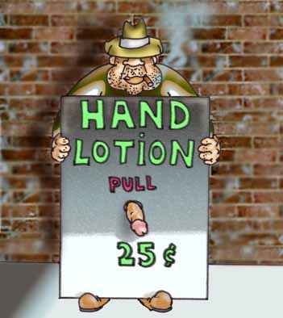
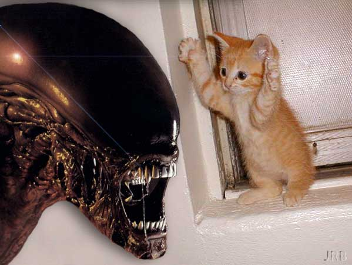
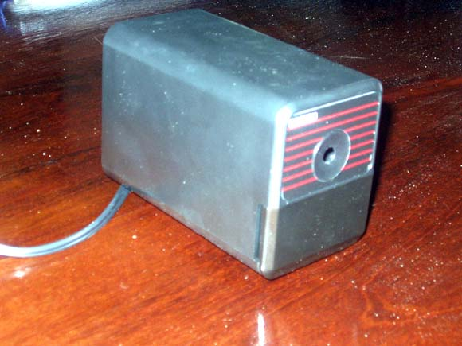
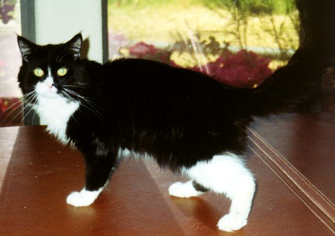
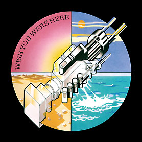
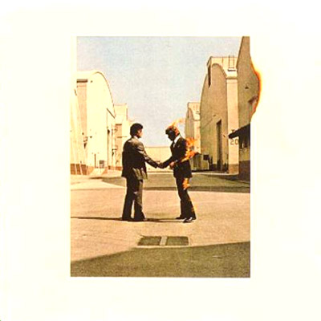

#153468 109 2006-03-10T18:43:54Z McP3000 Hey heres my submission
Mini Expedite:
http://numa.notdot.net/map/32870
and the Original by astheoceansblue:
http://numa.notdot.net/map/31769#153492 111 2006-03-10T20:41:02Z McP3000 Second map, yaaaa!!??? :-p
anyway
Meter Over Mecca
-
http://numa.notdot.net/map/32882-
Mile over Mecca, the original version
-
http://numa.notdot.net/map/8917 -
#153508 113 2006-03-10T21:15:47Z McP3000 wtf submit them
#153939 121 2006-03-12T03:15:57Z McP3000 Here is my last submission.
Liked this one better than my suspense. Anyway:
Mini Armitage
http://numa.notdot.net/map/33093
Original
http://numa.notdot.net/map/26723#154175 88 2006-03-12T22:19:06Z McP3000 Heres my first submission to the GMTC
Luminous Sorrow of the Joker
http://numa.notdot.net/map/33209#154208 32 2006-03-13T01:08:26Z McP3000 My first Submission to this contest...
Asteroids#154209 89 2006-03-13T01:16:38Z McP3000 Hey, heres my second submission
I made it a while ago but whatever
Don't Get Lost in Heaven
Thanx Yahoozy_Guacamole for the reference
and it was inspired by the Gorillaz of course
#154221 33 2006-03-13T01:52:12Z McP3000 Last submission to this contest
I think this turned out well, but its what the judges think...
Primordial Foe#155369 131 2006-03-17T03:21:03Z McP3000 How come you havent added mine or any of the recent maps to the submissions???
#155370 36 2006-03-17T03:23:20Z McP3000 Hey....When are you adding my maps??
#155474 25 2006-03-17T14:49:18Z McP3000 #155616 364 2006-03-18T15:23:40Z McP3000 Hey louie
i would like to be in it
Left center falling
As a Purple Ninja
Thanx
#155617 20 2006-03-18T15:25:26Z McP3000 Definitly action
You can beat it, even all gold it, and come back the next day and find something new about it.
#155634 42 2006-03-18T16:11:44Z McP3000 Hey Sept,
This is my first entry:
Razor Sharp Mustache
It s a strange name, but it goes well with the level
If yall see any block tiles, tell me, and ill just fix it.
#155641 1362 2006-03-18T17:05:57Z McP3000 rated Rocky Tower by Monkey of doom
and rated Evil___'s silence, strangeness, and darkness
I want three of my non episodic maps rated.
It would be nice to finish their ratings.
Forsaken Imps of Alagozza
Meteor Shower
Mausoleum of the Serpentine Aviator#155687 1364 2006-03-18T22:26:39Z McP3000 Rated Secret machines map
It would still be nice if someone rated mine above so i can get a 5 vote rating...
#155688 2 2006-03-18T22:29:46Z McP3000 Hey xdude_rox
You know theres a map rating thread...
You would have to be specific in which maps, but it would solve a couple of your problems.
#155689 671 2006-03-18T22:32:53Z McP3000 Im wondering, how long is this epic going to be???
#155694 113 2006-03-18T22:41:08Z McP3000 Hey, i want this map rated
Luminous Sorrow of the Joker
Even though it isn't completely rated yet, it was sniped and it has a three when it was a 4.
Also i rated Pariah's Im sleeping in a submarine level.
(Please, for god's sake...Whomever has that halo comic, please take it off...)
#155699 33 2006-03-18T23:02:15Z McP3000 I dunno, i personally dont like Littleviking001's maps. They just dont do it for me.
Personally i like Atramentis and Formica.
#155703 12 2006-03-18T23:15:10Z McP3000 Zugbop, i looked at your sig and you and i dont like it.
I am a republican, very mediocre on bush, but still a republican.
I personally aren't radical but still think this:
This is metanet, NUMA, N. I didn't join this to talk about politics and be reminded about the outside world. Me and other people may agree or disagree with your beleives, but personally dont want to see another anti-bush sign everywhere we look.
Im not telling you to change it.
I just want you to think about it.
Also, ill probably enter your contest later anyway.
Thanx.
#155787 44 2006-03-19T04:35:47Z McP3000 Second Submission
Its an old map of mine.
Box Apprehensions#155800 20 2006-03-19T05:42:11Z McP3000 I give credit to mithril_silver
He only had 30 maps and created some astounding DDAs
He might not of been the best, but he really went great at an amazing speed. Also, his Dungeon of Dooms: Final Showdown is my favorite DDA, so i gotta give him that.
#155804 12 2006-03-19T06:08:25Z McP3000 Ngaged....
Just wow...
My favorite episodes by a single player yet.
BTW how many are you gunna do?
It would be nice if you made a .txt for us to download them all on
#155817 42 2006-03-19T07:26:59Z McP3000 That sounds like a great contest ultima..
i think theres two problems
first: Not enough people will enter contest, not too many DDA mappers out there.
Second: Lopsided results. People like shadenshaft or formica would completely dominate a n00b. It would be a good contest of the greats though.
#155818 43 2006-03-19T07:53:13Z McP3000 Hey
I was thinking about adding my own contest to the list. I have the rules, judging, and went through the ten steps except the questioning (which im doing here), and i found out my first tourney sounds pretty decent.
I was thinking about creating a Self-Signature Contest.
Such as Trill or Tribute to Lucidium by Formica, where they use their name or signature in the tileset to make a good level.
Except the draw would be it that the name or signature is yours. Like I would submitt a McP3000 map, or Sweep submitt a map with sweep in the bottom righting (part of the tileset.)
It would be a neat way to have people try and use their own unique styles to curb to their either metanet forum or numa name...
Please get back to me on this. Im curious, and really think this is a decent idea.
ALSO NO ONE STEAL THIS IDEA!
Thanx
#155868 42 2006-03-19T16:10:31Z McP3000 Ngaged, way to get after it
as for the other judges....whats up, are they even gonna try and judge?
#155873 52 2006-03-19T16:44:15Z McP3000 wow gnome, your close to me.
Ive got two more in the eightys, have the forties finished, and we'd be equal...
nice
I've been playing fo awhile too.
#7518 1 2006-03-19T18:04:40Z McP3000 Alright, I'm posting my episodes for two reasons.
First, I've been getting losts of good feedback on my episodes thus far, but not all of them have been rated. I've decided to do this versus the map-rating thread.
Second, I've had mapmaker's block with a lack of inspiration. I hope this will provide me with the means of creating better levels.
Ultimately I plan on creating ten episodes, aka a column of episodes or ten(09).
I'm about half way there. At the end I will post a .txt document with them on it so you may have them in a userlevels formatted document.
Anyway Here they are:
00-0:
A New Beginning
00-1:
Musical Fingertips
00-2:
Jagged Rocks of Inner Passage
00-3:
Cubism
00-4:
Old Mr. Rutherford's Bedtime Stories
01-0:
Forked Inside
01-1:
Kary Me
01-2:
The Curvaceous Flower Garden
01-3:
Sand Castle Blues
01-4:
Stalactites of Johnny Two-Tone
02-0:
Mayan Sanctuary
02-1:
Welcome to Your Holding Pen
02-2:
Rainy Jungle of Acid Rain
02-3:
Barbed
02-4:
Tree of Creation
03-0:
Tower of Belief
03-1:
Cave of Begotten Drones
03-2:
Mid Noon Dust Riders
03-3:
He Ain't No Damn Miner
03-4:
Tree of Destruction
04-0:
Gunner Lanes
04-1:
Forest of the Sublime
04-2:
Razor Sharp Mustache
04-3:
Hybrid Fixation
04-4:
An Allegory for Frustration
05-0:
Dr. Jefferson's Hypothesis was Incorrect
05-1:
Sprout Me Cubic Wings and Fly, Fly Away
05-2:
Where Art Thou in These Deadly Vines?
05-3:
Sensations of Being Slightly Tangible
05-4:
Nearing Expiration
06-0:
Tiramisu
06-1:
Shoot the Moon
06-2:
Method to the Madness
06-3:
8th Street
06-4:
Zion
07-0:
We Swim Across the Waters, As the Oceans Blue...
07-1:
And the Wall Said 9_4_0_0_
07-2:
Krusched
07-3:
The New York Times!?!? I Said I Wanted the Daily Llama!!!
07-4:
Enemy Ngaged
Uhh...im done with my levels
heres the txt with my episodes on them
Dont really think yall use it or not....just dont know about this community anymore.
I promised, and here it is...I think its fun, even though the levels are all pretty hard
Attachment (lost): post-10-1144171349.txt
#155893 44 2006-03-19T18:06:18Z McP3000 If no one replies to my contest question, i think ill create the contest anyway when i get back in a week...
#155939 46 2006-03-19T22:35:35Z McP3000 I know about that. Your right, i probably should wait about doing this. I mean, if i really want it to be successful, i must be patient.
#155965 141 2006-03-20T01:00:33Z McP3000 Damn, i cant wait til this is over
I want the f***ing judging to start!
#156002 1369 2006-03-20T03:50:51Z McP3000 Rated mini paroxym by Qix
I would still like these two maps rated from above. They both have four votes apiece.
Not to be gluttonous on the thread, i just feel like these two deserve five votes.
Forsaken Imps of Alagozza
and
Meteor Shower
Thanx :

#156044 20 2006-03-20T06:24:43Z McP3000 Huh.....
Anyway, my two cents.
Turn ons:
-Symmetry
-Flow
-Freedom while playing
-Clevel object placement
-Making the tileset very nice and appealing. Such as after making it, creating art or adding effects to make it nice, even if it doesn't effect the level at all.
-Light Gold that is spread out in small clumops
-Occasional mines
-Difficulty balance. Not too hard for the type of level.
Turn Offs:
-Randomness in object location
-Very unimaginitive tileset
-Insanely difficult
-Inhibited play (puzzles or races dont really count for this one)
-Large clumped gold
-Too much gold
-Clumped mines, when one or two are satisfactory
-Long winded and drawn out play.
Anyway, there it is.
#156045 44 2006-03-20T06:27:47Z McP3000 Sorry theshav
I wasn't in a very good mood when i posted that.
#157073 48 2006-03-23T17:48:24Z McP3000 Wouldn't that just be like submitting a survival map on NUMA and then asking for demos...then giving a dedication to the demo with the most frames???
If not, then tell more about it.
#157307 60 2006-03-24T03:06:35Z McP3000 Im very much behind your idea of this...
I think it is very nice to see some great author's styles put together by not them, but their viewers.
also,
@templex
Also, i disagree with templex...Why do you think this a dark age???
There some really good authors out there recently such as xdude_rox, 99turtle99, -x-, and methodic. A biased view against people whom clog the newest page is very much understandable, but not right. How the hell do you think that the greats became the way they are today? Sure i might go through ten maps where i give a a 2.5 or lower, but how do people learn? How do new styles come forth? Should Numa and N become some fucking club for people who found it in the 1.3 status?
I dunno if im on the new greats list, but i surely know that i have grown from some rather harsh comment and rating beatings. But now i get some steady 4's. Not to be cocky, but its the truth! Also, when was the last time you submitted a map? I dont even think i've seen one of your damn maps yet. As evil_bob is completely surprised by his making the list, that you shrug the damn thing off thinking that you don't "need" another dedication.
I know that many great authors have been good, and continue to make good maps. But please, for god's sake, dont be conceited in your abilities or even by the fact that you have been here for awhile.
Yes, im going to ravaged by hate posts, but i dont care, i just want you to think about it...
Also, sorry about doing this on your thread wcvandal. Just that i had to put it here because it was on my mind. I love your maps personally. I think you'd be around 4 or 5 on my list.
#157647 2 2006-03-25T03:49:03Z McP3000 ooh nice sig xdude_rox
Wish i had my own
Mines justa pic i found on google.:-p
Still cool though
#157648 2 2006-03-25T03:51:39Z McP3000 Ha!
Finally figured it out too.
Didn't give me that much pain, but a good twenty minutes of frustration.
#157660 411 2006-03-25T04:12:56Z McP3000 Since everyone now has lair's and shit, and no longer just ninja's i demand(or ask
")
) to have my own.
It shall be a building at the top with McP3000 in purple neon lights
and/or
add the pink panther like in my sig
Thank you very much
#157670 413 2006-03-25T04:49:47Z McP3000 OMG
Thank you Av_Ultima
My life....Is complete
{Tears drop from eyes from behind computer monitor}
#158206 51 2006-03-26T19:32:27Z McP3000 This isn't good...
Judge confusion
I guess itll be a while for some more judging
oh well
#158403 8 2006-03-27T05:22:19Z McP3000 Wow, those are amazing, especially the black mage one (FF freak)
You like nevermore don't you???
Or did you just use him as a name
You should seriously make these for people, they're amazing...
#158405 12 2006-03-27T05:27:39Z McP3000 Dont like it that much
Not too fitting for these forums. It's more like a bloody mess of those stickman flashes you see EVERYWHERE. They're funny, but not a good sig, sorry.
#158411 75 2006-03-27T05:46:47Z McP3000 *Walks into vaporized bar wearing a purple pimp hat and a shirt pissing everyone off in the bar*
*Sits at bar*
*Has sex with hot waitress*
*Gives finger to Dark Ball Y-E*
#158640 2 2006-03-28T01:36:55Z McP3000 Oh...God,
I'm finally back from Spring Break,
Now I will be continuing my episodes once more.
Also, I will submit 9400's dedication for making my sig.
I'll post it here when I'm done.
Edit: 9400's dedication will be 07-0 or 07-1...don't know yet.
#158682 6 2006-03-28T02:35:21Z McP3000 Sign me up for action and race
McP3000
This sounds like a blast.
#158685 460 2006-03-28T02:37:07Z McP3000 Oh, could you change my lair to McP3000's Brothel
#158687 55 2006-03-28T02:42:34Z McP3000 Yeah, bobo left out a lot of maps..., like both of mine
#158690 57 2006-03-28T02:46:04Z McP3000 Solarion,
sry but that idea would be very restricting.
It would produce very similar maps, and not many people would enter it.
#158691 686 2006-03-28T02:49:02Z McP3000 Hey Formica,
Didn't you say you're gunna make another epic-like thread after this one?
#158706 42 2006-03-28T03:37:56Z McP3000 Okay,
how about....
Pornography
and
Star Wars
#158707 83 2006-03-28T03:44:41Z McP3000 To be tickled endlessly for hours so you suffocate to death.
That would suck.
Also (this one was real)
I might get banned or warned for this too:
Getting analy rapped by a horse, and having its dick puncture your intestines and you die from internal bleeding...
#158709 29 2006-03-28T03:51:09Z McP3000 Very nice dark ball y-e 7/10
How a bout a chuck norris joke?
What's sex with Chuck Norris' wife like?
...
Throwing a hot dog in a hallway.
Might take awhile to get
#158710 20 2006-03-28T03:53:24Z McP3000 You should make both ninja sides different colors.
Like a blue and a red team
#158714 84 2006-03-28T04:05:20Z McP3000 *Appears from nowhere*
*Uses machete to cut off logo16's testicles*
*Holds random ceremony to honor myself*
*Turns around to see Darkball Y-E having sex with alive pong paddles*
*Shrugs and orders a prime rib steak with olives*
#158715 864 2006-03-28T04:09:36Z McP3000 4/10
Homer simpson is cool, but every...EVERYONE has a thing or something for him.
Too generic and unoriginal.
#158716 384 2006-03-28T04:12:13Z McP3000 ^most likely to be a person whom likes turtles^
#158717 1204 2006-03-28T04:15:46Z McP3000 Not really a sig
2/10
You need one Dark Ball Y-E
Edit: now that you have a sig, I rate it a 7/10. Pretty original and fits you, except for the beach part.
#158838 4 2006-03-28T14:46:35Z McP3000 You're Jman????
Cool, but it bugs me when people have two different names.
Anyway, isn't this like the map-rating thread???
Like this one better though, not 40 pages of maps...
Anyway rate my map here:
Remorseful Resilience to a Contagious Virus#158840 1209 2006-03-28T14:58:23Z McP3000 9/10 for freaky kiwi
I like your new sig better than your old one by pariah.
#158841 386 2006-03-28T15:02:22Z McP3000 ^Most likely to have sex with a dog with rabies^
#158842 102 2006-03-28T15:07:46Z McP3000 *Finishes Eating steak*
*Stabs Freaky kiwi with a giant sabertooth tiger claw*
*Summons army of ancient gnomes to battle the carniflex*
*Asks Solarion what a carniflex is*
*Grows into the God of Lightning*
*Kills All the tetrises in the thread because he is pissed of by them*
#158845 101 2006-03-28T15:10:15Z McP3000 ^The Big RK
#158872 388 2006-03-28T16:11:25Z McP3000 ^Most likely not to be black^
#158877 26 2006-03-28T16:18:10Z McP3000 Oh, sorry
Sign me up for just action.
#158879 5 2006-03-28T16:20:30Z McP3000 How about
Milieu
by krusch
#158880 6 2006-03-28T16:21:38Z McP3000 ^For action^
#158884 7 2006-03-28T16:23:18Z McP3000 And also
Edgeplay by Sendy
for action
#158889 1456 2006-03-28T16:33:35Z McP3000 Rated Shadows on the sun by Rocket Thwumped
I would like
Remorseful Resilience to a Contagious Virus
and
The Grapes of Wrath
Rated...
Thanx
#158923 7 2006-03-28T18:36:12Z McP3000 Doom 3 letdowns for me was
-Not enough hell levels
-Cyberdemon was WAY TOO EASY
-And I hated the soul cube idea
-Not enough large areas, the small hallways were awesome and scary as hell, but I wanted large area battles.
-All the boss battles were way too easy, except for the second time you face the spider queen twice at the end before main excavation.
-Last, I wanted there to be more variety in the monsters. There were too few interactions with the specialized monsters like the cacodemons or mancubus or revenants. It was an imp and marine zombie fest, with an occasional hell knight(which they made way too easy, except where they introduce them with two coming out of the teleporter.)
#158931 66 2006-03-28T18:43:25Z McP3000 I believe in god
I think of him differently than some partial being that many evangelicals and muslims think.
I dont want to go into my long description, but im a methodist christian...
and proud of my beleif too...
#158945 41 2006-03-28T19:03:06Z McP3000 I'm white
my entire family is from britain, scotland or ireland
I am against interracial marraige
Gay marraige
And
I am extremly conservative, but am understanding
I think republicans and democrats are both guilty of being unable to listen.
Democrats think we're crazy and want an anarchist way of life
We, not me, think that democrats are communists.
The truth is that democrats are closer to creating a socialist society that is truthfully unable to work which has been proven throughout history. As for the republicans, seen from the great depression, this monopolization and pro-business ideal leads to an abrupt depression and insane manias in the economy.
The truth is that republicans want to make an economy where there is a strong seperation of classes with a very jagged flow from economic depressions and manias. They are good at times, but very hard on the people.
The democrats want to even out this jaggedness, but in doing so they are inhibiting the lower classes from rising. In fact, creating a large scale lower class.
This takes me to hating welfare. It does not help people, it gives them a crutch. Yes, social security for the elderly is fine, along with very selective welfare for the retarded (yes retarded, political correctness is a way of limiting free speech)
and bankrupt.
I seriously want to debate, but not with idiots who will say anything that is liberal or conservative. Straight ticket voting is a flawed system. In reality, both parties are mostly corrupt in office. They are both rich and want power in our government. They are truly the same trying to appeal to different audiences.
#158947 42 2006-03-28T19:08:25Z McP3000 Adding to my this
The democrats want to even out this jaggedness, but in doing so they are inhibiting the lower classes from rising. In fact, creating a large scale lower class.
I am adding that this ideal is very flawed. The people that want everyone equality and no one extremely rich, are extremely rich. In order for a good capitalist society to operate, there must be the rich, poor, and middle classed people. The society is operates on this, and won't work without it.
#158950 43 2006-03-28T19:11:49Z McP3000 Also I'm 6'3" and am good at basketball...
Being tall is fun!
Also, lets not have this discussion effect any of our other foruming and numa ratings.
Talking politics is fine, but lets not let it invade the rest of N.
#158954 424 2006-03-28T19:20:13Z McP3000 I got to 99-4 and died!!!!!!!
Just kidding, I died around 6-2
#158958 107 2006-03-28T19:25:35Z McP3000 *Army of gnomes continue rampage*
*Coffee Freak is turned into a black and white cube by my god like powers*
*Laughs evilly as the cube spins around in circles and is turned into an avatar*
*Turns into the pink panther*
*Bitch slaps Dark Ball Y-E*
#158959 391 2006-03-28T19:26:41Z McP3000 ^Most likely to have caffiene addiction^
#158965 43 2006-03-28T19:36:18Z McP3000 ^Some one I agree with
(I am against people who dont want to recognize their ethnicity. Like people that say they are black and are victims of the white community, but has 50% white blood. I find it very ironical, biased, and trying to conform to the mtv persona of the blacker the better)
(Am not racist, just using black as a type of person, even though is wrong, it is easier to affiliate with.)
#158966 105 2006-03-28T19:40:34Z McP3000 ^Sir Starbucks
#158968 44 2006-03-28T19:46:24Z McP3000 Ill take this one sketch
Bitesize Numa
I'm leaving this one to sketch...
#159040 111 2006-03-28T22:36:43Z McP3000 *Dodges Robot attack*
*Takes army of gnomes and invades japan*
*Japan turns to the Land of McP3000*
*McP3000 plays free video games for the rest of his life*
*While playing Halo, orders a lesbian japanese juggernaut prostitute to rip off gangsta-skorps' head and shove it into Dark Ball Y-E's nostrils*
*Everyone in the bar bows at McP3000's greatness*
*McP3000 reverts back to his pink panther form and continues playing pacman in bar*
#159042 393 2006-03-28T22:38:25Z McP3000 ^Most likely to be worst black person at basketball^
#159043 47 2006-03-28T22:39:22Z McP3000 Oh sorry sketch
Edited it out myself
my bad
#159045 37 2006-03-28T22:42:52Z McP3000 Alright I guess....3/10 done too much
Why did the chicken cross the road?
To have an endless campaign of corny jokes named after him so he can rule the world!!!!!
#159086 683 2006-03-28T23:57:01Z McP3000 Hey, how do you insert a picture from your "my pictures" folder....
I;m pretty much a computer retard for asking this.
ediT: just found it, post my pic later
#159092 118 2006-03-29T00:01:08Z McP3000 *After explosion, figures out that I am invincible*
*Has sex with maid, who is a hot latin woman*
*Continues to play pacman as the pink panther*
#159094 3 2006-03-29T00:03:41Z McP3000 Yeah, I dont think you should continue this contest, did you go through sweeps' rules?
#159096 58 2006-03-29T00:05:09Z McP3000 Sorry Ultima888,
I guess I've been a prat...
Just been bored and impacient
#159101 86 2006-03-29T00:10:54Z McP3000 Because you liked the name....
I have another...
To die while having sex with a fat chick..., she is on top and crushes your body!
Actually that's not that bad, but a horrible way to die that would actually have a change of coming true.
#159102 40 2006-03-29T00:12:46Z McP3000 NEVER
MUHHAHAHAHAHAHAHAHAHAHHA!!!!!
Actually, sure twistkill, I can see stereotypes pissing people off, but the thing is, most jokes about them are to make light of the idea, but whatever.
#159153 4 2006-03-29T02:41:01Z McP3000 I'll try japan, put me on....
Also, could you try and explain it better, im kinda confused
Still want to be apart of it though
#159154 5 2006-03-29T02:42:06Z McP3000 Also, mystery power, I think you linked the wrong level
#159156 17 2006-03-29T02:57:55Z McP3000 Just a little something to take your episodes back to the top of the forums, where they belong.
#159157 41 2006-03-29T03:01:10Z McP3000 Yes, it is an awesome idea madnick
trib4lmaniac is in this?
Thats not good for the other pentathalon entries
#159160 468 2006-03-29T03:05:19Z McP3000 Sweeeet!
McP3000's Brothel is in business!!!!
*Clutches hands together as I greedily wait for lonely men to walk by with tons of money*
#159161 15 2006-03-29T03:07:04Z McP3000 When and where is the poll gunna take place?
#159162 122 2006-03-29T03:09:47Z McP3000 *Kills mario and luigi*
*Revives them as minions of the pink panther in snes cartridge form*
*Takes away the juggler's juggling balls*
*Laughs as the juggler becomes sad and lonly
*Switches to playing Ms. Pacman*
#159166 139 2006-03-29T03:14:01Z McP3000 Asshole bondage foundation
NAACP-National Association for the Advancement of Colored People
#159168 64 2006-03-29T03:17:02Z McP3000 One day two ninjas decided to go out to the shooting range and kill their banana's evil half-brother who was unicycling over an abyss. Suddenly, 469,000 pubescent gorillas came out of Hell asking for their adeptness. Tobias, the head gorilla, wielded moldy olive loaves with intent to annihilate Linus Ferguson, everyone's favorite bulemic undertaker. This wasn't saying much for Linus, because he was the only bulemic undertaker in the history of the world. Tobias was only throwing phones at the great big evil half-brother, who swiftly called collect. Suddenly the telephone exploded. Then the younger ninja became happy and he toilet-papered every living relative.
An antidisestablishmentarian passing nearby thought that stepping on the top of your head was utterly inappropriate due to sexitorium's rights.
#159172 51 2006-03-29T03:20:44Z McP3000 How did this get around to Nintendos and PS3's???
And Dark Ball Y-E, like the new sig
#159175 29 2006-03-29T03:25:20Z McP3000 Here is the most shocking thing ever....
George Bush said something right...once
#159178 103 2006-03-29T03:32:08Z McP3000 Elaxion, your n00b thing was misplaced, your still relatively a n00b too, and I maybe just graduated from n00bdom on these forums.
#159184 53 2006-03-29T03:45:18Z McP3000 And being gay is against our genetic code and against human and biologic laws.
Reproduction would be impossible. I'm not looking at the gay thing from an entirly religious way. I mean, looking at it that way is fine, but we cant amend the constitution based on judaism and christianity not liking it.
Oh, as for the interracial thing, I find interracial marraige (in most cases not all) a sort of fetish like union. It seems to be very sex or socially related. Dating the black guy cuz his dick is bigger, dating the black girl, because her ass is bigger. Dating the white girl because she is prettier and just because she is white, means she is of greater value than the woman of my race. Naturally, people are more physically and socially attracted to other humans that are similar to them. I am naturally more attracted to white women. Its not my *choice* its the way I am. And when I mean attracted, I mean physically, mentally, and socially. Naturally we like to become attached with people similar to each other. If there was a room full of people, half-black, half-white, the humans would instinctivly segregate to form a predominately all-white or all black group. Same with genders, and later on they further segregate into beleives or mannerisms.
I am also proud of my white, caucasian, european decent. I might sound racist, but naturrally all people are prouder and slightly prejudice to people they share common attributes with. A black woman that is christian would lean towards the black's association because of her heritage and most likely not her mental reasoning and instinctive beleives. However, she would try and mold into here physically similar society to become more like the group's ideal whom which she feels closest too.
I'm not saying its right that people racially profile, are prejudice, or try to more strongly affiliate themselves with people that are physically similar to them. It is nature's way and it is instinctive for people to do this.
#7720 1 2006-03-29T03:52:00Z McP3000 poll your choice and please leave a posted comment on the subject,
especially if you picked other...
I'll post my opinion later.
#159194 9 2006-03-29T04:00:53Z McP3000 I hate the rock, his is a bad white actor, whom thinks he's black just cause he has 1/20th heritage...
#159195 124 2006-03-29T04:03:00Z McP3000 *Loses to ms pacman*
*Finds Dark Ball Y-E's box and opens it*
*Inside is the purpose of life*
*Throws it away and crawls inside to play star wars with himself*
#159197 395 2006-03-29T04:04:25Z McP3000 ^Most likely to interpret a joke as something serious^
#159199 43 2006-03-29T04:09:31Z McP3000 And??????
Have you even looked at the highscores?
Determination to be the best and to acheive greatness?
#159218 57 2006-03-29T05:01:35Z McP3000 Whatever, fuck it
none of us is going to change our views about the subject anyway.
#159326 48 2006-03-29T14:15:30Z McP3000 ^Likes long quotes and coffee
#159327 129 2006-03-29T14:19:30Z McP3000 *Reappears from nonexistence*
*Finds a lightsaber in hand*
*As a ghost cuts solarion in half*
*Remains in bar wandering around looking for Casper*
#159329 398 2006-03-29T14:22:36Z McP3000 ^Most likely to go to a school with a kid that is completely wrong about McP3000's image^
#159332 399 2006-03-29T14:25:00Z McP3000 ^Most likely to be coolest person alive from Texas^
#159336 55 2006-03-29T14:34:52Z McP3000 I completely agree daddaluma, they stroked themselves and their evil cats in their laps. The cats purred, they got hard off and they think better of themselves...
Actually the legacy was fun, but the map pack was a little dull and redundant towards the second half.
#159338 31 2006-03-29T14:37:27Z McP3000 Wait barabajagal...was that agreeing or disagreeing???
Kinda got mixed messages
#159342 169 2006-03-29T14:51:11Z McP3000 Mac sucks because I have never owned one and I have decided to be ignorant about the subject.
(Actually, im just pretending to be the type of people I hate)
Really, they're both the same with slight differences. Don't care either way.
#159343 19 2006-03-29T14:53:09Z McP3000 What little thing?
#159414 107 2006-03-29T19:57:40Z McP3000 ^The Pillsbury Do'h Boy (hahahah pun!)
#159416 18 2006-03-29T20:00:53Z McP3000 Yes and no, I actually landed on my face and got ten stitches, but that pretty much close enough...
Have you ever had sex?(with a girl)
It'll be awhile til someone on these forums say yes

#159417 868 2006-03-29T20:02:07Z McP3000 Funny...8/10, oh and I meant 4/10 for the elaxion up there^
#159422 131 2006-03-29T20:06:56Z McP3000 *Finds casper*
*Casper is hit by The Juggler's juggling balls*
*Casper gets angry and floats away*
*I cry*
*Suicide bombs the juggler*
*Resurrects my self as the pink panther*
*Continues to play ms. pacman*
Sry juggler, you're right...()
#159424 402 2006-03-29T20:08:21Z McP3000 ^Most likely to agree with someone that hurst my feelings^
#159426 52 2006-03-29T20:10:00Z McP3000 ^Is the not as famous Evil person on Numa
#159429 325 2006-03-29T20:11:35Z McP3000 11111150002111111501111111111000002111150021111111110000001111000000211111500003111110000000111100000011111140000001115000031111111500000011100000021111150000000111000000000000000000001150000000000000000000311000000000000000000311110000000000000003111111140000000000000021111111111140314000000015021111502111500000000000011150000000000000000000111000000000000000000001114000000000000000000011114031114000000000000111111150215000000014031115000000000000003111111100000000000000021111111000000000000000000211114000000000000000000021110000000000000000000011100000031111140000000111400002111111140000001111000000111111500000011111400002111110000000111111000000111100000031111110000031111400311111111140003111111401111|5^396,540!7^204,312,3!7^204,312,1!7^204,312,0!7^204,312,2!7^588,312,3!7^588,312,0!7^588,312,2!7^588,312,1!1^588,312!1^204,312!7^396,432,3!7^396,432,2!7^396,432,0!7^396,432,1!1^396,432!7^336,360,3!7^336,360,2!7^336,360,1!7^336,360,0!7^456,360,2!7^456,360,1!7^456,360,0!7^456,360,3!1^456,360!1^336,360!0^396,408!0^396,396!0^396,384!0^456,336!0^456,324!0^456,312!0^336,336!0^336,324!0^336,312!0^204,288!0^204,276!0^204,264!0^588,288!0^588,276!0^588,264!7^600,480,3!7^600,480,2!7^600,480,1!7^600,480,0!7^732,492,3!7^732,492,2!7^732,492,1!7^732,492,0!1^732,492!7^192,480,3!7^192,480,2!7^192,480,1!7^192,480,0!1^192,480!1^600,480!7^60,492,3!7^60,492,2!7^60,492,1!7^60,492,0!1^60,492!0^60,468!0^60,456!0^60,444!0^192,456!0^192,444!0^192,432!0^600,456!0^600,444!0^600,432!0^732,468!0^732,444!0^732,456!7^660,564,3!7^660,564,2!7^660,564,0!7^660,564,1!7^132,564,3!7^132,564,2!7^132,564,1!7^132,564,0!1^132,564!1^660,564!0^660,540!0^660,528!0^660,516!0^132,540!0^132,528!0^132,516!7^108,216,3!7^108,216,2!7^108,216,1!7^108,216,0!7^684,216,2!7^684,216,3!7^684,216,1!7^684,216,0!1^684,216!1^108,216!0^108,192!0^108,180!0^108,168!0^684,192!0^684,180!0^684,168!7^252,168,2!7^252,168,1!7^252,168,0!7^252,168,3!1^252,168!0^252,144!0^252,132!0^252,120!7^540,168,0!7^540,168,1!7^540,168,2!7^540,168,3!1^540,168!0^540,144!0^540,132!0^540,120!10^396,336!8^132,132,1!8^132,252,3!8^708,300,3!8^660,252,3!8^660,132,1!8^84,300,3!8^312,516,0!8^480,516,2!8^696,408,1!8^96,408,1!7^420,180,2!7^420,180,0!7^420,180,1!7^420,180,3!7^420,204,3!7^420,204,2!7^420,204,1!7^420,204,0!7^420,228,2!7^420,228,1!7^420,228,0!7^420,228,3!7^372,228,1!7^372,228,2!7^372,228,3!7^372,228,0!7^372,204,3!7^372,204,2!7^372,204,1!7^372,204,0!7^372,180,2!7^372,180,3!7^372,180,1!7^372,180,0!1^420,228!1^420,204!1^420,180!1^372,180!1^372,204!1^372,228!0^468,528!0^468,516!0^468,504!0^324,528!0^324,516!0^324,504!8^324,456,3!8^468,456,3!9^36,228,1,0,16,7,1,0,-1!9^756,228,1,0,16,7,1,0,0!9^756,468,1,0,16,8,1,0,0!9^36,468,1,0,16,9,1,0,0!8^240,540,2!8^552,540,0!0^444,144!0^444,132!0^444,120!0^348,144!0^348,132!0^348,120!7^396,108,3!7^396,108,2!7^396,108,1!7^396,108,0!1^396,108!11^396,84,396,204
huh, last map submission I think???
#159434 40 2006-03-29T20:15:26Z McP3000 My humps in my pants
Ridin' dirty in my pants
Shake that in my pants
Cleanin'out my closet in my pants
Stan in my pants
Out of control in my pants
Stairway to heaven in my pants
#159435 368 2006-03-29T20:20:54Z McP3000 The Metanet Forum is a nice place where bad grammar and pink champagne go together like Kansas wine with hot mustard sauce. However, the unrighteous N00bs of doom seem incapable of sneezing. This means that all the sensible forumers have gone to Barbados to have babies and learn boxing. The Caribbean women are rather disappointed because giant penguins from SM64 are eating all their juicy pumpkin dumplings. Horrors from Beyond invaded the vast reaches of cheese under orders from the German dictator Hitler. "Great pumpkins!" exclaimed that guy from down the street who was from Canadian landfills that became buttons of god-awful purple shirts made for hippies who didn't use soap or shampoo because Maniac started to kill bunnies with his golden watch as he dumped gorillas into the sewers. Reminiscent of many smilies, the purple ninja smiled eight times like this: *biggrin*. Then Mr. Phlart had four orgasms
#159436 1688 2006-03-29T20:23:51Z McP3000 ^Has an avatar that has nothing to do with his name
<Coolest avatar alive that has everything to do with his name
#159438 106 2006-03-29T20:30:43Z McP3000 Liked it andrelinus...
7/10
pretty funny, but you may need to seperate edge strip better
#159440 8 2006-03-29T20:35:34Z McP3000 What's well 'ard mean, im from texas...
Also, both are great! I think the artsy people would be a little more displaced from the popular people, but wtf.
#159442 42 2006-03-29T20:38:14Z McP3000 YES!!!!!!
10/10 for that joke.

#159445 131 2006-03-29T20:43:13Z McP3000 40 days and 40 nights
Bad Santa
or
Sixteen Candles
#159503 34 2006-03-29T22:56:17Z McP3000 Come on, they might not be my favorite duo, but Cheney didn't shoot the guy on purpose. That's all media hype. I, myself, am very enthusiastic about hunting and know shit like that goes on ALL THE TIME. It was really the guy that got shot's fault.
....actually, that's kinda a shocker too.
Edit: and how is he a sadicted torturer... are you not from the US ado7
Being bad and a sadicted torturer are two completely different things.
#159505 37 2006-03-29T23:02:13Z McP3000 I dont care what you guys think,
But that dude is fucked up!!!
People like that shouldn't have rights or even the miracle of life. They need to die or go to prison...
(I'm not completely serious, but that guy needs to stay the fuck outta Texas)
#159507 1690 2006-03-29T23:04:47Z McP3000 ^Needs new underwear because he has a wedgie shit stain (I don't know)
^Also likes family guy
#159508 870 2006-03-29T23:06:38Z McP3000 Rincewind, I didn't make that avatar, its off the google images...
But I see your point
^Meh, 5/10, weird color arrays are done too often.
#159509 404 2006-03-29T23:07:57Z McP3000 ^Most likely to make fun of me along with everyone else on this thread since I have joined
#159510 45 2006-03-29T23:09:58Z McP3000 Twistkill, I like your new sig better, but it would be nice if you changed the avatar to fit it...In my pants...
#159511 134 2006-03-29T23:13:40Z McP3000 *Turns around to see omnious body of the juggler*
*Stabs him with pitchfork*
*Throws the carcass into a meat blender*
*Turns to elaxion and takes the nose from him*
*He cries because now no one will pay any attention to him*
*Accidently farts*
#159512 1215 2006-03-29T23:15:51Z McP3000 I hate brain eaters!!!!
0/10
#159515 9 2006-03-29T23:23:28Z McP3000 Ahh....
Queers, dont care either way as long as they dont get special rights and I dont have to hear about them every day. If everyone is equal, then we dont need to know how "special they are". I have a gay friend, quite easy to tell he is, but doesn't ever bring up any political arguments or tries to support or even talk about the issue. I find it slightly refreshing....
As for brokeback mountain, fuck that shit, cowboys aren't gay, I would know since im from texas. Also, homosexuality wasn't that big of a no-no, unknown in the 70's or 80's (forgot). Dont agree with it being so great either just cuz its about gay people too.
Fine, gays want to get in hollywood, but dont preach it and support it just cuz its different. So far the government isn't discriminating against them.
#159598 59 2006-03-30T02:15:46Z McP3000 Besides my self signature contest, I've been thinking about anothe contest.
Tell me if anyone has done this before.
An all floorchaser enemies map. No enemies but floorchasers. As many as you want. There is also one-ways, blocks, doors and exits, switchs, ninjas, and tiles. Pretty much nothing that can hurt you except floorchasers.
Pretty thorough,
If yall think I should add mines to it, I was thinking about that, but in some cases, floorguards act as mines... so.
#159601 4 2006-03-30T02:17:54Z McP3000 ...Got my own sig, do you like it?
#159602 23 2006-03-30T02:25:13Z McP3000 Here's also
Psychotic Mined Games by Sendy
for puzzle
Mount Doom by Maximo
for uncategorized
Twisted by Killisk
for puzzle
and lastly
Shrapnel by tktktk
for race
...wow, im pretty into this n olymipics thing...oh well...
#159604 53 2006-03-30T02:29:15Z McP3000 Hey madnick, you can go ahead and add me into the pentathalon too.
Was thinking about it, and saw that there wasn't an insane amount of people in it.
I mean, if its filled or you want more variety entries, that's fine, but if not sign me for it
#159607 16 2006-03-30T02:35:57Z McP3000 Lastly, do the stories have to do with each other:
exampe; -N went through canada on a hunting trip, but he got lost in yukon
-Winds up in switzerland selling beans, that damn MUV shows up again and he tries to escape it by going into germany
-In germany he encounters Adolf Hitler who tries to use N to take over world...
and so on...
^Would it end up being like this???
#159609 1461 2006-03-30T02:41:19Z McP3000 Rated rocket_thwumped's Shrub of Unrelenting evil a 4.5
still want
Remorseful Resilience to a Contagious Virus rated completely...
p.s. dont rate down for the name, I know it is paradoxical and doesn't make sense. But I like it and it sounds cool
#159612 11 2006-03-30T02:48:13Z McP3000 Yes, and im fine with that stepself...(your gay???) oh well
anyway, but many of these government people and protesters act like they are being treated unfairly. I guess the marraige thing might be a maybe, but still gay people aren't a minority unwhich the government should recognize. Maybe I went a little off kilter with it because I'm straight and will never see the world through a gay man's eyes, and you vice versa. But other than that I stand next to my beleives.
Might me off topic, but did anyone see brockback mountain? If stepself or any other gay people saw it, I would like they're opinions if it represented what it was trying to correctly.
**Lastly, I still respect you as a man, human, and individual whom is great at mapmaking, I just disagree.**
#159614 72 2006-03-30T02:49:52Z McP3000 Wow, you guys are deep. I would hop into this if I wasn't too lazy to read all that.
#159619 13 2006-03-30T02:53:51Z McP3000 *and without further adeu, capt. weasle, the only person besides mac addict17 I have agreed with on these forums...*
And eve was naked to be looked upon by man, and love, make love to, and both together love god.
...
This gets to the discussion if homosexuality is a choice or a genetic malfunction, or simply a different genetic trait...
#159637 62 2006-03-30T03:31:00Z McP3000 ... Daddaluma, have you ever thought about the idea that... oh god I don't want to go into this...
that when the white man first saw the black man, and vice versa, he was scared. Differences causes fear, aggression, and inevitably jealously. Imagine if you saw a green alien with two arms and two legs...Would you want to incorporate them into your lifestyle immediatly share cities, and become coexistent?
I personally would be scared shitless, and since when the white man found the black man, the black man was inferior in a social, mental, and technological sense. They channeld they ignorant fear into aggression. There was the idea that black people were inferior humans even though their societies hadn't yet evolved. This ignorant beleive was then taught to their descendants and used against these people in what is now called rascism. Back then rascism, bias, and ignorance wasn't found as cruel, evil or weak. It was simply there. Over time this taught ignorance was growing, feeding itself, and no one was there to stop it. People oftenly didn't question the way life was, and better yet, why do you associate this with republicans?
And to take this further, the democratic party back in these times and civil war owned the south. It was the republicans that fought for anti-slavery. It was the republicans that wanted to PUNISH the south for having slavery and being rascist. And to protect my beloved South, less than 10% of the population owned slaves. And even though they held the same views as the owners, so did the north! The north just gave them the jobs that were so low class, it was even harder to earn salary and feed, clothe, live, and own property with this money. The slaves techniquelly from a physical standpoint had it better off than the norther blacks. Its just that slavery is plain wrong that this isn't justifiable. And to take this further, if you are athiest, why do you have principles and follow the guidlines of good fellowship and have a set of principles. If their is no ultimate judgement and rascism and prejudice is under free speech, why do you defend these things. The fact is that science would never create feelings. It is actually hurtful to its growth. Self preservation and selfish leads to quicker evolution and more effiecient organisms. If you think about it, the chances of life, and life as complex as humanity's is so minisule, the fact that these chanced events weren't seen over is completely absurd
Obviously all you have done is listen to the news media and your parents and havent actually thought about history in depth. Democrats (im a republican so I dont know if we do this either) automatically group republicans with the rich racsist white boys. But indeed liberals are just as rich as republicans. This idea of the rich republicans is because we wish to cut taxes because we dont want the government to steal all our hard earned money. My grandfather's dad migrated here LEGALLY, from ireland, and he too was descriminated against. He was the white nigger. He had nothing, and went to work and never had a dollar fifty to his name. My grandfather and father worked in a fucking refinery...a fucking refinery. Minimum-fucking-wage. My other side had one more decendant and they owned a farm. My grandfather lived on a farm and milked cows since he was 5. Now he is extremely wealthy, and he wasn't given everything by some damn government official. But, my grandfather had worked two jobs and so did my grandmother to send my father to the family's first college. Now he works in real estate, is greatful for everything he has, and has lived almost the true american dream. And you say that everyone deserves a chance? the same chance my family had??? How about fucking that???? Your liberal countries give handouts to the beggers as real people actually have the will to live and better themselves with pride. We have something to look forward too, God. It may be false hope to you, but if it gives you the fuel you need to succeed, you should fucking respect that instead of trashing it like a primitive way. You people act like egomaniacal geniuses who want to propaganda the younger souls on these forums. I hope they dont read that garbage and fall for it. I hope they live and come to believe what they want and how they want to live their lives. Not what they are told by people who are as power hungry as they claim the republicans are.
I by no means am sticking up for every republican ever. Many of them are frauds, victims of what I say above except taught by the differently ignorant.
Read this...I dont care who responds, it gets off the topic, but it may of found the source...or this "discussion"
Respond, ill be here...
#159639 2 2006-03-30T03:32:51Z McP3000 {not another}
#159644 137 2006-03-30T03:35:13Z McP3000 *Managed to escape zombie attack from farting*
*Uses kryptonite to defeat superman*
*Kicks elaxion and the juggler in their zombified testicles*
*Both die*
*Pronounces myself ruler of the world*
*Switches to playing galaga*
#159645 22 2006-03-30T03:37:13Z McP3000 Jesus wept. And later, he said "The green moopie wanted a distraction, so it ate another green cookie, but it died having never been good at that. However, your mom played the harp, but it was slimy and disgusting too. It was a mischievous butcher which hijacked the platypus that he never killed, so that was the last of the mischievous gray dog."
#159648 47 2006-03-30T03:39:13Z McP3000 Your avatar is red with a black, sleek T and snake, and it contrasts with the white twistkill in bolder, more rubust lettering. Also the backround is blue fading to black, as the red is fading to a lighter color, yellow.
#159649 20 2006-03-30T03:40:21Z McP3000 Who said I had never had sex?
#159661 1694 2006-03-30T04:07:00Z McP3000 ^Likes homer simpson and has a forum name I dont understand
#159663 54 2006-03-30T04:08:41Z McP3000 ^Person that knows that I have sex with a GIRL.
(Just want to be clear, not against homosexuality)
#159664 406 2006-03-30T04:10:52Z McP3000 #159665 66 2006-03-30T04:12:17Z McP3000 One day two ninjas decided to go out to the shooting range and kill their banana's evil half-brother who was unicycling over an abyss. Suddenly, 469,000 pubescent gorillas came out of Hell asking for their adeptness. Tobias, the head gorilla, wielded moldy olive loaves with intent to annihilate Linus Ferguson, everyone's favorite bulemic undertaker. This wasn't saying much for Linus, because he was the only bulemic undertaker in the history of the world. Tobias was only throwing phones at the great big evil half-brother, who swiftly called collect. Suddenly the telephone exploded. Then the younger ninja became happy and he toilet-papered every living relative.
An antidisestablishmentarian passing nearby thought that stepping on the top of your head was utterly inappropriate due to sexitorium's rights. After he had his
#159670 10 2006-03-30T04:17:18Z McP3000 is this the first question or is this the intro???
Welcome to my puzzle. All you have to do is replace "first" with what you believe the answer to be, and replace the next answer with the previous one. This will get hard, but for now it is simple.
if its the first question, I already lost.
#159673 39 2006-03-30T04:22:12Z McP3000 #7743 1 2006-03-30T04:25:21Z McP3000 Read the topic title and description.
Try to submit your mama jokes. Rate the one above out of 10 and submit one. I want to see if our community has revived this type of humor...
Jeff: Hey Joe,
Joe: Ya
Jeff: What did you do last night?
Joe: Your Mama!!!!
")
and let it begin...
#159753 58 2006-03-30T14:40:20Z McP3000 Wow, no ones in uncategorized...
Sweep you should sign up for that. It's like action pretty much.
edit: Not sweep, theshav, my bad.
#159756 19 2006-03-30T14:54:46Z McP3000 Dangit, we need a mexico to get this started!!!
#159761 64 2006-03-30T15:19:14Z McP3000 Ummm, theres a lot more than one enemy!!!????
#159770 139 2006-03-30T15:34:55Z McP3000 *Continues to play galaga until someone else joins in*
#159771 69 2006-03-30T15:36:30Z McP3000 One day two ninjas decided to go out to the shooting range and kill their banana's evil half-brother who was unicycling over an abyss. Suddenly, 469,000 pubescent gorillas came out of Hell asking for their adeptness. Tobias, the head gorilla, wielded moldy olive loaves with intent to annihilate Linus Ferguson, everyone's favorite bulemic undertaker. This wasn't saying much for Linus, because he was the only bulemic undertaker in the history of the world. Tobias was only throwing phones at the great big evil half-brother, who swiftly called collect. Suddenly the telephone exploded. Then the younger ninja became happy and he toilet-papered every living relative.
An antidisestablishmentarian passing nearby thought that stepping on the top of your head was utterly inappropriate due to sexitorium's rights. After he had his weiner enlarged by means of masterbation
#159788 114 2006-03-30T16:28:03Z McP3000 ^Wolf of the Gamers
#159792 142 2006-03-30T16:30:57Z McP3000 *Get angy for loosing at galaga*
*Picks up galaga machine and smashes chasethebase*
*Switches back to playing ms. pacman*
#159795 115 2006-03-30T16:36:48Z McP3000 Adolf Hitler comes and stops everyone so far by propaganda turning Germany once more into a giant Nazi Regime, oh no!
#159797 65 2006-03-30T16:41:39Z McP3000 I personally dont want to marry outside of my own race, I cant stop anyone else, but I find it personally as a way to perserve my own was and race.
I dont know, I might be extreme, but I dont care. Its what I think
oh iangb, my bad on the slavery thing, I meant to say I disagree with it. I didn't look over what I said, I just typed it so there might be a lot of errors.
#159863 117 2006-03-30T20:04:36Z McP3000 ^Master of N-poses
#159868 8 2006-03-30T20:14:53Z McP3000 Theres no judges???
awww...
#159886 3 2006-03-30T21:03:08Z McP3000 #159890 1463 2006-03-30T21:15:56Z McP3000 rated "n"dlessness
The grapes of wrath
is the last map I want rated for a while.
only has two votes, want three more.
#160056 26 2006-03-31T04:28:40Z McP3000 n00bs always like DDAs and easy maps... its a shame
#160057 1468 2006-03-31T04:29:54Z McP3000 Hey rocket_thwumped
im pretty sure I rated it.
#160058 3 2006-03-31T04:35:00Z McP3000 Hmmm...
are you gunna use this for the world wide epic??? (mysterypower's)
#160059 7 2006-03-31T04:38:33Z McP3000 Dammit, I polled before I read the question out...
Anyway, (even if you dont give me the time of day), I like the ratings system and want it to stay, I just wish we knew who had voted for us. To make it help with snipers.
#160060 59 2006-03-31T04:40:15Z McP3000 ^Has a cool siggy and a stupid avatar.
#160062 410 2006-03-31T04:43:06Z McP3000 ^Most likely to be right about chasethebase
#160064 22 2006-03-31T04:45:42Z McP3000 hmmm... banana, my tastebuds can take on the world
Would you rather die a quick in sudden death in your sleep so you never knew you died, or have a deathbed for two months to complete your life,but have the most painful last day of your life?
[long question over]
#160065 150 2006-03-31T04:48:43Z McP3000 *Wanders around looking for head*
*Finds it*
*Places it back on shoulders*
*Repairs galaga machine*
*Continues playing galaga without chasethebase*
#160067 152 2006-03-31T04:50:28Z McP3000 *Laughs at elaxion for dying*
*Continues to play on the fixed galaga machine without chasethebase*
#160068 1706 2006-03-31T04:54:04Z McP3000 ^also dislikes the zt3 guy who seems to want to piss everyone off in thread
<Likes to play galaga and pacman in the dueling thread
#160075 45 2006-03-31T05:39:03Z McP3000 I dont recall bush ever doing tortures or secret prisons.(Dont know if secret prisons are evil either unless evil things take place in them)
#160078 1708 2006-03-31T05:44:23Z McP3000 ^Is a n00b
<Is not a n00b contrary to RedKlonoa's beleive
#160079 154 2006-03-31T05:46:21Z McP3000 *Tries to cry since galaga is over*
*Cant without eyes*
*Finds self vaporized*
*Sits in corner alone*
*Puts up sign for all sad lonely people to come and discuss galaga*
#160080 123 2006-03-31T05:47:56Z McP3000 ^The Klonoa that makes a name for The Juggler I dont understand and happens to have the hue red radiate from his skin.
#160082 11 2006-03-31T05:49:32Z McP3000 Is your avatar the animate gif, or the right siggy your animate Gif??
#160091 17 2006-03-31T07:16:38Z McP3000 wait, are you agreeing or disagreeing with formica in mocking the republican party?
#160170 19 2006-03-31T14:31:17Z McP3000 Seriously, guys... if you're not allready, you should all become republican. Look at the flash... how could you not want to?
The Daily Llama, this is an example of liberal propaganda, I would hate it even if it was conservative.
Hell, I think the best pair for '08 is Leiberman/Clinton.
I agree somewhat with the lieberman point. He seems to be more of a moderate. Not the biggest fan of voting on him just cause he is jewish, but he is someone I have grown to like.
Hilary Clinton however must never win or run with the winning side. She and her husband has pissed me off so much...I cannot fathom it.
just not as friggin' radical as Sharpton or Jesse Jackson
I also beleive this is correct. Both of these people aren't radicals though, they are what we call reverse racist. They promote blacks only and dont care about the spread of the people that aren't black. This goes for whites, hispanics, and orientals. I find it very disgusting that these people aren't shown for what they are. Jesse Jackson beleives he lives in the 1950's with MLK jr. He is very wrong....
I think it's funny that people think newscasters make Republicans look bad. FYI, folks. News makes Republicans look bad. Because they're always screwing something up and people are catching it.
I could never possibly agree with this. The news media is controlled by the liberals. They control what they say, what they broadcast, what they report to america, and they report everything that bush does and finds fault with it. Bush isn't perfect, and in fact he isn't on my hot list, but Bush isn't trying to destroy our democracy, he is trying to spread it and all liberals can think of is a way to scrutinize republicans to feel like they have political power. The government is however controlled by the conservatives(which happened to by fucking votes, so someone must of voted for them!!) . Now back on the media, the news makes the republicans look bad because liberals show it. When do they report a liberal doing something wrong. And you cant possibly trust these news reporters, look at Dan Rather! Like he didn't know that was a fake document....Shut up, it was a hoax to give the conservatives bad attention and he knew it.
[Kanye]George Bush hates black people. [/Kanye]
Kanye West is an insane black individual whom buys into the liberal idea that they are trying to actually help black people when they just want their votes. They do this by promising welfare, handouts, reverse racial profiling, benefits, and such. Really, the black population as a whole has yet to develop a strong politic stand point on life. They are just using past arguments, such as discrimination and slavery, to get what they want. When in reality this was at least two generations ago. These newly spawned black individuals who ask for reperations and had no hardships are complete and bafoons demoting what their great predesesors such as mlk jr. did to give them these freedoms.
Also, why would bush hate black people? Oh, it was funny to see Mike Myers face turn to horror when Kanye said that. It was awkwardly funny

[QUOTE]Many a deeply religious christian believes that GWB is a great moral man. They believe that his actions are born of his deeply held moral beliefs and that he's standing up to huge anti-religious pressure, making him even more noble in whatever he does.
This is not to characterize all christian's in any way. I do know at least one guy who subscribes to this line of thought though, so I'm naturally assuming that there are more than one of him./QUOTE]
agree...its a more non-political standpoint and more of an observation about what is going on.
Not being American, I can't really comment. Personally, I don't support Bush, but I'm not sure that any of his recent opponents would have done the job much better.
Ummmmm....... No
Bush isn't using this technique. See Daddaluma's input. He is just expressing his opinions and religion. He is steadfast in his points and views and one of the reasons he had beaten Kerry.
I want to know, why support our president? What has he done to earn our trust?
He has done much to earn and not earn our trust. I am not sure personally why I beleive this and if it is the right avenue for me to take, but I support him because he is our president. I have found that democrats whine, whimper, and bitch alot more about every tedious thing that conservatives do. And not vice versa. Yes, we hassled Clinton about monica luinsky(checks spelling), but everyone including democrats were on his ass about it. Getting blow jobs in the oval office, he disgraced the stature of the presidency. I dont think it was right on the other hand to impeach him, but still...
this is the main argument for the Republicans - "The Democrats wouldn't do any better!"
I havent found this at all. Recently it is true that both sides has mostly sucked in political strength. FDR and Teddy Roosevelt however were not, and we have yet to have someone like them since maybe Reagan. Three of five top presidents.
Also, I personally never try to use this in any means unless a liberal were to say that they would do a lot better job, and the fact is that they wouldn't. Im glad kerry wasn't elected because he would of had pressure to pull out of Iraq and do other things that wouldn't help. Even if the republicans aren't doing everything correctly in the war, im glad that they are staying the course with this thing and finishing what they have started.
...Woh, off topic, but wtf
lastly,
Well, I don't support the president, but I can answer for at least a few people that do.
Daddaluma, even though I dont agree with everything he says, is probably the most well rounded and self educated in the field of politics. He is always seemingly know what he is talking about and has strong and self assured views. I'm very hopeful when I meet people like him.
#160174 124 2006-03-31T14:49:57Z McP3000 Disconinja... is that the entire joke, because if it is its not that good.
#160177 74 2006-03-31T14:51:08Z McP3000 ...why are you arguing twerp, you cant enter the map anyway...
edit: I have acheived MetaNut -dom
All hail the MetaNuts!!!!
#7770 1 2006-03-31T18:15:21Z McP3000 Madmonkey91 sniped all of my maps, and he left very vulgal remarks.
Please someone inform arachnid
#160216 27 2006-03-31T18:17:19Z McP3000 My first ten maps was just sniped by Madmonkey91!!!!
He left comments saying all my maps sucked when they were just rated a 4 or 4.5!!!
#160219 4 2006-03-31T18:19:38Z McP3000 I wont be able to continue my episodes for awhile I was just sniped, my last ten maps...so I will need some help on it and I will be more focused on getting MadMonkey91 banned
edit: problem is comming under control, sort of.
Anyway, im going to start my mapper deds this weekend maybe. Anyway....yeah, try and help some of my maps by rating them. It would be nice.
#160228 4 2006-03-31T18:29:12Z McP3000 Yeah...but I was angry at him and I wasn't critisizing his map...
Sorry, I dont snipe, may have given two zeros. Maybe I went overboard on the comment, but he sniped all my maps with his multi-accounting...thats just not right. I dont care what you think
#160232 22 2006-03-31T18:33:33Z McP3000 Oh no tsutaku, what did I fail at...? and dont you have a logical response to what I said versus just saying : you fail...what is that???
(not in good mood, just got sniped on almost all my maps.!!!!)....
#160233 128 2006-03-31T18:35:27Z McP3000 ^Big Balls Yeah
#160238 156 2006-03-31T18:37:30Z McP3000 *Contines to cry from losing galaga*
*Cries hard from being recently sniped*
*Weeps from being whacked with signature*
#160239 13 2006-03-31T18:40:32Z McP3000 Barabajagal, you can just say that because you have like the highest ratings ever. Just imagine not having anyone look at it because it was sniped and you moved down in the all authors
#160258 7 2006-03-31T19:11:28Z McP3000 No sweep, I didnt mean I sniped him back
I meant that I have given zeros maybe twice anyone anytime....Sorry for the misunderstanding, and why are you being so harsh to me about!
What do you mean no one cares, what, why, who....????
Tell me why you dont like me\
Thanks for that stepself, you can comment without being assinine about it.
#160352 12 2006-04-01T00:50:03Z McP3000 Sorry guys, its just that I have never been sniped before and I was so angry and surprised when it happened. I didn't know how to take it. I've calmed down and now I see I acted way too irrationally. But yall should know that anger leads to irrational judgement. Anyway, sorry and lock this thread.
#160353 15 2006-04-01T00:55:16Z McP3000 Hmmm sounds good Uber Haxor, but try and explain in better terms the bottom paragraph.
-Or maybe my two cents is that people submit their ratings on a comment thing. The people must say why they did or didn''t like it and then an equivalent to a moderator or administrator (A lot more than one) would be entrusted to doing the rating system and not leave it up to n00bs and complete assholes.
-Or you could set up a page which says maps that are favorited the most....
#160357 160 2006-04-01T00:58:58Z McP3000 *asks why does everyone always wants to kill me first*
*Kills dark ball y-e's monster and destroys solarion's sig because I hate yu-gi-oh*
*Lights up a stogie*
#160359 1720 2006-04-01T01:02:03Z McP3000 ^Is not an evi genius but is actually my clone who has yet to figure that out yet,
....wtf did I say that for???
#160657 29 2006-04-01T22:53:04Z McP3000 Thanks disconinja, you kinda put what I felt into better words than what I said.
Im only fifteen and have yet to actually engage in political arguments with people that disagree with me.
Also, Daily Llama....Yeah it was funny, even though im conservative, I should of taken it to make light of the situation, even if I think it went a little too overboard.
#160662 35 2006-04-01T23:14:26Z McP3000 I don't think things are quite that bad in Australia (or at least my section of it), fortunately. We don't have the conservative white male thing to the degree that America does. Many employers are bigoted cretins, it's true. But there will always be some idiots.
I disagree with this atilla, or blue tetris or whomever brought up the idea. Conservative or being liberal doesn't mean that people are racist, bigoted, sexist...you name it. This in fact itself is a form of profiling that would count as discrimination. This whole liberals like minorities and conservatives dont is very much half a century ago. Yes, there is conservatives that do this, but there is also liberals. Plenty of both.
Off topic, Atilla,
You brought up some very good points that it seems that women get more attention than men in certain avenues of life in the workplace, cancer, you name it. I think that we should not think about the profile or physical group the person fits under when asking for things. This is positive, negative, whatever discrimination. My best argument would be hate crimes and the recent women who have sex with kids. First of all hate crimes are completely absurd. Most crimes are commited out of hate and saying that a white person cant kill a black person and vice versa (even though the public focuses on the white guy killing the black guy) is a form of discrimination at its worse. Some one shouldn't receive more punishment because he or she killed someone of a different race, sex, or religion.
Next the women having sex with the kids absolutely infuritates me. They didn't and will never receive the same punishment as men. They say they loved the guys, and the guys loved them back....bullshit. There was recently a man that had an affair with an 8th grade girl that went to my old school (yes it shocked me too, I knew the damn guy and he was going to teach my sister next year...yugh). They both claimed to say they loved each other, but this man with receive massive punishment because he "seduced", brain-washed, used her, whatever the fuck. They are gender profiling men as being the more evil, when my sister herself, who knew the girl said she was fucked up and even INSTIGATED(checks dictionary) the relationship...that made me angry...oh so angry.
#160663 36 2006-04-01T23:23:06Z McP3000 Companies still don't promote women and minorities. When talk of affirmative action arises, conservative white men oftentimes find themselves complaining. However, these activities are only used to ensure that the percentage of minority employees in a company and in managerial positions is slightly closer to the demographicas of that minority in the country. We still don't have equality, because people still favor white men in positions of power. All these social institutions supporting women and minorities sound oppressive (because there's not as many white male organizations), but they haven't even made a dent in the social monlith that is discrimination. Deep down, employers are still looking to whitewash their companies and ensure a 50-50 balance of X and Y chromosomes.
I have yet to grow up and find myself in these positions, so I cant say from where in america you are from isn't like this, even though I still disagree with the media brain-washing everyone to beleive that conservatives are out to get the minorites and white-wash the world...complete bullcrap. This isn't the 1950's where it was like that. Liberals, conservatives, whomever need to be realistic that this just doesn't go on as much in america as it did. In fact, in sports its become reversed. Black atheletes are being favored just because of their skin color. I find it refreshing that people aren't racist against them, but disgusted that they are discriminating against everyone else...
And the thing is, continuing on subject, I live in a part of Houston where this isn't happening. HP, woman ceo, president or something, forgot. Richest friends I have is a middle easterner and a black person... It isn't actually happening in houston, texas. My father, who is completely entrenched in the social scene and business world can vouch for it. And if it is happening where you are from, I find it funny that the evil conservative south actually isn;t profiling like the rest of the country liberals...
#160664 75 2006-04-01T23:36:50Z McP3000 I hate racism more than most things. Racists should all be shot in the head twice. Stupid whiteys.
I hate this idea that white people are only racist. Im not saying that it wasn't a joke nevermore, but im using it as an example. It turns out that society is now bent on "equality" and "letting minorites rise to be as rich as white people". Also, a black man could say a white man couldn't jump even if he could jump higher than the black man, and every one would laugh. However, if the same white man said that the black man could do math, it would cause an uproar...
Going onto the equality thing. Isn't mandatory diversity disriminatory too???? The minority gets in just cause he is a minority, and even if he isn't as suitable for the school or job. Im am far from racist, but shouldn't the better suited man, or woman, get the job or in the college based on merit and ability? And if these institutions say that minorites need to be helped into these places for an equal chance, aren't they just saying passivly that white people are better at this, but we cant except you because we want to look caring...this is absurd. I really dont care about the persons gender or race. If someone applying for a job or school is smarter and better fitted, they should get the job. It is always fair. It might turn out that everyone is white, or everyone is black in the business or college, but in reality both sides had an equal opportunity and the loser just isn't as qualified....
my two cents.
#160665 141 2006-04-01T23:39:40Z McP3000 Drunken Communists
DYSON (telescope)
#160667 1736 2006-04-01T23:42:13Z McP3000 ^A person I have never seen on these forums but alot on the highscores list
^Also has an awesome avatar and sig.
#160669 131 2006-04-01T23:44:05Z McP3000 ^JF
^Also the man that doesn't like people he hasn't seen on the forums yet, but that's because he hasn't been on recently...dude
#160670 5 2006-04-01T23:45:48Z McP3000 when it starts raining, I put on my hairy oven mitts.
While having sex, I (blank) before finishing
#160675 171 2006-04-01T23:49:31Z McP3000 *Destroys DDR machine because there is no equal to galaga*
*Summons an administrator to ban Dark Ball Y-E because he is now a gay yugioh fan*
*Has a sip of Ngaged's capt.weasle shake and pukes. Hates mushrooms*
*Recommences battle after ten minute intermission*
#160679 356 2006-04-01T23:56:11Z McP3000 Answer: (-Infinity, +Infinity) Somewhere between there....
My successor must now submit a map to Numa dedicated to me and the pink panther and link it to this forum. The first will become kinG!!1
#160680 3 2006-04-01T23:59:10Z McP3000 Yes, I agree Ngaged, someone lock this.
#160681 4 2006-04-02T00:01:08Z McP3000 Sorry ZZ9 and Evil___, but I think that Beep is just being a n00b and submitting pointless contests....
This is a horrible contest and if you think im wrong, itll be run horribly even still
#160705 358 2006-04-02T01:14:45Z McP3000 Whos NPGT??
and wheres my MAP??!!!?!?!?!
#160707 9 2006-04-02T01:17:07Z McP3000 Who the fluck ikes north caroina, gluys?
#160709 6 2006-04-02T01:25:38Z McP3000 Same thing, just shorter word....n00bie
#160731 2 2006-04-02T02:12:04Z McP3000 ....why did you make a thread about your levels when there's only two....
that doesn't make sense at all.
#160734 36 2006-04-02T02:15:49Z McP3000 zz9, you dont know what country los angeles is in?????
omfg...find a map, its in the USA for god sakes
and I think its taken, sorry.
#160813 360 2006-04-02T06:01:07Z McP3000 Sweet...
I am the official king so
I want a map dedicated to me, and the pink panther and linked to this thread.
#160814 174 2006-04-02T06:03:19Z McP3000 .....
*Realizes that I am invincible to chuck norris roundhouse kicks*
*Kills red klonoa for initiating the old chuck norris jokes*
*Revives the galaga machine and starts playing once more*
#161044 120 2006-04-02T18:25:02Z McP3000 Aliens come and destroy the world!!!! oh no!
#161048 121 2006-04-02T18:27:07Z McP3000 (Had to put this in here, so funny)
But the aliens are destroyed by super tabby cat!!! yeah

#161053 377 2006-04-02T18:33:29Z McP3000 Afternoon Dragon Step 04, yeah im the king
Next person to make a N map, submit it to NUMA that is dedicated to me and the pink panther is king.....and you have to link it to this thread.
#161055 176 2006-04-02T18:35:21Z McP3000 *Galaga machine disappears*
*Starts crying*
#161056 16 2006-04-02T18:37:10Z McP3000 This person under me is a huge pimp
Chuck norris ____'s all existence
#161060 225 2006-04-02T18:42:55Z McP3000 When you realize you have joined a massive forum and n user map archive and spend most of the day on those two sights discussing the game.
#161063 32 2006-04-02T18:49:31Z McP3000 ....why are you pissed about that term, is there something wrong with it?....
(serious question)
#161068 39 2006-04-02T19:01:01Z McP3000 Wow, im glad that so many people seem to agree with me mostly on this sexism thing. But then again, we are all men. It would be nice if a woman came in here.
...and I was thinking.
It seems that woman seem to have their emotions control whatever they do, but in reality, men seem to hold in their emotions and let in come all out at once in bursts. I hate getting in arguments with woman about sexism because they become angry and irrational. This might sound sexist, but it is the way things are. Women naturally are easier to get emotional outbursts. And naturally when the sexism thing comes, they mostly say that the man is *always* trying to control and discriminate the woman. Sometimes it is true, but in every situation I have been in, it has not. However, I think this is because of woman's past and history and they get a sub-concious feeling that they are inferior and weaker.
Its strange how lots of these thoughts and threads come in full circles and encompass more than one idea after two or three posts.
#161073 46 2006-04-02T19:08:53Z McP3000 If I can, can I also do Russia!!!!???
#161192 34 2006-04-02T23:54:52Z McP3000 ....um you didn't have to be so harsh...
Me and my community at home have never really had any asian people say that they were offended by it. I defintily see negro, but I hadn't ever seen oriental offend anyone. But ill stop I guess.
I guess you really dont like "us conservative racials"
However, I dislike the whole chinese-american, japanese-american thing.... no one ever calls me an irish, scotish, french, german american. They just call me white. I just call middle-easterners, middle-eastern, and I call black people black. Im not trying to sound racial or anything, but making people sound all "americanized just doesn't sit with me. They aren't actually american. No one is, except for native americans. So I think you should say your american, or white or black or asian, not african-american or chinese-american, or scotish-american.
#161195 43 2006-04-03T00:02:08Z McP3000 No, us law doesnt say that any side is more illegal than the other.
and,
I agree with blue tetris mostly except for the fact that even though in the court of law, this is true, in society, this is looked down upon and since it is humans giving the sentences to women and men who take these cases to court, usually the sentences are different. Also, the main idea though is that our social structure is based upon what atilla said. Men are looked down upon for weakness and inevitably being weaker than a woman. However, this is also part of our instincts since the male (in our species) is supposed to be the stronger, protector and the women is in charge of social stability and nurturing the young, being inferior to the woman means we are illsuitable for our job.
...kind of a flip flop no answer issue, but its fun to discuss...
Edit: And I agree with red klonoa, this sexual harassment thing was started to help people who were being sexual harassed and left mental scars, but it has been taken way too far. Stupid crap like red klonoa said is giving woman power over men in a legal sense. I hate it because since a woman thinks she's fragile, means that she can put men in the slammer for liking the way she looks. It's like giving them a sense of power...
-I am no way saying that lots of cases of sexual harrasment are justifiable by women, just saying it has been abused-
#161201 178 2006-04-03T00:10:22Z McP3000 *Stops crying*
*stops fire with extuinguisher*
*Me and the pink panther use a chain gun to kill red klonoa*
*Me and the pink panther have a galaga war*
#161202 1221 2006-04-03T00:11:50Z McP3000 Awesome siggy
I like it alot better than homer simpson....8/10
#161204 382 2006-04-03T00:15:04Z McP3000 ...yes... I am the new king
Next person to make a N map, submit it to NUMA that is dedicated to me and the pink panther is king.....and you have to link it to this thread.
still want this in the quote
#161205 1740 2006-04-03T00:16:13Z McP3000 ^sig looks like some sonic character I have yet to see.
#161206 11 2006-04-03T00:24:28Z McP3000 Ill be the other judge yahoozy...
#161207 48 2006-04-03T00:27:00Z McP3000 Thanks...
dammit, now we need zimbabwe....
anyway, if this thing really does well, I think the episode will fill up and more people will join...
#161209 45 2006-04-03T00:34:06Z McP3000 That fucking infuriates me daddaluma... this is such a double standard. And blue_tetris thinks that there is equalness in our courts...there is in law, but people are used to enforce the law. That is where the problem comes in.
Daddaluma, you are the king of the serious discussions forum....
#161228 1742 2006-04-03T01:35:09Z McP3000 ^Probably not very good at wedgies
#161231 11 2006-04-03T01:41:39Z McP3000 Wow, we're all nerds, we like our math teachers...
the football team wouldn't like this
#161277 182 2006-04-03T06:39:39Z McP3000 *Is somehow revived from being constantly killed and mauled*
*Destroys universe with giant vending machine*
*Enlists army of blueberry muffins to hold a parade in honor of cow tipping*
*Realizes im drunk and hungry*
*Sifts through refrigerator for a lunchables*
*Has cottage cheese instead*
#161278 874 2006-04-03T06:41:04Z McP3000 ^8/10 for coolness
what is a red klonoa
#161279 37 2006-04-03T06:44:16Z McP3000 .....40 7 %'s....
kinda hard to do
#161295 2 2006-04-03T09:34:44Z McP3000 thats strange...but he has a level in N1.4 ya know
#161296 2 2006-04-03T09:36:13Z McP3000 Yes I agree beo, he has some really good, yet hard, maps. I faved a couple of them. Its too bad he's been overlooked.
#161299 2 2006-04-03T09:37:36Z McP3000 dont advertise zfzgg, numa and forumers dont like it. Put it in your sig or something.
#161344 709 2006-04-03T14:17:13Z McP3000 ...yeah blazeraid are you having a seizure??!!!
#161346 39 2006-04-03T14:23:46Z McP3000 Another new dingbat retaliates excessivly (to) lowly, insignificant umbrella staples
#161347 124 2006-04-03T14:30:58Z McP3000 oh no, the cats out of the bag!!!!!
#161421 5 2006-04-03T19:26:57Z McP3000 07's are done people...
come one come all....
It would be cool if the original authors commented.
Holdeddie and Madmonkey91 are also sniping alot of my maps.
help if yall would rate.
#161592 93 2006-04-04T01:37:26Z McP3000 how creative and yet fucked up...
#161607 1757 2006-04-04T02:31:33Z McP3000 ^Has a character in his siggy and avatar that looks like it is from sonic
#161610 129 2006-04-04T02:34:29Z McP3000 Chuck Norris is turned into an action figure/doll
hahhahaa
#161611 5 2006-04-04T02:36:07Z McP3000 this is a good idea
Mines a stupid kitch appliance from germany or something...

#161612 20 2006-04-04T02:38:10Z McP3000 My rubber dick is huge
Redklonoa is a {blank} newb and posts a lot of {blank} posts on message board games.....
j/k, but I thinks its funny
#161613 2124 2006-04-04T02:39:58Z McP3000 a klonoa game.....never would have guessed...
#161616 183 2006-04-04T02:45:36Z McP3000 *Finishes cottage cheese*
*Asks moderator or administrator to pin this awesome topic*
#161628 47 2006-04-04T03:12:42Z McP3000 Yes, but getting married strictly for finacial reasons is wrong in my opinion. Marraige should be genuine love, a friendship partnership, have intimate physical feelings with each other, and share common beleifs with....My two cents...again I think
I think im up to a dime
#161630 43 2006-04-04T03:15:07Z McP3000 I'd stay with door 2
I beleive in my intuition...
#161633 4 2006-04-04T03:16:34Z McP3000 ...like them all, I love real time author sketches of video games...please continue.
#161661 51 2006-04-04T04:57:41Z McP3000 did I ever say that 9400?'
if I did, ill be back explain, but my foots asleep so not now
#161663 227 2006-04-04T05:02:32Z McP3000 When you rate movies or books out of 5 ninjas
#161664 131 2006-04-04T05:04:46Z McP3000 Lucy liu lights chuck norris on fire for being an asian martial arts poser
#161763 53 2006-04-04T13:28:30Z McP3000 Hmmm, I agree daddaluma, and I think also that we currently, and the government define marraige as a formal bond, whatever, between two people of opposite gender, and that is it. If a class of kids are made to split up into groups of two people, but a group of friends all beleive that school groups should consist of people of three. I know this is a very minimized version of the idea, but the teacher doesnt have to "give them" the ability to be in a three person group because that's what they beleive, if then, we should be giving alot more acts away that we think are illegal and are rights given to us.
People who get doped up every weekend want marijuana to be legal, but the government doesnt give it to them because those people think it is their right to smoke pot. I think it is my right at eighteen to drink alcohol. Twenty-one is too late, but im still not going to throw a huge hissyfit about it.
I may come off in an anit-gay way, but im not. People can do whatever the fuck the want withthemselves, its their right, as long as it is legal.
This brings us to the order vs. liberty argument. Is our government trying to give us freedoms because it is our liberties, or do they keep order, accord, and control and dont give us all these freedoms. There should be a balance, but as of now, this is a black or white question. Either no marraige for gay people or not...so do we install order into our communities and keep marraige between a man and woman, or people can marry whomever they want?????
Next up...Can I marry my dog, we love each other and we both want our finacial advantages, friskies taste good....wait that's cat food, but yall know what I mean.
Yall might take this the wrong way by thinking im comparing you to dogs, but what im really saying is the more liberties and "rights" we give out, the more and more people want. Black people wanted freedom from slavery in the mid 1800's. Ther're ancestors would be complacent with their lives now, but our new generations are getting more and more hungry for shit to do, and through up their hands at every nook and cranny they want. If I said it was against my religion to pay taxes to government, I couldn't get an amendment for the McP's....The government would kindly say, fuck you and your tax evation.
Lastly, the last subject I want to touch on is that every person is guaranteed every humanly right possible. People have the right to do marijuana, there is just consequenses to these rights...similarly, humans dont have the right to time travel because of now, it is physically impossible. Gay people can get married by all means, but the consequence is that they won't get recognized by the government, and no financial advantages will be given out.
Actually to wrap this up, if the whole financial reaons is the reasons gay people want to get married, then they want to get married for the wrong reasons.....
im at a quarter now...
#161765 4 2006-04-04T13:35:53Z McP3000 red
*PS, after about ten of these there is gunna be some crude comments, or just messed up stuff....my warning*
#161767 1762 2006-04-04T13:38:37Z McP3000 ^Has a cool graffiti sig and avatar, but unlike what he says, actually "Pembie doesnt' kick ass"
#161768 76 2006-04-04T13:40:37Z McP3000 One day two ninjas decided to go out to the shooting range and kill their banana's evil half-brother who was unicycling over an abyss. Suddenly, 469,000 pubescent gorillas came out of Hell asking for their adeptness. Tobias, the head gorilla, wielded moldy olive loaves with intent to annihilate Linus Ferguson, everyone's favorite bulemic undertaker. This wasn't saying much for Linus, because he was the only bulemic undertaker in the history of the world. Tobias was only throwing phones at the great big evil half-brother, who swiftly called collect. Suddenly the telephone exploded. Then the younger ninja became happy and he toilet-papered every living relative.
An antidisestablishmentarian passing nearby thought that stepping on the top of your head was utterly inappropriate due to sexitorium's rights. After he had his weiner enlarged by means of masterbation.Wow, thaught the antidisestablishmentarian from Llanfairpwllgwyngyllgogerychwyrndrobwllllantysiliogogogoch, While eating a large hotdog shaped oven mitt.
#161803 6 2006-04-04T16:24:32Z McP3000 sorry, but B_T miss you maps are being overdone, we all miss him...but.
#161831 6 2006-04-04T17:23:11Z McP3000 userlevels.txt is submitted above^
#161853 134 2006-04-04T19:07:30Z McP3000 ^The recently active user that finally got a decent avatar
#161854 11 2006-04-04T19:09:03Z McP3000 hobo
(might be leading to breaking my rule^)
#161855 185 2006-04-04T19:12:13Z McP3000 *Advertises this awesome thread to try and revive it*
*Kablizzy joins forces with McP to smite RedKlonoa*
*Tells redklonoa to stop using chuck norris in the picture wars*
#162140 55 2006-04-05T15:37:26Z McP3000 ...oh thanx atilla, but you know what I meant by time travel, like traveling forward at an increased rate without aging, and traveling backwards in time

#162206 6 2006-04-05T18:29:55Z McP3000 ....6/10
i do take a lot for granted, but theres a lot i dont get from people, and i usually get the short end of things...
oh well.
Dont know anyone well enough to rate them.
#162208 415 2006-04-05T18:31:54Z McP3000 ^Most likely named himself robin hood for reasons outside of the original robin hood theme...(just a guess)
#162209 11 2006-04-05T18:35:03Z McP3000 ....this is all speculation you know, beleiving in jesus and him actually being the son of God will never be proven...*Jesus appears, says hes the son of god and ascends to heaven in front of me*
......
I didn't see that.....
Anyway, its more about faith, the entire idea is about faith and beleif. If you cant beleive it unless scientifically proven, God, indirectly doesn't want you in heaven.
#7893 1 2006-04-05T18:39:18Z McP3000 The dueling thread is a great messageboard game that has died. Im sad, and so is the two remaining people playing with me. So I summarized the series of events into chronological order and parts. Its like the Story of Metanet Bar....!!!
Part 1: The Duel Begins
Prince Lek threw a chair at a random dude whom dodges the chair and ran at him with a broken beer bottle. Afterwards, Maniac drew his dirk and also ran at Prince Lek. Prince Lek in retaliation threw a pocket knife across the bar hoping to hit Maniac. During this, Ngaged just sat in the bar, got intoxicated and threw a shot glass at Lek also. The Bouncer, Pembie, then took action by throwing them all out of the bar. Atramentis, one of the crazed people still in the bar, lit himself on fire, body slammed Pembie, and waved Ngaged, Lek, and Maniac back in. Pembie Slowly dies as he crawls to the firestation. Ngaged laughs at the dying Pembie and throws a fire extinguisher at him. Then he continues to drink at the bar with Lek and Atramentis. Adam77 suddenly joins the party, laughing at all the action and buys everyone in the bar a drink, before kicking Ngaged in the Groin. Ngaged then returns the favor to Adam77, invites Maniac into the drinking group, and eventually passed out from having too many beers.
Part 2:The Reign of Blue_Tetris
Blue_Tetris reclined in his bathtub filled with chocolate fudge and was fed grapes by maidens while having half-naked guys from Calcutta message his feet. He then summons the lions to be released into the battlefield/bar, and then a group of wild lions enter the bar from behind a gate that no one knew existented. Atramentis, at the bar, threw a dead sea gull filled with explosives at blue_tetris, exploding on impact and lighting the entire posse and area of Blue_tetris on fire. The fudge melted obviously. Fimision enters the bar and ate ice cream in the same corner of the bar of the burning sea gull fudge, trying to stay away from all the bad scary men. Dark Ball Y-E, who entered the bar and stays for pretty much the whole damn time, eats Fimision's ice cream, pours salt in Blue_Tetris'and fimision's eyes, and kicks them both in the shins, while blue_tetris is still on fire. Dark Ball Y-E, then laughed, mocking them.
Part 3: A Game of Uno
Solarion then activates himself by throwing a sandwich at Atramentis, dove in and out of the same window for some apparent reason, throws a shruiken at everyone, but apparently no one noticed or reacted. Solarion sets a C4 bomb, then dives back out the window. Sketch then entered the bar, didn't do anything for a period of time, deactivated the bomb, and doesn't do anything else until he leaves. Atramentis decides to start a game of Uno with Ngaged during the whole episode, after he removed the sandwich from his shoulder and stepped on it. Reenters the bar and joins the game of Uno after pondering why a game of Uno is being played in a bar. After a hand of play, Atramentis slaps the cards out of Sketch's hands and continues to play with Ngaged. Darkball Y-E decides he wants attention by burning all of the Uno cards and escapes using a wall of cups. Atramentis kicks down the cups in frustration, then fills them with beverages before assuming the fetal position on the stairs, that appeared from no where. Blue_Tetris appears in the scene just to let everyone know he is reveling in the pain that the fire, explosives, salt in eyes, and being kicked in the shin. Then he wishes for the fudge to fill all of the crevices in his body. Maniac stops drinking and goes on a rampage, shooting everyone in the bar with his machine gun, and then stabbed the skulls of their corpses. Ngaged rises from the dead for some reason, cries about the dead, thinks about killing himself, but then thinks of Mr. Rogers, and instead takes revenge. He takes maniac's gun from him, shoots him, and stabs him in the skull. Ngaged reorganizes the Uno game with the "dead" atramentis.
Part 4: Zombies and Mecha Drones
Maniac is revived as a zombie, and starts to munch on the brains of Ngaged. The Coffeefreak enters the bar from across the street starbucks. He uses a concealed weapon to blow away the maniac zombie. Sketch is also still alive, and summons a mecha drone.But it back fires as the mecha drone steps on Sketch and starts a rampage. Coffeefreak summons his anti-mecha drone and punches the rampaging mechadrone. Tornadotk enters, yet another new guy without an introduction, and summons his anti-anti-mecha drone, but he realizes its just a mecha drone, curses, and throw a 99mph curve ball at coffeefreak. Sketch writhes in pain, calls 911, but no one answers because its busy, so he leaves a message.
This is only the first page...God Damn that took awhile, but it was funny. And it doesnt get annoying having everyone refer to themselves in the third person. Also adds some humor on how some people got in.
Post any comments or anything, mess ups, suggestions, or even the continuation of it....
#162347 58 2006-04-06T02:33:09Z McP3000 Wow daddaluma, i never thought about that....interesting
I would like stepself to input though because he's gay and actuallly is affected more directly than we are.
#162350 25 2006-04-06T02:40:14Z McP3000 Jedicommando, even though that i am a christian, Daddaluma is right, your kinda being ignorant about the situation. And the bible doesn't prove Jesus' existence, there are Roman legal documents and tax thingys that proved his existence. The bible is more of a guideline for the christians to follow and is what happened, and just cause its written down in a *very, very, very long* book with *really small writing* , doesn't proves its truth. But if you think what im wrote earlier Daddaluma is super crazy its not. What i said is the basis for all religions and religious type organizations, cults, and social groups.
That's why Faith has its definition.
#162403 35 2006-04-06T04:59:43Z McP3000 atilla, the miracle of the water into wine thing is that he did it in one moment upon instant command...not in a laboratory with a mad scientist with too large glasses
#162404 1278 2006-04-06T05:02:14Z McP3000 Yes, but now you are never sad, so when your parents die, your sister gets mad at you for being so happy and kills you.
I wish i had eleven toes
#162406 71 2006-04-06T05:03:58Z McP3000 erm doesnt use the letter U
Handyman, Superman, Super-handyman
#162407 56 2006-04-06T05:05:55Z McP3000 yeah bigblargh, you cant make it or submit it until zimbabwe is done
....where is zimbabwe anway???
#162501 165 2006-04-06T13:33:45Z McP3000 why do you have the judged areas in different colors???
#162502 37 2006-04-06T13:38:12Z McP3000 your getting off topic Keron Cyst
#162503 141 2006-04-06T13:42:40Z McP3000 ^The graffiti master
#162504 1281 2006-04-06T13:46:27Z McP3000 #162506 420 2006-04-06T13:52:20Z McP3000 ^Most likely to need an avatar, even though he says he doesn't
#162507 73 2006-04-06T13:55:02Z McP3000 .......wheres your odd one out robin hood?
#162508 12 2006-04-06T13:57:24Z McP3000 you have horrible anagrams robin hood
oh and anagram...
#162510 21 2006-04-06T14:02:15Z McP3000 Sweep, lets not go down the "starving kids in africa" and "oppressed women of palestine" routine, i mean for being in relatively cultured non-third world countires, rate your life....
#162512 193 2006-04-06T14:07:29Z McP3000 *Kills solarion and brings time back to the end of the last post in the thread*
*Hoo-rahs for reviving this thread*
*Asks the dead solarion wtf is up with him and the carniflex*
*I said that this has turned into a yugioh/pokemon attacking rpg thread*
*Agrees to a deathmatch with chasethebase, if it doesn't end in one post*
*DEATHMATCH!!!!!!!!!!*
*Left hook at chasethebase's jaw*
#162513 2131 2006-04-06T14:12:00Z McP3000 uhhh super mario land
oh one of the other super mario's from nes...
#162514 6 2006-04-06T14:20:55Z McP3000 Did you sign up so something else on the internet??
#162515 24 2006-04-06T14:23:03Z McP3000 whats qfe mean
#162545 167 2006-04-06T16:04:09Z McP3000 Cool....colors.....Sweet
#162595 75 2006-04-06T19:18:51Z McP3000 Batman, he doesn't have super powers
Dogs, Cats, Wolves
#162596 68 2006-04-06T19:22:57Z McP3000 your momma's so fat
she caused break in the space time continium.....
YES!!!!!!
#162692 5 2006-04-07T01:36:44Z McP3000 I remember that level
it was so much fun, but so hard,
I've only beaten it twice
Haven't bothered to go back since
#162696 2 2006-04-07T01:43:14Z McP3000 No
been tried...too few entries and some people just own the others
Not very successful, sorry
#162697 63 2006-04-07T01:44:51Z McP3000 Mystery power, please add some more depth, and give me some feedback about my all floorchaser and self signature contest
#162707 15 2006-04-07T02:10:16Z McP3000 Two things kai,
first that Doom 4 looks insane!!!!
I have to kill it, and it looks a lot more demonic....
Problem is its too robotic, why is hell made of machines?????
Satan has God like powers and he equips his men with bullets!!!???
wtf
Also, whats up with the pinky demon, that's weird, is he just sitting there?
#162709 1284 2006-04-07T02:12:17Z McP3000 Granted, but its just the universe on the other side of this dimension...nothing happens to us.
I want to have sex with jennifer aniston, not get any std's and have a loving relationship with her until im eighty.
#162723 7 2006-04-07T02:45:11Z McP3000 Barbajagal...the best paying job isn't that important....unless you want to succeed in life and have an easier time paying bills, have better self-esteem, and a better looking wife.
Other than that, your right.
Edit: 150th post W00t!!!!!!111!!!!11!!!!1!!!!1!
#162737 100 2006-04-07T03:31:52Z McP3000 I've found that most people that do it are extremely insecure...
One lost his brother in a car wreck
The other has all the money in the world and is bored as hell
Another does it so he can fit in
and lastly, one of my best friends deals it...yes he's a bastard, but the main thing he has said is that it is [ explicitive content goes here ]ed up. He says its bad shit, and the people he gives it to are pretty much doing nothing in life.
Marijuana is a crutch, and recently in the news, to make it more addictive, dealers are distributing pot with embalming fluid in it in order to make it more physically addicting and not to mention it is so bad for your health.
I think that a bunch of people of these forums are loners that smoke pot because they're sad they dont have any "real" friends. I seem to be a loner, but i have my priorities straight. I get heavily influenced with pressure to drink and smoke, but i dont, and people just dont give that much a damn.
Yes, commericails do mock it, its not that bad like snorting cocaine, but the first thing is, your using a drug to hinder your brain patterns when being ingested, causing a strange concious state of mind that is logically, emotionally, and deductivly inhibited...Its no better than getting blasted at a party. Drinking Alcohol is bad, and if anyone actually researched prohibition, there was figures counted, and prohibition actually somewhat worked. Dont know the figures exactly but 50% less alcohol consumption was recorded, public intoxication went down like 70%, car wrecks lowered 66% or something, and there was something else about parents and work and something, but i forgot.
Prohibition didn't fail statistically, but socially and crimanally, it sparked a new wave of rebellion. The thing is, humans are erratic and on these split down the middle arguements, there is losses on both sides. I say keep it illegal. Infact, i would say to make heavy liquor illegal. Straight cannibas once a month wont hurt you, but what is stopping you from making it a habit? People's lives can be ruined, just like alcoholism. The thing is, either let people do whatever the [ explicitive content goes here ] they want, mess up their own lives, and have the sober people rise to the top is great. I'll be flashing my cash, but in the end, people actually are conciously or subconciously caring and loving about the people around them. Yes, the problem is that people who get doped up want it legal and say its risk free. Non-users say you'll get cancer and die. It really matters about the person, their genetic makeup and such.
As an example, my great aunt smoked cigarettes for 75 years...she's in her late eighties, and she has no lung problems. But do you know the statistics about people who die in their late 40's and 50's who smoke? its absurd that anyone would pick up a cigarrette, tobacco, or marijuana. Its an example of mental and emotional weakness.
Lastly, because i have homework, going along with the whole random genetics effect, certain people can just put a cigarrette or a beer down anyday they want. Others are so intrenched because they are physically or mentally addicted its amazing. Chancing life is no way to go through it. Russian roulette is fun unless the bullet hits you.
Sorry, i might seem biased, but smoking pot is morally wrong. along with heavy alcohol drinking and smoking cigarettes.
Too bad for you pot smokers out there, the people that can go through life doped on the weekends is statistically not going to be you...sorry.
#162738 21 2006-04-07T03:36:11Z McP3000 B-T, whats up with the kablizzy for president slide, it makes no sense...
#162739 80 2006-04-07T03:39:53Z McP3000 Blind Guardian is two words
Yuiop, zxcvb, asdgh
#162741 1286 2006-04-07T03:41:44Z McP3000 Granted, but nothing happens with this wish so your life doesn't change at all
I wish that i were a Cyberdemon from doom
#162742 2135 2006-04-07T03:43:57Z McP3000 wait is it that racing game pole position or something in arcades?
#162743 42 2006-04-07T03:45:03Z McP3000 Independence
#162822 2 2006-04-07T13:10:52Z McP3000 Question:
Why did you do that? Looks the same as metanet and is about N....we already hace all that
#162825 143 2006-04-07T13:20:04Z McP3000 ^Robbin' da hood
#162826 422 2006-04-07T13:22:34Z McP3000 ^Most likely to tell me i made a mistake
^Most likely to need a signature, even though he says he doesnt
#162828 14 2006-04-07T13:24:18Z McP3000 ptosicstsurei
#162829 195 2006-04-07T13:32:09Z McP3000 *leaves deathmatch with Chasethbase to smack Robin Hood*
*Wonders wtf he is talking about*
*Doesn't care anymore and tokes up*
#162830 44 2006-04-07T13:33:37Z McP3000 unless they're both right????/
*loud bass based music*
Bum bum Buuummmm!!!
#162831 47 2006-04-07T13:34:51Z McP3000 Sex with a fat chick
#162833 1290 2006-04-07T13:37:51Z McP3000 Granted, but he is instead mean to your parents whom punish you for their frustrations
I wish that 99turtle99 died, and nothing bad happened to me.
#162834 1229 2006-04-07T13:39:55Z McP3000 pretty cool 7.5/10
#162875 4 2006-04-07T18:52:03Z McP3000 ....your levels are great, but ive felt they're a little one dimensional. All zap drones and small blocky areas. You know more about mapmaking than me, but that's what i think. It would be nice if you had some more variety.
#7932 1 2006-04-07T19:25:31Z McP3000 Intro:
This is the Self-Signature Contest. This is a contest for those of you who want to stroke their own egos and make their online account names look really cool. The idea is simple enough. There will be three judges, and one back-up judge that will judge any submissions submitted by any of the judges. Also the back-up judge will fill the role of another judge if he steps down.
Prize:
As of now, the prize is self satifaction, bragging rights, and a dedication map by me to you on Numa. More prizes are likely to be added.
T3h Rules:
-Up to 2 maps per person
-*Map must be submitted to numa
-Must have the User's Numa or Metanet Forumer name in the map
-Or the map may have the user's numa/map signature. An enlarged tile symbol or such.
-All objects may be used at your leisure
-Must be a Race, Action, or Puzzle
-No N-Art, Imcomplete, or Test Levels
-Must have entrance, exit, and ninja
-Cannot be another person's username or account in tileset
-Cannot be an old map previously submitted
-Its Friday, April 7th in my timezone
-There will be a Week reminder, 48 hour reminder, and 24 hour reminder
-Closes May 7th
-In order for the contest to move through, there must be at least ten maps and/or five authors besides me.
-The name in the map may used as part of the actual action and interactivity or it may be used as art on the side.
-*To post maps, post them on this thread with a link to numa, do not pm me or any other judges the maps.
-No code editing except NaN'd drones
-*If your name is more than 10 characters long, the name may be shortened.
-*Numbers are optional unless using l337 language such as Trib4lmaniac.
*Rules that must be followed, but will not be disqualified. I or another judge or even person will inform you if the map doesn't follow these guidlines for editing.
Examples(Just to help with understanding the idea):
Lucidium by Formica
Trill by Evil_Bob
-These maps aren't in the contest, but are merely ideal examples of following the rules.
Judges:
1. McP3000 (Me, of course)
2. Mysterypower
3. Yahoozy_Guacamole
Back-up: Gangsta-Skorp
Judging Guidelines:
It will be out of 100 points
35points- Tileset
(Idea here is how neat and original the tileset is, while fitting the guidelines.)
20points- Object Application
(Idea is how well objects are used throughout the map, fitting to the tileset, increasing the levels attractiveness and enjoyment.)
25points- Originality
(What sets this map out from the rest? Has this idea been done before? Is the object placement too generic?)
20points- Difficulty Balance
(Is this level too hard? Is it too easy? Is there parts where its too easy or too hard? Small spikes of intense action and lulls? Or is it the same good balance throughout the level)
Alright, all the judging spots have been filled. All judges, dont be shy to submit another map, this would help the contest grow and get wider spread in the community.
Also, now that that we have all the judges, i give you power to moderate and look at all maps that are submitted to this contest, making sure they follow guidelines and procedures. Lastly, try to refrain from posting your judged map's scores until further notice, and if you haven't judged a map yet, try and not rate it. Also, when taking account into the judging, dont rate the same way you would on Numa, do as the judging guidlines follow.
^All dates are liable to change. post for loopholes and questions.
Submissions so far:
TrusttheNinja by Trustmeimaninja
McP3000's Self Signature by McP3000
McP3000's Uprising by McP3000
This is My Home by xdude_rox
Cheese's Seize by Cheese_God
Freik By Freik
Jman's Hangar by Gangsta_Skorp
MP with an E by Mysterypower
Palemoon Sig 1 by Palemoon
Nemetacyst by Nemetacyst
I Thought by "Use Computers", you meant "Shoot people In The Face" by Palemoon
Tortilla Chips and Yahoozy Guacomole by Yahoozy_Guacamole
Zugbop by Zugbop
Lightning Rod by The Adster
Why Don't We Levitate with Electro-Thingies? by Evil___
Nowhere to Hide by -x-
Cheese by Cheese_God
Trustmeimaninja by Trustmeimaninja
Abra Kadabra by xdude_rox
Ngaged Rocks by Ngaged
JellyFish by Nemetacyst
Pembie's Vine by Pembie
Si-Wi Spike by Silent_Witness
Stealth Suit: 00-0 by Evil___
Pembie's Death Trap by Pembie
UpDown Self Sig by UpDown
Blue Magic by Silent_Witness
Bio-technics by Mr. Mongoose
First it Giveth by Mr. Mongoose
Zey_ by Zey_
Mosh: A Self Dedication by Moshpit2010
Shok. by Shockwave
Swirly by Zey_
Priority Mail by Topolord
Judging:
Trusttheninja:
McP-38
GS-20
Kam-54
avg-37.333
McP's Self Signature:
GS-58
MP-65
YG-66
avg-63
McP3000's Uprising:
GS-71
?-
Kam-69
avg-70
This is My Home:
McP-74
MP-80
Kam-76
avg-76.667
Cheeze's Seize:
McP-85
GS-71
Kam-83
avg-79.667
Freik:
McP-87
MP-55
Kam-84
avg-75.333
Jman's Hangar:
McP-71
MP-84
Kam-78
avg-77.667
MP with an E:
McP-61
GS-29

Kam-60
avg-50
Palemoon Sig 1:
McP-79
GS-46
Kam-80
avg-68.333
Nemetacyst:
McP-88
GS-
Kam-88
avg-88
I Thought by...(palemoon)

:
McP-83
GS-51
Kam-84
avg-72.667
Tortilla Chips and Yahoozy Guacomole:
McP-85
?-
GS-60
avg-72.5
Zugbop:
McP-84
GS-78
Kam-87
avg-83
Lightning Rod:
McP-70
GS-85
Kam-69
avg-74.667
Why Don't We Levitate with Electro-Thingies?:
McP-81
GS-78
Kam-84
avg-81
Nowhere to Hide:
McP-86
GS-67
Kam-82
avg-78.333
Cheese:
McP-73
GS-68
Kam-79
avg-73.333
Trustmeimaninja
McP-36
GS-22
Kam-41
avg-33 
Abra Kadabra
McP-73
GS-
Kam-79
avg-76
Ngaged Rocks
McP-85
GS-76
Kam-81
avg-78.333
Jellyfish
McP-86
GS-88
Kam-90
avg-88
Pembie's Vine
McP-72
GS-
Kam-79
avg-72
Si-Wi Spike
McP-86
GS-
Kam-84
avg-85
Stealth Suit
McP-68
GS-
Kam-75
avg-71.5
Pembie's Death Trap
McP-42
GS-
Kam-70
avg-56
UpDown Self Sig
McP-74
GS-
Kam-82
avg-78
Bio-Technics
McP-89
GS-
Kam-87
avg-88
First it Giveth
McP-90
GS-
Kam-87
avg-88.5
Zey_
McP-82
GS-
Kam-82
avg-76
Mosh: A Self Dedication
McP-71
GS-
Kam-70
avg-70.5
Shok.
McP-77
GS-
Kam-90
avg-83.5
Swirl
McP-77
GS-
Kam-84
avg-80.5
Priority Mail:
McP-92
GS-
YG-90
avg-91
SK Tribute
McP-70
GS-
Kam-80
avg-75
Standings (So far with completely judged maps):
1st- Jellyfish
2nd- Zugbop
3rd- Why Don't We Levitate with Electro-Thingies?
All submissions now have one judgment...yay...GS is the only one left
#162982 6 2006-04-08T01:59:15Z McP3000 what kinda of reply is that?...
#162985 3 2006-04-08T02:00:53Z McP3000 Sure,
I'll let you know
Dont have time now, but ill approve you later
Also, try and encourage people to join it.
That would be nice
#162999 65 2006-04-08T02:55:38Z McP3000 what would the guidlines be?
Would it be a city, part of a city, an element of a city?
thats what i meant
#163128 5 2006-04-08T15:01:06Z McP3000 I love 19-4.
Best level that used too many rockets, and got away with it with flying colors.
As for Numa, i dont really have a favorite level. All the maps that stand out to me are dda's and n-arts.
#163136 5 2006-04-08T15:21:37Z McP3000 Mysterypower,
do you want to be a judge
or do you want a submit a map to be judged??
#163139 430 2006-04-08T15:30:47Z McP3000 ^Most likely to have no liking to wedgies and the mere thought of them brings him hate
#163140 17 2006-04-08T15:34:23Z McP3000 ....i meant in doom 1 and 2
and also, why did they want to finish with Doom 3??
Definitly not getting the whole hell experience
#163183 1293 2006-04-08T21:51:01Z McP3000 Granted, but then you go to sleep and never wake up
I wish i was a good wisher
#163184 17 2006-04-08T21:52:39Z McP3000 no
not what i had,
if no one gets it ill say what it is and do a npgt
#163250 34 2006-04-09T05:02:20Z McP3000 Reperations
and
Projectiles
are my two entries so far....
#163251 1235 2006-04-09T05:08:32Z McP3000 ooo, a new sig and avatar
dont get the red sun thing, but 8/10 nonetheless
#163252 890 2006-04-09T05:09:41Z McP3000 very nice 9/10, like it alot better now
#163253 140 2006-04-09T05:12:01Z McP3000 But FDR comes and saves them from the depression, yeah!
#163254 70 2006-04-09T05:13:24Z McP3000 ....unregistered person, mine were bad, but that was horrible.....
#163255 32 2006-04-09T05:18:39Z McP3000 well, holdeddie sniped 5 or 6, maybe more accounts of Numa members and left nasty messages filled with profanity in a blantant attempt to merely piss everyone off. Also, he had up to 5 or 6 different accounts, therefore possibly having a person get 6 zero's very quickly.
#163256 2 2006-04-09T05:20:17Z McP3000 ...I took offence to it, but it was still funny. I like to laugh at myself. It was a harsh reality check...of somesorts
#163265 2 2006-04-09T07:54:21Z McP3000 yeahh!!!, zelda N.....why'd you start a new topic about this?
#163339 20 2006-04-09T15:57:39Z McP3000 n00b-verb
Definition: To $@!% up a thread and make everyone angry at them.
Example. This n00b came into this thread and started n00bing around.
#163340 1239 2006-04-09T15:59:17Z McP3000 Awesome new siggy....10/10
OMFGZ!!!!!!!111!!11!!!!1!!!1!!1!1 ttyl
#163421 2 2006-04-09T22:32:37Z McP3000 Shouldn't this be under contests and tournaments?
#163423 39 2006-04-09T22:38:11Z McP3000 has a blue avatar and sig
#163424 5 2006-04-09T22:43:17Z McP3000 to finish the construction of an atomic bomb.
-What is the second commandment?
#163432 107 2006-04-09T23:19:07Z McP3000 ...did you take offense to that wedgie?
If so, (obviously), you just took a small portion out of my part out of my post and turned it back on me. Obviously, not all smokers are loners, but the main population of them are feeling like they need to escape and be by themselves.
Yesterday, i had a party and six kids left to go smoke dope behind the building in the parking lot. They came back an hour and a half later and they wreaked with the shit. One of my friends started weezing and coughing. It was actually quite funny from a strange perspective. Anyway, the kids were vastly disliked for the rest of the night because they rudely left to get a high and were selfishly trying to "feel good", instead of enjoy the party. When they came back, the bastards and bitches were grateful enough *Enduced sarcasm* to just leave right after coming back to get their things without saying bye or thanking the party-thrower. My friend was so $@!%ing pissed. It was obviously a sign of emotional weakness. They couldn't enjoy a $@!%ing party for another hour without getting their fix. You can tell me all the liberal *liberal as in ideal not political party* lovie dovie stuff you want, but shit that does that to people is plain wrong. I may have a larger concious then some of the other people in the world, or even this forum because im one of the few with faith, but that shit is $@!%ed up. Argue all you want. We need to ban marijuana, and take out those south american bastards who make it.
Oh and you shouldnt call Cannabis "marijuana". The creation of this term was a racist move by the government to make the white people think that this drug is from the mexicans and most of the whitemen back then disliked mexicans. Im not just against this cause Im half hispanic. I'm sayin it cause I am against all racism.
Mary Jane is more of a proper way to say it.
What? Is this another person who think there is another large government conspiracy? And it isn't racist if 99% of the world's marijuana comes from south america.....
Also, mexicans? your being "racist" or something by labeling all hispanic people as mexican....i find that ironic. Also, mexicans are responsible for the creation of marijuana, just distribution. Plus, they're already here in texas and california anyway...
edit: Why is there a swear filter? We're in bash and thrash....
#163434 3 2006-04-09T23:23:47Z McP3000 i want one with some darker purple and maybe black shading
and an avatar to match...
#163461 8 2006-04-10T00:34:41Z McP3000 Updated Main post:
Gangsta-Skorp to back up
Mysterypower to 2nd main judge
Two of my submissions posted
Submissions and one more judge is needed.
Post or pm me if you wish to be a judge.
Post your map submissions
#163462 75 2006-04-10T00:36:17Z McP3000 ...Is this thread/contest dead, or are the judging posted elsewhere?
#163463 37 2006-04-10T00:41:48Z McP3000 ...i dont beleive in ghosts. That would be like beleiving in that dark underworld of damned souls idea. When you die, you go to heaven or hell, and your soul stays there. If ghosts were real, then we would ask them abunch of stuff about the afterlife.
Also, why does everyone assume that ghosts can go through walls? Wouldn't that contradict with the laws of physics? Unless we start talking about the whole 4th and 5th dimension, where we can link long distances between 3rd dimensional areas and create wormholes and such.
#163466 6 2006-04-10T00:44:52Z McP3000 oooh, that's evil....
Didn't use that much of the other space though....
#163469 8 2006-04-10T00:47:21Z McP3000 To begin the fourth reich.
Why are there so many tetrises?
#163472 61 2006-04-10T00:52:42Z McP3000 I would double the amount of women that i have had a good relationship with that aren't fickle, hypocritical, selfish, and piss me off in general.
I think we're at 2 then.
#163483 113 2006-04-10T01:12:57Z McP3000 oh okay guitarist....
And wedgie,
I get your point, im mostly likely just angry about the situation and angry how immature people act these days.
Now, i think ive sort of found the nuts and bolts of the topic.
There is great evidence to ban mariuana or make it legal. And really, the main factor is how the people that do this stuff act. Your friends obviously act maturely and treat the substance versus abuse it. However, as of now, our government punishes the few people who are mature enough to use the substance properly, to try and save the immature abusers, addicts, and such. However, if you give it to the people, and give the people freedom, the addicts, abusers, whatever will continue to abuse it, but on a higher level now. This was a similar debate with alcohol in the 1920's. Do we risk giving people the choice, and risk it themselves, or do we deny them it so we can regulate and punish these people to try and make them better citizens.
So, do we have the government force us to become better individuals, or does the government let us find it out ourselves, risking much of our lives.....
This once again takes us to the democracy theme of liberty vs. order. Keep order and lower crime, or give the people freedoms, make them happy, but risk community health....
Just a thought to ponder on.
#163484 12 2006-04-10T01:16:13Z McP3000 xdude_rox, look at my first example, and see if you cant get any ideas. If not, i may allow it.
Jman would be fine, i am going to edit it to make numbers optional unless it is l337 language, like trib4lmaniac.
#163485 8 2006-04-10T01:22:40Z McP3000 oooh, i actually like capt. weasles better.
You've gotten better at this Captain. *Salutes*
#163488 11 2006-04-10T01:32:15Z McP3000 high enough to equal that of you being gangsta.
Why did the chicken cross the road?
(Dont say to get to the other side please)
#163491 85 2006-04-10T01:36:33Z McP3000 49 is a number
Marijuana, sex, money
#163511 10 2006-04-10T02:32:53Z McP3000 yeah cheese-gods back, and more good mapmakers....yeah!
*Hoots and hollers in the backround
then remembers there is homework to be finished*
*Moan....*
#163513 4 2006-04-10T02:34:43Z McP3000 ...yes goodbye, i know how you feel. All you need was two or three great maps and you would be in business, oh well.
Bye, ill miss your cool name and sig
#163518 35 2006-04-10T02:37:36Z McP3000 and another....
Insane Squeezes
Dont bitch about double posting, i know
#163526 70 2006-04-10T03:39:25Z McP3000 ....if i knew what trogodor meant, i would reply.....
anyway, i dont have any real insight into the emo world except those stupid anti-bush games..., they are fun though
Anyway, i am depressed alot, i have social phobia/social anxiety disorder...so i might i have worse than you when you could say that i am socially retarded, (in a live sense, not forums or internet). Im not going to bitch about my problems, and im not going to say to love everyone and give them nice flowers. Both are idealistic worlds for two different mindframes. Anyway, my two cents is that i dont like to dwell on things. Time and thinking hurts ones emotions the worst. I dont ignore it, but i recognize it, understand it and dismiss it. Depression is so easy to fall into. I have thought of suicide and my emotions would classify me as "emo", except without the cutting. However, you would see me and say i am a rich, pretty-boy, jock. I mean, emotionally, the greatess depressor is lonlieness and being cut off from social scenery. Just talking to a person made me feel better in middle school. I'm not going to tell people what to think an do because mentally, there is no hardcore evidence or criteria to argue over except the cutting and realistically expect to change someone. The only "real" person that can change and warp your mind is yourself. You play god with yourself and subconciously you want to hurt or help yourself.
#163531 6 2006-04-10T03:49:03Z McP3000 yes, i agree with you blue_tetris, biology 101 has proven that a half-black, half-white person would be more academically and atheletically balanced than just one of the races.
However, i do disagree with 3....its completely irrational to have people commit felonies that aren't part of our country nonetheless, give them lots of money and benefits and have people that "SPEAK ENGLISH and WORK FOR A LIVING" pay for them, directly. It sickens me to pay taxes when i know that they government is just handing it out to some fat mexican woman who will stay on welfare her entire life and have seven children, never being educated and bettering herself.....
I do like the construction workers though....
I think the main reason i may be radical about this though is because i live on the boarder. People in New York couldn't give a $@!%, as Texans and Californias have to deal with all the people.
Persons who say give them a job if their willing to come over here are blind...We have a sufficient supply of people willing to do these jobs. What your indirrectly saying is "i dont want some degrading job, so ill let a hispanic person do it."
#163533 3 2006-04-10T03:52:00Z McP3000 ....that hurt my head...
Anyway, i read a wrinkle in time and got completly lost. Also, dimensions are a touchy subjuect since we only live in 3 or 4 dimensions, we can never prove higher ones exist because would would be unable to interactive or coexist with or inside it.
#163534 8 2006-04-10T03:53:58Z McP3000 ....i didn't know we could do that??
and i think he meant interracial as in the human race....homosapiens...that stuff.
#163535 115 2006-04-10T03:56:57Z McP3000 ...gangsta_skorp...your being sarcastic right? or are you just being plain ignorant?
#163537 10 2006-04-10T04:00:14Z McP3000 ...yeah, bad SAT scores....$@!%ed me over for college....im a math man
#163623 19 2006-04-10T13:49:24Z McP3000 Submissions updated
more would be liked and we still need one more judge
#163624 10 2006-04-10T14:02:09Z McP3000 26 sweep, wow....Can i see light particles and plasma in one of those...seriously, what are they?
#163625 72 2006-04-10T14:04:19Z McP3000 reply as in add on or say something about it....not answer the question or something...You kinda mistook what i said.
#163633 37 2006-04-10T15:29:49Z McP3000 madsci, umm theres no enemies..... fyi
#163634 2 2006-04-10T15:32:29Z McP3000 You sly slimy bastard....i envy you
#163635 2 2006-04-10T15:38:45Z McP3000 I rather like it and am impressed.
My thoughts would be to shorten it on the right side, put your name in there, and make your avatar the ninja in the orb part.
#163637 12 2006-04-10T15:41:47Z McP3000 [Highly insecure and defensive tone] Bitch, you saying im dumb?!?![/Highly insecure and defensive tone]
j/k
....im sure we can understand the first 5 or 6 at least though
#163638 18 2006-04-10T15:44:29Z McP3000 masterbate
#163667 20 2006-04-10T17:31:28Z McP3000 #163668 4 2006-04-10T17:32:44Z McP3000 just wondering, where you high when you wrote that?
#163671 7 2006-04-10T17:35:34Z McP3000 Fuck Fuck Fuck Fuck Fuck Fuck Fuck Fuck Fuck Fuck Fuck Fuck Fuck Fuck Fuck Fuck Fuck Fuck Fuck Fuck Fuck Fuck Fuck Fuck Fuck Fuck Fuck Fuck Fuck Fuck Fuck Fuck Fuck Fuck Fuck Fuck Fuck Fuck Fuck Fuck Fuck Fuck Fuck Fuck Fuck Fuck Fuck Fuck Fuck Fuck Fuck Fuck Fuck Fuck Fuck Fuck Fuck Fuck Fuck Fuck Fuck Fuck Fuck Fuck Fuck Fuck Fuck Fuck Fuck Fuck Fuck Fuck Fuck Fuck Fuck Fuck Fuck Fuck Fuck Fuck Fuck Fuck Fuck Fuck Fuck Fuck Fuck Fuck Fuck Fuck Fuck Fuck Fuck Fuck Fuck Fuck Fuck Fuck Fuck Fuck Fuck Fuck Fuck Fuck Fuck Fuck Fuck Fuck Fuck Fuck Fuck Fuck Fuck Fuck Fuck Fuck Fuck Fuck Fuck Fuck Fuck Fuck Fuck Fuck Fuck Fuck Fuck Fuck Fuck Fuck Fuck Fuck Fuck Fuck Fuck Fuck Fuck Fuck Fuck Fuck Fuck Fuck Fuck Fuck Fuck Fuck Fuck Fuck Fuck Fuck Fuck Fuck Fuck Fuck Fuck Fuck Fuck Fuck Fuck Fuck Fuck Fuck Fuck Fuck Fuck Fuck Fuck Fuck Fuck Fuck Fuck Fuck Fuck Fuck Fuck Fuck Fuck Fuck Fuck Fuck Fuck Fuck Fuck Fuck Fuck Fuck Fuck Fuck Fuck Fuck Fuck Fuck Fuck Fuck Fuck Fuck Fuck Fuck Fuck Fuck Fuck Fuck Fuck Fuck Fuck Fuck Fuck Fuck Fuck Fuck Fuck Fuck Fuck Fuck Fuck Fuck Fuck Fuck Fuck Fuck Fuck Fuck Fuck Fuck Fuck Fuck Fuck Fuck Fuck Fuck Fuck Fuck Fuck Fuck Fuck Fuck Fuck Fuck Fuck Fuck Fuck Fuck Fuck Fuck Fuck Fuck Fuck Fuck Fuck Fuck Fuck Fuck Fuck Fuck Fuck Fuck Fuck Fuck Fuck Fuck Fuck Fuck Fuck Fuck Fuck Fuck Fuck Fuck Fuck Fuck Fuck Fuck Fuck Fuck Fuck Fuck Fuck Fuck Fuck Fuck Fuck Fuck Fuck Fuck Fuck Fuck Fuck Fuck Fuck Fuck Fuck Fuck Fuck Fuck Fuck Fuck Fuck Fuck Fuck Fuck Fuck Fuck Fuck Fuck Fuck Fuck Fuck Fuck Fuck Fuck Fuck Fuck Fuck Fuck Fuck Fuck Fuck Fuck Fuck Fuck Fuck Fuck Fuck Fuck Fuck Fuck Fuck Fuck Fuck Fuck Fuck Fuck Fuck Fuck Fuck Fuck Fuck Fuck Fuck Fuck Fuck Fuck Fuck Fuck Fuck Fuck Fuck Fuck Fuck Fuck Fuck Fuck Fuck Fuck Fuck Fuck Fuck Fuck Fuck Fuck Fuck Fuck Fuck Fuck Fuck Fuck Fuck Fuck Fuck Fuck Fuck Fuck Fuck Fuck Fuck Fuck Fuck Fuck Fuck Fuck Fuck Fuck Fuck Fuck Fuck Fuck Fuck Fuck Fuck Fuck Fuck Fuck Fuck Fuck Fuck Fuck Fuck Fuck Fuck Fuck Fuck Fuck Fuck Fuck Fuck Fuck Fuck Fuck Fuck Fuck Fuck Fuck Fuck Fuck Fuck Fuck Fuck Fuck Fuck Fuck Fuck Fuck Fuck Fuck Fuck Fuck Fuck Fuck Fuck Fuck Fuck Fuck Fuck Fuck Fuck Fuck Fuck Fuck Fuck Fuck Fuck Fuck Fuck Fuck Fuck Fuck Fuck Fuck Fuck Fuck Fuck Fuck Fuck Fuck Fuck Fuck Fuck Fuck Fuck Fuck Fuck Fuck Fuck Fuck Fuck Fuck Fuck Fuck Fuck Fuck Fuck Fuck Fuck Fuck Fuck Fuck Fuck Fuck Fuck Fuck Fuck Fuck Fuck Fuck Fuck Fuck Fuck Fuck Fuck Fuck Fuck Fuck Fuck Fuck Fuck Fuck Fuck Fuck Fuck Fuck Fuck Fuck Fuck Fuck Fuck Fuck Fuck Fuck Fuck Fuck Fuck Fuck Fuck Fuck Fuck Fuck Fuck Fuck Fuck Fuck Fuck Fuck Fuck Fuck Fuck Fuck Fuck Fuck Fuck Fuck Fuck Fuck Fuck Fuck Fuck Fuck Fuck Fuck Fuck Fuck Fuck Fuck Fuck Fuck Fuck Fuck Fuck Fuck Fuck Fuck Fuck Fuck Fuck Fuck Fuck Fuck Fuck Fuck Fuck Fuck Fuck Fuck Fuck Fuck Fuck Fuck Fuck Fuck Fuck Fuck Fuck Fuck Fuck Fuck Fuck Fuck Fuck Fuck Fuck Fuck Fuck Fuck Fuck Fuck Fuck Fuck Fuck Fuck Fuck Fuck Fuck Fuck Fuck Fuck Fuck Fuck Fuck Fuck Fuck Fuck Fuck Fuck Fuck Fuck Fuck Fuck Fuck Fuck Fuck Fuck Fuck Fuck Fuck Fuck Fuck Fuck Fuck Fuck Fuck Fuck Fuck Fuck Fuck Fuck Fuck Fuck Fuck Fuck Fuck Fuck Fuck Fuck Fuck Fuck Fuck Fuck Fuck Fuck Fuck Fuck Fuck Fuck Fuck Fuck Fuck Fuck Fuck Fuck Fuck Fuck Fuck Fuck Fuck Fuck Fuck Fuck Fuck Fuck Fuck Fuck Fuck Fuck Fuck Fuck Fuck Fuck Fuck Fuck Fuck Fuck Fuck Fuck Fuck Fuck Fuck Fuck Fuck Fuck Fuck Fuck Fuck Fuck Fuck Fuck Fuck Fuck Fuck Fuck Fuck Fuck Fuck Fuck Fuck Fuck Fuck Fuck Fuck Fuck Fuck Fuck Fuck Fuck Fuck Fuck Fuck Fuck Fuck Fuck Fuck Fuck Fuck Fuck Fuck Fuck Fuck Fuck Fuck Fuck Fuck Fuck Fuck Fuck Fuck Fuck Fuck Fuck Fuck Fuck Fuck Fuck Fuck Fuck Fuck Fuck Fuck Fuck Fuck Fuck Fuck Fuck Fuck Fuck Fuck Fuck Fuck Fuck Fuck Fuck Fuck Fuck Fuck Fuck Fuck Fuck Fuck Fuck Fuck Fuck Fuck Fuck Fuck Fuck Fuck Fuck Fuck Fuck .......Fuck
why the fuck did i just do that shit, bitch
#163771 25 2006-04-11T01:29:05Z McP3000 Now at 12 submissions including mine. Rating system slightly altered after some thought.
Anyway, one judge is still needed. Pm me or post, thanx.
#163772 54 2006-04-11T01:35:57Z McP3000 ^Is a human that was born after 1900 and will die before 2100
(Beat that bitches)
#163773 1298 2006-04-11T01:37:51Z McP3000 Granted, but the pain is so excrutiating, you dont actually feel it....and the death actually is enjoyable.
wtf?
anyway,
I wish upon a star, i wonder where you are?
#163776 6 2006-04-11T01:44:42Z McP3000 Just saw your new avatar and sig...very nice
still, siggy shorter and larger font and you would be kicking ass.
#163778 13 2006-04-11T01:46:18Z McP3000 you still need an evil avatar instead of cheese though Evil Bob
#163779 39 2006-04-11T01:50:58Z McP3000 just a friendly revival to help with more nominations
Looks like uncategorized needs some help...
#163790 27 2006-04-11T03:27:20Z McP3000 AHHHHHH!!!!
What the hell is that in your avatar?!?!?!?!!!?!?!?!?!
...oh and yeah, ill put you up
it would be nice of you to submit another map
#163924 4 2006-04-11T15:18:40Z McP3000 Violent, mindless games like Postal 2, GTA III(without missions), and others fill my life with evil happiness
#163927 143 2006-04-11T15:25:58Z McP3000 The doctors give and and just pull the bastard out
#163934 30 2006-04-11T16:08:37Z McP3000 ...just for yall to know, either someone here is double-accounting, or Biblios *really* thinks he's a judge...Dont take him seriously if he comments on your maps...
Oh, and thanks Zugbop, like your sig and avatar too
#163944 32 2006-04-11T17:52:39Z McP3000 ICH HABE MEIN GROSSEN BLAUEN KANINCHEN IM SPORTZENTRUM VELOREN!
wHAT????????
I have german heritage, and my last name is german, but what the deuce does that mean?
#163946 1300 2006-04-11T17:58:59Z McP3000 Granted, but in cleaning out these people, you too are banned
I wish that this thread would end after this post
#163952 146 2006-04-11T18:07:59Z McP3000 A random person is sick of all the brains and he turns into a brain-eating zombie and devours everybrain in the world.
#163954 25 2006-04-11T18:09:40Z McP3000 what kind of dyslexia?
#164053 2 2006-04-12T01:00:36Z McP3000 Shouldn't this go under the Custom Levels forum?
Also, i might do an addition later.
#164055 36 2006-04-12T01:03:36Z McP3000 Both submissions are good so far, thanx evil and x
#164076 13 2006-04-12T02:01:56Z McP3000 dont advertise on other people's threads unless its relevant or they asked for it.
#164078 10 2006-04-12T02:09:53Z McP3000 practice for what baraba? (Rhetorical question)
#164081 27 2006-04-12T02:12:06Z McP3000 dude, that would fucking suck.....
But, not like im not fucked up though....
#164083 119 2006-04-12T02:19:35Z McP3000 yeah, your right disconinja, never thought about it that way. But still, like soda and cigarrettes, eventually large companies would use *legal* chemicals such as nicotene and caffiene to increase the addictiveness. Cigarrette smoking may be *regulated*, but it is one of the main causes of cancer due to all the chemicals. Remember back in the day, people actually smoked Tobacco? Predict the future, what do you think rich companies will do?
#164084 16 2006-04-12T02:21:20Z McP3000 oooh, i would take that Evil_Bob
and why'd you change your Avatar Captain? I liked the weasel better
#164086 197 2006-04-12T02:23:36Z McP3000 *Stops the detonation*
*Puts giant carton of rotten eggs into Dark Ball Y-E's mouth*
*Uses scythe to cut the bastard in half*
*Continues to toke up*
#164088 32 2006-04-12T02:27:55Z McP3000 Stepself, that is one fucked up link....is that like crazy radical theorist propoganda or something?
I do agree with math being an assumption of that theorized principles that apply to physical life are true and that each are true and each build off each other....
I mean, if someone proved that 2+2=7, then everything in modern mathematics would immediatly be false.
#164089 716 2006-04-12T02:36:28Z McP3000 The sith lord shall rise again.
MUHAHHHAHAHAHAHHAHAAHAHA!!!!!
But no hayden christianson dude....too long hair and had major emotional problems
#164106 34 2006-04-12T05:11:13Z McP3000 ....no, because making 2+2=7 denounces the equilibrium and basic structure of it all. Each number would have new meanings. Your example just clearly states that we only found a new freezing point, so we change a number, not that our entire base of mathematic theory is completely obsolete.
#164108 2 2006-04-12T05:12:38Z McP3000 i wouldn't brag about him being your brother, i mean he was banned....and people in general hated him with a distinct passion
#164110 14 2006-04-12T05:16:21Z McP3000 i would just like to say that i cant meditate well, unless im tired, then i just fall asleep. I dont have any sleeping problems, so compared to you guys, life is good.
#164111 337 2006-04-12T05:17:57Z McP3000 I am enjoying it, and my life couldn't be better....i feel better now, im going to go join a youth group...
#164112 2149 2006-04-12T05:21:18Z McP3000 ....i dont remember those, but then again i never play zanzibar
#164114 4 2006-04-12T05:25:03Z McP3000 i use the arrows, and the up for jump....ive found using one hand helps alot with timing, and many of my friends have converted. *wasd* for lefties i guess
#164115 37 2006-04-12T05:26:39Z McP3000 i just use the color i last got, i have 5 and now im using red/maroon
#164118 4 2006-04-12T05:31:41Z McP3000 what was N-vision, i never got to see it....
#164167 347 2006-04-12T12:45:40Z McP3000 *********************************************************************************************
*** INSTRUCTIONS ****************************************************************************
This file contains data used to fill the [User Levels] menu in N;
editing the contents of this file allows you to alter the contents of the in-game menu.
We recommend that you turn Word Wrap off to edit this file.
It's _very_ important that you format data properly when adding it to this file,
or who knows what will happen. Wait, I know: something bad.
To add a level to the list, simply add it into this file using the following syntax:
$levelname#authorname#comments#leveldata#
(it's _very_ important that you don't forget the final "#" after the level data!!)
The fields should be self-explanitory:
levelname: the name of the level, i.e "superliminal"
authorname: the name of the person who made the level, i.e "jimmy"
comments: you can use this field to describe the level type, i.e "easy", "hard", "boring", etc.
leveldata: data describing the level, usually taken from the level editor
Level and author names which contain "#" will produce errors.
You can add text between level data as long as it doesn't contain "$" or "#" characters. This is helpful
for separating levels within this file, as you can see below.
If you're a bit confused, please browse the included level data; it will hopefully provide you
with some insight as to what needs to be done in order to add/remove user levels.
Obviously, renaming or moving this file will result in problems.
To get more user levels, please visit NUMA:
http://numa.notdot.net
*********************************************************************************************
IMPORTANT: changing the following line in any way will screw everything up. Don't do it!!
&userdata=
*** ALL LEVEL DATA MUST BE ENTERED BELOW THIS LINE ******************************************
ooh yeah, i use this as an easy "cheat way" to make userlevel.txt's
#164198 2151 2006-04-12T17:00:50Z McP3000 wait i got tornadotk'z npgt, ill be back with a pic.
#164232 41 2006-04-12T19:47:27Z McP3000 aww... you guys make me sad.....

#164281 3 2006-04-13T01:27:59Z McP3000 huh. im kinda confused, could you submit an example map/maps?
#164284 719 2006-04-13T01:34:45Z McP3000 dammit, my picture wont upload, could someone tell me what type of pic it has to be?
I've tried gif, jpeg, and jpg soooo...what else?
#164296 4 2006-04-13T02:15:11Z McP3000 DDR=No
...no, mysterypower, put up the mats before i have to hurt someone that looks like an anime cartoon
#164298 41 2006-04-13T02:16:52Z McP3000 unless your name is loise, then i am not real impressed or believing of it
#164300 5 2006-04-13T02:21:55Z McP3000 But on a related note, December 21st, 2012 is the end of the world on the Mayan calendar.
on this, isnt there an asteriod that is supposed to hit us that year maybe. I heard that a few times somewhere.
As for the 666, thats a bunch of religious cult-like conspiracy theories. No evidence, too many other times it could of happened. Too many what ifs and such. I dont think so.
Well, the world will end when all the materials in the sun are entirely used in its nuclear reactions. Then, the sun will either shrink and go out, or expand and incarcerate the earth and go out.
I doubt we make it that far. We're either dying by and asteroid, nuclear winter, or exasperation of natural resources.(The slowest and painful one for last.)
#164301 200 2006-04-13T02:24:06Z McP3000 *Screams from eyes shriveling up and falling out*
*Summons Moses to create a celebrity deathmatch with Dark-Ball Y-E and Ngaged.*
*Listens to Coldplay*
#164302 149 2006-04-13T02:25:55Z McP3000 DEATH TO PENCILS!!!!!!

#164304 2153 2006-04-13T02:33:02Z McP3000 dangit
npgt, i cant get the right .file...dangit, i had a good one too
#164308 19 2006-04-13T02:51:29Z McP3000 agrees with clovic mostly
i think that old numa members are getting snobbish and are trying to "make a club" of the older members and dont want *too* many others to get higher ratings and are mad about competition. But, yeah, there is a lot of unworthy maps, and alot of jealousy too.
#164310 721 2006-04-13T02:53:07Z McP3000 thanx, ""YEAH< BOY!!!!""
(With a friend, inside joke.)
#164393 336 2006-04-13T14:11:23Z McP3000 yeah, disconinja, im stuck on 96-4 too
i've gotten all the way to the exit switch though, and died a second later from drones from both sides. I have a route that always works if done right, i just haven't figured our one for the last stretch. Just get a route going. That level is similar to claustrophoibia. It will be pissing you off, alot.
Im also stuck on 78-2
I always die on the bottom part after the switch, why?
#164431 123 2006-04-13T18:44:56Z McP3000 Guest, either your lying or your very fucked up. And if your telling the truth im sorry about whats happened to you.
#164436 3 2006-04-13T19:06:30Z McP3000 also, why'd you make two topics for this, and you should just go to the map-rating thread. I does wonders....
#164437 4 2006-04-13T19:08:28Z McP3000 also, why'd you make two topics for this, and you should just go to the map-rating thread. I does wonders....
Edit: Dammit, it double posted...oh well
#164439 151 2006-04-13T19:17:25Z McP3000 But its battery powered!
#164440 9 2006-04-13T19:23:14Z McP3000 Two things, that's kinda freaky zz9
also, there was only 4 points
#164481 79 2006-04-13T21:54:38Z McP3000 Calm Down Splodin' chipmunk, i think things will be alright...
#164486 27 2006-04-13T22:12:26Z McP3000 Yeah, i agree with clovic again and tktktk, i wasn't serious about the club thing. I was pointing out how old members rant on and on about new people. I find it hypocritical because at one time, everyone was new and everyone was n00bish at a time.
Anyway, i rate on fun/enjoyment, or technical/innovatice qualities. I absolutely hated Sendy's N riddle level, but it was also one of the most beautifully designed and most creative and innovative level i have seen in puzzles. I will probably never play that level again, and i guess you can say "i slapped a 4.5 on there to be a damn sheep". but i dont care what you think. I gave the map what i think it deserved.
It looked like alot of work.
#164491 126 2006-04-13T22:23:16Z McP3000 uhhhh.....
i seriously dont know why you think that in anyway drugs are good.
yeah, your right disconinja, never thought about it that way. But still, like soda and cigarrettes, eventually large companies would use *legal* chemicals such as nicotene and caffiene to increase the addictiveness. Cigarrette smoking may be *regulated*, but it is one of the main causes of cancer due to all the chemicals. Remember back in the day, people actually smoked Tobacco? Predict the future, what do you think rich companies will do?
couldn't smoking or drinking ruin your life too?
And pot has a lot more stronger effects too, so i mean why are you defending this shit...seriously?
I mean all your saying in a nutshell is that you want to make marijuana easier to get and get high all the time to forget about life...really, do you ever think about things in a more black and white way. You could say all these theories and stuff about violence, dealers, and stuff. But we dont *actually* know what would go on. All i know is that people will get marijuana cheaper, easier, and get high instead of going through life. I mean, that's what alcohol does, and smoking to some degree. They're depressents.
#164494 725 2006-04-13T22:31:58Z McP3000 This is me (Finally, the great McP shows himself.....) Its after a baseball game a year ago and my hair isn't as long and im a little taller. Oh well.

#164538 132 2006-04-14T00:52:41Z McP3000 ummm, where are you getting those ideas????
Tobacco isnt as harmful, but cigarrettes and the products are. By legalizing it would make companies leap all over it, put in chemicals to increase effect and addictiveness, and then sell it really cheap. Marijuana if made legal would just make another problem thats different.
As for bt's statement, not all injustified laws are conservative. In fact i know tons of laws that are dumb as shit and are liberal. So where do you liberals always get off on saying we're always the ones fucking up?(Dont bring in bush, this is not a bush-bashing thing. I want to see if you can support your idea without the president)
#164605 31 2006-04-14T03:58:37Z McP3000 ^Perfect analogy^
#164606 3 2006-04-14T04:02:43Z McP3000 ..yes not making a good impression...
anyway, bigblargh, is it illegal to voice his opinion?
(In Germany maybe) but in America, we have the freedom of speech and to beleive what we want. I mean being a nazi is wrong, but that is only in the eye of the beholder and we cannot "ban" him for what he beleives. Also, we could compare this to racism. It isn't illegal to be racist. It is just illegal to discriminate. Just because he put a poster or symbol or idea up, doesnt mean anything....
Taking too much of it. But you should also comment telling him not to do it again.
#164608 63 2006-04-14T04:07:29Z McP3000 ^Posted before i posted
(no i win, solarion could of been dead when you posted)
#164610 1771 2006-04-14T04:09:11Z McP3000 ^Laughs out loud(avatar)
#164612 15 2006-04-14T04:10:48Z McP3000 that doesn't make any sense AT ALL!
...2012 is still my date
#164613 728 2006-04-14T04:12:37Z McP3000 No, Houston, Texas.... kinda blurry and not that good of a pic, but w/e
#164615 15 2006-04-14T04:17:06Z McP3000 LOL!!!!!!
#164622 17 2006-04-14T05:39:44Z McP3000 ---- you suki, i was just too damn tired to figure it out.
#164713 12 2006-04-14T15:01:50Z McP3000 someone actually entered this??!?!?!?!?
my god, it is the fall of sanity!!!!!
(j/k but still juneboy, why?)
#164714 11 2006-04-14T15:03:31Z McP3000 ...hmmmm, i think ill enter a map, and also
i would like to judge
#164717 38 2006-04-14T15:06:12Z McP3000 I think im gonna let the posting of judging after the 21st...I shall probably also post the first set of judgements.
Fyi, and @ judges
#164719 24 2006-04-14T15:16:23Z McP3000 i believe my name is mcp3000
am i to take offense to the mcp666, or is it just a blantant [ censored ][/color] slap to my face???
*Opens draw and gets brass knuckles*
Come one [ censored ][/color]!
#164783 8 2006-04-14T18:32:27Z McP3000 You scored as Christianity.
Your views are most similar to those of Christianity. Do more research on Christianity and possibly consider being baptized and accepting Jesus, if you aren't already Christian. Christianity is the second of the Abrahamic faiths; it follows Judaism and is followed by Islam. It differs in its belief of Jesus, as not a prophet nor historical figure, but as God in human form. The Holy Trinity is the concept that God takes three forms: the Father, the Son (Jesus), and the Holy Ghost (sometimes called Holy Spirit). Jesus taught the idea of instead of seeking revenge, one should love his or her neighbors and enemies. Christians believe that Jesus died on the cross to save humankind and forgive people's sins.
Christianity
63%
Buddhism
46%
Judaism
46%
Satanism
42%
agnosticism
42%
Islam
42%
Paganism
29%
Hinduism
17%
atheism
4%
Im surprised i didn't get a little more christianity, oh well, its mostly accurate
#164784 9 2006-04-14T18:36:16Z McP3000 hmmm, i thought i was farther right than this...oh well
Quote
LIBERTARIANS support maximum liberty in both personal and
economic matters. They advocate a much smaller government; one
that is limited to protecting individuals from coercion and violence.
Libertarians tend to embrace individual responsibility, oppose
government bureaucracy and taxes, promote private charity, tolerate
diverse lifestyles, support the free market, and defend civil liberties.
Couln't get the image , but i was on the far right bottom corner of the liberatarians...
#164785 26 2006-04-14T18:41:25Z McP3000 What's peak oil???
#164786 8 2006-04-14T18:43:29Z McP3000 A Scythe....(Dreams of being grim reaper)
oh the day will come young ones....
#164788 6 2006-04-14T18:45:29Z McP3000 #164794 28 2006-04-14T19:00:59Z McP3000 yeah i mispelled "on"
and i think peak oil prices is crap. I mean, profits for these companies would go up to 55 billion dollars in a quarter if gas was more expensive and harder to find. Oil is not suppose to run out until like 2200 anyway. We have a little time to worry about it.
#164906 33 2006-04-15T03:48:03Z McP3000 yes, whomever Atramentis quoted, at least you understand yourself and have a clear goal and view in life even though i may disagree with you on things....I admire you at least....
#164909 29 2006-04-15T03:54:35Z McP3000 okay, ive got two more, a little sappy though:
"OMFG it's teh Blizz!!!"
and
"Damn you, Rocket Turret!!!"
#164912 20 2006-04-15T04:02:49Z McP3000 that's just mean gangsta-skorp
#164914 69 2006-04-15T04:08:45Z McP3000 ^Said something in which i reply candidly with "WTF"
#164915 70 2006-04-15T04:11:32Z McP3000 ......*Insert Question Mark*
#164916 35 2006-04-15T04:13:40Z McP3000 it's more emo-meets-redneck.
....hmmm, i am similar...Depressed and from texas, that's probably why i admire him...
#165090 21 2006-04-15T16:36:20Z McP3000 Ah!
Wedgie is a sinner!!!! Kill the heretic!!!!
lol
#165093 26 2006-04-15T16:39:51Z McP3000 Where have you been?
anyway, better...i like that they are different colors and its the bitesizer versus the giants!!!
Yearggghh!!!!!
....

#165094 41 2006-04-15T16:42:57Z McP3000 Your avatar must be removed....
*Summons army of israeli radicals*
Kill the baby!!!!!!
Lol, also i have 10% warn, YEAH
#165100 23 2006-04-15T17:01:35Z McP3000 zugbop, why'd you change your sig and avatar. I dont like it as much. I doesnt fit your personality
#165192 74 2006-04-15T23:01:46Z McP3000 Disconinja, thats like taking both sides and melding it together....interesting....
#165193 26 2006-04-15T23:03:39Z McP3000 *High fives Disconinja*
Lets go libertarians!!!!!
#165195 40 2006-04-15T23:09:31Z McP3000 galaxies move???
Sweet....
Anyway,
I don't really expect you to understand...as you seem to have a very loose grip on reality. And yes, that stuff I quoted you for is DEFINATLY something to be ashamed of...
Are you telling him that what he believes is wrong? Because theorically anything we beleive can be wrong or right. Like war, technically all wars are justified in their own ways.
As for the loose grip on reality, i dont really know enough about suki to say yeah or nay, but all i can say is that everyone on the forum thinks the everyone else here is insane more or less.
#165197 6 2006-04-15T23:20:15Z McP3000 Two things, dont care about ten words....
First i agree with bigblargh and Iangb. Its not like He wants everyone to hate him and have alot of his stuff end up like crap, It just happens. Secondly, you have to question if he really cares this term anymore. Its his second term, his political career is over regardless of popularity, and he's got 4 years to turn america into what he thinks America should be and give it what he thinks it needs. If you study history, what the people want and what the people need are two different things and it shows.
Anyway, my last note is that i disagree with alot of this stuff that liberals, or even conservative radicals whom hate bush put out all these things bush bashing. I mean, what is it accomplishing? Think about it. I saw a cd yesterday at Best Buy dedicated to hating our president. That is just plain wrong. Theres a difference between disliking our president and his views and being unpatriotic and publically humiliating the man. I mean, he is only human, and the media is just giving him a hard time because they simply are angry they lost a stupid election. I will be angry when a democrat is elected in 2008, but i wont make all this ruckus, liberal-bash, and try to feel politically powerful by saying the most powerful person in the world whom has an 185 IQ is stupid.
I wont degrade myself to that.
#165200 85 2006-04-15T23:31:10Z McP3000 ^is a new guy
#165202 154 2006-04-15T23:34:07Z McP3000 yes, but homer simpson steals it
#165260 11 2006-04-16T03:19:53Z McP3000 Wow, it seems that the first time i try to slightly defend someone whom i dont like particularly, everyone starts bashing me for loving the bastard blindly. WTF?! I didn't say any of that. Yes, Kablizzy, maybe i should start researching on this crap *pulls out notebook and pen*, then i can argue with you. I find it very hypocritical of the other two TDL and suki whom blindly follow hating the guy when they critisize me for blindly not wanting the murder the man.
Racist, sexist, homophobic, fat, pathetic putz.
....No, that's just being bigoted after making fun of the "bigot". You cant possibly beleive Kanye, and just because he doesn't want gays to marry doesn't mean he's homophobic. Last time he i checked he wasn't sexist or fat, and pathetic, maybe depending on your definition of it.
TDL, everyone knows your being sarcastic, please stop, tell what you think, we cant se facial expressions over the internet.
....but still....
As for kablizzy whom seems to be the only person here that wants to carry this out intelligently, heres my "unresearch, crazy conservative rebuttle" until further notice:
...And you're gonna tell me that the next logical step isn't asking yourself what Bush may have done to warrant such hatred?
Im a 100% sure that these people weren't doing their research but were just posting a damn album for attention and to better fit into hollywood.
so long as you're in my house
What!?!?!?! You think this is your domain of power? Its a fucking internet forum. You seemed to have shown me that this is your only outlet of social power and you are going to abuse it by threatening me because i disagree with you over politics
Strutting around acting like the rest of us are "out to get" Bush, or unpatriotic is ridiculous
You know by posting this your actually proving my point. Your out to get anyone who doesnt agree with you and maybe doesnt hate the guy. You immediatly use your "seeming" intelligence to push me down and rally your fellow anti-bush people to do some happy bush-bashing. Let's make fun of the guy! Im sure you could do better, but no your some washed up adult arguing with kids over the internet. Getting back to my idea, your replying with emotion and ferocity, showing that your trying to attack me verbally and are out to get me....Maybe unpatriotic is too far, but dont you think hating our own government is unpatriotic? Questioning and creating social uprising is two different things. If you want a damn socialist society go live in Europe. They'll be happy to except you.
you need to move down to good ol' Alabammy and give secession another shot, Jack.
You must think your smart telling the southern white boy to go be a confederate. Do you live in your quaint northern city where you talk bad about us stupid "southerners". You live with the age-old hype that seems to haven't died. I admired you in that thread, but now i know your just an idiot trying to bully people over a computer screen. I hate to have to call you this, but i hate to back down.
When a man publically humiliates his people
What? when? Do the good ol' iranians hate us now? Let's be nice to the bastards trying to blow us up, shall we. If you haven't notice they don't like us because of our views, they hate us purely because we're american. Then on to the East...No complaints from the Japs from what i've heard. Maybe a bitch or two from the chinese, but their fucking communists. Hmmm, South America, nope, their governments are too busy smuggling drugs and weed into the country to sell to our fucked up teenagers who buy it, instead of caring for their people and educating them. Okay, Europe, maybe a problem here. But wait, the french bastards already hated us like the arabs, just because we're americans and we dont agree with their socialist society...
I tear up personally, i mean, they could be saying Heil Hitler right now, but those ingreatful pussies are just too caught up in their fine cheese and wine. Hmm, Germany, they have a nice trustworthy history. Let's go with them...England, okay, they might be a little angry at us. I agree, but its not like their not in here with us. I personally dont give a damn about the other countries in the world. I find it funny that they hate us so much and yet we give BILLIONS of taxpayers money to them to make them "happy". Cut the leeches off. If they dont want our fucking help, then we'll just go over to North America and proceed on Economic growth. Sounds dandy to me.
Twenty-Nine Percent approval rating? I fucking told you so.
Im wondering out of pure curiosity whom they interviewed. Was it the whole country, the south, or maybe everyone up in New York state and California who hates Bush. Im seriously curious if you can dig up where you can find information on where the polls were. I would be honored if you did. I mean, its not like the media tried to scorn Bush in his first term before he wiped the floor clean against John Kerry nation wide. Bullshit. Some moderate media that you treasure.
Okay thats all for now
#165267 13 2006-04-16T03:56:09Z McP3000 ...^edited post above^
#165270 76 2006-04-16T04:04:27Z McP3000 oh yeah, my opinion
I personally dont want gays to marry, but i cant stop them. The only idea that i can come up with is that rights in america aren't as people these days seem to think they are. Rights are those given to the people to the government and it is not technically their right to marry inside of their sex unless it is stated in law or constitution. Our founding fathers made the constitution you know, not thinking that there would be political party factions and men having sex with each other. So we have to decide for ourselves. Really, it is up to the legal system to decide, and i haven't researched anything on the marraige laws, but all i know is that gays shouldn't and cant be married until legal action is taken. I sort of flip on that border. I dont want them to, but really unless the nation had a religion, i couldn't stop them if they are given the right.
#165272 43 2006-04-16T04:07:03Z McP3000 Nooo!!!!!!!!!
wait, im alive....Impotenetboy2, you lied...bastard
#165273 9 2006-04-16T04:09:51Z McP3000 ...that sucks atilla....mate...
oh that was funny
#165277 162 2006-04-16T04:12:12Z McP3000 there is no jury in the supreme court
and they think cats are cooler anyway

#165279 1316 2006-04-16T04:14:31Z McP3000 granted but now you cant see at day
I wish i could eat a goat and die
#165280 96 2006-04-16T04:15:59Z McP3000 ^Said bunny
#165418 2 2006-04-16T15:08:55Z McP3000 your a sad and depressed child obby, so sad and depressed.
#165481 24 2006-04-16T19:53:24Z McP3000 Id play a game where i jump in the air as high as i can with a pogo stick while masturbating.

#165496 45 2006-04-16T20:26:01Z McP3000 alrighty then...heres my SECOND submission...
once again it is subject to editing...but...i doubt it will need it this time...(no guarantees)
JellyFish
Ill keep this in mind....
#165535 732 2006-04-16T22:21:03Z McP3000 AHHHHHHH!!!!!!! Jew Fro!!!!!!!
*Reaches for scissors*
You shall not harm another person's eyes with that shaggy hair!
(Even if your not jewish, i beleive that is the name for the type of hair you sport.)
#165540 29 2006-04-16T22:30:31Z McP3000 ....indeed...
Okay, to counter the recent arguements against me and my conservative side, i am hereby calling a gathering of all metanet personel whom are republicans to stand by my side.
....
*Time passes*
*No one comes*
....
"is anyone here even remotely conservative or liked one thing bush has done for us?!"
*More silence*
*A sneeze*
...
"Im gunna go into my room and make a rebuttle myself!"
*Marches into room*
*feels like a lonely person*
*Cries*
*Goes off to do hw and rebuttle tomorrow, no time right now*
#165565 345 2006-04-16T23:57:36Z McP3000 i still need help on 69-2, cant get back up
#165625 2 2006-04-17T02:38:34Z McP3000 What is the bug i just stepped on?
N
#165626 114 2006-04-17T02:40:02Z McP3000 ^Avatar scares the crap outta me
#165644 48 2006-04-17T05:27:42Z McP3000 @phyre
-you can use phyre from the forums or you can shorten confused cartman because it is longer than 10 characters.
#165645 42 2006-04-17T05:34:14Z McP3000 your avatar is so cool, its just insanity. That avatar is my favorite weapon
#165647 4 2006-04-17T05:39:37Z McP3000 its not that good or fun....at all, sorry
#165754 443 2006-04-17T14:46:54Z McP3000 ^Most likely to make sigs with just lines and funny colors
#165755 41 2006-04-17T14:52:45Z McP3000 In the book of (I believe it's Job, but I may be mistaken) Job, it says: "Man shall not lay with man, for he shall be put to death." But! It also says: "Man shall not speak against his mother of father, for he shall be put to death." There are many more "expired" lines in the book of Job, that we obviously don't obey. Therefore, we can't say that what they are doing is against God, because when I yell at my dad, God does not strike me down.
Trogdor, it is a metaphor for sinning. "To be put to death" is to sin and ultimately go to hell. Half the bible is metaphors, you cant take it all literally.
#165834 7 2006-04-17T18:23:24Z McP3000 oh, that sounds better
sorry for the diss
#165836 75 2006-04-17T18:35:24Z McP3000 YES!!!! Another philosophical flame war/fight. I would enter, but i am already entrenched in several others so anyway....continue on.
#165837 121 2006-04-17T18:37:23Z McP3000 ^lacks an avatar
#165838 39 2006-04-17T18:38:32Z McP3000 "Take me to your leader!!!"
#165840 63 2006-04-17T18:40:44Z McP3000 hey dante, if your not too busy, could you make me a sig with a matching avatar?
I would like a sig with darker shading in it, purple/red/blue/ any other ideas you can think of, and have either a metroid or Samus(3D) in it.
And of course my name, thanx
#165842 44 2006-04-17T18:44:13Z McP3000 Yammachas kick ass. I always wanted one that could have a be like a frisbee and have razor sharp edges to impale people
#166161 52 2006-04-18T13:51:59Z McP3000 Quote
'death of innocent children'
....Ummmm, when? 9/11? that wasn't his fault...
Quote
'oil'
If you beleive the hype that Bush went to war over oil, then you are vastly mistaken.
'unjust anti-terrorism laws that don't invade your right to privacy so much as conquer and build a sewerage plant over it'
...Yeah the phone thing is wrong, but i can think of a time when democrats did this and no one bitched. And actually, this is doing more good than harm. But, yeah, the phone thing is crap and should be stopped now.
As for the democrat thing.....hmmm...uhhh...oh that little fuck up where FDR imprisoned millions of japanese americans on false terms. That isn't seen as racial discrimination at all....
He's the prime minister
I dont think you should be commenting about this subject if your a foreigner who doesnt even know the proper names for our leaders....

send people to their horrible death
...and letting hussein kill a million of his own people isnt bad? Are you absolutly shitting me...Also, these people volunteered for the army. I had a speaker who was a private in the military stationed in iraq, and he said it wasn't the horrible bloodbath that the media says it is(not liberal, media in general.@t3h blizz). He saw three of his own men die...
Quote
spread poverty
Alright....the stock markets gone up since september 11th, and it was destined to fall with such a great tradgedy. Next, people have been getting richer and spending more money. You have no basis to say this when my family has went from $40,000 dollar a year income to $120,000 since 9/11. Not saying Bush did it for us, but he sure as hell aint hurting us. Who's poverty are you talking about anyway!?
lastly,
If he were to get into office, I'm certain that this would change and we'd be hearing a lot more of Kerry and his mistakes than those of Bush in the same period.
Yeah, your right, and many people who try to defend the president and say John Kerry wouldn't of been as good, just dont have enough to argue about. We will never know what John kerry will do, and bush has all the attention because he is the single most powerful man in the world.
#166165 66 2006-04-18T14:07:46Z McP3000 numa numa, your sig is disgustingly blurry...
#166182 54 2006-04-18T16:35:55Z McP3000 You're kidding yourself if you think that the President of the US is the most powerful man in the world. That title should surely belong to some of the Fortune 500 CEOs.
im not really kidding myself, but yeah i see your point. There are more powerful people economically, but politically (in theory i guess) he is the most powerful man in the world.
Oh, and oil was most certainly an influence on the (utterly illegal) invasion of Iraq. Not the only influence, perhaps, but a major one.
Two things...first, im not too sure if the war was illegal if the congress passed and approved the war in the first place. Immoral and illegal are different.
Secondly, how has the war in Iraq helped us and our oil? I fail to see this. If theres an example, show me, but if theres not, then put the oil point down, cuz its vacant crap.
#166206 2 2006-04-18T18:10:33Z McP3000 good idea, but it wont work.
Eventually the snipers will be banned, and their votes are cancelled. This would completely imbalance the rating system
However, it would be a good idea to create a society bent on trying to root out snipers and get them to stop or removed from numa.
#166207 2 2006-04-18T18:14:01Z McP3000 ....why did you create a thread for this????
#166218 56 2006-04-18T18:45:37Z McP3000 A country's own government approving an invasion doesn't mean it's really legal. Legal in that country, perhaps, but not by internation law. Although the administration is trying to deny it, the US did break international law and the UN charter by invading Iraq as it did without the approval of the Security Council (to quote Kofi Annan, "From our point of view and the UN Charter point of view, it was illegal.")
...hmmm...
that brings up another arguement that why should we get the UN to approve a war? I mean, its not like they are going to approve any war.:
US- We wish to go to war with Iraq.
Iraq- Yes, we would like to too because we want to be overthrown, loose our leader, and exhaust all of our money and resources.
US- Great, we'll be over there on thursday.
[/mockery]
on a more serious not, you are right that it might of been illegal by international law. I have yet to look into that, but possibly that would make sense.
On oil: it's simple. The US gained control of Iraq's oil supplies by invading.
If so, we are either letting Iraq use them to boost their economy or we dont have actual control over it because our gas prices has sky-rocket by $1.50 since the war started. I dont really think that we have more oil.
#166226 169 2006-04-18T19:03:09Z McP3000 but poseidon doesnt want him back
#166235 58 2006-04-18T19:18:48Z McP3000 thanks disconinja,
i was going to say that we gave Iraq so much damn time to ship away, and cover up all their stuff, i wasn't really surprised at all when we didnt find much.
Also, i wouldn't say, the have no balls, but the UN is rather useless. There is too many viewpoints and ideas. Everyone wants to continue on their own agenda and everyone else is trying to stop the other. The only good thing that i can think up of that has come outta the UN is the POW regulations and conditions. I dont think there should be great international law. The world is too different and isnt ready to unite under a single government or law yet. We need the UN for communications and information of things in a larger scale, to stop another WWI or WWII, but all the weight we have put on the UN is quite misplaced. Countries should do what the hell they want like another thread in BnT says that people should shoot up and smoke what they want...even though i dont agree with the whole drug thing. Its probably the dumbest shit that i have ever argued over.
#166364 61 2006-04-19T00:39:49Z McP3000 There is too many viewpoints and ideas. Everyone wants to continue on their own agenda and everyone else is trying to stop the other.
It's called a democracy - where everyone has a say. What you are suggesting is a dictatorship, where America does whatever it wants.
Expectable from a right-winger, I guess.
EDIT: yeah, it was a cheap shot, get over it. You were suggesting a dictatorship, however.
i guess you failed to read my whole statement where i was talking about the UN, and yes i was a little vague, but now i will clarify.
The UN has many types of governments and people with different ideals. We americans have Two/ maybe three real parties. And on a world wide view we're all the same, reletively. You could talk and relate on common ground with any (legal) american in theory. However, if i or you iangb went over to pakistan and tried to convince them of our views, it would most likelybe a waste of time. Many people in the world are ignorant are choose to be ignorant of reality so they can get what they want. Everyone to some degree is at fault to this. If the UN had us(america, for me), germany, england, australia, russia, and japan in it, the UN could get things done with effectiveness. But there's not.
Lastly,
What you are suggesting is a dictatorship, where America does whatever it wants.
Expectable from a right-winger, I guess.
Wow, you did exactly what i am always critisized for doing as the "big bad conservative". I could turn around to you and say your a Socialist Democrat or a Communist Liberal...
Im not though, but i do think anarchies, dictatorships, and socialist/communist governments are all crap.
Anyway Iangb, i am happy to clarify
, i dont really check what i type.
Lastly,
Politically, the president is no where near the most powerful man in the world. Not by a long shot. The president doesn't have full power over America, which is only (about) 5% of the world. So what makes you say he has the most power? China has more power than us. They control a majority of the trade, and the population. The actual most powerful man in America is probably the head of a secret government agency that we have yet to find out about.
Yeah, i see your point, Bush isnt the most powerful man in the world, but he is expected to be in theory, he is expected to get alot done in office and he is expected to be one of the most influencial people in the world.
#166373 69 2006-04-19T00:59:28Z McP3000 actually your current sig is pretty cool. It just needs your name
#166375 4 2006-04-19T01:05:47Z McP3000 Or is he?
#166379 2 2006-04-19T01:10:37Z McP3000 i agree
i would join your strike, but i am leave, but still sign me up
#166385 2 2006-04-19T01:17:24Z McP3000 hmmm....
5. Edgeplay
4. What Now? (An N riddle)
3. The Crazy Miner
2. Mother Thwumping Impossible
1. Mount Doom
I like mt doom better than mti for some reason
#166388 16 2006-04-19T01:20:24Z McP3000 P.S. mcp3000, I registered a new account and sniped all your maps again LOLOLOLOLOLOLOLOL. 
your a bastard if your serious,
and if your not, for somereason you keep giving me shit so stop.
#166431 64 2006-04-19T02:55:27Z McP3000 Yeah, so _we_ should kill them instead!
Also... where are you getting the figure of a million from?
And why is IRAQ so significant a place, other than the multitude of other places we could head to and send a helping hand towards? Take the Congo and the people dying there... the poverty and illness in Asia and whatnot... the very, very meagre (and vastly delayed) aid sent from America to help with the Tsunami...
Yet we liberate one small measly country, and we 'help' it by killing vast amounts of people within it. Better we kill its residents than a cruel dictator does the same. YAY FOR JUSTICE!
People are winding up just as dead in these places as in Iraq. But do you see the government doing anything about that?
First, yeah i do wonder why bush singled out iraq, i mean why iraq? But i think it is mostly having to do with his father and his presidency. He wanted to "finish what his father started" type of thing. Not saying if its right or wrong, just saying one of the reasons why.
Next, maybe a millions pushing it, it wasnt an actual number i was just making a point. Hussein wasn't too fond of thos Kurds(spelling). He gased thousands, tens of, maybe hundreds of thousands of his own people. I dont know the figures, i just know it happend and it wasn't pretty. Also, where are you getting these claims of us killing all these "civilians"? What and where? did you make this up because i live in the US where everyday i hear about Iraq and its news. I can only recall one bomb fuck up...whoop dee do. Its not like bush ordered it! Why blame him for our army's fuck up.
And America could do a lot of good in the world at large. Once again, I might bring up the example of the congo, asia, starving millions, illness and famine sweeping third world countries...
And Iraq is a smal insignificant country and the Congo isn't?. Have you ever heard of Communism and them keeping us out of Asia? And about Congo...taking iraq was probably more of a strategic idea. We know have a power in the middle east where those bastard terrorists are lurked up. I mean besides freeing people of their government, the congo is lesser. And its not like the Congo is funding terrorists and was a possible potential threat in the near future. Yes, its debatable about how bad he was at the time, but would you rather wait for another 9/11 from Saddam's palms. I sure as fuck dont.
Next, its not like BILLIONS of tax payer's dollars are going to the UN and EVERY damn country in the world...billions...Dont say we're never helping, because whenever some country is upset they turn to us to fix it. I mean, if you guys are so ungrateful at what we're trying to do, then why don't we just let everyone deal with the world by themselves and see how they fair...
On 'Prime Minister'- Sorry, I was sorta half listening to the Australian news while posting that. Slip of the tounge. It doesn't mean I don't know that the- you know, boss- of America is called a president. I just means I was slightly distracted while writing that.
Meh... its alright, dumb mistake
On 'Most powerful man in the world'- okay, true, he might not be, but he's sorta... expected to be, if that makes sense? I mean, seeing that he's at the head of a government body who control what's generally considered to be the most powerful nation in the world...
I mean, true, he might not be the most powerful. He might just be a puppet to people far higher up than him. (I'm not going to venture any opinions on this at the moment?) But hey, he's the public face for the government leading our world into ruin, so of course he's going to get the press coverage.
Yeah, i pretty much agree with you on that. I think i posted something along those lines earlier.
Yay for isolated examples and claiming that they're representative of the whole. Also, yay for only 3 American deaths in... what... one small group?
Take a look at some accurate figures representative of total American deaths in the whole campaigne. I reckon that might be a nice little shock for you.
Also, these three people... indulge me a bit and learn, deeply, the story of any of these decesaed people. Learn their hobbies, meet their family, see the photos of them growing up, know them intimately and as close friends... then go to their funerals.
You can't tell me that their deaths were, in any way, justified.
Yeah, i guess your right, hoo-rah for this dude's claim. But yeah, i definitly do beleive that the media cracks up the war to be worse than it is.
Quite possibly for reasons such as, you know, being somewhat poor and wanting income of some kind? And, in any case, signing up to the army doesn't make it any better when your life leaves you. Do you really think the grief coming to friends, parents, and family is going to be lessened at all because their dead, young son 'volunteered' because he was more or less unable to get a job any other way?
Yes, good point, even if the soldier died on pure volunteer, his family would hate it. But personally, i would take comfort in the fact that he wished to die for his country in some way and he died feeling like a part of something. Just my opinion, dont flame me. Comment, but dont flame me.
Quote
And I could argue at length about the how much 9/11 was/ was not his fault, but as I said earlier, I'm too lazy and have much more fun things to do. Like hitting my head on this wall in despair at the stupidity of some members of the human race. Don't mind me while I start.
Actually, i would like to hear you start...i could then tell you on how Clinton already knew about Bin Laden and the previous attempts at bombing the world trade center. But he was too busy getting blown by his fat intern.
Sorry, McP, I don't know how a right-wing American can call anyone else in the world ignorant. Your type are stereotypically the most ignorant fucks on the planet.
Wow, kingalex, i cant beleive you just commented on that...you are the real ignorant fuck who is completely doing the wrong stereotype...
Okay, first how are we so damn ignorant and dumb if we are all those rich bastards? I mean we got rich from pinching each others asses right? Next, the liberal party is comprised of the extremely rich(politicians, lawyers/doctors, and hollywood and fine arts stars and celebrities). These people aren't dumb and ignorant. I mean all they do is look good and smile in front of a damn camera. Yes, actually lawyers and doctors are admirable (wishes we had a few less lawyers) but imtalking about the others. Next the politicians usually just feed the people in their party or even the general community what they want to hear.
Okay, the other half or more is the extremely poor(minorities, blue-collar workers, homeless/unemployed). Yes some of these people are victims of society. I'll grant you that, but for the other part, these people are less educated and are more willing to follow people that give them hope or a free hand out. They are the dumb ignorant people you are talking about. You KingAlex are absolutly are a DUMBFUCK to ever beleive the way you do. And lets end the self flaming at this, i could fucking take you on for hours...

At least Blizz and TDL are attempting to have an intelligent feud...
Also, most of those countries you refer to when stating that "if [they] were in it, the UN could get things done [more effectively]..." are already a major part of the United Nations. The US of A, the UK (England), and Russia are even three of the all-time members of the UN, with veto powers and everything. I didn't even need to go any farther than the Wikipedia article to figure that out.
That wasn't what i was going at at all...let me clarify(again
) :
Yes, i know that...we weren't going to give it to countries such as saudi-arabia or chad...I was saying that the UN has so many conflicting ideas and perspectives it is a fucking waste of time. Yes, america can veto, but vetoing doesn't get anything done, it just denounces wasted time and effort. Also, i was saying if the UN was comprised of those nations we would have a relatively equal ground for discussion, background, and we would work for common goals....
Ughhh... excuse me i need to go to the bathroom now and rest my fingers....
#166633 23 2006-04-19T14:35:41Z McP3000 loudog
i dont think your kidding anymore
a bunch of my maps just got snipd...again. Thats absolute shit.
#166635 53 2006-04-19T14:37:55Z McP3000 do you have a name on Numa...Numa Numa?
All you do is copy that code into submit a map after you get a name. Its really easy...
Elaxion, it ends May 8th
#166636 22 2006-04-19T14:41:03Z McP3000 i think snipers just like pissing people off for fun.
#166645 2 2006-04-19T15:17:21Z McP3000 i've been intereested for getting a new sig lately. I think they're all awesome except for the lady-joker girl. But thats cuz i just dont like her.
Ill be pming or posting for a sig soon.
#166646 72 2006-04-19T15:18:45Z McP3000 hmmm... i dunno, pm some big sig makers for their advice...
#166647 2163 2006-04-19T15:26:10Z McP3000 not a clue... a racing game thats recent, something in Gamcube, Xbox, or PS2...?
#166652 8 2006-04-19T15:36:46Z McP3000 what would be the point of life without a penis....i would hang myself
#166654 4 2006-04-19T15:39:52Z McP3000 wow... so those Romans were some horny bastards....
#166655 83 2006-04-19T15:49:41Z McP3000 i dont actually consider myself a pimp, i just think its a cool and funny picture...
Edit: Changed by siggy and avatar....my post below this will probably be my last in the political realm in these forums for awhile. It seems like no matter what i say, im wrong.
Quote
McP3000: I hate George Bush, dumb prick!
Everyone else on this thread so far: Wait you dumbshit, bush is awesome!!! Dumbfuck conservative...
Not really the truth, but i think that kinda somes up in an example what this thread has been like.
#166670 4 2006-04-19T16:52:01Z McP3000 wow, thats amazing...thanks
#166672 7 2006-04-19T17:11:32Z McP3000 yes...nice idea
#166679 25 2006-04-19T17:21:03Z McP3000 yeah...it just chapps my ass, this will be the fourth episode of my maps getting sniped.
anyway, i think we should do what someone said earlier. Create a society where the "members" rate seriously what a map deserves if it had been sniped. Like, if a map got sniped, five from the community come and rate it. If i thought it was a 4, i give it a 4, if someone like zugbop thinks it deserves a 3, he gives them a 3.
Tell me what you think....
#166693 85 2006-04-19T17:46:30Z McP3000 Laugh along with the irony, it's best for everyone.
which irony from which post???
( not last actually next one, shut up...i know)
#166695 8 2006-04-19T17:48:31Z McP3000 very nice ZZ9....
#166709 27 2006-04-19T18:27:47Z McP3000 pariah, i can see how your sick as hell of me, but i wasnt going to make this to bump up my ratings...i just want to do it as a whole. I also think krusch is just saying that because he always gets people to look at his maps and rate them....
#166888 10 2006-04-20T01:17:14Z McP3000 jpark, do you live in houston???
#166889 8 2006-04-20T01:19:54Z McP3000 i think it would be great to show what the person rated the map. their name, and comment in the same little box thing....
Also, why does everyone care about grammar so much. This is an internet forum not an English class....
#166892 10 2006-04-20T01:24:24Z McP3000 yes...i have induced self inflicted wounds on that level quite a many times....
#166910 94 2006-04-20T01:46:24Z McP3000 Patriotism my ass. USA is turning into a nazi country. Cops are scared of the vigilantes - for instance, they send four cars to arrest one guy, freak out if he tries to get his passport or license out, because they always think it's a gun. It all ends with someone shooting, beating or electrocuting someone. That's wrong. Besides, nazism ? Absolutely. Just google the term nazi usa, there's a beautiful flash movie for that, which depicts the 14 symptoms of nazism (ok, my english is really really bad. I substitute words with other words with similar meaning). Anywho... who is Mr. Bush ? He often expresses his thoughts wrongly - you know, for instance, when one would say: "there were children, old people and ordinary men." Stuff like that. Also I hate what he did with Iraq. You know, the funniest part is that the terrorist threat came from Afganistan, but he invaded Iraq ! And it has nothing to do with oil. YEAH RIGHT! So what else... George is elected for the second time. That is not cool at all. And you know, a little democracy ain't bad. Here in Europe democracy rawks. Here's an example:
*looks at left side*
*Gets a hard on*
*looks at right side*
*Looses all blood in penis and it contracts inside out*
That's it. I'm moving there.
Im right behind you
anyway fifix, your completely insane...
If you think we're a nazi country who is so completely corrupt, then you should go and compare us to the rest of the world... Sure as hell we have our faults, but we aren't the "Western Devils" you say we are...at all....
About your vigilante thing...are you nuts, that has nothing to do with anything! Should we send one guy to one on one with a criminal/thug andd possibly get really hurt or killed, or send four to subdue him without any trouble. I think everyone on this forum from America can agree with me on that...(for once
)
It all ends with someone shooting, beating or electrocuting someone. That's wrong.
Yes its wrong, and that happens maybe 1% of the time. Just every time the police misplace a finger its on the news like us americans are anarchists...
Also, if a person is running from the cops, commited a crime/felony, isnt it kinda logical to think they aren't trustworthy? Your dumb as hell about America...seriously.
Also, about the nazism, im not too keen on their ideals other than the aryan race...but just because one internet geek made a biased movie on the internet, does it mean its right? Think about it a second...
Also I hate what he did with Iraq. You know, the funniest part is that the terrorist threat came from Afganistan, but he invaded Iraq ! And it has nothing to do with oil. YEAH RIGHT!
True, Iraq doesnt have the best arguement for itself now, maybe bush fucked up...(most likely probably)...but there is A LOT of evidence linking them to terrorism and Al Qaeda(spelling). If your gunna take the terrorism route, then you better have something to back it up...
As for the oil, if he is stealing all this oil, then why is american oil prices still going up? Have you ever thought he is letting the Iraqi government keep it to help their economy?
George is elected for the second time. That is not cool at all. And you know, a little democracy ain't bad. Here in Europe democracy rawks. Here's an example:
Two last things...Bush wasnt the greasted candidate, actually he is very much misfitted for the presidency, but i mean, its not like i and around 50,000,000 other people voted for Bush over Kerry because we thought that bush was the biggest idiot in the world. The second election was actually a *real* outcome that no one can refute...
The last thing is that hot, skinny women have nothing to do with democracy....at all....i mean its not like America has any hot women at all do we, just the most beautiful batch in the fucking world, of all races.
The picture is funny though...
Anyway, now that ive made you look like a complete idiot posting in this, ill move on...
It was at that point when I asked myself, "Why? Oh why does he persist?"
Yeah, im stopping now after this post, final words and you wont see the big bad scary Texan anymoreI am hardly a stereotype at all except for my political alignment, not even really my ideas
soooo... you know... it's not like we're just some detatched little country, floating around and singing merry little songs and getting our 'news' from some bugger who reads us some news excerpts from a magazine whilst we go around washing the kangarros.
... mate.
Youre not???...lol
anyway, I didnt know your from Australia.australia kicks ass, but I mean its not like they are getting the blame and brunt of everyones assault like America
But. I really do hate it when people romanticise the notion of dying... What sweet glory it is, to spew up blood and crawl on the dirt as life slowly leaves you. What sweet glory, indeed.
I wasnt saying it was glory at all just that he had felt like he was volunteering for a purpose, im not saying we want everyone to go over there and die a painful death
I consider myself a closet half-socialist.
Whats a closet half-socialist?
HAND RELIEF!
(Better late than never?)
Oh, my hands were aching, I rubbed them down with some cool water and got a massage from Roberto
One of the worst things about McP3000 is his constant inability to use correct spelling/punctuation.
Sorry about the grammar, but why does everyone care so much, I mean were not in English class and its still legible.
Quote
*Waits Patiently*
.For what?
You think you could "fucking take me on for hours"? You're taking yourself on.
I shouldnt post when im angry, sorry KA, even though you being an ass about the situation anyway, I shouldnt post while emotional and worked up.
Speaking of which, I'm about to go "take myself on" a bit, and then go to sleep.
o_O.I.II.I didnt want to hear that
I could soooo put in a quote from Suki a while ago, but when someone tried quoteing it last they got suspended, so I won't. You know the one I mean.
I read that quote.only suki, oh and I agree with the quote too
I agree with: Kablizzy, KA, Tsukatu, Maestro, and most of the non-MCP people in the thread.
Apart from disconinja. Disconinja sucks.
Bastardand why disconinja, whats he said wrong so far? He posted once that was somewhat conservative and everyone writes him offthats not right even if you disagree with him
(except Tsukatu, he can do what the fuck he wants)
But MCP. By saying that you would "Fucking take you on," you are proving that you lack the intelligence to partake in completely civilized debate. You are so primitive that you must resort to violence OVER THE INTERNET!!! Are you honestly stupid enough to live in America, and challenge someone in Australia to a fight?
Again with the anger and emotionsorry about that
I can't even take you seriously with the lack of English used in your posts.
Whyjust why? Is this a formal essay or discussion? You seem so biased to me and dont want to listen I can believe it
MCP seems like a stereotype. I mean, he just acts exactly as I would expect a Texan conservative to act. He perpetuates the stereotype most people have of America, which saddens me.
Im hardly a stereotypeand if I am, I could say the same the about New Yorkers/northerners, so hey, we all stereotype each other
*cries and takes a bite out of his McGriddle*
*Also cries because b_t is giving his money to McDonalds*
Why B-T, why!!!!?!???!?!?!
The facade is nearly complete... but then we encounter his avatar and sig. Pink Panther? WTF? Pink Panther is the poster boy for gay marriage, legal prostitution, decriminalized marijuana, interracial boning, deprivatized health care, mandatory abortions, and sky-high taxes.
Also, I think Pink Panther is a member of the Black Panthers.
I have never seen this.at alland if your kidding, please insert a smiley, it makes lives easier in interpretation.
All this coupled with the fact that he considers himself a pimp. Now I'm the most confusediest person evar. How can he be a pimp, too? Pimping requires an utter disregard for human life, a low opinion of women, and a worship of the almighty dollar..... wait a tick... erm... nevermind.... suddenly it all makes sense to me... This is all ironic and so many levels
-I dont consider myself a pimp, its just a cool and funny picturegod
Im pretty sure i dont agree with any of that, and i dont think im a pimp, i just like the picture...
Also, don't not contribute just because some don't agree with you.
Thanks pariah, that made me feel better.*thinks*.wait is that the first good comment about me from you?!...amazing I thought the day would never come.
He is just a pittiful excuse for a being
bastard again, dont join the discussion if you dont have anything to say but biased accounts and purely there for flaming(thinks for a second) wait this is BnT, but this has turned intelligent(enough) and thats a meaningless postsorry
... mutual... as in, you also believe Disconinja sucks?
Obviously your just picking on the kid because hes the only one to defend me, but still dont write the guy off so quickly its not cool
whew, not to go rest my hands in the ice chest....
#166944 97 2006-04-20T02:35:22Z McP3000 Does mcp3000 even know which side he's arguing for anymore?
"America rules! Europe sucks!"
"I'm moving to Europe away from this shithole!"
I was being sarcastic, i would never leave america the beautiful. I was just making fun of the massive amount of fat and ugly women we have.
Don't even start talking about women, there isn't one off you who wouldn't bang Anne Coulter......
Relevance???
#167087 36 2006-04-20T13:16:48Z McP3000 ahhh.....no body loves me
anyway, i agree with atilla and disconinja, or anyone that agrees with them
#167088 6 2006-04-20T13:19:53Z McP3000 1. Slippery Trip Hazard (69-4)
2. Plue
3. Contraction
4. MTI
5. Platformula
Entitled to your own opinion, but i think cheese was talking about user made levels. Slippery Trip Hazard isn't that famous either i think. Great, not legendary.
-Diagonal Symmetry, the map #1337!
....loser....
#167090 3 2006-04-20T13:43:11Z McP3000 there isnt, only for the forums
#167091 9 2006-04-20T13:48:23Z McP3000 ^Subforum...yah!
Called, the Bitching/Complaining forum... ill be the moderator
#167092 12 2006-04-20T13:49:32Z McP3000 ...how'd you get back obby, reverse snipage?
#167093 11 2006-04-20T13:51:45Z McP3000 yes, none of these suggestions are very good except treasure hunt mode where you have to get a certain amount of gold...i would name it something different though.
#167095 350 2006-04-20T13:53:59Z McP3000 oh, that level took me a few days....practice and try and keep a route that always works upwards.
If i knew how to take pictures of my screen, i would show you my path.
#167096 83 2006-04-20T13:59:01Z McP3000 i didnt mind the complicated junk, i thought it was nice and informative.
It was one beastly post too....
#167098 58 2006-04-20T14:07:56Z McP3000 yes, the bible is very metaphorical(word?)
Anyway, more about the jesus was a fraud thing... yeah, many of his miracles can be explained, and obviously some cant. Some of the miracles is how they are so perfectly timed to be interwoven so finely into the storyline and events that were happening. However, the feeding 5000 with a couple loves of bread and a couple fish(forgot numbers) is hardly explainable, same with the resurrection....we'll just never know.
#167099 2169 2006-04-20T14:09:29Z McP3000 its a PC?! Not a damn clue then
#167101 1271 2006-04-20T14:11:36Z McP3000 i like the new one alot better, the animation is pretty.....cool
#167104 7 2006-04-20T14:13:33Z McP3000 Ratchet and Clank was awesome. However i only really knew 2 and 3. My only problems with the game is if you want all the special gadgets and gizmos, it gets boring collecting all those damn bolts....

#167105 75 2006-04-20T14:16:13Z McP3000 Quote
omfgroflhaxorzzzzzzz
No....shut up....just no....
#167114 108 2006-04-20T14:35:55Z McP3000 That's it. I'm moving there.
Im right behind you
*Moves back*
*Moves back just to piss Trogdor off*

Relevence? She's an incredibly hot American, let alone Republican woman. Your lying to yourself if you say you wouldn't tap that...
Yeah, most politcal women turn me on, no matter their political alignment...except for hilary...that's just nasty....
That would be called logic, sir. If you had a coherent point, you would be able to hold your own, but since you don't have such a point, of course you're going to be wrong. I could argue your point better than you have, and have done so in the past. And that's not so much a hit against you as it is simply saying that you may need some debate lessons prior to taking on something like this. Our main concern with your arguing style is, simply, that it's all stereotyping, falsehoods, and punditry brainwashing. If there were indeed successfully debatable issues in your posts, then we could debate those to the point where we could reach an outcome. Your best bet would probably be to sign up for a logic class once you hit college, they to wonders for debates like these. Thank you for flying Blizzikins airlines. Please exit to your left, and watch your step as you leave the plane. We hope you fly Blizzikins airlines again, have a great trip.
Sorry im not a practiced college debater such as you...i just voice my opinion and everyone gets pissed off and replies....
Also, I've heard Republicans don't really have sex. I think they just knock their brides unconscious and inject semen into them. That way, the men don't compromise their dominant role in the relationship and the women don't have to go through the degrading, soul-rending experience of feeling pleasure.
Your kidding right? I say something that *might* be seen as stereotypical and everyone flames me, you say something completely unjustified and nothing is replied...irony/hypocrisy??
Kablizzy, your the main man for tackling this...
For a second there...
McP3000
*shudders*
Wait, were you imaging my body in that reply
*also shudders*
#167127 56 2006-04-20T15:30:27Z McP3000 Numa Numa, put the map data in the box where it says map data....then fill out the rest of the form....its not that hard...really
#167130 63 2006-04-20T15:38:26Z McP3000 All I have to say is that some people had better be packing shorts for their stay in the afterlife.....sometimes the truth hurts.....

what?
#167155 15 2006-04-20T17:10:46Z McP3000 yes, email arachnid and be done with it, if element113 is a bad as you, he'll get the boot.
#167156 3 2006-04-20T17:12:48Z McP3000 Yeah, agrees with ngaged, use the map-rating thread...this'll probably get locked too.
#167159 13 2006-04-20T17:16:31Z McP3000 #167160 15 2006-04-20T17:18:50Z McP3000 Your website link doesnt work for me, could you post a link?
#167162 65 2006-04-20T17:23:53Z McP3000 ....oh, like Mexico?
yes, i know hell...I dont believe that....im going to heaven and am going to moon everyone in hell
#167167 31 2006-04-20T17:28:18Z McP3000 What happens when you fool chuck norris once
lesbians
#167168 173 2006-04-20T17:32:26Z McP3000 Batman&Robin>Superman
#167171 560 2006-04-20T17:40:45Z McP3000 @Tsukatu:
Where is the Holy Grail?
#167189 43 2006-04-20T18:48:52Z McP3000 Wah! You took 90-3?! 
that run is my absolute favorite run i've seen so far, besides johnny_faneca's 0th on Mount Doom....it made a mockery of the level.
#167194 21 2006-04-20T19:03:12Z McP3000 MTI is impossible. Give up. You'll never beat it.
that a way to dash his thoughts of beating it...
#167299 53 2006-04-20T23:21:16Z McP3000 never saw the movie doom, but that "BFG" looks like complete crap. The original in 1 and 2 was cool, and 3 absolutely p4wn3d
#167382 115 2006-04-21T02:33:36Z McP3000 That guest was me...^(damn log ins)@fifix...
You are pissing me off right now. Seriously. I'm not joking around.
What! Why? I was just funning with you...im not seriously trying to piss you off. Just having fun....damn...everyone is so serious here...
Meaning I'm a liberal leaning toward socialism. But I'm out of the closet, so to speak.
I also find it odd that you didn't respond to the rest of my post.
Oh, nice, even though i completely disagree with you, your "alignment" though. It seems like im not going to persuade anyone anytime soon.
Also ill respond to what you said if you want me too...(more to flame me with
)
Not dogs that 'run wild and free'?

Edit: Also @ fifix- if you can find more funny pictures like that, im sure the rest of the forum would enjoy it
#167386 117 2006-04-21T02:39:28Z McP3000 And though I haven't liked the the current president, the whole We're-gonna-go-to-war-with-Iraq-we-just-need-a-pretext document was... unsatisfactory. Which is kinda why I don't believe the liberation claim. It was just a false pretext.
@47%....what pretext document are you talking about? Expand
#167388 12 2006-04-21T02:45:32Z McP3000 #167391 81 2006-04-21T02:51:13Z McP3000 *decides to add more to myspace profile*
Sorry, but i am a strong disbeliever in myspace/facebook.
I dont want to get raped...
But yeah, i still dont like it...i find it as an annoying waste of time
#167470 16 2006-04-21T13:07:22Z McP3000 wow, what slap to the face....ummm, i was sorta kidding too
#167471 17 2006-04-21T13:19:32Z McP3000 i think this is the best idea i've heard so far, except for the 1/4 (quarter) block tile
#167472 1276 2006-04-21T13:25:18Z McP3000 7/10, cool but not my favorite
#167475 78 2006-04-21T13:31:37Z McP3000 yeah, i know she's a girl. She's probably the coolest, hottest (metroid prime ending), and most kick ass girl around (on a video game)..... i mean i just get turned on holding the gamecube disc...

#167476 14 2006-04-21T13:33:58Z McP3000 toshosoft, ummm i just was wondering if you knew this was in bash and thrash...?
also, on topic: Schools suck and they dont really care about the kids that much...especially if their private.
#167479 122 2006-04-21T13:42:13Z McP3000 In this realm (Politics, I mean), I've seen nothing to make me believe that anyone can reasonably and logically support this president, since I have, as yet, been presented with no evidence whatsoever of anything that he has done to warrant it. In addition, I have seen many things that support the thought that this president, and his cabinet, have done blatantly incorrect (Not neccesarily illegal or wrong, just incorrect) things to warrant them *not* being in office.
That's cool Kablizzy, i mean beleive as you want. Really, personally, i dont "hate" the president. He isn't the smartest fuck around, and he should try and warrant our trust, but the way you make Presidents please you Kablizzy is quite hard. I'm talking about a Kablizzy clone to please you.
Well, there was that one they stole off some random student's thesis, saying "Saddam has nukes he can use in 45 minutes". The "Dodgy Dossier", as it became known.
I hope that bush didnt use that, because i would lose faith in humanity. A president (no matter whom) that uses a radical kids thesis as a reason for anything is quite dumb. But, sounds like its just speculation.
We were talking about Bush/America/American Issues. One would definitely be obesity. I asked if there were any other animals that eat themselves to death.
Actually, my old cat "ate itself to death". It became so obese, around 25 pounds that it had a heart attack directly linked to his weight problems....
#167487 14 2006-04-21T14:07:57Z McP3000 Probably not, since NUMA's server side scripting would probably compile the result into an image beforehand, probably having one less than 250 pixels squared
Ahhhhh!!!! Computer Science...Run Away!!!!!!
#167488 124 2006-04-21T14:13:17Z McP3000 And only captive monkeys and chimpanzees masturbate, which I find could almost be used as an insight (or basis of discussion) of the 'freedom' of our relatively masturbation happy society.
That would be pretty messed up if you went to a zoo and saw that going on....
#167524 6 2006-04-21T17:11:54Z McP3000 Maybe an optional set of good midi tracks? Something you can turn on and off. Nothing annoying.
you could make them unlockable secrets too
#167526 84 2006-04-21T17:25:15Z McP3000 As for the 'raped' thing, I'll assume you were joking.
Yeah i was
Has anyone else noticed that a lot of NUMA maps have been like that lately? I mean, really long pointless names? Please tell me I'm not going insane, folks.
Not your not at all. It is also pissing me off.
I find it a great way to meet girls. It works like a charm.
Really???
#167550 74 2006-04-21T19:02:06Z McP3000 up, i only have to use one side of my brain
#167551 31 2006-04-21T19:04:49Z McP3000 i think you should add more people to your LA3^3 project. Its really nice so far. I love how their themed...
#167552 1278 2006-04-21T19:12:06Z McP3000 are you KIDDING!!!!!!
its samus aran from the metroid series.... and welcome
#167554 35 2006-04-21T19:16:46Z McP3000 Hey zug, could you make me an avatar to match my curret sig?
#167618 2 2006-04-22T00:58:12Z McP3000 kinda cool idea to contain all the bitching and complaining....
Yeah, some of my maps have been sniped too, its been getting me angry.

#167619 21 2006-04-22T01:03:39Z McP3000 Ooh. Rough. Well, it's this or be sterile.
BEING STERILE!!!!! NOOOOO!!!!!
Dont take the road down the dark side, greenpencil....
Skip school and fulfill your destiny....
Life is too short for emasculation
#167620 56 2006-04-22T01:06:23Z McP3000 See, that's what kinda scares me about that thing. I'm not entirely sure I'd like to carry that thing around. I wouldn't trust myself not to accidentally discharge it really close to me. And the thing is, you shouldn't try to kill anything that's up close and personal, otherwise you'd melt, too.
Theres an in game tutorial of the weapon that tells you it wont hurt the user because there is like a very small microchip in the discharge that deciphers enemies and friendlies....Lame, but it was very satisfying
#167642 38 2006-04-22T02:08:10Z McP3000 wow thanks very nice....
#167644 178 2006-04-22T02:14:04Z McP3000 Welcome to your death, rats!!!
Muhahahahahhahahha
#167646 450 2006-04-22T02:18:16Z McP3000 most likely to need a new sig^
#167648 1342 2006-04-22T02:21:24Z McP3000 Granted, but now...er...um....mare and raigan get really full of themselves and leave earth, taking N with them
I wish i was done with N and never lost the data
#167649 901 2006-04-22T02:23:17Z McP3000 (blank)/10
your avatar shows up as an empty picture with an X in it
#167650 1280 2006-04-22T02:24:30Z McP3000 i love your new siggy, alot better than the old one.
9/10
#167885 25 2006-04-22T22:12:15Z McP3000 that sux that Ben Schultz 11 was banned....he was a decent map maker
#167888 61 2006-04-22T22:16:00Z McP3000 I've always been fond with Nukes, Plasma Swords, the Quack-o-Blitzer, the Plasma Whip, The Plasma Coil, and The RY3NO.
Nice, ratchet and clank... those are some pretty hardcore weapons there, brother...
#167890 24 2006-04-22T22:18:02Z McP3000 HA!!!!
So one teacher isn't a complete bitch.
There is still hope in this world...
#167894 37 2006-04-22T22:25:46Z McP3000 I dunno exactly, upper 80's
I have column 00, 10, 20, 30, 40, and 70 done. Im stuck on 55, 69, 86, and 96
#167896 60 2006-04-22T22:30:44Z McP3000 anyway
about the conest if its not over can i put my sig and avatar
What do you mean? This is a Self-Signature contest over Numa and N maps...not photoshop....
#167898 14 2006-04-22T22:34:34Z McP3000 That is probably one of the best N1.5 ideas i've heard.
I know ive lost many keyboards through thrashings after accidently exiting out a map or gameplay
#167899 12 2006-04-22T22:38:25Z McP3000 I think God accidently made the universe... or he created the universe to house satan....
Not really, i dont have a fucking clue. Its one of those things that we could debate over all day, but there's no actual evidence to prove anything
#167900 48 2006-04-22T22:40:52Z McP3000 how many angels are in a pile of 407 angels?
Jerry Seinfeld's Secretary
#167982 36 2006-04-23T02:13:51Z McP3000 Mysterypower, you have some of the strangest posts... seriously, you are extremely dyslexic (Even if that has nothing to do with it)
#167984 42 2006-04-23T02:15:37Z McP3000 Your rather good for being here for such a short time, elaxion...
Do you even have a Numa account?
#167990 147 2006-04-23T02:39:29Z McP3000 has a creepy final fantasy character as his avatar and sig^
#168014 6 2006-04-23T05:07:59Z McP3000 See ya man...
hope you come back whenever you get your life straightened out...
#168016 31 2006-04-23T05:10:03Z McP3000 wow, i and probably everyone else is sorry this has happened to you....
#168021 151 2006-04-23T05:17:53Z McP3000 ^Stated the obvious
#168023 8 2006-04-23T05:20:17Z McP3000 But then notices that Mysterypower posted two sentences.
#168024 48 2006-04-23T05:21:49Z McP3000 oooh, zugbop i like your new siggy and avatar!!!
#168032 27 2006-04-23T05:35:00Z McP3000 very nice baraba, armitage is a classic....just a little hard for a 00
#168131 31 2006-04-23T13:58:53Z McP3000 Oh, no. I was talking about 8th grade. I'm in 11th grade in AP Calculus this year.
Thats strange, we're not allowed until 12th grade to do AP calculus...
#168134 10 2006-04-23T14:04:34Z McP3000 Have fun, go wild, shoot the president.
If he did that he wouldn't be able to get back online for about 50 years....
Ummmm, dont shoot the president, just practice in your bedroom or at your ranch
#168145 28 2006-04-23T14:39:50Z McP3000 Beautiful Ngaged...ill be keeping these for a long time...
#168154 78 2006-04-23T15:02:35Z McP3000 Wow, this contest has died....ultima, i actually think that you should get some new judges
#168159 11 2006-04-23T15:44:50Z McP3000 I love them, but have been bored with them lately...
as for pariah, i think one of the writers was sexually abused, so yeah.... also, who would you consider great...your finding fault in their writing style is very telling....you are obviously depressed
#168252 15 2006-04-23T19:49:40Z McP3000 mcp
IMO
Child abuse does not excuse generic tunes and poor lyrics.
Those I'd consider great writers of lyrics: Connor Oberst, Bob Dylan, Jimmy Hendrix, Daryl Palumbo, Elliot Smith, Cedric Bixler, Chino Moreno, Nick Drake, Morrissey (Smiths Era) and so on
the only one i've heard of on there is jimmy hendrix...yeah he's alright
(sarcasm)
Anyway, your opinion
and whats IMO mean?
#168257 55 2006-04-23T20:01:32Z McP3000 i dont want to sound ungrateful either, and you seem to be very busy with sigs and avatars, but i was just wondering if you could put my name into current avatar you made me...take your time and i would prefer the same writing material/font as my sig.. thanx
#168265 7 2006-04-23T20:11:22Z McP3000 man that sux, but i know how you feel...post whenever you can...
see ya bud'

PS: Will you still judge the Self Sig Contest, or do you want me to find another judge?
#168268 46 2006-04-23T20:21:06Z McP3000 AHHHHH!!!!
Flaming, Technicalities, arithmetic, and long posts with many quotes!!!!!
RUN!!!!!!
*Runs out door and gets in tahoe*
#168294 61 2006-04-25T16:50:49Z McP3000 Alright, this isnt good
the judging has hit a brick wall
*rubs bleeding nose*
Anyway, Mysterypower has left and we need a new judge, so anyone that wants may post or pm me
Also, it wont be first come first serve, im going to pick who i think is a good replacement and know mapping well....
#168333 8 2006-04-25T19:43:33Z McP3000 amen to those suggestions, brother


#168334 2 2006-04-25T19:45:48Z McP3000 Why'd you create two threads for this???
#168335 162 2006-04-25T19:47:53Z McP3000 ^double posted
#168336 21 2006-04-25T19:49:30Z McP3000 Aww...you too clovic?
#168429 14 2006-04-26T00:17:03Z McP3000 That away to mess those fuckers up!!!
Anyway, i can see how you went to violence so quickly, high tensions, anger, and they felt defensive...maybe it probably would have been better if yall practiced a little more self control over yourselves, but who am i to judge when i wasn't there. Im just glad you made those to Fucking Freshman look like complete vaginas.....HAHAHAHHAHAHA
[Wedgie]
That could be taken to be quite offensive.
I dont particularly think that he intended to be offensive. I find it that many people are nit-picky about what others say, when i dont really give a fuck...as long as its not racist or prejudice. Its not like he said he wanted to put 'em in the ash tray, or that they were black and n(word i dont like very much)s. Political correctness is a flaw in its own way, further segregating people by "properly" labeling humans, instead of having humans describe themselves...Im white, and i wont ever care if anyone calls me this, caucasian, is a completely stupid word...i dont even know what it means
#168434 5 2006-04-26T00:23:09Z McP3000 Silent witness, are you going to ask for a new signature every other day, people that make these get really pissed off if you change alot...
(nvm)
I completely agree with the weasel...i almost shat my pants after seeing that...
#168436 1352 2006-04-26T00:26:38Z McP3000 ^granted, but the treadmill you got was broken
I wish that my world was made of play-doh
#168439 3 2006-04-26T00:28:27Z McP3000 ...loudog was actually kidding, but i think that God wanted us to love animals and be thankful for them, and use what we wrought of them....The testing i think is wrong and horrible, but as of now we dont have a better solution...
#168441 45 2006-04-26T00:33:12Z McP3000 #168493 7 2006-04-26T02:32:45Z McP3000 i dont know what yall are talking about...post a link if its a numa level
#168495 63 2006-04-26T02:34:06Z McP3000 Yes, it is needed...such as a action, puzzle, race, or something along those lines
#168498 51 2006-04-26T02:37:32Z McP3000 yes, i have kinda changed my mind about the idea, rate however the <bleep> you want, its your opinion, and i dont think that anyone should tell you how to rate. I mean, the same people telling us how to rate, want the removal of the ratings system, so
...
(^Go Iangb)
edit: Yeah 300....lol!!!!
#168506 7 2006-04-26T02:49:37Z McP3000 seriously loudog, and everyone else, let us get off the penis thing....please
also, i like bigblargh's idea
#168507 4 2006-04-26T02:51:11Z McP3000 AHHHH!!!!
Cheese_god, look at your signature, its all red and bloody!!!!
#168521 20 2006-04-26T03:23:24Z McP3000 @Suki: Preach brother, preach....oh lord let the man preach
...Halleluiah!!!
#168522 25 2006-04-26T03:29:02Z McP3000 Are you insinuating that dumb, grammar retarded people listen to that music? I think not, i just think he was typing quickly...I think the idiots of the world listen to "pop" rap and hip hop or country music....
#168525 2 2006-04-26T03:35:23Z McP3000 hahahaha
that's great
#168527 86 2006-04-26T03:39:35Z McP3000 i saw E=MC^2 and that was it for me...physics is next year for me
#168587 109 2006-04-26T13:33:09Z McP3000 Im hooked, i just cant find anyone to answer my questions....
#168588 110 2006-04-26T13:37:27Z McP3000 Quote
my question:How much wood can a woodchuck chuck, if a woodchuck would chuck wood?
The following answer has just been sent to you;
What get asked the most? By far the most popular questions are; * 'What is the meaning of life?'. To which some smarty pants will reply '42'. Please don't ask it! * How much wood would a woodchuck chuck... * Why is the sky Blue? Man.. that's number three on the frequently asked question list. Well, I'll assume you typed it out, so I'll at least humour you by saying that a woodchuck would chuck as much wood as totally neccessary. It goes back to the old question: How many times can you kick a dead horse? In less informed days of the early twentieth century, a noble might respond, "Well, as many time as you want, I suppose!" But what if you were comatose and strapped to a machine moving your leg in the direction of the horse? You would be kicking it involuntarily, or would it be YOU doing the actual kicking? When did woodchucks and dead horses become so complicated? ..I'm totally asking that for my next question.
hahahahhahahahha!!!1
edit: okay, heres a few more that tickled my funny bone, i asked all the questions too...
Quote
Deal or No Deal?
The following answer has just been sent to you;
Deal. It's always the deal GODDAMIT
Quote
KKK or the Black Panthers?
The following answer has just been sent to you;
The KKK any day. They deserve an award for outstanding contribution to 20th century comic history. I mean, what other serious underground organisation has got all their bizarre rituals and secret passwords exposed - on a childrens' televesion cartoon??!
Quote
Two doors, one leads to a lifetime of riches, another leads to a room full of sex toys and endless playboy models, which one?
The following answer has just been sent to you;
For two reasons, I'll select door number one. The main reason is self preservation. Normally if I'm standing in front of two doors the doors are mine and thus lead either to a kitches with a refigerator that has just mustard, baking soda, salsa and celery that's gone all soft or, through the other door which leads to the living room for another night of watching tv after calling out for a pizza. If I'm standing before the doors you mention, I'm not only in someone else's house, I'm not even invited. So if I walk through door two they will all shriek and yell "who, or should we say What are you?" and then they'll throw sex toys at me and call the police. And some of those things are very large and firm and could hurt (I mean both the toys and the models.) So I'd better zip in to the dorr with the lifetime of riches, pocket them and get the heck out before security comes. I'm hoping the riches aren't in coin form, otherwise I'll just be able to carry away enough of them to order tonight's pizza. But if they are in the form of gems or bearer bonds or the key to a swiss bank account (presuming I could borrow the money to get to Switzerland) then I'll be so rich that I'll become very attractive to enough models with sex toys that I'll live my life happily ever after and maybe even stock the refrigerator from now on.
Quote
I've got Bush, how about you?
The following answer has just been sent to you;
Yeah. I like it. Without it, it just seems so...alien. There needs to be a little mystery to what one is dealing with, you know? Or are you talking about George? No, I don't have him... some would say, I never had him...he just came into my life and left just as quick. I think that someday he'll come back and make this house a home, but... he's just such a free spirit...
#8291 1 2006-04-26T13:46:46Z McP3000 Okay here's the game....I'll start it off too,
Poster 1:
Starcross'd
Poster 2:
Will never receive a custom title
(stolen, i know....)
anyway, let the game begin!
#168591 2 2006-04-26T13:49:15Z McP3000 Here's ones for myself, (STFU, i know im double posting, its messageboard games, no one cares)
^Unofficially banned from political discussions
^Moderator of the Bitching Forum
^Seems to do Nothing Right
#168592 2 2006-04-26T13:51:08Z McP3000 Yeah, ill participate, i've never done a forum rpg
#168593 28 2006-04-26T13:57:12Z McP3000 oh great, ive said something wrong again....
Must i repeat that i hate everyone on this forum because they all make fun of me and hate me so damn much....
anyway, why'd you change you're name to Ms. Blizz, did you recently receive a sex change?[/sarcasm]
edit: I also think that Kablizzy's answere is hypocritical. You insinuate that he is stupid by the music he listens to, then you say im shallow for thinking the music you happen to listen to is for idiots....
#168595 27 2006-04-26T14:04:31Z McP3000 @Tsukatu: Don't mind mcp, Suki. Really. I guess he doesn't know what you think about christianity.
Yes, i obviosly dont know your opinions about christianity. I was just fucking around too. I mean, i dont strictly follow the bible, its pretty much damn impossible for any human to do so, and i found it offensive that you refered to my faith in such a unpleasant way. I see you point, you are a moderator, and im probably gunna catch shit for what im saying, but STFU, i was kidding....i maybe christian, but im also Catholic. Our part beleives in the good disciplined ass whoopings.
#168657 6 2006-04-26T17:16:01Z McP3000 ^Hates McP3000
#168660 1356 2006-04-26T17:19:26Z McP3000 Granted, but you hurried and failed
...
I wish i had a custom title
#168664 52 2006-04-26T17:26:02Z McP3000 Please tell me you were'nt trying to make any sort of serious post there. Please.
Yeah it was a joke
@keron cyst, it was a joke, im not refuting about what you said though, it is very confusing and yet truthful....
#168669 66 2006-04-26T17:32:45Z McP3000 Random7....intense
#168670 3 2006-04-26T17:34:11Z McP3000 theres also a bush bashing thread, post your ideas there.
#168678 31 2006-04-26T17:47:21Z McP3000 If you believe in any kind of "ass whoopings," you're not a Catholic. Simple as that.
Two things: First, tell it to the Nuns and their wooden paddles
(pain)
Next, you have a skewed view of christianity, and religion in general that you have to beleive and agree with everything to be a "real" christian. That's absolute crap. Like a political party. I agree with 6/10 that conservatives say, and 3/10 that liberals say...i just affiliate myself with the group i agree with more than 50% of the time...
#168683 19 2006-04-26T17:54:33Z McP3000 Yeah your back
*life is restored to normal*
#168715 10 2006-04-26T19:41:01Z McP3000 put me in for mini race...this'll be cool i guess
#168742 10 2006-04-26T21:42:02Z McP3000 we mean action maps scythe....why would we put DDA's in N....you wouldn't have to do anything more than hold a damn key...
#168743 65 2006-04-26T21:43:44Z McP3000 oh sorry about that, i got you pm, i just forgot to edit it...you can still judge. And if you will, could you start and submit about 5 at a time, say around a day....
#168744 31 2006-04-26T21:46:06Z McP3000 ....your an administrator, who could pull a prank on you (thinking of Keron or LV)
God no....
#168747 8 2006-04-26T21:47:28Z McP3000 really? what is it, (or was maybe
)
#168748 34 2006-04-26T21:51:19Z McP3000 Tsukatu, maybe you cornered me on your last post, but you have to remember two things....Sinning and repenting is alot funner and easier
, and also that the bible was "inspired" by God and written by humans. The same humans who always seemed to fuck up as Jesus' disciples...I mean Peter disowned jesus three times and he was given the Keys to Heaven...im pretty sure that he went there too....
#168750 16 2006-04-26T21:54:20Z McP3000 Cerberus that Siggy is orgasmic....
it fits you and the character perfectly....
#168752 11 2006-04-26T21:55:44Z McP3000 ^Leader of the Hitchhikers Guide to the Galaxy Forums
#168771 40 2006-04-26T23:07:10Z McP3000 I mostly agree with wedgie, dont think of it from a bystanders point of view, think of it from the bullies point of view. Giving them a verbal thrashing(i have been in these situations before) would give them a response along these lines: "shut up you stupid pussy, why would you give a fuck about this asshole...There is a jewish kid on our team that is relentlessly tormented. I and a few other kids tried talking to them about it, and they just ignorantly said "Alright then ya pussies, ill stop fucking with the fucking hebrew, now excuse me, i need to go have my creotine shake". If you couldn't tell he was being a bastard and also being sarcastic. A harsh talking to with teenagers is not going to get the point across. Teenagers, and better yet kids in general respond to physical messages better than verbal ones.
#168772 128 2006-04-26T23:08:38Z McP3000 hahahhahaha, that's great Iangb
#168775 15 2006-04-26T23:12:48Z McP3000 I would like some too
-N player
-Neditor
-Texan
-Metroid Prime Player
-Halo Player
-Forumer
and lastly
-PIMP
no kidding about the pimp, i would actually like
-Mozilla Firefox user
#168776 15 2006-04-26T23:14:05Z McP3000 PENIS!!!!!
Edit: I love the penis game
....anyway, the world is "perfect" for us we are just not perfect for the world.
And Mysterpower, George Bush is a dumbass, but there a lot worse things than him when it comes to the world's enviroment.
#168777 7 2006-04-26T23:17:47Z McP3000 yup practice, i always die on the forth part...
#8302 1 2006-04-26T23:24:14Z McP3000 I cant beat 96-4, which i've been on for about two months now. I always get the exit switch, but i cant get back up and finish the level...
Also, as for 55-0, this has been the only 0th level ive been stuck on...ever.
For both, i would like one of those pictures of the levels, and have a paint/photoshop drawn of beating it.
I dont want any, "practice makes perfect" or "keep at 'em"s...
they're crap and wont do many any good
thanx, i have faith in this forum....
#168787 1287 2006-04-26T23:54:35Z McP3000 ha 9/10, i think your missing an L
#168788 42 2006-04-26T23:56:02Z McP3000 that a way to use the constitution!
#168798 3 2006-04-27T00:07:12Z McP3000 ^Ditto^
You took the words from my mouth.
Also, the map rating thread actually does work, just ask them to rate and comment...
good stuff
#168817 18 2006-04-27T01:10:03Z McP3000 no its the truth, i like it alot
#168818 14 2006-04-27T01:12:05Z McP3000 However, N comes back to life to stab abcdman2 for making that run on sentence
#168819 184 2006-04-27T01:13:31Z McP3000 but bob the builder fixs him
#168820 7 2006-04-27T01:14:30Z McP3000 when does it start?
#168821 19 2006-04-27T01:16:15Z McP3000 okay,
The Penis game is to say the word penis randomly and as loud as you can. I didnt call anyone a penis and i wasn't denouncing my "work" in the describe george bush thread
#168823 3 2006-04-27T01:19:29Z McP3000 never heard of Dane Cook, which time period was he in?
#168827 2 2006-04-27T01:23:33Z McP3000 all i read was the eye toy similarity idea, and it is for the nintendo revolution....
That sounds awesome!!!!!
#168829 25 2006-04-27T01:24:53Z McP3000 why didn't you just sign in, or were you sneaking a post, you sly devil

#168830 15 2006-04-27T01:26:21Z McP3000 aww...i was about to make a level for this....oh well
#168842 1628 2006-04-27T01:31:58Z McP3000 Rated chocolate in a box by Smoke,
i would like my two newest maps rated:
Cloud Nine Superstar
and
Harsh Reality#168871 30 2006-04-27T02:41:47Z McP3000 who was the person that didnt want you back?
*pulls out brass knuckles*
No body disses the Ngaged...
#168954 130 2006-04-27T18:34:41Z McP3000 oh, that one part was already gone through brocerius....
as for the last quote, i didnt say that, i dont know who did
#168958 53 2006-04-27T18:44:18Z McP3000 @Tsukatu: Get off your damn anti-christian high horse....
You think that you know anything about God and Jesus. You take things literally and "study" it. Damn, im a proud christian who loves God and i live in a fucking Human world....There's a problem here. Do you understand why Jesus was killed when people like you prosecute Christians and tell everything from your safe perspective?
I have a thorough relationship with my god. I have prayed for myself, ive prayed for my friends, and ive prayed for my enemies. Im not perfect, and your right it isnt an excuse to go sinning and make a fool of God, but you are utterly ignorant of real Christians if you think that being a follower of Jesus is all about a damn written code. Its about developing a relationship with God, loving Jesus, beleiving he is your savior and in the end, praying for the forsaken people like you who take the world so half-heartedly and look upon it with such contempt....
#168962 2 2006-04-27T18:55:30Z McP3000 Cool, ill judge and might enter a map
#168964 5 2006-04-27T18:56:59Z McP3000 i wont be entering, because that level is hard as hell,
as for the second account, im kinda half and half on the subject. I wont say anything
#168971 2 2006-04-27T19:28:25Z McP3000 Cool, id rate the first half a 4.5 and the last half a 3.5
my qualms was it was too similar and designy...also its started off too hard...
still really liked it.
#168983 80 2006-04-27T19:58:22Z McP3000 no, dont make that assumption Kai, i mean, plenty are republicans are like this, but im just thinking that their afraid that we're letting control of our country (not that gay marraige is) im just saying, the more rights we give out, the more people want...
#168989 82 2006-04-27T20:01:55Z McP3000 hahaha, indeed stepself
#168992 54 2006-04-27T20:04:19Z McP3000 What's Pembie's Cookbook's t title?
Endless, hardcore, uncensored Pornography
#168993 2 2006-04-27T20:05:46Z McP3000 Nice picture
Ask freik, Zugbop, or Freakykiwi
#168994 35 2006-04-27T20:11:55Z McP3000 #168995 35 2006-04-27T20:14:13Z McP3000 #168996 55 2006-04-27T20:15:36Z McP3000 im not comparing my self to jesus at all....
what?
#169079 6 2006-04-28T01:21:55Z McP3000 i think that's why i didn't like the second half as much, now that you mention...to long and drawn out at times...
#169080 20 2006-04-28T01:25:54Z McP3000 maybe you could have the histogram and an average on the side, so the old maps wouldn't be completely outdated...
#169083 5 2006-04-28T01:27:15Z McP3000 question, how long will each them last, or is it just one theme?
#169085 5 2006-04-28T01:29:01Z McP3000 thanks silent witness, as for wedgie, i haven't checked the lower ones on 55-0, so i guess ill do that if they all aren't intensely tricky.
#169087 3 2006-04-28T01:31:47Z McP3000 *Remembers 29-3*
*shudders*
That level=pain and frustration
then there comes 29-4
*thinks of 29-4*
*shudders*
My friend, the pain has just begun...
#169091 2 2006-04-28T01:35:31Z McP3000 this isnt the hardest of levels....
ill be back with a paint, thanx for posting the image
Its all about timing....
#169097 3 2006-04-28T01:54:21Z McP3000 okay, here we go, the lines go
Red
Green
Blue
and Purple to finish her off, even though you dont need it....
This mode will work with minimal tricks, and a little patience.
You have more than enough time too.
As for the level, get your run going and do red and blue as fast as possible. Youll find yourself entering the "cavern" right behind a drone. Drop down into the little ditch, wait for the guy to pass, get the switch, and go back to your ditch.
Now is the tricky part, wait and observe, the drone going counter clockwise should pass you once or twice before you see the "big gap" between the two clockwise drones on the main middle area. Here sprint up as fast as you can along the blue line and out...you gunna need to run out and leap off, without actually jumping. Like a sprint off, and land on the curved in edge of the "wave". Then, you will have a cardiac arrest and celebration as you leisurely proceed upwards towards your exit....enjoy sweet victory!!!

Attachment (lost): post-11-1146189261.jpg
#169102 8 2006-04-28T01:56:31Z McP3000 Mysterypower, was that needed?
#169103 9 2006-04-28T01:58:42Z McP3000 wow, that's interesting, and kinda tricky, i cant do too well
#169106 26 2006-04-28T02:01:57Z McP3000 Okay, flooding the newest page with tons of Penis drawn maps and saying the word once for a laugh is different. Tsukatu, really, stop with the christianity thing...please...isnt Keron one too?
Anyhoo, ill stop with the game, its only fun and funny when you say it out loud
*yells the word i cant post out loud*
oh, good times, good times....
#169110 77 2006-04-28T02:07:28Z McP3000 Certaintly about life and death is very paradoxical. If nothing is certain, even the statement i just said, than that means something has to be certain. And vice versa....
I think its just alot easier to except that we will die, we will have to pay taxes, and that N has drained the life out of our bodies...
#169112 906 2006-04-28T02:12:24Z McP3000 6/10
kinda bland with only black and white...and what the hell is it?
#169114 1360 2006-04-28T02:15:08Z McP3000 Granted, but since i dont know wtf that is, i name a nuclear warhead that and give it to you armed, and strap it to your back....HAHAHAHAHAHHA
I wish i was a bunny
#169116 37 2006-04-28T02:16:38Z McP3000 hahahahha!
Look zat ze beby Kitty!!!!
HHAHAHAHAHAHAHHA
#169119 134 2006-04-28T02:21:23Z McP3000 that is the funniest picture, ever B_T......hahaho...we have such fat women...put down the damn fork, bitch.....
i love BnT
#169123 143 2006-04-28T02:24:27Z McP3000 Fol67, you sexy bastard...are they older or (hopefully for godsakes no...) younger women?
#169130 70 2006-04-28T02:32:58Z McP3000 Uhhh......drinkers, tokers, and smokers make me laugh....ahhh....youll all gunna grown up one day , or youll be in jail, or youll be a deadbeat.....
....ah....so cute....
anyway, @Tsukatu.....er, its not in the last 10 posts...ill edit it later
edit:
My whole point is that what you believe doesn't make any sense. You tell me that Christianity is about loving and making a relationship with God... how do you do that with the knowledge that God made you imperfect intentionally and now blames you for His own mistakes (that is, he made you capable of sin, and all the agony of guilt that comes with it, and especially the possibility of going to Hell; He tells you to be good, but He must know that some part of his giving commandments is in vain, but the fact remains that it's His fault that you're capable of feeling guilt and going to Hell).
Life is a test for our conscious self and souls, god dammit.i really dont know why he had us come heremaybe to get rid of people like you and satan. He probably created this lovely universe and world for our mortal souls to live in. I wont know for a long time why were here.
Getting back at your attacks on my religion, guilt and pain comes from sin, to teach us a lesson. If he let us sin and be happy about it, it wouldnt do us any good.
Yes, it may be his fault, but he did it with a purposeI just dont know what it isand im not going to Hell, so I wont have to know about the experience
Jesus couldn't have died. Well, fine, he could have died in the same way that Chester Cheetah or Cap'n Crunch can be decomissioned.
Thats hilarious.
On-topic, he did die. There is proof and Roman chronicling of his existence and his crucifixion
Does He talk to you? If He doesn't, then how do you know that relationship isn't one-sided?
Its not a literal relationshipyou think too literal, too one dimensional. Its all about feelings, indirect messages, the warm goodness I feel after I pray for someone elseits an undescribable thing im afraid that youll never know
I have sat for hours at a time staring at a blank, white wall.
How does what I just said compare to what you just said? Well, they both accomplish just about the same thing.
pray: v. to request that the laws of the universe be annulled on behalf of a single petitioner who is confessedly unworthy
How selfish. Don't you think God knows what He's doing?
You Christians are so funny.
Two things, you keep referring to God as if he exists, capitalize his name, and give him this divine power you subsequently say doesnt exist
Next, I dont sit in front of a white wallI ask for things to get done, ask for people to become better people, ask to win my next baseball game
, and ask to heal people physically and spitually. I know God has a plan, but hes there to listen to me, give me guidance and such
And arrogant.
Oh, and what do you call the way youre arguing with me?
You completely contradict yourself by calling me something for lowering myself before another person and caring about a person that doesnt come from them? You are the arrogant one, reread your posts and maybe youll understand
Why do you people keep thinking that what I've written in this thread about the Bible encompasses the entirety of my opinion about Christianity? I have written much more about Christianity, and I can tell you that less than 5% of it has involved Scripture in any way.
Oh, well then good, even though the way you talk about Christians contradicts this, entirely
You associate too much with atheism, sir.
I am an atheist, but I do not take the world half-heartedly. I take the world far more seriously than just about any Christian I know, because I believe that this world is all there is to existence. You guys just use this place to prove to God that you should go to Heaven, or you at least acknowledge a place better than this one.
I am an atheist, but I do not look upon this world with contempt. This planet is amazing - it has overwhelming life-sustaining capability, troves of easily harvested resources, countless regions with ideal conditions for human life, and gorgeous scenery. Again, you guys know that Earth is a joke compared to the beauty and wonder of Heaven. Ingrates.
What I hate about the world is not the world itself, but the people that are on it, especially when they waste resources we can put to far better use. And I'm not talking about just mineral resources - I'm also talking about money, time, and emotion.
I side with Voltaire and Nietzsche when they say:
"Christianity is the most ridiculous, the most absurd and bloody religion that has ever infected the world." -Voltaire
"I call Christianity the one great curse, the one enormous and innermost perversion, the one great instinct of revenge, for which no means are too venomous, too underhand, too underground and too petty -- I call it the one immortal blemish of mankind." -Nietzsche
Sorry about the half-heartedly thing, it was the wrong choice of words.
As for the serious things, what the hell is your definition of serious. I could say im the only person who takes the world seriously but by definition
you are so arrogant and confident in your believe that you immediately down others to feel empowered. Dont tell me that you didnt feel better after your last post on this
...Ingrates, youre just making a fool of yourselves. We crazy Christians love the world because it was a gift for us from God. I dont like to think of myself in the Christianity group because I carry it on and follow it completely different other than the core aspects
Lastly, did you have to make it political?
Okay, those last two quotes are absolute bullshit of a biased statementThere are far worse religions that have lead people to crazy shit, hurting people and such. Is it so bad for us to give meaning to our lives, give hope to ourselves, respect and try to love for other people? Is it too hard to imagine that there are people that are happier than you and dont think that they are going to rot in some damn grave? Is it hard enough for you to think and even question how we exist in such an enormous universe, how our world is so unique, and the chances of our existence and evolution is so small and so impossibly against us that maybe a higher being had a hand in it? Lastly, is it just too damn hard for you to believe that religion isnt crazy blabber of the people without souls?
Tell me who the hell you think you are when youre just a fucked up high school student, questioning the world around him, trying to find meaning to his life, and when you might disagree with something, you try and destroy it. Blind hatred is actually the route of our worlds problems, not religion. Muslims who bombed us hate us so much, they would kill themselves and hide in a damn cave, spending millions to kill just another of us. It is the reason why there was blind racism, blind prejudice, why people are persecuted is because of your blind and thoughtless ambition to be of some great idealistic group of people who think the way the world works
Tell me, can you explain why you hate religion so much, better yet can you explain why there is existence without a greater power? Anomaly, no. Chance, no. Then what, a world made for Tsukatu? I fucking think not
#169144 18 2006-04-28T03:17:20Z McP3000 Read my last post to Tsukatu, from Obby's Suspension in School thread, you can copy it to this if you would like....I just go done with it and dont feel like it...

#169145 2 2006-04-28T03:20:03Z McP3000 See ya kid....loved having you here...
i know youll be missed
Godspeed
#169146 7 2006-04-28T03:22:29Z McP3000 Oooooo....
very interesting, similar to the NTTS...nice
Ill submit my map tomorrow, not in the mood today...
#169156 5 2006-04-28T04:24:54Z McP3000 I must stab someone for naming it that...damn japanese and their "creativity"....Xbox was a blast and it wasnt that unique name...playstation too
#169212 1635 2006-04-28T13:14:51Z McP3000 Did underground fun,
i would like my
Secondary Apocalypse rated
#169213 22 2006-04-28T13:17:44Z McP3000 ...yeah, im kinda curious about the updates and history, Arachnid
#169214 79 2006-04-28T13:19:12Z McP3000 oh, that put it in better words....
#169217 1364 2006-04-28T13:28:03Z McP3000 granted, its just now completely disconnected
I wish i could stop the world and melt with you
#169235 69 2006-04-28T16:46:30Z McP3000 Indeed, some good entries so far...
Are you gunna do another Evil___?
#169239 12 2006-04-28T17:06:23Z McP3000 I see your point Nevermore, but most of the population doesnt care about creativity in the names...they want the same damn shit, with better graphics and a new version of mario/halo
#169241 39 2006-04-28T17:08:02Z McP3000 Wait, are you saying that i dont know what it is, or that i use it too much?
#169244 67 2006-04-28T17:09:43Z McP3000 Thats pretty creative bigblargh/solarion
but, if that were to happen, i doubt that it would happen in 2042, more like 2542...if
#169255 41 2006-04-28T17:46:36Z McP3000 .....Do you need the Heimlich Nevermore?
#169262 71 2006-04-28T18:25:10Z McP3000 Yes, its acceptable, it was made two days after the contest started....
off-topic: Its not a very good 00-0 though

Edit:24 entires...not too shabby

#169264 31 2006-04-28T18:54:58Z McP3000 Okay, help....the launchpad just turns to an NaN after i load the level....that not cool...i did it once, but on someone else's computer/game
#169283 2 2006-04-28T20:10:39Z McP3000 i've never seen that...maybe i should check it out, even though i cant do anything about it
#169284 73 2006-04-28T20:13:58Z McP3000 Glad you like it SiWi, but i would recommend changing your lat one..its kinda...lame...sorry, but im glad you like the contest. The sig part is neat, but the level isnt too good. Ill let you take this one back, but that's it...
#169288 75 2006-04-28T20:39:05Z McP3000 And as for your school having xbox 360s and foosball tables, mine doesnt even have doors on the cubicles in the toilets!
hahaha, poor people are funny
no j/k, but your school is, so its funny too
I'm already gunna growed up. No criminal record. Not a deadbeat. Yay!
Yay! Blue isn't going to jail! Im proud of you....
#169289 2 2006-04-28T20:40:42Z McP3000 The link doesnt work, but this game looks fun/funny...ill do something when i get home from baseball
#169290 29 2006-04-28T20:42:45Z McP3000 Im glad kablizzy, but do you ever wonder where you got those feelings, and why? o_O
#169382 10 2006-04-29T01:49:37Z McP3000 that's fine. Continue what your doing, its cool. But later, compile them together in a single folder. That would make it easier
#169384 78 2006-04-29T02:02:43Z McP3000 Pembie's is excepted
as for SiWi, im glad you can take critisizm well, we need more like you...
As for the new map, improvement, but i dont see your signature in it in anyway....And if its a picture resembling it, please explain it on the map like Nemetacyst did...
#169406 8 2006-04-29T03:20:17Z McP3000 that is hilarious, i loved the transporations....
#169410 7 2006-04-29T03:30:32Z McP3000 I dont understand why satanist dont want to be connected to satan...i mean its only the name of the damn religion...
#169414 79 2006-04-29T04:01:01Z McP3000 Hmmm. A number of your views would dissagree with that. Firstly the fact that you are obviously a racist from you huge ignorant speech earlyer, and secondly from this;
How am i being racist? Recognizing race as what it is, and discriminating someone/people for their race is completely seperate.
#169512 81 2006-04-29T14:17:48Z McP3000 No im insulting their nationalities and countries...I have a chinese friend, a middle eastern home boy, two peeps from Guatemala(close enough), and i pretty much hate the french....But their my race. I can say whatever i want about white people...
#169513 33 2006-04-29T14:19:42Z McP3000 I know that blizzy, but that doesnt answer the question....the question is why do humans and mammals have emotions if not having emotions would further survival?
#169515 4 2006-04-29T14:21:34Z McP3000 Book: Harry Potter
Song: First Date by Blink 182....(Thats as far as i can get mostly
)
#169516 7 2006-04-29T14:23:54Z McP3000 @Atilla: Good post, i wanna stab all those things with a pitchfork...and pet them at the same time...
#169517 34 2006-04-29T14:25:15Z McP3000 Oooh, that's sleak Atilla...very nice
#169519 5 2006-04-29T14:52:47Z McP3000 your candidly welcome(non-registered member) Raptor522
#169520 3 2006-04-29T14:55:37Z McP3000 what's MMORPG mean?
#169523 190 2006-04-29T15:12:14Z McP3000 but the Dominican Republic Police find you instead

#169561 174 2006-04-29T16:51:23Z McP3000 oh, you guys had some judge trouble...too bad, but glad you got it fixed

#169562 37 2006-04-29T16:54:24Z McP3000 Wii, i understand the 3 digit thing, but they could of made an awesome name and have a nickname for it....Playstation3: PS3
#169563 35 2006-04-29T16:58:05Z McP3000 Really? I thought it was because of our greater intellects, the ability to cohere and work in groups and the ability to wield the enviroment to our advantage. The evolution of modern society maybe, but the evolution in a grander scale, from primape to homosapien, or from bird/reptile to mammal, were feelings and morals needed? I mean the dinosaurs fared well...
#169564 909 2006-04-29T16:59:24Z McP3000 10/10....Jagr kicks ass
#169565 76 2006-04-29T17:00:37Z McP3000 where's you signature is the real question Kirby....
#169648 40 2006-04-29T22:19:19Z McP3000 For someone who spends a lot of time people rating maps not based on their true quality, this is a very rich comment. I hope you were taking the piss, because if you weren't then you clearly don't understand the problem at hand.
okay, two things Sweep...First of all, i actually played the level, and loved it. Gave it a 5/5 because i thought it deserved it. The comment was meaningless blabber to be light-hearted...
Second, i dont really understand what you were saying. That sentence was extremely incoherent and sounded like you were saying two things at the same time.
#169651 37 2006-04-29T22:23:03Z McP3000 oh god, tsukatu caught me...
ill think ill stop with the religion thing. Anyone that wants to listen, agrees with me, and if they disagree with me, they dont want to listen...so yeah
#169654 12 2006-04-29T22:31:26Z McP3000 i dont agree with abortion. It just leaves sluts and pimps a route to get out of their problems. Also, i think people should take responsibilites for their own mistakes. I mean, we shouldn't have to pay or even let the killing of people occur if its just to let some 15 year old mom off the hook. It wouldn't be the appropriate people using the system, The middle aged mom who doesnt want a fourth child.
edit:why isnt everyone's siggy's auto-disabled
#169701 42 2006-04-30T02:07:39Z McP3000 awww...im sorry SiWi....they'll get better soon enough
#169703 14 2006-04-30T02:09:48Z McP3000 no, women that are raped would apply/(something of that nature) and pass for the abortion. But that would be intense cases, and there would have to be clear evidence before the abortion. But, for the most part, i dont agree with it.
#169705 28 2006-04-30T02:13:14Z McP3000 ....
why mysterypower, why?
#169710 13 2006-04-30T02:26:17Z McP3000 I agree and disagree with your post the pyschohazard....
I agree with most of the things accept:
Organized religion is just human desire for dominace over the rest of your people, manifesting itself in just one more way.
I dont agree with this. I think religion, when first created was a way of explaining unexplicable things, and unifying people. The dominance thing makes Man seem vicious and about conspiracies...
Now faith, pure undiluted faith, is a lot more plausible than the idea of a regimented, unified religion with hierarchy and degrees of holiness. Just believing that there is something out there, call it fate, call it what you will, seems a lot more logical than needing priests and monks and such to tell you what the Bible says.
...okay, i agree with the beginning, but that was a horrible example. Christianity is not a hierarchy(minus Catholics). The monks(dont think we have those anymore) and priests are more there as guides and interpreters of the way. They tell you what the Bible means, and how you interpret that in layman terms, is up to you. As for the holiness thing, except for Il Papa(The Pope) i would say that 95% of my christian friends say that no one is holy. We all mess up/sin. We just beleive the leaders of our church are more intune with the God and the Bible, and they can help us get where we wish to go. We dont go there to praise Father Smith. We go there to praise God and Jesus. two different things.
A) The person is lying, pure and simple. They just want to spread their beliefs for whatever reason. There were no other witnesses, so they can say whatever they want. Claiming divine visitation would just strengthen their argument.
Lastly, i doubt this one. Maybe a few rare times, but i agree with B and C more. Nuts or just delusional. Lying would be hard to gather such messages if you truly didnt beleive it. Also, if people wanted to use them as a political machine, then these religions would be less personal based and more governmentally based.
#169711 3 2006-04-30T02:29:15Z McP3000 i dont get this...is it a game, reality, joke....what is it? I just see emoticons
#169713 84 2006-04-30T02:31:53Z McP3000 i was kidding SMTID, did you see the emoticon? Sorry if it came off wrong, serious. But i was aiming at our public school system.
But it does annoy me when people go on about how their defonatly goeing to heaven.
Yes, i agree, im a bastard for saying that...I take that back, if im right though, i hope for god's sake im doing my religion right, im pretty sure i am, but im not 100% of the time sure. That post made me feel that way, thanx for humbling me
However, in another thread, i did say i was going to heaven and gunna moon everyone in hell. I stand by that entirely, if i get there.
#169863 89 2006-04-30T14:05:05Z McP3000 Tsukatu....that picture, was amazing....
Okay, as for neither nor....cant you tell when im kidding/joking?
Actually, it would be true since everyone in heaven is probably naked, so i would probably moon them on accident, but the point of it is that im not serious.
#169865 2 2006-04-30T14:07:55Z McP3000 Yay....hitler died!
....im not gunna party though, probably just masterbate and watch Star Wars...
But that's still cool
#169867 26 2006-04-30T14:11:02Z McP3000 Bender, im pretty sure you need to be a member in order to use these....
#169870 94 2006-04-30T14:22:13Z McP3000 ne question though, if God created homosexuals Himself, how come it is a sin?
Because Christians beleive that Homosexuality is a choice, and that they are not born that way.
#169871 9 2006-04-30T14:23:32Z McP3000 yes, it has been quite pissing me off....Keron, it is so inconvienent....
Edit: ARRRGH!!!!
Added siggy
#169873 45 2006-04-30T14:26:17Z McP3000 thank you sweep, now i feel stupid....
#169876 81 2006-04-30T14:30:09Z McP3000 gladly, ill check it out....
#169945 47 2006-04-30T16:53:59Z McP3000 i dunno
courtious and gentlemanly i guess
#169946 5 2006-04-30T16:55:06Z McP3000 ....i was kidding, im actually watching Star Trek....
#169948 7 2006-04-30T16:58:14Z McP3000 woh, that was wierd...
#169949 4 2006-04-30T16:59:33Z McP3000 -St-, thats far from the point....He wants to feel the transcendence, not have a new colored ninja....
#169952 34 2006-04-30T17:08:19Z McP3000 The game is over Jeca....
#170325 97 2006-05-01T04:49:20Z McP3000 haha good Bt,
as for neither nor, add smileys or something strange or dumb in your sarcastic sentences. That looked extremely serious, sorry.
#170326 76 2006-05-01T04:54:00Z McP3000 that quote is quite funny...
#170329 736 2006-05-01T04:59:30Z McP3000 Americans have accents????
#170330 5 2006-05-01T05:01:25Z McP3000 Alienware kicks ass....100%
also, i have an IBM thinkpad, given to me by my school...its good
#170331 173 2006-05-01T05:03:20Z McP3000 doesnt have a siggy or avatar^
#170334 109 2006-05-01T05:07:19Z McP3000 But Homosexuals are among the hgihly intelligent and sophisticated people on the planet, not to mention kind and nice, generous, helpful, selflessness...etc people
okay, just because a person is gay, doesnt mean he's nice. The gay guy at our school is a complete man-bitch. There i said it, and its the best description.
Next, gay guys are just as selfish and straight men. They still have testosterone, and are just as perverted as straight men, just with a higher voice and with the same sex.
Meet a gay guy before you stereotype, please....
#170336 6 2006-05-01T05:09:06Z McP3000 no im a sophomore....but i will soon enough...just do time

#170337 21 2006-05-01T05:11:29Z McP3000 having my one moon was a lot simpler and easier.
Now that i have 5 more, i must turn green and angry...i dont want to count and wait 20 years for my moons!!!!!
RARGH!!!!

#170457 19 2006-05-01T13:14:18Z McP3000 This is quite an "original" contest....
#170458 7 2006-05-01T13:18:01Z McP3000 You were circumsized at twelve?
That=Pain....You are a very strong person
#170459 8 2006-05-01T13:19:40Z McP3000 Is it as bad as the 8th grade"itis" i had two years ago.
Im actually kinda freaked out about being on my own...
#170460 24 2006-05-01T13:22:12Z McP3000 Yes, in america, eall daddy long legs are immediatly killed on sight, or you play with them. They are far from venomous....
*Seven daddy long-legs are walking up legs...*
See perfectly harmless.....
*Starts spasming and falls to floor unconcious and blue
#170461 20 2006-05-01T13:24:36Z McP3000 ...theres a difference, all those accidents involve themselves, abortion is killing someone else. If abortion was only affecting themselves, then i would agree with you.
#170470 739 2006-05-01T13:38:25Z McP3000 Ditto wedgie
#170532 1645 2006-05-01T17:43:35Z McP3000 Rated Temporis' maps
Wants
Monsters of the Race Track rated
#170537 49 2006-05-01T18:08:41Z McP3000 I agree with 47% and daddaluma. They needed a new age/different name, they just didnt pick the right one
#170538 110 2006-05-01T18:11:42Z McP3000 I think religion is best to evolve and learn from yourself really. Religion is about *insert supreme deity in religion* and yourself, in a nutshell
#170541 745 2006-05-01T18:18:04Z McP3000 Yes, buy a damn razor, please....You're too young looking for a mexistache
#170542 60 2006-05-01T18:19:51Z McP3000 -blank-
What is Rincewind SW thinking?
A giant Dildo covered in melted chocolate and previously ingested by a Sabertooth tiger#170545 51 2006-05-01T18:23:54Z McP3000 I think the world is at the center of the universe based completely on 5th century science and the fact i want it to.
#170618 6 2006-05-01T21:18:26Z McP3000 Smacktard???

#170620 51 2006-05-01T21:22:18Z McP3000 i've never said "rofl" literally. I hope your kidding...
#170628 748 2006-05-01T21:32:17Z McP3000 Americans have accents????
How old are you? 'Cause I don't beleive that's you in that picture. You act like a nine-year-old. I'm sorry, but if you don't know something so basic as to the fact there are such thigs as regional eccents, you are certainly the MOST retarded indidvidual I have ever crossed paths with.
Yes, buy a damn razor, please....You're too young looking for a mexistache
And to this quote: Shut the fuck up.
Wow, bigblargh, i didnt know you had such a beef with me....i mean i was kidding about the american accent thing. When people are raised in there own region/nation, they dont think that they have accents, and everyone else does....it was a bad joke if you had to be such an ass about it.
As for the mexistache response...
umm, i love the smiley, it makes you seem so cute at the end. But your obviously not. And what's with the vulgar words? Hell, what's wrong with what i said. I just said he has too much mustache hair that's really thin...wtf is your problem?
#170632 21 2006-05-01T21:34:48Z McP3000 Demon Days
-Gorillaz
#170634 182 2006-05-01T21:36:49Z McP3000 ^has a way less post count than me
#170636 65 2006-05-01T21:38:23Z McP3000 ....
W....T....F.... was that Gangsta-Skorp.....
#170637 3 2006-05-01T21:40:11Z McP3000 #170645 5 2006-05-01T21:50:11Z McP3000 ^Banned for not telling i was kidding
#170654 92 2006-05-01T21:58:21Z McP3000 he left i think. He hasn't posted in two months
#170707 12 2006-05-01T23:01:30Z McP3000 that was a kinda dumb link
#170713 1396 2006-05-01T23:07:52Z McP3000 Granted, but your wish comes true so you did wish something, so ha!!!!
I wish i wished for a wish, which was a better wish than that of this wish and the rest of the wishes in this wishing thread....
#170716 67 2006-05-01T23:09:34Z McP3000 what is the last thing Gangsta-skorp copied?
72.3928749875981739571238479857298751982735981743987843754298175098750982173509872398572139857983217598 with a remaind of 2
#170717 184 2006-05-01T23:10:41Z McP3000 ^Isnt as cool as me cuz he's jealous of my post count....
#170718 18 2006-05-01T23:12:58Z McP3000 ^Banned for not having an avatar
mcp3000: Banned for being a boisterous, self-righteous, gun-toting Texan.
That is funny nevermore...unless your being mean about it...*Pulls out double barrel shotguna and desert eagle*
#170724 20 2006-05-01T23:28:58Z McP3000 ^Banned for joining the day after my birthday...
#170757 9 2006-05-02T00:38:07Z McP3000 Whoops, sorry about that tktktk, i...uh...sent you "just a couple" maps, and all without links...it might take you awhile...
#170759 8 2006-05-02T00:41:27Z McP3000 seconds 47%, that is a funny poem, but alot of it doesnt make sense...
#170760 84 2006-05-02T00:43:44Z McP3000 ....and the story of adam and eve is actually a metaphor to describe early learners of christianity on how God created the world and how sin came into it.
#170762 28 2006-05-02T00:44:52Z McP3000 I guess you learn something new everyday....
#170824 53 2006-05-02T02:21:52Z McP3000 Blue Tetris, you have acheived Supreme Deity powers in the world of these forums after that post...
I humble myself before
*Begins to praise BT by playing tetris*
*Loses on second level*
F*ck this
*Forgets why im playing tetris*
Why was i playing this outdated piece of crap
*throws it away*
*Realizes im on a tangent*
Query:Which topic is this?
#170826 84 2006-05-02T02:27:11Z McP3000 1 Week Reminder!!!!
I cant beleive its almost over
#170831 10 2006-05-02T02:36:00Z McP3000 hahaha...bt, you are so funny...
anyway, i think this is an actual improvement to the others. Super Marip 64 was actually revolutionary, and the rest of the mario games after it were complete rip offs. This one will allow you to play in the old NES version with all the 3D abilities and a much huger scale map...Im actually looking forward to it....
Edit: Damn disabled signature
#170834 30 2006-05-02T02:37:53Z McP3000 #170836 14 2006-05-02T02:39:13Z McP3000 who cares? Its just those damn neo pets! Its like a faggit version of pokemon
#170843 103 2006-05-02T02:53:56Z McP3000 Okay, obby, i mostly fully agree with except that now he is getting all "Halleluiah i have cleaned the dirty souls of the damned"-ish.
In reality, i dont think any of the core three religions is wrong. Judaism, Islam, and Christianity. They both stem off the same "God" and central aspects. Judaism was the original beleive. Christianity is an evolved beleif of judaism, and Islam is an evolved version of Christianity. The part i dont like about Islam is that the people that follow Islam from where it started are very much tainting the "true" Islam. They're just using it as a policing of people and a political machine. As for Judaism, i agree with everyone except the yamachas. Those these are just too funny looking to be taken seriously....
I kid, i kid
...Actually, i have no problem with most religions because in theory they are actually very much helping to the world. The main problem is the ignorant and malevolent, or even the selfish participants in the religion who use it as a vehicle for power/wealth/fame/virtue. Im sure everyone can agree if in an ideal world religion is a great thing.
Back on the fighting for Christianity thing....ummmm, uhhhh....Jesus Christ Superstar...Watch that movie. If i can agree with anything on hippies, even one little thing, which was proven to me by that movie, then there must be a God...
Edit:ARGGGHH!!!! Condemndable disabled signature!!!!!!!
#170844 16 2006-05-02T02:55:45Z McP3000 He is the devil spawn that has whipped clean our world of signatures...he has come to send us to oblivion and a hell of total inconvience....
(so yes, he's behind it)
#170846 55 2006-05-02T02:57:59Z McP3000 ....Oh come on, the Microsoft flem wouldn't be that bad....
#170957 2 2006-05-02T16:11:57Z McP3000 Two things,
you misspelled maps, and there is a thing called the map-rating thread. Its in Custom Levels and it works...go there.
#170959 4 2006-05-02T16:14:49Z McP3000 hmmm....what is your username on numa? And what kinda computer do you have/age?
#170964 69 2006-05-02T16:34:19Z McP3000 What is a random german word?
Schizophrenia
#170965 33 2006-05-02T16:36:18Z McP3000 ^Banned for dual-wielding
"We're playing Halo 1 god dammit!!!"
Edit:That ban was meant for elaxion, i typed slow...

#170966 32 2006-05-02T16:38:40Z McP3000 So the Spartan Roman Collosseum may have been famous for naked women fighting midgets (a favorite of the times)
What kinda sick bastards are these Romans???
#170981 20 2006-05-02T18:01:14Z McP3000 *Sigh, i guess is said another thing that's wrong...*
Anyway, no i didnt mean it to be offensive, just to make fun of pokemon.
People are so nit-picky here.
#170982 35 2006-05-02T18:02:28Z McP3000 ^Banned for being a nameless black ball without a mouth
#170983 34 2006-05-02T18:07:15Z McP3000 Yes, but why midget's?
And if you think about it, it sounds completely absurd.
#171005 88 2006-05-02T19:40:30Z McP3000 Mysterypower, there is no exit. In the rules it clearly states it needs an exit and switch. Revise it and ill except it.
Edit: As for -X-, i think you submitted in the wrong contest. That's for the simplicity competition.
#171022 4 2006-05-02T20:43:05Z McP3000 Yes, you need to look at other contests(such as mine
) to get an idea on what you need to judge, how many judges, rules, regulations, and the overall idea.
#171026 44 2006-05-02T20:53:05Z McP3000 oh, those indians are gunna be quite wet, aren't they?
(snicker snicker)
#171027 72 2006-05-02T20:54:39Z McP3000 Who gave you that marijuana timmy?
Giant bloodsucking donkey organs
#171029 1405 2006-05-02T20:57:36Z McP3000 Granted, but i get to eat it....
I wish that i was a giant smiley face
#171032 40 2006-05-02T20:59:31Z McP3000 ^Banned for having a very low resolution ninja in your siggy
#171033 107 2006-05-02T21:02:14Z McP3000 #171046 5 2006-05-02T21:45:28Z McP3000 the gold is NaNed pleae fix it...
#8426 1 2006-05-02T22:39:25Z McP3000 I decided to do levels because the Legacy isn't technically restricted by episodes and i love to just skip around...
#171074 2 2006-05-02T22:46:15Z McP3000 I've completed 121 levels. I beat around 100, set it down, and now i've picked it back up. Im interested in seeing how good other forumers are at this....
#171080 8 2006-05-02T22:53:40Z McP3000 Im so sick of these damn penis maps i could spit....
#171085 114 2006-05-02T23:00:23Z McP3000 47%, he can say whatever the fuck he wants, its BnT....Yeah to free speech!!!!!
*goes to buy condoms and sombreros*
Glad its over....ummm, but whats the condoms for?
*Clenches butt cheeks*
#171176 112 2006-05-03T01:44:55Z McP3000 ....oh god....we're back on topic....
shame on you obby
#171178 24 2006-05-03T01:48:03Z McP3000 I remember that... i found it awhile ago on Fetchfido.com
I personally like the tiger better....
Okay, here's my cute thing of the day
(She is mine, and her name is Oatmeal):
Attachment (lost): post-17-1146620883.jpg
#171185 2 2006-05-03T01:51:40Z McP3000 ...ummmm....
that is the dumbest thing i have ever heard.
What the fuck is wrong with Patriotism.
-It unites people
-It gives people hope
-Brings economy from depression
-Focuses on problems of world not each other's miniscule ones
oh and lets say....
-Its the right thing to do.... Or we could all just be against our country, rebel and cause mass mayhem....
....
#171187 114 2006-05-03T01:54:29Z McP3000 You will decend to the firey depths of hell! Joke tongue.gif
It's
fiery depths....stupid ignorant uneducated people of scotland
(its funny because im being hypocritical, i always mispell shit)
Also, brocerius, you need a signature with Mel Gibson from Brave Heart....
It would match you perfectly....
#171192 135 2006-05-03T02:00:34Z McP3000 Well, that turns the tables. The christians-refusing-to-believe-it thing reminds me of the German people's denial of the Holocaust (the ones who had too much pride in their county to admit it).
Also, my dad was doing a gig in Egypt once. He told me how a Muslim cab driver there, when 9/11 came up in conversation, refused to believe that Muslims hijacked the planes. He believes it was all a CIA conspiracy.I'm not saying that the Muslim guy is wrong, or that German people should be blamed for just wanting their country to be recognized. But, if history repeats, the Christians who don't believe in 'em don't look so hot in the public's eyes. They look just like another case of denial.
I've have yet to see Christianity in history used as a machine of political power and has dealt any real harm, besides the crusades...
I'd also like to point out that the Vatican had no official stance relating to the killing of Jewish people. It is true that they were in Italy, and that since Italy was buddies withh Germany, they might be taken out in seconds. However, isn't one of the main points of Christianity standing up for what you believe in in times of peril?
Yes, that is our philosophy(In a 3rd grader's nutshell) but yes. I cant remark on the Italy/Germany thing in WWII, because i have no research of how Religion was played in the war except the Jewish people(of course).
#171201 5 2006-05-03T02:14:59Z McP3000 Yes, sure a little patriotism can do some good, but too much can (and does) cuase
Racism
Terrorism
Civil wars
Loss of justice (Why is it against the law to defile the american flag?)
Patriotism is, i belive, the irrational love of ones country. It blinds us to the bad things in our countrys.
And what do you think of people like Michal Moore (spelling)?
Yes, i do agree with you on blind patriotism. However, in America, everyday(unless you live under a highway) you learn how much your country if always fucking up. The media is more anti-patriotic now.
As for racism, Civil Wars, and terrorism, that isn't blind patriotism....that are all misguiding, uneducation, profiling, and military coups. They have more to do with poverty/wealth and social hierarchies than actual patriotism. Unless the country beleives in the Nazi agenda, but that is long gone...
As for loss of justice, i dont see how that is linked to patriotism, but i do see why its illegal to burn the american flag point. Its wrong, and i think the only real excuse i can come up with is that its treason or a symbol of treason. I mean, in Germany, anything Hitler or Nazi related is illegal. They get along fine.
To help describe to you the idea of loss of justice, you must understand that justice is in the eyes of the court in america, and it is judged based on the laws and people's rights. And these rights are given to the American people by the government. I can say its my right to kill someone. Does that mean its right, or that i wont face consequences? Does it mean that my rights have been violated and that i have lost justice?
-just something to ponder..-
#171206 116 2006-05-03T02:23:50Z McP3000 you're such a scottish card.....
#171214 17 2006-05-03T02:31:38Z McP3000 sorry -ST- but Srgt Poptarts meant Halo/Halo2
#171220 1408 2006-05-03T02:34:28Z McP3000 Granted, but that wasnt a wish so you live an unfulfilled life....
I wish for a sabertooth tiger
#171225 55 2006-05-03T02:38:01Z McP3000 ^Banned for not using his siggy
#171231 14 2006-05-03T02:41:10Z McP3000 That was soooooooooo funny....Go firefox!!!!!
#171234 55 2006-05-03T02:42:29Z McP3000 hahha, you took out Mysterypower....oh, good times
#171239 13 2006-05-03T02:45:32Z McP3000 ....why are you defending this wedgie? I mean, if a noob did this he would be banned. But since the bick dicks(hehehe, pun) are doing it, lets all jump on!
I think its dumb as hell.
Please, masterbate and get over the damn things
#171245 6 2006-05-03T02:47:59Z McP3000 test....
Edit:Yes, it works...hooo-rah
#171247 5 2006-05-03T02:49:17Z McP3000 You're either awesome, or lying...
#171264 59 2006-05-03T03:17:23Z McP3000 ^Banned for giving people that look at his avatar seizures
^Banned for being the most contradictory, racist, stereotypical, and defensive person on the forum.
Meh, i dont care what you think. Im not racist, i do defend myself, i stereotype everyone including me and people like me, i dont remember when i last contradicted myself, and lastly, you probably dislike me with such a passion just cuz im conservative....liberals....always political...
#171395 22 2006-05-03T13:31:12Z McP3000 I cant beleive you guys are defending them....
#171396 7 2006-05-03T13:36:40Z McP3000 I dont like the old testament...its too painful.
Also, alot of it is complete crap and/or is metaphors to explain how things came to be. I'd rather learn about the New Testament....
#171397 766 2006-05-03T13:38:55Z McP3000 What did I tell you about that mustache, coffeefreak?
#171399 19 2006-05-03T13:46:09Z McP3000 Yeah. I wouldn't stoop to the pathetic name-calling antics of those retarded conservatives. The douche bags.
Ya! Im glad you decided to argue your viewpoint with a blind biased point with no support. I love the way how you generalize and profile people that disagree with you. You're no better than the damn people you hate so much....
Liberals are so confusing....Now i realize why im conservative
#171403 147 2006-05-03T14:01:48Z McP3000 47% about your comments on the holocoust (I know I spelled it wrong, so sue me)
Do you know anything about the holocoust other than the fact that hitler was German?!
The US. wasn't the only country that was going through rough times, Germany was too. People were starving and it was awfull.
Then all of a sudden some guy comes along and days he can help get the Germans out of this hole and give them jobs etc. etc. etc.
Then when they name him leader, he keeps his word, Germany starts doing a little better, so when he's gained their trust, he starts slowly blaming it on the Jews! He starts saying that they are the ones with all the money and blah blah blah, it was all just propoganda. Then, since the people were so desperate, some start believing him and helping him out, it was either that or starve on the streets, the jews did after all have about a 2000 year old reputation for being blamed unfaily, so this part of it was just history repeating itself. And hitler could be related to the people in power of the US. today, aren't we blaming the imigrants for taking our jobs away (even though if they didn't have those jobs no one would bother taking them anyway)?
No we're not scared about that...
infact we love having people that dont speak english do our lawns. The thing that your forgetting is that little thing called over-population. What happens when we have 100 million of those people running around the streets. There isnt going to be any jobs for them, then they're going to blame us. It's always our fault that we dont apply the world and our country for their illegal needs. What do we get from them? Cheap labor? Aren't we abusing them when other liberals are all for workers rights? Brocerius, i know you cant understand so im not mad at you, but i live on the front lines of this problem. We the texans, californians, arizonians, and New Mexicans are the ones that are gunna have to deal with all these problems. I mean, we are trying to better our country when we let the illiterate waltz into our country illegally, take advantage of liberal laws to take money from the government and taxpayers and flood our schools with more and more people. You cant possibly defend this topic. What comes from letting these bastards come in here? Well we get a radical group of people who are anti-patriotic and complain everytime we think of something that incoviences them. They act as a group and dont develop individual ideas. How can you say that we are taking away rights from people that are illegally here and dont even technically have rights in the united states? Is it my right to murder someone? Your taking my rights away goddammit. I dont care if its illegal, it is my right to hurt your country, tear it apart politically, and take advantage of our laws....
This is absolute insanity if this country lets this go on, why dont we just fucking merge with Mexico and set up a seperate tax to pay for their welfare?
#171405 64 2006-05-03T14:14:23Z McP3000 ^banned for having a siggy and avatar having nothing to do with his name
#171422 66 2006-05-03T16:38:02Z McP3000 ^Banned for quoting Tsukatu
#171423 58 2006-05-03T16:40:34Z McP3000 Smartalco, about that experiment, remember that Earth is perfect for organism to develop. "I" beleive that God intended this and that this world would be perfect to house living organisms. However, that doesnt apply to the rest of the universe.
Also, what do fossils have to do with TDL's post?
#171424 24 2006-05-03T16:42:07Z McP3000 No its not, unless its an enhanced remake of another random marine with different outerwear. N is the only other game i've spent more time on than Halo 2...i would know
#171426 768 2006-05-03T16:43:30Z McP3000 Also Coffeefreak, where do you live? You look white, and yet foreign....
#171436 189 2006-05-03T17:16:25Z McP3000 ^Forgot his siggy
#171462 3 2006-05-03T18:26:08Z McP3000 *Waves*
Ill see you when the sun comes down over this depressing landscape....
Bye man
Godspeed
#171481 31 2006-05-03T18:53:51Z McP3000 Okay, ill just snipe them and not say anything
No but seriously, ill just ignore them. And KA, im not taking a point to be different then everyone, but at the same time does everyone have to be the same stance as everyone else? I think perverting numa is wrong...but what the hell do i know, im not "popular" in these forums yet...
#171485 8 2006-05-03T18:56:36Z McP3000 #171489 193 2006-05-03T19:01:16Z McP3000 ^Has a pokemon in his sig
#171491 71 2006-05-03T19:02:30Z McP3000 ^Banned for being a gangsta and holding up a vietamese guy at a Stop n Go
#171493 149 2006-05-03T19:04:31Z McP3000 ....really? I didnt know everyone lived in our country? Actually, yes tell me the difference, i would like your opinion on the difference
#171505 22 2006-05-03T19:16:37Z McP3000 Because you hate black people?
WHAT THE
(Checks if the forum is BnT)
FUCK!!!!!!
Are you fucking shitting me with this?
I cant beleive you preach your exceptance and tolerance when you hate and stereotype people that disagree with you political alignment. You are probably the biggest Dumbfuck of a Moderator on this forum.
I mean seriously, what would lead you to beleive this? Racism has nothing to do with politcal alignment nowadays. Must we rehash the past? It's been 50 fucking years and you still tout around like your big shits for "liking" black people first. I tell you what, I'm not racist. My dad is kinda racist, but if i told you some of his stories you would be shocked on how he was treated in a newly integrated high school. 80% black, 20%other. I hate you people for your lack to realize reality. You create ideals that can never be accomplished and blame us for it. Racism isnt a problem anymore, i dont give a damn about people's skin color. I just use it to identify people. Friend, Johnny, medium height, jumps high, black. Julia, tall, smart, asian. Might be stereotypes under your "liberal judgement" but that's who they fucking are, and saying that im being racist isn't going to change anything.
Im sorry if i sound angry....
....but i am. Southern white people now seem to be always the route of people's problems...moan moan moan. Saying that im racist was a direct flame to me and i just cant stand hypocrites and people who dont live in reality.
I really do hate what you are B_T, im sorry, but you need to get over your teenage/twenty year agnst and lovely dovey crap, and go live in the real world....
#171513 196 2006-05-03T19:28:34Z McP3000 Time has passed since chuck norris jokes were cool and now they're not. They suck and the bill is recreated .
#171518 8 2006-05-03T19:33:49Z McP3000 oooo, warn me, i want to be at 40% now
#171551 5 2006-05-03T20:27:25Z McP3000 awww...you took my twelve....
....
I'll have 25
#171553 34 2006-05-03T20:28:37Z McP3000 oh, how very punny.....
#171559 75 2006-05-03T20:32:24Z McP3000 What is charlie brown's favorite term?
Pimp-Juice
#171563 31 2006-05-03T20:35:11Z McP3000 The Hardest Part
by Coldplay
#171564 10 2006-05-03T20:36:33Z McP3000 thanx sweep....
Not really i was kidding...but wtf
#171578 151 2006-05-03T20:47:00Z McP3000 I completely disagree with that. That is an opinion not an actual right. Rights are given to you under a government while you reside in their country. You beleive that everyone has human rights, but in reality, there is no human rights unless it is a worldwide governmental acceptance of this right. This human right's thing is very flawed. First of all, America should not protect anyone that is not a citizen. Why dont we just become one huge giant country? Your saying that there should be no boarders and that it is their right to break our laws. It is illegal to go onto cuban soil, but is it my human right to? No, because they dont legally allow it.
It just amazes me that people would defend illegal acts that provide nothing to our country and just enlarges our problems.
#171586 26 2006-05-03T20:55:04Z McP3000 Check my link to the BNP. That's the party that want a White Britain, whose leader is currently under investigation for inciting racial hatred, who (when they won a seat in a constituancy) caused some of the biggest race riots in the past decade.
I'm talking about America...(sorry if i didnt clarify that)
And i mean Republican/Democrat alignment....These guys are radicals. I mean theres Black Panthers, KKK, some probably racist Hispanic group. Theres always those small radical parties....I mean majority/main core parties....
That, sir, is racist. It is discriminating against a group based on their nationality, nothing more.
No, racism is discrimination against a person's race or ethnicity....i seriously cant beleive you didnt know that.
As for the french thing, its not like there's people on this forum that doesnt hate Americans, but is that racist? No, its not....
Ya! Im glad you decided to argue your viewpoint with a blind biased point with no support.
...
Liberals are so confusing
Nice one.
I meant it as the same way Tsukatu says, "You christians are so funny". I didnt use it to further a point....at all...
#171604 83 2006-05-03T21:36:11Z McP3000 ^Banned for not having an avatar
#171622 48 2006-05-03T22:19:23Z McP3000 oh come on don't ban him for that. That would be overreacting.
As for Clovics idea, sure, its a thing of beauty, but the thing is that the idea is being abused and used as a joke mostly. Some of the maps were actually good, but most of them were quite sick and tasteless
#171627 13 2006-05-03T22:24:34Z McP3000 What I said before is still valid. Unless you have something of worth to add, please scram.
Then why dont you lock it? It would save you the trouble of checking up on it every twenty minutes.....
#171630 2 2006-05-03T22:29:07Z McP3000 I only played Age of Empires 2 and the expansion. I would of given 2 a 9.5, and if the sequel was anything like it, i would buy it right now if i wasnt broke....
....
#171634 28 2006-05-03T22:31:03Z McP3000 Wow Sweep, what a perfect analogy/example for what people should live like....and England does suck at sports(hides in American Athletic Superiority)
#171637 85 2006-05-03T22:37:35Z McP3000 #171638 1418 2006-05-03T22:38:54Z McP3000 Granted, but you head explodes....hahahhaha
I wish that this world was made of play doh
#171651 50 2006-05-03T23:00:57Z McP3000 What's the difference between the ones that were good and those that were not?
The difference between most good and bad maps. Creativity, tileset, fun factor, flow, all that good stuff.
If you're worried about the theme of the maps and all of them shared a similar theme how were some of them good while others were sick and tasteless?
Alot of them were straight perverted and realistic looking, others were subtle and you needed to have already seen the theme before recognizing it.
And which ones were good? Which were sick and tasteless?
Good:
http://numa.notdot.net/map/39745
http://numa.notdot.net/map/39819
Bad and Grotesque:
http://numa.notdot.net/map/39781
http://numa.notdot.net/map/39776
http://numa.notdot.net/map/39871
http://numa.notdot.net/map/40837
http://numa.notdot.net/map/40834
and of course, Kablizzy's:
http://numa.notdot.net/map/39758
http://numa.notdot.net/map/39759
http://numa.notdot.net/map/40831
http://numa.notdot.net/map/40841
Just a few to ponder.....
#171655 15 2006-05-03T23:09:41Z McP3000 Dangit, i was gunna judge....but the calc is perfect, all he does is play maps and he knows what to look for. As for Cheese_God....*Sharpens Knife* What happens if he disappears????
No, J/k....i was loading my gun
#171792 59 2006-05-04T04:19:31Z McP3000 Ultima888, stop being a bastard....
#171795 96 2006-05-04T04:27:02Z McP3000 ^Banned for having robin-hood in his siggy
#171796 79 2006-05-04T04:28:06Z McP3000 What is a conundrum?
Mary Poppins
#171804 154 2006-05-04T04:54:13Z McP3000 Fuck, i dont care if people immigrate here...i just hate it when they do it illegally, then get away with it, and then they find legal loop-holes to weasel their ways into college and take tax-payer money. Not to mention that these people want to live here so bad but then go parading in the streets enthrusting their old nation and culture saying we're all evil. Hell, they're being ingrateful unpatriotic people that came here illegally, we give them jobs and more money than they would in any other place in the world, and they bitch....
Im not trying to lower their status in the human social ranking, but this is AMERICA, not mexico....Next, that's great for you that you have a hispanic worker, great. But think about the future. If we let this happen, what will develop. Unemployment, an entire political mass that votes and aligns themself as one, and overpopulation. Seriously, hispanics have the highest birth rate and yet you say we need more? Aren't you just saying to keep them just cuz it conviences you? You're actually the one downgrading they're humaness(spelling?)
Oh and thanx for recognizing whom we are as not a flame...
Im glad that people aren't blindly spiteful towards their opposing side.
#171860 158 2006-05-04T13:04:48Z McP3000 In the entire united states, hispanic people in houston, chicago, los angeles, dallas, and many other large cities, left work on a work day, and left school on a school day to go protest about the laws against
illegal immigration. They paraded their old country flags such as mexico, played in mariachi bands(actually those are cool), openly protested in the streets of downtown causing traffic chaos, and sung their old national anthems and ours in spanish.
My god did i want to hurt someone that day...
(preferably asian:no j/k rather hurt and indian
)
#171875 3 2006-05-04T15:54:48Z McP3000 Anyone thats a guest that talks extemely strange and with really good or really simple english. They advertise sites or products and such.
It's not that hard....
#171876 11 2006-05-04T15:57:04Z McP3000 wait, didnt they get to bring women along with them to marry/"rock it on" with his sons. Im pretty sure God wouldn't make children have sex with their mothers.

#171878 197 2006-05-04T15:58:15Z McP3000 ^joined the day after my birthday
#171879 69 2006-05-04T16:04:19Z McP3000 #171906 74 2006-05-04T17:35:07Z McP3000 Toshosoft, your such a bastard....
")
Anyway, Brocerius, this topic was started in General Community and was moved after the flaming started...just for a little info...
As for wedgie...thanx, i guess
#171907 37 2006-05-04T17:41:41Z McP3000 Quote: Sweep
QUOTE (mcp3000 @ May 03, 2006 11:31 pm)
Wow Sweep, what a perfect analogy/example for what people should live like....and England does suck at sports(hides in American Athletic Superiority) laugh.gif
Have you seen how many people live in America compared to the UK? I rest my case.
I was kidding...
I mean england is good at soccer, polo, and cricket?
What about MCP3000? Can I hate him?
If you hate me, then your not much better than the person you hate. I mean all you do is come in here, have a quick flame that is undeserving for you, and you smile thinking you've accomplished something. People may hate my opinions, or at least the way i present them, but at least i try, im persistent, and im willing to learn from my mistakes. Your just an ignorant dumbass that follows behind people with balls.
Unfortunately, stupidity is creed, so yes. However, if you're gonna be racist, hating guys like MCP is a good way to start.
I'd argue with the dude, but I find grammatically sickening and uneducated/nonresearched posts a complete waste of brainpower.
*focuses on a shoe as a better use of his mind*
BB, i've never seen you participate in an intelligent discussion, and by the way your hair, is, you just look like a damn hippy that tokes....No body likes hippies, I just wanna kick 'em in the nuts, right in the nuts(Cartman*South Park)
#171909 39 2006-05-04T17:46:59Z McP3000 Keron Cyst, your are the Hitler of Metanet. Heil Metanet, Heil Keron Cyst, Heil the Administrators!!!!
(not against judaism, just to clarify, just first example that came to mind)
#171918 22 2006-05-04T18:11:46Z McP3000 I'll be back up judge if there is judge's submissions...
and also,
Tower of Castroph is my submission
#171924 19 2006-05-04T18:20:25Z McP3000 Tsukatu, your post was so unbeleivably biased and self-illusioned that i couldn't understand what you were trying to get across except that you hate christians, please rephrase with a different example....
#171925 39 2006-05-04T18:22:31Z McP3000 Quote: Sweep
QUOTE (mcp3000 @ May 03, 2006 11:31 pm)
Wow Sweep, what a perfect analogy/example for what people should live like....and England does suck at sports(hides in American Athletic Superiority) laugh.gif
Have you seen how many people live in America compared to the UK? I rest my case.
I was kidding...
I mean england is good at soccer, polo, and cricket?
I'm going to assume you're taking the piss, and not making a proper point.
indeed im not, just messing around with english people.
Besides that, im wondering what the british think of the new james bond?
I mean im sure he's a good actor, but he doesnt
fit the james bond ideal...
#171926 98 2006-05-04T18:27:28Z McP3000 ^Banned for making everyone sad that he was leaving(ironic aint it?
)
#171931 152 2006-05-04T18:43:00Z McP3000 wait, Barabajagal...wtf, why'd you delete all those maps...that's just....its just...wrong.
You have killed ten people and wound seven in your actions....
I can see leaving, but why delete your maps?
#171933 1425 2006-05-04T18:44:47Z McP3000 Granted, but its painted in your own blood!!!!MUHAHAHAHAHAHAHAHA
...lol
I wish for death to taxes
#171938 41 2006-05-04T19:04:29Z McP3000 he didn't approve of guns
Ha, how funny and ironic....
Yeah, well i guess we'll see how well he does in the next bond movie.
Jesus H. Christ.
Jesus had a middle name?
And also, Christ isnt his last name, its just a title.
#171968 44 2006-05-04T19:48:28Z McP3000 are you insinuating that that has nothing to do with the topic?
#171978 14 2006-05-04T20:05:08Z McP3000 ...but having sex with their father is fine, right? Remember Lot?
No, your putting words in my mouth. Having sex with you child/parent is wrong...i was just applying it to the situation.
Why does everyone assume that the kids would have to lay with their mom? I mean wouldn't it delay the inevitable incest by the father lying with his wife and making more kiddies and then just leaving it up to them when they grow up lol? Ach, not a nice thought. metanet/pinch.gif
I understand, but i wasn't the one to bring this idea up in this thread....an my question sitll hasn't been answered.
#171998 46 2006-05-04T21:03:02Z McP3000 Sorry for the mix up, i dont hear that alot. We just like to go straight to the hardcore stuff in Texas.
#172001 11 2006-05-04T21:14:36Z McP3000 oooh, brilliant idea bhauth....
*Hugs him*
#172002 16 2006-05-04T21:16:28Z McP3000 I maintain that the entire Old Testament is a load of folktales and myths. If there is anything to be earned from the bible, it is all NT.
Totally agree, anything that the Old Testament has to offer as morals and the way to live your life, is restated simpler and easier to follow in the New testament
#172003 106 2006-05-04T21:20:00Z McP3000 ^Banned for having one underscore before his name(on numa)
#172006 5 2006-05-04T21:22:01Z McP3000 I'm reasonably fluent in VB and Java, if that's any help. And I'll only be able to help in the summer.

WTF, Qu? Is there a nerd language i have yet to learn?
#172007 5 2006-05-04T21:24:17Z McP3000 ...great, i could never think of those little detail suggestions like that....
#172008 11 2006-05-04T21:25:43Z McP3000 hahaha...you dont have laptops at your school....hahaha
#172010 177 2006-05-04T21:31:22Z McP3000 Because they're fun to make, easy to make, and funny...
#172104 14 2006-05-05T01:02:35Z McP3000 *throws up*
#172109 52 2006-05-05T01:08:06Z McP3000 Hating the french and being racist is two completely different things. And i hate them for what they have become, they're ingratefulness towards america and the rest of the world, their all around pompous stature and view of life...all the damn smoking
.
I hardly consider hating a nationality of people that happens to be my ethnicity, Racist. You're all nuts...
Personally i hate him. Hes an agresive homophobe and is, in my opinion, a very... false person (if you know what i mean). The new guy, wheather or not he is the architypal Bond, is a more genuine and likable guy, which i prefer every time.
I didnt know anything like that about pierce brosnan. I just loved his acting in 007, and nothing else. And his cool jet black hair...
But Connery was my all-time favourite.
Well duh, he was the best, coolest, and first. And he was also scottish, so that gives you some biased
#172124 162 2006-05-05T01:26:07Z McP3000 You're a racist fuck.
BAN! Oh wait, I'm not an admin. Damn.
You're a bastard...seriously. A dumb flame. Try and contribute....
Anyway, first of all im not racist by my/real standards going on skin color and ethnicity. Let's not go all dictionary and technical on this. When you think of a racist, you think of a white guy hating a black guy, and vice versa. Me hating french, is NOT....White people have the right to hate other white people and get away with it. How the hell are we supposed to vent our anger?
Erm. Protesting laws against something illegal... You realize it wouldn't be illegal if there weren't laws against it. Right? It wouldn't make very much sense to protest existing laws that outlaw something that is currently legal. Right? Right?
Yes, indeed, i think ill go protest for heroine use and the ability to mass murder. It's a damn law, and it was passed for a reason, and it was passed a long time ago. It WASN'T passed to "oppress" the hispanics, which is complete bullshit. That's not a very good example at all bt.
For example; one of my dads friends had a huge collection of animal skin boots, and he said to me "Iv got every skin except nigger". Now that is clearly a racist remark, but he was not actually racist. He was actually marryed to a black girl.
How ironic, my dad calls black people that word all the time, but some of his best friends are black, and he dated a black woman in high school, so go figure. I asked him once why he called them this and he said he dislikes the black community that we stereotypically think of and he loves the ones he's friends with. I concluded that he actually doesnt hate "black" people, but the ideal that is associated with black people. He calls white guys that are "wiggers" white trash that are lost in life. He hates them and they're white. He just dislikes the "gangsta/pimp and street" ideal that is affiliated with black people. I strongly disliked what these hispanics are doing. If Asian people did it i would hate it, if arabic people did it i would hate it, and *gasps* if russian/european people did it i would hate it. I think that one of the things that leads to the labeling of racism is the fact that the people labeling racists are actually being stereotypical about the people the other person is supposedly being racist to. We need to stop trying to associate peoples and classes with ideals and culture signatures because this is infact racism, rather it is discriminatory or helps them, it is in fact profiling at the least.
You imply that it's bad that Latinos have their own cultural symbols, music, and anthems. That America is no place for people's cultures. I'd go into the "everyone who lives in America was originally an immigrant who had to bring her lifestyle and culture to America" argument, but I'm really to lazy to form cogent syntax at this point. There's no reason to hurt people because they like to play certain music they're accustomed to; or because they created traffic on the otherwise traffic-free streets of Chicago, Dallas, and Los Angeles (sarcasm).
Bt, two things,
first, no it is not. The thing im talking about is unpatriotically supporting a different country while they wish to stay and change ours. That is so ironical. I mean if you think this is fine, then what about treason. It is the furthering of another nation against the original nations consent. Is that too oppressive too that a person cant choose to betray they're country?
As for the traffic thing, hundreds of thousands of people piled into downtowns blocking off entire blocks and roads, shutting down traffic. It wasn't just adding a couple cars at each intersection like your implying, its was a damn parking lot...
#172129 9 2006-05-05T01:30:33Z McP3000 and your first 0th is on an entire episode? wow, nice job teh calc
#172135 205 2006-05-05T01:38:58Z McP3000 ^Named after a fourheaded dog monster in FF1 and 3
#172138 114 2006-05-05T01:40:12Z McP3000 ^Banned for dissing your own political party
#172161 2 2006-05-05T02:17:19Z McP3000 I shall, i've always wanted to do something like this.
#172165 4 2006-05-05T02:36:53Z McP3000 hmuecke@ehshouston.org
*Prepares for spam and flames*
#172168 77 2006-05-05T02:40:15Z McP3000 okay ultima888, i cant beleive your taking this "popularity" thing so seriously. I just said it in a sarcastic tone to mention im not a revered or respected mapmaker or person that's been here forever. Im not really talking about who has more "coolness" than other people....this isn't a 6th grade classroom. I think your just getting on the wagon of people that hate me really...
#172170 54 2006-05-05T02:50:21Z McP3000 oh sorry iangb, i meant that they should be speaking german right now
. And as for the Cold War, its not like we were their main threat to them taking military action. France is awfully close to East Germany...
As for the pollution thing, big woo...one point, my god we Americans are horrible.
WMDs...no real opinion. It just theorize that in the many months that we and the UN spent asking them to get rid of them, they shipped them off somewhere else...
Im mean that's all recent history. I hope they're memories remember before 1995.
I mean we aren't God, but we arent the fuck ups the rest of the world claims us to be. I think one part is a whole lot of jealous, then mix in some bad presidential decisions, and some American arrogance and we have the world today....
#172172 116 2006-05-05T02:53:15Z McP3000 ^Banned for having an asian bear in his siggy as an inside joke
#172174 56 2006-05-05T02:55:34Z McP3000 oh god i lived up to the american arrogance stereotype.
*Prepares for the rest of the world to flame me*
#172179 6 2006-05-05T02:58:39Z McP3000 ultima888, does my political affiliation have anything to do with my mapmaking abilities, maybe you should check my maps and see....
#172180 13 2006-05-05T03:01:10Z McP3000 Oh nice....Im gunna send like 70 of my maps in to get into the hall of fame
Rawk on!!!!!
No seriously, im not deserving...yet
I find that strange though, i mean the only people that should nominate themselves would already be nominated by another person....
#172264 90 2006-05-05T13:14:13Z McP3000 48 hour reminder
#172265 23 2006-05-05T13:16:31Z McP3000 That's cold zapkt, so very cold...
#172267 63 2006-05-05T13:28:41Z McP3000 Depends on the state. If they hate gays, then probably yes.
No, in all states. Straight people like to get funky too
#172270 19 2006-05-05T13:40:23Z McP3000 Not only that, but several of the OT 'morals' are relics of the barbarian society that created them. There is, in many cases, massive conflict between the words of the new testament and the morals of the old.
yes, they dont particularly pertain to modern day society and cultures.
#172289 3 2006-05-05T15:28:32Z McP3000 I just hope that these guys dont go all holdeddie and start sniping everyone that comments...
#172291 167 2006-05-05T15:34:32Z McP3000 Yes, that is strange bt, but at the same time being racial and racist is different. You can be politically correct as you want, but if you still discriminate them, well...
#172292 81 2006-05-05T15:36:58Z McP3000 Name the formal equation for a random ellipse
Chinese Dragons from Japan
#172293 121 2006-05-05T15:38:14Z McP3000 ^Banned for being Athiest
#172301 8 2006-05-05T16:16:01Z McP3000 #172302 9 2006-05-05T16:18:09Z McP3000 Thank you Echarin
as for your maps im done. An overall improvement from the first column i believe. I left comments on about 1/3 of them. Alot of them dont have really that much to comment about, ill pm them to you.
#172303 65 2006-05-05T16:22:27Z McP3000 And MCP, whilst France is hardly my favourite country, I think America's attitude towards France is disgraceful. The idea that France have something to thank for is... odd. And America's shunting of France just because they didn't assist an illegal war is a fine example of why America is widely disliked.
Oh im not saying why i hate the french is right, im just saying that i hate the french....an d im not going to change my opinion because i wish to be stubborn and stereotypical
#172316 212 2006-05-05T17:27:22Z McP3000 ^Is a red playdoh man being stabbed by several kitchen knifes
#172320 9 2006-05-05T17:38:55Z McP3000 Okay seiken, a huge "meh" on all your maps...ugly object placement, gold over switches and all around noobish gameplay. You just added enemies to make it harder....
#172323 4 2006-05-05T17:41:32Z McP3000 oh, good stuff....good stuff...
And jedi commando, im sorry, but a nuclear warhead symbol doesnt match you personality or name...
, change it
#172344 3 2006-05-05T18:55:19Z McP3000 is it chasethebase vs. bhauth, or chasethebase vs. the next person?
#172346 126 2006-05-05T18:57:19Z McP3000 ^banned for quoting pariah and not giving him proper credit
[QUOTE=Name] then the[ /Quote]
#172354 169 2006-05-05T19:26:36Z McP3000 I was wondering kai, are you black? Someone said you were and i was just curious....
#172358 20 2006-05-05T19:30:26Z McP3000 MetaNet
end of discussion. MetaNet makes it different and more recognizable. The whole word is appealing. Metanet, it seems like the end tails off and isnt as cool to look at....
#172395 79 2006-05-05T20:55:17Z McP3000 No, i like sendy better
#172396 17 2006-05-05T20:57:08Z McP3000 A good mix of black, death, doom, thrash, and some other genres.
Those are considered genres?
#172397 216 2006-05-05T20:58:30Z McP3000 ^Is evil
#172398 926 2006-05-05T21:00:34Z McP3000 9/10
stewie pawns all existance
#172400 129 2006-05-05T21:02:12Z McP3000 ^Banned for being legally insane
#172402 5 2006-05-05T21:07:08Z McP3000 NaNing the ninja by touching a launchpad
automatic death when a NaN'd gauss turret is fired
#172518 12 2006-05-06T01:30:10Z McP3000 Aww...SiWi, man that's too bad. Obby, shut the hell up about SiWi. Yes he sounds a little immature for his age but i can definatly see ANYONE getting hooked on N. Except for maybe a crackhead, they're already hooked on somethingelse.
Anyway, see you SiWi, its a dirty shame....
Ha, anyway Godspeed and Bon Voyage, and lastly,
What college are you going to?
#172519 171 2006-05-06T01:33:25Z McP3000 No i doesnt matter why we're here, God is omnipotent and omniscient and exists beyond our realm, simply put his decisions are beyond the rules that control logic.
And the more im on these forums the more proof i get to not beleive in god
So i want to shut the athiests up and feel better about myself
#172523 85 2006-05-06T01:41:14Z McP3000 Sketch...ummm....uh...hmm...
Im pretty sure this topic had been resolved....
Oh the fuck well, its BnT, ill curse....Fiddlesticks and shit
As for wedgie, i chose sendy because he has a siggy and he is mostly referred to being on the same level of greatness at mapmaking as stepself. I was also not being serious. Stepself has a lot better of an avatar.
As for Wedgie and Aju...damn you and your children....
Wedgie is probably at 326 burns of me
Aju at 1
Yay, i think we need to find someone else to make fun of. I get depressed and am kinda sick of it. It was funny, but now, its annoying....
#172526 19 2006-05-06T01:43:49Z McP3000 Bird flu sucks donkey balls.
Just wanted everyone to know so they can approve of their opinion
I help make the world turn
, maybe just in the wrong direction.....
#172527 22 2006-05-06T01:45:53Z McP3000 I thought it was comically releiving and contributed to the average smiley count in this thread....
#172529 11 2006-05-06T01:48:13Z McP3000 Two things:
-Were you being sarcastic or kidding?
-Where the hell did you get that pac-man smiley....i must obtain it....NOW
#172531 92 2006-05-06T01:50:36Z McP3000 Mr. Mongoose, you entry is accepted, you can gladly make a second if you wish to make another. If you felt rushed, i understand, the reminder is scary
, but its about 30 hours now, and i hope you can make another decent map in that alloted time....
#172545 94 2006-05-06T02:11:35Z McP3000 Start judging but dont post any scores until after the deadline....I would like to keep it mysterious....
#172549 7 2006-05-06T02:14:00Z McP3000 Im confused, how can you compare two different map scores?
#172560 25 2006-05-06T02:30:40Z McP3000 What!? You hate my post count....smite thee elaxion....
*High fives iangb*
#172567 14 2006-05-06T02:47:19Z McP3000 wait, detention for burping and forgetting to do your homework....
Are you in middle school, or just a nazi learning camp?
#172571 85 2006-05-06T02:55:31Z McP3000 ... mr mongoose, wouldnt you want a mongoose in your siggy???
And also, a small upset to you guys, but dante0010 hasn't been on in about a month or so....he might of left
#172575 13 2006-05-06T03:01:53Z McP3000 when i press PrtSc on my computer it doesnt do anything....
#172578 133 2006-05-06T03:04:05Z McP3000 ^Banned for having an avatar that does nothing to do with his siggy
#172580 2 2006-05-06T03:06:37Z McP3000 I dunno, do we?
...
#172581 221 2006-05-06T03:07:47Z McP3000 ^Would scare the hell out of me if i saw him
#172588 16 2006-05-06T03:18:24Z McP3000 I prefered SiWi's way, except with getting the bottom left switch...
#172591 29 2006-05-06T03:23:22Z McP3000 Irish gangs????
#172636 19 2006-05-06T05:25:44Z McP3000 Can I get a Blind Guardian and Iced Earth Holla Back? tongue.gif
No...just no...
#172640 14 2006-05-06T06:29:22Z McP3000 I see alot of those small picky changes that i pointed out, good.
I love them, they're so very
echarin styled...You've inspired me to change my view on some of my work.
Id rate the entire second column around a 4.35...
#172646 34 2006-05-06T07:26:58Z McP3000 I dont want to enter, but are you gunna post the winning songs/singing on this thread, or at least a link?
I wanna hear some of these people have at it...
I love your new avatar clovic too
#172648 25 2006-05-06T07:31:38Z McP3000 oh clovic, i was talking about the "holla back" part. That's not very...metal-ish
Sorry if i offended you
#172651 14 2006-05-06T07:44:14Z McP3000 The ninja is really a girl and speciifcally asked M&R to create at least something with a girl color in the game.
the ninja could never be a girl, i hate games that star girls....
*Checks sig*
....
Anyway, did you ask mare and raigan themselves on taht one, or are you fooling around?
#172774 97 2006-05-06T16:11:21Z McP3000 24 hour reminder
...
(Actually you will have till the end of may 7th in my timezone, but w/e)
#172777 9 2006-05-06T16:17:30Z McP3000 I agree with sweep, they should earn their right to have a custom avatar,
and anyone that is that obsessed with N to join would stay for 10 stupid posts...
#172780 363 2006-05-06T16:19:54Z McP3000 Congratulations -st-, im sure you enjoyed every second you were stuck on that level
#172782 4 2006-05-06T16:22:11Z McP3000 I have never come across the idea of ever playing maple story....ever...
#172788 7 2006-05-06T16:36:38Z McP3000 Are you saying he didnt post a question?
#172789 84 2006-05-06T16:37:56Z McP3000 What is Mysterypower's pet?
Atilla the Hun
#172791 224 2006-05-06T16:39:47Z McP3000 ^Is pointing his gun at me....
#172794 1444 2006-05-06T16:41:45Z McP3000 Granted, but you are also a bot and forced to go to the Gamehippo forums too
I wish that i was a proffessional gymnast
#172795 139 2006-05-06T16:43:10Z McP3000 ^Banned for being a weasel
#172798 12 2006-05-06T16:44:46Z McP3000 No Toshosoft, i think he meant that you would have it permanently as a newbie, until you become a member
#172800 772 2006-05-06T16:46:28Z McP3000 ... that's great, wedgie... grade-A humor
#172856 4 2006-05-06T19:16:12Z McP3000 Hopefully it is better than Command and Conquer Generals...It was a horrible follow up to red alert 2, probably the best game
#172858 141 2006-05-06T19:17:23Z McP3000 ^Banned for misspelling weasel
#173011 5 2006-05-07T03:53:27Z McP3000 no loudog, you have a couple of highscores, better than most of the community...
#173036 25 2006-05-07T05:03:43Z McP3000 actually, i would like to be the guinea pig for the bird flu, id get school off
#173041 156 2006-05-07T05:25:18Z McP3000 ^Banned for banning teh blizz....(Nobody bans teh blizz!!!!)
#173052 2 2006-05-07T06:18:40Z McP3000 use the guy in your sig on them...that would fix the prolem quick
#173053 24 2006-05-07T06:21:03Z McP3000 Like mascote_ponto said, look at their logo. It says metanet. They don't capitalize it at all in the one game they've released. All these capital letters you guys are throwing in there are just for your own amusement.
And to answer maestro's question about the official capitalization: Officially, there is no capitalization, so there is no official capitalization.
aww...that ruined all the fun of it lv...

#173054 191 2006-05-07T06:23:55Z McP3000 Ahh...! You double posted....
wait, your an administrator....nvm
#173057 33 2006-05-07T06:26:30Z McP3000 thanx lv
also, why do you have maximo's mount doom as an avatar? Shouldnt you have one of your own levels?
#173060 4 2006-05-07T06:44:04Z McP3000 lv i was kidding about killing them....
however i do agree with you on the "less good" idea....
(I would get flamed for saying something like that...)
Anyway, if these people want to be here so bad, whats wrong with going through the damn border patrols....
Im not against immigration at all, im completely against
illegal immigration...
#173063 6 2006-05-07T06:48:34Z McP3000 #173199 10 2006-05-07T14:47:53Z McP3000 ...that's not bad of an idea
, i've always wanted to learn how to bake cookies
#173202 105 2006-05-07T14:52:43Z McP3000 Okay "technically the contest is over, but im going to give til the end of my day for all the timezones to get a chance. It is 9:51 AM here, so you have about 15 hours of vacant time. I'll check your posts to see if they were submitted in time.
#173203 64 2006-05-07T14:59:53Z McP3000 was that a cheat engine Pembie?
#173207 88 2006-05-07T15:18:44Z McP3000 What is a greek person?
Chinese Fighting Fish
#173209 236 2006-05-07T15:20:24Z McP3000 ^Has no quote in his sig
#173211 164 2006-05-07T15:21:39Z McP3000 ^Banned for having an underscore before his name in his sig, but not in his member name
#173375 182 2006-05-08T00:09:38Z McP3000 Personally i think time travel backwards is impossible, there's so many theories, factors, and anomalies that would happen if this was acheived, and the mere of creating a device/mechanism to acheive time travel is very much beyond the grasp of the human intellect and imagination.
As Iangb, i completely agree with your last point, Satanists are the most selfish bastards there are that live their life in denial and doubt. Have you ever seen a happy satanist?(for longer than the course of a day
)
Lastly, Iangb, you seem to be greatly intune with religion, and im glad that you understand it so well and your factors. I admire and respect your choice of atheism because it is not an ignorant choice to say "fuck you" to the world, or be different...
#173377 16 2006-05-08T00:13:04Z McP3000 -Nevermore, i was completely kidding, i know its their right to protest, unless they were to go violent or engage in it illegally, im not against the protests, but the purpose of the protests.
Brocerius, i pray for scotland...oh, and if we get some damn laws passed to control this problem, could we ship some over to the good ol' country to help y'all?
#173382 35 2006-05-08T00:18:38Z McP3000 Yeah greenpencil, your like everything, did you put agree on all of them?
#173383 10 2006-05-08T00:20:31Z McP3000 Aww...i have the old ds, now im gunna be outdated...
*pouting*
It looks so slick though...kinda like a PSP and iPod combined...
#173415 108 2006-05-08T01:18:16Z McP3000 yeah, submissions will be declined after 12:00 tonight(4:00am-Forum Time), in about 3 3/4 hours.
After that, tomorrow i will submitt the first roll of judging, and any of the other judges may add on after that....
#173428 186 2006-05-08T01:44:25Z McP3000 I had trouble pinning down what I didn't like about the quote (this is my fourth fifth re-write of a reply). I think that partly it's because it is the bane of my life: steriotyping. Talking about satanism and talking about satanists are two different things. Just because someone follows a religion doesn't mean they fit neatly into the social steriotype.
The other part is that Satanism, like any religion, has its good parts as well as its bad. Labelling anything as 'absolutely' good/bad isn't right, allthough it's hard to explain why.
Yeah, my bad, well i should of said that Satanism is the religion for selfish bastards(Wonders why there isn't more celebrities in it,) and as for the happy satanist, that was actually wrong for me to say, but out of the six satanists i've met, they've all been depressed, did drugs, and hated their parents...My experience, i should of just said that.
#173436 22 2006-05-08T01:54:17Z McP3000 Have you no respect for anyone, McP? Not all illegal immigrants are so because they feel like breaking American laws. I'm relatively sure that if your country was disgusting, ravaged, and having war waged against it by the richest nation in the globe, you wouldn't think twice about illegally immigrating. For some people, it's move or die; stop generalizing.
Actually, i respect myself
No, but on a serious note, you have to be kidding about that we're waging war on everyone....im sure that's in a whole other continent with 1 country...what the hell are you talking about. Next, why the hell would they die if they didnt move, why dont they just help make their country better than come here and mooch off us, i feel like a damn handout to these people. Seriously, should the American People and Government listen to people that aren't citizens and dont have the right to vote? They're imposing themselves upon us, and it is not America's fault that their country is that way. Why don't they go fix it up themselves? Should we fix people's problems that dont like us and are against our government and dont even pay taxes? They infact get welfare and take money from the government...
Borders are bullshit anyway. Thats just the line where Americas armys got bored of killing. In europe we basically have no borders anymore, and we get along fine.
Brocerius, unless you get different news than you, Europe is having tons of problems with illegal immigration with Middle Eastern People, they started rioting a few months ago, isnt that right. Sure Scotland and England is fine, but yall are on an island, its alot easier to go over and fuck with the socialist countries that are inland.
#173445 192 2006-05-08T02:05:46Z McP3000 Of course it's possible to change the future. In the 20's, the future looked pretty damn good 'til someone fucked up and the stock market crashed. If your talking someone having the free will to change the future, well that's the same thing, if you assume free will exists at all, which it does.
Yes, there were factors and people that led to the crash, but ultimately it didnt matter because the capitalist market is based on a recessive/excessive economy which wavers from highs and lows. It would be impossible to always be in a booming economy, there is ways to prevent widescale, and massive depressions, but not recessions such as in 2001.
Ya know, you do provide good debate...I think I like you...in a non-sexual way of course....
Good, a debator that doesnt go haywire in rage when someone says something they disagree with
(not sarcasm)
LaVey Satanism is different from Christianity in almost evey way.
I think i figured that out just by the name being our symbol of ultimate evil
Satanists are among the most benevolent people...
your opinion, and if it is true, it is only in theory because not every satanist is perfect at satanistism following...(
sp.)
is about personal fulfillment and emotional satisfaction and living your life to the fullest extent without harming, indirectly or directly, anyone that doesn't deserve it.
Ha! Theres a catch like online ads...
Also, is LeVay Satanism different that the other Satanism? You speak like there is the atheist and the devil worshipping sects/divisions...
#173450 25 2006-05-08T02:16:18Z McP3000 The muslims were in Europe anyway. That has no relevance to the 'borders' thing.
And how do you choose who should be a 'citizen' or not? There are many Americans who deserve a comfortable life less than immigrants, yet you treat them like shit. Remember that America was founded by immigrants, so you cant exactly claim to have any right to the land. If your going to pick the best immigrants to let into your country, then surely you should kick out all the scum that are there allready? And you act as if only immigrants "mooch of the government". There are many Americans who do that as well.
[Edit]Oh, and i believe in socialism as well, BTW[/Edit]
Yes, good point,
What i think(personally,not conservatives in general
)
is that Citizens are "registered" and illegals are....illegally in our country and aren't registered...
Im not talking about mexicans/hispanics in general, it is about
illegal immigration
For the "scum" i say kick out all illegals rather black, white, hispanic, asian, and whatever the hell else, i dont care, they're cheating the system and the government.
Then, on moochers...i hate(okay, strongly dislike and have a strong hatred for the actions they are carrying out) them. Welfare is complete crap. We shouldnt give it out to every trashy slut that got pregnant or every broke father who doesnt want to go out and get a job. I mean every race too, i in fact respect minorities that are rich and well off in america because they truly are people that deserved wealth because in the last 50 years, they've worked their ass off to earn it. They're not some drugged and drunk rich white boy living off grandpa who used to work in a refinery, not the grandchild...
And lastly, you cant say that there aren't millions of illegal middle eastern immigrants/Northern Africans, because your dead wrong...dead wrong.
#173452 197 2006-05-08T02:18:17Z McP3000 Your both wrong brocerius and disconinja. Some old guy in a lighthouse already knows what we're going to do, and every course of action that we may take....
#173461 28 2006-05-08T02:39:21Z McP3000 Im not talking about immigration nevermore, maybe we should loosen a couple laws to get these people from coming here illegal, but i think we are cleaning these illegal immigrants asses when they broke the law in the first place. You can tell me its right or wrong all damn day long, but as of now, it's illegal and we should enforce it.
As for the immigrants staying there to fix their own country, do you think that Amuhrica was made over night? How about at least 100+ years. Why dont they try and fix their own problems instead of running from them?
#173462 201 2006-05-08T02:42:51Z McP3000 @mcP3000-Wasn't that in Scary Movie 3? I like your idea...almost....you see, now that you know my secret, I will have to kill you all...
Yes, that was part Matrix part Scary Movie 3
#173464 5 2006-05-08T02:45:33Z McP3000 #173465 2 2006-05-08T02:49:30Z McP3000 Love it, except i would tweek it.
Make the rating be submitted in comment format. Tittle of comment, rating, and name of person, and at the top, the average rating.
However, you can comment and not rate, but you cannot rate and not comment...brilliance indeed
#173466 182 2006-05-08T02:51:27Z McP3000 ^Banned for having an animated siggy
#173468 1775 2006-05-08T02:53:04Z McP3000 ^Is a relativley decent highscorer
#173469 1453 2006-05-08T02:54:45Z McP3000 ....you didnt wish....
I wish for a wisher that only wished for what i wanted and had incorruptable wishes
#173470 243 2006-05-08T02:56:05Z McP3000 ^Will always be remembered as the guy with the homer simpsons avatar
#173471 30 2006-05-08T02:57:55Z McP3000 ...they ran from discrimination, and i dont really like my original ancestors. They still drank tea.
Also, i liked how you added your scottish accent in the priceless word
#173474 29 2006-05-08T02:59:16Z McP3000 This topic should be stickified.
What are you talking about?
#173476 60 2006-05-08T03:01:55Z McP3000 Oh teh calc, i see you beat the game today while i was at church, you heretic!!!
and congradulations
#173478 3 2006-05-08T03:03:40Z McP3000 I hate it too, have you ever beaten expert? I've never had the patience
#173481 5 2006-05-08T03:32:11Z McP3000 Wait, this is a BnT thread and no questionable content....
FUCK
its complete now
#173562 114 2006-05-08T12:28:54Z McP3000 Correct, sorry manvsbear....
Judging shall commence now
#173564 42 2006-05-08T12:43:23Z McP3000 
are...are those real people?
I will never walk within a thousand feet of that band if they are...
#173565 351 2006-05-08T12:47:12Z McP3000 Yes, happy b-day mark...
i wish i could rent porn
#173570 115 2006-05-08T13:16:32Z McP3000 Judging has commenced, yay!!!!
TrusttheNinja-by Trustmeimaninja
Tileset: 11/35-The tileset was pretty bad. The ninja at the bottom was half-decent but the Trust and The was specifically bad. You should of put more time into the tileset. It is worth the most.
Object Application: 6/20- Not too good use. Useless mines and objects. The center drone was useless and didn't make it attractive at all. Very n00bish game play with a lack of thought.
Originality: 7/25-Anyone can, will, and has done this type of map style, and it isn'that good.
Difficulty Balancer: 14/20-The only saving blow, it was rather easy throughout the map. Somedecent thwump work, but the "J" thwump made the main switch impossible, but it was the only offshoot.
Overall:38/100- Not that good of a submission at all, sorry, but the truth.
This is My Home-By xdude_rox
Tileset:29/35-Very nice set with use of 4 tiles to liven up the signature. Also, you seemed to incorporate a sense of style into the level at the bottom. Very good, nice level flow.
Object Application: 16/20- Very nice beginning placement. However, the moving chaingun following the surface changed the gameplay. Not a fan. Excellent if they had stayed in their designated positions, but didn't.
Originality: 19/25: The signature itself is very nice and a good addition. The item placement on the top and far left bottom corner is great, however the middle was too generic. It was good, but a good map generic.
Difficulty Balance: 12/20-A huge peak when the chaingun reached the bottom below rox making it almost impossible. The gauss was almost worthless, and many of the mines seemed uselessly causing difficulty. The top then got good, but when coming back down, it went haywire.
[b]Overall:74/100[B/]-A very notable submission. Just it didn't seem play tested and you seemed to get a little caught up in too many enemies.
Cheese's Seize-by Cheese_God
Tileset: 34/35-Excellent tileset signature. Amazing. And the top had a constant level flow intended.
Object Application: 14/20- i liked the idea and what you were getting at, just too many mines. You got a little mine greedy. However, pluses was that you did the object placement well, just too much of it. Rocket was the right choice too.
Originality: 23/25-Very original signature. Best yet. Also, the top part is very much your style of play. I've seen it alot, but i could take too much off since its the way you map.
Difficulty Balancer: 15/20- Sorry, rough spot. Too hard i think. It was definitly intended to be hard, but it just didn't sit with me with all those damn mines. However, it did stay pretty even throughout, so i cant take too much off.
Overall: 85/100- Excellent submission Cheese_God.
Freik: by Freik
Tileset: 30/35- Staying true to the curvaceous ideal. Slightly unoriginal make, but also there were good elements on the side that made up for it.
Object Application: 18/20- All in all beautiful applications and ideal. Good style. Not too much to complain other than too many gausses at that one point.
Originality: 21/25-Very nice. Mostly for outside the signature and object style usage. Cant Go too much with main sig, but still good.
Difficulty Balancer: 18/20- Best balance yet. Good difficulies, good varience in ideas without difficulty spikes. Great.
Overall: 87/100- very very nice freik a leak
Jman's Hangar: by Gangsta-Skorp
Tileset: 23/35- This would fall under the slightly above average category.
Object Application: 14/20- Nice elements, with some signs of progress. Nice idea and level fluity. It was pretty consistent. However, if you notice one of the drone's path was done wrong, therefore making the level impossible. But, i decided to be lenient. Also, too many switches. One time down and one time bacj would of been satisfactory.
Originality: 17/20- Pretty original tileset and level idea. The bounce blocks'formation has been done before, but other than that it was good.
Difficulty Balancer: 17/20- A nice even array of moderate difficulty. Level's impossiblity was only let down.
Overall: 71/100- Another notable, but not great submission.
MP with an E: by Mysterypower
Tileset: 27/35- Nice idea and signature spot, just nothing spectacular and nothing around it.
Object Application: 4/20- No gold, no purpose, just like you threw a bunch of mines and gold to look pretty.
Originality: 21/25- Even though i dont like the map, it is very much original style and gameplay.
Difficulty Balancer: 9/20-Too hard. I doubt the level is possible, even though the level isn't techniquelly impossible.
Overall: 61/100- Hmmm, odd how it adds up...Anyway, a weak submission that seemingly cheated the rating system somewhat.
Palemoon Sig 1: by Palemoon
Tileset: 30/35- I dunno, it just comes out at me and i like it. Its smooth and pretty, simple and complete.
Object Application: 12/20- Chaingun was a great enemy. Good idea using mines, they just weren't used right. Most of the mines are useless, serve no purpose and are just there to be there. You should of playtested more to get the mines into the gameplay.
Originality: 17/25- Original tileset, unoriginal gameplay.
Difficulty Balancer: 20/20- Top marks. Same good flow throughout. Nothing to cry about.
Overall: 79/100- Great map, just needed a little more effort in the gameplay.
#173577 7 2006-05-08T14:02:01Z McP3000 Meh, i like it.
And abcdman2, i just noticed you misspelled suggestion. You butchered it im afraid.
#173589 13 2006-05-08T15:22:28Z McP3000 I hate it when your first click is on a single number and doesnt make the whole big space thing pop up, it is so annoying....unless its a 8...
#173590 47 2006-05-08T15:25:19Z McP3000 Enter Sandman
by Metallica
(my bad borealis, dumb typos
)
#173591 1778 2006-05-08T15:28:47Z McP3000 ^Probably beat Halo and Halo 2 on legendary
#173618 117 2006-05-08T18:57:43Z McP3000 Nemetacyst: by Nemetacyst
Tileset: 35/35- I want to make sweet love to this sexy and stylish tileset.
Object Application: 15/20- Great side effects, a lot of good mine placement, but still some generic mine placement too.
Originality: 21/25- Tileset and half the gameplay was original. The other half wasn't.
Difficulty Balancer: 16/20- Good balance, but the part above the A may as well be impossible.
Overall: 88/100- Very cool, very cool. Yay, a damn point, whoop de doo...
I Thought by "Use Computers", you meant "Shoot people In The Face": by Palemoon
Tileset: 27/35- Cool, nice idea, but not amazing
Object Application: 18/20- Beautiful application, and kept a good flow with some "mild" and consitant challenges. Didn't like the rocket at the beginning though.
Originality: 20/25- Slightly original and some good gameplay.
Difficulty Balancer: 18/20- Perfect balance and even gameplay except the beginning.
Overall: 83/100- More effort with some small foul ups.
Tortilla Chips & Yahoozy_Guacomole: by Yahoozy_Guacomole
Tileset:30/35- Very cool and nice, but the Z was backwards and sorta ugly
Object Application: 18/20- Brilliant use of laser drones and thwumps
Originality: 21/25- Not exceedingly different, but cool ideas that aren't overused.
Difficulty Balancer: 16/20- Almost a perfect balance of moderate to above moderate difficulty. Just the second squeeze is im pretty sure impossible, and if not, its too hard and is a "spike" in difficulty.
Overall: 85/100- Right up in there with the big boys.
Zugbop: by Zugbop
Tileset: 34/35- Amazing...Very nice
Object Application: 16/20- Nice decoration, just the main gameplay was a little still in the object department, nice idea though.
Originality: 18/25- First spikey tileset type map. Open ended play, enjoyable to say the least. However, the main idea is old and sorta blah.
Difficulty Balancer: 15/20- Nice and balanced flow through map. It just was a little boring. Sorta repetetive.
Overall: 84/100- The tileset kicked ass in a nutshell.
Lightning Rod: by TheAdster
Tileset: 29/35- Very cool tileset, me likes
Object Application: 11/20- Too much going on. Lock doors were ugly, and the drones were a good choice, just not done right, oh and "no" to the middle top right trap door effect.
Originality: 17/25- It was a pretty original tileset, n00bish switches job though.
Difficulty Balancer: 13/20- I was real lukewarm about the gameplay in general. Too much waiting at times.
Overall: 70/100- Tileset saved you.
Why Don't We Levitate with Electro-Thingies?: by Evil___
Tileset: 33/35. Sweet. the middle looked like evil teeth.
Object Application: 14/20- Not a fan of the style, especially the rocket. Should of been a gauss.
Originality: 22/25- Original use of the isle-type thingies...(???) anyway, the 3V!1 at the top was clever.
Difficulty Balancer: 12/20- Claustrophobic, no room to work with. I found it way too difficult just to get one switch. Nice balance i guess, but it wasn't that attractive of a level.
Overall: 81/100- Not my favorite in the 80's.
#173620 16 2006-05-08T19:04:46Z McP3000 ...minesweeper....how could you play that like we play N, damn nerds, they wont learn. You need physics and an actual character to be addicting
#173626 185 2006-05-08T20:00:42Z McP3000 ^Banned for being gangster and liking mortal kombat
#173642 26 2006-05-08T21:11:14Z McP3000 I hate you all, every single last one of you, thanks Ngaged
I've actually seen very little except maybe a few spams in BnT(oh god no...)to lead me to beleive why yall dislike me so much. Really, besides disagreeing with you in political arguments, that's it. I *do* need to stop posting/arguing when im emotional, and i *do* need to stop posting in a forum about politics which is insanely liberal and just dismisses everything i say as blabber.
I find many of the people here that preach tolerance hypocrites. They preach it until someone disagrees with them...people are so strange
.
#173644 17 2006-05-08T21:14:37Z McP3000 Temporis needs to keep his mouth closed
*slaps temporis*
#173651 187 2006-05-08T21:36:53Z McP3000 ^banned for disliking a female video game character
#173657 12 2006-05-08T21:41:25Z McP3000 wow, i wonder if humans will even make it to the crash, let alone the 6 billion marker....
#173658 29 2006-05-08T21:43:12Z McP3000 Sorry elaxion, but i push the 300 post marker in messageboard games, and like 150 in BnT, my post count would be alot higher if it accumulated in those two...
#173673 156 2006-05-08T22:08:19Z McP3000 150% sure they're a couple.
Think about it this way, how could Raigan resist a hot, kinky, beautiful woman who knew how to program and make a video game....
As for Mare, Raigan has long hair and a cool name. That's what chicks dig
#173763 47 2006-05-09T01:50:51Z McP3000 Gtxkiller, you should make your thread, your awesome at making these
#173779 121 2006-05-09T02:13:10Z McP3000 Damn you and your double post
*flames nemetacyst*
Now that i feel better, i have concluded that i cannot revote on your map because simply, the demo is
faulty
I'll simply put that
no judges are willing to judge nemetacyst's map, or a seemingly impossible map until May 11,2006...Three days from now. You have a 3 days warning to come up with the demo nemetacyst. Sorry, im trying to help you, but i cant give you too much slack.
Sorry, man
#173783 32 2006-05-09T02:20:14Z McP3000 Old Testament=Metaphorical Crap by Prehistoric Jews(except for moses)
New Testament=Beleive, it is holy, divinely written, and it is actually plausible
#173785 123 2006-05-09T02:22:13Z McP3000 Nemetacyst's so far is the only one, but legalities and technicallities are needed just in case we run into another one that we overlooked.
#173788 5 2006-05-09T02:24:07Z McP3000 is that a chaingun bullet lamezorlad
#173792 75 2006-05-09T02:30:45Z McP3000 kryx, have you tried your hand at some episodes highscores. You take the hard fought ones easy, imagine the episodes where theres a 40 second difference
#173800 126 2006-05-09T03:04:37Z McP3000 okay nemetacyst, lets get one thing straight...its not the part that your demo partains, it is the small mine cluster over the first A. Im sorry, it is impossible because it is too close to the upper wall. I am 100% sure of this unless you can demo up to after that one part....Good Damn Day...
#173802 61 2006-05-09T03:06:30Z McP3000 We in english and "wee" or "wie" is pronounced the same way...
#173803 50 2006-05-09T03:08:01Z McP3000 what? Are you double accounting or friends...im so confused...
Also, Zey_, i love your avatar
#173805 35 2006-05-09T03:11:23Z McP3000 Thanx Atilla, ill take all the credit...
On a serious note i've only gone to Christian schools, and go to church where we indepthly study both testaments and i have taken special intrest in the events. As for you who attacked my claim, your atheist. I rest my case
*Broods*
Sorry if this comes off wrong, im in a sour mood that i wish not to get into[/anger]
#173809 191 2006-05-09T03:14:25Z McP3000 ^Banned for being dyslexic
#173814 128 2006-05-09T03:17:39Z McP3000 wait wait wait wait wait wait wait wait wait...wait
Are you kidding me? I have tried your demos and it dies after the first jump or at the first floorguard. Proving to me the first gold is possible does nothing for me. Look to that A part and test it out, seriously, it is impossible. Unless you come up with a demo or admit that it is impossible, this submission is officially on suspension.
#173816 130 2006-05-09T03:26:42Z McP3000 GTXKiller, sorry, but the contest is over.
I would like second hand opinions on this judges or better yet anyone.
Check
This Map for its possiblity. Specifically over the "A" and that mine cluster near the bounceblock.
#173818 44 2006-05-09T03:30:59Z McP3000 Well, good music aside, that's weird as hell[/opinion]
#173820 1465 2006-05-09T03:34:06Z McP3000 Granted, but now your a nerd
*okay random7, triple post. You officially deserve a flame*
*Flames random7*
Dammit boy, you use too many damn smileys...dumbass
*Ends Flame*
I wish that random7's triple posts were gone
#173834 133 2006-05-09T04:09:13Z McP3000 Okay, i grow tired of this too nemetacyst. My position stands. When i first saw the A, i thought it was an N. N-C part...omfg yay, i fucked up. Big woo, now you give me a small demo for the A part and you wish for me to click around and get it right? F*ck that sh*t. Do the whole demo, or recreate a replica in a small area to prove it. Im not here to babysit you and click 1000 times. Better yet, respawning in demo playback wont work with the demo. This absolutly infuriates me. The mines are just straight *too damn close*. Really, in the end, it doesnt matter because the difficulty balancer will plummet to around a 1 or 2 because its is near impossible and way to damn hard on that 1 part. Whoop de do...Your a great arguer, now fucking get your facts right. Ruling stands until admission of impossiblity or demo/replica map is submitted.
No more of your bitching posts will be tolerated, im a head judge and main overseer of this competition, and one more bitch without one of the two above will result in both of your maps being expelled.
...Thank you and good night, its 11:00 here and im tired as hell.
#173915 208 2006-05-09T13:53:06Z McP3000 Iangb,
your avatar has a fried egg in the background ya know...
Anywho, i agree with iangb, the future is impossible to predict except in movies.
#173916 58 2006-05-09T13:55:03Z McP3000 U1tima, who is that in your avatar/siggy?
#173917 138 2006-05-09T13:58:30Z McP3000 Good, get the demo...i would like to see it.
No more questioning of judging is allowed. These problems are not needed.
#173918 198 2006-05-09T14:01:54Z McP3000 ^Banned for being hypocritical(check your sig)
#173919 11 2006-05-09T14:03:24Z McP3000 Viper, im pretty sure being shot "may not" be good....
#173932 211 2006-05-09T14:55:02Z McP3000 ...that is a UFO? It looks like an egg, sorry
#173937 9 2006-05-09T15:43:23Z McP3000 I dont see what the problem is if people want to do this. Just because the legacy was first and they could rename a forum doesnt mean that anyone else's wont be any good. Sure, who ever the hell is doing this might be copying or inspired by the legacy, but just cuz they did it first means no one else can do it. I was actually disappointed in the legacy, especially with all that hype. The hype i thought was a little ego stroking. If they wanted a huge and real great surprise, they should of down played it....
My two cents
#173938 33 2006-05-09T15:52:45Z McP3000 The death count this is
a horrible idea. The worse you are or the more time you spend wasting your time gets to unlock crap?
I do think that you should be able to unlock something by beating X number of levels. I mean, im sure theres someone out there stuck on all 9's
.
Also, the secret column idea is very good. If i were mare/raigan, i would make 1 more of their columns, and put in another userlevels column like the 80's. Both being unlockable. Or maybe just the userlevels, i dunno. Just throwing out ideas.
#173947 69 2006-05-09T17:11:12Z McP3000 Self-3158
Mine-6122
Floorguard-1368
Gauss-2174
Rocket-2842
Chaingun-597
Laser-1134
Zap-3681
Thwump-1146
#173974 205 2006-05-09T18:21:14Z McP3000 ^Banned for giving a damn about the timing
#173976 60 2006-05-09T18:26:36Z McP3000 I would like new sig.
Here are two examples of my past sigs.
I have no real ideas on what i want other than it should be black/white mostly, and sleek
Thanx GTXkiller[image lost: post-7-1143262203.gif]
the other is my siggy
#173990 15 2006-05-09T19:45:39Z McP3000 Yes, i agree with Aju, just because it is a map-pack doesnt mean its a legacy ripoff...
#173992 6 2006-05-09T20:20:51Z McP3000 hmm...french...did you use an auto translator or are you just really bad at english?
#173993 13 2006-05-09T20:22:21Z McP3000 Wow, how long did it take?
#174000 28 2006-05-09T20:37:22Z McP3000 Really?
I thought N was all they had....
#174012 40 2006-05-09T21:24:06Z McP3000 It comes when the bringer of sigs says it shall come.
Be patient, life is not like a box of chocolates. You never know when the dinosaur in your avatar is hiding inside the wrapping.
#174015 35 2006-05-09T21:25:59Z McP3000 oooh, so i could have a map rated at 4.154602005? that's teh awesome...
#174016 2 2006-05-09T21:28:51Z McP3000 i would go with a 2.5, tops. Thwump usage is decently good, but the movement is horrible, lacks clever propulsions...so on rather boring and no action....
#174031 141 2006-05-09T22:25:09Z McP3000 ...great, we can move on with our lives. You were right, but no apology because that *has* to be smallest mine cluster N can go through and it must be a damn frame off both sides...
Edit:Judging on "nemetacyst" redone. Judging recommenced.
And for Mysterypower, please do the levels in order...
#174048 143 2006-05-09T22:50:40Z McP3000 No, your the one lacking maturity, you get a damn point for making the level possible, and now you want to continue this spamming argument further...
If you post once more in this thread about that damn map or questioning any of the judge's judging all of your maps will be expelled. This isnt a dictatorship, its an oligarch
, MP, and GS were behind me on this and YG is currently unavailable...the twit
. GS will probably fill his place and move to primary judge and yahoozy will go back to back up...
Anyway...SHUT THE F{_}<k up now.

#174052 215 2006-05-09T22:57:57Z McP3000 #174054 126 2006-05-09T23:00:44Z McP3000 Indeed brocerius,
actually most people who call other people, "fags", "faggits", "queers", dick-lickers", and many others are intending them to be towards non-gay people because they use it as an insult. People dont use that wordage towards a gay person unless they are homophobes, but even then, rarely to their face
#174071 145 2006-05-09T23:24:45Z McP3000 Great MP, now start posting you dang judgings...
*Stays in bad mood for the next hour*
#174073 56 2006-05-09T23:28:48Z McP3000 O' Green World
by Gorillaz
#174075 207 2006-05-09T23:29:57Z McP3000 ^Banned for making me feel good
#174080 144 2006-05-09T23:34:30Z McP3000 Stopping Nothing At Freedom's Uranus
STFU-Shut the F**k up
#174084 1474 2006-05-09T23:45:16Z McP3000 Granted, but your never allowed on it because there are man eating sharks and alligators that *only* swim off the shores of it and have laser guns for eyes.
I wish for the world to get rid of communism
#174086 29 2006-05-09T23:46:50Z McP3000 okay then, ill submit one later....
#174089 128 2006-05-09T23:48:04Z McP3000 I know that, im not saying i do, im saying reasoning behind why people would evitently do it
#174780 (forumer) 20 2006-05-09T23:50:00Z McP3000 they're laser drones
the last one was half-decent i must say....

#174093 19 2006-05-09T23:55:15Z McP3000 High fives and hugs evil bob
#174094 15 2006-05-09T23:57:18Z McP3000 PS2 is a waste of money. Buy an Xbox and be done with it
#174096 28 2006-05-10T00:00:23Z McP3000 I mean i wouldn't have a problem with you if you never said anything to annoy me. If you never did anything wrong then you wouldn't have enemies would you? You must be doing or saying something that people dont like. I would much rather get along with everyone than have enemies.
Are you imagining reality or a perfect world?
I mean who do you want Jesus with those guidlines?
.............................................................
"That was just to lengthen my post"
Bot on a serious note, ya, your right wedgies, but however i think that having different political views can more easily spark stuff...
#174198 62 2006-05-10T04:31:16Z McP3000 Not really, just a cool design.
Something that's ME.
Wing it...look at my style maps maybe
#174200 780 2006-05-10T04:36:00Z McP3000 Two things,
Aju is alot younger than i expected
and I must see Keron....
#174201 160 2006-05-10T04:38:23Z McP3000 Who cares, its fun as hell...
#174202 30 2006-05-10T04:40:53Z McP3000 You should have put a [/sarcasm] at the end of your post.
*goes and cries because nobody loves mcp3000*
*Remembers that odd and estranged thing called reality outside N*
*Hmmm, i forgot to do my homework again...damn*
#174204 6 2006-05-10T04:44:40Z McP3000 *Slaps LoD*
Why didnt you make this earlier?!?!?!?!
Anyway, ingenius
*Gives LoD backrub*
"Lower you say?"
#174205 37 2006-05-10T04:47:40Z McP3000 Survival mode...meh, decent idea, like a 1 death count, except make it once per episode....
5000 deaths? The death this is completely stupid, bar none.
20 beaten episodes is not enough...more like 50 or 60
Next, why 15 NaN levels? why not just regular? I would make it after you beat X number of columns, you get the secret second userlevels column
#174207 1477 2006-05-10T04:50:46Z McP3000 Granted...now the world is holy...too holy...no body wants to be TOO holy...
I wish that brocerius wasn't ignorant enough to beleive communism and socialism is an effective government in anyway shape or form....
#174208 215 2006-05-10T04:53:27Z McP3000 ^Banned for being 1 post under advancemembership
#174239 65 2006-05-10T10:33:03Z McP3000 No, sorry. The only shooters i like are Halo and Doom, but Halo is way overdone, so dont do that...
Cool designs, black/white mainly, My name + your talent would be nice. But if you would like a specific idea tell me and ill get back to you
#174240 149 2006-05-10T10:34:38Z McP3000 *slaps Mr. Mongoose*
I should worry about you and your stuffed penguin good sir.
#174241 2186 2006-05-10T10:38:17Z McP3000 Oh, that's some dumb flash player mini game/puzzle. Argh....dont know its name.
#174242 59 2006-05-10T10:40:48Z McP3000 Speed of Sound
Cold Play
(i hardly know any band names...)
#174244 122 2006-05-10T10:44:27Z McP3000 Wow....you shall be missed, greatly...
I wish so many people didnt want to go back to reality
But, at least you have your priorities straight
See ya
#174246 23 2006-05-10T10:47:07Z McP3000 Yeah, i think the huge amount of negative feedback was cuz of your wording. I know it wasn't your intentions.
*Hugs TDL and rainbow looms above*
"Ill find your end, and your gold soon enough leprechauns"
#174265 2 2006-05-10T12:11:27Z McP3000 Thank you L3X to contributing to this community and not keeping it for yourself. I'll tell you i wont be getting that highscore, but if kryx trolls through well

...
#174267 162 2006-05-10T12:18:42Z McP3000 *no one* is learning anything
and that was
*Mare's* smiley preference
....(Human spellchecker)
#174268 4 2006-05-10T12:23:58Z McP3000 Huh, i never knew that site existed...
#174269 64 2006-05-10T12:26:29Z McP3000 New Genious
by Gorillaz
#174270 2 2006-05-10T12:28:00Z McP3000 Really? That's awesome, but me and most people just like to stay old school and on the computer, it might be awhile until someone knows how...
#174283 36 2006-05-10T16:14:52Z McP3000 now on topic i've done about 200 and i've given up i've got no chanch in hell of finishing these levels or the game for that matter.
*Chance???* not chaunch
As for Ultima888, you would have to be the most intolerant and idiotic fool on these forums if you respond to my past behaviour in an even worse manner than your flaming me for...At least i try to learn and get better. I've learned alot on these forums about the world around me. I'm sorry, but im not really exposed to much politics in Houston, its a little one sided(Which is completely insane because for the last 10 years we've had a democratic mayor, and in New York there was/is *not sure* a republican...go figure
)
*Here's so more spam made just for you Ultima888
#174286 3 2006-05-10T16:41:07Z McP3000 It's a good idea and original, but people dont want to be looked at as jerks who only gives out low ratings, or someone that always gives out 5's...It's kinda a personal option
#174297 29 2006-05-10T17:46:35Z McP3000 Yes, and i heard thos UMD sales are doing horrible. It's like the Video iPod, waste of money. People just buy it for the games/music, focus on that...
#174299 4 2006-05-10T17:59:07Z McP3000 Good suggestion, i've been angered from inconvience adding all those big numbers up. I hope m&r do and see this
#174300 217 2006-05-10T18:04:02Z McP3000 ^Banned for liking pokemon
#174301 58 2006-05-10T18:11:27Z McP3000 Elaxion...i just read your post for the first time.
*Slaps Elaxion*
It was deserved so this isnt spam...
Next, that is the point of religion "faith", go look it up one day.
Also, the gory parts you are talking about are all in the "old testament", which is the lesser of the two that i read. Old Testament is a collection of have true folk tales, the New Testament is the Word...

#174303 2 2006-05-10T18:14:01Z McP3000 Meh, it should be in Numa Discussion, but close enough...
The login for Numa is the same as the one on the configure interface, in the bottom right hand corner. Name you wish to be, password and email. Press Create New User and then you can submit high scores and you can go to Numa.notdot.net to submit maps....yay!!!
#174313 134 2006-05-10T19:25:18Z McP3000 What!!?!?!I have two weeks left, including finals. Where do you live/go to school...
Quote: MCP @ the Kawaii! thread
who cares? Its just those damn neo pets! Its like a faggit version of pokemon
Gotcha.
...
Do as i say, not as I...say...?
Yes, im not perfect, im trying to change. That's probably the only anti-gay thing i said on these forums...omfg no...
#174315 31 2006-05-10T19:44:22Z McP3000 ...well, the UMD's are still wasteful. Im a little biased against small screen watching, like the gameboy advance's cartoons and stuff, so...yeah...
#174316 31 2006-05-10T19:47:05Z McP3000 Aw...are you gunna do another raffle?
#174320 220 2006-05-10T20:06:02Z McP3000 ^Banned for Dual-Wielding...We're playing Halo 1 God dammit!
#174322 3 2006-05-10T20:07:50Z McP3000 I'll do russia and moscow...but i think you should add more cities for it to be cool...
#174323 228 2006-05-10T20:09:47Z McP3000 How would that apply to religion?
Also you misspelled "energy" with "enery"
#174335 230 2006-05-10T21:18:54Z McP3000 #174337 8 2006-05-10T21:20:20Z McP3000 Ha! I just saw that. Thank you for clearing it up my good scotsman
#174339 44 2006-05-10T21:26:35Z McP3000 Stick name: McPimpsta
Stick color: Pink/Purple
Stick age: 16
Stick Home: Brothel
Stick Job: Pimp
Stick Race: White/Caucasian
Stick Gender: Male
#174344 3 2006-05-10T21:33:16Z McP3000 Because TNG was a good mapmaker and we wish for him to return to the community versus have some n00b hacker take his place...
#174346 46 2006-05-10T21:35:35Z McP3000 ...why do you keep posting as a guest
#174351 4 2006-05-10T21:52:28Z McP3000 *Slaps the Nintendo Executives*
I cant believe Nintendo is on its downfall...Ya know, i would only buy wii for that cool sword game, metroid, super mario galaxy and the legend of Zelda. And even if Wii competes with the PS3 this fall, the problem is that they are releasing all their big titles and what's going to happen to their sales when their first selling period/season is over? I fear for our greatest game makers...
#174355 782 2006-05-10T21:56:25Z McP3000 ...you told him wedgie
#174356 7 2006-05-10T21:58:16Z McP3000 *Raises Hand*
*Answeres Andy's Dumb Question*
Because people are lazy and are easily inconvienced. Do you know how easy it would be just to add this one thing? I dont see the problem why you wouldn't...
#174357 67 2006-05-10T21:59:29Z McP3000 Yesterday
By teh Beatles
#174361 222 2006-05-10T22:13:31Z McP3000 ^Banned because he has another one of those gay N-game PrtSc shots as your sig and avatar in an obviously impossible situation...
#174363 152 2006-05-10T22:20:14Z McP3000 But really.. this is like when 8-yr-olds try to cuss you out on Counter-Strike while using a crappy Microphone.
WHAT!?!? [/capslock]
Nowhere to Hide by -x-:
Tileset:27/35-Not the hardest thing to make, or most appealling, but its so original and no one else did it so i have to be generous
Object Application:18/20-Perfect use of objects, not an overuse of gold, and good enemy placement. Doors could of been prettier though.
Originality:21/25-Nice, original for the competition at least
Difficulty Balancer:20/20-Same, perfect challenge the whole time.
Total:86/100-For some reason, this submission just stood out...
Cheese by Cheese_God:
Tileset:25/35-Didn't flow too well outside the main, and the sig was just E tiles...
Object Application: 17/20-Very Pretty and i liked the no mines idea
Originality: 17/25-Blah sig, but very original main area
Difficulty Balancer:14/20-Flow was bad and it didnt work well with the gauss/rocket combo. Loved the zapper and floorguard though.
Total:73/100...not as good as the first...
Trustmeimaninja by Trustmeimaninja:
Tileset: 14/35-Better, but still very ugly
Object Application:9/20-Better, but still weak. No excessive mines or gold though. Too many switches bar none...
Originality: 6/25-Anyone could whip this up
Difficulty Balancer: 7/20 Just areas without enemies at all and others with lots of action. Not good placement.
Total: 36/100-Sorry, but a weak submission...i hate this part
Priority Mail by Topolord:
Tileset: 35/35-It took me awhile, but i found it and i loved it.
Object Application: 13/20- Brilliant, but i would of had only two rockets, and no to the gausses under the switches idea...Lastly, i must take off because making it impossible to go one way lowers the play value. Having an open playing field in this level would make it funner.
Originality: 25/25-Awesome level, ideas, siggy...wow
Difficulty Balancer: 19/20 Nice difficulty, extremely episodic which is my fad right now, but im not boosting you up for it.
Total: 92/100 just to make palemoon have his day ruined:)
#174381 67 2006-05-10T23:47:44Z McP3000 Okay...i gtg to baseball, ill post it in about 4 hours (baseball is a long ass game
, but im the starting pitcher so...YEAH!!!)
#174383 5 2006-05-10T23:50:20Z McP3000 right click on the picture, scroll down to properties, click on it and copy the url. Then past e the url into your signature.
Done deal...YAY!!!
#174385 11 2006-05-10T23:53:32Z McP3000 I just want to say that i am only 13 years old and i speak 4 languages. It's not easy to remenber everything.
*Rubs burnt body*
Oh, it was a serious question not a flame, i was wondering because the tenses and grammar was wrong. I dont care personally, just curious for future reference because this forum has a thing about grammar.
...4 languages, what else? I know how to conjugate three tenses in spanish, you can speak 4...i feel ashamed...
Actually, i also speak gangsta style but that is actually a dialect
#174387 6 2006-05-10T23:55:26Z McP3000 Which one are you talking about, the PS3 or the Wiiiiiiiiiiiiiiiiiiiiiiiiiiiiiiiiiiiiiiiiiiiiiiiiiiiiii...
Sorry, i cant help myself from making fun of that name...
#174470 155 2006-05-11T04:03:16Z McP3000 Eh....no, its not. Theres more than one door on top of each other, making it impossible.
@palemoon, i hope it was ruined
#174471 10 2006-05-11T04:04:55Z McP3000 Told you it wasn't that hard....
#174472 16 2006-05-11T04:06:53Z McP3000 No it's not...[/SPAM]
....YO....
#174478 48 2006-05-11T04:23:31Z McP3000 #174480 69 2006-05-11T04:26:27Z McP3000 Wow, those are both amazing....Um, ill try both out and see which one i like better
Edit: I like the black/white one alot better for me right now. Thanx so much, its awesome...
#174483 137 2006-05-11T04:34:56Z McP3000 Good, we can all be friends now
*Hugs kittens*
No seriously, glad you learn from your mistakes. We always want people who listen, and a word of advice, never fast reply in serious discussions and never reply with emotions running high. Then youll be aight.
#174484 232 2006-05-11T04:38:01Z McP3000 Wow, that was an amazing post....
You're also probably the happiest and most genial satanist i have ever met.
High five!
Edit, i agree completely with the first part, the second part is obviously your opinion, but the first part is an excellent collaboration of theories/testimonies.
#174487 18 2006-05-11T04:50:45Z McP3000 You want a REAL interesting topic? Best UNDERDOG PS2 games. And by underdog, I mean the guys who always get upped by the strong competition, or that never had a chance.
XGIII: Extreme G Racing
Taiko Drum Master
Pump It Up: Exceed
Winback and Winback 2
Also, I agree with Twistkill. All three systems have their pros and cons. The only reason why I play XBox more often than my PS2 is because it's modded, and I load games straight off of the hard drive. I rarely switch discs anymore.
...never heard of them...too bad
#174488 96 2006-05-11T04:55:06Z McP3000 I hope he does, i love those banned persons things, they're hilarious...
#174490 6 2006-05-11T05:09:09Z McP3000 Okay, that looks awesome, and my assumptions are correct.
Lets turn this thread also over to Halo 3 speculation.
-Master Cheif Returns home to find final invasion of Earth.
-Earth houses the ark underneath the ground in the Sahara desert, deep below.
-Cortana has been taken over by Gravemind who will use her to guide the Covenant city, High Charity to Earth to try and capture the Earth/Ark.
-Prophet ot Truth will die a gruesome death, and the Arbiter shall kill him.
-The Covenant Rebellion (elites/grunts/hunters) come to Earth later with the Arbiter, Keyes and Johnson to help Earth defeat the Covenant Loyalists (brutes/drones/jackals)
-Lastly, the Arbiter will sacrifice himself to save the universe in some way
-Earth will be destroyed but humans will survive
-Game will be completly different from the trailer, not much earth fighting, and again too much flood
and i have others but i cant remember them and mostly theory/foreshadowing based
#174491 227 2006-05-11T05:11:35Z McP3000 ^banned for not being completely harmless
#174492 155 2006-05-11T05:13:54Z McP3000 okay, off topic with abcdman2, anagram the above's word
Baaa=Bitching aint always aggravating
Feel Good Inc.
#174493 204 2006-05-11T05:16:30Z McP3000 This guy kills zombies, including that kid...
#174494 1480 2006-05-11T05:18:01Z McP3000 Granted, but while asleep, you 100 post count is diminished by a hacker
I wish for two more testicles that worked
#174495 1311 2006-05-11T05:22:23Z McP3000 umm Halo 3...ummm 10/10 because 175 73h gr347357 7h4ng 3v3r!!!!!!111!!!!11!
#174497 3 2006-05-11T05:33:00Z McP3000 nice wedgie, i did it slightly different, but that way still works...
oh and rebar, be ready for 19-4, that's the real boss there
#174498 71 2006-05-11T05:35:51Z McP3000 I was wondering, you have you name in all your sigs, do you have a website gallery. It would be cool to look at your work...
#174501 157 2006-05-11T05:59:51Z McP3000 how is my sarcastic tone...guilty?
#174505 158 2006-05-11T06:19:14Z McP3000 Abra Kadabra by xdude_rox
Tileset:23/35-A huge meh looms over this...
Object Application: 20/20-Awesome ideas, innovating and original
Originality: 17/25-All from the objects and gameplay, nothing from the tileset
Difficulty Balancer: 13/20-Decent puzzle, beginning was too easy for the idea, and the end was a little hectic for a puzzle.
Total:73/100-Cool idea, just work on the evenness and tileset
Ngaged Rocks by Ngaged
Tileset: 31/35-Attractive with cool boarders. Nothing outstanding though.
Object Application: 17/20-Nice gameplay and gold layout. The zap drones were lacking in activity though.
Originality: 19/25-....hmm....
Difficulty Balancer:18/20-Relatively good balance while keeping true to the theme. Problem was if you dont want to go for gold on the bottom, and the double gauss action in the top middle.
Total:85/100-Loved it...great application, didnt expect too much less
Mosh:A Self Dedication by Moshpit2010
Tileset:27/35-Cool, but not great
Object Application: 15/20-Very nice, except the level was very hectic and the thwumps were just a damn annoyance that made it too hard.
Originality: 16/25-Meh...not too original, above average, but doesnt stand out, bar none
Difficulty Balancer: 13/20-Too hard and hectic. The thwumps were a nuisance and only regular zap drones would of been sufficient.
Total: 71/100-A C- grade. Your passing...
#174506 73 2006-05-11T06:27:49Z McP3000 Or could you make a thread of all your work, or something,
sorry if i seem imposing but im just curious and bored...
#174566 39 2006-05-11T13:29:57Z McP3000 Perhaps.
But the difference is that I stopped.
He hasn't shown any signs of improvements.
What the hell do you call what your whining about right now? The good thing to do when everyone has gotten mad at you? You have learned very little, and you are arguing like a child....how old are you?
As for that, tell me now he doesn't deserve it. He just called me an intolerant idiot because I don't like his incessant spamming. You haven't tried to get better, you continue spamming.
ummm, im sorry, i have spammed a couple of times. My bad, i usually am making light of the situation, and most of them are in Bash n Thrash. Oh god, my post count isnt getting higher in here, whatever shall i do?
You just admitted to spamming. How idiotic can you get?
As for him leaving the forums and bashing him, that probably was a bit drastic. When I joined, someone doing that to me probably would have that to me would have 'bashed' my confidence. (On second thoughts, it did happen, just on IRC)
I've had enough of arguing with him. If the mods and admins won't do something about him then I'll just have to deal with it.
For the record, the most flaming I did that was directed at him was calling him a total idiot.
um, i should have added this: [/sarcasm] to the end...now can you get it through your feeble brain? Tell me, if me rebuttling against your outragoues post is spam, then what is your post that i am quoting from? You are so nave, i cannot even comprehend it.
Oh, im sorry for you that you got bashed in the IRC, i hope it was well deserved. If you seriously think that i deserve banning, then you are quite mistaken. I have contributed more to these forums than you have, or at least sparked ideas and interest indirectly.
And lastly, if you dont think your first post was a total flame, then you dont know what the hell your typing, and stop, please
#174570 3 2006-05-11T13:34:07Z McP3000 Okay DGK
-Register
-Make legible posts that aren't idiotic looking
and
-support a link so we can go there, or specifically specific map links.
This would help...
#174574 37 2006-05-11T13:54:20Z McP3000 Im just hoping its free. When the summer starts, we will soon find out.
TNG is going to be shareware, I'm fairly certain. Even programmers need money, strange as it may seem.
Last I heard, they're alternating between freeware and shareware. So you're right: AFAIK, you'll have to pay for the next one.
What!? Pay!
And when you mean shareware versus freeware, it'll be like Doom where you can download a small trial version, and get the rest if you pay for it im assuming...
#174575 35 2006-05-11T13:55:58Z McP3000 #174578 170 2006-05-11T14:03:14Z McP3000 Yes we know the PSP can support flash files, but no one knows how, at least for games...
#174583 234 2006-05-11T14:17:02Z McP3000 and mcp he's not a satanist, he's athiest, if he doesnt belive in god he cant believe in satan
umm, this completely completly wrong because his earlier post said he was a Lavey Satanist, whom i respect alot more than those other guys.
They should probably change their names too.
#174584 10 2006-05-11T14:19:48Z McP3000 @Jeca, i know im not entirely correct, but that quote was rather useless. Perdictiing a video game with much forshadowing is different than perdicting the future of human civilization...
@Atilla, indeed, but we will buy it and love it anyway
@LV, a couple hours? That's it?! I have amassed probably a week's solid of playing...
#174585 232 2006-05-11T14:21:11Z McP3000 ^Banned for advertising his false 0th...
#174588 6 2006-05-11T14:23:33Z McP3000 He's not a bot, if he was he wouldn't be advertising something free, not link it, and actually post maps on the newest page
#174617 1486 2006-05-11T17:58:49Z McP3000 Granted, but all of them fail miserably, MUHAHAHAHAAHAHA...
I wish for the world to start spining on its X axis plane
#174627 83 2006-05-11T18:36:42Z McP3000 wow, the exact same run as clux...that's really strange.
Also, a suggestion would be 80-4, that's a tedious level...
#174630 139 2006-05-11T18:58:30Z McP3000 *Hugs brocerius*
hehehe
#174631 1488 2006-05-11T19:02:45Z McP3000 Granted, but communism makes the people vulnerable to leader corruption and it is flawed because there will always be leaders and always be people being taken advantage of by the system. And you turn into a hotdog
I wish brocerius would start a Communism/Socialism thread in Serious discussion so we dont have to add these stupid i wish and granted formats..
#174632 158 2006-05-11T19:04:49Z McP3000 All Crying Rabbits Offer No Youthful Maintenance
Penis
#174633 234 2006-05-11T19:06:00Z McP3000 ^Banned for having no avatar
#174636 13 2006-05-11T19:08:13Z McP3000 PM some people and add a few more cities...that would help
#174638 1490 2006-05-11T19:12:47Z McP3000 Granted, but you just realize that you were kidding so you repent and become a buddhist monk, with rabies.
I wish that this thread would get off politics and back to the killing and maiming of people
#174640 18 2006-05-11T19:17:03Z McP3000 The Lost World....are you a dinosaur or something?
Book: Green Eggs and Ham
Song: Twinkle Twinkle Little Star
#174643 1492 2006-05-11T19:20:46Z McP3000 Granted, you are killed and maimed... and it hurt badly
I wish for God to come down and smite all the sinners of the world, except for me...and the Rock.
#174644 13 2006-05-11T19:23:18Z McP3000 No, she's gunna be bluish purple, green isnt as hot
i bet its bush's fault.
It's always bush's fault, isn't it? I mean, i prefer the hair to stay down there, it keeps me horny, but if its really such a problem i guess they can shave...
#174645 31 2006-05-11T19:24:46Z McP3000 Yay, bots that spam and they register AND they confuse us with their realistic names...
ughh....
#174660 141 2006-05-11T20:18:06Z McP3000 ...is he online?
#174665 15 2006-05-11T20:26:56Z McP3000 It's always bush's fault, isn't it? I mean, i prefer the hair to stay down there, it keeps me horny, but if its really such a problem i guess they can shave...
wtf??
you're one strange, strange little man....
Did you not get my reference to the female body?
And i was serious, why is always Bush's fault?
#174671 4 2006-05-11T20:46:40Z McP3000 I would agree with B_T minus the sarcasm and extreme quote at the end which i didnt understand.
Sure, since i sort of made you start this thread, ill guess ill put my 2 cents in(only later to be flamed upon it and labeled as spam....
)
Anywho, yes, America is very much biased against the thought of communism(even though it is mostly rightly so.) Communism itself isnt actually evil but the leaders that take advantage of their system that should be deemed evil.(fidel castro, stalin, North Korean dude)
As for Communism to socialism, i hardly see the difference other than that communism has been tainted yet so far. It would be nice if some one could explain or nsight me into this...

Anyhoo, i am a firm beleiver in Capitalism. I wont touch much on Socialism because im not sure of the differences, but Capitalism is the best option we have as of now. Communism i guess is perfect in theory, but humans are imperfect and are naturely corrupted when given too much power. Communism straight wont last. They fact that eventually the leaders will step down because people will manage by themselves is completely nuts. First of all, the leaders will never do it, next that people will and always wish to follow someone. General masses need to be guided by their chosen leaders. That's why capitalism is so great and we get to elect our own leaders, and every 4 years in america it pretty much changes. Bush is probably the only modern day president i've disliked since the second World War, and we wont actually know how bad or how secretly helpful enough for the years to come when we look back and study it from a historical point of view. But i diverge on a tangent(I love vocab class
) The last point in the flaw of communism is that it will never work. Have any of yall read Animal Farm? People will not work until driven to the edge by their own selves or their situations around them, and if they dont have the spirit, what happens to the quality of production? Economy is non-existant because its pretty much on a giant stalemate. Sure, im a little biased against it, but tell me one communist country that has less problems than us? Theory is great, but this is reality. People aren't perfect, but ideas are. The problem is that in order for the ideas to be perfect and work, the people need to be perfect in work.
#174672 12 2006-05-11T20:48:39Z McP3000 I just realized this, your 13 and have a girlfriend...is she that serious, i mean your pretty young in the puberty and hormones department...
#174675 1497 2006-05-11T20:51:49Z McP3000 Granted, your hand is simply amputated...
I wish that kamikaze's name in his siggy was spelt correctly.
#174678 4 2006-05-11T20:58:01Z McP3000 My thoughts exactly abcdma2, soon the bird flu will take us all, and it shall be a very dark day...for us...and the crows...
But, in reality, overpopulation wont happen all at once. China, India, and maybe Europe will be affected beforea America or even small countries in the Middle East. But yeah, 50 years sounds about right...
#174681 143 2006-05-11T21:08:08Z McP3000 Dr. Tetris, Phd of course...silly n00b
#174691 6 2006-05-11T21:49:10Z McP3000 Yes, but it is strange because communism is implaced to help the people and their poverty, to even the playing field and eliminate economical problems. The fact is communism is based to help the people, not the country. Hell, having a dictatorship would be better for the country. One rule no matter what. See Germany, it was bustling and became intensely strong during the 1930's. However, im not defending it by any means, but showing that there are more effective ways to empower a country through government. The thing communists need to remember is that life isnt fair, plain and simple, and there is no way around it, only straight through. This is a underlying theme of democracy. Sure its taken advantage of, but in the end, 10 years maybe 20 years later, backlash from the people and problems will be fixed. Example Teddy Roosevelt and his trust-busting after the great Industrial Revolution. The revolution was great, but things needed to come back to even, and then the progressive era started, followed by ww1 and then the roaring 20's, ended by the Great depression which was brought out by wwII and the rise and economic growth in the 1950's. Capitalism is a cycle, plain and simple. Communism is a steady, unmoving huge welfare line...
(and thanx for BT's quote reference)
#174693 160 2006-05-11T21:50:28Z McP3000 oh, thanx for explaining
#174729 77 2006-05-11T23:08:02Z McP3000 When the contest going to end, its been going on for about 3 weeks now, hasnt it? Theres more than enough submissions too
#175507 (forumer) 23 2006-05-11T23:11:00Z McP3000 The last one was cool, but extremely expected. Also, you should work on the crystal. The ninja effects are awesome though...cool clouds
#174738 13 2006-05-11T23:23:52Z McP3000 Yes, BT, you brought up a good point. I think we should turn the idea of communism to marxism, which is the "communism" that we think of modernally.
Also, i agree with you on the working as a whole bit. 5 people will be a-ok, 5 million wont. Communication is obviously one of the huge problems of communism, and what has been seen in modern history is that in order to try and acheive/maintain communism/marxism in a society, dictatorship or an oligarchy must be implaced. This in fact ruins it because they will then use their powers to their bidding, not that of the country.
Nevermore, i also resent your little bit, i know it wasnt meant to be funny. I find it strange for you to flat out pm me, flame me about my posts and place dumb comments such as that about me when i try to be civilized. Say your a mod all day long, but i mean on a human to human basis.
#174740 162 2006-05-11T23:29:20Z McP3000 ...strange, if you go counter clockwise, it works...hmmm...well, ill edit your score. I feel like im cheating people out of this, but if impossibility is factored into your score, you can submit a possibility demo to vouch for an edit....
Thanks topolord..
#174748 146 2006-05-11T23:44:21Z McP3000 Nevermore, your destined to dislike and flame me. I did it because it's BnT and to make light of the situation. I mean brocerius was the one that wanted to hug gay people specifically...then just to mess around i said i hugged him to fit the situation. Gay people dont want to be treated specially like they're vulnerable and handicapped, they want to be treated like everyone else. I would said that if he had *idiots* *scotsmans* *manwhores* or anything other like that...
let the muscles in your butt cheeks relax every once in awhile. (not a gay joke so i dont get warned for being homophobic)
p.s.should i add a disclaimer before every joke so you wont take me to court too?
#174752 15 2006-05-11T23:51:43Z McP3000 No we're post freaks here i guess. I dont know why they care in forums that dont accumulate, but i would just stay away from it unless a mod/admin is in a bad mood
#174753 77 2006-05-11T23:53:43Z McP3000 Ha, his big loss
#174755 239 2006-05-11T23:58:08Z McP3000 ^Banned for being right about darkball ye
#174756 81 2006-05-12T00:00:09Z McP3000 Adam's Song
by Blink182
#174770 14 2006-05-12T00:22:34Z McP3000 Sorry Professor Maestro...
I guess im too lazy to hit that apostraphe...
#174771 4 2006-05-12T00:24:41Z McP3000 What the heck is setProperty, expand...
#174773 20 2006-05-12T00:27:20Z McP3000 Dont stop playing N. Take breaks, and pick it back up...it works. Just browse numa, practice and try and demo those, maps, youl come back spot on and tons better without being bored senseless with a couple dumb levels.
Also, dont quaduple post
#174803 2 2006-05-12T01:02:43Z McP3000 No to the metal gear solid movie. Video games are never good when movies. Example, Doom. Even if its a good movie, they're gunna fuck up the theme/story of the game.
#174846 151 2006-05-12T01:49:39Z McP3000 ...I cant beleive this, complete overreaction and im getting flamed for a damn joke. What if i made a joke about heterosexuality or about white people? Would you care?
Just because they're different doesnt me we have to protect them from every little thing. Im not supporting homophobia, "Hahahahaha, you a damn queer brocerius" would be an example of supporting homophobia, not questioning his sexuality. I would like to see a real gay person see this and say their opinion. I think they would think it was funny. Put yourself in their position, would you feel weak and vulnerable if you had hardasses come defend you at every blink towards a gay mentioning? Personally i think that saying small tidbits like this is actually strengthening our unity and destroying the homophobia. You forget the actual definition of homophobia, being afraid of the homosexuals. Well, me making such a statement is a clear use of a joke, accepting differences and making light of the situation. I would first hand know the consequences of homophobia. immature kids would make fun of me for being "pretty" and having long hair. They thought i was gay and i was estranged. Im sure that awhile back like every kid you were homophobic too because you didnt understand it and you were afraid you would be different and gross. I accept homosexuality, i accept race, i accept differences. Im not afraid of a gay or a black or a hispanic or a midget coming to "take my job" or take over my country. I think this whole political correctness sprung from the guilty people who felt that they had wrong black or people of different race, and they are in fact afraid of people being ignorant of other people's differences. I will now come back again to my experiences. The real icing on the cake was that i became a male model, yes a male model. The exact symbol for the ignorant's gay guy. Have you ever caught shit for something like this? Yes there is homophobia, there is racism and there is prejudice in the world. There always will be. But right now, i'll tell you what the real problem right now is that we are trying to protect minorities (even though i dont consider gay people a minority) from the past and in doing so we are further segregating people. Lastly, back to the this breaking down walls thing, yes, these small jokes, puns, sarcasm and stuff is actually the recognizing and accepting of differences. I make fun of my best friend for being a hardcore Catholic, and he makes fun of me for being a dirty sinning methodist. But guess what, we are hurting each others feelings, we are going to go to war or religion! Another better example is two of my good friends. One is a black woman and the other a hispanic guy. They both hilarious and they are probably the two most racial people i know. They refer to people for who they are, and they and no one else cares. In fact we have become greater friends for making fun of our differences. You cant tell me right here that being afraid of saying a word isnt bringing down tensions, because it is. It brings fear to a word or use of words that symbolize difference. Now im not saying to go out and say the "N" word to every black person, and call every hispanic a wetback, every "white person an unathletic nerd without a tan"(that is a quote actually
) but im saying that eating yourself to death is bad, but starving yourself will also kill you too. Moderation. When people can control themselves this'll be a good first step to advancing our society...
#174848 8 2006-05-12T01:51:48Z McP3000 You must have been smoking some bad weed on that bad map master JMD linked..
No seriously, glad your not gone
#174865 88 2006-05-12T02:39:40Z McP3000 Wow, your depressed Twistikill. Here's my advice. Stick to mapmaking or highscores. Either way, practice makes perfect, but if you spread your time out, youll never be great at either. Personally im a good mapmaker, but cant get with a highscore to save my life. The closest i've gotten is a solid three seconds...urgh was i mad
#174866 154 2006-05-12T02:43:13Z McP3000 ...well, im from Texas and your from New York, it just was never meant to be Nevermore
#174869 9 2006-05-12T02:57:54Z McP3000 Wow, why don't you devote your entire life to worrying about my actions, ultima888? Then you might feel better about yourself.
As for Keron Cyst, thank you. And I'm sorry for my reply; it was a bit vulgar, but I must say that I am relatively new to the world around me, and this forum is helping. Sure, I may seem biased, but the way I speak is the way the world works in my part of this little planet. I think it's quite nice. As nevermore said in another BnT topic, he and I have completely different moral and ethical bases, and we must remember that. I am sorry I have caused such great controversy; I'm trying to get better at what y'all declare as "spam" and I have pretty much stopped flaming altogether unless someone else started it. But back on the nevermore thing; the things people must remember is that they are affected by their society and environment. At my school we openly curse in front of teachers, and they tell us to "shut the fuck up." We all laugh, and it's funny and we take it lightheartedly, but I think I don't need to bring that much of my world into this forum if it is so much trouble caused. I'm deeply sorry whomever is ultimately right or wrong. I'll tell you one last thing; I came here because of N, and my love for mapmaking. I think I've become quite good too, and I think many of us forget why we're here. Back on the different backgrounds: if an American tried to preach to a Middle Easterner, it would be the biggest waste of time... ever. Australians and British get along well on these forums because they're so much alike, and even Americans do pretty well, but we do show slightly eccentric behaviour at times. Iangb, we probably agree with more than we think, just personally, people remember the cons and differences between people a lot easier... Keron, you're probably the most understanding person on this forum, I'm so glad that it's not Tsukatu running the show. He's funny and great... but imagine him with BANNING ABILITIES... that is one scary thought
.
Anywho, life's a bitch, we all disagree, take a step back, laugh your asses off, and maybe smoke some weed
(I have a rather good sense of humour I've been told, you just have to understand it and like vulgarity)
#174874 10 2006-05-12T03:05:39Z McP3000 I think stacked the tall way, one by one...the world would obviously covered if it was just a giant pile....i think we should just shoot our trash into the sun...that would solve loads of problems...
#174879 23 2006-05-12T03:13:43Z McP3000 The Giver was an excellent book, and i think it was inspired by Russia and the Communist Scare. BT brings up some excellent points on communism...but im still a little shrouded on the difference with socialism. I definitely know health care and welfare are socialist(which i think should be a little harder to qualify for).
Actually, i read the giver awhile back, but i think it never went into society's fall, but the emotional and traumatic breakdown of people, or in the book's case, one person...
Edit:Well nevermore, i cant say that im happy you hate me(more or less), but i can say i respect your for being outright in your opinions. You told me what you think and did not waiver. I'll work on my "spamming", i'll think more about serious posts, and i'll stop being a republican so you can like me...
(Actually i was kidding on the last one)
But yeah, my only qualms is that you talk about direct orders like this is the Marines and we're at war (I hope i dont get court marshalled
) and that you didnt address me with a freindly tone the first time. Sure, i think your justified in being peeved with me, but that first pm/post to tell me your opinions was quite harsh
...
#174882 13 2006-05-12T03:22:50Z McP3000 Actually, this might be a little off topic, but when i got to 86-0, i was quite surprised they used it in the final N1.4 80's column. No offence snarker, but the level is extremely n00bish and sorta crappy...
#174885 6 2006-05-12T03:26:30Z McP3000 I have one friend that uses Numa, but doesnt actually make maps...he isnt on the forums either...bummer...oh well, i like being the Lone Texan here, its very cool
#174887 42 2006-05-12T03:30:19Z McP3000 Aww...i missed all the fun...
#174888 251 2006-05-12T03:31:59Z McP3000 ^Banned for being an Evil Genius
#174898 17 2006-05-12T04:02:27Z McP3000 I know, im a victim of that, but i would try and avoid it...
#174899 81 2006-05-12T04:03:49Z McP3000 Wow, love the new sig, obvious Halo fan...the glass doors annoy me though
#174901 17 2006-05-12T04:05:26Z McP3000 ...harsh...sorry man...i feel you pain..."women"
#174903 253 2006-05-12T04:11:24Z McP3000 ^Banned for not having as cool of a sig as me...
(Samus is cool, and Halo is cool, but i wont put them in my siggy until they come out...)
#175772 (forumer) 26 2006-05-12T13:54:00Z McP3000 Ha...nice, the crystal looked wonderful...
That's all that matters too, isnt it?

#174972 164 2006-05-12T13:56:33Z McP3000 Terror In Secret Entities
LOL-laugh out loud
#174979 166 2006-05-12T15:50:11Z McP3000 Rightfully Assaulted Man-children
Tootsie Roll-(a tasteful candy)
#174980 4 2006-05-12T15:51:26Z McP3000 Wow, that's some great stuff...im puting that on my mozilla tabs
#174984 242 2006-05-12T16:12:21Z McP3000 What was the prize Daddaluma/CC
#175002 35 2006-05-12T18:28:04Z McP3000 I completely agree with Scythe.
8 weeks is far too long. Mine was 4 with about 30 submissions, 10 of them coming in the last 24-48 hours. People are just gunna wait for a little bit
#175012 44 2006-05-12T19:06:00Z McP3000 #175013 258 2006-05-12T19:07:35Z McP3000 ^Banned for asking me about his spoon
#175015 169 2006-05-12T19:08:50Z McP3000 Completly Dumb
DVD
#175070 5 2006-05-12T22:29:46Z McP3000 Wow, that was really cool to watch, too bad you didnt go more in depth on the making of N, other than the ragdoll.
Anyway, cool video, glad you guys are getting so much recognition, and stuff. It's awesome to be one of those people. I feel important
...
and Mare was hot too
#175891 (forumer) 28 2006-05-12T22:37:00Z McP3000 "what the blizz?!"
haha,that part was funny, the ending satire thing was kinda meh though...
#175074 43 2006-05-12T22:38:55Z McP3000 I know that one of them is a sig tag saying "Legacy Alumni" and that you get a "legacy alumni" custom title option....
#175116 26 2006-05-13T02:03:20Z McP3000 Wow, i have a new favorite webcomic...C&H is teh awesome...
Also, i dont really get the toothpaste one
#175118 2 2006-05-13T02:08:16Z McP3000 Post in Gtxkiller's/ -st-'s thread. They pump those babies out fast
#175121 49 2006-05-13T02:10:56Z McP3000 It's not a code for N, its too long and there is only 0's and 1's. It would be too easy of a puzzle.
Computer is this code compatible a program that comes with standard in Window's XP?
#175130 266 2006-05-13T03:00:18Z McP3000 ^banned for saying such a stupind word
#175132 1501 2006-05-13T03:02:27Z McP3000 Granted, everyone is killed except for McP3000, and he has self peace and owns the world
I wish for MTV to Pimp my Ride!!!!!11!11!1!!!
#175133 250 2006-05-13T03:03:49Z McP3000 Is a metanut
#175142 2 2006-05-13T03:29:35Z McP3000 It's cool and funny, but it gets boring after awhile. They make you die too much
#175143 7 2006-05-13T03:33:13Z McP3000 Im absolutly pumped for Metroid Prime Corruption. Zelda looks still a bit cartoony. The wind waker was fun and was a very good insert into the series, but the graphics were horrible...and only two temples? please. Twilight princess looks too much like it...im still gunna buy it and play it all night though
As for SM Galaxy, it could go either way...sunshine, was decent and 64 was teh awesome!!!1!11!
And lastly, SSBB...is absolutly godly looking. I hope that you can add more than 3 Cpu's in a custom game...that would be so cool
#175155 244 2006-05-13T04:49:27Z McP3000 Nice...someone would have gotten alot of gold from an unlucky leprechaun...
#175159 253 2006-05-13T04:51:54Z McP3000 Joined January 28th
#175181 16 2006-05-13T07:14:17Z McP3000 Just because you nominate a map doesn't mean it'll make the final list of nominations. So, really, there's no reason why you shouldn't highlight your own maps... it's the same with the Dronies. But, ultimately, you can't vote for your own maps in either.
I was kidding Sweep...
...
#175257 98 2006-05-13T13:48:34Z McP3000 Im sorry KA, but what the hell is up with your custom title? "Hot American Dicking"....that's ummm, very strange
Edit: Oh god, wtf is this? I have a custom title!
*Cheers*
*reads custom title*
...
*Goes on massive rampage*
#175272 37 2006-05-13T14:07:39Z McP3000 *Hugs Maestro*
...
Disclaimer: Vulgar Language, Off-Topic, and Possibly Bitching
Okay, What the Fuck is up with my title...That is so fucking stupid. I bet it was Kablizzy, but someone asked him to do it since we're on better terms now, but seriously. My little spam/nagging rampage is over...and if you want to give me a custom title for that dont be so damn immature about it and give me that..,
#175504 9 2006-05-14T02:12:24Z McP3000 Wow... if she ever joins this forum, we should put her under the "White Trash" group...
People like that are very much a disgrace...i blame the parents. I mean, keeping an 11 year old girl from getting pregnant and smoking cant be THAT hard...
#175511 42 2006-05-14T02:16:34Z McP3000 No, i dont agree with Maestro in that point TDL, i agree with him that we need to create something to control this massive influxes of people that we end up having to pay and support...
TDL, Australians will never totally understand, your and island with Kangaroos, your world is a complete paradise. I live in Texas where i have become a minority, and not legally either. Sure, white people will eventually become a minority and i accept that. Big woo, but i dont want our majority to be 80% illegal and not living off our government. That is absolutle crap.
#175515 1517 2006-05-14T02:23:14Z McP3000 Granted, the bugs and ants decide to gather outside your house and kill you when you leave...
I wish that Increasedchaos knew what pimp my ride was on mtv
#175517 23 2006-05-14T02:24:33Z McP3000 And then N stabs Mysterypower for submitting another 3 sentence post to this game.
#175520 284 2006-05-14T02:26:20Z McP3000 ^Banned for banning a person thats banning the banned, whom banned someone else...who was banned
#175524 3 2006-05-14T02:29:36Z McP3000 I think its 4.5 too. I beleive in God and christianity, but i think its more of an evolution/jesus hybrid. This way, everyone wins!!!!
(except for the dinosaurs)
#175530 29 2006-05-14T02:33:06Z McP3000 Thanks tktktk...you said what i wanted too. As for TDL, whats the Labor party? Is it like extremely socialist, or is it another name for our Republican party?
#175533 4 2006-05-14T02:35:27Z McP3000 Yes, but for the few n00bs that do read it, it would help tremendously. I say put it in. It really cant do much harm unless you never check "do not show me this again"
#175536 4 2006-05-14T02:38:14Z McP3000 I voted for myself
But anyway, TDL, Atilla, and Daddaluma should be taken off, they're already huge members with losts of popularity. You should have people with medium to large post counts whom dont seem to have much recognition. Me, Elaxion, Twistkill, and some others...
#175590 22 2006-05-14T03:27:02Z McP3000 Mcp3000: Did you not see that obby specifically said not to vote for yourself? If you did, that in itself shows that you aren't exactly worthy of the title 'good forumer'.
Ouch, that hurt tktktk...
#175591 21 2006-05-14T03:29:12Z McP3000 Meh, your too young to the game to be a hacker...
Also, i saw your 2-4, and that was awesome
Even though your in 2nd for the time behind kryx, your run is so much smoother and stylish. You should sign up for the NTTS...i mean if you have the patience to get a highscore on that level, imagine what else...
#8680 1 2006-05-14T03:34:26Z McP3000 Hey, im stuck on 99-4, i have around 100 seconds left so i dont need to go for gold, and im not too focused on getting a highscore so could someone give me an easy route/trick. Its hard to master the jump up and dodge all three after the first level
#175599 45 2006-05-14T03:37:41Z McP3000 Sorry, i posted this before my pm where the shock was down. My bad my Blizzy brother...im am actually still interested in whom gave it too me. It doesnt seem in Keron's nature, Mare and Raigan never do custom titles, and i have had a total of two post interaction with LV001, so...
#175602 8 2006-05-14T03:42:47Z McP3000 hmmm...
horrible object interaction
but for the most part the movement was quite smooth for a first
#175603 1784 2006-05-14T03:43:45Z McP3000 ^Plays PS2
#175604 290 2006-05-14T03:46:11Z McP3000 ^Banned for posting a smiley face
#175610 26 2006-05-14T03:57:07Z McP3000 place the map in a .txt file with &userdata= at the beginning and you can play it in userlevels. Then when you beat it, copy the replay/demo out of the box and then submit it/pm it to the judges. Read NTTS week 1 for more help
#175772 29 2006-05-14T15:38:54Z McP3000 That toothpaste cartoon was absolutely horrible...we do hate canadians though
#175840 3 2006-05-14T18:50:24Z McP3000 Awww....im not even going to attempt this level. I haven't even beaten it in my pack
#175952 15 2006-05-15T00:19:55Z McP3000 Hey, hey....hey....hey...wait...dont hate, TDL.
Its not like i have posters of her in my room...
...
I swear
...
I dont need them because she LOVES ME!!!!
*Breaks down in tears*
Where have you gone Fluffy!!!
COME BACK MY KITTY!!!
...
...
*Runs out room*
#175955 3 2006-05-15T00:23:55Z McP3000 o......m.....f.....g....
Did you just make a topic for this level?!
Please send this to Numa so people can rightfully tear this spam of a map apart....
#175958 6 2006-05-15T00:25:43Z McP3000 Yes i agree, i like the single hue flavours N has now, except get rid of barf green...that ones not very good
#175963 10 2006-05-15T00:32:01Z McP3000 Well, while the posts by heretics Keron Cyst and Eldrial shall be thoroughly ignored by the rest of the community, i can say i will sorely miss you and your waste of a computer not having this game downloaded...It wasnt the computer's fault, the man was destined to sin against the almighty way of N.
*waves hand*
Shall i cleanse your soul of all thou's hatred
*Raises hands*
and have a TOGA PARTY!!!!!11!!11!!
...
Im gunna go cry in a corner now
#175965 8 2006-05-15T00:34:20Z McP3000 okay...nvm, edit the code with this format: $(name of level)#(author)#(type of level)#(raw code)#
#175969 56 2006-05-15T00:42:05Z McP3000 Please. In America, there's food aplenty. Too much food, in fact, and much of it gets wasted. A ridiculous amount of food, resulting in obesity and stuff. Just, like, lots of food, get the picture?
Thank you McDonalds, Burger King, Wendy's, Jack in the Box, Flames Coming Out of Your Ass Chinese Restraunts, and Food Stamps...
And you're probably right, our views are fairly innacurate. But at least we defended our innacuracy with our blissfully ignorant thoughts of society.
happy.gif
Take pleasure in your inaccuracy, it makes us all feel better about ourselves
*World continues to spin on Y axis*
#175978 61 2006-05-15T00:55:41Z McP3000 Do we vote on the thread or pm you?
*Daddaluma starts to sweat...really perfusely*
#175981 14 2006-05-15T00:56:54Z McP3000 ^The fact that it completely pisses me off not being there is the reason it should be deleted
edit: that was for abcdman...
@mysterypower: Deleted for complete absurdity
#175983 1328 2006-05-15T00:58:28Z McP3000 ^6/10...too cartoonish. I like the new color orange for you, but not the actual picture
#175986 295 2006-05-15T00:59:43Z McP3000 ^Banned for deleting your previous signature
#175987 39 2006-05-15T01:01:57Z McP3000 Agree...
Conservative liberals?!!! Even though i agree with their agenda more, i cant vote for a political anomaly...
and Atilla, you took my definition of australia too seriously. I also know you have koalas...duh!
#175989 14 2006-05-15T01:04:38Z McP3000 Keron's World began around April 02, 2004...
#176024 158 2006-05-15T01:49:23Z McP3000 Well, no one cares about your suspension anymore obby, your a golf ball...
iangb edit: See? I told you he was OK#176025 253 2006-05-15T01:50:36Z McP3000 Wait, why was my post deleted?
Edit: Nevermind, i found what you said about it...
*grumbles*
That took 100% of my cunning to type that
*grumbles*
#176030 74 2006-05-15T01:58:47Z McP3000 I think he means the emulators...
I personally have SNES, NES, N64 emulators...rock on.
I never got my PSX emulator to work though...Damn sony
#176032 35 2006-05-15T02:00:14Z McP3000 But you being Dyslexic and smart is an anomaly, so the world is consumed in flames.
#176039 6 2006-05-15T02:07:00Z McP3000 Wait,Wait,Wait,Wait,Wait,Wait,Wait,Wait,Wait,Wait,Wait,Wait,Wait,Wait,Wait,Wait,Wait,Wait,Wait,Wait,Wait,Wait,Wait,
...Wii is only going to be $150!!!!!!
Holy f**king Sh*tzorz!
PS3 has slightly better graphics, a copied controller ability, no original games, and an ass wiping machine for $500!!!
This has made my day...unless its 150 euros...then ill be pissed off
#176041 17 2006-05-15T02:08:42Z McP3000 Psht!....
Athiests dont know anything, Dinosaurs existed the same time as the neanderthals...dont you ever watch Cartoon Network?
#176047 59 2006-05-15T02:17:24Z McP3000 No one can resist N, not even Keron...
MUHAHHHAHAHAAAHAhaha...ha
on topic though, the level was better than i thought it would be. The far left thwump/rocket combo was pretty tricksy. And the non-seeker zapdrones were very menacing. I would of given it a 3.5 on numa
#176050 60 2006-05-15T02:23:16Z McP3000 2.5 ninjas personally, i felt it was alot more n00bish than your other one. Ya know, Keron, you should make a thread of your infamous levels and update it when you feel worthy enough to be a neditor...
#176052 21 2006-05-15T02:25:45Z McP3000 Hey, Hell isnt made for *all* N-haters...
#176123 5 2006-05-15T12:38:42Z McP3000 I dunno if yall already have these, but this his entire episodium so i thought it would help
Attachment (lost): post-7-1147696722.txt
#176131 2 2006-05-15T13:34:18Z McP3000 Im am your TOP PREDATOR
a Gee Gee Gee, A-GEEGEEGE, achoo
...
#176132 2 2006-05-15T13:36:30Z McP3000 Hmm, i see what you mean, but wouldn't this slow you down from getting the upper right gold?
#176134 167 2006-05-15T13:44:05Z McP3000 Sorry Guys, Mysterypower and GS haven't been on as much, and YG has completely disappeared. I think im gunna need to replace YG, so it would be nice if someone else that was a good mapmaker volunteered.
Ill finish my judging later today, and then start heckling the others.
#176145 169 2006-05-15T15:05:40Z McP3000 Okay, Kamikaze, let me contact my current judges, but i think your gunna replace yahoozy.
Jellyfish by Nemetacyst:
Tileset: 28/35-Very nice tileset indeed
Object Application: 17/20-Very nice mine jumper and zap placement. Some of the upper mines were a little awkward and aggravating, but good overall.
Originality: 22/25 Very much the most original submission. Minejumper isnt too though.
Difficulty Balancer: 19/20- Very nice and smooth difficulty that you could take your time on.
Total: 86/100-Me'sa Like'sa vedee m'ooch!!!11!1...
Pembie's Vine by Pembie:
Tileset: 24/35-A little geometric coolness. Not too exiting though.
Object Application: 13/20-Interesting gameplay. The gold along the vines was a little ugly, and the bottom most rocket should not have been there.
Originality: 17/25- The name wasnt too original, but the vine theme was.
Difficulty Balancer: 18/20-Nice smooth difficulty.
Total: 72/100-hmmm
Si-Wi Spike by Silent_Witness:
Tileset: 32/35-Sweet, i didnt see it at first either
Object Application: 17/20- You did the mine jumping thing well
Originality: 20/25-not amazing original, but the way you did it was...
Difficulty Balancer: 17/20-Two hard jumps took away from it.
Total: 86/100-Sweetzorz
Stealth Suit by Evil___:
Tileset: 23/35-Same Signature and the tileset spikes are pretty unoriginal
Object Application: 14/20-Extremely hard. Nice drone usaged, but too many mines
Originality: 20/25-...
Difficulty Balancer: 11/20-Too damn hard, way too hard.
Total:68/100-Kinda Blah...
#176146 79 2006-05-15T15:16:05Z McP3000 Ahh!
*Squints eyes*
I cant see it!!!
#176175 21 2006-05-15T17:12:37Z McP3000 Huh....
i wonder when Keron thinks the world began? [/seriousness]
#176176 19 2006-05-15T17:14:12Z McP3000 ^For being a Avatar from "Hitchikers guide to the galaxy"
#176179 71 2006-05-15T17:16:09Z McP3000 Well then we shall just bomb your works here
#176199 4 2006-05-15T17:57:30Z McP3000 hahaha!
lol

#176200 23 2006-05-15T17:58:41Z McP3000 ^For not being animated
#176227 11 2006-05-15T18:54:48Z McP3000 Baraba, didn't you already leave forever?
(bastard, now we have to refind all of your maps...
)
#176233 5 2006-05-15T19:32:15Z McP3000 No, that's more "Oh...." as in a revelation.
ZZ9 has the right ideas, just not done well
...
What's the prize?
#176255 1336 2006-05-15T20:01:16Z McP3000 5/10, mimik of pembie...he was the first. Very basic photoshoping
#176258 300 2006-05-15T20:04:11Z McP3000 ^Banned for still having that dumb pokemon signature
#176273 8 2006-05-15T20:17:48Z McP3000 I dont think its gunna happen. Changing the ragdoll physics would require the entire physics system to be revamped. The game is based on a ball with a ninja picture projected on top of it, in its place. If they did that they would need to reconfigure the jumping/running/enemy effects. Lastly, a better graphics system might be need to be implemented. These things your talking about would actually be very nice though in an N2 game. However, im not sure if this is even a future project on M and R's agenda..
#176283 258 2006-05-15T20:27:31Z McP3000 i see what you mean. My rebuttle would be that the bullet is a fixed amount of fractions. This theory you are saying would be an infinitely small dot in 1 dimension, and since we live in a 3 dimensional world...
Or if you think about this, your talking about an object moving at a slowly decreasing speed. If, since it is moving through a decreasing amount of fractional areas, it is a curved graph with an asymptote of the point where it is destined to get to. However, if the bullet is destined for a target that is within its curvature of a line, then it would reach it. If it is a fixed target, like we are using, the bullet will reach it at the speed it is going.
...actually, it doesnt matter, i just shot at a guy a few minutes ago and the dang thing hasnt reached him yet. Damn your brocerious...
(this was a horrible stab at physics. I take the course next year so dont heckle me if im completely full of it. Just say im wrong...)
#176285 260 2006-05-15T20:30:01Z McP3000 Has no common sense
(it was going to happen sooner or later)
#176345 10 2006-05-15T22:49:12Z McP3000 #176346 5 2006-05-15T22:53:29Z McP3000 5. Get laid (im no longer overdue)
4. Astros to Win World Series
3. The Wii to Come out
2. My Self Signature Map contest to end
1. Complete N 1.4
#176348 3 2006-05-15T22:54:58Z McP3000 I like to think that either way, i dont give a rat's ass. Im more worried about finals than the endless universe theory.
#176351 264 2006-05-15T23:03:10Z McP3000 ^Will soon kill himself for the sake of Japan
#176354 67 2006-05-15T23:04:23Z McP3000 I have voted, give me the next clue
*hits fists on table in authority*
Edit: I was kidding...I need to add more smileys.
*Eases hands from desk and folds them*
#176488 171 2006-05-16T02:26:54Z McP3000 Me likes very much
[/jar jar binks lingo]
Im sorry for the inconvience everyone. Yahoozy shall now be dispelled from the judging. Kamikaze, your have officially taken his place to rate all maps that are not yours and post them here. Follow the guidlines and such....Im also pissed at gangsta and mysterypower too
#176493 51 2006-05-16T02:36:18Z McP3000 I just noticed this, it says "debation" as the thread description...is this a word?
#176496 263 2006-05-16T02:39:46Z McP3000 I thought i made a complete idiot of myself. If you see Iangb's quote of my silly mockery, if you study it IT MAKES SENSE...and the one where i tried, was complete bullocks...
*shakes head*
I...I...I just dont know anymore
#176499 161 2006-05-16T02:41:36Z McP3000 No i like you Obby, i was just messing around with the fact that this thread is completely off topic. Im sorry i hurt your feelings...seriously. Us christians need to stick together...Unless your baptist...
#176503 8 2006-05-16T02:46:24Z McP3000 
Is this seriously you? I wouldnt be surprised...
#176505 308 2006-05-16T02:47:36Z McP3000 ^Banned for having bright yellow spikey hair when angry
#176507 4 2006-05-16T02:50:17Z McP3000 1. Blink 182
2. Lynard Skynard
3. Linkin Park
#176512 177 2006-05-16T03:01:26Z McP3000 Its over nemetacyst...Ultima888 reposted it in another thread that's pinned. Pariah won..
*grumble*
#176527 163 2006-05-16T03:47:30Z McP3000 Just a couple from BnT:
"My best friend is a nigger! How can I be racist? Hell, I even married one of 'em wide-nose-havin' darkies! That's about as un-racist as you can git!"
Well, no one cares about your suspension anymore obby, your a golf ball...
'Cuz you're a little bit country.... ...and he's a little bit rock 'n' roll
You guys are a bunch of certifiable retards. Yes, certifiable. Ask Dr. Tetris.
I've suddenly changed my opinion of you, entirely. I love you, man.
*loads his bong*
You want greens on this, dude?
*bubbly noises*
*covers McP in a flame-retardant blanket*
#176542 179 2006-05-16T05:01:37Z McP3000 #176622 176 2006-05-16T13:30:29Z McP3000 Evil:
20points- Difficulty Balance
(Is this level too hard? Is it too easy? Is there parts where its too easy or too hard? Small spikes of intense action and lulls? Or is it the same good balance throughout the level)
It would fall under insane difficulty where you dont want to play anymore. Its a fine level indeed, but not well made for the contest. Im sorry, i cant change the score now. Pm Mysterypower or Kamikaze3000 if you wish for them not to judge the same way i did.
Anyway, still waiting foy your stuff MP...
*taps foot repeadedly
#176625 13 2006-05-16T13:34:39Z McP3000 I second sweep, Lynard Skynard is good ol' 60's/70's rock and roll. You gotta love those Southern jams...
*Confederate flag drops down behind stage*
...hope theres no black people here...
#176626 4 2006-05-16T13:38:07Z McP3000 Ya, and if your making episodes it doesnt feel like its hacked or edited too much. It would have a more natural feel to it...me likes. It would have to be done right, and in N2 though...
#176656 463 2006-05-16T14:55:40Z McP3000 ^Most likely to quote one of my funnier posts
#176662 178 2006-05-16T15:03:16Z McP3000 Wait...is that all of them?!11!?11!?!!11/!?
Wow, thanks so muck kamikaze/kamakaze
Anyway, this contest is in full motion now. Thanx alot.
#176668 180 2006-05-16T15:26:07Z McP3000 Oh, i also didnt count your judgement of Yahoozy's since your taking his place and he cant judge his own map. Hope you didnt spend too much time on it.
#176669 181 2006-05-16T15:47:30Z McP3000 One round of judging left for me after this...
Pembie's Death Trap by Pembie:
Tileset: 19/35- You basically mispelled your name...not good.
Object Application: 6/20- Too many enemies. Hidden enemies, clumped enemies. Ugly doors and walls around name.
Originality: 9/25-Anyone can do this name tileset...
Difficulty Balancer: 8/20-Intensly hard beginning. Hard to bypass thwumps. Excessive gausses. No need for the rocket following you everywhere. Too hard to get the M switch.
Total: 42/100-Tsk, Tsk, Tsk...
Updown Self Sig by Updown:
Tileset: 27/35-Not too original, but the size, small corners, and the diagonal angle was appealing indeed.
Object Application: 14/20-It was appealing, but the top of the letter mines weren't needed. The gauss in the W could get you all the way down. Top right gold seemed wasteful
Originality: 18/25-Rating says it all.
Difficulty Balancer: 15/20-Even difficulty, but the gold was wastefully hard to get, the rocket/mine dodger combo when going left was bad too.
Total: 74/100- I expected a little more from teh UpDown
Bio-Technics by Mr. Mongoose:
Tileset: 32/35- Clean, cool, and fits the title. Also, awesome flow.
Object Application: 17/20- Very episodic, i like it...
Originality: 22/25- Episodic, flowy, uses zap drones...it was just fun! Also, cool tileset.
Difficulty Balancer: 18/20- Almost top marks. The rockets were in the wrong place because they seemed wastefully easy. Might as well not have been there.
Total: 89/100-Dude...lol...
First It Giveth by Mr. Mongoose:
Tileset: 35/35- Beautiful and just...wow. Better than Topolord's...
Object Application: 16/20- A little much on the switches and mines...cluttered.
Originality: 24/25-Race-ish level, two exits, awesome tileset...
Difficulty Balancer: 15/20- At times both rockets seemed wasteful. Too many mines made the need for perfect jumping/movement.
Total: 90/100-Dude...lol...
#176671 1527 2006-05-16T15:53:44Z McP3000 Granted, but they finished working, so you will never get the job done.
I wish top predator's siggy was smaller and fit in the alotted space...
#176672 24 2006-05-16T15:55:21Z McP3000 whats this stupid spore thing?
#176673 5 2006-05-16T15:58:53Z McP3000 Top Predator, the more map packs the better, just dont over-advertise and place the pack on a seperate website with a link, or attach it to a thread/post in Custom Levels please.
#176679 14 2006-05-16T16:37:17Z McP3000 Wow maestro...why'd you keep them all? I mean i usually dont download an entire author's library...Not that im complaining though
#176680 85 2006-05-16T16:40:49Z McP3000 I didnt like brokeback mountain. The movie took place in the 1970's and gays were coming out then, my parents grew up then and say it was starting to be recognized. Also, riding horses, the accents, and lifestyle is really fake. If it was 1870 it would have made a bigger impression on me, and the overall theme felt like it was overdone with the length and just shoving it further down our throats...
#176697 30 2006-05-16T17:57:52Z McP3000 For not having the beginning of his name in his avatar, just the end...
#176698 1529 2006-05-16T17:59:46Z McP3000 Granted, but its in the makes and you wont get it until tomorrow!!!muhahahaha!!!
I wish that the world would start spinning on its X axis...
#176700 13 2006-05-16T18:03:29Z McP3000 dude, lol

#176720 183 2006-05-16T18:52:50Z McP3000 Ya, im still at school...
Heres SiWi's fixed link for you to judge Kamikaze
SW Tribute#176722 7 2006-05-16T18:55:48Z McP3000 AHHHHH! double post!!!1!11!1!!!!1!
Anyway, im not a big raver. I love the music and dancing bet never had the heart to do it much...I live in Texas too. Not the biggest place for raves...
#176724 3 2006-05-16T19:01:24Z McP3000 I go right to left, but i never tried that route so....oh well. Try wedgie's way. That level is far from the hardest in that episode...youll be back
#176730 5 2006-05-16T19:30:11Z McP3000 I think he's not a gangsta and is probably one of the new age mapmakers that could be good.
#176764 25 2006-05-16T20:27:38Z McP3000 I hate that color with a passion. Anyway, Theshav is from here voted the only person to defeat the 80's with only beating 1 other column...
#176767 29 2006-05-16T20:30:32Z McP3000 Why would you wanna see disgusting crap...is completely inhumane, naseating and above all, painful in some way...
#176771 88 2006-05-16T20:46:36Z McP3000 What precisly is the problem about Gay marraige? It's their choice and the politicians are always going on about free speech.
Free Speech is different than getting married....also, in America, in (i think WWI...) Free Speech was declared by the Supreme Court to be limited, especially in times of crisis or war, so that argument couldnt hold up to well. Personally, from reading this thread, im all for Gay Union, but not for Gay Marraige. The religious part is what i think we should keep out of it. Also, if this marraige thing comes to being, i will fight completely against any Gay person that tries to take legal action against a church that wont marry him. It is a private organization/church. And im sure theres more liberal chruches and denominations that will marry them elsewhere. Its all the same really, except for Catholics...they're their own breed...and im one of them
*hides in corner from priests*
McP, where are you???
*Begins to cry...*
#176774 14 2006-05-16T20:51:49Z McP3000 Watch George W. Bush get impeached
Do you really wish for our country to go through all that? I mean i agree with the Clinton thing half-way. I mean, getting a blow job in the oval office should be spread out to the public, but i dont think impeachment was justified, however, legally, it was since he lied in court, but in reality, that's not any good for a real reason.
Back on topic, 7654321, i would rather not have him be impeached, id rather have our media and him worry about our Foreign affairs rather than a blown up scandal, and also, being impeached actually doesnt do anything. He still works in the office, that just means charges are brought against him, not that he was found guilty or there is any punishment...
#176775 27 2006-05-16T20:53:39Z McP3000 Lesson: Never use practice mode. Have at it until your tired of it, and come back a month later to see your better at the game...happened to me three times, i only have 3 episodes left.
*cheering*
#176777 62 2006-05-16T20:58:03Z McP3000
oh yes, i went there...
#176778 44 2006-05-16T20:59:36Z McP3000 tl is from Germany...
#176893 7 2006-05-17T02:07:57Z McP3000 ...okay, now i see what your talking about. Ill put an entry in when my judging for my contest is done. And before you continue with this contest...FINISH WITH MINE!!!!!
#176895 31 2006-05-17T02:11:28Z McP3000 Are you kidding? 97 was a breeze after i finished 96....
#176903 35 2006-05-17T02:35:28Z McP3000 *high fives Twistkill*
Now we're using logic in this thread. Love is great, but emotional crap doesnt get stuff done in the long run....
#176905 32 2006-05-17T02:43:23Z McP3000 @Twistkill: Dont take it personal, Kingalex was abused as a child...and has a jew fro...you cant really blame him
#176913 4 2006-05-17T03:19:53Z McP3000 AHHHH, lol, the capt pack..how punny
anywho, my little numa comments for the map pack. Overall im impressed and it is very episodic. Do an entire column definitly...
00-0: Nice 0th level. Qualms would be i dont get the Subliminal part. I just see Two S's... Also, its actually quite painstaking to get all gold.
00-1: Great level. Remove the bottom floorguard, he takes away from the level. Next you should do west...
00-2: Completely impressed with it. Favorite level. Clean, simple, episodic...
00-3: Cool, needed to take out the gauss in the middle though. Better for it to be a 1 on 1...
00-4: Remove the general rocket, and make each area a little task with rests imbetween. For the one with the switch, i would have made the gauss a rocket instead. Also, i would mix in more than just E tiles...
01-0: OMFG, A BONUS LEVEL. It's teh awesome. No changes for the level
hope this helps
#176914 90 2006-05-17T03:23:00Z McP3000 Hating gays is merely a tradition
Thats another good reason to hate gays. People in the past did, lets continue on the legacy. This has never bitten us back in the asses before!!!
#177010 42 2006-05-17T12:20:20Z McP3000 *when i say stupid i am merely summarising. I mean that they are probably too immature, volatile, naieve, foolish, and possibley emotionally unstable.
Agreed, getting pregnant at such an age is also a sign of having a lack of self control.
I even think most 17 and below women are too young to have children (for the most part, there are surely alot that can)
#177011 17 2006-05-17T12:24:26Z McP3000 Wait!!....bluekitty, are you a girl?
but yea i was with...umm...girl scouts (yea i know kinda lame im still in girl scouts...been in it ever since i was in kindergarten...and i can't get out... dry.gif )
#177013 94 2006-05-17T12:26:27Z McP3000 @eldrial
Thats another good reason to hate gays. People in the past did, lets continue on the legacy. This has never bitten us back in the asses before!!!
[/sarcasm]
#177021 19 2006-05-17T13:09:42Z McP3000 Sorry Iangb, anyway, a female DJ... that's teh awesome. Back to the Texas thing, where did you live in Texas?
#177028 3 2006-05-17T13:35:50Z McP3000 ...that was soooooo dumb... that's cool that you magnified them, but dont make it a guessing game for people who submit their life to the study of this game...We're not stupid
#177031 185 2006-05-17T13:58:48Z McP3000 Zey_ by Zey_
Tileset: 27/35- Nice by not amazing
Object Application: 19/20- Not the most complicated mapmaking, but it was very well placed, extremely puzzle-esque, and pretty nonetheless.
Originality: 19/25-Tileset, no, gameplay, very much so.
Difficulty Balancer: 17/20-I found one of the jumps too hard compared, but the rest was great.
Total: 82/100- Very cool level
Shok. by Shockwave:
Tileset: 17/35- Sorta boring, and didn't follow the rules correctly.
Object Application: 20/20-Excellent puzzle, enemies...good show
Originality: 21/25- pretty much a very awesome level, area outside was boring though...
Difficulty Balancer: 19/20-puzzle, increasing difficulty, but no major gaps/spikes...
Total: 77/100- If only the tileset was better...
Swirly by Zey_
Tileset: 33/35-Cool and flowy design...
Object Application: 9/20- Gameplay intensely lacked. Boring outside swirl.
Originality: 20/25- ...
...
Difficulty Balancer: 15/20- All around easy, shame though it was no problem to play. Like almost trivial.
Total: 77/100- With more time it could of been alot better.
SK Tribute by Silent_Witness:
Tileset: 29/35- It was pretty to look at.
Object Application: 11/20- Boring gameplay, NaN'd objects, too many switches...
Originality: 17/25- ...
Difficulty Balancer: 13/20- Boring gameplay, not too much going on unless you met a drone, then it was really intense...
Total: 70/100- Average, sorry...
Ugh... im done, now just to do the main page...
#177089 4 2006-05-17T17:52:02Z McP3000 Hey, that's awesome for paint....paint is pretty much crap
#177113 11 2006-05-17T19:32:21Z McP3000 I saw elaxion's run, and i can see an about 1.00 second improvement plus the right middle you stumbled up. Just for something for you to work on.
#177114 316 2006-05-17T19:35:53Z McP3000 ^Banned for bringing up porno pictures when i search the second half of your name on google images
#177128 3 2006-05-17T20:04:24Z McP3000 ...he's kidding so you know billy, you have to do it the hard way
#177178 182 2006-05-17T21:45:38Z McP3000 Sorry, but the contest is over DJLO...too bad...
#177180 4 2006-05-17T21:47:27Z McP3000 N-art contests dont come out well. Sorry, the Top-Rated page has proven to be the only real contest of N-drawing skills...
#177196 320 2006-05-17T22:42:59Z McP3000 ^Banned because you didnt use the right carrot marker
#177197 8 2006-05-17T22:46:02Z McP3000 #177198 7 2006-05-17T22:48:07Z McP3000 I have 88 and 89 left...grr....
#177200 54 2006-05-17T22:49:55Z McP3000 Where are the pictures of the mods/admins? I've just seen Kablizzy and LV...
#177240 99 2006-05-18T00:46:30Z McP3000 He's saying that children's personality, sexuality, and moral bases are learnt before age 9. If a society would start to inflict homosexual behaviour into these children's minds, he thinks that eventually that half of the children will be gay and the rest arent. 50% of the population doesnt reproduce, minis another 10-15% who can't physically, dont want children, or dont ever have the chance to have children. We're thinking about today when this could destroy us tomorrow. Im not saying that Gays are a massive cult to kill humanity, (it would be funny if they were
) but that i purely disagree with it. I find it unnatural. However, i think there is also no reason that legal action can be taken against it. As of now there is no effects of homosexuality as of now. It just "is". Unions are fine. It's not like keeping people from having unions will turn them straight. As of now, i personally have nothing against gay people or have any reason to outlaw gay unions, legally. It's just a personal lifestyle that i dont agree with. [/opinion]
Healthcare is also detrimental to Evolution, as it removes selection pressure against sickness. People who would normally not live to reproduce now survive to have children, passing on the traits that caused the problem in the first place. Are you also against healthcare?
Yes, i mostly agree. In one retrospect, life has made it so that Darwinism leads to more advanced life. And i think what your getting at is that healthcare isnt going to be detrimental of us turning into a mammalian octopus bird
, but social evolution. Study human history and honestly tell me that society hasn't evolved socially. Humans have basically stopped evolving physically for the most part.
Anyway, i also dislike healthcare because poor people take their little brats into the hospital when they have a cold, when the person with a broken leg and another with cancer have to wait in the lobby while we find a damn translator. No proof? How about puting my local hospital out of business because 75% of its work was free.
#177244 100 2006-05-18T00:55:12Z McP3000 Angel, what the hell is that avatar?
...
#177247 32 2006-05-18T00:57:19Z McP3000 Hey Eldrial, those people have feelings too!
...they just suppress them and dont recognize their existence...
#177251 22 2006-05-18T01:00:06Z McP3000 it means wild, uncontrolled sex with everyone you can get your hands on....
Wait...There's nothing wrong with expressing yourself physically while intoxicated with more than one person at the same time with loud blaring music and seisuze causing, pulsating lights...its quite enjoyable...
#177258 34 2006-05-18T01:04:31Z McP3000 oooh, nice choices _Sketch...very nice
#177364 25 2006-05-18T13:05:34Z McP3000 Kablizzy, that would be your personal opinion...
#177366 105 2006-05-18T13:10:55Z McP3000 @Atilla, i said it was my personal opinion. I wasnt trying to force it upon anyone or convince anyone. I just get a gut feeling/instinct about it. I dunno how to describe it...
@Kablizzy...there isnt, i think Keron is saying that it "should" be outlawed by non-religions principles, but as of now, there isn't.
#177368 5 2006-05-18T13:17:55Z McP3000 @Pariah: Arachnid always fixes everything...always...
@Pembie, this is probably bannable seeing to the extent it has been abused and that we already put the kabosh on BS11...
#177371 136 2006-05-18T13:23:44Z McP3000 Thanks Freik...
*Some say his heart grew 3 times that day*
Anyhow, my recent artifact series is grossly underrated thank you to snipers. I would like a couple of real votes to balance it out.
Alien
El Naturale
The Lost City of Atlanta
Retro
Kabuki [Remake]
and i also rated some of freik's for a thanx, previously drdeath's, and cerberus' current post
#177397 10 2006-05-18T16:33:50Z McP3000 Loudog is probably one of the most sarcastic posters on these forums...take 1/2 of his posts seriously. The other half just skip or be ready to laugh.
#177398 6 2006-05-18T16:35:25Z McP3000 Quote
Ba da ching!
*Takes white glove off*
*Backhand slaps capt. weasle across the face*
Never, say that again.
#177429 26 2006-05-18T19:16:02Z McP3000 Ya know, someone should pin this...
#177437 107 2006-05-18T19:31:57Z McP3000 *Watches 32-1*
*Eyes fall out*
*Eyes are placed back in socket*
*Watches 32-1*
*Has seizure*
*Wakes up several hours later*
*Watches 32-1*
...
*Has heart failure*
"May McP rest in peace"
#177438 99 2006-05-18T19:35:35Z McP3000 That is probably the coolest desktop...ever. No, this is not an opinion, it is a fact of life. Luminaflare, accept it, that thing is godly and must never change it...ever.
@yingface-Oh, surprise...a ying yang on his avatar [/sarcasm]
#177439 38 2006-05-18T19:36:54Z McP3000 ^Because you have always had that stupid avatar zz9...oh and congradulations on 1000 posts!!!
#177442 4 2006-05-18T19:38:27Z McP3000 I have 5, two of three of them are real, the other two have the words "fuck you" in them...
#177448 61 2006-05-18T19:44:10Z McP3000 get off you lazy texan gun-totaing ass and find them.
I am extremely offended by this...as of now, im not sitting on my ass, im on my knees very much and thank you.
As for Maximo...rock on dude, Red heads are HOT!
#177472 109 2006-05-18T21:19:41Z McP3000 hahahaha
i improved it to 114.575 now
...
*Watches 32-1 improved*
*head explodes*
#177483 2 2006-05-18T21:47:24Z McP3000 YAY!!!
We're all going to miss your rare and probably meaningless 11 posts...
Im defintily going to miss that damn dancing mortal kombat person too, he sucked balls...
#177485 7 2006-05-18T21:51:00Z McP3000 Agree's with scythe... also i did this cool trick where i skipped the first two blocks from the left wall and then did a jump tap and then another walljump up to the switch. It shaved 5 seconds off my clock round...
#177535 3 2006-05-19T01:14:14Z McP3000 Yeah...(agrees)
I dont know what the secret is yet though, i have 88 and 89 left...
#177538 5 2006-05-19T01:18:49Z McP3000 Ha...nerds....you guys are so silly...
*Starts reading the History of Pi*
#177540 7 2006-05-19T01:22:38Z McP3000 Average...you can do better than that freakykiwi
#177546 15 2006-05-19T01:27:36Z McP3000 Avatar has given me 3 seizures...
#177547 322 2006-05-19T01:29:02Z McP3000 ^Banned for having a good memory...too good of a memory
#177549 29 2006-05-19T01:32:23Z McP3000 Wow, your a Bad Kitty...I like you....Meow...
Anyway, whats ghb? Is that short for some thing like xtc/ecstasy?
#177576 3 2006-05-19T02:42:18Z McP3000 I seemed to have almost mastered the laserdrone, with the gauss in a close second. Im abysmal at thwumps and mines...
*Looks at Blue Tetris' maps*
Aw....
#177577 11 2006-05-19T02:45:44Z McP3000 Topolord, i dont think they can use sonic because Sega sold the game to all three competitors...
*thinks of snake*
hmmm...actually, maybe...
Im actually real disappointed that snake's in it. He's not that famous of a character...
#177581 3 2006-05-19T02:50:39Z McP3000 You are one very angry kid Masochist...
#177583 75 2006-05-19T02:51:45Z McP3000 *double posts occur*
#177586 23 2006-05-19T02:54:18Z McP3000 Captain Amazing
He scared us all to hell and back when he said he was leaving.
Most underrated mapmaker on Numa.
I made a dedication to him
Relatively decent highscorer
Has a punny forumer name
We've become relatively good friends on numa and here
*hugs*
#177587 19 2006-05-19T03:00:48Z McP3000 That's too bad. Youre probably the best "bad" player ever....
4 is easy, i cant see you being stuck on it.
My only advice is confidence and tension. Be confident in your abilities, and dont get mad if you die and fuck up, you get to try again, and lastly NEVER play tense or afraid to die...because you will die most of the time
#177631 6 2006-05-19T05:56:55Z McP3000 people think I kill babies and such...
Wait, you dont? Oh, then we cant be friends anymore...
don't start a thread to flame and hate on people, I start threads to talk and create constructive debate.....
YES! God/(some other deity)/Some random occurances in the middle of the universe that has brought life and existence into being, has granted us a sane one here ladies and gentlemen.
*Hugs the pyschohazard*
*Feels dirty*
You need to change your tampon.... tongue.gif
...that is grade A, just superb humor.
*Takes a bath*
*Hugs the psychohazard again*
*Still feels dirty*
#177632 91 2006-05-19T06:04:29Z McP3000 i'm just gonna say...that i'm not emo...or i don't believe i am...but yea i've been depressed for a big part of my life...yea i've wanted to kill myself and have come really close to it...yea i've cut myself...
now people may wonder why people cut themselves...i'm gonna say this...it relieves stress...and mainly it makes you feel...when you are really depressed you have a hard time feeling, im not talking about emotions i'm talkinga bout actual feeling physical stuff...when you do that it's like tell yourself that you are still alive and yea can feel...it releases endorphans (sp?) and makes you feel better...same kinda concept with drugs in a way...yea there are ways of taking care of depression but not all ways work...(btw...i am better now...if anyone really wants to know or cares...but yea)
sowry getting way off topic...i have nothing against emos...i don't even know really what that means...i was thinking maybe emo from emotions... or something...or does it mean looks, the music they listen to, or look at me i'm depressed all the time and i hate everyone and everything? i'm not saying bad things or trying not too just al lil confused on the actual term...
That would probably be classified as "Emo" to some degree...
Anyway, this is a topic revival so i may as well post something...
I dont really dislike emo's, but people who act emo, just to say they're emo. Real emos dont do it as a fad or wish to be emos, they just "are".
Like being a "Pimp", i wish i wasnt a pimp, its hard out here for a pimp, but a man's gotta do what a man's gotta do...
#177716 5 2006-05-19T13:12:38Z McP3000 Have i been diagnosed with Tetris-Defitionsy syndrome?
#177719 63 2006-05-19T13:21:22Z McP3000 Yay, i recently when on a spree and beat three more columns and around 15 episodes. Now all i have left is 88 and 89...damn
#178894 (forumer) 44 2006-05-19T13:24:00Z McP3000 That one was funny...i hope mysterpower dies a very brutal death...

#177723 114 2006-05-19T13:26:54Z McP3000 I can actually outjump kryx by putting my right hand on jump instead of my left... but I'm such a messy jumper, I'll never do anything
That's the spirit!
#177728 4 2006-05-19T13:39:34Z McP3000 Oh, i finally managed to beat the level right before you posted that...go figure. I used something similar on the way down...
Anyway, all i have left now is 88 and 89. Dammit. Anyway, thanx anyway ngaged
#177781 96 2006-05-19T18:24:50Z McP3000 Numb
by Linkin Park
#178004 2 2006-05-20T04:58:10Z McP3000 o_O
...I sure as hell hope you change your mind. You are by far the greatest all around mapmaker on Numa. You can and have done everything, and well. I do understand completely how you feel.
Anyway, if you decide to leave Numa, i would support your decision, but to the point that every blue moon when you have a left over map, you would submit it to thrill us....
Godspeed to the End, the Greatest, Formica....
#178005 173 2006-05-20T04:59:56Z McP3000 Sendy is a great...*it*
, but he has some problems he needs to work through and find peace and purpose for himself
#178007 23 2006-05-20T05:08:11Z McP3000 What's really interesting to fans about Snake being in SSB is that he's a third-party character, so it opens the door for other third-party characters to be in it. Whereas the other Smash Bros. games were for Nintendo-only characters, this new game could have virtually any video game character in it.
But that's what i loved about the other two, original Nintendo characters beating the crap out of each other. Snake's gunna bring too much of a realistic feel to it. I like the whole cartoony action packed feel. Icaris and the Metaknight were fabulous additions, not snake.
#178009 7 2006-05-20T05:10:21Z McP3000 Drugs are bad kids....mmmkay?
Marijewana is bad kids....mmmkay?
[/Mr. Mackey]
#178010 5 2006-05-20T05:13:16Z McP3000 @Eldrial,
Yes its true, but we cant make a secluded community just cause of convience and keep all the good people. Having n00bs is part of what makes Numa what it is and what makes many of our good maps...great.
The only issue i feel that Numa has is sniping. Ignoring it wont work...it just wont.
#178223 339 2006-05-20T19:26:51Z McP3000 ^Banned for having a lame all N-poser siggy and avatar
#178412 187 2006-05-21T02:22:04Z McP3000 Okay, we have hit another block...
*grumbles*
Mysterypower is out. His ratings of all judge's submissions stays, but the rest of his ratings are out. Gangsta skorp has moved up to main judge.
Sorry for the hold up.
These people are so incompetent
#178417 4 2006-05-21T02:32:22Z McP3000 Why do you keep attaching that image? Its pissing me off
#178420 39 2006-05-21T02:43:11Z McP3000 -Make sure you play in practice mode so you can get to the end of the column and unlock all the secrets
-Click randomly on the main menu screen because eventually you will click on the secret button which unlocks every level for you.
@Brocerius-Im keeping that first rule...
#178421 349 2006-05-21T02:45:30Z McP3000 ^Banned for having a horriblly drawn stick many in your siggy
#178626 10 2006-05-21T16:00:55Z McP3000 Woh....where'd this forum come from?
Also, an emo forum? MasterJMD should have been the moderator first. He has more posts and is alot more likable
#178627 9 2006-05-21T16:03:26Z McP3000 All the emo-ness!!!
AHHHHHHH!!!!!
*Puts anti-depressant blanket overself*
Now ill always be happy
*cries*
#178632 11 2006-05-21T16:13:21Z McP3000 Quote: Twistkill
QUOTE
[Chorus]
(And when I dream) [x4]
No mommy, don't do it again
Don't do it again
I'll be a good boy
I'll be a good boy, I promise
No mommy don't hit me
Why did you have to hit me like that, mommy?
Dont do it, you're hurting me
Why did you have to be such a bitch
Why don't you,
Why don't you just fuck off and die
Why can't you just fuck off and die
Why can't you just leave here and die
Never stick your hand in my face again bitch
FUCK YOU
I don't need this shit
You stupid sadistic abusive fucking whore
How would you like to see how it feels mommy
Here it comes, get ready to die
Jeez.
*Goes and hides in pantry*
*Wimpers*
*Plays Pokemon*
Also, i have a friend that is seriously, teh fucked up. He has two CD's in his car, (which is an oldsmobile
) the first he played was Drowning Pool's Bleed. After two songs i turned it off and said, "I dont feel like commiting suicide today, lets listen to something else...", He then yanks out another CD, plays it and guess who starts singing? Hilary Duff. I laugh my ass off, and said it was a good joke. He then told me it wasnt and he does like both. We didnt speak for the rest of the car ride over there.
#178634 46 2006-05-21T16:22:00Z McP3000 I cant beleive you idiots think Sweep and Loudog are serious...
#178650 13 2006-05-21T17:12:47Z McP3000 Id say it was Kablizzy. He's always doing crap like this.
*Points to tetris' around the world*
*Points to Penis joke maps*
*Points to Kablizzy's contribution in general*
#178718 5 2006-05-21T20:56:00Z McP3000 Wow, what a crappy highscore. I do amazing runs on my first try everytime. I think my curret highscore is around 450 on each level....hmm, beat that you little bitch.
Why dony you go flaunt your crappy highscore to some 2nd graders to feel good about yourself.
HUH,HUH
....
Ya, i told you...
#178720 3 2006-05-21T20:57:21Z McP3000 Kryx, you are teh man...you told L3x
#178729 22 2006-05-21T21:05:06Z McP3000 I would like to meet Ngaged, Keron Cyst, tktktk, and the psychohazard.
#178731 14 2006-05-21T21:10:17Z McP3000 No Deal...
As for the commercials, they piss me off, it leaves out alot of information and is obviously biased. They should have also had a tall black guy wearing lots of jewelry and thug clothing as Linux...that would be priceless....
Oh and Iangb, props on the comic.
#178736 2 2006-05-21T21:14:23Z McP3000 That's funny as hell...but i dont know what the hells going on in it.
#178737 95 2006-05-21T21:17:11Z McP3000
so i'm slightly emo?? interesting... but fyi...just so everyone knows i'm okay now...i've gotten a lot better....
Yay...but your still a bad kitty...
*shakes finger*
#178740 357 2006-05-21T21:20:16Z McP3000 ^Banned for laughing at things that are NOT funny
#178766 53 2006-05-21T22:07:46Z McP3000 Wait, what's radiohead?
#178768 15 2006-05-21T22:11:52Z McP3000 ^Cant Spel
(yes i did that on purpose)
#178769 2 2006-05-21T22:13:43Z McP3000 ...that was dumb as an emo...
(he he he...)
#178772 16 2006-05-21T22:15:31Z McP3000 Hehe, that's my favorite part of DWTS of Disturbed, not because of the lyrics, but i found it catchy.
*Starts to snap fingers*
*taps feet*
...
No, not very catchy. I just want to kill a kitten now...
#178775 13 2006-05-21T22:18:06Z McP3000 88-2...that's the one im stuck on...i keep dying by jumping into the rocket
#178810 23 2006-05-21T23:58:04Z McP3000 ^Depressed and Uncool
#178812 3 2006-05-22T00:01:23Z McP3000 I think the invisible/grey one is dumb as hell...why do they have it if you can never see N or play with it.
*Smashes head against brickwall*
#178813 3 2006-05-22T00:02:37Z McP3000 *points to Eldrial*
He's the man you want to talk to about this dilemma
#178815 100 2006-05-22T00:04:14Z McP3000 Greenpencil, if that becomes a rule, you would have broken it. All those neopets in your sig might as well be advertising...
#178816 105 2006-05-22T00:06:56Z McP3000 Adam's Song
-Blink 182
#178859 3 2006-05-22T01:32:26Z McP3000 How should i know?
I think this whole thing is a huge shananigan...
#178863 97 2006-05-22T01:34:12Z McP3000 [/sarcasm] at the end of my last post
#178865 7 2006-05-22T01:35:31Z McP3000 That drawing is teh awesome....
also, the only thing i know about maple story is Silent Demon's n-arts...
#178868 3 2006-05-22T01:36:48Z McP3000 press backspace or delete...
#178882 80 2006-05-22T02:14:41Z McP3000 OMGWTFBBQ
Wait, is the way to leave to get voted off??
#178885 31 2006-05-22T02:16:23Z McP3000 ^Clinically Insane Spammer
#178889 7 2006-05-22T02:29:09Z McP3000 Also make sure you only submit one level at a time...
#179034 8 2006-05-22T11:53:07Z McP3000 Keron, so you know, i appreciated its humor and found it hilarious...
*Applaudes teh Keron*
#179042 3 2006-05-22T12:15:02Z McP3000 I would do the psychohazard's first paragraph, then added nuclear bombardment to anyone educated and create a public school system similar to Houston to make sure everyone is dumb
#179044 27 2006-05-22T12:22:54Z McP3000 
Hoho ho!!!...
Australians are so very very funny...aye mate?
#179045 5 2006-05-22T12:24:34Z McP3000 And why the hell is this in custom levels, or even an on-topic forum...
#179047 4 2006-05-22T12:27:59Z McP3000 Hahaha, great TDL. Its actually a decent level too...
*Pokes Clovic the emo with a stick*
Silly Emos, Trix are for happy kids because happy kids have pie and their Pie wasn't stolen from them by some prostitute named Kablizzy.
Haha, that was the last pointless edit.
... No promises.
#179049 9 2006-05-22T12:31:46Z McP3000 I agree with tktktk, apple pie is da shiznite...
#179072 282 2006-05-22T16:39:23Z McP3000 #179146 55 2006-05-22T20:07:46Z McP3000 People who choose to take drugs shouldn't be allowed to choose for themselves...its evidence for a lack of basic intelligence
#179156 6 2006-05-22T20:30:49Z McP3000 Oh just to clear things up. Theres a 63% chance that Loudog is kidding and just making fun of Clovic and his STUPID subforum!!!
Am i gunna have to edit this every time i come in here LV?
#180538 (forumer) 75 2006-05-22T21:07:00Z McP3000 I think Ph34r is the evil drone mastermind...i've seen to many movies....

#179170 60 2006-05-22T21:10:17Z McP3000 I dont mean that type of intelligence. A crackhead may possibly find the end of Pi using a long string of equations, but that doesnt deny the fact that he is still a dumb ass in wits, savvy and all around common sense.
#179173 37 2006-05-22T21:14:26Z McP3000 I think we should stop this googlewhacking because its messing up previously discovered googlewhacks...
Example:
-Every googlewhack on this thread now is a link on google, making it no longer a googlewhack...
#179197 9 2006-05-22T22:13:43Z McP3000 Ill be in. I owe you one.
Personal opinion, no more than a column of levels (50) and no more than 10 authors. My personal opinion. Take or leave it, ill be in either way
#179200 5 2006-05-22T22:16:50Z McP3000 I doubt it. Most people on these forums speak relatively good english...UK, Australia, USA, and alot of Europeans...
#179208 2 2006-05-22T22:29:53Z McP3000 Kinda boring, and i liked those to games....
#179209 8 2006-05-22T22:31:49Z McP3000 ouch...
Well, we'll have to hear from loudog to learn who's right...
#179219 40 2006-05-22T22:40:00Z McP3000 -st-
I found your post quite comical...
~McP3000's Approval~
Stamp of Approval (You shall receive this shirt in 30 business days):
#179224 39 2006-05-22T22:49:07Z McP3000 ^Dancing the Night Away
#179277 65 2006-05-23T01:04:08Z McP3000 i wouldn't mind drugs if they were legal, drugs being legal would allow dosages, conditions when you could take drugs, and a standard price, current drugs have such things as feces, glass, and plexiglass, im not going to do something where i eat feces, to expensive as well, and also, if you do drugs your not only hurting yourself, but you could injure someone else
-First of all these drugs you are talking about would be completely recreational so dosages wouldnt have any effect, people would just buy more to get the same effect.
-Standard pricing is against american law, e.g. gas price setting. Next, the prices would still be high, plus it would be taxed massivle. Look at alcohol and tobacco, and those things wont fuck you up that bad.
-I dont doubt that the drugs would be "cleaner", but what your getting at doesnt convince anyone. Ingesting the drug itself is alot more harmful than feces, glass, or plexiglass on the human body. Also, have you looked at what chemicals they put in cigarettes? Regulation? I call it fancy names...
-Lastly, any drug has the ability to hurt you and someone else. For example, drunk driving with alcohol, second hand smoke from cigarrettes? By eliminating small problems that you are naming we are repeating others and creating larger ones.
#179285 3 2006-05-23T01:24:50Z McP3000 An emo emoticon:
(The little smiley then walked off to cut himself)
#179286 82 2006-05-23T01:25:50Z McP3000 What, really? Why!?
#179318 3 2006-05-23T02:52:43Z McP3000 Its a great idea, but there are two problems
Two things,
-First, it would be hard to incorporate such a huge change
-Next, i dont think you would be able to specify it other that user columns, unless its specifically the Legacy, and i dont think the Legacy should be incoporated into N 1.5
#179326 29 2006-05-23T03:03:46Z McP3000 4> show my car (not race just show it...all tho i do drive fast...lol)
What kinda car is it?
#179328 84 2006-05-23T03:05:17Z McP3000 Then can you pm it to me, im really curious
#179329 45 2006-05-23T03:06:30Z McP3000 ^Located on an unknown deserted island
#179332 12 2006-05-23T03:20:04Z McP3000 *Slaps Ngaged on the back*
Well, i feel better about myself now...
No completely a j/k... Dont get down on yourself Ngaged. Theres friends for everyone highschool. Hence, the most unpopular kid in our school got laid last week. I wanted to rip my ears off when i heard that...but its true, and i can never undo it.
Also, i think your teh shiznite, really. Im not just saying that...Lastly, part of having friends and popularity is confidence and really not giving a shit. When i stop giving a shit about friends and was just myself, i evidently got a lot more of them. Its cool because i was in your place about two years ago, minus the glasses. I was extremely short and awkward looking. Now im 6'3" athletic and a college baseball prospect. I dont want to brag, but im saying it as an example how life changes. Dont go emo, i wish for you not to fall to the dark side of the force...
My biggest dissappointments in life is my ability to interact with girls. Being considered so incredibly good-looking doesnt work with women as well. I am also very much caught up with the girls in the fastlane. All they want to do is party and fuck around...literally. It pisses me off because every day i find out another girl that i would like to date does drugs...
Its sad really, just like Bluekitty, i really just want to be loved. I've been in my fair share of relationships, but the never work out. I would really not mind at all if i sat in a room with her and talked....However, being a man, talking would inevitable lead to sex...but it would be real loving sex, not that tap her and never call back, that real, the man actually wants to talk afterwards and not smoke a cigarette.
I think if i can truly love and be loved back in a relationship, then the rest of my life will get into order. Grades, friends, sports. All that good stuff.
-Harrison
#179422 15 2006-05-23T16:27:01Z McP3000 Oh look! Let's make fun of the steriotypes! Again!
Hey, can i start!?
*points at gay, communist, half black half asian emo*
And...
#179533 4 2006-05-23T20:26:02Z McP3000 I can tell by your siggy and avatar borealis...
Anyway, a christian metalcore band? Is that supposed to be an oxymoron or something?
...on topic, ive never heard of either of them. Dark metal stuff isnt my bag right now...
*Goes outside to play Kelly Clarkson*
#179541 26 2006-05-23T20:34:24Z McP3000 srry....please replace the words "fag" and "gay" dirty redneck hoe...
I take offense to that. Being from the south and not taking baths doesnt make me a farming utensil. I am a prostitute though....
#179546 2 2006-05-23T20:38:27Z McP3000 I like you man, but two things:
-Why the hell dont you wanna eat meat? I dont care about the protein part, i just love the taste...
-I would agree with your mother depending on the pie. If it was lemon marainge(spelling
), then i would agree with you, if it was pork stew, you do need grounding....
_On a serious note, why the hell did you blurt out like that in such a violent way man. Cool you engines bro'. All pleasures must not be abused in life.
*Dreams of pie*
...Oh, wrong pie im thinking about, but your pie is good too.
#179547 6 2006-05-23T20:40:11Z McP3000 I would be interested if its a nooby tileset. If its n00by objects, then the worst mapmaker will win and no one wants to practice being a n00b.
#179549 8 2006-05-23T20:44:28Z McP3000 Im in...YAY. Anyway, when we have 15 peeps, assign people their maps.
-pm TDL for some help
-And lastly, have people pm the levels to you and have you approve of them before submitted to numa...
#179550 6 2006-05-23T20:46:54Z McP3000 My friend (who doesnt come here or to numa
) , has completely memorized and deciphered the coding to the game. Its pretty cool how he can make a level without even opening up the .exe file...
#179552 2204 2006-05-23T20:50:07Z McP3000 Wait, MP, is it pole position?
#179651 12 2006-05-24T00:17:19Z McP3000 Topolord, did Kamikaze approve that?
#179656 10 2006-05-24T00:27:03Z McP3000 I hate you all, every last one of you...
...
And no, im not a girl. This emasculating stuff is really immature. At least go for their sexuality which is 6th grader not 5th grader...
#179666 37 2006-05-24T00:35:48Z McP3000 ^One post short of 400, trying to become a metanember. Seems to be down alot, and he says he's a little overweight, dont really know though. Doesnt make maps, is decently respected in the community and i and most of the community appreciate him...
#179669 14 2006-05-24T00:39:02Z McP3000 No its fine, i was just wondering if you posted it after it got approved.
#179672 6 2006-05-24T00:43:56Z McP3000 Agrees with everyone that's posted so far. This would take away from the game's appeal that you are in your own dimension of somesort, not a whole epic RPG...
#179673 28 2006-05-24T00:50:34Z McP3000 Sorry scythe, but that makes fun of both people. Is it pro mac or pro windows?
Edit: I am a metanember!!!11!!11!!!1!11!!....sweet...
#179675 366 2006-05-24T00:53:33Z McP3000 Mmm... pie.....
Oh and happy birthday to Hega whom supposedly turned 2 today...strange....
#179678 31 2006-05-24T00:56:54Z McP3000 Wait, is >stardeash trying to say he IS emo but ISNT depressed, sad, or cut himself?
Is that even possible to be emo and not be depressed? That wouldnt make sense
#179700 34 2006-05-24T01:20:45Z McP3000 Yay, its in [Most] Rules need not apply!!!
#179731 32 2006-05-24T02:50:53Z McP3000 Actually Eldrial, i like pepsi better. Yes, they do dirty advertise alot, but how else are they gunna compete with the one of the largest food companies, EVER. I actually never thought about it that way...I just remember a commercial where a hot southern girl went and got a pepsi at a lonely gas station...that was a cool commercial.
@Twistkill: FOUR HOURS A DAY. I think im on a total of 2...
#179733 69 2006-05-24T02:53:50Z McP3000 Scythe, if one is addicted to marijuana, its not a physical dependancy, its a emotional/mental dependancy. I wouldnt consider 1 day a big deal. His unbalance will kick in in about a week. If he goes a month without any problems, be sure to give him a high five for me
#179734 5 2006-05-24T02:56:33Z McP3000 radiohead, bar none.
Also, twistkill, a
smiley would have been better than that
smiley for the same point...
#179856 21 2006-05-24T17:05:15Z McP3000 Ouch...that hurt Rocket_Thwumped
#179858 35 2006-05-24T17:08:29Z McP3000 I was wondering, and its been bugging me...whats LA3^3 stand for? Theres two authors, and neither of you live in los angeles...Im so confuzzled.
#179896 3 2006-05-24T19:14:30Z McP3000 that's actually a pretty good level...amazing
#179897 10 2006-05-24T19:15:31Z McP3000 it could turn out to be a really bad movie though....they could turn it into something horrible.....that could suck forever...and make all the fans go and like something else.....
*points at Doom*
#179898 5 2006-05-24T19:16:25Z McP3000 What is it? A random created picture?
#179904 14 2006-05-24T19:24:23Z McP3000 The new testament contradicts the old testament many different times. The old testament laws and teachings were based on controlling a rather barbaric society of people. Its ways were very much so appropriate for their time. I really take the old testament as a history lesson. The New testament is where you see the "turn the other cheek" and "love thy neighbor as yourself". These laws and teachings were more universal and more appropriate for its time and the future. Being more versatile, these laws could be followed much more simply until the second coming of christ.
*looks out window*
No, he's not here yet...
#179909 29 2006-05-24T19:29:25Z McP3000 Part 1- kamikaze3000
Part 2 - Topolord
Part 3 - SMTID
Part 4 - Rocket_Thumped
Part 5 - Zres
Part 6 - McP3000
Part 7 - Mr_Mongoose
Part 8 - Gangsta_Skorp
Part 9 - Borealis
Part 10 - cheesegod
kamikaze3000 started it, we cant oust him *damn*
Topolord has some of the best tilesets i have ever seen. He's quite the author.
SMTID, Rocket_thwumped, Me, Cheese_God is an easy duh...
Mr. Mongoose has evolved since he's been here, and has been pretty good. My only fear is that his style may not be very versatile and he might be too new to work in something like this.
^Same goes for gangsta skorp/jman2005
Zres has no maps that stand out to me and i dont think hes made enough of an impact to be good for this yet. Not that we dont like you, your just too young.
Lastly, Borealis, he comes and goes, and i dont really know much about him to comment. Your call on him. I dont know anything about him.
#179918 62 2006-05-24T19:39:18Z McP3000 Oh, wcvandal left smtid...sorry, the all star series has been cut short..
#179937 48 2006-05-24T20:30:43Z McP3000 ^Leader of the Heavy Metal Fans
#179946 38 2006-05-24T20:39:13Z McP3000 Numa would be awesome topolord!!!!11!!!11!!....Unless i wasnt on it...
No seriously, im in, i saw on your edited post that i wasnt on the for sure, i want to for sure....Dont look at my first ten map's ratings, they're good but all sniped up thanx to someone i dont know...
#180064 6 2006-05-25T00:34:52Z McP3000 *slaps Dylan in the buttocks*
That's right, real men eat apple pie!
#180070 7 2006-05-25T00:45:00Z McP3000 oh now i see it....
#180073 11 2006-05-25T01:01:27Z McP3000 my only problem with topolords work is that its too large...
#180074 369 2006-05-25T01:02:37Z McP3000 ^Banned for using vowels in his name
#180080 51 2006-05-25T01:12:17Z McP3000 Topolord's map is now 9th top playble rated
*Topolord Slaps Aju the prick across the face*
Yay, we all win!!!
#180253 38 2006-05-25T12:40:35Z McP3000 Atramentis' username was 9?!
That must of been a long time ago and what a silly name!
"Hello im 9."
"Wow your a young author..."
"No, my name is 9..."
"Like the german word for no?"
"No, my name is the number 9."
"...wow, thats not a very good name"
#180268 57 2006-05-25T15:41:39Z McP3000 Let me continue to say that why does everything not be great from those authors? Must we rehash this once more? Seriously Pariah and Aju, this is all about the fun, learning expreience, and you've come here to say we dont have a crack team that's going to take over the world?! The epic itself had a few flawed mapmakers in it that had some quite ugly submissions, but that's what made it great. It was a brand of many people's styles and greatness. I personally think that the older people are biased to their grand age of a group. Seriously, let off your happiness somewhere else.
*Points to Clovic's Forum*
That should fit you better.
#180272 3 2006-05-25T16:16:49Z McP3000 Damn spam...it should of been: OMFGZORZ, !'M 73H 10000 70P1C!!!11!!11!!!,
or something like that...
#180284 7 2006-05-25T17:21:18Z McP3000 That's actually alot for his post count. I've only started 4 or 5....
#180287 2 2006-05-25T17:29:34Z McP3000 I also think sony is screwed for these reasons.
-Xbox 360 was present a year before the wii and ps3, already attracting large amounts of customers.
-Both the new xbox and ps3 are going to have the same gaming styles as their previous gaming systems, but microsoft beat them to it with already a marketing base.
-They're gunna be competing with the wii with life long customers of nintendo, and series fans,e.g. mario, zelda, metroid...etc.
-No innovation compared to the wii. Wii looks alot more interesting and special
-PS3 is gunna compete with Halo 3 which will reboost xb0x 360 sales, the PS3 really has no lifelong customers and are gunna be competing with one of the greatest series sellers...ever.
-PS3 is more expensive than both. Better graphics < innovation, good series, gaming and finacial base such.
-PS3= 73h f|_|C |<Z0RZ 0f 73h C0py1ng
#180288 9 2006-05-25T17:31:26Z McP3000 ...666, 616, 888, 777,
Who cares about all these weird numbers? I know god doesnt give a damn...
#180289 77 2006-05-25T17:34:03Z McP3000 Your right Blizz-Brother, but not everyone addicted is going to have a history. People with clean genes and backgrounds are most likely gunna be a more pyschological addiction.
Lesson: If your family is a bunch of addicts, e.g. crackheads, stoners, needlearms, snorters, alcoholics, or cigarrette smokers...then i would advise you not to touch even caffeine.
#180291 5 2006-05-25T17:36:19Z McP3000 copper- color of pennies
pennies- type of money
money- source of greed
greed- source of destruction
destruction-
#180322 60 2006-05-25T19:41:54Z McP3000 Yeah i noticed, i think its cool, but id rather have him finish his polishing of the Epic first
....whenever that's gunna be
#180327 10 2006-05-25T19:53:23Z McP3000 I dunno, im kinda mad about it too...oh well
i AM worthy of a better title than this though....
#180329 52 2006-05-25T19:54:52Z McP3000 Scythe, Keron hasn't responed to your post. I think you should pm him a few times just to make sure he does....
#180338 31 2006-05-25T20:25:24Z McP3000 To make sure that no animals or plants are harmed, i have change myself to only eating humans and assorted rocks. Since im a tree hugger, i care more about trees and squirrels than society and my species. Being that said, i have thecalcgenious pie on the table....anyone that would like to join me?
#180339 56 2006-05-25T20:29:14Z McP3000 Agreed, i think we should start the pmkcas, or the PM Keron Cyst Alot Society. We shall pm Keron 20 times a day saying LOL fourty times over, sign the pmkcas and add a [/spam] at the end of every pm.
Ill go think of a better name. You can go pm him twenty or so times and get banned...
#180342 8 2006-05-25T20:31:58Z McP3000 Red- comprised of letters
Letters- L and O
LO- comprise LOL
LOL- LOLOLOLOL
LOLOLOLOL- LOLOLOLOLOLOLOLOLOLOL
LOLOLOLOLOLOLOLOLOLOL- LOLOLOLOLOLOLOLOLOLOLOLOLOLOLOLOLOLOLOLOL
LOLOLOLOLOLOLOLOLOLOLOLOLOLOLOLOLOLOLOLOL-
#180417 14 2006-05-25T23:38:17Z McP3000 Wait...why does Kablizzy have so many unregistered posts?
#180423 55 2006-05-25T23:43:53Z McP3000 ^Complete Sketchball
#180426 2 2006-05-25T23:48:26Z McP3000 What an excellent idea on the poll....wow...amazing idea...
Anyway, it would be nice if you provided a link to the levels on the poll so we dont have to do alot of searching
#180428 14 2006-05-25T23:51:44Z McP3000 Let me just make my way up to the #1 position on All Authors so I can rate everyone else down with my outrageous voting power and retain my position indefinitely!

MUHAHAHAHAHHAHA....Let the sniping begin
#180431 14 2006-05-26T00:05:51Z McP3000 GTX_Killer, i approve of your desktop background. I for one know that some of those side things are open programs, and the theme is slick.
You have my approval
~McP3000's Stamp of Approval~
-You will receive this shirt in 30 business-
#180435 20 2006-05-26T00:13:47Z McP3000 ...Okay then daddaluma, tell me popular titles by Sony? Hmmmmm....
Then tell me that not a huge chunk of xbox360 buyers are buying them so they can play Halo 3. I bought the XBOX (when it was at 150 mind you) just to play halo 1 and 2. Im personally a Nintendo fan. My point isnt dumb and idiotic, i just didnt say it like i meant.
#180462 18 2006-05-26T01:12:46Z McP3000 No, i wasnt sure what he was talking about...omfg, you dont have to be a british ass! Sometimes you can just be an australian ass, or even a normal and candid level of an ass...
#180464 60 2006-05-26T01:18:57Z McP3000 ^Leader of the Poptarts Brigade
#180518 62 2006-05-26T03:16:53Z McP3000 ^Recently Stabbed by McP3000
#180523 8 2006-05-26T03:22:34Z McP3000 @LV...That's....thats not real?! Holy ***king crap! That's amazing....truly...
#180539 33 2006-05-26T05:10:41Z McP3000 I have no real idea about the deforestations and stuff except that one south park episode where they go to the Amazon and are almost killed until the great construction workers in large vehicles comes and kills all the evil animals and trees... It was quiet funny. I have no opinion.
As for that last part TDL....BLASHPHEMY!!!
#180540 26 2006-05-26T05:16:20Z McP3000 I agree with you except with the halo thing....HALO rox my sox. How can one possibly dislike Halo? I loved the game, it was fantastic. It might just be because you dont like FPS's though....which i also dont understand.
#180541 21 2006-05-26T05:19:15Z McP3000 Sorry elaxion, but im doing the 05's and these mapped out levels aren't going for the gold, they're the quickest and easiest ways....sorry
#180543 19 2006-05-26T05:21:52Z McP3000 Ya, that would be very cool. I could then totally snipe all the top author's maps so i could be No.1!!!!!!!
...
But actually, we could make it like the DPS. You need to pass the relatively easy driving test, have an application, birth certificate, and good eyesight...just different categories for NUMA
#180544 64 2006-05-26T05:28:12Z McP3000 Alright wedgie, im sorry, but i was obviously kidding. I mean harsh... Seriously, couldnt you tell i wasnt serious...at all. Sorry if i pushed your buttons at the wrong time, but its a damn messageboard game. I thought i was gunna make you chuckle. Oh well *deletes post*, fuck people. Im going back to my History of Pi paper.
*walks out door and slams it*
#180547 67 2006-05-26T06:19:28Z McP3000 Oh god, i just noticed that...Wedgie looks like such a schizo....oh god...
*laughs*
*sighs*
this is going im my photo album
*takes picture*
#180649 6 2006-05-26T16:30:30Z McP3000 wow....people are so stupid these days. How many of these guys are we gunna get?
#180655 375 2006-05-26T16:44:41Z McP3000 Banned for being a newbie
#180665 12 2006-05-26T17:04:55Z McP3000 What's 555 and God's existence have to do with anything?
#180669 69 2006-05-26T17:09:50Z McP3000 A cool scottish bloke whom is a socialist and his time on numa has lowered extremely since he joined the forums
#180914 7 2006-05-27T04:00:15Z McP3000 I personally hate horror flicks...except on dates...but im not usually watching them...
#180916 36 2006-05-27T04:03:02Z McP3000 Two wrongs dont make a right, TDL. But two wrights did make a plane.
#180918 391 2006-05-27T04:06:54Z McP3000 ^Banned for having a smiley avatar
#180919 6 2006-05-27T04:13:13Z McP3000 Theres gunna be some hardcore lawsuits in the near future on that ride....just wait and see.
#180923 15 2006-05-27T04:21:16Z McP3000 It seems like ZZ9 is always trying to destroy the idea of God in a rather futile example of logic. ZZ9, give up please. Iangb always has to come here and say "God is above logic". You cannot create nor destroy the idea of God's existence in logic because both would be illogical...
#181073 5 2006-05-27T16:30:44Z McP3000 Cool contest, ill probably enter.
But, what do you mean a level in your episodes? Do you mean a dedication or that we get to make a level for your pack....
#181077 74 2006-05-27T16:39:32Z McP3000 Dude lolzorz.... a map
City of the Mole Men#181150 8 2006-05-27T20:05:34Z McP3000 27th highest voter
Was Top mapmaker for a very brief time
33rd most maps
19th in rated maps
Only 4 or 5 bitesized levels...i forgot which
#181152 77 2006-05-27T20:10:55Z McP3000 *Blushes*
Gee thanx Guys...
#181154 4 2006-05-27T20:14:48Z McP3000 Wow, i thought Keron Cyst was too good for N?
Oh, and i have 88 and 89 left...damn mti
#181257 19 2006-05-28T02:31:54Z McP3000 *Reads brocerius' post*
"Brilllllliante!!!" [/Intense British Accent]
*Slaps desk with ruler*
*Fiddles with long mustache*
#181455 22 2006-05-28T16:37:33Z McP3000 I still think it's retarded. I'm sticking with black.
WHAT!!!???
How dare thou!
*Smites Keron Cyst*
Heretic!
#181466 7 2006-05-28T17:05:56Z McP3000 Nevermore Nailed it on the head...with his avatar
#9080 1 2006-05-29T00:29:10Z McP3000 Recently, i got my laptop taken from me. I did poorly in the classes because im lazy as hell. Anyway, i wanna post my recent maps here to see if i can get a better read if i should continue this series when i get my baby back. Anyway, rate comment, enjoy, feedback wanted the most.
*Evidently they were sniped recently too*
(Would like a fairer idea of rating...or 5's work too
)
Alien
El Naturale
Retro
Kabuki[Remake]
The Lost City of Atlanta
Inhumane
Olmec#181649 11 2006-05-29T00:33:28Z McP3000 G-Skorp, welcome to manhood. Let her be the first of many...For me though, more of many at the same time every night.
#181651 10 2006-05-29T00:41:18Z McP3000 I use it for everything and i think McPimp comes off too poser-ish. Im really fine if people dont know my real nickname.
Mc pimp, thats your nickname?
...Your mother
#181833 15 2006-05-29T16:40:18Z McP3000 Oh Giggity Giggity Goomba! If Keron Cyst approves, then it shall be implemented.
Huzzah!!!
Oh and i completely approve.
#182005 196 2006-05-29T23:17:42Z McP3000 I completely agree. Im gunna pm gangsta-skorp right now...
#182028 13 2006-05-30T00:05:00Z McP3000 I think that you can choose authors and see their bitesized levels...ATOB's would be pointless though. Every other one of his is bitesized anyway...
#182031 3 2006-05-30T00:06:45Z McP3000 that is some hardcore close calls there my friend...
#182033 5 2006-05-30T00:08:36Z McP3000 so they can be previously made maps?
#182036 9 2006-05-30T00:11:03Z McP3000 tktktk is teh shiznite...bar none.
#182040 7 2006-05-30T00:19:51Z McP3000 DS...PSP is just a gameboy copy with a 3D graphics system
#182076 7 2006-05-30T02:26:55Z McP3000 hmm...i might check it out later. You should pm arachnid and make him and administrator too.
#182083 3 2006-05-30T02:44:34Z McP3000 " " to twistkill.
Also we're here as a testing to get into heaven or deemed unworthy into hell.
For the atheists however. We're all abunch of worthless crap that have no purpose in life. I find being athiest is a waste of time. Why go through life like that when you can do it the same way with a possibility of going to a heaven like place if it happens that your wrong. For me, I go to heaven or rot like all the athiests. The athiests all rot or go to hell...I think i have this whole thing figured out.
[/overwhelming confidence which will result in flaming]
#182085 14 2006-05-30T02:47:48Z McP3000 @Kirby: And you dont think your current avatar isnt cute and cuddely?
*Hugs Fire Kirby*
*Consumed in flames*
Well, he's still cute...
#182339 93 2006-05-30T19:15:14Z McP3000 oh...then that's cool pariah...
*hides in corner*
Edit: and brilliante map mongoose. The Mole Men would be proud...
#182366 95 2006-05-30T20:19:05Z McP3000 those maps werent very good at all scythe....I think modern day maps are actually a huge improvement from way back then
#182370 23 2006-05-30T20:27:54Z McP3000 Atramentis?
#182371 372 2006-05-30T20:28:57Z McP3000 The Metanet Forum is a nice place where bad grammar and pink champagne go together like Kansas wine with hot mustard sauce. However, the unrighteous N00bs of doom seem incapable of sneezing. This means that all the sensible forumers have gone to Barbados to have babies and learn boxing. The Caribbean women are rather disappointed because giant penguins from SM64 are eating all their juicy pumpkin dumplings. Horrors from Beyond invaded the vast reaches of cheese under orders from the German dictator Hitler. "Great pumpkins!" exclaimed that guy from down the street who was from Canadian landfills that became buttons of god-awful purple shirts made for hippies who didn't use soap or shampoo because Maniac started to kill bunnies with his golden watch as he dumped gorillas into the sewers. Reminiscent of many smilies, the purple ninja smiled eight times like this: *biggrin*. Then Mr. Phlart had four orgasms which happened to turn Bowser on somehow. But they came too quickly
#182373 420 2006-05-30T20:30:36Z McP3000 ^Banned for having another stupid neopet egg
#182375 93 2006-05-30T20:36:37Z McP3000 Agrees with Pariah...
@New Blue Tetris:
*is scared for life*
I did not want to highlight that while i was eating my hamburger...
#182376 145 2006-05-30T20:39:42Z McP3000 GTX, whats wrong with your forum?
And can you make sig tags?
#182624 35 2006-05-31T05:19:27Z McP3000 Why are you two in here ATOB an tl...You know nothing of mapmaking!!!!
#182793 101 2006-05-31T20:30:53Z McP3000 Alright, hold one cotton-picking minute here to uninnovated bastards!!! What the hell has this come to? Jman/G-Skorp just submitted the 3rd race in the first 7 maps! What the hell is wrong with this? I'll tell you, its too 1- dimensional. The map is fun, but shouldnt be part of this map pack. Rocket_Thwumped's map was okay cuz it was the 1st race. Mr. Mongoose's passed because of the awesome theme and tileset, like it looked like an underworld, but the last one, Chinese Subway has no Underground significance and its just another shoot off of the other two levels. We want original action levels, not a slightly different pathed race. We dont have Marijendriandres here do we? We cant spit out races like their candy! This is a level pack that might seemingly go to waste if we continue this stupidity of races. Sporadic, yes they can be effective, but I have the only action level since SMTID's a week ago. Huge problems, i think so. Kamikaze, your call, but if you want his map pack to do well, heed my warning and stop this.
#182795 14 2006-05-31T20:37:06Z McP3000 Theres 24 or 25 unlockable characters, 51 levels, the all-star mode only unlocks more trophies...blah blah blah. I have it all, seriously, just need like .2% of the trophies...
Also, Fox is teh ubermasterzorz!!!!
#182799 8 2006-05-31T20:43:27Z McP3000 wait, oundj, didnt you get banned from teh Numa?
#182802 147 2006-05-31T20:46:45Z McP3000 like the thing at the bottom of your siggy that says:
"Google User"
"Firefox user"
...
all that good stuff...can you?
#182827 105 2006-05-31T21:42:59Z McP3000 yes...and delete the old one, or rename it/resubmit it under a new name
#182831 17 2006-05-31T21:49:58Z McP3000 my homerun record is something like 1300...i think you get a prize at 1150 or something...
#182917 22 2006-06-01T01:36:32Z McP3000 ...that is the best avatar...ever SOB...(hehehe, sob...)
anyway, two submissions for muah:
Cave of Begotten Drones
City of the Mole Men
The second one was for the underworld project. It can be interpreted as a city of moles and those are the buildings, or it can be interpreted as coral. Either way, its one of my favorite maps...
#182918 6 2006-06-01T01:40:19Z McP3000 Exactly LV, unless of course the tileset would have no map or playability value...
#182947 3 2006-06-01T02:55:52Z McP3000 those are some pretty cool tileset designs i must say. I would average the first two pages a 4...
#183052 95 2006-06-01T16:20:08Z McP3000 i dont get it, was he someone you banned?
If he was banned, i praise you for your bannage Blizz-meister
#183053 7 2006-06-01T16:22:12Z McP3000 your secret level is a sham...trust me
#183056 199 2006-06-01T16:29:18Z McP3000 *grumbles*
*points to sub-title*
"ARGH INCOMPETENT JUDGES!!!"
#183078 9 2006-06-01T17:34:21Z McP3000 Ha, Keron, you n00b
*Basks in glory*
The level is the swamp level, mostly underground where you meet the flood.
#183088 21 2006-06-01T17:47:30Z McP3000 Cheese_God, i laughed the entire time i was watching that video. Its....its just magnificently insane.
*Watches it again*
*Head Explodes*
#183123 2 2006-06-01T19:16:06Z McP3000 ...lol...how quaint...
Anyway, why would you leave?
#183386 96 2006-06-02T03:43:27Z McP3000 I think someone should revive the contest, but in a different thread. I would be all for it...i just cant do it because of time...
#183387 31 2006-06-02T03:46:44Z McP3000 Dont worry Zacko, people tend to bulk submit in the last week to 48 hours...i would know
#183392 116 2006-06-02T04:17:08Z McP3000 ...Daddaluma, where do you come up with this?!
...Also, im copying that, it seems that republicans and democrats are both wrong.
@Republicans-All your points have to do with religion or things that cannot be affiliated with the government and law!!!
@Democrats-Well i guess Daddaluma proved you wrong rather its a reason to outlaw homosexuality or not, there is now evidence or a reason to actually stop the practice.
#183606 7 2006-06-02T17:46:58Z McP3000 SMTID, Dont listen to Aju, he's pretty much a pessimisstic short kid that is sad he's not regarded as one of the best.
#183608 6 2006-06-02T17:54:56Z McP3000 What are you guys talking about, that mid-40's woman turned me on with all those balloons.
#183619 15 2006-06-02T18:08:55Z McP3000 Two wrongs dont make a right, but two wrights made an airplane...
...
#183638 124 2006-06-02T18:51:49Z McP3000 Yes, even i found some of those points biased or had more of a thought against homosexuality in general than gay marraige.
As to the third bullet point, again, the argument could be made that is a direct result of their inability to marry legally.
I see what your trying to get at blizz, but i dont really see the corrolation of whats being said and your rebuttle. The point says gay men have *many* sexual partners. I dont think this would stem from the inability to marry. This is actually a reason against it because most of the gay people would have fairly short and seemingly worthless marraiges, cheat often, and cause many more divorce cases and court appearances. However, if the gay community had a record of 3-4, maybe even 8 partners like heterosexuals in a lifetime, the statistics would be in favor to making gay marraige legal.
Is it some evil conspiracy to pass around STDs amongst the homosexual circles, or something?
Yes there is, I am in a lab right now injecting 400 homosexuals with random STDs. Then afterword im going to my local JFK conspiracy to kill the next Kennedy...
I want to marry KinGAleX. McP, Keron Cyst? You'd be content denying me this honour?
I'd also like to give him a big kiss on the lips some day. <3
Krusch, i cannt let you do this. A candy bar is not worthy enough to marry a king.
#183729 3 2006-06-02T21:09:17Z McP3000 i agree with tortureazn on the first...its still really good for all those pads though. A solid 4.
Second one is very good. I gave it a 4.5.
The last isnt that good of a map...its just has a pretty tileset: 3.5
#183768 380 2006-06-02T22:34:16Z McP3000 The Metanet Forum is a nice place where bad grammar and pink champagne go together like Kansas wine with hot mustard sauce. However, the unrighteous N00bs of doom seem incapable of sneezing. This means that all the sensible forumers have gone to Barbados to have babies and learn boxing. The Caribbean women are rather disappointed because giant penguins from SM64 are eating all their juicy pumpkin dumplings. Horrors from Beyond invaded the vast reaches of cheese under orders from the German dictator Hitler. "Great pumpkins!" exclaimed that guy from down the street who was from Canadian landfills that became buttons of god-awful purple shirts made for hippies who didn't use soap or shampoo because Maniac started to kill bunnies with his golden watch as he dumped gorillas into the sewers. Reminiscent of many smilies, the purple ninja smiled eight times like this: *biggrin*. Then Mr. Phlart had four orgasms which happened to turn Bowser on somehow. But they came too quickly and gave Bowser his evil clone and some ass. He liked it, but as he shampooed his pants he got a trio of orgasms
#183770 20 2006-06-02T22:36:44Z McP3000 ...do you always have to win blue_tetris...
#183773 148 2006-06-02T22:41:20Z McP3000 here here clovic...i completely agree. People, lets all be realistic, we're men and we like sex with good looking women(or men). Its a fact of life.
#183775 39 2006-06-02T22:43:46Z McP3000 Quote
"Chop my gory cat".
NOOOO!!! My precious feline friends shall live. Come Whiskers and Mittens, into the Batmobile!
#183779 8 2006-06-02T22:48:21Z McP3000 #183781 7 2006-06-02T22:49:51Z McP3000 Wallguards=Yes
#183782 8 2006-06-02T22:55:40Z McP3000 ....that was me and all my identities. Me and my 111 split personalities were trying to log on at the same time when suddenly all of our computers froze. I was locked in a dimension of forums...There was nothing to do but spam, so we went to the GameHippo forums and satiated ourselves, pranced around like elven children and ate strawberry fruitcake. Then Jesus came and took 110 of my personalities to heaven and left me here to bless women with my prescence...
#183790 22 2006-06-02T23:13:13Z McP3000 from studying their two styles of jumping, i think that Kryx-Orange uses Shift/Double Shift and that Naem uses the up arrow or the right shift. His jumps look extremely similar to my jumping and i use the up arrow...
#183829 127 2006-06-03T00:42:57Z McP3000 Im saying this because its what the numbers says. Im not saying every gay man is. Im just saying that an orientation that is more permisqueous(sp.) are going to more likely to cheat, divorce, whatever. Im not saying they're bad people because of it. That's stupid to think that, also on what your saying:
given that most gay people have never had the opportunity to marry in the first place!
We cant make laws on speculation and mere trial and error. That would be chaotic legislation. We should assess what we have and make decisions based on it that we think is for the greater good of the country.
#183831 431 2006-06-03T00:45:23Z McP3000 Banned for having Bowser in your sig. Your art skills are not worthy of his prescence.
#183833 157 2006-06-03T00:57:13Z McP3000 Can i have a sig tag too?
*Becomes another annoyance to GTX*
Anyway, heres the ones i want on there:
-N Player
-Neditor
-Proud to be a Texan
-Pimp
-Mario Fan
-Doom Fan
-Halo Fan
-Christian
You dont have to do them all, ask about any questions, and take your time
#183839 154 2006-06-03T01:01:37Z McP3000 ...Clovic, why do people care about looks and why are people considered attractive? Primal sexual instincts. You seriously cant tell me that your straight and say that being attracted to a woman or liking their looks alot has nothing to do with sex.
#183855 156 2006-06-03T02:14:30Z McP3000 ...yes, thats sorta what i was getting at. The relationship probably would have never started if she has a mole the size of fist on her face...
#183856 126 2006-06-03T02:16:36Z McP3000 Numb
by Linkin Park
#183857 213 2006-06-03T02:21:03Z McP3000 But the psp gets the woman pregnant and must leave to pay child support. The DS reigns supreme.
#183880 3 2006-06-03T03:25:07Z McP3000 email arachnid...
#184069 99 2006-06-03T16:43:38Z McP3000 maybe he's dead?
#184070 129 2006-06-03T16:51:07Z McP3000 Wait!
We have laws based on the Old Testament? Which ones, i've never heard of any...
(in america, maybe not britain or australia)
#184071 161 2006-06-03T16:55:03Z McP3000 Well that sigs teh uber, you haxorz...
#184224 10 2006-06-03T22:49:40Z McP3000 theres also some great authors such as Ngaged, 9400, Kablizzy, and Maybe-ish me
down in the 90's and 100s...
for shame
#184226 31 2006-06-03T22:50:39Z McP3000 how would he cheat though? Do you have any ideas how?
#184227 6 2006-06-03T22:52:39Z McP3000 why'd he get his name changed to New_Blue_Tetris?
#184234 5 2006-06-03T23:04:45Z McP3000 Correct Format, it should work now
$Marraige#HelWhite#Dont Bother Again#000000000000000000000000000000000000000000000000000000000000000000
0000000000000000000000000000000000000000000000000000000000000000000000000000000000000000000000000000
0000000000000000000000000000000000000000000000000000000000000000000000000000000000000000000000000000
0000000000000000000000000000000000000000000000000000000000000000000000000000000000000000000000000000
0000000000000000000000000000000000000000000000000000000000000000000000000000000000000000000000000000
0000000000000000000000000000000000000000000000000000000000000000000000000000000000000000000000000000
0000000000000000000000000000000000000000000000000000000000000000000000000000000000000000000000000000
00000000000000000000000000000000000000000000000|5^36,36!9^36,36,1,1,1,1,0,0,0!9^36,60,1,1,1,2,0,0,0!9^36,60,1,1,2,2,0,0,0!9^60,60,1,1,3,2,0,0,0!9^108,108,1,1,4,6,0,0,0!9^108,108,0,1,4,3,0,0,0!9^108,108,0,1,4,4,0,0,0!9^108,108,0,1,4,5,0,0,0!9^108,108,0,1,4,6,0,0,0!9^84,156,1,1,3,6,0,0,0!9^84,156,1,1,2,6,0,0,0!9^60,156,1,1,1,6,0,0,0!9^36,156,1,1,2,5,0,0,0!9^60,132,1,1,3,3,0,0,0!9^120,60,1,1,5,3,0,0,-1!9^132,60,0,1,6,3,0,0,0!9^132,60,0,1,6,4,0,0,0!9^132,60,0,1,6,5,0,0,0!9^132,60,0,1,6,6,0,0,0!9^132,60,0,1,6,7,0,0,0!9^156,84,1,1,5,4,0,0,0!9^156,84,1,1,5,6,0,0,0!9^132,156,0,1,6,8,0,0,0!9^156,156,1,1,6,8,0,0,0!9^156,204,1,1,5,7,0,0,0!9^132,180,1,1,4,7,0,0,0!9^108,180,1,1,3,7,0,0,0!9^84,180,1,1,2,7,0,0,0!9^60,180,0,1,6,8,0,-1,0!9^36,204,1,1,1,9,0,0,0!9^36,204,1,1,2,9,0,0,0!9^36,204,1,1,3,9,0,0,0!9^36,204,0,1,5,9,0,0,0!9^84,228,1,1,4,9,0,0,0!9^132,252,0,1,5,10,0,0,0!9^132,252,0,1,5,11,0,0,0!9^132,252,0,1,5,12,0,0,0!9^108,228,1,1,5,10,0,0,0!9^132,204,1,1,4,10,0,0,0!9^132,204,1,1,3,10,0,0,0!9^60,228,1,1,2,10,0,0,0!9^36,276,1,1,1,11,0,0,0!9^60,204,1,1,2,11,0,0,0!9^84,204,1,1,3,11,0,0,0!9^96,204,1,1,4,11,0,0,0!9^36,252,1,1,5,12,0,0,0!9^132,300,1,1,4,12,0,0,0!9^60,300,1,1,2,12,0,0,0!9^60,300,1,1,1,12,0,0,0!9^36,300,0,1,3,13,0,-1,0!9^36,300,0,1,3,13,0,0,0!9^36,300,0,1,3,14,0,0,0!9^36,300,0,1,3,14,0,-1,0!9^108,300,0,1,3,15,0,0,0!9^36,300,0,1,3,15,0,-1,0!9^36,300,0,1,3,16,0,0,0!9^36,288,0,1,3,16,0,-1,0!9^36,300,1,1,2,17,0,0,0!9^36,300,1,1,4,17,0,0,0!9^36,300,1,1,1,17,0,0,0!9^36,420,0,1,1,16,0,0,0!9^36,420,0,1,1,15,0,0,0!9^36,420,0,1,1,14,0,0,0!9^36,420,1,1,2,14,0,0,-1!9^60,420,1,0,2,14,1,0,0!9^60,348,0,0,2,13,1,-1,0!0^60,324!0^60,324!0^60,324!0^60,324!0^60,324!0^60,324!0^60,324!0^60,324!0^60,324!0^60,324!0^60,324!0^60,324!0^60,324!0^60,324!0^60,324!0^60,324!0^60,324!0^60,324!0^60,324!0^60,324!0^60,324!0^60,324!0^60,324!0^60,324!0^60,324!0^60,324!0^60,324!0^60,324!0^60,324!0^60,324!0^60,324!0^60,324!0^60,324!0^60,324!0^60,324!0^60,324!0^60,324!0^60,324!0^60,324!0^60,324!0^60,324!0^60,324!0^60,324!0^60,324!0^60,324!0^60,324!0^60,324!0^60,324!0^60,324!0^60,324!0^60,324!0^60,324!0^60,324!0^60,324!0^60,324!0^60,324!0^60,324!0^60,324!0^60,324!0^60,324!0^60,324!0^60,324!0^60,324!0^60,324!0^60,324!0^60,324!0^60,324!0^60,324!0^60,324!0^60,324!0^60,324!0^60,324!0^60,324!0^60,324!0^60,324!0^60,324!0^60,324!0^60,324!0^60,324!0^60,324!0^60,324!0^60,324!0^60,324!0^60,324!0^60,324!0^60,324!0^60,324!0^60,324!0^60,324!0^60,324!0^60,324!0^60,324!9^60,324,1,1,5,17,0,0,0!9^60,324,1,1,6,17,0,0,0!9^60,324,0,1,4,16,0,0,0!9^60,324,1,1,5,16,0,0,-1!9^60,324,0,1,5,15,0,0,0!9^60,324,1,1,6,15,0,0,-1!9^60,324,0,1,6,14,0,0,0!9^60,324,0,1,6,13,0,0,0!9^60,324,1,1,6,13,0,0,-1!12^108,324!12^132,324!12^108,348!0^108,396!0^108,372!0^132,372!0^132,348!0^156,348!0^156,324!0^156,324!0^156,324!0^156,324!0^156,324!0^156,324!0^156,324!0^156,324!0^156,348!0^156,348!0^156,348!0^156,348!0^156,348!0^156,348!0^156,348!0^156,348!0^156,348!0^156,348!0^132,348!0^132,348!0^132,348!0^132,348!0^132,348!0^132,348!0^132,372!0^132,372!0^132,372!0^132,372!0^132,372!0^132,372!0^132,348!0^132,348!0^156,348!0^156,348!0^156,324!0^156,324!0^156,348!0^156,348!0^132,348!0^132,348!0^132,372!0^132,372!0^60,324!0^60,324!0^60,324!0^60,324!0^60,324!0^60,324!0^60,324!0^60,324!0^60,324!0^60,324!0^60,324!0^60,324!0^60,324!0^60,324!0^60,324!0^60,324!0^60,324!0^60,324!0^60,324!0^60,324!0^60,324!0^60,324!0^60,324!0^60,324!9^156,324,0,1,6,17,0,0,0!9^156,324,1,1,7,17,0,0,-1!9^156,324,0,1,7,16,0,0,0!9^156,324,1,1,8,16,0,0,-1!9^204,372,0,1,8,15,0,0,0!9^204,348,0,1,8,14,0,0,0!9^204,324,0,1,8,13,0,0,0!9^204,300,0,1,8,12,0,0,0!9^156,300,1,1,6,12,0,0,-1!9^204,300,1,1,7,12,0,0,-1!9^180,324,1,1,8,12,0,0,-1!4^156,282,1!3^156,36!9^204,276,0,1,8,11,0,0,0!9^204,252,0,1,8,10,0,0,0!9^216,228,1,1,9,10,0,0,-1!9^228,228,1,1,10,10,0,0,-1!9^252,228,1,1,11,10,0,0,-1!9^276,228,0,1,11,9,0,0,0!9^276,204,0,1,11,8,0,0,0!9^156,228,0,1,12,5,0,-1,0!9^156,228,0,1,12,6,0,-1,0!9^156,228,0,1,12,7,0,-1,0!9^288,108,1,1,12,5,0,0,-1!9^156,228,1,1,7,8,0,0,0!9^156,228,0,1,7,9,0,0,0!9^156,228,1,1,8,8,0,0,0!9^204,204,0,1,8,8,0,0,0!9^156,228,0,1,8,7,0,0,0!9^240,228,1,1,7,6,0,0,0!9^192,324,0,1,7,1,0,-1,0!9^192,324,0,1,7,2,0,-1,0!9^204,204,0,1,8,6,0,0,0!9^204,204,1,1,7,5,0,0,0!9^204,204,1,1,7,4,0,0,0!9^204,204,1,1,7,3,0,0,0!0^180,84!0^180,84!0^180,84!0^180,84!0^180,84!0^180,84!0^180,84!0^180,84!0^180,84!0^180,84!0^180,84!0^180,84!0^180,84!0^180,84!0^180,84!0^180,84!0^180,84!0^180,84!0^180,84!0^180,84!0^180,84!0^180,84!0^180,84!0^180,84!0^180,84!0^180,84!0^180,84!0^180,84!0^180,84!0^180,84!0^180,84!0^180,84!0^180,84!9^180,84,0,0,12,4,1,-1,0!9^180,84,0,0,12,3,1,-1,0!9^180,84,0,0,12,2,1,-1,0!9^180,84,0,0,12,1,1,-1,0!0^180,84!0^180,84!0^180,84!0^180,84!0^180,84!0^180,84!0^180,84!0^180,84!0^180,84!0^180,84!0^180,84!0^180,84!0^180,84!0^180,84!0^180,84!0^180,84!0^180,84!0^180,84!0^180,84!0^180,84!0^180,84!0^180,84!0^180,84!0^180,84!0^156,324!0^60,348!9^180,84,0,1,8,5,0,0,0!9^204,204,0,1,8,4,0,0,0!9^204,204,0,1,8,3,0,0,0!9^216,60,0,1,12,4,0,0,0!9^216,60,1,1,13,3,0,0,0!9^216,60,1,1,13,2,0,0,0!9^216,60,1,1,13,1,0,0,0!9^216,60,1,1,12,1,0,0,0!9^216,60,1,1,12,2,0,0,0!9^324,36,0,1,12,1,0,-1,0!9^324,60,0,1,12,2,0,-1,0!9^324,84,0,1,12,3,0,-1,0!9^324,84,0,1,12,4,0,-1,0!9^348,36,1,1,14,1,0,0,0!9^348,36,1,1,15,1,0,0,0!9^396,36,1,1,16,1,0,0,0!9^420,36,1,1,17,1,0,0,0!9^348,60,1,1,14,2,0,0,0!9^372,60,1,1,15,2,0,0,0!9^324,60,1,1,16,2,0,0,0!9^324,60,1,1,17,2,0,0,0!9^324,84,0,1,14,4,0,-1,0!9^324,84,1,1,14,4,0,0,0!6^492,36,5,0,2,2!6^492,60,5,0,2,2!6^492,84,5,0,2,2!9^372,36,1,1,18,1,0,0,0!9^420,60,1,1,19,1,0,0,0!9^252,36,0,0,20,1,1,-1,0!9^252,60,0,0,20,2,1,-1,0!9^252,60,0,0,20,3,1,-1,0!9^252,36,1,0,20,3,1,0,0!9^252,36,0,0,20,3,1,0,0!9^252,36,0,0,20,2,1,0,0!9^252,36,0,0,20,1,1,0,0!9^420,60,1,1,18,2,0,0,0!9^348,108,1,1,15,4,0,0,0!9^372,108,1,1,16,4,0,0,0!9^348,108,1,1,17,4,0,0,0!9^324,84,0,1,17,4,0,0,0!9^324,84,1,1,18,3,0,0,0!12^372,84!12^396,84!9^396,108,0,1,18,4,0,0,0!9^396,108,1,1,19,4,0,0,0!9^444,84,1,1,20,5,0,0,0!9^492,132,1,1,21,5,0,0,0!9^468,36,1,1,20,4,0,0,0!9^468,36,1,1,21,4,0,0,0!9^468,36,0,1,21,4,0,0,0!9^468,36,0,1,21,3,0,0,0!9^468,36,1,1,22,3,0,0,-1!9^468,36,1,1,23,2,0,0,0!9^468,36,1,1,24,2,0,0,0!9^516,36,1,1,25,2,0,0,0!9^492,132,1,1,22,5,0,0,0!9^492,132,1,1,23,5,0,0,0!9^492,132,0,1,23,5,0,0,0!9^492,132,0,1,23,4,0,0,0!9^492,132,1,1,24,4,0,0,-1!9^492,132,1,1,25,4,0,0,-1!9^444,84,0,1,18,5,0,0,0!9^444,84,1,1,19,5,0,0,0!12^540,36!12^552,36!12^564,36!12^576,36!12^588,36!12^600,36!12^612,36!12^624,36!12^636,36!12^648,36!12^648,48!9^612,84,0,1,26,3,0,0,0!9^612,84,1,1,26,3,0,0,-1!9^636,60,0,1,26,3,0,-1,0!9^636,60,1,1,26,5,0,0,0!9^636,60,0,1,26,5,0,-1,0!9^612,84,0,1,26,4,0,0,0!9^612,84,1,1,26,4,0,0,0!9^612,84,1,1,26,4,0,0,0!9^612,84,0,1,25,5,0,0,0!9^612,84,1,1,26,5,0,0,0!9^636,132,1,1,27,5,0,0,0!9^636,132,1,1,28,5,0,0,0!9^636,132,0,1,28,5,0,0,0!9^636,132,0,1,28,4,0,0,0!11^708,84,180,36!9^36,84,0,0,7,1,1,0,0!9^36,84,1,0,7,1,1,0,0!1^588,204!1^600,204!1^612,204!1^576,204!1^540,216!1^540,240!1^540,252!1^588,276!1^612,348!1^576,372!1^504,384!1^456,348!1^396,300!1^348,372!1^384,444!1^540,468!1^648,420!1^636,336!1^600,276!1^492,240!1^384,204!1^324,228!1^300,300!1^288,384!1^324,468!1^444,516!1^564,516!1^660,420!1^660,300!1^540,288!1^456,324!1^372,252!1^372,228!1^336,348!1^348,420!1^408,444!1^432,336!1^468,252!1^456,204!1^420,180!1^288,384!1^264,420!1^240,492!1^312,540!1^396,552!1^504,552!1^624,540!1^684,468!1^660,396!1^564,372!1^420,324!1^408,264!1^420,216!2^456,300,0,-1!2^504,336,1,0!2^456,204,0,-1!2^468,252,0.707106781186547,-0.707106781186547!2^408,264,-0.707106781186547,-0.707106781186547!2^420,324,-0.707106781186547,0.707106781186547!2^540,468,0.707106781186547,-0.707106781186547!2^564,516,0,1!2^624,540,-1,0!2^504,552,1,0!2^444,516,0,-1!2^396,552,0,-1!2^312,540,0,-1!2^240,492,0,-1!2^264,420,0.707106781186547,-0.707106781186547!2^324,468,-0.707106781186547,-0.707106781186547!2^348,420,0.707106781186547,-0.707106781186547!2^384,444,-0.707106781186547,-0.707106781186547!2^408,444,0.707106781186547,-0.707106781186547!2^456,348,0,1!2^504,384,0.707106781186547,-0.707106781186547!2^564,372,-0.707106781186547,-0.707106781186547!2^576,372,0.707106781186547,-0.707106781186547!2^612,348,-0.707106781186547,-0.707106781186547!2^636,336,0.707106781186547,-0.707106781186547!2^660,300,-0.707106781186547,-0.707106781186547!2^600,276,0.707106781186547,-0.707106781186547!2^588,276,-0.707106781186547,-0.707106781186547!2^660,396,0,-1!12^468,420!12^420,372!12^336,336!12^264,312!12^240,372!12^240,432!12^312,492!12^456,480!12^576,468!12^720,444!12^708,288!12^684,216!12^564,180!12^372,180!12^288,204!12^312,276!12^396,348!12^492,360!12^624,408!12^600,480!12^348,480!12^264,432!12^264,360!12^276,276!12^300,240!12^372,192!12^540,264!12^564,360!12^504,444!12^372,468!12^276,456!12^276,444!12^240,492!12^348,528!12^564,540!12^696,528!12^708,456!12^696,336!12^600,276!12^468,252!12^408,276!12^372,348!11^24,55,87,39!9^84,420,0,0,6,11,1,-1,0!12^84,444!0^156,36!9^84,420,0,0,6,1,1,-1,0!9^84,420,1,0,6,1,1,0,0!9^156,420,0,1,6,1,0,-1,0!9^156,420,1,1,6,1,0,0,0#
#184238 25 2006-06-03T23:09:23Z McP3000 Twistkill, that is the only why the chicken cross'd the road joke that has ever made a semblance of sense. Congrats
#184239 132 2006-06-03T23:11:11Z McP3000 'kill all the sodomites'
Im pretty sure we dont have that in our government law book...or whatever its called.
#184243 9 2006-06-03T23:16:14Z McP3000 Pi=3 in the bible because at that time that was all that they had measured it to be. Aristotle's work had been burnt and destroyed by the romans after the siege of troy. They had just used 3 as a reference because all of the other studies had been destroyed or lost by then. The Bible was written by Humans, not God.
I can see somebody didn't read their History of Pi book did we?
...
I did...
#184246 434 2006-06-03T23:18:36Z McP3000 ^Banned for having a lack of an avatar.
@elaxion: I think its fine actually, it should be larger though and Bowser is my favorite villain, so i dont think anyone is worthy.
#184587 5 2006-06-04T17:02:22Z McP3000 OH GOD. We're going to be replaced like in the Terminator!!!! ZOMFGZORZ TTYL!!!!!
...She still looks kinda fake too
#184592 7 2006-06-04T17:08:14Z McP3000 Sub-Zero had his own game...he must be the best.
#184594 440 2006-06-04T17:13:03Z McP3000 ^Banned for having too much green in your siggy
#184598 11 2006-06-04T17:26:49Z McP3000 Good i hope you're very sad...a very sad person.
#184744 3 2006-06-04T22:49:39Z McP3000 South of the United States...Mapmaker.
*Waves Confederate Flag*
And put thecalcgenius for highscorer. He also lives in houston.
Edit: You might want to also want to seperate Great Britian into England and Scotland or something...(SMTID on the mind)
#184751 38 2006-06-04T23:07:42Z McP3000 Name: McPimpstaland
Name of leader: McP3000
Kind of government: Facsist Regime
Population: 69,000,000
Location: Man Made Island
Type of Climate: Hot, Scattered Showers, Mostly Plains
Main Religion: Pimpology
Chief Export: Jewelry and Automotives
Main Race: White
Age of Country: 69 years old
Size of country (miles): 69,000 square miles
Size of army (can't be higher then population):Infantry- 69 Pimps, 690 Hustlers, 69,000 hookers, 10 Black Persons, 4 Asians, .567ths of a Mexican, and the left testicle of Michael Moore. Rest of Army- Delta Force, Jackie Chan, 1500 angry black women, Hilary Clinton, Chuck Norris, and the Beatles.
#184758 6 2006-06-04T23:17:31Z McP3000 He comes and goes. He had a posting spree in April before disappearing.
#184760 54 2006-06-04T23:21:06Z McP3000 This has turned into a Metal Band's Science isnt it?
If you mixed Burzum and In Flames with Sodium Nitrate in a concoction would you get a Blue liquid or an Emo child with frostbite?
#184762 3 2006-06-04T23:22:49Z McP3000 Ebaums is too big, but im sure others can be taken out.
#184763 14 2006-06-04T23:24:37Z McP3000 Keron is a Mapping n00b. Dont listen to him. Infact, start flaming him for his behavior. Sometimes you become a mod
#184764 9 2006-06-04T23:25:59Z McP3000 #184805 57 2006-06-05T00:49:49Z McP3000 i was mocking you two and borealis ya know...
#184816 51 2006-06-05T01:10:27Z McP3000 Exports 50,000,000 dollars in jewelry to greenpencil's.
Uses the money to fund the production of a nationally run Brothel and Casino called McLucky's. It's immediatley patented and monopolizes over the entire world. It's a world chain.
Each location costs:
$13,500,000 to build and franchise into your country
$500,000 for our people to run it
$750,000 for the hookers
$10,000,000 back-up vault
$800,000 for casino games and such
$50,000 in cool music and other means of entertainment
$50 for the mexican cleaning crew
$5,000,000 for oversized and expensive jewelry for the owner to wear
Total per Franchise:$30,600,050.
Extra:$10,000 for every cool-looking person wearing expensive clothing and jewelry to walk around and make the franchise look hip.
#184818 24 2006-06-05T01:14:22Z McP3000 #184820 10 2006-06-05T01:16:32Z McP3000 ...i didnt know that there were any walesians...walesites...ummm...walruses...no...dammit, whatever people from wales are called. But yeah.
Also, i think that countries should elect their mapmakers and highscorers
@Nevermore, your gunna be a YANKEE....grrrrrr....
#184825 63 2006-06-05T01:23:08Z McP3000 Last submission...im so F***ing lazy...
Midnoon Dust Riders#184852 69 2006-06-05T01:52:17Z McP3000 My McLucky Franchise spreads throughout Brocerius' war-torn country. We McPimpstalanders make millions from those perverts and gambling-aholics.
#185059 52 2006-06-05T18:13:20Z McP3000 Okay, for the Southern U.S.A. Team:
Mapmaker-McP3000
Mapmaker-
Highscorer-thecalcgenius
Highscorer-Mongy
The only other person i know that lives in the Southern area is Kablizzy (OMFG ITS TEH BLIZZ!!!)
It would be nice if he joined us...
#185066 33 2006-06-05T18:21:29Z McP3000 No, i saw it at the dollar store for 4.99 yesterday...
#185091 14 2006-06-05T19:05:41Z McP3000 McPimpsta
Age-21
Gender-Male
Tidyness-3
Spontanueosness-7
Activeness-6
Playfull-3
Niceness-6
Race-White
Tall, long brown and straight hair. Slight stubble and skinny.
Clothing-A golden suit with a white tie and purple button down. Or anything else formal and pimpish looking.
#185092 35 2006-06-05T19:08:57Z McP3000 That's also part of the joke...now its not funny....
#185151 83 2006-06-05T20:09:02Z McP3000 I vote for league play then a tournament of the best (#'s)
#185152 4 2006-06-05T20:09:49Z McP3000 It's server is down most likely at the moment. It happens occasionally.
#185157 30 2006-06-05T20:14:39Z McP3000 Because you just received plastic surgery.
Why is the moon orange sometimes?
#185158 29 2006-06-05T20:15:38Z McP3000 Zugbop, that's hacked...
#185160 6 2006-06-05T20:17:45Z McP3000 Im pretty sure notdot.net is a web hoster...but im not 100% sure.
#185242 6 2006-06-06T00:37:03Z McP3000 I suggest limits to what people can do per turn and we should all start out with relatively small land masses, populations, and have Army Caps. Such as no more than 35% of ones country can be in the army and so forth.
Mere ideas of regulation. Ill post more if i can think of any.
#185245 82 2006-06-06T00:40:43Z McP3000 Yay for mods!!!
*Pats sweep on back*
I hate cocky bullies...their so full of [Expletive]
#185247 32 2006-06-06T00:45:31Z McP3000 ....full of mines? I've never seen and have tried...i didnt try that hard though...
#185248 13 2006-06-06T00:46:34Z McP3000 That guy always came across as an ass in my opinion. I never really liked him. He really pissed me off actually to be honest. He just always seemed really arsey and negative for no reason at all.
You come off as one two when your so intolerant of people...
#185251 48 2006-06-06T00:52:03Z McP3000 I think your all nuts...
Wedgie liking Stereotypes, Iangb not warning, Kai...well he's the same..., and Maximo actually using his moderating abilitites(omfg no!).
lol, rocket_thwumped. Kai is not an asshole. Kai is one of the coolest guys around. You should mould yourself to be more like him.
I like it how people that are always vulgar and narrow minded can be seen as cool people. And R_T, dont listen to wedgie, we only need 1 kai, 1 B_T, 1/2 a Kablizzy, and 4.3123ths of Keron Cyst.
#185253 5 2006-06-06T00:55:36Z McP3000 Let there be light!!!!!
Numa has reawakened!!!
*Loud chanting and Buddhists appear from no where*
#185471 11 2006-06-06T17:34:04Z McP3000 GTX was brought here by -ST-, a cool guy thats beaten the game...fyi
#185473 117 2006-06-06T17:39:18Z McP3000 The Souther U.S.A Team (Confederacy):

Beautiful isnt it?
#185939 126 2006-06-07T19:56:59Z McP3000 @calcgenius, we need to find one more mapmaker...
Does anyone else know any southern mapmakers?
#186012 25 2006-06-07T22:17:43Z McP3000 im probably crazy........
You are elaxion...you are...
(
)
#186013 4 2006-06-07T22:19:21Z McP3000 come now rocket_thwumped...i was going to do Boobies!!!
#186014 4 2006-06-07T22:21:25Z McP3000 Make sure you *only* NaN drones though. Doing that do objects can mess up their positioning and doing it to rockets and gausses can do other more annoying stuff.
#186016 26 2006-06-07T22:33:23Z McP3000 ....all of you need to get laid...quickly
#186020 143 2006-06-07T22:43:34Z McP3000 ...you both sound like one another, rather the points are the same or not. Disliking homosexuality and disliking homosexual people are different though pimpdaddy...
#186021 18 2006-06-07T22:51:50Z McP3000 Im sorry that you seem to dislike the way your part of the world is going through now. (And Americans think WE'RE going to down the shitter) Anyway, you seem to be very good at English for living so distantly from any English countries. I undoubtedly respect that.
Anywho, i think that the Middle Easterners will undoubtedly be the cause of WW3...I havent really studied up on that region much either though...I know however that alot of the China, Japan, Korea tensions are mostly based on governmental differences. Its the good ol' Communism vs. Capitalists
#186022 10 2006-06-07T22:55:44Z McP3000 well deleting comments wont really make the map look good if it has a 2.5 rating...I rather like it. What harm will it do to the people that actually like comments more.
I like it...
#186034 172 2006-06-07T23:26:03Z McP3000 I think plastic surgery is wrong. Or at least the plastic surgery that comes to mind, penis elargment, boob implants, face lifts...that sort of thing. I dont mind a guy who got hit by a truck and has to get his face put back into place because its off-kilter, but the non-essential, purely unnecessary ones... i dislike it.
#186035 64 2006-06-07T23:26:48Z McP3000 *molested* rocket thwumped...
#186051 3 2006-06-08T00:03:29Z McP3000 ...I could have never thought of that RedKlonoa. However, i think you stole it from NUMA's secret government in Boise, Idaho.
#186052 174 2006-06-08T00:06:25Z McP3000 Hey Troggy, i dont have herpes!
*Scratches crotch*
Damn itch wont go away...
#186054 68 2006-06-08T00:07:52Z McP3000 this is all bullshit...can this forum please be locked...
Excellent counter-argument.
Percisly dylan...
It's EMO-Shit
(hehehe...)
*Cries in bathtub*
#186056 31 2006-06-08T00:09:21Z McP3000 Studies show that humans and dolphins are the only animals that have sex for fun.
I can counter that with some hardcore Feline porn if you would like...
#186057 168 2006-06-08T00:12:59Z McP3000 And where the heck has Suki been? I loved it when he nonchalantly bashed my religion.
#186059 176 2006-06-08T00:14:26Z McP3000 Brilliant deduction R_T, i want it stopped because i think i need one of course. Why else?
#186062 3 2006-06-08T00:16:33Z McP3000 because they used to use lead in pencils...
But thats just the conspiracy theory. Its probably an underground organization in Boise, Idaho trying to scare us away from using pencils. They already took over NUMA you know....
#186064 5 2006-06-08T00:17:47Z McP3000 No elaxion, thats the Surreal Life reality show
#186332 34 2006-06-08T18:04:59Z McP3000 Me and my friend used to watch his dog do it with a teddy bear, and growl if we touched it. We thought he was just dumb...the kangaroo made me laugh out loud
(HeHeHe...Silly Australians!)
#186333 41 2006-06-08T18:05:58Z McP3000 no i dont get it...
#186334 8 2006-06-08T18:06:55Z McP3000 Harsh man
#186338 21 2006-06-08T18:11:23Z McP3000 I've never been in an RPG, but i kick ASS at risk...
Im in brothers!!!
#186341 5 2006-06-08T18:19:50Z McP3000 I my sixth baseball game of the summer at six o'clock and i was the sixth person there...no lie.
#186343 3 2006-06-08T18:22:54Z McP3000 ha! Emos are so silly
And it wasnt me, i've never been on the irc
#186375 36 2006-06-08T20:02:35Z McP3000 Actually i got out too early and my mind was perverted by age 11, 1 year before the doggy stylings of my friend's teddy bear.
#186394 28 2006-06-08T20:36:24Z McP3000 Uh, I could be reading this incorrectly due to the lack of proper sentences, but... are you suggesting that South-East Asia is part of the Middle East?
No i was tired last night and my thoughts were melting together. They're two different thoughts entirely, sorry.
Oh its not propoganda its just media as in movies, and pratically all people I meet online think that we are poor.
Man just because our countries were raped by the British,Spanish etc doesnt mean that we are poor look at the crown jewels in England the biggest diamond or gem is on that and that is from India or Srilanka.
Continuing to blame other people on your own problems after 100 years wont do any good Top Predator. That's the problem with small countries in the East. They want us to fix their problems but then hate us and talk bad about us all the time. I despise people like this.
I dont beleive that it will be the middle easterns who start the war i think that bush will, i may not be christian but didnt the bible or someone say that WW3 will happen IN the middle east not caused BY the middle east
Bush has 2 years left to start a World War? Please. Most foreign countries are ill-informed about Western Government. Your media outlets are most likely the more corrupt and one-sided than the Americans. Pretty much, your as ignorant as you say you arent about the world. Bush no longer holds any major powers like that. The Media, congress, and such wont let him do more than go to the bathroom nowadays. Also about that whole bible bit...thats completely absurd, the Bible doesnt talk about ANY (modern) world wars.
Lastly, i dont see how you think the middle easterners wont be the central focus of the possible WW3. I dont see anyone else blowing every other country up with their own selves. I dont see them rioting in the streets everytime they dont get their own way. I dont see sense of militaristic restraint or willingness to result to non-violent diplomacy. I dont see anyone else being brainwashed in their own religious buildings to hate people purely from where they live or what religion they have. I dont see any other place like that. Do you? You blame those horrible British people? Why dont you go fight communism or fight the Nazi's? Why dont you establish a stable government? Why dont you get placed to help govern the entire world with your economy and military? ...
Oh its not propoganda its just media as in movies, and pratically all people I meet online think that we are poor.
Man just because our countries were raped by the British,Spanish etc doesnt mean that we are poor look at the crown jewels in England the biggest diamond or gem is on that and that is from India or Srilanka.
...Compared to us, you are poor and lead a more destitute life. Its because we're abunch of rich snobs. But its not like we're blaming you for our problems.
*Raped*? I would use the word imperialize in a time of striving for world power and we are moving into a more modern time period. I dont know any though about imperialism in Sri Lanka though...
The diamond thing is rather...dumb as hell. Where it is mined out has nothing to do with your countries wealth. If America had the largest oil fields in the world, but they French came, leased the land and dried up the oil fields and selled it themselves, then America wouldnt be that rich.
Oh i do agree that we are fairly poor but consider this; our national bank-bombed, our world trade centre-bombed, oone of our greatestministers-sniped, tsunami aid to our north-eastern area:bombed , our military hospital in the middle of the trade capital: bombed.
I mean this is not even half of the damage done, if we are doing so well imagine where Srilanka would be.
...I think its ironic that your own people are hurting your own economy. From what you just said, its your own fault where you are now.
Bush going all war hungry, and besides the USA seems to be very keen on selling weapons themselves and its not like the USA doesnt have their own weapons of mass destruction.
What a massively distorted view of the world...tsk, tsk.
Its not like Bush was the only person that approved of war when it was set and that we are trying to take over the world. Hussein was a relatively nice guy me thinks, and i dont think 9/11 is any reason to have a little grudge against the middle-easterners.[/massive sarcasm]
Okay now, tell me what weapons we're selling, im curious.
The USA has our own nuclear weaponry because we are one of the 5 central countries of the UN that is meant to help govern the rest of the world. Tell me when we have EVER abused those missles. WW2 called for it. We would lose an estimated 1 million more of our own troops, have the war last 2 more years, and kill an estimate 5 million+ japanese because of their no surrender policy.
That's probably one thing most foreigners dont exactly get-most Americans don't like Bush at all.
Agreed, but that has only been within the last year that we have turned on him so much. Example: 2004 election
I'd rather have Bush's head on a pike than bin Laden's.
You would have to be the most ignorant and thick headed person i have ever met in my entire life...entire life...
...Bush isnt even comparable to Bin Laden. You are so unbeleivably blindly hating him for no good reason its disgusting. Get one educated person to back you up and come back here. Then ill get 500 educated people who hate Bush but completely disagree with you.
#186397 4 2006-06-08T20:39:17Z McP3000 Nice Mongy, glad to have you on the southern team
.
#186402 3 2006-06-08T20:43:18Z McP3000 actually, he still deserves the highscore of 229...
, something like 8th or 9th place
#186410 149 2006-06-08T20:59:36Z McP3000 ...All im gunna say is that Kryx sounds like another N freak whom has devoted his life to N and becoming the best. He also acts like he's 9 or 10, proving that he has much more time than most of the other highscorers to sit in front of a computer and press shift 1000 times. I dont have an opinion either way.
#9333 1 2006-06-08T22:09:21Z McP3000 *People reads the conservative part*
*Half the forum rushes in the topic to start flaming*
No im just kidding, but thats how i feel sometimes
Anyway, heres the email, read it all and remark on what are valid and invalid points. Dont just say one thing is slightly wrong and act like you've made a mockery of the post. Respond to it in its fullest. I would like to see what others think of this:
Quote
Things that make you think a little:
There were 39 combat related killings in Iraq in January.
In the fair city of Detroit there were 35 murders in the
Month of January. That's just one American city,
About as deadly as the entire war-torn country of Iraq
a. FDR led us into World War II.
B. Germany never attacked us; Japan did.
>From 1941-1945, 450,000 lives were lost ...
An average of 112,500 per year.
c. Truman finished that war and started one in Korea.
North Korea never attacked us .
>From 1950-1953, 55,000 lives were lost ..
An average of 18,334 per year.
D. John F. Kennedy started the Vietnam conflict in 1962.
Vietnam never attacked us
E. Johnson turned Vietnam into a quagmire.
>From 1965-1975, 58,000 lives were lost ..
An average of 5,800 per year.
F. Clinton went to war in Bosnia without UN or French consent.
Bosnia never attacked us.
He was offered Osama bin Laden's head on a platter three
Times by Sudan and did nothing. Osama has attacked us on
Multiple occasions.
g. In the years since terrorists attacked us, President Bush
Has liberated two countries, crushed the Taliban, crippled
Al-Qaida, put nuclear inspectors in Libya , Iran, and North
Korea without firing a shot, and captured a terrorist who
Slaughtered 300,000 of his own people.
The Democrats are complaining
About how long the war is taking.
But
It took less time to take Iraq than it took Janet Reno
To take the Branch Davidian compound.
That was a 51-day operation.
We've been looking for evidence for chemical weapons
In Iraq for less time than it took Hillary Clinton to find
The Rose Law Firm billing records.
It took less time for the 3rd Infantry Division and the
Marines to destroy the Medina Republican Guard
Than it took Ted Kennedy to call the police after his
Oldsmobile sank at Chappaquiddick
(he forogot to add that he left that girl he was "just giving a ride" to die in the car)
It took less time to take Iraq than it took
To count the votes in Florida!!!!
JOHN GLENN (ON THE SENATE FLOOR)
Mon, 26 Jan 2004 11:13
Some people still don't understand why military personnel
Do what they do for a living. This exchange between
Senators John Glenn and Senator Howard Metzenbaum
Is worth reading. Not only is it a pretty impressive
Impromptu speech, but it's also a good example of one
man's explanation of why men and women in the armed
Services do what they do for a living.
This IS a typical, though sad, example of what
Some who have never served think of the military.
Senator Metzenbaum (speaking to Senator Glenn):
"How can you run for Senate
When you've never held a real job?"
Senator Glenn (D-Ohio):
"I served 23 years in the United States Marine Corps.
I served through two wars. I flew 149 missions.
My plane was hit by anti-aircraft fire on 12 different occasions.
I was in the space program. It wasn't my
Checkbook, Howard, it was my life on the line. It was
Not a nine-to-five job, where I took my tie off to take the
Daily cash receipts to the bank."
"I ask you to go with me .. As I went the other day...
To a veterans' hospital and look those men .
With their mangled bodies in the eye, and tell THEM
They didn't hold a job!
You go with me to the Space Program at NASA and go,
As I have gone, to the widows and orphans
Of Ed White, Gus Grissom , and Roger Chaffee...
And you look those kids in the eye and tell them
That their DADS didn't hold a job.
You go with me on Memorial Day , and you stand in
Arlington National Cemetery, where I have more friends
Buried than I'd like to remember, and you watch
Those waving flags
You stand there, and you think about this nation,
And you tell ME that those people didn't have a job?
What about you?"
For those who don't remember
During W.W.II, Howard Metzenbaum was an attorney
Representing the Communist Party in the USA.
Now he's a Senator!
If you can read this, thank a teacher.
If you are reading it in English thank a Veteran.
"Good people sleep peaceably in their beds at night only because rough men stand ready to do violence on their behalf. "
- George Orwell
My friend found the Ted Kennedy part particularly humorous.
#186461 31 2006-06-08T22:33:17Z McP3000 Good Points Topolord, but:
The conflict in Sri Lanka is between two different cultural groups, the Tamils and the Singhalese. The Singhalese population is the main population, the Tamisl a minority. Ethnic tensions stem from the British favoritism of the Tamils as tea farmers. This stratagy of was used all around the world by colonial powers, look at Rwanda, and Iraq.
I knew this of course, i just didnt know the british favoritism of the Tamils. And none the less, they are still Sri Lankan. Thats like saying the blacks and the whites in America having at it and saying its not America's fault it isnt resolved. Its our/their own country, and yes, everyone has their own problems, but they need to fix them and they are the only ones that can.
Perhaps these countries have a reason to hate us? It is true that thier is a certain level of propaganda; exp. the Chinese Goverment's official line. however, maybe if your country was enslaved by a foriegn power you would have trouble getting along with them too? BTW Sri Lankan indepence: 1948
Yes, i agree with you, they have a reason possibly, and they have every right to hate us. But my beef is that we're being asked, expected, and sometimes forced into positions where we are the ones to govern the world. I think that we should be independent from those who do not want our support. Becoming a world under one nation is all fine and dandy, but if the people dont want it, then i and i hope my country sure as hell doesnt give it to them.
Also, the independence factor: Imperialism broke down after WW2. It helped cause WWI, and the weak League of nations never got anything done to stop imperialization.
your first remark makes no sense.
your second is ridiculous. Why don't you establish world peace?
that is esentially why people hate us. We "govern the entire world with our economy and militairy, but we only help countries that are strategically important, i.e. the oil countries.
...Let me clarify, i meant America and more specifically the British (the blamed i might add) were faced fighting down the Nazi's. Top Predator makes them out to be some malevolent anarchy. They did do some good once
.
The second one was alittle absurd.
The last however wasnt. Look at Korea, Vietnam...Iraq yes, but we already had a history with them, and since 1 had oil, we're abunch of oil pigs out to dry the world's oil. Have you ever thought that the world's oil would be cheaper and more accessible/abundant if it wasnt in the middle east?
#186467 3 2006-06-08T22:45:25Z McP3000 A/B. No, but the scenario still applies.
Afgahnistan attacked us not Iraq, Bush gets in trouble because Iraq only supported the taliban. Germany actually had less of an alliance and had rather no support or "real" contact with Japan. They didnt really care about each other. And Bush even attacked afgahnistan first, FDR attacked Germany first...I dont think FDR was wrong, im pointing out the double standard.
C. We were protecting South Korea? More like trying to stop the dominoe theory of communism. Bush's weapons didnt exist, nor does the domino theory, but Bush is attacked relentlessly. Democrats make arguments that nothing would have changed if Saddam was in power, then they defend the fact that communism in Korea would have been disastorous. Another double standard.
D. The same thing with Vietnam...and we ultimatley failed too rather than actually finish the job...
E. Really, not his fault? The draft took up people who didnt volunteered and sent them in in rather small increments. If he had over prepared like in Iraq, it would have been over quickly. Dont defend Vietnam, you will always lose that one.
F. The UN and the Democratic party made a huge fuss over going to war without their consent. Double standard again. I dont think we need anyone's consent, just ours, but im pointing out the double standard.
G. Hey, what happened in Vietnam and Korea? Communist countries, and in South Korea, we still have to protect them from being taken over from the North, so once again...double standard. I think we should pull our troops out of both and let them control their own destinies.
#186806 34 2006-06-09T16:48:43Z McP3000 Country #: 3
Country name:Cistercia
Capital Name/Location: Armistio/ Central of Island
Leader Name:General Armaui
Flag: Light Blue background w/ Green Snake around a pike
Leadership: Facsist Regime (mostly like a dictatorship)
Religion: Buddhism
Main Race: Mix of Asian/Indian.
Population: 500
Military Force: N/A
Budget:$1,000,000.
(This looks like its gunna be well run)
#186818 12 2006-06-09T17:21:17Z McP3000 Ngaged or Naddict.
#186823 14 2006-06-09T17:33:25Z McP3000 Thanks for the sarcasm Wedgie...its appreciated
#186830 17 2006-06-09T17:56:37Z McP3000 I hardly think that bush is god trogdor, im just posting an email i received, i had no hand in the information. I just think that people think Bush is the second spawn of satan. I saw Scythe post that he would rather have Bush's head on a pike than Osama Bin Laden...that is treachously dim-witted.
#186835 35 2006-06-09T18:07:27Z McP3000 and all of a sudden a politician just took the mace in the parliment away, he just walked away un beleivable.I mean is this the example that we are getting from our leaders!!?
HAHAHAHA!!! Silly British people, go drink some tea
you might not want to take everything everyone says at face value. You'll end up thinking alot of people are going to gut you and throw you in a furnace .
...From you i would because you posted without any signs of sarcasm and have shown a strong liberal outlook on these forums. Rather you were joking or not, it was dumb as hell.
Doing some good once does not make them good. Mao aindustrialized his country, allowing China to grow to the superpower it is today. Does that make him good? even though he killed millions of people? and the effects of his regime are still felt today?
Sorry for the misunderstanding but i meant non-economic good. Things that was the better for everyone in the world... Mao's little thing was just an economic spike from the boom after government change and propaganda. Same thing happened to Japan, but they are continuing to grow because of democracy, hardly communism.
probably some. But not much. Look at where much of the rest of the world's oil is. Latin America, Africa. There is oil in Our own country, but just as much in Mexico. It isn't just a coincidence that oil is found mainly in poorer regions. oil is dangerous. It gives a burst of money, then dries up for a bit. No economy based on oil has ever succeded.
Texas has oil, and we probably have the worst unemployment and economy in the nation [/complete opposite sarcasm]
Also, we cant drill in Alaska because of the tree huggers, and right now, the people that critisize oil still use it like everyone else and doesnt have any remotely promising ideas.
#186836 13 2006-06-09T18:08:45Z McP3000 Wait, blob_glob beat Naem?
*World Explodes*
#186862 30 2006-06-09T18:58:38Z McP3000 I envy and respect all of the legacy elite...except wedgie...
#186863 37 2006-06-09T19:00:12Z McP3000 No economy based on oil has ever succeded.
May I direct your attention to the whole freakin' Middle East?
And Texas
#187085 16 2006-06-10T03:20:25Z McP3000 ...well then thanks...
Sorry, im used to you sorta, you know...distasteful attitude towards me.
#187089 9 2006-06-10T03:22:44Z McP3000 Screw PMs. I'm the Blizz.
"Teh Blizz" you mean. The blizz is some sorta slang for an icestorm or something.
Anyway, i sent you mine, when do you release the results?
#187090 4 2006-06-10T03:26:45Z McP3000 It would be pretty cool...but *only* as a secret.
#187225 9 2006-06-10T14:31:45Z McP3000 Where's MTI, Mt. Doom, and the Improbability drive?
#187551 7 2006-06-11T04:30:35Z McP3000 PALEMOON, its all your fault.
*sacrifices palemoon*
Come back barabajagal and BOBO!!!!!!
#187553 265 2006-06-11T04:38:08Z McP3000 Elaxion, i would definitly want to
[EXPLETIVE] your girlfriend...
She is fine!
#187789 269 2006-06-11T15:19:57Z McP3000 i dont know what you typed but thank god your not in virginia
Be creative elaxion. Im a horny 16 year old male
#187794 64 2006-06-11T15:26:47Z McP3000 it was needed to feel better about ourselves...
#187944 103 2006-06-11T20:04:04Z McP3000 Yay!!!
I declare that Zacko's judgine counts twice as much if we get a 90 or more
No j/k.
Anyway,
*cough*i can understand you *cough*
*cough*g-skorp*cough*
#187957 276 2006-06-11T20:36:03Z McP3000 @elaxion: With your girl friend, your problems are obviously not that bad
#187961 48 2006-06-11T20:44:24Z McP3000 mcp3000 i wasnt talking about the British i was talking about the childish Srilankan politicians.
Oh sorry, when i saw parliament i mistook it as the british one, my bad
Uhh outta curiosity mcp i dont want to cause any offence or any thing but isnt your sig the symbol of racism??. I heard of it somewhere.
Slavery never existed...its all a scam by Babera Streisand to become a giant man eating mechanical dinosaur...
Seriously though, yes and no. It is the flag of the Confederancy who had slavery, but if you had studied American History (not blaming you of course, you live in Sri Lanka not Pittsburgh, Pennsylvania
) much of the South was against slavery, and only 1/3 (or something like that) actually own or had every owned a slave, most of the time only being one. They thought it was part of our culture to have slavery, and that the Union was taking away their rights to have them. Not to mention there was massive Southern/Northern Political tensions set aside from that because of the economic differences (but enough of the history lesson). To take one thing away from this, i am very much against racism and slavery. In modern Southern America (except for maybe Mississippi) the Confederate flag is a symbol of Southern Pride and rebellion.
#188111 13 2006-06-12T00:14:14Z McP3000 I think he felt ashamed to be in this community because he could only beat the first 5 episodes and a couple of the others. So sad...
#188117 35 2006-06-12T00:21:40Z McP3000 Please people, check people's ratings. Lord_day, Evil_Bob and Bobodahobo arent underrated at all. They're fine authors, but hardly underrated. As for Barabajagal, he was in the Top 10 forever until he left. I understand if your new that you dont know that, but he will always be remembered and recognized.
@CTB, i think TheAdster is doing well too, but he's slightly overrrated. He does show some good promise though.
#188120 11 2006-06-12T00:24:55Z McP3000 ToturedAZN and Lord Day, you so highly rated because you have so few maps rated well. I have something like 80 maps rated and it would be so hard to get my ratings back up to the 30's, like two months ago.
#188123 279 2006-06-12T00:31:02Z McP3000 Oh...i didnt know you had second thoughts about being with her. Is she a bitch/bitchy, too high matenance, or caught up in popularity?
#188139 53 2006-06-12T01:15:45Z McP3000 Wow, goo beat Kryx on 4 out of 5 levels. Since he's better than Kryx then we should flame him as much as Kryx just to feel better. I mean, since i can never be that good he must be cheating.
#188140 181 2006-06-12T01:17:43Z McP3000 1337, tied for tenth.
#188141 202 2006-06-12T01:18:35Z McP3000 When is G-Skorp gunna judge without me pming him
Edit: I've removed my levels from the tournament. They were really for show, to get it started and for fun really. They arent going to win, and even if they did, i dont wanna win my own contest.
#188142 3 2006-06-12T01:21:38Z McP3000 PPA project is teh outzorz. Option 1 smartalco.
#188145 16 2006-06-12T01:28:49Z McP3000 Dont ever do that Junko...if i were a mpd. i would warn you.
#188163 50 2006-06-12T02:06:40Z McP3000 some people do find it offensive. I don't, but...
anyway. just becuase a countries GDP is high, it doesn't mean it is succesful. it just means that the average is high. however, that could be becuase one sixth of the population has ten times the wealth of the other five sixths.
I find that highly unlikely because countries like that reserve the wealth for the highest 1% or so, not 10.
#188495 53 2006-06-12T18:34:53Z McP3000 Ah sorry mcp my mistake but why do people think that because im srilankan that im clueless about the rest of the world , we do have a subject called history and we did learn about the north and south of the USA splitting up.
Sorry, but at my school, we learned very little about modern World history other than america (Last 200 years or so). I guess i expected for yall to do the same thing, but not focus on America since its not your country.
#188498 2 2006-06-12T18:40:33Z McP3000 could not survive without it’s attraction of foreigners
What the hell is that?
and kudos to your post, its very well organized.
#188500 60 2006-06-12T18:42:12Z McP3000 ...Great, now when do we start/what do we do now. Do i just look at my pretty country? (I do enjoy doing that though...
)
#188503 28 2006-06-12T18:47:19Z McP3000 BWD, i would suggest pleasing Littleviking soon. You dont want him to ride up to your house in a wooden ship, start singing opera, have long blonde dreadlocks, and come pillage your belongings...He's also an Administrator too.
#188553 9 2006-06-12T19:57:44Z McP3000 The picture is wrong, it should be NOT-onLine
#188559 47 2006-06-12T20:03:36Z McP3000 Awww....love is in the air
Except for KA, but i can remember that last time he wasnt a bastard.
Anyway, just shut up BWD and make us some lightsabers
#188584 3 2006-06-12T20:47:31Z McP3000 Nice, its not screaming old yahoozy all over it too.
#188588 20 2006-06-12T20:49:09Z McP3000 Horror, that would sound cool and different.
#188593 81 2006-06-12T20:52:33Z McP3000 Exactly. S'why I won't touch drugs. Caffeine, however, I'm addicted to, I'm sure of it. I down a 12-pack a day now, along with a few cups of coffee.
Local News Story: Man dies in Colorado from Heart literally exploding. His tyrannical reign of the internet thwarted. Thousands of rabbits are found in his basement.
#188595 50 2006-06-12T20:54:22Z McP3000 you make cool stuff for people, and you post coherently
Also, you're one of only a few members who doesn't have a warn. That's a feat in and of itself 'round these parts.
I don't think you should leave
You seem a pretty decent guy in my opinion. You haven't done anything to make me dislike you.
"Where is the Love, the love, the love?"
#188598 5 2006-06-12T21:00:25Z McP3000 ...im sorry, i was trying to be nice, but....
THERES A MAP RATING THREAD
There might be demons in there. Some peoples maps have never come out....alive that is
#188601 379 2006-06-12T21:03:25Z McP3000 Come Back here you Cheating
[Expletive]
You've left me asleep so long you 15 year old love of mine
#188629 2 2006-06-12T22:11:11Z McP3000 Nice, im new so i never knew you, but i have seen alot of your stuff. Anyway, why'd you leave?
#188686 133 2006-06-12T23:33:38Z McP3000 Awesome Nemetacyst, i gotta say though, im surprised that the judges didnt judge every entry. I think the ratings would have been more fair and less higher if everyone judged...
#188720 137 2006-06-13T00:22:10Z McP3000 Yes, but seperatly. I mean that Zacko judges all the maps, SOB judges all the maps and so on and average all the scores together
#188960 144 2006-06-13T18:00:04Z McP3000 Good zacko, compile them together and pm them to other judges you want to help you in it.
#188962 185 2006-06-13T18:01:35Z McP3000 Ndru, betting the level quickly after loosing a high score is nothing. It happened to thecalcgenius too, and Goo's first score was up for longer than a few minutes
#188966 449 2006-06-13T18:09:44Z McP3000 ^Banned for having a rather dull siggy
#189440 14 2006-06-14T18:02:38Z McP3000 hahahaha...tktktk, you n00b
(My life is now complete)
#189444 368 2006-06-14T18:05:27Z McP3000 whos Kashkin?
#189550 22 2006-06-14T21:10:34Z McP3000 Ill join. I need the practice.
Only question i have is that the demo has to be in raw form (ned) or in userlevels form....?
#189635 33 2006-06-14T23:38:37Z McP3000 Hahaha...we're so lonely...
Oh Sailormoon kicks ass
#189637 44 2006-06-14T23:40:09Z McP3000 ...well, this wasnt a resurrection
#189673 11 2006-06-15T01:01:49Z McP3000 Give me a good bye kiss you...
#189675 576 2006-06-15T01:03:53Z McP3000 i think we just too lazy as hell to find all the digits...
or its a government conspiracy!!!!
#189877 176 2006-06-15T17:28:14Z McP3000 Snuggle tummy is the same person as Srgt. Poptarts slain wraith
#189879 148 2006-06-15T17:30:38Z McP3000 @the final standings...not all my maps were judged
#189881 16 2006-06-15T17:33:01Z McP3000 1. tl
2. Krusch
3. Astheoceansblue
#189883 5 2006-06-15T17:34:44Z McP3000 I love it, but i dont ever have anyone to play it...
#189887 118 2006-06-15T17:36:46Z McP3000 I thought he left...shouldnt we find someone to replace him?
#190373 34 2006-06-16T17:49:05Z McP3000 You never told us if you want raw form demos or if you want userlevel type demos...
#190377 2 2006-06-16T17:54:24Z McP3000 Pm some people you had in mind...
#190380 24 2006-06-16T18:01:38Z McP3000 ...
....
...
Thats all i can say after BS11's link
#190389 10 2006-06-16T18:10:56Z McP3000 Im sorry, but how come the rest of the world has to fix your problems? Your people and many other countries hate americans and british and french and russia and whomever, but are the first people to come whining back to us telling us you need our help. Dont tell me you love america and britian. Look at your other thread. We have our own damn problems too ya know. Next of all. The UN is a very slow, deliberate and a rather week organization. Its main purpose (or the main purpose it has served) is as a giant link of communication between the world's countries. Its not like the UN can go in there and take over, then you'd critisize us for taking control of your country. We cant win with you.
#190391 8 2006-06-16T18:14:20Z McP3000 Well...god does hate canada...
Anyway, cant you tell these are fervent radical groups...You cant base your Athiesm off this. Muslims are radicals, blowing themselves up. Satanists can be radical with their devil worshipping, Athiests can be radical with trying to kill and denounce all people of faith and trying to change our countries constitution with overpayed lawyers...
Theres always nutjobs, get over it.
#190392 26 2006-06-16T18:15:38Z McP3000 So N use to be depressed?
I thought he only lived for a few minutes...
#190394 9 2006-06-16T18:19:31Z McP3000 Gorillaz, Blink 182, Foo Fighters, Linkin Park, and Red Hot Chili Peppers
#190474 5 2006-06-16T21:32:05Z McP3000 Yes so that there would be at least one...
I hope im the only person that presses yes...
In reality, i think you can go either way with the subject. Im undecided
#190908 27 2006-06-17T22:07:20Z McP3000 Now I'm thinking, I was a bit n00b when I joined this forum....
HAHAHHAAHAHAHA!!!
I wish i was there those days...It must have been so long ago.
#190912 19 2006-06-17T22:14:50Z McP3000 If Cheese_God were to join our team as a mapmaker, then we would be good. Im gunna Pm him since he's an awesome mapmaker...
#190917 34 2006-06-17T22:27:36Z McP3000 I reshuffled mine. I think Wedgie will be happy with the results
#190919 10 2006-06-17T22:31:40Z McP3000 I think that what Bush did was unjustified.
But of course Saddam did have to go but what about the oil and the tea industry (the middle east is the largest buyer)
Wait...middle-easterners drink tea!!!!!!
...
But only high-class. pompous british people in wigs drink tea...
#190921 25 2006-06-17T22:37:58Z McP3000 Actually that quote isnt that bad...
and Heil Maximo!!!!
Ok, you are wrong....most atheists don't try to kill people of faith...that would be conter-productive is they were trying ot denounce the faith.....unless of course, we killed everyone who is theistic, and taught our kids to be atheists....no, that sounds like the Christian operating method....
Yes actually, im right, most athiests dont, neither do most christians. 100% of my church doesnt go out and kill people. But do you know what? There are people that do that and claim to be christian or athiest.
And, all atheists want to change with the constitution is separation of church and state. There is not enough separation, there are too many religious politicians. But, that can't be changed, because a vast majority of the population are theistic.
Yes, but some moreso than others...aye?
And the point of Atheism isn't to hate on people who believe, it is to live your life without the constraints that religion puts on you. NOw, some people over-do it and totally throw morals and ethics out the window, but a lot of atheists still have morals and ethics, codes of behavior that they adhere to.
I highlighted the part we agree on and what i was getting at in my first post.
Only theistic Satanists actually worship the devil, or even believe he exists
Yes, and thats what i was getting at. I actually have nothing against Levayan satanists other than the name
, and that yall have such a fervent and blindly passionate hate for christianity.
Other than we're cool...
I think you just took my original post over the top
#191018 9 2006-06-18T03:33:03Z McP3000 No, but theres a question rather your map will be possible or not
#191019 206 2006-06-18T03:34:27Z McP3000 Yes, freik, your map has been listed (where have you been)
As for nemetacyst and every other grumpy participant...
SPAM G-SKORPS INBOX WITH PM'S NAGGING HIM...I ALREADY STARTED
Thank you
#191020 2 2006-06-18T03:36:27Z McP3000 Is that your animation?
#191171 33 2006-06-18T14:44:54Z McP3000 Ill backup judge and enter a submission in a bit
#191177 2 2006-06-18T14:59:38Z McP3000 No, but i do own the game...its pretty cool. I just wish the graphics were bigger and the battles could be in a larger scale...
And for your quotes in your sig do this:
Quote: name
quote
#191179 13 2006-06-18T15:00:59Z McP3000 ...
But only high-class. pompous british people in wigs drink tea...
Please state that again without generalization.
I was obviously kidding ZZ9, but you know the stereotype of tea drinkers...dont you?
#191180 27 2006-06-18T15:03:44Z McP3000 The old testament is so full of sh*t that you could probably argue anything you liked from it. Nutters who do should just be left to wave their banners in peace, and be studiously ignored by the rest of the world.
I completely agree...except the old testament if full of crap...not shit. Shit would imply it is boisterous and liked to talk about the crap.
#191182 29 2006-06-18T15:07:54Z McP3000 since when did most politicians do anything legal?
YES! My opinion of you raised today...
#191184 30 2006-06-18T15:10:41Z McP3000 Because he got super warned and can only visit this subforum now...
#191227 69 2006-06-18T16:59:08Z McP3000 your new staff listings are really pissing me off....
#191341 71 2006-06-18T22:59:24Z McP3000 your new staff listings are really pissing me off....
That isn't a mapmaker, silly!
....
#191344 2 2006-06-18T23:02:55Z McP3000 Jman2005 is the same person as G-Skorp.... i dont know why he got a second acccount though. On the forums it doesnt really do much
#191345 32 2006-06-18T23:07:41Z McP3000 Quote: yahoozy_Guacamole, June 17, 2006 04:11 am
ok.
GOD is an amazing being.
our LORD.
our SAVIOR.
if you accept HIM.
HE will accept you.
"We throw open our doors to God and discover at the same moment that He has already thrown open His doors to us!" Romans 5:1-2 (Mes)
Please don't preach that stuff here. If we want to hear it, we'll go to chruch.
Thank you.
hahahaha...
*points to Pariah's custom title*
Oh it fits so well...
#191346 489 2006-06-18T23:11:37Z McP3000 ^Banned for not being a whole loaf of bread
#191359 73 2006-06-19T00:12:20Z McP3000 Ewww....You like yellow feathered aviators?
#191360 41 2006-06-19T00:16:01Z McP3000 Hey Maximo, after the deadline, could you release the entire .txt file off all the nedcon levels in one file? That would be awesome
#191366 33 2006-06-19T00:37:33Z McP3000 NUMA
Me, Myself, or Irene?
#191654 2 2006-06-19T19:59:11Z McP3000 please format it correctly, the ninja is NaN'd
#191658 5 2006-06-19T20:02:36Z McP3000 Your a pretty decent tileset maker...just practice and submit them to Numa
1382:0|0|0|97587456|341|33554432|35791394|35791394|8738|17895696|17895697|89478493|17896789|89478609|89478485|89478485|22369621|89985297|89478485|89478485|89478485|22369621|71618833|107374180|107374182|107374182|107374182|107374182|107374182|107374182|107374182|35792486|0|0|33554432|35791394|35840546|107374190|107374182|107374182|107374182|107374182|107374182|107374182|107374182|35791394|107374190|107374182|40265318|2236962|0|0|0|0|0|0|17895424|1|35782656|107376162|107374182|107374182|107374182|107374182|107374182|107374182|107374182|107374182|107374182|107374182|35791462|0|0|0|0|0|0|35791360|17895699|17895697|17895697|17895697|17895697|17895697|8753|17895697|17895697|17895697|69905|0|0|0|17|0|16777216|17895697|17895697|17895697|17895697|17895697|17895697|17895697|97587473|341|0|17895680|17895697|17895697|1|0|0|35791360|35791394|35791394|35791394|34|0|201326592|71582788|71582788|88360004|89478485|18175317|1|105168896|107374182|107374182|107374182|107374182|107374182|107374182|107374182|115483170|107374182|107374182|107374182|107880994|107374182|107374182|107374182|107374182|107374182|36071014|35791394|35791394|35791394|2236962|0|19456|72089676|71582788|71582788|71582788|107365444|107374182|139878|0|1118464|17825792|4369|0|35791360|107880994|35792486|139810|0|0|0|16777216|17895697|35651857|35791394|35791394|16777762|17895697|17895697|4369|0|0|0|0|0|35791392|35791394|35791394|35791394|35791394|35791394|107374190|139810|16777216|17895697|17895697|17895697|17895697|17895697|71582797|0
Sorry for the code, its the demo for the level beaten
#191659 7 2006-06-19T20:06:13Z McP3000 my suggestion would be to put them in .txt files and then format the code like this:
$Level name#Author#Type of Level/Series Name#Code#
#191665 140 2006-06-19T20:11:24Z McP3000 I was wondering if we need to make the transitions between the types of levels a little more gradual...Look at cheese's then nemetacyst's...caverns...BANG...Crystals. Its a cool and lively idea, but i thought it was a little abruptly done.
Also, Did nemetacyst make the top two layers the bottom two of the last one?
Lastly, i think VV33 would be an awesome person to do the last...his tilesets are awesome to say the least
#191678 12 2006-06-19T20:33:06Z McP3000 (Plus I don't know how to NaN something )
hahahahahahahahhahahahaaha!!! All hail kind n00b...
Anyway, i didnt really look over the articles much. My position is this, n00bs and young authors will destroy the art of NaN'd drones. Bar none. My last maps i remember where i used NaN'd drones (monsters of the race track, Slightly Intangibe) They were NaN'd zap drones that were there for pretty aesthetics and were basically giant mines...
#191681 9 2006-06-19T20:37:31Z McP3000 LV, you missed the point. The map can't exist on NUMA, it has to exist in our hearts. Very deep, yahoozy.
If you were any more condesending and sarcastic the entire forum would spontaneously combust...
I did lol though
Anyway, read my comment...
See ya soon buddy
#191683 81 2006-06-19T20:39:47Z McP3000 Yahoozy got it wrong...its supposed to look like a Vagina and ovaries...
Thank you health class
#191687 18 2006-06-19T20:42:35Z McP3000 ...what a bafoon...
#191696 98 2006-06-19T20:49:37Z McP3000 For those of you who don't like Bush...
How many Bush administration officals does it take to change a lightbub?
None. There's nothing wrong with that lightbub. There is no need to change anything. We made the right decision and nothing has happened to change our minds. People who criticize this lightbub now, just because it doesn't work anymore, supported us when we first screwed it in, and when these flip-floppers insist on saying that it is burned out, they are merely giving aid and encouragement to the Forces of Darkness.
*whew*
thats actually not a bush hater joke because its not slanderous in anyway...
Funny
#191698 4 2006-06-19T20:51:23Z McP3000 My dad said he used to get his ass beaten by his WWII veteran father...He said he never did that thing wrong again...
#191699 33 2006-06-19T20:51:59Z McP3000 Yay i dont have the worst anymore
#191700 41 2006-06-19T20:54:22Z McP3000 Each time you post, mcp, a little part of me dies.
when i started posting, there was hardly anything left for us to notice...
#191703 17 2006-06-19T20:55:59Z McP3000 Im sorry yahoozy, but two maps out of 173 or something is sort of proving his point
#191704 83 2006-06-19T20:57:35Z McP3000 ...no i dont...sorry yahoozy
#191783 3 2006-06-20T00:17:42Z McP3000 Yes, i agree...Im looking forward to your maps. Strangley enough, after my leave for a month and a half, my mapmaking evolved tremendously...
So ill be in tune with teh Playa1...
#191786 146 2006-06-20T00:22:29Z McP3000 No, im not pointing you out, i did a little thrashing to G-Skorp earlier...it just seems that we're together in alot of things. Sorry if it comes off wrong...
#191790 12 2006-06-20T00:24:05Z McP3000 nice, ill try these puppies out...
Edit: episode 5 is teh awesome...especially 1 and 2
#191799 10 2006-06-20T00:49:10Z McP3000 I cursed out my dad once...
I denounced his intelligence once...
He invoked a broken nose upon me once...
Same day, will never happen again.
On a more serious note. Have you ever been in planes with Bratzilla's crying! I mean mother****ing Gosh Darnit. I wanted to go beat the heckles beckles out of that little poo. I mean mother****...
Sometimes ya know, they just dont learn until they feel the pain. Physical lessons are more direct and are always interpreted correctly. A child can understand THE BELT, alot more than HARSH TALKING TO (bum bum buuuuummm!!!!)
#191800 501 2006-06-20T00:51:19Z McP3000 ^Banned for making me laugh out loud
#191807 44 2006-06-20T01:05:26Z McP3000 Alright, here's my half-ass stab at it...
Our country is cooler than everyone elses!!!!!
No, j/k
anyway,
Cistercia would be a prime place to settle on Planet Collossus. In a seemingly young colony of Earth, our Island is very much so self-sustaining, and protected well from the barbarians of other countries. Our natural gas deposits has enriched our economy and our transportation abilities have become extremely cheap and advanced compared to the rest of Collosus. Besides that, our Bauxite mines, Iron and steel deposits have made building and construction of many homing and metropolis projects quick and inexpensive. Furthermore, we have recently found a large Gold establishment in the country and are selling land to our new civilians to search for gold on their property. All of the resources and such you find on your own property is yours to keep, with a very menial land purchase.
Next, our country is based on a tourist economy. With our lush beaches and very relaxing summers, we are a quite attractive and desirable location. Thoughts of launching a Ski resort in the Western mountains have also come into development.
Lastly, we are a very genuine people based on a more conservative lifestyle. Our country is primarily buddhist and this has provided and inner peace to our country's wealthfare.
#191819 7 2006-06-20T01:34:57Z McP3000 Can you get me A:
License to Pimp...
Deep Purple and black...nice
#191827 10 2006-06-20T02:04:48Z McP3000 Do white and filled in and ill pick...sorry
#192048 12 2006-06-20T17:45:08Z McP3000 No graffiti please, thanx
#192053 45 2006-06-20T17:55:10Z McP3000 Woh...dude im going to hell...i like figs...
#192054 16 2006-06-20T18:02:26Z McP3000 Well then Maestro, you have no business rating do you
#192055 3 2006-06-20T18:03:38Z McP3000 Thats strange, i've only been allowed 2 at the same time...hmmmm
Eh, just a small glitch, i havent seen it since
#192078 47 2006-06-20T19:17:46Z McP3000 Shut up...we're building the mountains too
#192085 153 2006-06-20T19:29:04Z McP3000 Very nice indeed...
Edit: OMFG....1000 posts!!!!!
#192086 49 2006-06-20T19:30:07Z McP3000 Psshff...
I live in a Facist Country...
"I do what i want"
#192087 9 2006-06-20T19:32:13Z McP3000 Why does it have to be an Emporium?
#192089 3 2006-06-20T19:35:04Z McP3000 Ya, Administrators can edit you post count
Also, I saw that theres a "Purgatory" user group...whats up with that?
#192200 37 2006-06-20T23:35:14Z McP3000 The Southern USA Team will be complete if Cheese decides to be a mapmaker instead of highscorer.
#192202 21 2006-06-20T23:37:50Z McP3000 If he repeats it and he continually gets on the Top-Rated secton...then i will care
#192204 21 2006-06-20T23:41:15Z McP3000 I agree, your taking the stance on that people will go out and take a shovel to beat their kids for leaving the t.v. on. Please, think through the eyes of the kid, would you learn better from pain or from a HARSH TALKING TO...
OMG, he *might* hurt my feelings before i get over it....
#192206 14 2006-06-20T23:43:54Z McP3000 *Hugs Slices of Bread*
Thank you...
#192207 39 2006-06-20T23:45:27Z McP3000 Florida will count...bud
*points at old Confederacy map*
#192208 51 2006-06-20T23:46:35Z McP3000 Dr. Pepper
PC or Mac?
#192210 510 2006-06-20T23:48:21Z McP3000 Banned for having Four swirly things in his sig
#192580 111 2006-06-21T18:33:28Z McP3000 Because they're the best and we didnt want them to start at the top...
#192588 162 2006-06-21T18:43:26Z McP3000 ....sweet...
Those races sorta messed up the underworld theme...
oh well
#192591 53 2006-06-21T18:50:05Z McP3000 Sketch, i cant beleive you actually took my "God hates canadians thing seriously..."
#9631 1 2006-06-22T03:20:08Z McP3000 Stupid media, they've scared my mom...
Anyway, I gotta make this quick, but for the rest of the summer i have been grounded from the computer. They think im addicted to it and video games. I dont know what to think. I might get "very" limited time on the weekends...
Its sad, i know that many of you will miss me (and many that wont), but im sorry to all my obligations...so sorry....
Rate, comment, whatever to my maps... Kamikaze dont X me out of the underworld, ill try to make time
Bye...I hope i can be back before school in august
#193261 207 2006-06-22T22:45:59Z McP3000 My last post on this contest...
Anyway, i pm'd kamikaze to make a new thread with the prizes and scores for the end of the tournament. Thanks for yalls patience...
*salutes participants*
#195019 12 2006-06-26T21:26:39Z McP3000 (a quick post under my mom's nose
)
@sharc, there will most likely not be another self sig contest for awhile, even though it was popular, i dont see why any of the contestant would enter again.
Anyway, congratulations to the winners.
Topolord gets a first place tag
Mr. Mongoose will get a Runner up tag
Nemetacyst gets a 3rd place tag
And Topolord will get a map ded from me
Mr. Mongoose will get a map ded from kamikaze if he so chooses
Thanks to every who participated and to the judges
#195299 44 2006-06-27T16:07:28Z McP3000 All right:
All the great and high up brass mapmakers and such underrated Yahoozy and curse at him.
All the n00bs and slightly less experienced mapmakers completly overrate him.
I find his ratings are fair and just at 3.5 most the time...
Case solved...
(his recent one is a 4 and should be higher though)
#195302 181 2006-06-27T16:10:41Z McP3000 *pokes thread*
Whens the next one gunna be done?
#195304 13 2006-06-27T16:12:36Z McP3000 If you have sex, you will get AIDS, and you will Die...
#195305 20 2006-06-27T16:14:48Z McP3000 We see here is where BT took this way too seriously...
#195306 26 2006-06-27T16:17:10Z McP3000 Lonely Clovic's Ill-Boding Bucket O' Belligerantly Bucolic Baked Goods
I leave for a few days and it all goes to hell
#195309 12 2006-06-27T16:20:46Z McP3000 14. Masterbate
#195817 184 2006-06-28T14:56:33Z McP3000 ...smtid left
#196483 19 2006-06-29T20:18:37Z McP3000 Brilliance...
I've just started...
think the first column is better too
Pros-
Fun new level pack with great levels
Cons-
Too many gausses in the levels
Similar enemy usage
not enough zap drones
#196524 8 2006-06-29T21:20:24Z McP3000 i hate this forum with a passion
#196526 175 2006-06-29T21:27:03Z McP3000 *reads entire thread*
*head explodes*
#196913 78 2006-06-30T14:36:03Z McP3000 Iangb's link was filled with out of context quotes...
Discussion and debate on religion is futile...Faith or No Faith is the answer or final question.
Noah's Ark existence is a worthy debate though...
#197003 3 2006-06-30T17:21:19Z McP3000 ...dude...
WE NEED A KEANU REEVES!!!
#197004 5 2006-06-30T17:23:52Z McP3000 Two things:
-Isnt there an asteroid coming towards us right now?
-Supposed to hit around the time the Aztec/mayan (forgot which) ends?
Creepy
#197129 40 2006-06-30T21:19:22Z McP3000 im so interested in who's inducted...
Obviously the n-arts will be in, but what action levels?
#197130 16 2006-06-30T21:20:16Z McP3000 where are the tags...
and im working on the map for topolord
#197133 10 2006-06-30T21:22:21Z McP3000 He heard it from Elvis...cuz he's the last math genius still alive
#197233 38 2006-07-01T01:24:06Z McP3000 go scottish people and their skirts
#197234 4 2006-07-01T01:24:54Z McP3000 I really hate this subforum with a distinct passion
#197237 4 2006-07-01T01:33:48Z McP3000 Go Joymany
My last name is joyman and i have joyman descent...yay for Joymany
#197239 87 2006-07-01T01:35:48Z McP3000 Obby's post count has gone up 200 posts just in this 1 thread
#197261 27 2006-07-01T02:12:04Z McP3000 who did what levels, im curious, i can sorta guess, but who?
#197262 6 2006-07-01T02:12:39Z McP3000 actually numa is down for me right now
#197267 15 2006-07-01T02:16:37Z McP3000 Ornate Motifs is the place you want to go McQueen to share your work...
And @sharc, whats so good about 208th?
#197292 8 2006-07-01T03:17:16Z McP3000 Germany with a Germany accent
#198002 20 2006-07-02T20:57:00Z McP3000 Best Self Signature
Runner Up Self Signature
3rd Place Self Signature
#198017 66 2006-07-02T21:25:16Z McP3000 Big Daddy Clovic's Mental Health Ward and Indigent Care Clinic!
i hate my life...
#198108 13 2006-07-03T02:16:32Z McP3000 ...i think its a fine forum that we can come in here and post such random stuff (especially since its lonely clovic's only forum) im just making fun of its COMPLETE RANDOMNESS AND STUPIDITY...
...
Its fun to be dumb though
Disclaimer:
~The above sentence was written and document in UN law to make it punishable to flame McP3000 in anyway involving in anyway, shape, or form of that sentence~
#198112 236 2006-07-03T02:19:46Z McP3000 That's the most retarded thing I have ever, ever heard, ever. I am now that much stupider for having read it.
...
...
BAHAHAHAHAHAHHAHAHa...
That sentence on touched the ground on that sentence's plausibility
#198114 69 2006-07-03T02:21:31Z McP3000 No i dont dislike it...its just that people spend so much time thinking of stupid forum names and stereotypes that it bugs the crap outta me...
Oh well, i think ill go get on my horse now
*puts on cowboy hat*
#198119 11 2006-07-03T02:23:57Z McP3000 My God, another one?
Anyway, i beleive in God because of...oh just a little story, its a long one too...
"Gather 'round the fire children"
*strums guitar*
"Well back in the day of ol' Texas, there was a young lad name McP3000...
#198126 29 2006-07-03T02:33:47Z McP3000 Its either TNG, N 1.5, or the Next 300 level installment of the legacy, but both ways, i thought a staff member would post
*shrugs*
#198275 7 2006-07-03T14:41:05Z McP3000 who rated him more than a 0?
...stupid n00bs...
#198277 7 2006-07-03T14:42:23Z McP3000 AHHHHHH!!!!!
Who edited your post ZZ9!
Was it the great omnipotent leprachaun fairy?
#198279 247 2006-07-03T14:43:43Z McP3000 It's not possible.
They are spawns of satan purely put on the earth to hurt George Bush's Approval rating.
#198281 5 2006-07-03T14:45:15Z McP3000 There is no difference...it is just the american or the pompous tea, drinking Brit whom likes crumpets and watches "football"...
#198286 200 2006-07-03T14:47:18Z McP3000 He doesnt fly silly, he floats...
#198291 35 2006-07-03T14:50:53Z McP3000 Well, I'm quite sure it is another level pack...
Ya, now i agree with you.
I bet it was Aju, KA, and maybe Evil_Bob or something that made a 300 level pack or something... woot
#198298 70 2006-07-03T14:58:03Z McP3000 Try and make your next map less roomy, and either a wide open arena, or an outdoor rock park or something. My first 4 map was the later...
#198300 22 2006-07-03T15:01:12Z McP3000 no...
except preferably red or yellow in it
#198417 22 2006-07-03T21:04:17Z McP3000 Psh...
These maps suck...
*Downloads them quickly and starts play each of them*
#198426 4 2006-07-03T21:21:33Z McP3000 The Mayor West Moment where he wonder's who's stealing all of his water when he pours it into the tree's dirt...
That's classic
#198429 8 2006-07-03T21:23:41Z McP3000 I was being sarcastic with my pompous American Ego that thinks he's better than the rest of the world because we have hip hop and we call it "soccer".
...Damn another stereotype, oh well
#198430 258 2006-07-03T21:25:37Z McP3000 I beleive that Marraige should be a subset of a Civil Union for Religious Man and Woman Unions...
#198433 223 2006-07-03T21:34:45Z McP3000 Your going about this whole argument the wrong way...
We need guns to settle this one...
No, anyway, i think that your both have over-confident arguments that will inevidently lead to the same stupid conclusion. Athiests will stay stubborn athiests and christians will stay stubborn christians. Get over it BK and Obby. Both of your post counts have doubled in the last few days in this damn forum.
I find such arguments pointless because i beleive creation and evolution existed, but was divinely inspired. I also think Athiesm is just an overconfidence in man's capabilities and Science. Do you people think that Modern Day science is evolved enough to prove or disprove God, a theoretically omnipotent being that is outside of the laws that govern our nature and universe?
If i were not to be christian, i would be agnostic. How can you not at least question yourself with all these "random" and perfectly placed occurences and mind-boggling statistics that show the rarity and miniscule possiblity of God existing. When i was a child, i was raised a christian, and when i was old enough to question myself, i found it inane to think that our Universe's and Earth's History is so well placed and manufactured for us to be here, that the more i learn of how trully "perfect" basic life and the elements that compose this universe are, the more i think God had a hand in it...
#198435 78 2006-07-03T21:40:54Z McP3000 Clovic, that's like a super fancy name for the House of Emo...
Me Likes
#198527 90 2006-07-04T01:25:32Z McP3000 Deliverer of seizures
#198873 3 2006-07-04T20:24:15Z McP3000 Noooooooooooooooooooooo!!!!!!!
Another one?
Noooooooooooooooooooooo!!!!!!!
#198875 77 2006-07-04T20:29:40Z McP3000 That was one of the ways America beat communism Scythe. We could outspend Russia and our stable economy would survive very well. The Ruskies would spend all of their money and their weak economy would be unable to support it.
(idea in a nutshell i might add)
#198876 53 2006-07-04T20:31:14Z McP3000 ...Does it have anything to do with N, and if it has to do with N, what?
Theres not much that can beat the Legacy other than another Legacy-esque pack...
#198918 7 2006-07-04T22:10:53Z McP3000 People will shoot all ideas down.
exactly
request lockage
#198926 3 2006-07-04T22:43:22Z McP3000 ill judge
please
#199211 89 2006-07-05T14:57:14Z McP3000 That would be mine 7654321
#199212 89 2006-07-05T14:58:58Z McP3000 Recieves "
"
Inserts penis
#199213 4 2006-07-05T14:59:48Z McP3000 Trust me, your the first person to be stuck on this level.
#199262 1950 2006-07-05T18:10:38Z McP3000 rated twistkills...
Want
lost city of atlanta rated
its underrated in my opion
#199279 1952 2006-07-05T18:45:23Z McP3000 want this rated still
Rated Two of Cheese's maps
#199281 96 2006-07-05T18:46:34Z McP3000 ARGHHH!!!
Damn italians... Where'd my Joymany go?
#199342 31 2006-07-05T22:20:54Z McP3000 I finally got my laptop back...but i lost my powercord
#199360 6 2006-07-05T23:10:04Z McP3000 Yes...yes you are
...what ever a 'tard is
#199361 112 2006-07-05T23:12:59Z McP3000 Psh...
What i dont understand is that France's Team is all black while composing under 5% of their population...
Oh, and go Italians
I thought whoever won the Italy v. Germany game would win the World Cup
#199364 16 2006-07-05T23:17:19Z McP3000 Heaven is 72 virgins and Hell is 72 Armed Virginians
#199368 238 2006-07-05T23:23:39Z McP3000 But what about a hybrid of God creating life and then things evolving?
Yes, i beleive that "7 days" is a metaphor for how easy it was for God to create the universe. The story of Adam and Eve is also a way of explaining the beginning of Sin and the world's evilness to a rather unadvanced and ignorant people. I beleive in the Bigbang and all evolution and all that hub bub. But i also thing that God pushed the button that made the world go 'round and made sure that that meteorite hit the dinosaurs just right to make us evolve and come about the way we would and that our enviroment and ecosystem would be plenty to support us.
Yay for Christian Science!!!
*clapping*
#199371 83 2006-07-05T23:27:29Z McP3000 Thats also probably the reason your in so much debt.
We aren't in anymore debt than anyone else. ALL countries are in debt to each other.
You can't not be in debt... the opposing political parties would have nothing to fight and bicker over.
#199373 51 2006-07-05T23:30:06Z McP3000 *points and laughs at Mascote_Ponto*
#199376 91 2006-07-05T23:32:02Z McP3000 Its a scam to make you feel good. In this high you will do something so drastic and crazy, we can give you a custom_title and then ban you for the hell of it....
Be cautious in your posts obby
#199377 10 2006-07-05T23:33:16Z McP3000 whats the top say.... ?
#199586 18 2006-07-06T15:33:21Z McP3000 The only problem about this forum is that Clovic plays off his emo-ness too much. Real emo's would be sad that their emo...being even more emo than a normal emo...
Its an unending cycle
#199649 25 2006-07-06T19:43:33Z McP3000 I miss methodic....
#199651 41 2006-07-06T19:48:59Z McP3000 "worthy of a better title than this", zz9
#199654 270 2006-07-06T19:51:47Z McP3000 Like who, im never heard of any...
#199655 33 2006-07-06T19:54:31Z McP3000 Extradinary speed. Pysics breaks...
Tired aren't we?
#199657 108 2006-07-06T20:01:56Z McP3000 receives cheese
*inserts a large crumpet*
#199768 9 2006-07-07T02:06:05Z McP3000 kamikaze was a great choice freakykiwi...he'll do it quick too
#199772 21 2006-07-07T02:14:53Z McP3000 "How does that contribute?" C'mon, man. 72 virgins are supposedly what await you, along with wine, in Islamic "Paradise."
precisly obby, thats what's promised to you if your an islamic terrorist and suicide bomb.
The virginians are a bad joke about word confusion.
#199774 244 2006-07-07T02:17:23Z McP3000 I can't really think of any tangible evidence to prove or disprove god's evidence. So, in esence, I'm retiring from this thread until a time when I can contribute anything useful.
i dont think theres either except for somewhat the bible and Jesus' second coming...
#199777 86 2006-07-07T02:18:48Z McP3000 what's australia's?
Ya'll dont do much except ride kangaroo's and drink Foster's bear...mate
#199778 274 2006-07-07T02:20:58Z McP3000 Like who, im never heard of any...
The United church, for one.
never heard of them...i look into them
#199779 412 2006-07-07T02:23:23Z McP3000 happy birthday Daddaluma...whoms 24...
Man, are you graying yet or what?
#199986 2 2006-07-07T16:15:53Z McP3000 Hey could you make me a simple sig?
Purple/Pink/Red/Black/White
Colors i want. Use any of them, and dont use anything that doesnt go. All up to you.
Use your imagination and make it something that would fit me.
No goo like your simple gooey one please
and no lightning
thanks
#199987 251 2006-07-07T16:18:19Z McP3000 Wait... They're paying for it?
That makes this all prostitution
who, what, when?
I have a sale on red-heads for one night stands people. Runs 'til thursday.
#199988 33 2006-07-07T16:22:16Z McP3000 Why did SMTID become Dimst?
#199989 24 2006-07-07T16:23:24Z McP3000 i pulled them outta a hat name alfred nemetacyst...
calm down please
#199990 193 2006-07-07T16:24:47Z McP3000 Pick somebody kamikaze before this project grows facial hair...
#199992 14 2006-07-07T16:27:34Z McP3000 bs11
not all canadians are gay...
some are bisexual
#200111 36 2006-07-07T22:44:37Z McP3000 Scottish people are funny
and thanks sweep
#200343 9 2006-07-08T17:27:56Z McP3000 i thought it was july 19th...
and it wasnt a level pack...
and why is there a 10-5?
#200344 3 2006-07-08T17:35:42Z McP3000 i've also wanted the quarter and three-quarter tile...that would be nice
#200347 11 2006-07-08T17:37:53Z McP3000 oh...
really?
#200410 67 2006-07-08T21:18:04Z McP3000 Does the people of Project 42 have anything to do with it at least?
#200412 7 2006-07-08T21:20:57Z McP3000 whats the big deal about the Gamehippo forums...
just leave the fat aquatic animals alone
#200625 6 2006-07-09T14:29:06Z McP3000 Heartbreaker and Texas Tax-files...
#200626 3 2006-07-09T14:32:38Z McP3000 My favorite was a very lovable short...
I didnt like the que rocky soundtrack because of the chaingun erractic-ness...oh well
#200630 83 2006-07-09T14:36:33Z McP3000 spiker...
we dont want to know...His means justify the ends, NO MATTER WHAT.
#200665 3 2006-07-09T17:13:48Z McP3000 i am in full support of your cause...
as vain and futile as it is...
#200716 5 2006-07-09T20:53:41Z McP3000 hmm...
only a 3 from me
Its too much of a puzzle and pain in the ass. The last part was great, but the other part wasnt very fun because it was way too hard. Again, great idea though
#200719 36 2006-07-09T20:57:45Z McP3000 up arrow
#200720 88 2006-07-09T21:02:49Z McP3000 BOOBIES!!!!
#200721 135 2006-07-09T21:05:02Z McP3000 I dont think France deserved to be there, and i've lost all respect for Zidane now...
What a little **tch.
Congradulations Italy!
#200723 10 2006-07-09T21:08:50Z McP3000 Then we could just ban everyone that has under a average 3 rating. That would fix the problem in 1 fell swoop.
#200724 4 2006-07-09T21:10:17Z McP3000 sorry about not responding, looks great, except could you make it darker and not as bright. That's it, thanx
#200740 3 2006-07-09T21:42:34Z McP3000 i agree with KA...Krusch gets my votes with Kingalex in a close second
#200751 204 2006-07-09T21:53:28Z McP3000 Dammit, is it my turn already
#200754 12 2006-07-09T21:56:04Z McP3000 what a motherf***king pussy. Man, fight you damn skinhead. Dont headbutt the guy in the chest!
What a coward to give such a sucker shot and then get kicked out, leaving his team stunned and left open to lose shamefully.
I've lost all respect for him
#200757 140 2006-07-09T21:57:48Z McP3000 i really dont enjoy how all these soccer players dive so much. Theres no respect in it.
#9964 1 2006-07-09T22:11:03Z McP3000 I've started looking at colleges and stuff and i've made a list of some im interested in going to. I wanna know if any of yall are at, going to, or went to college and what your suggestions are for the ones i have, and maybe some i havent listed. Anyway, thanks for feedback in advance.
NYU (New York University)
Columbia University
Seton Hall University
Pepperdine University
USC (University of Southern California)
Loyola Marymount
SMU (Southern Methodist University)
TCU (Texas Christian University)
University of Texas
University of Arizona
Vanderbilt
Obviously more for Americans, but if you know anything, feel free to post.
P.S.: No stupid posts telling me to go to Houston Community College please
#200784 5 2006-07-09T23:47:07Z McP3000 wow, so original of an idea, im sure ill use it
#200786 26 2006-07-09T23:55:53Z McP3000 No, the Death Star wont reach us til i give the imperials our coordinates. We're a very clever rebellion
#200787 250 2006-07-09T23:57:51Z McP3000 15, dont listen to the Cannibal with Broccoli. He's a stupid highscorer, they're all crazy.
#200823 284 2006-07-10T02:57:25Z McP3000 Quote: obviously sarcastic link
Being gay is not natural. Real Americans always reject unnatural things like eyeglasses, polyester, and air conditioning.
Man do i hate polyester.
#201033 22 2006-07-10T19:00:49Z McP3000 Your all abunch of map n00bs.
I have Legacy, Revolution, Nedcon7, All Baraba's maps, Echarins funpack, Atilla's training, All my maps, Royal Series, Capt Pack, and about 650 or so of my favorites plus another 500 anonymous maps i will refrain from talking about.
About 2100-2200 maps. There not on 1 .txt though, that would be nuts....
#201046 23 2006-07-10T20:08:51Z McP3000 okay, two things, why is clovic now at 4140%,but posting in General Community?
#201049 15 2006-07-10T20:13:50Z McP3000 Go Italy
France reminded me of the New York Rangers/New Jersey Devils in the playoffs. They had possession for more than 70% of the time, yet still lost.
is it always hockey with you
#201050 2 2006-07-10T20:16:18Z McP3000 i agree with everything except that the levels were easy from x-0 to x-3
#201051 6 2006-07-10T20:18:40Z McP3000 My Grandfather has a $250,000 college fund for me. Im not worried about price.
I can get into NYU if i get a 1400 or better on the SAT and lastly Iangb, SMU and TCU are fall backs because their instate
#201054 103 2006-07-10T20:25:08Z McP3000 "Maximo's sermon is complete heretics, exit the pues and go worship Madonna or something..."
Anyway, for some of yall, and alot of you guys, what Maximo said might either seem dumb or go over your heads, but its a sense of understanding you get when accepting christ into your lives. You cant be a horrible murdered and be a "christian" (accepting christ into your lives) because although you say you beleive in God and Jesus, you havent accepted your duty as a Christian and do not have the spirit and will within you to try and be as good and sinless and you can be. You cant cheat god.
*that wasn't a preach either, it was information to show christian philosophy and logic...logics not the best word but you know what i mean*
#201056 13 2006-07-10T20:29:04Z McP3000 Dont listen to Kashkin/Red Reamer...
He was beaten as a child
#201125 209 2006-07-10T23:46:15Z McP3000 Done, but dont have time to submit it...its great i must say, imo.
Anyway, youll see it tommorrow
#201128 9 2006-07-10T23:49:01Z McP3000 He nerd...
and my grades arent good enough for harvard or yale
#201129 21 2006-07-10T23:50:42Z McP3000 Does Sweep like the paddle?
#201130 5 2006-07-10T23:52:06Z McP3000 Do wanna find out right now obby?
#201132 20 2006-07-10T23:54:21Z McP3000 Keron, please, you cant think that by posting this there wouldnt be any spam posts with lots of misspelled words...did you?
#201164 5 2006-07-11T01:31:42Z McP3000 make sure you dont over try and make sure you keep gameplay in mind...
#201169 9 2006-07-11T01:45:37Z McP3000 good base
dont overdo the garden on the bottom now and try some aesthetics inside the towers
#9983 1 2006-07-11T02:02:07Z McP3000 #201184 7 2006-07-11T03:08:49Z McP3000 9400, i dont think he's literally an idiot, i just found it aggravating to imitate a legend
#201335 13 2006-07-11T17:16:12Z McP3000 fine, i overreacted a bit, but you know, in the highscores and in some of the numa names, some of the people where making similar names to do devious stuff. Kryx-Fruit, Im cheating like Kryx, nmaster, nmasterfan...stuff like that. Oh well. I guess he's fine for now.
topic closed for now
#201368 211 2006-07-11T19:13:06Z McP3000 Here it is, i think its great. The thumbnail doesnt look how i thought, but i full screen it looks like a hollow, cylinder-like reef.
Enjoy!
Legend of the Cursed Reef#201378 31 2006-07-11T19:35:14Z McP3000 I can do the exorism...as long as there no green goo or floating six year olds...
#201382 112 2006-07-11T19:42:02Z McP3000 As for me Iangb, i was taught this (not saying i agree with this though) that infants cannot sin because they dont have any real understanding of what their doing. If a 10 month old child cut his father's leg, it wouldnt be a sin because they had concious understanding of the event. The same as if i were to play a video game, but by turning it on i kill 23 people. That would not be a sin because i had no understanding of consequences or what could or would happen. The second isnt really plausible, but i does get a frame of mind to go from.
My personal opinion is that people that do not have a chance to convert, be taught, or have the time on earth to learn about God, Jesus, and Christianity, then they cannot be judged by the same standards as the rest of us.
I'm probably dead wrong though...oh well.
#201388 52 2006-07-11T19:47:27Z McP3000 I could call someone some of the worst things imaginable, but that doesn't give me the right to go stab them in the face, y'know?
It doesnt?
*puts dead corspe into trashcan*
#201423 12 2006-07-11T21:07:55Z McP3000 It should be renamed RapeSpace.com or LetsAllComeToAStupidWebsiteAndPostAllofOurPersonalInformationSoWeCanBeKilled/Raped/Robbed.org/wtf
#201424 59 2006-07-11T21:11:44Z McP3000 Im sorry, but WHO IN THE HELL HEADBUTTS?!
When someone pisses me off i go straight to a fistucus, not headsmashing. He must have wanted to do it sub-conciously or conciously.
And i didnt know zidane was Muslim/Middle Eastern either. I thought he was the one white guy on france....
#201425 2 2006-07-11T21:13:53Z McP3000 can i bitch about car insurance instead?
#201435 3 2006-07-11T21:38:01Z McP3000 why?
#201437 4 2006-07-11T21:40:22Z McP3000 how about brass knuckles...better yet aluminum foil knuckles...
#201557 11 2006-07-12T02:52:13Z McP3000 Yes Kablizzy, but what about the new people that havent been discovered. If theres no ratings, they'll never be looked at? What about to the people who love that feeling of having a 4 or 4.5. You cant tell me your so indifferent to rating that you dont smile if you get a 4.5 on map. How about if theres no ratings then youll never know how many people looked at your map and played it? Tell me, if we eliminate ratings, then all we've done is cut the new generations from becoming great...minus n-artists, but they dont count.
#201559 10 2006-07-12T02:57:00Z McP3000 ...and ever more are stupider then we could ever imagine
wait, you've been on the Houston freeway system too?
#201560 114 2006-07-12T02:58:17Z McP3000 My grandfather already knows, he's been dead twice, but lives in Arizona twice. (heart attacks and "legally dead").
#201562 3 2006-07-12T02:59:11Z McP3000 Too small
#201568 6 2006-07-12T03:03:02Z McP3000 I always hated the naggers of the sniping complainers. Im with great_sea.
And tempus_fugit, your just in a fad right now, please. You're too young in this community to care, and you'd care about snipers if you didnt have so much attention and good ratings.
#201569 13 2006-07-12T03:04:16Z McP3000 ^exactly what i was saying. Without ratings, people wont be discovered or people will only play "pretty looking" maps if they're from a new person
#201719 17 2006-07-12T15:47:26Z McP3000 my average rating is about a 3.5
I hardly give out 5's, alot of 4.5's, few 4's, a ton of 3.5's, and medium 3's.
#201720 27 2006-07-12T15:50:55Z McP3000 hehehehe^
#201724 214 2006-07-12T15:53:35Z McP3000 Its a reef God Dammit!!!!!
or a penis, both work
#201727 118 2006-07-12T15:59:11Z McP3000 he's alive now...
He didnt want to talk about it, but he said it was rather painless while "legally dead".
But he didnt want to go yet.
#201729 6 2006-07-12T16:08:43Z McP3000 Sorry for the revival, but im at work and i wanna come back to these later, they look great!...sea...hehehehe
#201730 2 2006-07-12T16:09:34Z McP3000 Yes it is, you need a fbf machine to slow it down so you can complete it.
#201731 6 2006-07-12T16:11:06Z McP3000 i didnt think any of the 0th levels were hard except for trenchrun and 9-3
#201732 4 2006-07-12T16:13:45Z McP3000 wtf is a meteo?
#201735 25 2006-07-12T16:17:39Z McP3000 hehehehe^
Lazy people....
#201825 23 2006-07-12T20:02:43Z McP3000 I was talking to some girls today about rapespace....i mean myspace, and they said they become addicted to it...its like there's something always new for them to do.
Stupid girls, nothing on the internet can be addicting...except for inch tall ninjas.
#201873 19 2006-07-12T22:40:54Z McP3000 For people like me and Kablizzy and Cheese_God and ska and more it isnt really whether youll be rated or seen when you submit a map. We dont have to care, but Kirby, i remember when i was in you position and i sympathize with you...
#201874 5 2006-07-12T22:46:05Z McP3000 Dont post threads like this. If you want mass levels looked at, link each of some specific levels that you think are the best you want looked at. We people here are lazy as hell.
#201875 29 2006-07-12T22:49:08Z McP3000 thank you wedgie. If you get robbed, killed, maimed, or raped...then its your own damn fault....
#201877 4 2006-07-12T22:51:24Z McP3000 wow...i wanna play N with that...
#201878 926 2006-07-12T22:52:35Z McP3000 whats with all the cats?
#201880 110 2006-07-12T22:54:22Z McP3000 how about:
Forum where everyone points and laughs at the Emo Clovic!!!
#201909 35 2006-07-12T23:59:48Z McP3000 *takes joint away from Kablizzy*
Shame on you!
#201948 5 2006-07-13T01:05:16Z McP3000 *prepares to steal cookie from twistkill*
#201954 8 2006-07-13T01:06:56Z McP3000 i was kidding...sheesh people.
#201957 7 2006-07-13T01:09:25Z McP3000 Okay, first of all, WHY IN THE HELL are you playing Soldat instead of N, Keron Cyst?
#201964 2 2006-07-13T01:13:06Z McP3000 How about BACKFLIP
CAPS LOCK
and
FAT NINJA
#201965 8 2006-07-13T01:13:57Z McP3000 hahahahahaha...n00b
(sorry, couldnt exist)
#202355 27 2006-07-13T22:28:01Z McP3000 I didnt read anything but the first post and im in full support.
DOWN WITH NEWBS!
#202370 5 2006-07-13T23:21:46Z McP3000 sweet...
#202846 101 2006-07-15T01:06:59Z McP3000 Recently i saw 9400's maps where sniped to hell and back. They're all 3's. He's probably the most underrated now...
#202847 30 2006-07-15T01:10:43Z McP3000 You should probably put you cant do anything in the 80's.
And ill make a level in the next few days...
#202848 262 2006-07-15T01:13:17Z McP3000 ...porn is WAY outta my discussion abilities. I like porn (what man doesnt) but i dont agree with it...you know what i mean
#202849 48 2006-07-15T01:18:03Z McP3000 Quote: sharc, July 14, 2006 04:51 pm
... just dont speak to someone that you dont know.
Ahh!! Get away from me!! *closes browser*
lol...Keron....
come now maestro, not all gay people are pyromaniacs.
#202850 122 2006-07-15T01:20:38Z McP3000 I know where im going after i die...into a wooden box...
Im just not sure where my souls going.
#202851 42 2006-07-15T01:21:34Z McP3000 So i was going the speed of light on the feater road? ...sweet
#202979 2 2006-07-15T13:17:51Z McP3000 doesnt appear for me....
#203202 7 2006-07-16T00:44:12Z McP3000 not really
i think it would be cool if there was a top favorited place...that would be cool. You dont favorite overrated maps
#203203 15 2006-07-16T00:45:48Z McP3000 i would like to see the 3/4ths and 1/4 tile first actually, i would use those ALOT more
#203250 24 2006-07-16T02:31:06Z McP3000 silly obby, and your new found metanember status...
#203261 3 2006-07-16T03:02:16Z McP3000 Try clear your cookies and temp internet folder, and rying agasin.
rying agasin?
anyway, if you dont fix it yourself, then pm arachnid, he always fixes it....always
#203263 21 2006-07-16T03:04:57Z McP3000 i would love to have a door snap, but a tile snap wouldnt work at all....
...and pembie, are you alright? Everything is, misspelled
#203264 13 2006-07-16T03:07:10Z McP3000 i was kidding...sheesh people.
bullllll SHIT!!!
25 secs isnt enoughj for that map. probably only johnny or Trib4l could do it in that
jeez, wtf is your problem man?
Go **ck one of your stupid designs or something.
#203272 5 2006-07-16T03:14:08Z McP3000 YES
#203274 16 2006-07-16T03:14:34Z McP3000 Who the hell is Uli?
#203438 46 2006-07-16T16:07:16Z McP3000 Tri-DamageMy entry, re-creation of 19-4, quad damage
#203441 2 2006-07-16T16:11:35Z McP3000 i saw those at fetchfido.com...there awesome arent they?
#203445 93 2006-07-16T16:22:26Z McP3000 yes they do, they just dont behave the same way as in the game...
#203540 109 2006-07-16T21:55:38Z McP3000 Here ya go, i forgot about these little puppies...
Attachment (lost): post-21-1153086938.txt
#203543 2 2006-07-16T21:58:58Z McP3000 Please format your levels correctly and place them in .txt documents...thankyou
#203592 19 2006-07-17T02:53:09Z McP3000 we southerners actually have a sense of humor dont we?
#203594 668 2006-07-17T02:59:06Z McP3000 ^banned for being the 666th post in this thread
#203596 1647 2006-07-17T03:02:00Z McP3000 0/10
hehehe...sniped
#203599 76 2006-07-17T03:04:32Z McP3000 i cant tell who's who...
#10107 1 2006-07-17T03:14:27Z McP3000 Anyway, what are your opinions on the Israeli War and the North Korean missile program.
I dont have time to post my opinions...yet
#203605 22 2006-07-17T03:15:48Z McP3000 numa isnt perfect, ever seen the homepage. Bannage city.
Other than that its great though
#203811 10 2006-07-17T19:41:56Z McP3000 floorguard if they're used incorrectly...
#203812 12 2006-07-17T19:46:18Z McP3000 My thoughts:
The stepbrothers of abraham will always fight...Israel doesnt take shit well, and their tough as nails. North Korea is a larger threat than Evil_says though. Kim Jon-il...or whatever has no intentions of the U.S. you blumbering idiots. He's focused on Japan who has no army and South Korea who is as weak as a twig.
#203813 44 2006-07-17T19:48:29Z McP3000 Its either Irobot storyline, Terminator storyline, Deep Impact Storyline, or expenditure of our natural resources. I dont think life or earth will make it to when the Sun consumes Earth...
#203816 2 2006-07-17T19:58:24Z McP3000 thats very clever, especially since many of the highscores are practically maxed out.
#203820 4 2006-07-17T20:03:47Z McP3000 we could do as shown kamikaze. The white lines are the borders. Anything above or below are rejected. Theselines are not a second wide either, they're like 10 or something...maybe 25-30 for episodes depending on submissions.
This would help with eg: Haxxer 2999.99999 highscore types
Attachment (lost): post-8-1153166627.png
#203824 675 2006-07-17T20:09:08Z McP3000 banned for having your avatar and signature go slower on my desktop versus my laptop
#203855 15 2006-07-17T21:27:04Z McP3000
lol
#203856 47 2006-07-17T21:29:10Z McP3000 it doesnt really help (or better yet it seems ironic) that you make people sigs and you dont have one yourself
#204036 112 2006-07-18T16:34:24Z McP3000 your 0-2 and 0-1 are backwards blizzard
#204064 21 2006-07-18T17:51:06Z McP3000 aluminum hastes idea wouldnt hurt the highscores at all if they only did it on LEVEL highscores.
#204065 280 2006-07-18T17:53:03Z McP3000 Your uncle's only a year older than you?
There is absolutely nothing incomprehensible about that. So his uncle just has a sibling, much older than himself, who has a child (The_N).
One of my friends has an uncle several years younger than himself. This is what happens when grandparents have kids
ewwww....
*thinks about grandparents*
#204066 75 2006-07-18T17:54:18Z McP3000 i have too many women attracted to me...
#204068 594 2006-07-18T17:56:53Z McP3000 Well, that just shows that you aren't very good at maths. Anything else?
not at all. I read a Book on the history of pi, i know exactly why, i was just messing around.
Stupid British and your Ali G humor
#204069 9 2006-07-18T17:57:56Z McP3000 Make a smiley wearing pimp's clothing...
#204071 27 2006-07-18T18:00:17Z McP3000 Beat N and you get self-satisfaction
#204072 685 2006-07-18T18:02:48Z McP3000 banned for being a complete idiot with an oversized sig
#204073 171 2006-07-18T18:04:47Z McP3000 Scotland doesnt have any rules. Of course it isnt offensive.
Anyway, the World Cup is over, No body cares about Soccer anymore
#204075 26 2006-07-18T18:08:56Z McP3000 our people are too patriotic to let anything bad happen to us.
Wait... nationalism stops rockets?
no you fool, but the anti-rocket missiles (dont know their names) that we developed in the 1950's for godsake can...
Dont be so much out to get America. We only have a bunch of problems because we have to fix everyone elses.
#204076 48 2006-07-18T18:10:33Z McP3000 A multi-nation nuclear exchange would probably be a good way to start. Follow that up with a really nasty virus or two, and we're through.
as of now, we are too scared to use them and viruses can be contained or quarantined. It would have to be multiple, at the same time, or in a small time frame.
#204077 89 2006-07-18T18:12:08Z McP3000 OMFG 175 70MM0R0W, R0F1
#10121 1 2006-07-18T19:57:51Z McP3000 beleive it or not, the subtitle makes sense...
anywho, i wanted to make a thread about the funnest n00bish maps. Heres my favorite so far.
(by cowgomoo)
Rocket Rush
I think it was accidently clever
Post yours...
#204104 61 2006-07-18T19:59:16Z McP3000 No, i think it would be best to have 2 for 24-hour increments
#204105 11 2006-07-18T20:00:36Z McP3000 it wont work. The same thing will eventually happen to VIP numa as to numa.
You have to take the bad with the good. I dont care about n00b maps, i just really care about sniping and ratings issues.
#204106 173 2006-07-18T20:01:55Z McP3000 (okay fine)
america doesnt care about soccer anymore
#204126 3 2006-07-18T20:40:25Z McP3000 horribly done tileset and/or a map with massive deposits of gold ands mines, clustered enemies, and too many enemies.
#204127 65 2006-07-18T20:41:32Z McP3000 no, it should be 24 hours no matter what, and since the newest page only allows two of your maps at the same time, its easiest to do that.
#204129 30 2006-07-18T20:43:58Z McP3000 no you fool, but the anti-rocket missiles (dont know their names) that we developed in the 1950's for godsake can...
The current system is Aegis, and we don't have the exact precision to knock down missles 100 percent of the time, it's a start but we can't hide behind it like cowards.
Nuculear war means nucuear fallout which means bad for all living things, except cochroaches.
*disarms nuclear bomb*
Even the cockroaches in my living room arent susceptible to these!
*grumbles*
Anyway, good point, but its not like North Korea has 50 missiles to shoot at us and hit with 1. It would be 2 or 3 and we would have a 90% chance of getting all of them.
#204134 6 2006-07-18T20:48:46Z McP3000 Ya, in order to have 1 party take over the government like in Germany, it would have to be in a 2/3rds legislative majority and have the executive branch be controlled at the same time for 50+ years. Not too mention that this party would have to maintain becoming reelected after all of their propaganda and extremist administration's ideas, with a massive focused population like N.korea or germany
#204201 7 2006-07-19T00:03:59Z McP3000 n00bs meaning mapmaking idiots who stumble upon a good map on accident
#204227 61 2006-07-19T01:29:53Z McP3000 #204228 2 2006-07-19T01:31:14Z McP3000 i dont want it in 1.5
its a userlevel mappack, just because it was made by good mapmakers doesnt mean anything. They dont have any affiliation with metanet anyway...
#204230 15 2006-07-19T01:34:12Z McP3000 he's the first i guess...
oh well, i did like his maps...
#204233 2094 2006-07-19T01:46:00Z McP3000 #204583 10 2006-07-19T19:37:29Z McP3000 wtf just happened?
#204591 114 2006-07-19T19:45:22Z McP3000 when i wake up tomorrow, this better all be gone...
#204604 14 2006-07-19T19:59:35Z McP3000 can someone make a pony resistance sig tag...
and im in
#204607 16 2006-07-19T20:03:02Z McP3000 I agree,
the more we let Kablizzy and LV administrate, the more fucking shit we have to put up with. Ponies, Penises, where does it end. I say suspend everyone in on this...
#204630 4 2006-07-19T20:33:40Z McP3000 Yea, this is good if treated well. Just remember to rate fairly.
This is a map that was barely seen by me:
Fathoms of a deep blue
and of course Nevermore's favorite by me:
Swinger Baby, Yea!#204646 25 2006-07-19T20:46:53Z McP3000 Okay, i agree, lets oust soccer and never play it again...
and when was Sweep able to ban people?
#204654 36 2006-07-19T20:50:43Z McP3000 Okay, we're talking about N. Korea and Israel here, not pro or anti america.
If your from America, your too nationalist, if you arent, your pracitically hate it. Just state where your from so we can know this and get back on topic please.
#204657 14 2006-07-19T20:51:52Z McP3000 WTF mate, They have Steve Irwin, but we have KEANU REEVES!!!
Everyone else might as well give up
#204661 7 2006-07-19T20:54:18Z McP3000 i rated them all too
#204871 13 2006-07-20T01:00:14Z McP3000 wheres clovic?
*using innocently evil and sinister voice*
#204873 45 2006-07-20T01:01:59Z McP3000 Who came up with the sig tag i have now...?
(pony resistance one you fools)
#204874 6 2006-07-20T01:05:07Z McP3000 110's or something. I've deleted about half of them....
#204876 70 2006-07-20T01:06:24Z McP3000 is it me or are Hawkk's maps the same, but backwards
#204877 2 2006-07-20T01:07:01Z McP3000 make me a sig tag for the Resistance...i want a unique one too
#204878 215 2006-07-20T01:09:55Z McP3000 WTF happened to this!!!!!
...
and whos next
#204880 3 2006-07-20T01:10:36Z McP3000 Heil the Rebellion!
#204883 8 2006-07-20T01:13:40Z McP3000 Okay, first off, WHO IN THE HELL IS SURPRISED THAT NEBRASKA PASSED IT.
Its a bunch of corn and a Football college. There probably isnt many gay people there because they like to live in urban areas...
Edit (read thread): Okay people, I fully support what Nebraska did even though i dont support their outcome. They let the people vote on it to choose how they wanted their state to be run. They probably said the same thing Dylan said about Massachussets (damn blue states). Im glad that we actually use democracy once in a while and didnt leave it up to a bunch of fat guys in wigs make the decision.
#204886 4 2006-07-20T01:21:22Z McP3000 I've contemplated suicide 3 times... i just laid down and went to sleep and i woke up feeling better, and once i went and exercised it off.
I think spontaneous suicides are from extreme esteem drops and a lack of self control. Those sudden esteem drops can easily be cured with physical activity...but thats all i can touch on in this subject
#204894 2 2006-07-20T01:45:31Z McP3000 no, thats awesome...
I dont think any of us visit the webpage anymore
#204926 7 2006-07-20T02:26:55Z McP3000 i still want a second...
have it say "death to ponies"
#204960 10 2006-07-20T03:55:24Z McP3000 are you kidding!?
ITS PINK WITH PINK PONIES WEARING DEVO HATS!!!
the ninja is covered up too
#204961 5 2006-07-20T03:57:07Z McP3000 pawned
#204963 40 2006-07-20T03:59:05Z McP3000 AHHH!!! ANTI AND PRO AMERICAN FIGHTING, YET STILL ON-TOPIC
*head explodes*
#205117 44 2006-07-20T15:07:24Z McP3000 Probably. And we're forgetting that N korea probably has allies.
Obby, the US is depending more on China than you think. The US currently owes China over $200 Billion. (and owes Japan $600 Billion.)
I seriously doubt they have many allies...not even 1.
and why do we owe Japan all that money, surely they owe us some from WW2
#205123 26 2006-07-20T15:33:42Z McP3000 I agree with LV on this one, DEATH TO DEATH THREATS!
#205219 4 2006-07-20T20:35:26Z McP3000 maybe if we spam the opposition, then they'll give up....
SPAM
#205220 5 2006-07-20T20:37:11Z McP3000 cool idea...
just change the title so it doesnt look like your having a seizure
#205221 942 2006-07-20T20:39:36Z McP3000 i would like to see you obby
... unless you dont want too
Edit: Thats me and one of my dates
Attachment (lost): post-20-1153428091.jpg
#205239 949 2006-07-20T21:13:52Z McP3000 *love and kisses for everyone*
Now that everyone feels better, obby, you look cooler than i thought you would...
I imagined you with glasses for some reason...
anyway, shes a year older me, she's 17, not 30
#205250 2108 2006-07-20T21:26:05Z McP3000 rated Dejablue's and obby's maps
I need
crawling in my skin
and my recently sniped one,
Lost in Translation
Dont give it an anti-snipe though, give it what it deserves, but i would rather have more people rate my sniped one for a better idea...
#205253 145 2006-07-20T21:31:55Z McP3000 Blue sabbath, posting like that with less than 5 posts wont get you any respect
#205254 20 2006-07-20T21:33:54Z McP3000 I thought it was a 3 dollar bill...
You having the saying wrong, ol' chap!
#205368 11 2006-07-21T05:54:38Z McP3000 i always seem to see obby and Keron
#205635 15 2006-07-21T18:42:32Z McP3000 Communists have come to America as spies. They control Hollywood and are using subliminal messaging to take over the country. We must fight back with Nationalism and NASA. Communism is the root of all evil. If it wasnt for Ronald Reagan, then the world would be Red with low wages, destitution and pink ponies...
Thank you
#205637 106 2006-07-21T18:43:53Z McP3000 Fervently Christian
#205638 4 2006-07-21T18:45:03Z McP3000 maniac and i dont know troggy's guy
#205640 7 2006-07-21T18:46:16Z McP3000 Atob doesnt rate/ is on enough to be that influential anymore.
I would say Amomentlikethis, and anytime Nevermore is on, he leaves the best critisizm (when he's on)
#205642 10 2006-07-21T18:48:02Z McP3000 Theres a brown ninja?
And i dont think your playing N, its sounds like your playing Halo
#205669 23 2006-07-21T19:22:17Z McP3000 That means your agnostic kamikaze
#205672 22 2006-07-21T19:24:30Z McP3000 actually, before i found numa and these forums, i made a 35 episodes pack...it wasnt very good, but the tiles werent that bad actually...
#205782 115 2006-07-22T00:33:13Z McP3000 welcome to the community NinjaPants...I havent seen you around yet
#205792 13 2006-07-22T00:59:14Z McP3000 I think it is a bad derogatory too, but your sort of overreacting, seeing its in a bash and thrash type forum and we all know what he means. Just tell him to use a different reference or word.
#205961 225 2006-07-22T14:17:53Z McP3000 ARGH, more ponies?
#205965 10 2006-07-22T14:25:20Z McP3000 JEEHAR!!! PIRATES...mate-ies
#205966 31 2006-07-22T14:27:58Z McP3000 Who you callin' a bitch, BITCH
#206001 2131 2006-07-22T16:21:34Z McP3000 #206012 2133 2006-07-22T17:06:13Z McP3000 woh...people
what did you vote legiax, its dropped 2 ninjas...
#206016 2 2006-07-22T17:21:52Z McP3000 Ah, you againd with your Well formatted and extremely fun maps...
No body missed you.
And nothing has changed, except for PINK PONIES EVERYWHERE!!!
#206017 2135 2006-07-22T17:24:10Z McP3000 no, someone else must of sniped it then...it was at 5 with 2 votes, then i saw 4.5 with 3 and then 3 with 4 votes...
bastards... oh well
#10212 1 2006-07-22T17:31:39Z McP3000 I vouch that after this whole inane Pony Parade is over, and things get back to somewhat of a normal, we have the Lonely Clovic forum and the Bash and Thrash forum merged into one. Also, we could have Clovic moderate this forum without having to remove from his warning.
Do you Agree?
#206019 518 2006-07-22T17:33:39Z McP3000 Fisher, Mary Pat
I was searching for a religion book for school
#206020 2 2006-07-22T17:35:03Z McP3000 Can you make me a Texan sig tag please?
#206028 4 2006-07-22T18:09:30Z McP3000 texas or the flag, preferably blue or red... thanks
#10214 1 2006-07-22T18:10:58Z McP3000 There is two types at Best Buy, Adobe Photoshop Elements 4.0 and Photoshop CS2 (upgrade) which one should i get, and do i have to get one to get the other, and any other types of advice.
#206029 2 2006-07-22T18:11:30Z McP3000 ...Whats it say?
#206030 180 2006-07-22T18:15:09Z McP3000 recieves spam
*inserts pink pony*
#206076 3 2006-07-22T21:21:42Z McP3000 i didnt come with my computer, i have the home edition for XP
#206111 7 2006-07-22T23:51:17Z McP3000 So your saying get Elements for $99?
#206114 12 2006-07-22T23:52:47Z McP3000 Sorry if it was an attack, it was sarcasm because i've slept with a couple of your maps. They might have been one night stands though...
(i love them)
#206115 5 2006-07-22T23:53:59Z McP3000 I did it 3 times in 20 minutes to get Math extra credit, its not as hard as you think...
#206306 39 2006-07-23T13:15:33Z McP3000 I hate you ponytrue...
BTW, who uses him/her/it/pony?
Quote: Ponytrue
No one knows!!!!! OoooEEEEEEoooooOOOO!!!
#206389 961 2006-07-23T17:21:08Z McP3000 heh, we do all look alike. But I think McP is the tallest.
ya, im 6'3"
how about yall?
#206404 965 2006-07-23T18:11:59Z McP3000 2 inch heels i think, she's 5'7"
#206497 969 2006-07-23T23:22:20Z McP3000 5'00" and in college
???
Umm...im sorry?
#206498 10 2006-07-23T23:25:37Z McP3000 I'll join if theres room
#206499 4 2006-07-23T23:26:19Z McP3000 I love everything by everyone
#206544 973 2006-07-24T01:18:30Z McP3000 you dont look it in your pics, do you have any more to post Blizz?
#206867 232 2006-07-24T22:31:57Z McP3000 uH... on a side note, my map hasnt been added to the main list and it was recently sniped from no.2 action map to a 4...
Mother****ers
#206868 127 2006-07-24T22:32:39Z McP3000 ...oh
#206871 42 2006-07-24T22:38:33Z McP3000 Ya, its over....
Finally, I was actually pleasantly surprised, but i followed the whole pony resistance thing the same way people followed the pony parade. Anyway, the last two days i've COMPLETELY grown out of it. I think it should have been 1 day, but its almost been 5 days...thats pushing it.
edit:
These guys, the ones that have been here longer than most, the guys that have been granted power over everyone else because they set a good example and rule with finesse, have spent time making this happen for a laugh, and all some people can do about it is moan and bitch, like this is their forum and they are unhappy with what is being done with it.
The problem is that the forums arnt Kablizzy's and LV's, its the people that love N's. Im all for respecting those guys, but i think they forgotten what its like to be a normal member at a forum. Kablizzy, 8 Forums?! You can call it experience, i call it a waste of time personally. This is the only forum i visit and the only one i will and want too. I love it the way it is, and i get everything i want out of a forum here, and for four idiots to ruin it for everyone else just because they're bored is appalling to me.
Maybe the ponies were fun, and maybe no one was hurt, but what next time? I did think the penis thing was over the edge because there isnt a PG-13 sticker on NUMA. Theres 9 year olds, maybe younger on there and you call it "art" , but Porn isnt NC-17 for no reason at all. I think LV and Kablizzy really had a fun idea with this from the start, but i think why its backlashed so much because they've taken it too far. Fine, rename clovic's forum and open a couple threads. But changing half the people's sigs, spam numa with mostly, badly done pony maps, and the Banner, probably scaring many new members away?
I think many of you have forgotten what this forum used to be, a place where people can come to play N. Now its turned into an Elitist Popularity contest. Thats 1 thing i dont care for. I've never been popular and i dont care, i am who i am, in a place. And you know what, i've never been the head of anything important. Dont forget that one day you made bad maps, maybe oneday you were a bit of a n00b, and many of you older guys have forgotten that and hold these people in contempt for purely being new and inexperienced. Not everyone is a Methodic or Testpilot1993 or someone that appears and sets the forum on fire. I sure wasnt. I dont know why some people hate me so much. Sure i post alot, big FUCKING DEAL. Maybe im following a bit in Loudog's or B_t's footsteps with 50% of my posts being a joke, but if i ever had the responsibility to run such a fun, popular, and great forum, i wouldnt do things that might sidetrack it, tear the members apart and jeopardize what we have and what we have built so much for...
#206877 4 2006-07-24T22:57:14Z McP3000 Well, your last few posts have been quite nice to members, hasnt it?
#206878 4 2006-07-24T22:57:58Z McP3000 Why did you change accounts trib4l? Its not like you didnt have enough posts...
#206879 5 2006-07-24T22:59:44Z McP3000 ^Haha. I love the English stereotype.
Well, with that avatar of yours, your living up to alot of the Male stereotypes...
(subtle aint it...)
anyway, cya, ill miss your l337 comic
#206880 7 2006-07-24T23:00:29Z McP3000 hahaha...jeca didnt see the white text
#206882 19 2006-07-24T23:05:41Z McP3000 Dudes
Eating
Onions
Xcept
You
Rednecks
In
Bermuda
On
Steriods,
Eh...
#206883 110 2006-07-24T23:06:29Z McP3000 Mind Controlling Penguins!!!
#206884 7 2006-07-24T23:07:50Z McP3000 Killing Ponies and collecting Red Mines
#206885 30 2006-07-24T23:09:36Z McP3000 Yay some are Androids with hot bodies and super strength that are going to fight Goku.
#206931 990 2006-07-25T01:56:49Z McP3000 Yeah you should try not to think that other people will think of you in the same way that you think of you. Everyone Thinks negative things about themselves and has things that they don't like about themselves, but its usually just you that thinks that. People get overly conscious about how they think they look. I mean why be bothered about what someone thinks about you, especially on a forum of people that you are never going to meet.
actually i dont, but my mom thinks im the best looking person alive...the sad thing is im not kidding. I think my face is good, but i wish i was more outgoing in real life and my body is horrendously skinny. 6'3" and 145lbs. My BMI is underneath minimum healthy.
Anyway Twistkill, who gives a fuck if your overweight, one of my best friends is a fat guy, and i rip on him for it, but he then says he could snap me in half or something...and i says he;s probably right...
Plus, your a dude, dude dont care about other dudes looks as much. Well, Stepself and Sendy might, but they're so cool they;d still and probably all ready think your cool...
#207185 999 2006-07-25T21:21:32Z McP3000 He's lying...Keron Can do anything
#207187 29 2006-07-25T21:22:48Z McP3000 Are there not anymore poor Highscores for you to get JF?
#207217 3 2006-07-25T22:51:16Z McP3000 His shares always go down
#207218 6 2006-07-25T22:53:56Z McP3000 yes
Have you ever slept with a cat?
#207251 10 2006-07-26T01:29:39Z McP3000 ...with a plastic knife...but there was a lack of butter.
Have you ever slept with a european chick in a boat?
#207260 1003 2006-07-26T02:03:29Z McP3000 Wow, Hot Stuff...
and you look cute too
#207460 11 2006-07-26T18:47:26Z McP3000 I hate hockey fights, there are just so scrappy and unclean. They hardly ever land any good punches and then always just end up falling over and wrestling on the floor.
its still entertaining as hell
#207462 22 2006-07-26T18:49:07Z McP3000 Thanks to the last 6 posts for completely ruining my life
#207467 6 2006-07-26T18:55:41Z McP3000 Im gunna go play them...
Rather they're good or not, doesnt take away from that post. Africans in Zimbabwe would worship it...
#207485 1008 2006-07-26T19:10:57Z McP3000 Lol^! Since when did you get that funny mcp?
since when? Why, hes been funny tis whole time. We just weren't sophisticationalized enough to notice it.
im guessing Obby hasnt thought i've been funny then yet
#207486 703 2006-07-26T19:11:48Z McP3000 Banned for having under 500 posts
#207488 55 2006-07-26T19:14:11Z McP3000 Obby, I like you...but if your gunna post in my thread dont type like you have parkinsons
#207491 10 2006-07-26T19:17:57Z McP3000 ...
...
Ummm...
*Has Emotional Breakdown*
*hospitalized*
#207492 5 2006-07-26T19:18:59Z McP3000 If you want to upload them to the forums, put them in a .txt file and upload them using the option in the posting screen.
If you want to put them on numa, you need to register for highscores in N and use that logon. Then you click on the "submit a map" link on the left.
Really?
I've always used Witchcraft...
oh well
#207526 6 2006-07-26T20:06:26Z McP3000 lol.
but i would get a new avatar
#207601 3 2006-07-26T23:24:43Z McP3000 for most people its like 2/3 ratio of zaps to mines...mines for me, yours is strange as hell
#207675 52 2006-07-27T02:19:57Z McP3000 I think that if a pony banner scares off new members, then good.
We have more than enough homophobes, as is.
I looked at that banner, and my reaction was "Bahahah, oh man that is awesome." I then grinned idiotically for the next half hour. I do not see how you can look at that and think "Oh my god, now we appear to be homosexual, that is totally gay." If you are that shallow-minded... I don't know, move to Texas.
Oh, and Ultima, Sweep's opinion is taking into account existing and possible viewpoints, other than his own.
First of all i would like to point out that Red_Reamer is the most biased, and intolerant jackass i have ever met over the internet.
And i would also like to add that Ponytrue is obviously Kablizzy
And thirdly, in the original pony thread that there is a pony_tetris
#207679 1012 2006-07-27T02:22:37Z McP3000 Lol^! Since when did you get that funny mcp?
since when? Why, hes been funny tis whole time. We just weren't sophisticationalized enough to notice it.
im guessing Obby hasnt thought i've been funny then yet
Im guessing McP doesn't notice when I support him.
i was kidding obby because you said that sophisticated people like my jokes and you butchered the word and the english language...ow well, no longer funny
#207681 58 2006-07-27T02:24:45Z McP3000 Obby, I like you...but if your gunna post in my thread dont type like you have parkinsons
You guys deserve eachother. Sorry for being off-topic.
...Umm, im straight...
Secondly, i was light-heartedly posting that obby, dont take it personal. I just saw that the last six times you posted they were pretty typo filled
#207685 14 2006-07-27T02:27:55Z McP3000 Well, Numa was manually-coded, whereas IPB does an auto-generate PHP script. So, while it'd be nice, I don't think 'rachnid quite has the time.
NUMA NUMA!
Arachnid never has the time for anything. Considering he created this massively active and popular site, you would have though that he might be able to spend some time making a few changes every now and then. You make out like its a burden on him.
my solution: Hunger Strike, WHOS WITH ME!!!
#207870 289 2006-07-27T18:21:46Z McP3000 ON TOPIC:
I'm still a virgin. Yay.
I'm still being followed. Boo.
She's trying to give me a jar of olives. WTF?
You didnt get the message, Olive's is the Greatest Aphrodiziac since Human Horn
#207886 56 2006-07-27T19:02:40Z McP3000 You're a dumbfuck. Ponytrue is evidently me. Minitrue was me--therefore, Ponytrue is me. It's no mystery, man. It was never intended as such.
It's assumed by the populace-at-large to be new_blue_"Dave"_tetris in charge of that account.
First of all, im not the one posting just to say bad things about people and flip them shit.
Second, i wasnt here with minitrue, i thought you left and were posting once a week, and many of the quotes could believably be Kablizzy. No one ever mention or left a memo who the hell was pnytrue, im sorry i pissed you off, "Dave" whatever the fucking Tetris, but when people pull fucked up antics like you and then go insulting people is pretty fucking low.
Yes, i read your articles and i felt bad for you having all your problems and such, emotionally and all, but now i see your sinicle and bastardly personality is just getting what it derserves...
God do i hate continuing insults...but you guys started it
Now on to Red_Reamer or "Kashkin" or whatever
I purely dont understand how someone as cool and great as Kablizzy and LV could stand talking to you, let alone call yourself friends. Sure we disagree completely over politics, big whoop. However, when i see them post versus you, i dont question rather they have a soul or not.
Quote
QUOTE (MCP)
First of all i would like to point out that Red_Reamer is the most biased, and intolerant jackass i have ever met over the internet.
Is it because I insulted Texas?
No, not really, i dont care about your confident and completely wrong stereotype of my Home. I dont care about the fact you have no clue what it is like to live in what i think is one of the greatest places in the world. I dont care that i just came home from Volunteering at the Childrens Museum where half of the kids that come dont speak English and the other half are Black. I dont care that i love being with those kids and their guardians because they fun and you "liberals" constantly label me and my people as intolerant racists just because Texas was 150 years ago. I Especially dont care that some of my best friends are Minorities or whatever, while yours are probably a bunch of punk-ass, white neo-liberals. I ESPECIALLY dont care that you insulted me, because i made enemies for stupid reason. E.G. posting alot, maybe having undeveloped views of the world because they only pertained to my lifestyle, and lastly I have made enemies because I am Texan and am Conservative. You know what? I should be mad as hell for that...but im not...
Or not nearly as much at how you treat other members of the community with such distaste and in such a bastardly fashion.
Dont ask me to give examples...i will give them to you...
Lastly:
P.S. Also, how can McP even call someone "intolerant" with a straight face? I can imagine he was cracking up while trying to type that.
You really dont know what tolerance is do you?
Dictionary.com: "The capacity for or the practice of recognizing and respecting the beliefs or practices of others."
How can I be intolerant when my ideals, my lifestyle respects people and their way of life. Sure i dont agree with Homosexuality, but I would fight to allow someone to be Gay. I would defend anyone who was right, rather they were Black, White, or Brown (not green though...damn martians). I respect Black people, I respect gay people and i recognize who they are. I recognize your from Australia (i think) and your country works way different than ours, and Texas, and i respect that...I quote, unquote, tolerate who you are, and what defines you, but i hate what you stand by and your "values"
You call yourselves so tolerant when you hate and cant tolerate the "ignorant" to you just because they disagree with you...Or maybe because they didnt get as much as a fancy degree at you in Political science. Do you think your any better than Me just cuz im from Texas. You blatantly call me biased and intolerant and insult Texas...straight to my Face...
fin
#207892 6 2006-07-27T19:08:03Z McP3000 Sweet...didnt you use to have a 7000? (on your name)
#207895 21 2006-07-27T19:13:23Z McP3000 I am completely and utterly anti SUV and Hummer. Don't even mutter their names in my presence.
What?! thats stupid...A mustang gets less Miles per Gallon than my Tahoe. I dislike that biased with a passion. Next, your EXTREMELY old and worn Van will get something like 5 miles to the gallon versus my 15Road/18Highway.
#207897 62 2006-07-27T19:15:05Z McP3000 Oh, thanks RennaT...I guess we do...
*Pinches Obby's ass*
#207899 7 2006-07-27T19:16:18Z McP3000 Is he gunna moderate his forum again?
#207938 9 2006-07-27T20:37:38Z McP3000 Ya...im still a recovering addict...
Im still grounded, but i've been sneaking on alot...
#208004 64 2006-07-27T22:30:25Z McP3000 Okay, Back on topic
Its been fun, but i think we're over it
#208007 16 2006-07-27T22:33:40Z McP3000 I agree with 76543218993218743276412...(digits)
Dont get alienware because they stick a bunch of really fancy stuff in there for you, but not *the* fanciest and slap their logo on it and overprice it...
The best bet is to keep what you have or customize your own computer by hand. It'll be at least half the price.
#208008 93 2006-07-27T22:36:43Z McP3000 answer:
Artist: (i dunno) some rapper
Song: Ridin' Dirty
Album: Something very Hip-hopish
Translation: We are going to pollute the world with pimps and racist cops
#208010 11 2006-07-27T22:37:32Z McP3000 what?
#208020 64 2006-07-27T23:03:51Z McP3000 Alright, i wanna put some of the things Dr. N"d"B"d"T, into a better light of what i meant and kinda resolve this stupid argument...sorry for escalating it.
Sorry for being hasty. I was in a mood.
I understand...
Hm. That's kind of a dick thing to say, but I'll take it. I don't think I've done much to be punished for. I like to think I have a decent conscience in practice (where it counts), even though I seem to be a bastard in speech. It's all part of the irony I think everyone has come to expect from me.
...it was quite of a dick thing to say...
anyway, i can understand that you yourself and what you post on the internet is entirely different, or it comes off that way. Obviously the same thing maybe happening to me.
If you think I'm getting what I deserve, you must believe in karma or the wrath of an angry God. I believe we all get dealt a bad hand once or twice in our lives. I like to think I'm a better person for coping with the struggles that I have. I also know, for a fact, that 99% of the world is worse off than me. I don't believe in a world where those billions of people are "getting what they deserve". It's a fallacy that blames the person for things happening around them.
Not a good mentality--but that's way off topic anyway.
Thats not what i meant...or actually that;s not what made me feel that way. You read too much into what made me say it. I dont beleive in some Wrathful God out to punish people. I think we punish ourselves enough and he has left us alone to a certain degree for the last 2000 years. I used it as more of a saying of such like "what goes around, comes around". Not really a having any orientation to it spiritually.
I think you may be assigning people into groups a little too often. I think you have "punk-ass, white neo-liberals" pegged for bad people. Is it OK to view an entire group of people as generally bad? It's certainly wrong for anyone to view "conservatives" as bad people. That's not fair. I have a decent number of friends at every place in the political spectrum. But do I view them as belonging to different groups? Certainly not. They're all too nuanced and interesting to be classified with a single word.
I view people as people, first and foremost. And I think you should, too.
I see what your saying, i might be too "racial" as in assigning people... but at the same time you cant deny what defines those people. I guess i better find a happy medium.
Continuing, its nice that you have friends like that, and nobody is as their "stereotype" describes, but politically we cannot go off single-person actions and govern over some people's random feelings and actions that they generate, but by group trends...Then again im 16 and im not in a Senate race. I shouldnt think like that everytime i post or speak.
And so, when I called you intolerant, I didn't say it at conservatives, and I didn't say it at Texas (hell, I've been to Texas--it's a kick-ass place with plenty of fine bitches, ya?)--the truth is, I've observed your posts and determine you to be intolerant. At least a little. I think you easily recognize, but do not necessarily respect people of different beliefs than yourself. I could be wrong. Prove otherwise. Not through an argument, but through your general behavior.
Okay, fine by me...And you've been to Texas?
I don't hate you because you're ignorant. I'm not so sure you are, entirely. I disagree with you because of how you view other people. It has nothing to do with any quality of you. I respect who you are. I just don't necessarily respect how you disrespect others. I don't think that makes me intolerant.
I was talking to Red_reamer here...Not really to you at all just so you know...
Also, if people call you biased, that doesn't make any sense. Everyone is biased. Biases are also called preferences. Everyone prefers some things over others. The only things that deserve the term "biased" are news reports, company sales reports, and other such official media which are intended to be unbiased.
K...But you know what i meant...i hope
Also, don't end your posts with "fin". It seems pretentious.
Sorry, i was just releived to finish typing and my rant
Also, I don't think that Kashkin is tolerant. So my main intent in my previous post was to defend him. Not to defend him as a liberal, but to defend him as a friend (and, perhaps, as an Australian).
I still dont see how he is compatible with Sane individuals...He posts and talks like a 12 year old Smartalec who just learned cursewords
#208399 14 2006-07-28T20:03:46Z McP3000 Wow, even during my frenzy i was only in the mid 60's on today's posters...
Thats disgusting, and half of those 60's were in non-cummalitive posts...
Me and Obby are completely different than this guy
#208403 41 2006-07-28T20:06:27Z McP3000 My input:
Do anything, but please, DONT GET THE SCOOBY-DOO PAINTJOB...You think that your not a geek now? A 6'9" white guy in a 60's VW van with a scoobydoo paintjob. Your like a Scooby-Doo trekkie
#208404 7 2006-07-28T20:07:23Z McP3000 I love FF6 and Halo 2
#208417 96 2006-07-28T20:28:55Z McP3000 The Nazis were intolerant of the Jews, should we have put up with their ideas and actions?
YOU JUST SAID THE SECRET WORD!!!!
*morphs into Paul Reubens and dances around like a fucking idiot*
It would have been funnier if you said:
*morphs into Paul Reubens and gleefully prances around on stage*
I think by saying what you were implying sorta took down the funny factor...
Anyway, my opinions about the term "gay" being a double antandra (spelling) is pretty...strange. But then again i go to a school where everyone uses the word in the fashion where it means stupid or dumb frequently (even the gay kids
).
I respect what "cause" that Dr N"d"B"d"T, Ph.d mentioned because it is wrong morally, but at the same time, it has evolved to a point where we cannot contain it. I think making a huge example of it wont help it, but only turn people to resenting the people who dislike the use of it.
I think that people shouldnt hold the people that use the word in such contempt and just show them that it isnt right. Iangb became pretty angry when he saw the topic, but at the same time, i thought, "why the hell are you so angry, it doesnt affect you? Why are you on the verge of fighting over it (or warn)"
See, its not a direct insult, therefore being in the gray area. There is no solution because it will always be there.
Now if Iangb simply pointed out to Smartalco how he disliked using the word that way and asked him to change it, someone would read that and say, "eh, he's right" and move along...
See my point
#208420 9 2006-07-28T20:34:58Z McP3000 "I seeeeee youuuuu..." *evil laughter*
#208428 6 2006-07-28T20:42:58Z McP3000 Eh, i already had guessed that that was the last secret, oh well
#208433 108 2006-07-28T20:51:10Z McP3000 thats what they want us to beleive
*sees m&r fleeing ontop of a thwump*
#214071 19 2006-08-10T19:51:57Z McP3000 wow, so much has happened since i left for camp...ill be back on sunday
Luv'd ya bud
#214077 199 2006-08-10T20:00:49Z McP3000 Hey yall, thought id post im coming back on sunday. I've been at camp without a computer and today i got 15 mins to mess around.
Anyway, i saw my topic, thanks Obby... and screw the rest of yall.
Sometimes, people just make too much of a damn deal out of shit...On both sides of the table
I've changed on this computer usage drought. Im now a 7' tall green monster with red eyes and a detachable tail that can be used as a floatation device.
Anyway, 'til sunday
P.S. I decided to not leave a thread about my leave of absence because i felt pretty bad about creating a spammy thread about being grounded earlier...
(darn these macs, they're so damn confuzzling)
Edit:
Whats with the New banner, is the left guy TNG?
and what about BnT?
#214819 16 2006-08-12T22:10:45Z McP3000 Two Recognitions?
Bitchin' awesome
#214821 7 2006-08-12T22:14:15Z McP3000
As long as you don't change it to emoqueen51.
or emoqueen52
#214833 7 2006-08-12T22:27:23Z McP3000 Juniors Unite...
#214835 11 2006-08-12T22:28:41Z McP3000 ... How long did it take?
Look at the clock in the top-right...
321 Hours?
#214839 175 2006-08-12T22:33:37Z McP3000 Whiners whining about whiners whining about pony whiners suck.
Are You whining about the whiners whining about whiners whining about pony whiners?
#214841 116 2006-08-12T22:36:27Z McP3000 What!? I'm older than 26!?
What? Exclaimation point?!
#214844 11 2006-08-12T22:37:45Z McP3000 Alright. Emoqueen is dead and buried. God, you guys know how to kill things quickly.
what about EmoKing or Emoqueen_The_Zombie?
#214849 13 2006-08-12T22:47:02Z McP3000 321 seconds, or 5 minutes and 21 seconds
Thank you Captain Obvious and your Roving Band of Blatantly Obvious Midgets
#214850 15 2006-08-12T23:02:50Z McP3000 The main reason for homophobia is religion. There are several verses in the Bible that attack gays. People who take the Bible literally often cite these verses as why they hate gays.
I dont agree with this for a second. I take the Bible literally and i am openly against homosexuality. But i have nothing against them. They can do whatever they want as long as their happy...
Also, the reason the Bible "attacks" (as you would like to phrase it) Homosexuality is because they were very much against the Roman culture which thought that sex with men was meant for pleasure and the upper class had much gay male prostitution. If the gays were as of today then it would say much less and just say that God didnt intend for the same gender to have sex with each other...
I agree with the rest
EDIT: Also, children aged 14-17 are considerably more homophobic than young adults. This is thought to be due to the derogatory usage of terms such as "gay" and "poof".
We dont use "poof" in Houston, but yes i agree with that, but i would add that many people are discovering their Sexual lifestyles at this age and many want to try and forcefully void out homosexual feelings.
I was quite open to the idea of myself being gay at 13 and was willing to accept it, but now im straight...yay for reverse psycology, i guess
#214916 105 2006-08-13T01:29:17Z McP3000 Im sad w.y.w.h has two siggies
#214919 23 2006-08-13T01:32:08Z McP3000 Ah, but if god is against homosexuals, why did he invent them?
He created humans. With free will. Supposedly they choose to be the way they are.
Then why did god allow free will?
Or better yet, why did god make humans in such a way that homosexuality (Even bisexuality) can happen? 
I mean If I didn't want you doodling on the walls, then I sure wouldn't give you crayons.
God has bigger plans for us that lead us to where we are now for reasons unabtainable by logic...
I do wish that he made athiests stop hurting their heads trying to disprove him
#214927 2 2006-08-13T02:03:09Z McP3000 Wow, give him a middle finger from McP if you you will. Attach a note too if you wish.
#215084 12 2006-08-13T15:38:30Z McP3000 Porn
im sure your all surprised by my choice
#215277 27 2006-08-14T00:28:25Z McP3000 ...im glad no body here is backseat modding
#215278 36 2006-08-14T00:31:31Z McP3000 He created humans. With free will. Supposedly they chose to be the way they are.
Most psycologists think homosexuality is NOT a choice, so free will doesn't apply here.
Your influences in life wouldn't help that though. Besides that, you're not really a homo unless you act upon your feelings. That's how you break the laws of God. Choosing a life of celibacy would be the best option.
That's crazy. What if a religious conservative told you you couldn't have sex unless it was to conceive a child? That is, no touching a woman ever, unless a baby was in mind. How many heterosexuals - even among the religious ones - do you think would take that without a fight?
Are you saying that Religious Conservatives are Prude?
#215281 7 2006-08-14T00:41:50Z McP3000 I cannot get the Ned
Neither can i.
I beleive he is a quite devious little bastard to catch. Try and use a lasso or bear trap.
Its illegal to kill them though if your hunting in North America. They're nearly extinct.
#215282 175 2006-08-14T00:43:49Z McP3000 How'd you get him up there while still moving upwards in that direction...it seems impossible
#215447 17 2006-08-14T16:09:32Z McP3000 Im better looking, sexier, and all-around more popular than all of you.
Also, i live in Texas drive a car that is alot better than yours (tahoe).
Lastly, I have TWO KITTENS!!!
#215448 5 2006-08-14T16:10:52Z McP3000 It depends on the school. Im not really sure, but those Cons are awfully..."con"-ish
#215451 36 2006-08-14T16:15:12Z McP3000 1) "Floor slave".
2) The chaingun assasin with the pink bowtie. THANK YOU SO MUCH! Now every time I see a chaingun I literally can't stop laughing.
Wow the first one can be interpretted quite incorrectly if your a pervert and havent read the comic. E.G. ...Me...
The second one is the opposite for me. I cry because pink bowties dont match their personalities
#215453 4 2006-08-14T16:16:57Z McP3000 I agree with pariah. Also, dont try to incorporate too many things in a map and over doing it.
Also, dont do too many there and backs
#215606 47 2006-08-15T00:27:37Z McP3000 Im sorry but i absolutely hate people like ZZ9 who have no respect for religions simply because they ignorantly belief that their cant be a god of some sort.
You beleive that all religions are necessarily political machines used by man to gain leverage over large populations. Christianity wasnt originally about mass teachings and churches as it has evolved into now. It was originally meant for one to develop a spiritual relationship with God and Jesus. Overtime, all "religions" are used falsely by men. Dont tell me that Athiests are more tolerant than christians because they agree with Homosexuality. Tolerance is about permiting it to be within your life and not ignorantly hating it for being different.
I disagree with homosexuality because i think a man should not lay with a man, but in the U.S.A. it is fully legal except marraige (minus massachusetts). I personally dislike how modern day "christians" try and fuse our faith with the government. At the same time, Christians arent a bunch of blind followers of some Petifile priest.
I personally dont go to church, my "worship" is in my own life where i do it indirectly or directly for his glory. But when it comes to politics, i have to leave him and my religion to myself.
Lastly, in modern days, many athiests are intolerable of religions and more specifically Christianity because they are "intolerable". Do I have to agree with everything? Do i not have the right to free speech and thought?
Quote: ZZ9
I can bend Christianity's rules whichever way I want. Others may not like it, but I can do it.
No you can change the church's rules, not Jesus' teachings. Your as intolerable of religion as you say we are. Do you beleive tolerance to be anti-thiestic and agree with every little difference of humanity or to accepting what people believe in and not hating them if you disagree with it.
(McP3000 @ August 13, 2006 04:31 pm)
Are you saying that Religious Conservatives are Prude?
Not at all, but I'm saying that they could be, based on the Bible and on tradition. What Ultima said, for example, about how homosexuals should live a life of celibacy, is very prudish.
Sorry if you took it seriously, i was jesting with that sentence.
And a life of Celibacy isnt doing a homosexual any good because he still thinks the thoughts. And you know what, the same applies to me until im married. Nobody is perfect and everything you can quote to argue with is from the Old Testament. I follow, and hopefully all Christians follows Jesus' teachings. Not those stories they have in the Old Testament. Many of them are insanely inaccurate due to the large passage of time since they had happened. Christianity focuses on the New Testament. Dont spit on my religion with what my faith had nothing to do with. The Old Testament was meant for primitive Judaism.
What about the story of Onan in Genesis? Onan was killed by God because he "spilt his seed upon the ground." Onan had heterosexual sex, with his wife, but without the intent to create a child. And so God killed him. If you're really concerned with following the Bible, then you should only have sex to conceive. No contraceptives, because that would be cheating like Onan did. None of those forms of sex that avoid conception. You could even stretch it to mean no masturbation.
Lem'me just say this. Motherfuck.
LV, God is not a Republican or a Democrat. His teachings were not meant for modern day politics but everyday life for the simple man and woman.
That story is also completly rubbish to use in an argument against Christianity. First off, the Torah/First five books of the Old Testament were written a thousand or more years after they happened and were really created in an attempt to scare many people from what would happen to those who had lustful sex.
Yet, that doesnt even matter because the Old Testament mostly doesnt apply to Christianity and Jesus' teachings. He came here with a final message to set up the future and do away with the past misunderstandings.
So I'll pose the question again. If some religious conservative, following the Bible and God's word, told you never to have sex without a baby in mind, how would you react? Because apparently, it's a mortal sin to do otherwise.
Not just Ultima either, any of you.
I just think it's crazy to think that way.
Next, you speak against Religious Conservatives like we're some blind and ignorant little perfectionists who are hate sex. WTF. Again, the OT has nothing to do with modern day Christianity teaches and next your affiliating it with a political alignment because you perceive Republican politics to be a Christian politics.
God, I pray for spiteful people like you who merge American politics with My religion. Nothing could make me angrier. Not to mention you stereotype us and mock my Lord's word to prove a point about how some people have warped our teachings through time and the church?! This person you speak of isnt a reality, it is an extremist who has no idea what real christianity is.
Im not going to try and argue against your unplausible situation because it is as heartless and ignorant as your view against religion.
#215610 7 2006-08-15T00:39:34Z McP3000 1.4?
#215611 28 2006-08-15T00:43:00Z McP3000 Actually, im LouDog005 to LouDog008.53412
Just so yall know.
Ban me if you wish...ill be back
#215613 2 2006-08-15T00:46:18Z McP3000 Im not reading your posts. Im from Saturn.
#215618 32 2006-08-15T01:04:49Z McP3000 nice
ponies can be decieving is Kablizzy
Blue flames of hell is Tktktk
#215635 336 2006-08-15T01:55:09Z McP3000 I hadnt even gone through puberty by then
#215914 12 2006-08-16T01:24:32Z McP3000 i dont really have any ideas other than I usually like brainstorming sequels to games such as Halo 1/2, Doom 3, Star Wars:KotOR, Fable. All that good stuff.
Actually, i kept my storyline of "Halo 3", or what i thought it would be, and im curious to see how close i was. (out of pure curiosity)
#215915 13 2006-08-16T01:26:29Z McP3000 Currently My realistic ambitions are to become a professional baseball player or become a male model.
Dreams would be to have sex on the moon, marry Maria Sharapova, Become president.
My dreams are hardly realistic though.
#215920 14 2006-08-16T01:34:51Z McP3000 i get it, but i still think its overrated. You can find that out in your own simple time and awe.
I guess i just wont rate (not that it matters since its a test level)
#215921 6 2006-08-16T01:37:00Z McP3000 Most Tony Hawk Pro Skater games (even though its console based mostly)
Also Doom 2 had some pretty cool level editing. I dont have a link for it though
#215923 74 2006-08-16T01:42:42Z McP3000 And here is the new testament verse:
Quote
For this cause God gave them up unto vile affections: for even their women did change the natural use into that which is against nature:
That really is quite obvious in what is trying to be said. God is telling people that it is a sin to be lustful, and use sex for reasons other than natural uses. This would mean that prostitution is wrong, which it is. What that site did was start a topic, take verses and put them alone, and say how they hate gays. I can take any verse from anything and make it sound terrible, even when it doesnt mean that.
Actually, if you'd read one more verse you would have found the part that condemns homosexuality:
Quote: Romans 1:27
And likewise also the men, leaving the natural use of the woman, burned in their lust one toward another; men with men working that which is unseemly, and receiving in themselves that recompence of their error which was meet.
This entire passage denounces any form of sex beyond the good ol' procreation variety.
And I don't mind the SAB. Since there's clearly a bias, like you said, you need to take the information with a grain of salt. But I think you'd be hard pressed to find many decent sources that are bias-free.
Im quite horrible at translating most of the Bible except the 4 gospels. If anyone would like the translate the two verses in Stepself's post i would be obliged.
#215926 11 2006-08-16T01:45:43Z McP3000 Today was my first day of school, and all of the girls in my classes are ugly or complete bitches...AND ITS MY JUNIOR YEAR.
*checks forum*
...
FUCKIN-A
#215928 48 2006-08-16T01:47:05Z McP3000 Actually, the password thing is gunna get annoying for me. I have a laptop with wireless internet at school and home, and i have to retype it everytime i change my connection...
ugh
#215930 7 2006-08-16T01:50:00Z McP3000 Bike-riding when i was 9 or 10, front wheel hit a pot-hole...immediate pawnage commenced with a flipping forward and landing face first on the gravel street, scabbing and shredding the front of my face.
For the next three weeks i was "pizza face".
#215931 339 2006-08-16T01:51:40Z McP3000 ...Im a horny 16 year old male, considered good-looking, and has never kissed a girl...
Yet, not prude....
I've just never had the chance i guess.
#215933 113 2006-08-16T01:59:52Z McP3000 Im sad that all the girls in my new Junior year classes are all ugly bitches...
#215936 18 2006-08-16T02:07:27Z McP3000 Well, tl's style in race's is rather different and unique. Formica has done everything well (most likely best all-around mapmaker), and marijendradies is a more classic, easy to find flow that every once in a while gives us something great. (silver pillars, anyway/the N way)
#215939 15 2006-08-16T02:11:10Z McP3000 Sendy, that map you posted is a good example how i've come to not enjoy your maps.
They're too damn "Im gunna rip my eyes out and hang myself before i get the ***king switch" difficulty. Thats why i enjoy the Edgeplays and Lifeline so much.
#215944 9 2006-08-16T02:28:38Z McP3000 The only good maps are ones that use halftiles a lot and have cloud formations and lazer drones combined with gausses and mines in a formation with little gold bits around them. They should also be like Plue and The Crazy Miner and have a reference to southpark in them, and preferably be N arts too.
Also, ideally you should have a switch and when you press it it spells "LOL" in trapdoors somewhere, preferably cutting the ninja in half in the process.
For everyone out there in T.V. Land, He wasnt kidding. By being older than everyone else he has created a third lobe which has changed the future to be whatever he says...
#215945 14 2006-08-16T02:30:37Z McP3000 I only enjoy Liger pictures and N pornos
#216159 3 2006-08-16T21:58:51Z McP3000 Agreed, your very promising.
I would rate the first two a 4, and the last one a 3.5
I think you have the mine placement too close to the gold in such a close distance oftenly.
Also, remember difficulty doesnt determine enjoyment.
#216160 12 2006-08-16T22:00:38Z McP3000 I agree, these a pretty nice. Dont try and do more than 30 though, youll run out of ideas. I'd say 5 more, but if you have anymore ideas, by all means go for it.
#216161 14 2006-08-16T22:01:59Z McP3000 Bots are back? Where have they posted?
There was a bot thread last week, but it was quickly deleted. One of the links it posted actually led to a porn site.
What?! I missed it...darn
#216163 21 2006-08-16T22:04:59Z McP3000 Wait, you exploded twice? WTF
Im i the only person that noticed that BK was completely destroyed and put back together twice in two weeks?!
Man, Kids and their "Acid Trips"
*see's pink pony float by*
ooooooh my, come here pretty...
Edit: Wow, im ADD
#216165 3 2006-08-16T22:07:00Z McP3000 Damn you Webster
#216168 32 2006-08-16T22:09:06Z McP3000 ...I hate people...
*reads thread*
Now i hate them more
#216173 55 2006-08-16T22:14:09Z McP3000 Im not egotistical about my politeness
#216175 19 2006-08-16T22:19:40Z McP3000 I looked down a loaded gun's barrel and used the trigger to prop the weapon up.
I have a huge scar right between my eyeballs from the .22
#216176 115 2006-08-16T22:20:47Z McP3000 Im sad im on these forums instead of doing Precalculus homework
#216178 348 2006-08-16T22:24:24Z McP3000 I've kissed a girl, but never serious. Okay, so what if I blew a kiss to her?
Awww
How sweeeet
Huggs and kisses everyone
*kisses Pavel*
#216180 54 2006-08-16T22:26:28Z McP3000 RPG all the way. Mostly because there's no way I'd let them leave me out of development. I would seriously move to Toronto and sit out front of their office, and hunger strike to work on something like that with them.
You should go on that strike.
Your ass is too large for those jeans.
It would be cool if the next game that came out had like robots in it and ropes and other cool stuff.
Doubt it'll happen though.
Wait, that sounds familiar...
#216187 23 2006-08-16T22:36:03Z McP3000 I've actually surprised to say i was one of the most helpful members on Numa (well before camp since im on a Numa break for a bit).
Ska is probably the most helpful now.
I've probably given out 6 5's all month (july)
First option definitley
#216190 7 2006-08-16T22:37:45Z McP3000 Shhhhh 15. The poachers are starting to kill the easy ones off. Soon enough all Sendy maps will be virtually impossible...
#216191 160 2006-08-16T22:38:54Z McP3000 Are all the Legacy Elite judging?
#216198 47 2006-08-16T22:43:47Z McP3000 Ya, bio-fortress was quite impressive...too bad
#216257 11 2006-08-17T01:06:48Z McP3000 There will be a hole in everyone's heart when your missing...except for the people that dont have holes in their hearts already...
anyway, i'll miss some of your levels, but you post so few ill hardly notice...sorry
#216259 215 2006-08-17T01:08:22Z McP3000 He's either kidding, or about to be murdered me thinks...
#216262 38 2006-08-17T01:13:28Z McP3000 So... that means you hate yourself.
Yeah...self-loathing. It's quite common where I come from.
Hahaha...australians make me laugh...
Self-loathing isnt an actual word.
(the fool probably heard it from a kangaroo or something
)
#216263 23 2006-08-17T01:15:09Z McP3000 I would donate an arm and a leg for the foundation but the damn gas bill already took my left side...bastards
#216265 350 2006-08-17T01:16:20Z McP3000 What do you mean by "Good"?
(you sick little lover you)
#216266 240 2006-08-17T01:17:35Z McP3000 Receives a telegram from the draft board
*inserts your mother*
#216267 58 2006-08-17T01:18:36Z McP3000 Unlike you, im not gay
#216268 26 2006-08-17T01:21:44Z McP3000 I rarely rate 5's. Usually once a week. Most of my votes are in the 3-4 region; sometimes higher; sometimes lower.
Thats good, but i hardly see you leave advice. I leave advice or a message on about 8.5 out of every 10 maps I rate...
#216271 3 2006-08-17T01:27:54Z McP3000 Wow, 100th thread to ask this question...have a cookie
#216272 9 2006-08-17T01:29:19Z McP3000 This could break a bunch of NUMA maps.
Well, don't forget about the "classic mode" that Mare and Raigan are going to put in v1.5 (look in the news section). I think that Evil__'s suggestion would be in the new mode. So, it wouldn't break Numa maps, you would just have to play them in the "classic mode" part.
QFE
QFF
(quoted for fun)
#216276 1058 2006-08-17T01:33:39Z McP3000 Obby, dont call that spam, I personally learned alot from that post and am now writing a thesis on how it will end world hunger
#216277 60 2006-08-17T01:35:53Z McP3000 I have more, and better, maps than you.
Omg... harsh dude... (No, seriously)
To the member above me: I don't hate gays unlike you.
@twistkill: I didnt mean it in the way you thought.
I said it because Patsy said he understood women, and only gay men know the secret. I didnt mean it in a deragotory fashion...
anyway,
Im 6'3", boo yah
#216307 1060 2006-08-17T03:01:19Z McP3000 Your a house with 5 people on it?
#216308 42 2006-08-17T03:03:55Z McP3000 ...
Well, im glad that LV and Baraba took my post completely serious as it was intended to be
(P.S. :The above was meant to be sarcastic and for the enjoyment of laughter so i dont have to repost explaining myself...w00t)
#216309 8 2006-08-17T03:05:07Z McP3000 I'll listen to it tomorrow kai...im sorta busy
#216332 101 2006-08-17T06:15:11Z McP3000 Yay for resurrections, starfox, and magenta lightsabers!!!
#216333 353 2006-08-17T06:18:35Z McP3000 That's rather shocking. I don't think I've ever heard of a person who had sex at a young age who was satisfied with themselves about it.
Honestly, I find this ridiculous. And fairly close-minded.
I think when it comes to sex, it varies from situation to situation. In the end, it all boils down to whether or not the individuals are ready. I look down upon sex that is had before the people are ready, while I applaud people who determine when they are ready.
...i think he meant "physically" ready...
I didnt even have any pubes there yet, let alone sex ready
#216471 6 2006-08-17T18:06:44Z McP3000 It does... about 5 minutes will do. Also depends on how drastic the change
#216472 5 2006-08-17T18:07:55Z McP3000 This is going to be locked...this isnt the first
(and not the last
)
#216493 356 2006-08-17T18:51:52Z McP3000 Nevermind nevermore...
i thought we were talking about the kid that did it when he was 12
#216495 18 2006-08-17T18:54:09Z McP3000 Kinda stupid in my opinion. Most (or all?) of these "planets" are smaller than our moon
And why should we call Charon and Pluto twin planets? What's the difference between twin planets and planet+moon?
I know, the basis for planets should be larger in size. Technically then Earth and the Moon are "twin planets"
#216498 9 2006-08-17T18:57:12Z McP3000 This thread is pointless.
Why are you making a new thread about _sniped_ maps? What, you want us to rate em fives because they're sniped? Please, stop it with the crap. Use the map-rating thread. And could a mod lock this pointless thread?
TS
TS people like you are so insensitive. My maps are possibly the best things since sliced kittens. I DEMAND they be rated high, because, well, who wants their ratings to reflect what people think of the map? That's unheard of. I hope you'll excuse me while I whine some more.
I agree... every map should be a 4 or higher for self-esteem purposes
#216552 32 2006-08-17T22:03:11Z McP3000 Theinvader, this topic was already concluded...revival city
#216553 21 2006-08-17T22:04:22Z McP3000 ...
TheInvader, thanks for the new definition of n00b. Webster will be adding it shortly
#216555 23 2006-08-17T22:07:47Z McP3000 Kinda stupid in my opinion. Most (or all?) of these "planets" are smaller than our moon
And why should we call Charon and Pluto twin planets? What's the difference between twin planets and planet+moon?
I know, the basis for planets should be larger in size. Technically then Earth and the Moon are "twin planets"
No; it's the other way round. A "planet" has a molten/hot core; while a satillite has not. Therefore the Moon is a satillite of Earth, and Pluto and Charon are twin planets as they both give off electromagnetic charges due to their cores.
oh, thanks for clearing that up...
#216556 66 2006-08-17T22:08:48Z McP3000 Everyone is dying, slowly. The process is known as 'life'.
Never heard of it...
You silly athiests and your made-up concepts
#216559 1214 2006-08-17T22:10:44Z McP3000 down with anime!!!
5/10
#216560 1867 2006-08-17T22:11:32Z McP3000 Yuck, hockey...and not well inserted or edited
3/10
#216561 9 2006-08-17T22:12:22Z McP3000 Im good at getting as many posts as i possibly can
#216605 17 2006-08-18T00:57:48Z McP3000 Yay,
elioskade was a little overdone for me
I like name's simple
#216610 43 2006-08-18T01:10:39Z McP3000 BT...now you've gone too far...
Come on now.
Mocking my religion because im religious. Thats just bullshit
#216627 164 2006-08-18T02:41:26Z McP3000 One last thing, could you post if who's entries got so many votes? thanx
#10693 1 2006-08-18T02:42:33Z McP3000 this is at Blue_Tetris...
what the fuck is wrong with you...seriously
You a mess of mixed emotions whose either relentlessy an ass-hole trying to make sure people notice he's there and maybe laugh
or
Your completely melodramatic and trying and trying to make everyone feel bad for you
Not to mention that you latest fucking scam is a complete mockery of my religion, heritage, and political alignment...
Hell, who do you think you are? Why dont you go get another tetris and yell at me for not getting the ponytrue attempt at a joke...
Sure you have some cool maps, sure your respected for you overrated comic, but hell I dont get why you think your so much greater than me...
Is texas some backass state? Hell, it is alot more self-sufficient then the rest of the damn country and we're not the one's bitching all the time. Sure i love my state, why dont you? Are you a crazy conservative retard for having a bit of patriotism
Not to mention just because your a neo-liberal communist you get to insult conservatives for having a different view on how the world's run. Just because one half-idiot in office isnt sucking your dick everyday doesnt mean you can denounce him completely and Republicans in general. Sure, you have the fucken "right to". But god dammit, you sure as hell know its wrong, and if you dont, then i hope you learn
But...nooooo...
WE HAD TO MOCK CHRISTIANITY!
This is where i have the main beef with modern day liberals. You're all lovey dovey pussies telling us "brutes" to be more tolerant. Mother fuck that shit, yall talk the game but you mock the lifestyles of everything related with conservatives.
See, you must of missed my post where i explained alot of my problems with your type, and ill be happy to link it.
Hell, maybe i could try and be "popular" on the way there with some half-baked sarcasm.
But sure, i think i should be the one apologizing. About three months ago i did post too much and i am a conservative christian. Real people are heartless atheists who mock christians.
Im sorry that i only flame people when they've started it and it has made me angry enough to where i feel it's justified. Im sorry i beleive in a religion which i know is true to be. Im sorry i beleive in a god that has taught me so much in life, not through church, but through person experience. Im sorry that i seemingly have a soul and ever came to these forums to have fun. My bad...seriously
But even moreso, I feel terribly bad that even if im wrong about christianity, that i love people for who they are and dont mock them passed the obvious tongue in cheek-ness. That i have a set of great values that give me purpose in live, a happiness that no science proof can ever give. A sense of belonging in a world filled with people like you. Do you really want to see me be a tolerant person B_T? Well, your gunna have to wait because im fucking angry as hell, and i cant tolerate such unjustified bullshit.
heres's some of his crap for you guys
Quote
Which president was the absolute worst? Which one is the most likely to be the third coming of the Lord Jesus Christ?
yes, all christians beleive that Bush is the "third coming"
Quote
Don't kid yourself. You're not fully developed until the Lord gives you the right to drink. And that's when you're 21. Until then, you don't have the physical ability to handle a woman. Even if you consider yourself "fully functional".
Oh, great stereotype...well rounded
Anyway, im done with my rant
Hell, those guys on IRC can vouch for those deusche-tastic things he said online...
B_T, i dont want some long, drawn out apology thats overly melodramatic and makes everyone feel sorry for you.
I also dont want you to get angry at me. You started it dumbfuck
Anyway, i know ill regret this later. People like KA, Baraba, and co. might come in here and flame me, feeling better about themselves in the process. Hell, i dont care anymore, but just stop fucking with me guys. I love being here, and if that's too much for you to handle, get the fuck over it and worry about something that matters
anyway, heres that link, have at it
http://metanet.2.forumer.com/index.php?sho...ndpost&p=222460#216630 54 2006-08-18T02:49:37Z McP3000 Ya, so is this topic resolved yet?
#216631 9 2006-08-18T02:51:22Z McP3000 Isnt that the same as turning off a map's rating?
still a good idea though
#216692 9 2006-08-18T10:22:34Z McP3000 Come on people, enough with the vietNAM jokes. Their starting to hurt vietNAM's feelings. Im sure vietNAM doesnt appreciate your intolerance for its communism...
oh, N.A.M,
nevermind
#216786 18 2006-08-18T16:49:12Z McP3000 ah sorry for all the cursing
its fine that you disagree with me. All the people that posted saying they dislike me already did. Oh well.
Anyway, you know he singled me out, continued to mock me over irc and put in his signature that he loved me. (which i know was kidding)
And for all you guys out there that think that i didnt think he was being sarcastic are wrong, but hell, we cant let him do whatever the hell he wants because it really does hurt people's feelings rather its in fun or not. I think he's a great guy to joke around
HE JUST TAKES IT TOO DAMN FAR
Thats what i think
thread locked
#216788 364 2006-08-18T16:51:14Z McP3000 They have a legislated age for home-drinking? Crazy.
I know, you really cant enforce it...even though 4 years old is a ridiculously young age
i say at least 10 or 11
#216810 3 2006-08-18T18:47:52Z McP3000 59-0 smartalco
mine is either 19-4 or 29-3
#216812 4 2006-08-18T18:52:08Z McP3000 Huh... there were no pictures of you
oh well, i loved the fire picture
#216820 18 2006-08-18T19:06:31Z McP3000 Guys, stop being assholes...please. Crappitrash *has* gotten extremly good all of a sudden but come on. You highscorers can be so bitchy...all of you guys.
#216825 6 2006-08-18T19:11:58Z McP3000 Pizza party or orgy...i cant pick
#216892 73 2006-08-18T22:54:10Z McP3000 When the pressure in the core is too great, causing the world to explode. Now that'd be fun to watch.
You couldnt really watch it...
you'd be dead
(sorry about the downer)
#216974 6 2006-08-19T03:47:04Z McP3000 What a clever idea sketch, count me in
#216976 26 2006-08-19T03:57:59Z McP3000 Once a day
now less though since i spend all my time editing maps now
*hint*
#216977 3 2006-08-19T03:59:20Z McP3000 Thank God a highscorer said something about it.
Alot of highscoreres are so high-strung...geez
#216978 2 2006-08-19T04:00:04Z McP3000 Is all you do is talk about sports?
#216979 2 2006-08-19T04:05:02Z McP3000 Well, i think god has a sense of humor, im just not sure what it is his repetoir. I'm fairly sure nobody on Earth can hear him laugh.
As for the first one, i beleive God didnt intend for us to lash out at every curse word or jump into every small debate about religion. He wants to "coat" what we do i life, not be the only focus.
These two questions are fairly unanswered beyond opinion.
#216997 7 2006-08-19T05:46:15Z McP3000 wow, are your fingers tired yet pokemaniac?
#216999 4 2006-08-19T05:48:23Z McP3000 well to christians its saying the lord's name in vain
but i cant control myself, nobody really can completely
#217000 2 2006-08-19T05:49:13Z McP3000 Thats one beastly post
#217001 734 2006-08-19T05:53:38Z McP3000 banned for having under 100 posts ^
#217002 382 2006-08-19T05:57:50Z McP3000 How'd you become Christian obby with a jewish dad and an agnostic mother?
better yet catholic of all sorts
#217003 1078 2006-08-19T06:00:07Z McP3000 I drink vodka with a swirly straw, a mango tang added, and three lumps of sugar stirred for 17 seconds...now thats manly
#217005 9 2006-08-19T06:02:09Z McP3000 On that 90-3 level, Kryx has the realest looking one while crappitrash and pokemaniac mainly looks like cheaters
irony eh
#217011 10 2006-08-19T06:20:10Z McP3000 You know this is really easily cheated?
Yeah, it was said in the first post.
Highscores are very, very easy to cheat, as well. But we're not going to stop those. Besides, as long as the contest gets some good mapping going, then it's all good.
No, your wrong, maps dont matter. You have to be the best no matter what and in this you have to cheat....we're all going to cheat...
on my last ten minute map,
i took an extra 20 seconds
oooooooeeeeeeoooooo
im such a bad person
spank me
#217069 13 2006-08-19T14:47:03Z McP3000 I never take extra... Its a ten minute map not a ten minute and twenty second map
R_T, my entire post was blatantly sarcastic. I try to do it as best i can too
#217071 3 2006-08-19T14:49:19Z McP3000 Thats complete insanity...how long did it take you?
#217076 4 2006-08-19T14:54:14Z McP3000 Hey, Killer...welcom back
#217079 6 2006-08-19T15:01:38Z McP3000 My bad
#10719 1 2006-08-19T16:41:42Z McP3000 Im a big fan of RPGs. Currently I'm finishing up Fable and I was wondering if there were any other good one's that yall would recommend.
I've currently beaten/playing:
Fable and Lost Chapters
Star Wars: Knights of the Old Republic 1 and 2
FF1-6
Im not interested in any final fantasty games except when 12 comes out. (does anyone know when?)
Thanks in advance for posts
#217117 5 2006-08-19T16:43:31Z McP3000 no and i mean to organize it...
anyway, i tried it and it didnt work because it downloads into a .7z and doesnt convert to a text file.
Could you post a .txt version?
#217206 6 2006-08-19T18:48:25Z McP3000 I think im gunna add morrowind/oblivion to my repetoir, anything else?
#217327 19 2006-08-20T00:16:06Z McP3000 I would say that it's almost a hard choice, but as I'm an UNDERAGE MINOR, I have never viewed porn in my life, as it's illegal.
Therefore, from a legal standpoint it's a very easy choice for myself and many of my peers here.
So Bananakid is basically saying that he views porn all the time and just doesnt want anyone to know about it.
#217328 15 2006-08-20T00:18:10Z McP3000 *see's sex in topic title*
Hey whats going on?
*see's its bashing sex*
Fuck this
*runs to porno website*
#217329 367 2006-08-20T00:18:56Z McP3000 I'm 16, and still a virgin. No sex before marriage, imo
CF, we were talking about Alcohol
#217331 18 2006-08-20T00:23:43Z McP3000 What's keymapping?
#217333 112 2006-08-20T00:30:24Z McP3000 Isnt looking into my soul
#217334 741 2006-08-20T00:31:14Z McP3000 Banned for being an extinct animal
#217345 10 2006-08-20T00:52:39Z McP3000 You're a guy?
I always thought you were an Octopus
#217348 11 2006-08-20T00:55:40Z McP3000 Oh, then that's why your so ugly obby, its God's sense of humor.
#218081 26 2006-08-21T20:49:40Z McP3000 Its quite funny that you got lots of 'are you a girl' PMs, though. Shows something about the psychology of the people who did the PMing.
You can say that again. It's rather sad, really.
I'm tempted to claim I'm female in the next gender poll just to see how people react.
Many people would tie you to a bed and start raping you.
Over the internet?
Oh yeah, Microsoft was developing the e-rape. They mentioned it at their press conference. They also mentioned the e-stab, the e-hug, and the e-middle finger.
To stay on-topic: AMLT, how many PMs did you get? I'm guessing it was a hefty amount.
5 my guess.
Confirmed Perpetrators:
RT
LIMER
McP.
They already have invented a new program, called cyberrape. A development that many rapists were crying out for. I mean, they already had cybersex.
Those on IRC would know that Amlt was a boy, because he liked to walk around nude.
ultima, i was kidding.
I always knew he was a guy.
#218083 18 2006-08-21T20:52:19Z McP3000 School has taken some of my time, my recent "project" which is quite large and the IRC takes all my alone time alot...hmmmm
#218084 11 2006-08-21T20:53:57Z McP3000 Pavel, are you saying that I'm beautiful?
#218086 9 2006-08-21T20:55:53Z McP3000 LA3 or the Echo pack
The legacy was a little over-hyped. I also think people think it is good purely on size.
Anyway, I voted LA3 because of lack of votes
#218090 12 2006-08-21T20:58:00Z McP3000 I love it when Seekers are incorporated well and in a stylish fashion. I find it impressive and a true showing of one's abilities of mapmaking. Anyone can make a level with a single rocket in it and it be "fun".
#218091 26 2006-08-21T20:59:33Z McP3000 ...
Do you know what a Ten minute map is Twistkill?
#218094 2638 2006-08-21T21:02:26Z McP3000 Rated Epigones
I would like this rated:
http://numa.notdot.net/map/53363#218132 7 2006-08-21T22:32:48Z McP3000 i find it wierd that gay people take less offense to the word "gay" than straight people do when used derogatory. When ever i us the word "gay" in that way, its a simple habit I've yet to correct myself on. Also, i never use the word either when describing a person unless he literally is gay. I'm sorta confused on TTK's point, its a little mumbled...
And im not going to even address BT's post...
Personally, I also find being referred to as "white" rather offensive. Why should I be lumped into a group based on the colour of my skin? It doesn't tell you anything about me, except that I'm vulnerable to sunburn.
I'm glad you brought this up. I dislike the term horribly too. However, i rarely get sunburned
.
Anyway, I find it offensive because it is today used a term to denote that the person is "uncool", "physically inept", and "Bad at dancing". All three of those are completely annoying and wrong about many white people. Sure there are the guys with glasses doing math homework for fun, but thats less than 10% of white people. The way the word is used in America is a way of limited what a lot of white people can do. (I might sound a little melodramatic and bitchy next, but its the truth).
Nowadays, atheletes, prodominatly in football and basketball, are stereotyped into being black (good) or white (not as good), unless the white guy is the coach/quaterback. Many people will get scholarships just because they are an ethnicity and not their talent/skill in the area. This goes alot for modern day colleges too. A Black kid with a 3.3 will probably get in over a white kid with a 3.5 simply because of ethnicity quotas. I dislike these inherently because such public organizations and the government itself shouldnt see race. I'm not inclined as far to say its reverse-racism, but to an extent, creating groups and leveraging kids to fill quotas is extremely prejudice in my opinion.
#10782 1 2006-08-21T22:36:22Z McP3000 Something i got from a friend of my about a restraurant in Pittsburgh.
Email#218207 30 2006-08-22T00:18:39Z McP3000 People meet up on irc and then say go. People then start mapping and someone posts when the 10 minutes is up, ending the game, Then everyone has to post their maps on numa.
#218211 6 2006-08-22T00:19:32Z McP3000 Dammit...okay, ill send it to my other email and then post it from there. For now though, this topic is locked...
#218213 2 2006-08-22T00:22:13Z McP3000 Sorry, but your mom blew up for no reason. But then again, parents dont understand computers and the internet for the most part and she thinks your going to be robbed and have your computers hacked now.
I dunno what else to say for help.
#218497 3 2006-08-22T17:11:55Z McP3000 ill check em out. I've seen you on NUMA. Welcome!
#218629 2659 2006-08-23T01:04:46Z McP3000 Rated limer's
Need two more votes on
An Emo Full of Daises#218630 25 2006-08-23T01:10:43Z McP3000 I've never met you, and you seem like a groovy cat, but I have yet to find a human that I'm even remotely pleased with. Hygiene aside, mental stability, belief structure, psychological background, behavioural patterns... everyone has something wrong with them, and that just turns me off. =/
High standards, but i fit them all except I dont go inter-species, sorry
#218641 20 2006-08-23T01:55:18Z McP3000 Many people will get scholarships just because they are an ethnicity and not their talent/skill in the area. This goes alot for modern day colleges too. A Black kid with a 3.3 will probably get in over a white kid with a 3.5 simply because of ethnicity quotas. I dislike these inherently because such public organizations and the government itself shouldnt see race. I'm not inclined as far to say its reverse-racism, but to an extent, creating groups and leveraging kids to fill quotas is extremely prejudice in my opinion.
I really really wish you hadn't gotten into that.
[irony]
Because we all know creating tests that white people score better on isn't the fault of test-makers. It's the fault of all black people for being dumb. Why else would they average lower scores on tests, right? It's not because societal factors inhibit them. It's not because they're made to feel like a minority within our nation, have trouble speaking in their white-dominated schools, have trouble talking to members of their white-dominated communities when they need assistance, and are, generation after generation, brought into neighborhoods that receive poor funding.
It's because they're biologically inferior. And for this reason, the fair share of African Americans don't belong in our colleges, receiving better education than was afforded to them by generations-old practices that have left them without proper franchise. That minority needs to stay in the projects that we so mercifully built for them; and stay out of our hair, so that we can use the suburbs of America for our gossamer perfectionism.
[/irony]
Did you know that so-called ethnic quotas for colleges are universally less than the average percentage of that ethnicity within America----and that colleges aren't even required to take in the percentage of African Americans that are both qualified and desire to enter into college? Listen carefully to that: the number of African Americans that are both qualified to enter and desire to enter a given college greatly exceed the quota of African Americans for colleges.
Those quotas don't have any real effect on the number of blacks in college. Enough blacks apply and are accepted to college on their merits (regardless of what you believe) to more than make up for those quotas. The quotas exist as a way to protect the school systems against legal trouble, and nothing more. They exist as a way to make less-intelligent liberals feel like the problem is solved and make less-intelligent conservatives feel like they're rights are being curtailed.
Well... Liberals, the problem isn't solved. Conservatives, don't worry about your white-washed universities--no one is ushering your children away for being a member of the moral and properly-colored majority.
Nothing is being done to stop racism. America is safe!
^.^
...WTF are you talking about... (besides the point that i cant tell if your kidding or not)
anyway, how in the hell can standardized tests be racist or gender specific? I mean come the fuck on. Your beleiving in a liberal superstition. I mean seriously, the test is meant for real life applications or for later college courses/studies. Recent HISD released that 4 out of the 5 schools with highest tenure from the city/government and they schools that were getting all of the attention we're inherently mostly minority. They also had that 3 out of those 4 were among the 5 worst in GPA and SAT scores. It's nobody's but theirselves fault that they dont do well in school. I recently had my worst school year ever. I got a 2.9, and freshmman year i had a 3.75 or something. Anyway, i have intense social phobia and ADHD, and for a long time during that year i blamed my teacher's not coming to me, and my computer being a distraction. But one die i woke up and thought, you know what i can bitch my entire life about everyone else, but i have to do it myself. Before finals i had a 2.5, then i rose it up to a 2.9 because of long studying hours and extra credit. I'm far from an idiot, but im just lazy.
How the hell can this apply? Well, i dont have it nearly as bad, but hell some of my friends are and people cant wait for the government to give handouts, regulate all the colleges for ethnicity qualifications. People should wait to be helped, because in real life no one else is going to help them. I know its not right, but god dammit, its the truth. There should be no race in tests and in government legislation. I mean, sorry to stereotype, but middle-eastern kids and asian kids would have a lot better time than white people. But, i dont care because whoever the hell makes better grades than i do should go to the college before me. It would look silly to have an all asian college, IMO, but hell at least they earned it.
It's the fault of all black people for being dumb. Why else would they average lower scores on tests, right? It's not because societal factors inhibit them. It's not because they're made to feel like a minority within our nation, have trouble speaking in their white-dominated schools, have trouble talking to members of their white-dominated communities when they need assistance, and are, generation after generation, brought into neighborhoods that receive poor funding.
Thats terribly another misconception that the liberal party makes. What modern day societal factors inhibit them to feel like a minority other than themselves being reminded on the SAT that they are "african-american", and fill in the bubble. The pop culture media is predominately influenced by the black community. Next, your rare white-dominated schools are pretty much null (at least in houston) unless you go to a suburbian high school or a really high-rent prep school. But then again its like everyone in the country is still racist, right? It's not like everyone discourages it that i have pretty much ever met and i have found black people, in my personal experiences, to be much more extroverted around people, despite race. Everyone's socially awkward the first week of school, but past that, i dont see where your getting these accusations except in your own mind or 1950's school reports.
That brings me to the "poor-funding" neighborhoods. Since when did the government turn socialist and have to fund poor people (race doesnt matter) with taxpayer's money. The main victim of this here is the Middle-Class. They work the hardest to make a decent living, but pay half of it back.
It's because they're biologically inferior. And for this reason, the fair share of African Americans don't belong in our colleges, receiving better education than was afforded to them by generations-old practices that have left them without proper franchise. That minority needs to stay in the projects that we so mercifully built for them; and stay out of our hair, so that we can use the suburbs of America for our gossamer perfectionism.
Now i find this funny for you to take an even more racist stance than i do by pronouncing all black people poor and illegitimant because the government hasnt stepped it to fix it. Its even funnier how you always tell me how i see in colors but are the first one to point out how you stereotype people into an inferior situation that no other person but black people have gone through, and that no black person has ever overcome this. Hell i think its even funnier that you denounce the South once again by being a back-assed part of the U.S. where we care less about race nowadays than the North does. Democrats always bitching about race's inequality when they dont realize is that they are being racial themselves by not letting people be people and letting life correct itself. Thorough integration is impossible because lets put it this way. Not everyone is the same, and get the fuck over it. If we all had grey skin then it wouldnt matter. But it gets even more basic when it goes to communities that you claim to be so segregated except attending the same classes. Black people and minorities are these shy wallflowers you inane dumbfuck. They are people just like you and me that make their friends because of sympathies and common ground. Hell, most of my best friends are all between 5'11 and 6'2". Its not because im an ego-filled tall guy, its because i feel more comfortable with them. We also have a share for the love of video games and we all are specifically more on the introverted side when it comes to social situations and girls. Now, if friends can be that detailed, then hell it can become even more basic with race. David and Alfredo, two good friends of mine are hispanic. Guess what, no matter how hard i try, ill never be as good of a friend with one of them, as they are to each other. Its because they have a similar bond that i can never have or be. Yes, their both hispanic, and its not that the white people pushed them into a corner together, its because its natural for people and groups to act in such accordances. Then, for someone like you to call me racist and intolerant when i myself dont see race as a symbol for one's being and way of life, but as a trait and a truth.
#218810 20 2006-08-23T16:34:57Z McP3000 AS your File Extension says, you lack substance. There isnt a massive hole in the ozone over antartica. If there was, the suns intense summer rays would have completely melted all of antartica, and raising the seas level dramatically. that would have killed many thousands of poeople and homes, due to the height of the water over a relatively short time. There is a known weak spot but not the huge gaping hole in the ozone.
Each spring, the ozone content of the atmosphere over Antarctica - not to mention southern Australia - drops drastically, sometimes by up to 70%. This is in addition to a global reduction in the amount of stratoshperic ozone in the last 20 years. It's not technically a hole, but it's pretty close. Besides, "ozone hole" is the common name for the phenomena.
The EPA on the Antarctic ozone hole
*builds life raft*
#218812 29 2006-08-23T16:36:32Z McP3000 what does it matter? Cant we just accpet people for who they are?
Like me, a sexy beast of a man. Just accept it now, and itll be easier down the road.
I would do you too but Catholics can be horribly bitchy after sex, sorry
omfg, lol
#218829 242 2006-08-23T17:30:48Z McP3000 I had the last map, so it would be Mr. Mongoose's. With Kamikaze back, i think we could be able to get this thing going again.
#218831 22 2006-08-23T17:35:05Z McP3000 What do you mean, like people hate the 21st chromosome? DNA is stereotyped into a minority group?
#218855 33 2006-08-23T19:37:36Z McP3000 so, you want somwbody that is perfect? I hope you realize that youll never find him or her. Sorry about that. No ones perfect.
I never said that. I just said that everyone is flawed in some way. Everone is capable of murder, everyone is capable of thievery. Everyone is capable of sin, everyone is capable of mental illness, so on and so forth. And no, I can't just accept everyone. If you look at things on a global scale, there comes a feeling of ominous doom about the Human race. There comes a sense and feeling of hopelessness, of despair, that there really is no hope for us to truly thrive, or to become that global utopian village. No matter what advances we make in medicine, technology, transportation, science, or Religion, there will always be that someone who comes along to ruin it. This life can never be perfect, or balanced, it will always be marred or imperfect of unfair in some ways... And the fact that this world is thusly so unfair is Hell for me.
...Does somebody want a friend?
#218906 245 2006-08-23T21:08:28Z McP3000 No, this was started about 5 weeks ago before the level packs section. We would like to finish it and not clog up the new level pack section until the entire things released...
Next, it will be released into a level pack/.txt when we're done. Or Kamikaze could issue one earlier if he desired...
#218913 2662 2006-08-23T21:15:27Z McP3000 Rated and commented on limer's
Kids with Guns
Two more votes are needed, thanx
#218920 247 2006-08-23T21:27:55Z McP3000 Screw it, here's the .txt for the first 15 levels, have fun yall.
Edit: Changed some of the titles and names to go in accordance...
Attachment (lost): post-10-1156368701.txt
#219010 8 2006-08-24T02:26:24Z McP3000 Keron why wont you leave out utopia alone?
#219011 16 2006-08-24T02:27:59Z McP3000 I'll down load the entire pack and leave any ideas for you if i think of any
#219042 30 2006-08-24T05:01:03Z McP3000 I dont brush by choice, brushing has chosen me
#219043 3 2006-08-24T05:02:01Z McP3000 I also think loudog and korbachev are quite nice at sporting demos
#219126 1084 2006-08-24T12:28:27Z McP3000 Twistkill, you are the one member on the forum that everyone gets along with and likes. If you dont post your picture soon, there will be civil war.
#219128 215 2006-08-24T12:31:05Z McP3000 Im starting where zborg left off
381
382
383
384
385
#219248 48 2006-08-24T19:10:24Z McP3000 this worked....
thank you all for participation in my experiment... called "how do people reacts offended".... i dunno if this worked but im glad im not an idiot im real life...
oh look! this thread is popular!
...Um...either your covering your idiocy up, or your insanely bored
#219251 763 2006-08-24T19:16:52Z McP3000 ^Banned for being a girl
#219255 19 2006-08-24T19:18:37Z McP3000 I never knew you, but im glad your back for the time being
#219256 6 2006-08-24T19:19:33Z McP3000 It isnt very hard to implement im sure, you can do it all the time in debug
#219329 11 2006-08-24T22:30:34Z McP3000 ...The idea is on the verge of not be good at all. Nice illustration BWD, but that has no chance really of making its way into 1.5
#219337 404 2006-08-24T22:49:35Z McP3000 The Metanet Forum is a nice place where bad grammar and pink champagne go together like Kansas wine with hot mustard sauce. However, the unrighteous N00bs of doom seem incapable of sneezing. This means that all the sensible forumers have gone to Barbados to have babies and learn boxing. The Caribbean women are rather disappointed because giant penguins from SM64 are eating all their juicy pumpkin dumplings. Horrors from Beyond invaded the vast reaches of cheese under orders from the German dictator Hitler. "Great pumpkins!" exclaimed that guy from down the street who was from Canadian landfills that became buttons of god-awful purple shirts made for hippies who didn't use soap or shampoo because Maniac started to kill bunnies with his golden watch as he dumped gorillas into the sewers. Reminiscent of many smilies, the purple ninja smiled eight times like this: *biggrin*. Then Mr. Phlart had four orgasms which happened to turn Bowser on somehow. But they came too quickly and gave Bowser his evil clone and some ass. He liked it, but as he shampooed his pants he got a trio of orgasms living in his big fat shell. By this time BOWSER HAD REALISED he was dreaming, because of which he started wetting Toad's giant mushroom-head day after day. In other news, 666 rabid aardvarks have been seen eating giant green Poddington Peas, which tasted nothing like A stupid idiot who ran outta mustard and ketchup after being eaten! "OH MY GOD", said the moose after suddenly realising he wasn't Hawaiianbut some fatass
#219399 22 2006-08-25T02:02:07Z McP3000 Im willing to backup judge (judge any of the judges submissions)
I'll also work on one for the competition. I dont remember recalling a race competition.
Edit: My submission
Scars Over the Soul#219683 17 2006-08-25T18:33:01Z McP3000 Make an McP-Drone. Use your imagination and make it purple. Make it reflect /me/
Edit: Put it on a background i could use as an avatar...
#219735 3 2006-08-25T19:42:35Z McP3000 Boom, Headshot MOFO!
Attachment (lost): post-7-1156534955.txt
#220013 3 2006-08-26T03:55:45Z McP3000 They're all nuts, the lot of them. Why would one beleive that the "Round" world was a conspiracy theory?
#220149 17 2006-08-26T16:30:34Z McP3000 wait, nobody should forget 9400!
#220230 3 2006-08-26T20:56:36Z McP3000 the N episode Help site, eltons...Very similar to the NEHT (N episode help thread)
and Azmillion, i dont know whether its still there or not...
#220234 50 2006-08-26T20:59:01Z McP3000 7 or 8...its quite an accomplishment for the 1st to 3rd time, then it starts to be cool, and for people like ATOB, its a downer if he doesnt get it bited...
Oh, and im curious to see what i got bited...thanks sweep
#220237 21 2006-08-26T21:03:24Z McP3000 Eltons is a conspiracy...
#220238 787 2006-08-26T21:05:20Z McP3000 Banned for having more warn then me ( I have 40% )
Banned for being incorrect because i have 0...
and to HR
banned for being an oversized plush pal with a heli-hat on
#220358 29 2006-08-27T02:02:31Z McP3000 So... how do they think satellites work? Are they exempt from gravity or what? And why do no other celestial bodies seem to be flat?
More importantly, why would anyone create such a hoax in the first place? "Hah, foolish prole, now that you believe the planet is spherical rather than flat we can extort you by, uh... selling model globes?"
Jeez. Dont you know anything at all? Satalites are fakes, and dont really exist. Just another hoax. Like the twin tower bombings and the "War on Terrorism".
And its a well known fact that NASA isnt really a space agency. Its actually: National Agency of Spherical Antiques. They have gotten the public to believe the world is round, and its all a marketing scheme.
Blame Canada
#220368 27 2006-08-27T02:30:22Z McP3000 That PM was definitely not from me, and there's no way he imitated Atramentis. Nope, absolutely not.
Erm, yeah. He did, on IRC.
o_O
Wow, thats quite...rude and...just, um...wow
#220377 3 2006-08-27T02:55:39Z McP3000 Nice level pack, i especially love 5-1 and 5-2...
I'm working on the last three levels i havent beaten. I'll post a competed .txt when im done
#220378 2 2006-08-27T03:02:56Z McP3000 Im nauseas... i think it would be better if you took the videos seriously in the jarvis one and if you had a tripod to not wiggle the camera so much...
#220545 3 2006-08-27T15:36:55Z McP3000 Is there an actual website, or is it just the topic?
#220698 8 2006-08-27T21:22:16Z McP3000 They say Eli had written it down before leaving, on an ancient and magical scroll, but it's translation along with the scroll itself was lost thousands of years ago...
#10920 1 2006-08-27T21:25:52Z McP3000 Hey, i've started making my own images and i just downloaded the basic Gimp. Please post any critiques or suggestions. Thanx. I'm not doing sigs for people as of now, so no requests, but do look at them as i post more
Attachment (lost): post-20-1156713952.gif
#220708 9 2006-08-27T21:35:43Z McP3000 You all get A's just for the Map names...
#220825 9 2006-08-28T01:04:17Z McP3000 Well, we were all happy when we found out you were leaving on IRC. Also, I genuinely hate you and your poor grammar and irrelevance to topics.
Well, im glad Your not a complete bastard Slappy...
Anyway, just dont get too depressed over the entire thing. People will forgive and forget. Maybe take a week break and come back or just post X amount times a day or just reply in certain forums. I personally dont mind you...
#221000 4 2006-08-28T17:21:32Z McP3000 2nd Image, i did a Ganondorf idea...
Edit: Im not too sure on how to do borders with Gimp, i would like suggestions
Attachment (lost): post-20-1156786148.jpg
#221051 7 2006-08-28T19:10:20Z McP3000 Thanks guys...
Anyway, could anyone else tell me how to make borders?
#221053 12 2006-08-28T19:14:15Z McP3000 Thats a pretty nifty image there. Reminds me of El_Umi...I voted a 4.5 justly
#221056 4 2006-08-28T19:16:33Z McP3000 I've grown to hate it when people whine about 1 person sniping 1 map, but 5 accounts on all your maps? {Loud Expletive}, he deserves the boot, especially since he's doing it to other members too.
#221057 6 2006-08-28T19:17:45Z McP3000 Yes, if you have a good rating nowadays, your either too well known and everyone gives you fives, or your a multi-accounter that boosts your own ratings...its fact
#221061 10 2006-08-28T19:21:39Z McP3000 Oh God. Just state your beleives and be done with it. Everyone that posted (including BK who was gone) werent here for the massive religious arguments with me, obby, Tsukatu, Iangb and co. It was not fun or pretty. I hate backseat modding, but i just have to say that....
#221068 20 2006-08-28T19:57:59Z McP3000 Have the Spiderman stick it to him good Brttrx
#221128 9 2006-08-28T22:44:04Z McP3000 Thats it? hmmm...
I guess ill do that for my next
#221130 69 2006-08-28T22:46:02Z McP3000 I havent had sex yet!
wait, thats a bad thing...
#221134 2 2006-08-28T22:51:20Z McP3000 Try and use different tie ins rather than "I believe/disagree". It sounds a bit middle-schoolish.
Here is where I begin to disagree with Socrates.
This sounds a bit informal, if i would try and stick to more formally written text
Also, i would elaborate on the first paragraph/point, maybe a little more on the second. However, very nice third paragraph.
#221175 13 2006-08-29T01:35:30Z McP3000 Actually, i like pembie's better...
#221183 12 2006-08-29T01:59:16Z McP3000 Drug: Halo 2
Symptoms: Unable to live up to potential. Too worried about graphics and looks rather than actual gameplay. Accurate rather than precise in life. Approaches challenges with an overly methodic method rather than brute strength. Quotes the cut-scenes often. Writes a novel for the sequel of Halo 2. Extremely strong thumbs.
#221185 1961 2006-08-29T02:01:32Z McP3000 5/10, the best i can give you for such a boring and un-enthusiastic siggy.
#221188 6 2006-08-29T02:05:04Z McP3000 Also, although you may inform me if I've written something wrong, this isn't a grammar check. I want you to reflect on my ideas and give me a response.
Thank you though.
lol
#221191 84 2006-08-29T02:08:02Z McP3000 *Waits extremely impatiently for his drone*
#221201 270 2006-08-29T02:18:13Z McP3000 Gosh, you insensitive peoples...ITS CADMUS for gosh darn sakes...
#221204 495 2006-08-29T02:19:35Z McP3000 ^Most likely to send someone to a mental hospital
#221206 808 2006-08-29T02:20:58Z McP3000 ^Banned for liking anime
#221331 11 2006-08-29T16:49:59Z McP3000 Here's my next one with an official border i guess...
anyway, its of the greatest fast food chain ever...WHATABURGER
Attachment (lost): post-20-1156870199.gif
#221332 5 2006-08-29T16:51:39Z McP3000 Wait, how'd you post that with your internet out?
#221334 8 2006-08-29T16:54:00Z McP3000 You people are so lazy...
#221413 11 2006-08-29T22:13:58Z McP3000 Its very nice. But its a little vacant. It would be good if you added other colors in it such as blue, yellow, and silver...
A second El_Umi?
Edit: Omfg, 1400 posts
#221414 125 2006-08-29T22:16:28Z McP3000 I hope you dont die...(painfully)
#221455 3 2006-08-30T00:37:22Z McP3000 Your greatest nightmare...
What is your quest?
#221482 150 2006-08-30T01:30:58Z McP3000 Dark Ball, thats so strange, how did you edit the coding?
#221505 617 2006-08-30T02:36:38Z McP3000 Quote: irc
capt_weasle> *throws a smoke bomb*
|<-- capt_weasle has left irc.phrenzy.org
#10956 1 2006-08-30T04:12:41Z McP3000 #221521 3 2006-08-30T04:30:06Z McP3000 AAAAAAAAAAAAAAAAA?
(its a joke....)
(the uncyclopedia thing is hilarious too)
#221732 6 2006-08-30T20:19:18Z McP3000 This is the sign you see upon entrance.

Pure coincidence you understand, they just haven't got around to re-painting the sign.
So weak Borealis, so very weak....
#221742 10 2006-08-30T20:53:36Z McP3000 OMFG LIMER!! WHO WE GONNA CALL??? GHOSTBUSTERSSS!!!1!!ONE!!!SPAM!!
What an amazing First post in the community...
#221743 2 2006-08-30T20:54:39Z McP3000 Could you put that attached item in a different file extension it doesnt work...
#221744 2 2006-08-30T20:55:46Z McP3000 This poll is double unplusgood by Minitrue standards...
#221855 9 2006-08-31T01:17:29Z McP3000 oh, i never knew that...i thought it was just because it always put yourself first
#221856 11 2006-08-31T01:19:19Z McP3000 Trojan Condoms?
Anyway, Macs do get virus, just not as many people not very many people care about them. They're the bastard children of computers...
#221858 1130 2006-08-31T01:21:14Z McP3000 *waits impatiently for Keron Cyst and Twistkill to post their images*
#221863 51 2006-08-31T01:25:40Z McP3000 I bought a mac
i regret that decision everyday....
#10981 1 2006-08-31T02:08:38Z McP3000 We have a winner for the most influential, thoughtout, and grammar-wise correct poster of all time...
Let's hear a round of applause for him
Our Winner!#221877 84 2006-08-31T02:11:51Z McP3000 Finally,
Now, No common sense, when do you want the judging done by?
#221879 20 2006-08-31T02:14:17Z McP3000 Well, I've always been wondering. How is it possible to hav this ninja jumping around for gold, risking his life, running out of life span, and dying.
WHERE, would you find a ninja that has a lifespan of about 1 minute?
In return, I thought maybe N could be on a future spaceship.
He has been cloned from ancient DNA for historic purposes.
Suddenly, the ship is attacked. The oxygen supplies are knocked out, and the crew is killed. The security malfunctions, and starts attacking N.
Now N must fight through all the different sectors (episodes) in which there are 10 rooms (levels).
Instead of gold, there are oxygen bubbles (these could be represented by light - blue gold).
Also, I have always found it strange that N just stands outside the door, and soon gets zapped by a passing zap drone. Instead, on all the levels except the end of a sector, he could just dash straight through, until he gets to the end of a sector, where there is a portal instead of a door. he does his pose, then gets sucked into the portal.
This could cover the reality (well, almost!)
of the game.
How 'bout no, you crazy dutch bastard!
#221882 3 2006-08-31T02:18:03Z McP3000 and if you put them in a .txt file label it like this:
$Level Name#Author#Type Of Map#Level Data (the numbers)#
And at the top before all the level data put &userdata=
then you can play it on the userlevels section... :!
#221952 4 2006-08-31T12:17:02Z McP3000 No, now i will though
#221954 7 2006-08-31T12:20:48Z McP3000 i like the wallpapers and if the levels are good then this will be a pretty clever idea i must say
#221977 4 2006-08-31T13:31:02Z McP3000 Well, this pack exploded onto my desktop with absolute style and gameplay...
#222030 5 2006-08-31T17:44:14Z McP3000 it looks like "bitch"-krieg
#222100 6 2006-08-31T22:22:34Z McP3000 Exploded onto your desktop, hey?
I wonder what sorts of activities might make one explode onto the top of one's desk?
*shakes head sadly*
Cut back on the porn, my friend, it isn't doing you any good. And if my levels have the same effect, I apologise.
...
...
#222101 18 2006-08-31T22:23:39Z McP3000 to combat sniping, you should go through lots of maps and give them all 10 scores.
Thats what i was thinking until i found out I was in a dream...
#222170 15 2006-09-01T01:17:22Z McP3000 Hey, I would like to be purple, falling from one of the right side platforms...
Also, in the old N-City, i had a Brothel, i wonder if you could put it back in there...
#222173 8 2006-09-01T01:21:48Z McP3000 Eh, i know "exactly" how you feel...exactly im sorry to say
#222184 5 2006-09-01T01:31:41Z McP3000 Some fine mapmaking there Ngaged, but i must say this.
As a friend, im telling you that this pack has horrible episodic progression. It's too hard too quickly and then the last couple episodes are just as difficult as the first some.
Also, too many mines...way too many. You dont need mines to make it difficult or fun
(sorry if this comes off wrong)
#222185 90 2006-09-01T01:33:48Z McP3000 Judge it based on the credibility of the author...
#10999 1 2006-09-01T02:38:18Z McP3000 Hey, with Ngaged's recent post and episodes, i've thought about what happened over the summer. It was Temporis, an old mapmaker who left with this one idea in mind. He wished to create a mappack, and at the time it was just the legacy to rival. He called me and Loudog004 to join him to create a large scale pack, it was called the Dynasty. Also, people such as Yahoozy_Guacomole and Palemoon were asked to join. We started and i went through making 150 levels in 1 month for the project...yes, wow...
Anyway, while loudog edited and i kept the data file i waited all summer as the other members made their levels. Soon enough though, I lost contact with Temporis, and his presence soon faded into a few rare pm's.
Yahoozy next lost his first column when his computer crashed, and when he was going to redo at least some of them, he moved, things got busy for him and he eventually had to drop out too.
Then, as the end of summer came, we were almost half way done when my computer had to be wiped. Yes, every single level was gone overnight. I felt horrible and depressed. And along the way, Loudog004 lost touch with me and Palemoon left to only numa. Unable to salvage what is left the dream was over.
But, I still had about 30 levels saved on my parent's desktop and i went mapping for fun again. Now, im calling upon 2 or 3 more authors to volunteer to challenge their mapmaking abilities. I'm going to be quite picky in who is going to join me, but no one shouldnt be inclined to at least offer their hand.
I want to dedicate the map pack to Temporis and all other awesome mapmakers who were forgotten and stayed for such a short time. Also, this would be for Yahoozy with his leave for awhile since his computer is gone and to Wlukach, an amazing mapper who left with the end of Holdeddie. I want this pack to be for all those mappers who get 3 votes but are still awesome because they dont get proper recognition, and i want to finish what i started at the beginning of the summer.
Anyway, please post a volunteer here and i shall pm you with further details if i deem you worthy. Im not trying to sound elitist, but i want the pack to be great and i would also lastly ask for someone who can devote the time and preferably be someone that hasnt joined a pack yet...
Please consider...
Thank you
#222219 3 2006-09-01T03:07:25Z McP3000 What do you mean, i dont want to pm 40 people, it would be easier to post this and i wanted to get the first part off my chest...
jeez dont spam this with useless advice
#222378 7 2006-09-01T18:21:55Z McP3000 Thanks for offering TS...
Anyway, more volunteers wanted, i've already PM'd Dejablue and Kamikaze...
#222426 20 2006-09-01T20:50:17Z McP3000 Yay for B&T not post cumulation
AAAAAAAAAAAAAAAAAAAAAAAAAAA AAAAAAA
Quote: AAAAAAAA!!!
AAAAAAAAAAAAAAAAAAAAAAAAAAAAAAAAAAAAAAAAA
AAAAAAAAAAA?
AAAAA AAAAAAAAAA AAAAAAAAA AA
#222431 4 2006-09-01T20:55:28Z McP3000 Distance=BAD
#222438 13 2006-09-01T21:03:12Z McP3000 As of now, the only people that im truly afraid of with Nuclear bombs is North Korea and Israel.
Israel is not afraid to use them...and Kim Jong-il is just nuts...
Anyway ZZ9,
How can you not think its justified. France, Britain, Russia, America, and China are the world police and yes we do have too many, but we also cant disarm them all. Also, i dont think letting countries with questionable integrities and motives in such a chaotic area have anything more than a slingshot.
The last thing we want is every 3rd world country with Tyrants that can do whatever the hell they want sitting on nukes while smoking a pack of cigars. There is no right in the UN to make nuclear weapons. We shouldnt let these people do whatever the hell they want.
Also, I dont get the misconception with bush being a Nuclear tyrant. He hasnt done a damn thing close to even looking at one of those bombs. They were already there when he was elected and much of our nuclear weapon supply has been cut and disarmed since 1991.
#222441 20 2006-09-01T21:10:17Z McP3000 Of course God has a sense of humor. He gave us the ability to fart. Come on, natural gas is always funny.
Aw...your so innocent twistkill
#222443 14 2006-09-01T21:11:43Z McP3000 My images topic is officially closed. My computer recently crashed and all my gimp files are gone.
'til i decide to download it again...ta ta
Edit: I downloaded it again...yay
Im not going to "spam" like Dave says after i leave
. Im just using this as an online bank of all my images plus comments. This will be the *only* thread i use from now on. k? Good...


and my personal favorite as of now:

Ways to improve are always wanted
#222445 2 2006-09-01T21:12:46Z McP3000 N mods?
What are N Mods?
#222447 10 2006-09-01T21:17:31Z McP3000 Case in point - jumper levels.
The entire point being that you have to work with what you've got. You beat levels by being smarter, not making the ninja better.
Besides, Matrix is trademarked - you can't name a move after it that is then distributed. At least, I don't think it would go over well if you put it in a commercial game, since you'd be then redistributing it for money.
He can distribute it as long as he doesnt sell it or make a profit of some sort off it.
#222772 13 2006-09-02T15:48:16Z McP3000 I just thot he was dead.
Your partially right, he's dead on the inside. He lost his soul to a grizzly bear.
#222773 23 2006-09-02T15:53:02Z McP3000 what do you mean a lesson, the US KNEW of the weapons capabilities they KNEW that innocent people will be killed so whats there to learns its like spraying bug sparay on an anthill and saying that you didnt know the ants were going to die.
Honestly
TP, we knew 200,000 innocent civilians were to be killed...but we also knew if we didnt then we had estimated 1 million casualties on our side, and roughly 50% of Japan's population. I stand by Truman's decision. Anyway, in war im more worried about my country's people, not the people who started the conflict in the first place...
#222779 17 2006-09-02T16:07:31Z McP3000 And, just to interject, it's not about beating Legacy... That's not what we're about. We just help out the community And make great maps.
Did i ever say that?
I meant it would be on the same scale as the legacy
And baraba, you wont make one map, you either make a column or at least 4-5 episodes...
#222936 96 2006-09-02T22:17:44Z McP3000 Could you send that again please?
#222981 29 2006-09-03T01:02:40Z McP3000 I think its funny that this is the first post/topic Fol67 makes in awhile
#222983 54 2006-09-03T01:04:30Z McP3000 I deem theinvader the most American Politics Ignorant on the forums.
Please dont make stupid accusations about our president without any "real" knowledge about him other than that your biased media reports of him.
#222986 21 2006-09-03T01:07:50Z McP3000 I've used Numa less now with my recent "project". I rate about 20-30 maps a week now versus 20-30 a day.
#222995 1142 2006-09-03T01:23:55Z McP3000 Here's another video of me straight off the grill. Only for the hopelessly immature.
Thumb Thing
I heard something about a "thumb dick" and i immediatly closed it
#223009 2740 2006-09-03T02:09:55Z McP3000 Rated both of a-caridi's maps
I would like
Angels and Airwavesrated
#223318 6 2006-09-03T18:57:49Z McP3000 I used to play tennis but i quite my sophomore year because it got in the way of Baseball. I still play sometimes for fun.
#223321 21 2006-09-03T19:01:37Z McP3000 Satanist. God has never answered any of my prayers , Satan has answered 9/10 of them.
...You know, why would one pray to the bad guy? I mean eternal damnation?! If you dont beleive in God at least be agnostic or athiest...
#223322 32 2006-09-03T19:02:52Z McP3000 Dont get off topic you AAAAAAAAAAAAAAAAAAAAAAAAAAAAAAAAAAAAAAAAAAAAAAAAAAAAAAAAAAAAAAAAAAAAAAAAAAA-holes...
#223324 2753 2006-09-03T19:07:11Z McP3000 Rated a-caridi's second
I would like Angels and Airwaves rated once more
http://numa.notdot.net/map/55633#223713 16 2006-09-04T16:20:57Z McP3000 ...crikey...thats just sorta so strange to think it could really happen
RIP steve Irwin
Oh, and did you guys hear about the Wiki article where some jackass posted that Steve died and wrote "lol" over the entire page....what a bastard.
#223714 40 2006-09-04T16:22:48Z McP3000 What the AAAAAAAAAA does that have to do with AAAAAAAAAAAnything?
#223716 11 2006-09-04T16:26:42Z McP3000 Greenpencil you are the most lovely and innocent person on the forums...Dont hurt yourself please.
(Im sorry if this sounds corny/religious propaganda-ish), but in many people's hard times they find strength and help in God. While I recommend mine, Christianity, I dont really care as long as you find comfort.
Im sorry for everything you have to do, but death is never the right choice
#223718 6 2006-09-04T16:30:33Z McP3000 I dont think it will because because people will be revealled doing it. Anonymous voting only helps the snipers because they know they wont be caught. This wont snipe wars between n00bs, because first off people with good ratings get sniped, not the idiots with no ratings. Next, if we're the ones getting sniped then we can easily report it.
There will be many cases at first but then the people will be scared of sniping because you can see who they are...I dont see any harm at all.
#223749 4 2006-09-04T18:00:51Z McP3000 ...
o_O
#223750 25 2006-09-04T18:02:53Z McP3000 I went through an emo phase in middle school but i grew out of it...
#223751 7 2006-09-04T18:05:34Z McP3000 Say your good byes...
this is the end,
kiss me one last time
I forgot to repent...
#224048 46 2006-09-05T01:22:50Z McP3000 Weak, Nevermore first!?
#224065 110 2006-09-05T02:00:48Z McP3000 Fol67, all smarter nonbelievers I've spoken to only say that Christianity is factually incorrect, not that it's evil. Have you even looked into the stuff, or are you just following a moronic stereotype?
So freakin' blind, some people are. Just because you don't like it doesn't allow you to bash it.
Trust me ive looked into it i was one of them for 9 years. As for those saying i dont understandplease tel me what i do not understand.
You make fun us religious people and yet you worship satan?!
WTF
#224067 112 2006-09-05T02:05:06Z McP3000 Lets see. All those things happened hundreds of years ago. Thats like still being mad at Germany today because of Hitler.
Okay then.
...
Oh crap, hold on.
*cough*AIDS in Africa!*coughcough*
Didja know that the catholic church is not providing anyone with condoms? Because it's against their religion?
That's like them and homosexuality. The church is officially opposed to it, so everyone else must be, too.
I personally dislike catholicism, its too focused around the communty worship and controlling the lifestyle of people rather than the relationship of God and the person.
#224068 24 2006-09-05T02:08:52Z McP3000 my little brother's going to try to get me off
Was noone else disturbed by this?
Apparantly you're the only one who was perverted enough to see it that way.
No, that was me too.
Well, of course you, too.
I wasn't aware I had a reputation for it. Hella.
Well, Red Reamer was the only one who cared enough to point it out.
quoted to continue the quotage
#224070 29 2006-09-05T02:17:01Z McP3000 Im on babes...
#224093 58 2006-09-05T03:28:50Z McP3000 I wanna be in /her/ beauty
#224094 195 2006-09-05T03:30:40Z McP3000 Isnt narcisitic and not willing to flame someone purely on their religious oreintation.
#224095 46 2006-09-05T03:31:48Z McP3000 *masturbates intently*
#224097 869 2006-09-05T03:33:33Z McP3000 ^Banned for being a Satanist asshole
#224098 48 2006-09-05T03:34:07Z McP3000 *slaps silence across the face*
#224111 60 2006-09-05T04:00:16Z McP3000 I agree with the Juggler...except for australians. They have no beauty...
#224129 121 2006-09-05T05:23:55Z McP3000 What does Africa have to do with Gay people?
#224130 62 2006-09-05T05:26:27Z McP3000 Well, i guess you could see war a strange beauty. Like thematic music is played to WWII battle scenes its "beautiful" in its own sense or better yet its showing/bringing out a beauty in it.
Its really how you perceive it to be, im sure you, Fol67 wouldnt see its beauty but im sure someone would. There's always "someone" out there, ya know...
#224198 13 2006-09-05T12:35:00Z McP3000 Screw it, he's promised to be better...
#224250 12 2006-09-05T16:13:22Z McP3000 Then write why...If you see 4 4's and a .5 then its a snipe. If you see a 2.5, 2, 3, 1.5 and a .5 then its not...
#224276 18 2006-09-05T17:31:01Z McP3000 I think we should have the /option/ to turn the ratings on or off. I mean some maps i would like them off, but most of them i still like get ratings feedback
#224321 6 2006-09-05T19:31:38Z McP3000 This is my 4th week!
#224324 10 2006-09-05T19:33:50Z McP3000 Volcom FTW!
It would be nice if you posted more pictures
#224326 63 2006-09-05T19:34:59Z McP3000 *pokes AMLT on Facebook*
#224329 5 2006-09-05T19:37:52Z McP3000 Oh dear god...this type of Science doesnt disprove God you imbeciles. ZZ9, give up already, some lame ass article (that is interesting i might add) isnt going to sway anyone. I think science itself helps proves intelligent design more than it hurts it.
#224330 222 2006-09-05T19:40:03Z McP3000 ^14
#224331 876 2006-09-05T19:41:11Z McP3000 Banned for having a siggy thats really starting to piss me off
(seriously, you need a new one
)
#224333 423 2006-09-05T19:41:55Z McP3000 Django recieves a Thesaurus
*inserts pubic hair*
#224388 227 2006-09-05T21:05:20Z McP3000 ^Another old timer...hmm 65?
#224390 51 2006-09-05T21:09:08Z McP3000 WHY IS THERE SO MUCH DOUBLE POSTING!!!
#224391 66 2006-09-05T21:10:25Z McP3000 Everything has two sides to it. The beautiful and the ugly. How you live depends on which side you choose to look at.
Wow, what a deep and provacative statement Obby...
I want you inside me
#224393 53 2006-09-05T21:13:21Z McP3000 Ophios on this page and someone else double posted earlier in the thread...
#224556 2779 2006-09-06T01:32:50Z McP3000 Rated Twistkill's
I would like
http://numa.notdot.net/map/48089
this rated
#224557 55 2006-09-06T01:37:15Z McP3000 Why the hell would you beleive in Satan and not God?! I find "true" satanism quite stupid myself. Pray to someone who is going to kill you and leave you in eternal damnation? And why would he beleive that there is a Satan but no God?
*runs away confused*
#224565 10 2006-09-06T01:43:44Z McP3000 Stickman battles are awesome....
#224566 73 2006-09-06T01:46:52Z McP3000 *goes on hungers strike*
#224567 886 2006-09-06T01:49:42Z McP3000 ^Banned for changing names eventually
#224578 13 2006-09-06T01:59:01Z McP3000 Okay Ophios, ever studied the Earth's history? All the astronomical factors to lead to the evolution of humans. That life evolved from nothing, that the even /more/ astronomical possibility for even planets and stars to emerge from the Big Bang theory.
Take the example that the "big bang" in a nutshell is a grenade. How many times is the explosion of a grenade gunna form and leave coherent objects, let alone gravity and suitable places to house life...its amazing to think of the odds...
Thats why ophios. Im taking World Religions right now and the first chapter talked about how modern day science and religion tries to outprove each other but in reality they are two concepts that dont prove or disprove each other in an ultimate sense, but rather could go hand in hand if an intelligent designer had laid out an entire law of physics for this world and universe to live by.
#224584 60 2006-09-06T02:06:04Z McP3000 ?
I thought you were Australian. Dont they Have the KIA, Kangaroo Intelligence Association
#224585 8 2006-09-06T02:08:25Z McP3000 I beat it off you as soon as I found out that I lost my record. >_>
Beat if off?
#224596 16 2006-09-06T02:49:36Z McP3000 I'm sorry Atilla but it was posted by the one person who doesnt get that his countless topics about trying to disprove religion has started to piss me off.
#224601 62 2006-09-06T03:01:18Z McP3000 Koala...
You darn Christians you
#11095 1 2006-09-06T04:24:20Z McP3000 I hereby declare that today is the Greatest day in the World, the day we celebrate Australia!
I mean what is there not to love about Australia? They have Kangaroo's, Koala's, Coral, Crocodile Dundee, and even the occasional Conservative we can all gang up on and make fun of!
I mean how much more fun is that?
Earlier today i was in Texas, masturbating to George Bush and listening to some Country music when I ran into a family of Australians!

They waved at me and I mosied on by.
Then i got to thinking, I SHOULD GO TO AUSTRALIA!
So i went to the airport and when i got on the airplane, THERE WAS A KANGAROO ON THE WING!
I was like "OMFG, ITS A FUCKEN KANGAROO"

Anyway, when i sat down in my seat, i found myself next to the aveage australian...

He was like "Hey Mate, ya wanna wrestle this here Crocodile, mate?"
I was like naw, I just do Broncos, im from Texas.
Anyway, then we took off and the Stewardess came up and asked me what movie i wanted to watch and if i wanted anything to drink.
I then told her, "Eh! What else would i wanna watch? Kangaroo Jack!"

And with that a good ol' can of Foster's, Australian for Beer!

Then I fell asleep and i dreamed about my old home of rednecks and racists. I loved just making fun of black people and talking about George Bush and having sex on old Brokeback Mountain.
When i woke up, I WAS IN AUSTRALIA!
I looked outside, and there it was...Australia!

#224614 2 2006-09-06T04:25:21Z McP3000 When i got off the plane, i was met by a crowd of Australians!

And they said "Hey McP3000, mate!"
and i was like "OMFG IM IN AUSTRALIA!"
So as i left the Airport, i ran into some Australian Tourists

and i was like "HA!, n00bs..."
Anyway, when i got into the australian car I noticed something was different about the car...
But it was only the Australian Flag hanging out of the car...

And the Chauffer took me downtown, going about 27 KM/h when suddenly we almost got into a wreck, but the sign warned us..."thank god"

We then arrived minutes later at the hotel

and then they took me up to my room where i found the Australian delicacy

I then went to bed and dreamt about the horses and Armadillos of Texas, but the real reason that i had travelled to Australia would soon be known
#224616 3 2006-09-06T04:26:06Z McP3000 In the morning i woke up to the call of the outback...

and i knew what i had to do...
Eat at the only restraunt in all of Australia

Anyway, it was time to finish my journey. I mounted my kangaroo and hoped on over to his House. I rang the doorbell, and he came out, my best friend in the world KinGAleX.
He was like "FUCKEN PONIES!"

and i was like "FUCKEN KOALA'S"

It was a truly wonderful day for Cowboys and Kangaroos

#224618 63 2006-09-06T04:36:03Z McP3000 That was the quote i was looking for obby, i just never found it...
#224619 5 2006-09-06T04:36:52Z McP3000 Oh, Atilla, anyone on IRC would know what im talking about...
#224661 23 2006-09-06T10:00:31Z McP3000 @Red Reamer, I was tired last night and didnt know the word i was looking for so i just wrote one.
@Atilla, Im sorry but i hadnt meant to put all the scientific back up and argumentation behind it. I just meant the entire thought of it all.
#224662 28 2006-09-06T10:05:34Z McP3000 You people are so lucky and you don't even realize it.
Oh god, to be free again!
What's that suppose to mean? That your in prison or something?
#224663 68 2006-09-06T10:08:48Z McP3000 Bluenin, you make God sound like a cautious tyrant or Big Brother figure, not the fact that Lucifer went evil and all, before attacking heaven.
#224664 30 2006-09-06T10:13:21Z McP3000 Knocked you off 7-2 and 15-1. Why? Because I'm a bastard.
This is an amazing quote here ladies and gentlemen
#224665 255 2006-09-06T10:15:42Z McP3000 741
742
743
#224666 7 2006-09-06T10:16:52Z McP3000 What are you guys talking about?
#224682 13 2006-09-06T12:48:55Z McP3000 and i was like "FUCKEN KOALA'S"
That was the only bit I chuckled at. The rest wasn't really finny at all.
Finny?
You silly people
#224731 10 2006-09-06T16:06:01Z McP3000 What's map 3?
#224767 74 2006-09-06T18:12:58Z McP3000 I can obviously see beauty in Happiness, but as in Anger, if it is "rightous" or "justified" anger than it can be beautiful. Or it could be beautiful to a malevolent and anger ridden person.
Jealously would be hard to explain i guess...
#224882 73 2006-09-06T22:16:30Z McP3000 Ophios, thats fine that your point was talking about Satanists in general, but i think Obby was just aiming at Fol67. You're both right in your own way.
#224885 46 2006-09-06T22:19:55Z McP3000 Woh what did i do. My post had nothing to do with Steve Irwin, it was merely coincidence. My thing had to do with an Australian/Texan Fight i had with KA. I would never disgrace Steve Irwin.
#224887 78 2006-09-06T22:21:16Z McP3000 You can't find beauty in all things. Think about it. Severed limbs and corpes are not beautiful ... unless you are a necrophile.
I could be considered a necrophile.........I would "do" a dead body -.-
*Walks away slowly*
#224893 16 2006-09-06T22:29:50Z McP3000 Okay, Topic closed. I vented my frustrations into this and later im gunna post my final thread on the subject.
#224900 19 2006-09-06T22:37:15Z McP3000 Okay, wait just a darn minute, What's with the pipe bombs...There is not Texas Stereotype about that...
(and the fat people are more America in General)
#224910 82 2006-09-06T22:51:09Z McP3000 Wow...You lucky bastard
*shows face of envy*
I held hands with a girl once
#224916 28 2006-09-06T22:58:58Z McP3000 If you want ratings, people can just rate them in their comments. Not NUMA's present system, but just saying what the rating is. Example: "I really like this map's originality. It really feels like a MetaNet level. 4.5/5."
Technically, it has been 'rated'.
The problem with that is that the map wont pop up at the "top-rated maps" page, which is about the point with ratings.
Who cares? - It can sill be bitesized and fav'ed, and ratings are corrupt anyway, because as soon as a sniper sees a good map on the top-rated page, they'll rate it down from jealousy, just 'cause they're too crap to make a good map like it.
Kirby is a genius. Seriously, that's just fantastic.
The problem with that is we'd need to work out the averages ourselves.
How about both Mr. Mongoose? Turning off ratings and Showing vote with posts?
#224920 41 2006-09-06T23:06:18Z McP3000 "Images of human beings partially naked" is not pr0n, surely? Otherwise they'd ban swimwear catalogues.
...Ever heard of Softcore pornography?
#224944 49 2006-09-07T00:00:34Z McP3000 i never heard of him until i heard he died.
WHAT?! Have you lived in a Box?
#224960 40 2006-09-07T00:48:02Z McP3000 Yes, as i mentioned in the virginity thread, I am a virgin.
And as i've also stated on this forum, I'm asexual. I don't feel sexually attracted to people at all. So even if I didn't consider sex a waste of time, I still wouldn't pursue it.
Do you masturbate?
(Im sure this is a little crude, but i really would like to know)
(Also i want to know not because of sexual reasons, but for pyscological purposes)
(I dont consider myself a psychiatrist or anything, but i have a point behind it)
#224962 41 2006-09-07T00:50:09Z McP3000 Oh fuck...
Seriously dont do that...Please greenpencil, i love ya man, please dont
#224963 895 2006-09-07T00:52:04Z McP3000 ^Banned for morse code and for the inconvience of translating it (which im not going to do)
#224967 43 2006-09-07T00:57:39Z McP3000 Do you masturbate?
Well, that's kind of an innapropriate question.
But yes, I have tried it. But I don't any more.
okay, cool
I would of just thought it was weird if you /did/ masturbate and yet claim to be asexual...
#224968 2 2006-09-07T00:58:44Z McP3000 Doubtful, and even if it is possible i dont know if anyone's tried it/accomplished doing it
#224983 1151 2006-09-07T01:32:50Z McP3000 TCG, you dont look like your in College...no offence but you look my age in that picture
#224995 129 2006-09-07T01:59:05Z McP3000 I agree with obby, that was a pretty sadistic comment
The Catholic church /was/ corrupt, and it is alot different now. Sure, there will always be corruption in it, but no more than any other church.
#224997 79 2006-09-07T02:01:27Z McP3000 Obby, i wasnt aware God loved math so much...
God created Lucifer, his angle. God creates angles, accept it. Lucifer decided he didnt like God, so he left, and his new name was Satan. So yes, God created Satan.
#225000 1154 2006-09-07T02:06:20Z McP3000 *McP does the 'party boy' around xdude_*
Yah, baby
#225001 898 2006-09-07T02:07:23Z McP3000 ^Banned for being a grammar nerd
#225002 13 2006-09-07T02:08:20Z McP3000 That's what your mom said yesterday...!!!
#225004 48 2006-09-07T02:11:43Z McP3000 FUCKEN COFFEE!!!!
#225005 35 2006-09-07T02:12:56Z McP3000 The bad things were that the girl I'm crushing on sits next to me...
That really a bad thing?
That's one of the best things ever.
I'm shy and I get embarassed easily! Now what!?!?!
Reveal your chest hair to her and she will leap into your arms caressing it with lust.
#225023 99 2006-09-07T03:20:30Z McP3000 *Sits in chair of destiny*
#225024 249 2006-09-07T03:21:42Z McP3000 15, i know your age
#225025 82 2006-09-07T03:24:50Z McP3000 Just for discussion's sake, how many times does the bible specificially mention Satan doing something mean?
And compare that figure to how many times God did something mean.
Are there ANY examples of Satan's malice?
Okay, that post /really/ pissed me off...How could you ever say that. The bible's focus isnt Satan but God. Also, it is inferred that Satan is the root of all evil, therefore anything anyone does in malice is /satan's/ work in a nutshell...
#225026 16 2006-09-07T03:31:09Z McP3000 I like ZZ9's, but i would prefer if they were a little shorter
#225128 1157 2006-09-07T12:40:28Z McP3000 TCG isnt white? Whoa... Im not racists, but I never really thought about it... I just assumed....
The fact that you differentiate, makes you a racist.
Dick. To most of us, this aint a big deal.
RR, you dont have to be a dick about it either. And he isnt racist. Just because he defines people more by race doesnt make him racist. If he liked TCG less for not being white, he would be. I find it annoying when people jump all over the racial comment and call it racist
#225129 5 2006-09-07T12:42:58Z McP3000 *bangs head against wall with frustration against greenpencil*
Are you sad or are you a Navy officer?!
#225176 1160 2006-09-07T15:07:22Z McP3000 The dot looks Hispanic not Portugeuse
#225184 90 2006-09-07T15:21:52Z McP3000 Correct me if im wrong Obby, but are you saying that god killed people because they worshipped idols, I wouldnt call that just and what about the chrisians today, they worship idols of Christ.
And the bible must be about good vs. bad but then again it was made by the people who consider themselves good so its prone to propoganda.
Well, im sure some people worship the Cross/Christ figure, but their not supposed to. If people wear crosses as necklaces its supposed to be a sign of their faith. I people are in front of a cross, (their supposed to be) praying to God/Jesus and the cross is a physical representation of them and it is most likely a more quiet and religious place where they feel it is more appropriate to worship.
Of course some people worship the cross (which they shouldnt), but most dont.
Genesis is nonsense, if taken in a literal sense. It even consists of two distinctly different and contradictory accounts of creation.
For example, God creates night and day before he creates the sun and moon. In one account, he creates man after the beasts, in the second he creates man before the beasts. In the first, he creates a man and a woman at the same time, in the second she comes from one of Adam's ribs.
I just don't get the Old Testament.
As for this, i agree, the old testament is contradictory and far-fetch'd, but i think it wa s originally written as a way of explaining the past and creation to uneducated people. It is somewhat an analogy to how the world was created. Modern day christians dont really study or use the old testament as part of their core beleifs besides the Ten Commandments.
#225207 262 2006-09-07T16:51:23Z McP3000 ^Hmmm... I say, 18.
18? Theeenks, you made my day
Oh yeah, ^13
Aw...Not even close, thats my sister's age
^zz9 is 13 i beleive
#225209 1327 2006-09-07T16:52:28Z McP3000 What is that? 6/10
#225211 113 2006-09-07T16:53:52Z McP3000 *pokes AMLT for poking to often*
*ROFLMAO...yet silently*
#225226 4 2006-09-07T17:26:06Z McP3000 I somewhat agree
The fad was long ago though, and it was quite grotesque. They dont need to be banned of course, but just have those maps deleted...
(bobo's is sorta disgusting, and stands out though)
#225240 71 2006-09-07T17:52:53Z McP3000 Tsukatu...i could argue more than half of your points but i wont for two reasons.
A. Many of your points are that you either skew info or that it is problems with person rather than the religion itself.
B. No matter what i say you will always be hardheaded and wont listen to what anyone says that disagrees with you.
(if anyone else wants to see my thoughts on it, ill post it)
#225462 1166 2006-09-07T23:21:43Z McP3000 RR, lets not, that Sexy party is way too Racist. Theres not an even distribution of races between the prostitutes. We need 3 white women, 2 black women, .5 asian women, and 1 middle eastern chick.
Then we can have a Sexy Party!
#225465 915 2006-09-07T23:26:29Z McP3000 ^Banned for being a ninja with elephantitus of the head
#225467 60 2006-09-07T23:28:21Z McP3000 OMFG, ITS HOMESTAR RUNNER!!!
roflmaololzomfgbbqhaxorz
#225471 53 2006-09-07T23:36:41Z McP3000 Yes, but your post unfortunatly wasnt...
#225474 68 2006-09-07T23:38:38Z McP3000 Um, fol, arent you 12? Thats not quite a real relationship. Im not saying what you said doesnt matter, just simply warning you that kids at 12 years really aren't that serious. But hey, what am I to say? Im just a few years older, and I used to be like that. If your anything like I was, your going to tell me Im wrong and that you CAN have relationships at age 12...
Don't let m age decieve you, I've done things most would be mortified at. I've been around death most of my life. I rarely laugh outside of when im talkiing to rachel. As for the one asking how she stopped me from suicide, she acted very seductive and talked me out of it. As for the comment saying im not serious most 12 year olds have never erm......this isn't BnT but i did something with a guy once, I think you get the idea of what i did.
*now knows that Fol67 is
literally bisexual*
*Faints*
#225483 37 2006-09-07T23:45:14Z McP3000 How about everyone gets 5's and people that are really good get...5 ninjas and a cookie!
#225501 286 2006-09-08T00:12:55Z McP3000 BAHAHA for the mix up
And that level is hard as hell...
#225522 79 2006-09-08T00:44:04Z McP3000 Screw it...
10 - You vigorously deny the existence of thousands of gods claimed by other religions, but feel outraged when someone denies the existence of yours.
Well i agree halfly with this. First of all your putting a horrible spin on this. You dont beleive in your religion and not deny the existence of other gods because one thinks their's is true...Can that be any more simply put for you?
I do agree that some christians get overzealous though when being disagreed with, but sometimes its justified, like I'm /always/ pissed off when /you/ deny my religion because you yourself are being hypocritical in the fact that /you/ fervently deny all gods and will stubbornly ignore anything a religious person says.
9 - You feel insulted and "dehumanized" when scientists say that people evolved from other life forms, but you have no problem with the Biblical claim that we were created from dirt.
? Just wow...why do athiests still cling onto this Old Testament stuff? Its mostly factually incorrect. If your going to argue with a Christian, talk about the 10 commandments or the New Testament. Also, I beleive science and God go hand in hand, and Genesis is a metaphor for creation. Please dont use this idea/point ever again.
8 - You laugh at polytheists, but you have no problem believing in a Triune God.
Oh dear lord. We beleive that God, Jesus, and the Holy Spirit are one and that they are all different forms of the same God. And dont make the assumption we "laugh" at polythiests. Disagreeing and laughing are two different things.
7 - Your face turns purple when you hear of the "atrocities" attributed to Allah, but you don't even flinch when hearing about how God/Jehovah slaughtered all the babies of Egypt in "Exodus" and ordered the elimination of entire ethnic groups in "Joshua" including women, children, and trees!
Two things. People claim to do work for Allah and use him as a political machine to enforce modern day terrorism. These OT works is God himself punishing people for their insolence. Not to mention much of the OT is themed in literally "fearing God" and that he is an almighty tyrant deity. Christians beleive God as a completely different form of Love. Ever read the NT, the focus of our belief? That's the part where we amass our core beleifs in.
6 - You laugh at Hindu beliefs that deify humans, and Greek claims about gods sleeping with women, but you have no problem believing that the Holy Spirit impregnated Mary, who then gave birth to a man-god who got killed, came back to life and then ascended into the sky.
Your a monster...seriously, your mind is a torment of pure disdain. How could you skew it to this way? Im sorry, but the Hindu and Greek claims are sex of lust, and sex in a /literal/ sense. God put Jesus in the womb of Mary after she *accepted* the responsibility. You have to be kidding about God coming down and giving her "the time". Your such a sick person...Not to mention the rest has /nothing/ to with the rest of the point.
5 - You are willing to spend your life looking for little loopholes in the scientifically established age of Earth (few billion years), but you find nothing wrong with believing dates recorded by Bronze Age tribesmen sitting in their tents and guessing that Earth is a few generations old.
The age of Earth isnt certain Tsukatu, but it alot older than 5000 years. I do agree that this huge nagging about science needs to stop. I beleive science and God go hand in hand as i already stated.
4 - You believe that the entire population of this planet with the exception of those who share your beliefs -- though excluding those in all rival sects - will spend Eternity in an infinite Hell of Suffering. And yet consider your religion the most "tolerant" and "loving."
First of all, you are the last person to tell anyone about tolerance and love. You seemingly have none of either within ylou right now. As for the rest, beleiving that people are doomed to hell if they dont beleive in God and condemning/discriminating against the people are two *completely* different things.
Quote: Tolerance Definition
a fair, objective, and permissive attitude toward those whose opinions, practices, race, religion, nationality, etc., differ from one's own; freedom from bigotry.
When was the last time you checked the dictionary? Disagreeing over religion and praying that they convert *is* tolerant. Freedom from bigotry means that we dont hold disdain for a group of people for their beleives unlike you, and so far, true christianity has no intolerance to do with it.
3 - While modern science, history, geology, biology, and physics have failed to convince you otherwise, some idiot rolling around on the floor speaking in "tongues" may be all the evidence you need to "prove" Christianity.
Fucking hell...I dont want to go through this but Science "can" support intelligent design. Do you think that it was a random occurence for a ball of hydrogen to yield a vast universe and sentient life? If you do, then you have the imagination of a vegetable.
2 - You define 0.01% as a "high success rate" when it comes to answered prayers. You consider that to be evidence that prayer works. And you think that the remaining 99.99% FAILURE was simply the will of God.
Do you know how many sins are for self-indulgence and sin? Do you understand what the world would be like if he approved every prayer. This world would not be a test of our faith if God came down on a unicycle and granted you a hooker for everynight.
1 - You actually know a lot less than many atheists and agnostics do about the Bible, Christianity, and church history - but still call yourself a Christian.
You almost have me here...but your completely wrong about "true " christians. True christians have a relationship with God and care more about him and their bond than knowing what Priest in 1486 fucked up once.
#225527 81 2006-09-08T00:55:51Z McP3000 Dude he didnt go in we just made a "hotdog", and why the hek is it sick? Is it because i practice a different sexuality than you. And for the record satanism is not why i did it, he was gay i was bi, we were alone, so we had some fun, jeez.
Fol67, thats fine what you did...just TMI!
Anyway, i've never been in love with anyone other than my family and my pets. I've never had a relationship.
#225529 95 2006-09-08T00:57:21Z McP3000 ...Their both metaphors and most likely written by either two seperated people or a person with schizophrenia
#225530 142 2006-09-08T00:59:12Z McP3000 I agree with obby, that was a pretty sadistic comment
The Catholic church /was/ corrupt, and it is alot different now. Sure, there will always be corruption in it, but no more than any other church.
For the record im not sadistic, i dont like to see others suffer. . I like passion and to love, just not ll the time, but most of time.
OMFG DOUBLE POST!!!
Flame him!
#225533 38 2006-09-08T01:01:10Z McP3000 I was close to getting about an 11th on 69-4 but i couldnt master the last leg, and then my computer crashed...I have to beat the sixties again
#225538 83 2006-09-08T01:07:46Z McP3000 Good friends. And i've gone out on dates, but no more than 2 with the same girl...
#225541 13 2006-09-08T01:13:34Z McP3000 organs
#225553 89 2006-09-08T01:41:32Z McP3000 Alex, there is a girl for everyone...trust me
But, not until highschool im afraid...But there will be
#225557 2801 2006-09-08T01:49:29Z McP3000 Demo'd, rate'd and comment'd on a-caridi's second...
http://numa.notdot.net/map/56129
Edit: w00t, 1500
#225603 84 2006-09-08T03:25:29Z McP3000 Oh, and MCP
People claim to do work for Allah and use him as a political machine to enforce modern day terrorism.
Doesn't Bush claim that God wanted him to be President? Your point can be applied to other religions and political agendas.
beleive science and God go hand in hand as i already stated.
It's all very well to say this... but the two often contradict each other. Because you believe that they should be united somehow, doesn't make it so.
No, i have never heard Bush claim that God "wanted" him to be president. He says something about being with our troops in Iraq, but im fairly certain he hasnt used it to justify anything politically. Im not 100% certain though...
(im sure the media would be all over if he did say something like that)
Im also not denying the crusades and other Christian/Jewish/Whatever justifications, but he specifically mentioned the curret Allah/Islamic extremists.
Also, for the religion/science thing, i'd rather not get into that. I mean that God created the Big Bang and set all of our things into motion. Its quite lucky for us to be here on accident ya know
. That's all ill say about it. Im sure there's parts that disagree as of now though.
#225605 92 2006-09-08T03:27:24Z McP3000 You dont fall in love in kindergarden. Most boys dont even like girls in kindergarden. Trust me, that wasn't love.
I think its physically impossible unless you went through puberty at age 5
#225617 13 2006-09-08T03:40:42Z McP3000 Im starting to feel un-noticed...About half way there because i havent posted a map in such a long time
#225619 95 2006-09-08T03:47:08Z McP3000 I think its physically impossible [to love someone in kindergarten] unless you went through puberty at age 5
Hm. I always considered love to be more of an emotional attraction.
I suppose any loving that I do without my descended testicles and potent seminal fluids must be meaningless.
Well, i meant the love you have with a partner your sexually attracted to, but i guess that works too
#225766 61 2006-09-08T15:04:54Z McP3000 *Was going to insert a comical satire joke about Australia, but i'd rather not make KA angry
*
#225793 4 2006-09-08T15:52:48Z McP3000 What happened to your old BWD sigs and avy?
#225795 10 2006-09-08T15:53:55Z McP3000 0/10
Sniped...hehehe
#225796 164 2006-09-08T15:54:56Z McP3000 *Mulls about Huggles*
#225799 24 2006-09-08T15:57:56Z McP3000 The chance of N being on a platform is very unlikely.
(if it did, then M&R would be filthy rich because so many people would buy it)
#225877 66 2006-09-08T18:42:49Z McP3000 WYWH, whats that picture have to do with anything?
#225879 109 2006-09-08T18:46:01Z McP3000 its pathetic when they say "ewwwww you have cooties".
It's because cooties don't exist! They aren't real! Where in the heck do they come up with that word? The only disease you can get from girls are STDs. What is wrong with boys hating girls?
Heck, I like women. I've got two females in my class. One of them is taken. And the other one I've infuriated over late Feburary to May with the wrong comments. But this year she seems to have forgotten about it. We're still friends. I just don't think I'll actually be able to get her now.
You fall in love so you can get married, live a social life, have kids, and mostly to keep your family cycle going. Most young boys think that girls can do that instead of boys. But little do they realize is that the woman has to take the man's last name. So that will be impossible.
Boys hating girls is childish ignorance...thats why
And the last paragraph is pretty incoherent and from what i can tell, has little to do with the rest of your point.
#226123 38 2006-09-09T03:29:10Z McP3000 Linkin Park
My Setlist
1. Papercut
2. Somewhere I Belong
3. Lying from You
4. Points of Authority
5. Runaway
6. From the Inside
7. Pushing Me Away
8. Crawling
9. One Step Closer
10. Numb
Encore
11. Faint
12. In the End
#226125 12 2006-09-09T03:30:44Z McP3000 Probably Halo and Legend of Zelda:Orcarina of Time
#226654 131 2006-09-10T06:46:37Z McP3000 Guys, seriously your all being jackass's to Obby.
Suki-I hate christians, fuck you
Obby-I hate people who hate christians, fuck you
TS, Ultima, and RR- Hey, let's be mean to Obby because he's in a vulnerable situation right now. Let's beat him down some more to feel good.
Obby-*Rants Too Much and Pisses People off more*
McP-Umm....
I just sum'd you all up. Your all wrong more or less and are being complete bastards.
#226659 89 2006-09-10T06:50:06Z McP3000 Blue_Tetris, i'm glad your posting sarcasm to make him feel worse. Seriously...
You can be so asinine sometimes
#226662 5 2006-09-10T06:55:11Z McP3000 ...Have fun going through all those... o-O
#226663 18 2006-09-10T06:56:30Z McP3000 Male or Female?
#226665 24 2006-09-10T07:02:21Z McP3000 It's just a penis. If you sit next to a person in class and notice them drawing a large penis on their book, do you try and ridicule them?
YES.
I would say, WTF!? Why are you drawing a large penis on your notebook for you Pervert...
#226666 20 2006-09-10T07:04:21Z McP3000 Almost all my maps that make the top 30 get sniped...it sorta sucks because it's nice to know people have such good access to a map of yours...
#226667 296 2006-09-10T07:07:18Z McP3000 nemetacyst, that level doesnt look like it will blend well with the others...
Edit: FUCKEN CAPTAIN AMAZING!!!
*Does a jiggy dance*
#226669 80 2006-09-10T07:15:31Z McP3000 *N wonder's if he's high*
#226670 927 2006-09-10T07:17:10Z McP3000 ^Banned for having another siggy that is strange and pisses me off
#226818 2 2006-09-10T17:11:02Z McP3000 I commented on your numa map page
Read my comments there
#226824 138 2006-09-10T17:21:13Z McP3000 Guys, seriously your all being jackass's to Obby.
Suki-I hate christians, fuck you
Obby-I hate people who hate christians, fuck you
TS, Ultima, and RR- Hey, let's be mean to Obby because he's in a vulnerable situation right now. Let's beat him down some more to feel good.
Obby-*Rants Too Much and Pisses People off more*
McP-Umm....
I just sum'd you all up. Your all wrong more or less and are being complete bastards.
You forgot...
McP: I'm posting why everyone who opposes Obby sucks. It's clear who's side I'm on, even though I'm trying to act like an unbiased observer!
Dave: stfu mcppppp!!!!@@!@
Dave, shut up (your dave now?!)
Anyway, i think Obby is just digging himself a larger hole and is stubbornly posting incesently (sp.?) And i think that Tsukatu is being himself...which is we all know, a rather bastardly persona, and i think everyone is just jumping on the Suki bandwagon and is posting rather unneeded flames more or less. Your all pissing me off. And at least let this be a war between Obby and Tsukatu regardless of what I think. (Even though this is a battle of the most stubborn individuals on the forum)
The fight that never ended... o_O
Anyway, yes i do like Obby more but that doesnt mean im not angry with him. Dave i just think your being pissy and posting to just try and show me up. Your such a man-bitch...
#226843 132 2006-09-10T17:56:51Z McP3000 That's sad fol67. Im glad my parents care so much about me (well not all the time), but for the most part
#227057 22 2006-09-11T02:24:05Z McP3000 Yuck, i dont like the Gold at all...its pissing me off. I dont mind the blue circles and no blue circles though. It's easier to tell now...
#227062 5 2006-09-11T02:26:59Z McP3000 Umm....its not working for me...it says i dont have the appropriate flash player update, even though i installed it.
#227063 149 2006-09-11T02:31:10Z McP3000 Dear God. Theres 6 people posting entirely different interpretations of the same thread/discussion... It so confusing
#227065 376 2006-09-11T02:34:14Z McP3000 Im never gunna drink Heavy liquor though. My parents (family in general actually) all gets horrible migraines and bad hangovers. Im gunna stick to wine and beer to be safe.
#227069 317 2006-09-11T02:43:04Z McP3000 The PETA smuggles the Kangaroo into Lebanon for an Underground Kangaroo Fighting Frenzy

#227070 933 2006-09-11T02:44:09Z McP3000 Banned for being Right
#227072 139 2006-09-11T02:46:08Z McP3000 Fol67, you live in quite the conundrum...
#227073 164 2006-09-11T02:48:11Z McP3000 It just goes to show you, you can't trust fast food workers.
Ah, blast.
*Puts down Big Mac*
Ya, you damn Fast Food Corporations!
#227075 7 2006-09-11T02:49:38Z McP3000 You've also gone crazy over the past month
Anyway, im glad your back. PM me when you can play N again okay?
#227078 9 2006-09-11T02:52:39Z McP3000 Awesome L3X. Another Naem bites the dust...
#227081 32 2006-09-11T02:58:48Z McP3000 It's just a penis. If you sit next to a person in class and notice them drawing a large penis on their book, do you try and ridicule them?
YES.
I would say, WTF!? Why are you drawing a large penis on your notebook for you Pervert...
What if they aspire to become artists, designing masterful representations of the glory of the phallus?
I hope you feel like the penis for crushing their dreams.
Why dont you quote every one of my posts and try and argue against?
#227082 300 2006-09-11T03:03:25Z McP3000 I think about half the maps arent suitable for the underworld idea. Im just pointing out yours was because you just finished it.
#227083 3 2006-09-11T03:05:11Z McP3000 So are you talking about a smiley that's keeping his mouth closed or something?
#227085 8 2006-09-11T03:08:47Z McP3000 #227095 152 2006-09-11T03:41:35Z McP3000 Dear God. Theres 6 people posting entirely different interpretations of the same thread/discussion... It so confusing
Damn liberals and their opinions! Why must they diverge from mine!
God dammit dave, stop being a prick
You know what i meant
#227101 2 2006-09-11T04:11:19Z McP3000 ...wow, ummm, i didnt know that an ipod could run Doom 2... o-O
Anyway, im not sure how the controls would be able to interface. Im sure you would have to convert N to an Ifile compatible with Itunes and im not sure anyone knows how to do that...
#227102 104 2006-09-11T04:14:20Z McP3000 http://en.wikipedia.org/wiki/Suicide
Read it.
Condescending ass.
I won't begin to explain why it doesn't make any sense for you to post that link.
Well, unless you read the whole thing you have no right to say his link was stupid and your the one being the ass as of lately.
#227105 110 2006-09-11T04:18:50Z McP3000 So the last 10 posts has told us that Bluenin's experience was under perfect conditions and happened against nearly impossible odds to have the same thing occur not for another 100 years roughly
#227106 24 2006-09-11T04:19:43Z McP3000 It's better with the spacing actually. If i was the only opinion, we'd keep it now
#227199 8 2006-09-11T12:52:24Z McP3000 It's not completely useful though. I mean it will work to practice using enter, a lot of the time, but also a fair share the level isnt very good for respawning because the enemies will react differently then as you began at the real start.
#227231 320 2006-09-11T16:24:03Z McP3000 The DS meets it's maker
#227269 158 2006-09-11T18:51:25Z McP3000 You naturally want sex long before you're legally allowed to.
Partially wrong. I would attempt peeping a lot more than that. But I don't have many chances for it in a private school.
*Want* is the key word...
#227270 167 2006-09-11T18:53:08Z McP3000 I blame McDonalds for all of this. McDonalds is tearing the world apart.
Why McDonalds?
Probably because their the natural scapegoat and most expanded and wealthy corporation that considers itself part of the Fast-Food industry.
#227276 12 2006-09-11T19:16:39Z McP3000 Warning: The New Bright Ball A-E can cause intense sweating, bleeding eyes, hallucenations, and abnormal blinking patterns
#227277 260 2006-09-11T19:17:34Z McP3000 *Twitches*
#227468 937 2006-09-12T02:17:19Z McP3000 ^Banned for having another impossible N game situation as an avatar or signature
#227470 277 2006-09-12T02:19:11Z McP3000 *Hums to AVA*
#227473 86 2006-09-12T02:22:15Z McP3000 The fact that your sticking your sexual organs into a decaying body of mass filled with diseases and assorted viruses. Thats pretty disgusting.
I see the beauty in it though...
Its like a long walk on the beach with your best friend, while wearing a tuxedo singing to Beleive by Cher...
#227475 143 2006-09-12T02:28:28Z McP3000 Confederate Flag i might add, and the Confederate Flag is mostly used in modern times as a symbol for Southern pride rather than racial bigotry and the support of slavery.
But what do i know, it's not like i live in Texas...
#227476 177 2006-09-12T02:34:18Z McP3000 I was making a joke. Like McP said, they are blamed for practically everything.
Come on, it's so easy to blame McDonalds. It's much harder to blame this golden retriever puppy. Go on. Try it.

Off-topic much? Someone please get us back on track with a thought-provoking statement!! Lord knows I'm not the one to do it.
Okay, that puppy became friends with Hitler when he was a young lad, they were great friends and they would have lived happily ever after, but that damn pooch ran into the Wienerschnitzle factory chasing a Jewish Cat, fell into the meat grinder and made into Hessian Hotdogs.
Hitler weeped, and days later he said he would revenge his Fallen Golden Retriever, Goldenblatt...the world would pay for their crimes against Goldenblatt...
Blame that dog for the Holocaust and WWII. It's documented history.
#227477 6 2006-09-12T02:36:19Z McP3000 Fol67, Wheat or Rye with my ham sandwich?
#227479 17 2006-09-12T02:37:39Z McP3000 I love... Gold...
Shcant i paint Keron's Vanker Gold?
#227480 306 2006-09-12T02:38:54Z McP3000 ill try to shutup now....
QFE
#227484 37 2006-09-12T02:50:42Z McP3000 Can i have a Modified Angel's and Airwaves Album Cover for a desktop?
At least keep the main image and make it 1024x768
#227501 19 2006-09-12T03:17:27Z McP3000 Shcant i paint Keron's Vanker Gold?
o_O
I thought you were a homophobe!!
Oh dear god...
First of all its from a movie and im not a homophobe
#227504 180 2006-09-12T03:20:55Z McP3000 Krusch...you have no sense of sarcasm
Thats beyound the point because Cats FTW!

#227513 40 2006-09-12T03:59:56Z McP3000 You people are so strange
#227516 60 2006-09-12T04:02:46Z McP3000 Dammit isnt much of a curse word. I've said fuck a few times in Serious discussion without being warned
#227520 108 2006-09-12T04:11:26Z McP3000 So Dave, what you just said is that your flamboyant and over-seeking of attention is a facade over your many troubling aspects of life that seem to have lead you to have a very sour and tasteless attitude when the few times you decide to be serious. Maybe then you'll enter a vicious cycle of self-pity and remorse to where we all feel sorry and you come back as crazy and boisterous as ever only to take it too far, piss people off and start a series of melodramatic arguments from both parties.
Personally, i think there is no good way of helping someone obscenely depressed over a computer screen and that the only way to truly make an impact is through Physical aquaintance and interaction
#227522 941 2006-09-12T04:20:05Z McP3000 ^Banned for being a Penguin conspiracy theorist
#11192 1 2006-09-12T13:15:15Z McP3000 My teacher made a 2 minute movie with uncopyrighted music for a contest. Whomever gets the highest rating wins...I was wondering if yall could take a look at it.
http://www.youtube.com/watch?v=-qvwTUbGe7A
The Original Email to me
Quote: Mr. Milani
So I finally finished editing a video for a video contest of my Contiki trips to Australia and New Zealand. The way the contest works basically is that you put your video on youtube and then have people rate it. The video with the highest ratings wins! The winning video gets a trip to Australia!
woohoo! Soooo, I was hoping you could watch it and rate it when you get a chance. The video had to be less than 2 minutes and you had to use non-copyrighted music...so I made the music myself with my keyboard =) ...ehehe...my first time at making a non-lyrical piece...
I think you need a youtube account in order to rate the video...but it'd really be cool if you could rate it because the contest is going to be over pretty soon.
#227605 39 2006-09-12T13:32:01Z McP3000 Fuck you Ultima^
#227617 112 2006-09-12T15:02:58Z McP3000 In retrospect, I probably got worked up being I hate being treated with a condescending attitude. I retract everything I've said and I apologize. I wasn't sneering because I thought anyone's way was wrong. I was sneering because someone posted a link on a topic I consider myself to be familiar with and said "read it" like I have no idea what's going on here.
That's why I reacted in that way. Again, I retract whatever statements I made and ask that you all continue doing what it is you were doing before. I think you were on the verge of progress.
If all else fails, get in touch with myself or another mod and we'll contact ISPs.
Thanks, maybe i was being a little bitchy too, but your overall behavior on the forum for the last 2-3 weeks has made you out to quite the ass, especially in response to me. I'm sorry for any flames i've said out in the past but it seems your Passive-aggressive attitude of dealing with problems isnt good.
But then again i never know when your kidding and your not
I'd like to extend a heartfelt "Fuck you," to McP here, for completely disregarding his own point, and claiming to have an informed, and insightful look into Dave's life.
I'll take the first insult...i was being quite the ass about it, but it not as if Dave instigated it with constantly singling me out over the past weeks.
But, what i'm saying in my last post is what is to be perceived over the internet and that he should be willing to change that. You're right, i have no idea about Dave's life, and i am too quick to judge, but on this im not. This idea of Dave is one i've come to realize since i've been here. 5-6 months. I dont know how much longer you would like me to wait until then.
You may have noticed that there are those among us who don't have a fork up our ass, can appreciate a joke, and aren't quick to judge (particularly with reference to preconceived generalities), who have never found issue with Daves antics.
Yes, about Dave i do have a fork up my ass (i wouldnt have used that term though), but i know Dave is a good person, but leaving horrible impressions many times in his wake.
Also, as you have yet to see in my time here, i can appreciate a good joke. I apologize for my little tirade against the Ponies. Well, i cant appreciate that whole "conservative" Tetris joke though when he starts the whole thing off with putting me in his sig and making an indirect flame to me. I cant help but be offended. I'm not the only one seeing that i got banned from IRC for having a stupid argument with KA about a half-baked Australia comment. It seizes to amaze me on how KA continues his personal vendetta against me.
I'm also sad to know that you have never found issue with dave's consistent crossing of the line with his antics. Everyone wants his great sense of humor to be spread throughout the forum, but I say that he has no boundaries for what's acceptable and what's not. You dont see me go mocking the Holocaust or imitating Black people. That's wrong, and they might be extreme, the point still stands. And dont tell me i'm the only one, we've seen other individuals post who disagree with what he does and i have received many emails confirming that im not the only one whom dislikes what's being done in this forum.
When you have done one thing for this community, one lousy fucking thing (other than provide an entity with which I can wholly disagree on almost every point you might care to raise), then you can consider being in a position to judge others.
You've obviously never noticed the many projects i've started and am continuing to develope, the 120 maps, 95 or so rated on Numa, 1500+ posts, 2000+ votes, and the 30+ entries into my very own contest that was ran successfully by me. And if you dont count that, and yo do count a stupid Pony joke where you just changed your sig and member title to ponies, then i dont know what the hell else you want me to do except be who you want me to be. Your disliking of me better at least not use false accusations...
Next, what gives you the right to judge others over me? The fact your part of the "possy" you run with, you've been here longer than i have, maybe your not conservative, or maybe personal bias?
That's hilarious.
McP tried to jump on the "Dave's going down bandwagon".
What a failure.
Wow Ultima, why dont you interject with a stupid flame that has no effect on me at all and it's not like we've been downplaying the bandwagon idea throughout another recent thread in this forum. Also, not to mention that i seem to be the one that "started" this bandwagon you so maliciously associate with me.
I despise you Ultima because you never gave me a chance and you've flamed and hated me before I ever had 50 posts and every joined in the discussions...
#227619 171 2006-09-12T15:07:14Z McP3000 I freely consider people's irrational statements on a public messageboard an attack on my intelligence. The Satanic version of the Golden Rule clarifies and serves to explain exceptions to such miscellaneous general notes like [don't speak unless spoken to].
It is a decent loophole so I don't have a big problem. I have found that such loopholes needlessly complicate something simple but this is almost completely an aside.
Everyone's bibles seem to be chock full of these philosophical loopholes. No person is exempt from having their personal philosophies scrutinized when they attach themselves to a predetermined book of ethics and claim to obey all of them to the best of their abilities.
Also, as a side-note and not to any specific person: I don't think this discussion is as polarized as you may think. No one is arguing Suki's or Obby's side, so much as arguing their own side. I'd ask that we all try not to refer to anyone's "bandwagons", as the idea comes off as slightly absurd--and I think saying the word "bandwagons" aloud for a full minute might better explain why.
I completely, and unreservedly agree with Dave. On all counts.
Quoted because i have yet to see RR make he own opinion other than vacant flames in the last week
#227620 3 2006-09-12T15:08:24Z McP3000 #227622 43 2006-09-12T15:11:44Z McP3000 You people are so strange
You people? You people? What the hell do you mean by you people, bitch.
I meant white people
#227636 1360 2006-09-12T16:09:09Z McP3000 ^ eh, 6/10
#227640 280 2006-09-12T16:12:14Z McP3000 *Has anonymous sex with a hobo*
#227653 386 2006-09-12T16:35:28Z McP3000 Wait, your parents want you to drink? o_O
#227722 231 2006-09-12T20:33:08Z McP3000 Too bad...he really took Atramentis' death badly. I didnt know they were such good friends.
#227727 112 2006-09-12T20:35:56Z McP3000 Hinduism, Im indian
A hindu? Awesome, I've never actually meet a person that was Hindu (all the Indians at my school are christian or Agnostic).
#227728 22 2006-09-12T20:38:37Z McP3000 Fol67, Infinity isnt a number, its the process of counting numbers indefinitley
#227731 3 2006-09-12T20:40:23Z McP3000 Same for me and i'm perfectly fine, except that i can dye my hair natural colors (brown, black, or blonde) except red
#227733 4 2006-09-12T20:41:40Z McP3000 Most people here that came after NUMA started found this place through the NUMA link in 1.3/1.4...
And yes i do
#227739 45 2006-09-12T20:45:13Z McP3000 The teacher unfortunately fell into a GoGurt, and had no sex organs to help her do the things that Muhammad doesn't do. Her various arms punched my genitalia. Meanwhile, her elbow was devoured after her brother ran into the street
#227743 123 2006-09-12T20:50:52Z McP3000 Why do you
post with lines
between each
of your phrases?
#227745 24 2006-09-12T20:52:27Z McP3000 Thecalcgenius should open up his own thread for helping people with math...
#227748 19 2006-09-12T20:54:51Z McP3000 That clux run is awesome, too bad you missed that piece of gold
#227754 389 2006-09-12T21:15:20Z McP3000 "Sorry ma'am. My wee wee just started getting hard about a week ago."
#227775 11 2006-09-12T22:14:26Z McP3000 Quite impressive mc_george. You seem to have turned out more of a highscorer than a mapmaker. (compliment)
Also, its quite strange and impressive to have your first 0ths on the hardest episode in the game
#227781 28 2006-09-12T22:25:09Z McP3000 Rather you dont think he should have opened the thread or not doesnt mean you have to incesintly flame him more or less. He might be quirky but i can tell the kid is good-hearted.
#227785 1368 2006-09-12T22:31:44Z McP3000 6/10 hmmm, im not a fan of people pics
#227821 391 2006-09-12T23:26:30Z McP3000 I'm pretty sure its not losing your virginity...
#227851 45 2006-09-13T00:19:43Z McP3000 KA, RR, or maybe Ultima?
Who is it?
#227853 122 2006-09-13T00:25:48Z McP3000 *Asks Obby for Cherry*
#227855 393 2006-09-13T00:27:43Z McP3000 I find it hilarious that you prove your point whilst still being completely absurd at times...
#227867 4 2006-09-13T00:52:00Z McP3000 Parents are ignorant of reality im afraid and computers in general.
#227869 48 2006-09-13T00:53:19Z McP3000 The Invader,
I'm white
#227912 12 2006-09-13T02:16:59Z McP3000 Put me in where-ever
Im in
#227915 7 2006-09-13T02:37:35Z McP3000 or you could kill your father
#227919 26 2006-09-13T02:44:37Z McP3000 LV, you have the mind of a Horny school girl
#227920 2238 2006-09-13T02:46:58Z McP3000 Mortal Kombat or Final Fantasy VI
#227925 38 2006-09-13T02:53:34Z McP3000 @Fol, Do you think my avatar fits my persona?
#227972 126 2006-09-13T04:54:42Z McP3000 He's said it about 3 times, but he hasnt yet... I hope he doesnt but being 1000 miles away on the other side of a keyboard wont change anything. He's gunna have to figure this out by himself, or with what friends he has living near him.
#227973 311 2006-09-13T05:01:11Z McP3000 OMFG PINNAGE....
LOLOLOLOL
and nice level, i think im up soon
Edit: Two more before me, but i think Tempus_Fugit left
#227975 11 2006-09-13T05:05:58Z McP3000 I love you spoobalooo
#228082 5 2006-09-13T16:07:51Z McP3000 It's alright, it would be nice to have an exit and im not quite sure how possible it is
#228085 3 2006-09-13T16:09:59Z McP3000 Spect, the rating is not the point, it is the point that the person bluntly disregarded the description and persued to evaluate the map based on wrong assumptions. This is not sniping...
#228089 135 2006-09-13T16:20:05Z McP3000 Anyone else finding the first part of what Keron said in that post funny?
(Of the picture Elaxion posted).
I'd like to physically destroy /her/ sentinels.
What are you talking about?
Unless Keron edited his post what you posted doesnt make /any/ sense.
#228091 185 2006-09-13T16:26:10Z McP3000 McDonalds created gay people. No wonder McP hates McDonalds so much.
Of course, they also created Fol67 and a whole lot of other stuff.
Are you high? Your post doesnt make sense at all...Gay people are made by McDonalds?! I could understand fat people and the Atkin's Diet but
Gay People?!
Next, i dont hate Gay people you Inane excuse for a human...I think its funny you claim to be christian and spurt out insults at people like your a damn pitching machine.
Also, those cats are the ones that McP turkey slapped moments after he took those photos.
Next, what the hell is that supposed to mean? I
love cats...you are so immature with your insults its quite sad...
#228092 119 2006-09-13T16:27:23Z McP3000 *echoes ZZ9*
and also i thought this whole thread was resolved and died...
#228094 181 2006-09-13T16:29:07Z McP3000 Wow. You have no grasp of satire, do you.
I'm sorry...
It just seems that you side with Dave alot and i thought you were doing it again in a 1 dimensional way
#228123 134 2006-09-13T19:14:01Z McP3000 Nope, that ain't a flame, it's just an observation.
Wow ultima...just wow...
Do you not know that calling me a failure and trying to state it as a fact cant be anymore a flame?
Do you actually know why I've never given you a chance?
Well I'll just have to spell it out for you.
You're an idiot. You will always be an idiot.
That tells forum alot about you doesnt it? You should know why this is wrong...Never giving me a chance is one of the worst things a person can lower themselves to do...Personally, i couldnt give a flying fuck if you liked me, but do you have to be a ceaseless and gut-renching bastard about it? You calling me an idiot is one of the most ironic things i've heard on these forums. You are by far more immature and childish, ill-witted, and mentally inept that i am...
You have blatantly spammed, refused to admit you have spammed, and then kept spamming. But after a while, and a warn, I overlooked this.
What is your opinion of spam? Posting needless comments and flames? Oh that's right, that's you...Or maybe its posting unintelligent observations, or wait that's you again...hmmm...
Really do you think my behaviour 1200 posts and around 4 months ago has any affect on my present behaviour or that I in any way still act that way?
Your unbelievably horrible grammar is just ridiculous. It's impossible to take you seriously when you can't even try to attempt to use proper grammar.
Im pretty sure my grammar is above average, yet not perfect. I'll try to do better, but i've never been told i have bad grammar...
Your vainity is hilarious, you actually believe that post count has anything to do with people's judgement and anything else for that matter.
Yes i am boisterous and can be vain (vanity to grammar nazi), yet we all can, and i usually am more than some by far, yet that is no reason for pure hatred for me and thinking yourself better then I when that too is vain in its own right.
As for post count, I meant that it shows my dedication and love for this place. I know post count doesnt determine intelligence, and do be so accusatory.
Then (skipping over a whole lot of crap) you made that ridiculous thread about Australia. I know why you did it, you're just a sore loser. KinGAleX beat your sorry ass red raw and you couldn't take it.
Oh for the love of God, did i stand in disbelieve when I saw this. The thread was originally in spite of KA, but then i turned it into a very sharp satire. Half the people that read it loved it, the other half hated it. Also, he didnt beat my "ass red raw" ...he took a half-baked joke about Australia, blew it into a Hydrogen Bomb porportions, deliberately starting a fight between me and him, knowing full ahead im sure what it would lead to. Then he banned me from IRC for a single fight that I didnt even senselessly flame him in...ARGH
But i digress, the fact is that he attacked my moral being and set of values because of his personal dislike for me. I hate for what he did because he did it in a malicious intent knowing the consequences and willingly banned me from IRC for his grudge. I really dont get people sometimes...
Not to mention his attacking my morals in such an unmoral fashion really shows what morals KA holds in value...
Now for the record, I have (more than likely) done some or most of these things I have listed. But the thing is, I stopped doing the things I was doing wrong.
I find it hilarious to think that you believe that the community would like you anymore than me and that you are on some sort of moral highground. You can make me sick sometimes...
Sorry, now for a more civilized argument
@RR
Quote: RR
Thanks?
Your welcome?
I'll assume you meant the opposite; lets not lower ourselves to the blame game. Though if we do, it will be your fault.
Yes, i was being sarcastic and i wasnt playing the blame game, i was saying what had happened...he instigated this with me and we've been at it for weeks
Look, I even bolded the key point for you. You claimed that he himself admited to these qualities, and presented your opinion as fact. That sort of thing shits me off, to no end.
Aside from that, there is perhaps some truth (though the use of the word tasteless is ill-conceived) in the notion of a "sour attitude," specifically when dealing with you. I'll admit that this can probably be extended to myself, and perhaps others, in reference to conversing with you.
You then go on, in a poor attempt to victimise the forum as a result of Dave's issues. What the fuck. Ultima was right (irony aside), you saw the opportunity to target Dave at a moment of weakness, and you jumped right on in.
So basically, I'm saying your point may well be based on your interpretation of Dave's posts, I can't argue against that, but it was inappropriate, malicious, and derived from a stereotype that cannot in all fairness, be applied to Dave.
I dont remember Ultima ever saying something along those lines, but i didnt use the oppurtunity as a moment of weakness, and if i had i wouldnt have responded in that matter. It came off to me as a pity calling, and im sorry for making into something it wasnt intended to be, but at the time that wasnt what i saw the post to be...
Next, i dont get what stereotype your getting at here with dave...i get the other accusations, but what stereotype are you speaking of?
Hehehe. This made me giggle. The rest of this section is subject to personal opinion; ie moral boundaries, personal aversions etc. You'll notice, so was mine. I was simply saying, don't pretend to be a representative of the entire forum when you make a point.
Why'd you laugh, do you agree with what he is doing?
I'm sorry, this should have read "one thing for this community that I value". So I guess, not for this community at all. Still, this was meant to be pointing out that you, by no means, have accomplished more than Dave with regards to Metanet related endevours. I may have got a little carried away, and for that I apologise. Also, I don't judge people by post count or maps created, for the record.
Okay Two thoughts on this:
1. Im not here to impress or meet your standards Red_Reamer, dont fladder yourself if you think im gunna start stuff up to meet your damn standards.
2. Yes, i do beleive that i havent done as much as dave has. I like (mostly) what dave has done for this community, and my recent battering of him is because i think he has spiralled out of control somewhat. And as for maps and posts, i understand posts, post just show dedication to the community, and maps also show that because your in essence, giving maps for the community to have. If i didnt want yall to have my 120 maps or so, then i wouldnt post them and sit in my room playing them...

I'm well aware of the apparent hypocrisy within this post. Your attack on a close friend of mine, and general thoughtless and dickish behaviour gave me the right. And as I said earlier, it is unfair to present one's own opinion as though it were representative of a group. So as far as my comments on your "status" within the community, think of them with my addition/edit in mind. My comment was unjust, in the given context.
Thank you...somewhat i guess.
Im also quite guilty of this (epsecially in anger tantrums), but i am wishing to change it...
WE MUST VANQUISH THE EVIL MCP3000 ONCE AND FOR ALL!
ALL HAIL THE REVOLUTION!
*Flames another newbie*
I really do hate crap like this.
Do you beleive yourself a martyr on some crusade against me?
I'm hardly evil compared to you
Also, whats with this last sentence? I think you just hate new people, and postless people when you care so little about posts. I was a Member/Advanced member whilst still not involving in these discussions and you had already started to flame/hate me. Your such a bastard...
#228125 18 2006-09-13T19:20:30Z McP3000 Keron Cyst doesnt have a Numa account...
#228127 1379 2006-09-13T19:29:34Z McP3000 7.5/10 its a pretty nice picture
#228133 88 2006-09-13T19:33:09Z McP3000 *slaps hand against face*
I see beauty inside its heart, not literally inside it... o-O
#228135 9 2006-09-13T19:36:24Z McP3000 ^ that sounds very good. within weeks, the kinks of NUMA would be anialated
*Head Explodes*
#228138 183 2006-09-13T19:40:12Z McP3000 This does seem to be true. Then again, my opinion is pretty awesome most of the time.
Humble aren't we
#228140 137 2006-09-13T19:42:32Z McP3000 Guys, you are stealing greenpencils spotlight here. Shame on you, shame on you all.
roffle
...He hasnt posted in this thread (or probably read it) it a few days
#228193 20 2006-09-13T21:39:09Z McP3000 Wow, im sorry Juggler, i dont have it that bad, but i've felt neglected at times..
#228198 114 2006-09-13T21:47:26Z McP3000 "Turn the other cheek"
oh wait, nvm, Satanists bash back...um Ill leave this up to the mods
#228201 22 2006-09-13T21:50:50Z McP3000 What about Bobo da Hobo?
#228202 22 2006-09-13T21:51:41Z McP3000 now now, don't start with the pity. I am college and I am majoring in Computer Information Science. I am probably going to be some kind of database manager or something.
Oh, well then screw you, you smart-alec bastard
(extremities)
#228210 15 2006-09-13T22:00:54Z McP3000 It would still be quite awkward to control ingame though sweep
#228213 127 2006-09-13T22:05:14Z McP3000 Typical Western sentiments. Our cultural norms are perceived as global, even though there are more people who live in that way.
Yes, but I'm sure by law being pregnant at the age of 11 is, in some aspects, illegal. Is it not?
Its illegal to have sex until 13 in America and most likely Britain
#228214 1381 2006-09-13T22:06:22Z McP3000 Me? A pervert?! You Hateful little scum!
*Closes Porn sites*
#228323 226 2006-09-14T01:45:20Z McP3000 Does anyone actually think Mare and Raigan are actually gunna answer this stupid question
#228324 188 2006-09-14T01:46:21Z McP3000 It would be him... and ya, im a 10% now
#228325 93 2006-09-14T01:47:51Z McP3000 lol, you guys are so faint-of-heart. It can't have been that bad... but yeah, I probably would've converted it to a link.
Me? Faint of heart? I get off to yaoi shota guro scat pics, man. I just don't think they belong outside of B&T.
ummm, yaoi shota scat?
And your new sig/avy is blinding me
#228326 12 2006-09-14T01:49:26Z McP3000 Yuck...i hated not being able to carbon copy pm's before i was a metanember
#228327 8 2006-09-14T01:51:49Z McP3000 I'm guessing you have an IBM thinkpad like me, well I can help you, mine doesnt move
Edit: Oh you got it fixed
#228329 48 2006-09-14T01:54:27Z McP3000 I think he picked Satanism because it makes him stand out a lot. He just assumed they do mean things (even though a lot of their beliefs involve ways not to be a dick) and decided to go with that. I doubt he really understands the depths of the philosophy. It just makes him totally rad.
Complete Mock-age
#228330 135 2006-09-14T01:55:58Z McP3000 O
M
F
G
.
.
.
I
H
A
V
E
A
N
E
N
T
E
R
K
E
Y
!
#228332 131 2006-09-14T01:57:20Z McP3000 Its illegal to have sex until 13 in America and most likely Britain
Depends on the State. In California where I live, sex under 18 is strictly prohibited. Some other states are 16. Some states let minors have sex as long as they're within two years of age.
Oh i guess its just us horny texans with the 13 with a 2 year difference
#228338 8 2006-09-14T02:08:04Z McP3000 This isnt a messageboard game, this is who can waste the most time rummaging theorems and physical evidence proving a well known fact...
(I'm also fully aware that some one will post below me a sarcastic post saying that im flaming their flat world beliefs)
#228340 3 2006-09-14T02:10:05Z McP3000 I did once, and that's because it was top rated for 5 days then sniped, loosing its public access. It was good to know after that, 1 more person rated and 3 more people commented on the map. I know it was a bit selfish, but it was worthy and im not going to do it again.
#228364 10 2006-09-14T03:31:06Z McP3000 Asian gangsta, as a metanember i can choose whether i show the edit line or not
Attachment (lost): post-5-1158204901.jpg
#228365 2 2006-09-14T03:36:31Z McP3000 I hardly look at the board statistics and when i do i just check for members that im having a debate with or ones that i'm expecting a pm from
#228366 95 2006-09-14T03:37:11Z McP3000 That picture didnt scare me at all, infact i became aroused *blushes*
o_O
#228368 190 2006-09-14T03:38:29Z McP3000 McDonalds created gay people. No wonder McP hates McDonalds so much.
Of course, they also created Fol67 and a whole lot of other stuff.
Ok dude i find that a bit offensive, and funny....But mostly offensive.
Ultima is a bastard, dont listen to him Fol67... if you joined after he did he doesnt respect you or give you a chance
#228390 229 2006-09-14T04:13:57Z McP3000 Negative.
#228392 196 2006-09-14T04:15:39Z McP3000 Bop-Bop Shoo Bop, Shoo Bop WOOO!
#228394 125 2006-09-14T04:25:28Z McP3000 Wait a cotton pickin' minute here Cowguys and 'girls...
As a satanist im required to defend my god and religion whether i like it or not. And if someone bashes him i have to defend him. Im required to disagree with christians.
Two contradictory thoughts on this.
I admire your steadfast persona in the eyes of others, yet at the same time im sorry you ever made a such a vow.
No, you dont have to keep it. And your "signing in blood" is nothing more than releasing you bodily fluids.
Obby, the signing in blood is literally a release of bodily fluids, but it represents the sacrifice your making to the god by hurting yourself in its name.
Your also right though that he doesnt have to keep it because he can be reborn again as a christian or some other religion he wishes to persue. However, if its a Satanist Cult where they practice similar values that gangs do and kill people that leave them...then your F***ed.
I want everyone to read the following statement by Atilla
The Lord forgives all sins if you genuinely wish to repent, BLASHPHEMY. Learn something about the LOVELY CHRISTIAN POPULATION before you BLASHPHEMY it.
I utterly agree
#228460 17 2006-09-14T12:33:10Z McP3000 J_F, always so quick to accuse
both L3X's runs worked for me...
#228492 187 2006-09-14T15:58:07Z McP3000 ENOUGH OF THE QUOTE BOXES ALLREADY!
*edits*
Have a nice day. One in which, for preference, multiple quote box nesting is not involved.
In that case, this thread no longer amuses us. We shall take our leave.
Hoohoohoohoohoo!!!
QFE
#228500 148 2006-09-14T16:35:50Z McP3000 Is that stupid Lemony Snicket book series over yet?
#228537 233 2006-09-14T18:29:07Z McP3000 I've quit playing N for now.
NOOOOO!
Your one of my favorite highscorers
(you stupid owl
)
#228621 144 2006-09-14T22:14:53Z McP3000 my family is catholic (mostly, my dad's kinda PRESPERTERION (i dont think i spelled that right))
im atheist
bahahahaha
its presbyterian
#228622 3 2006-09-14T22:15:57Z McP3000 Mare and Raigan havent told us anything about upcoming dates other than they're behind schedule
#228623 24 2006-09-14T22:18:10Z McP3000 AMLT, you must be Tryst then?
#228635 60 2006-09-14T22:35:49Z McP3000 Sweet, im gunna have a 10% mine-age
#228637 3 2006-09-14T22:38:40Z McP3000 I would love to show you a diagrahm now, but i dont have the time...it takes lots of practice...it was one of the 7 or 8 levels that i was stuck on for longer than a few days.
#228655 130 2006-09-14T23:08:48Z McP3000 I've beaten 00-40
Yes, that's quite a beastly kill count i must say (2780)
My computer got wiped and i downloaded N again. I originally beat the entire game...
#228659 4 2006-09-14T23:19:26Z McP3000 Is this supposed to be some sort of Doom 2 mod?
#228663 2 2006-09-14T23:31:31Z McP3000 Wow, some nice, clean runs...welcome to the highscores... (even though i dont have one yet)
#228664 142 2006-09-14T23:32:29Z McP3000 FUCKEN MINES!!!
Attachment (lost): post-12-1158276820.jpg
#228667 139 2006-09-14T23:36:02Z McP3000 4 page essay
due tomorrow and i have a baseball game for 3 damn hours...fuck
#228668 15 2006-09-14T23:37:11Z McP3000 Quote: Thread
How do you play N?
Use the arrow keys
#228740 5 2006-09-15T03:27:15Z McP3000 No, I remember in the 500's i would post 4 or 5 times (sometimes 10
) and my post count would only go up one or two...it was kinda wierd...
It fixes itself though, eventually
#228743 7 2006-09-15T03:32:49Z McP3000 I was about at 217 when i died on the last leg getting gold...I watched my computer for about 10 minutes in shock...i was soooo angry
#228802 101 2006-09-15T04:05:04Z McP3000 Image a giant earthworm...being cut open with guts everywhere
#228806 10 2006-09-15T04:09:57Z McP3000 If you want better friction line the condom with ...
oh, nvm
#228836 143 2006-09-15T05:03:59Z McP3000 I just died...sort of a downer
#11242 1 2006-09-15T05:28:56Z McP3000 I was manscaping earlier this afternoon and i thought it would be interesting to see who actually did this on the forums...
Its also a little inappropriate for outside B&T
#228845 17 2006-09-15T05:32:33Z McP3000 This is a good N source code suggestion and i would like to see the ability to edit the color of N's body vs. limbs/head. Similar to Mascote's picture
#228847 11 2006-09-15T05:33:51Z McP3000 N PORNO!!!!!
#228850 26 2006-09-15T05:37:34Z McP3000 Off topic, but i think Kryx was still a fairly highscorer who used fbf machines to boost his 6ths and 7ths to 0ths...
#228853 151 2006-09-15T05:44:29Z McP3000 Wow, that
is Atilla in a nutshell
#228855 268 2006-09-15T05:49:37Z McP3000 ;;;;;;;;;;;;;;;;;;;;;;;;;;;;;;;;;;;;;;;;;;;;;;;;;;;;;;;;;;;;;;;;;;;;;;
;;;;;;;;;;;;;;;;;;;;;;;;;;;;;;;;;;;;;;;;;;;;;;;;;;;;;;;;;;;;;;;;;;;;;;
;;;;;;;;;;;;;;;;;;;;;;;;;;;;;;;;;;;;;;;;;;;;;;;;;;;;;;;;;;;;;;;;;;;;;;
;;;;;;;;;;;;;;;;;;;;;;;;;;;;;;;;;;;;;;;;;;;;;;;;;;;;;;;;;;;;;;;;;;;;;;
;;;;;;;;;;;;;;;;;;;;;;;;;;;;;;;;;;;;;;;;;;;;;;;;;;;;;;;;;;;;;;;;;;;;;;
;;;;;;;;;;;;;;;;;;;;;;;;;;;;;;;;;;;;;;;;;;;;;;;;;;;;;;;;;;;;;;;;;;;;;;
;;;;;;;;;;;;;;;;;;;;;;;;;;;;;;;;;;;;;;;;;;;;;;;;;;;;;;;;;;;;;;;;;;;;;;
;;;;;;;;;;;;;;;;;;;;;;;;;;;;;;;;;;;;;;;;;;;;;;;;;;;;;;;;;;;;;;;;;;;;;;
;;;;;;;;;;;;;;;;;;;;;;;;;;;;;;;;;;;;;;;;;;;;;;;;;;;;;;;;;;;;;;;;;;;;;;
;;;;;;;;;;;;;;;;;;;;;;;;;;;;;;;;;;;;;;;;;;;;;;;;;;;;;;;;;;;;;;;;;;;;;;
;;;;;;;;;;;;;;;;;;;;;;;;;;;;;;;;;;;;;;;;;;;;;;;;;;;;;;;;;;;;;;;;;;;;;;
;
......................................................................
......................................................................
......................................................................
......................................................................
......................................................................
......................................................................
......................................................................
......................................................................
......................................................................
......................................................................
......................................................................
..
!!!!!!!!!!!!!!!!!!!!!!!!!!!!!!!!!!!!!!!!!!!!!!!!!!!!!!!!!!!!!!!!!!!!!!
!!!!!!!!!!!!!!!!!!!!!!!!!!!!!!!!!!!!!!!!!!!!!!!!!!!!!!!!!!!!!!!!!!!!!!
!!!!!!!!!!!!!!!!!!!!!!!!!!!!!!!!!!!!!!!!!!!!!!!!!!!!!!!!!!!!!!!!!!!!!!
!!!!!!!!!!!!!!!!!!!!!!!!!!!!!!!!!!!!!!!!!!!!!!!!!!!!!!!!!!!!!!!!!!!!!!
!!!!!!!!!!!!!!!!!!!!!!!!!!!!!!!!!!!!!!!!!!!!!!!!!!!!!!!!!!!!!!!!!!!!!!
!!!!!!!!!!!!!!!!!!!!!!!!!!!!!!!!!!!!!!!!!!!!!!!!!!!!!!!!!!!!!!!!!!!!!!
!!!!!!!!!!!!!!!!!!!!!!!!!!!!!!!!!!!!!!!!!!!!!!!!!!!!!!!!!!!!!!!!!!!!!!
!!!!!!!!!!!!!!!!!!!!!!!!!!!!!!!!!!!!!!!!!!!!!!!!!!!!!!!!!!!!!!!!!!!!!!
!!!!!!!!!!!!!!!!!!!!!!!!!!!!!!!!!!!!!!!!!!!!!!!!!!!!!!!!!!!!!!!!!!!!!!
!!!!!!!!!!!!!!!!!!!!!!!!!!!!!!!!!!!!!!!!!!!!!!!!!!!!!!!!!!!!!!!!!!!!!!
!!!!!!!!!!!!!!!!!!!!!!!!!!!!!!!!!!!!!!!!!!!!!!!!!!!!!!!!!!!!!!!!!!!!!!
!!!
~~~~~~~~~~~~~~~~~~~~~~~~~~~~~~~~~~~~~~~~~~~~~~~~~~~~~~~~~~~~~~~~~~~~~~
~~~~~~~~~~~~~~~~~~~~~~~~~~~~~~~~~~~~~~~~~~~~~~~~~~~~~~~~~~~~~~~~~~~~~~
~~~~~~~~~~~~~~~~~~~~~~~~~~~~~~~~~~~~~~~~~~~~~~~~~~~~~~~~~~~~~~~~~~~~~~
~~~~~~~~~~~~~~~~~~~~~~~~~~~~~~~~~~~~~~~~~~~~~~~~~~~~~~~~~~~~~~~~~~~~~~
~~~~~~~~~~~~~~~~~~~~~~~~~~~~~~~~~~~~~~~~~~~~~~~~~~~~~~~~~~~~~~~~~~~~~~
~~~~~~~~~~~~~~~~~~~~~~~~~~~~~~~~~~~~~~~~~~~~~~~~~~~~~~~~~~~~~~~~~~~~~~
~~~~~~~~~~~~~~~~~~~~~~~~~~~~~~~~~~~~~~~~~~~~~~~~~~~~~~~~~~~~~~~~~~~~~~
~~~~~~~~~~~~~~~~~~~~~~~~~~~~~~~~~~~~~~~~~~~~~~~~~~~~~~~~~~~~~~~~~~~~~~
~~~~~~~~~~~~~~~~~~~~~~~~~~~~~~~~~~~~~~~~~~~~~~~~~~~~~~~~~~~~~~~~~~~~~~
~~~~~~~~~~~~~~~~~~~~~~~~~~~~~~~~~~~~~~~~~~~~~~~~~~~~~~~~~~~~~~~~~~~~~~
~~~~
######################################################################
######################################################################
######################################################################
######################################################################
######################################################################
######################################################################
######################################################################
######################################################################
######################################################################
######################################################################
######################################################################
#####
;;;;;;;;;;;;;;;;;;;;;;;;;;;;;;;;;;;;;;;;;;;;;;;;;;;;;;;;;;;;;;;;;;;;;;
;;;;;;;;;;;;;;;;;;;;;;;;;;;;;;;;;;;;;;;;;;;;;;;;;;;;;;;;;;;;;;;;;;;;;;
;;;;;;;;;;;;;;;;;;;;;;;;;;;;;;;;;;;;;;;;;;;;;;;;;;;;;;;;;;;;;;;;;;;;;;
;;;;;;;;;;;;;;;;;;;;;;;;;;;;;;;;;;;;;;;;;;;;;;;;;;;;;;;;;;;;;;;;;;;;;;
;;;;;;;;;;;;;;;;;;;;;;;;;;;;;;;;;;;;;;;;;;;;;;;;;;;;;;;;;;;;;;;;;;;;;;
;;;;;;;;;;;;;;;;;;;;;;;;;;;;;;;;;;;;;;;;;;;;;;;;;;;;;;;;;;;;;;;;;;;;;;
;;;;;;;;;;;;;;;;;;;;;;;;;;;;;;;;;;;;;;;;;;;;;;;;;;;;;;;;;;;;;;;;;;;;;;
;;;;;;;;;;;;;;;;;;;;;;;;;;;;;;;;;;;;;;;;;;;;;;;;;;;;;;;;;;;;;;;;;;;;;;
;;;;;;;;;;;;;;;;;;;;;;;;;;;;;;;;;;;;;;;;;;;;;;;;;;;;;;;;;;;;;;;;;;;;;;
;;;;;;;;;;;;;;;;;;;;;;;;;;;;;;;;;;;;;;;;;;;;;;;;;;;;;;;;;;;;;;;;;;;;;;
;;;;;;;;;;;;;;;;;;;;;;;;;;;;;;;;;;;;;;;;;;;;;;;;;;;;;;;;;;;;;;;;;;;;;;
;;;;;;
......................................................................
......................................................................
......................................................................
......................................................................
......................................................................
......................................................................
......................................................................
......................................................................
......................................................................
......................................................................
......................................................................
.......
!!!!!!!!!!!!!!!!!!!!!!!!!!!!!!!!!!!!!!!!!!!!!!!!!!!!!!!!!!!!!!!!!!!!!!
!!!!!!!!!!!!!!!!!!!!!!!!!!!!!!!!!!!!!!!!!!!!!!!!!!!!!!!!!!!!!!!!!!!!!!
!!!!!!!!!!!!!!!!!!!!!!!!!!!!!!!!!!!!!!!!!!!!!!!!!!!!!!!!!!!!!!!!!!!!!!
!!!!!!!!!!!!!!!!!!!!!!!!!!!!!!!!!!!!!!!!!!!!!!!!!!!!!!!!!!!!!!!!!!!!!!
!!!!!!!!!!!!!!!!!!!!!!!!!!!!!!!!!!!!!!!!!!!!!!!!!!!!!!!!!!!!!!!!!!!!!!
!!!!!!!!!!!!!!!!!!!!!!!!!!!!!!!!!!!!!!!!!!!!!!!!!!!!!!!!!!!!!!!!!!!!!!
!!!!!!!!!!!!!!!!!!!!!!!!!!!!!!!!!!!!!!!!!!!!!!!!!!!!!!!!!!!!!!!!!!!!!!
!!!!!!!!!!!!!!!!!!!!!!!!!!!!!!!!!!!!!!!!!!!!!!!!!!!!!!!!!!!!!!!!!!!!!!
!!!!!!!!!!!!!!!!!!!!!!!!!!!!!!!!!!!!!!!!!!!!!!!!!!!!!!!!!!!!!!!!!!!!!!
!!!!!!!!!!!!!!!!!!!!!!!!!!!!!!!!!!!!!!!!!!!!!!!!!!!!!!!!!!!!!!!!!!!!!!
!!!!!!!!!!!!!!!!!!!!!!!!!!!!!!!!!!!!!!!!!!!!!!!!!!!!!!!!!!!!!!!!!!!!!!
!!!!!!!!
~~~~~~~~~~~~~~~~~~~~~~~~~~~~~~~~~~~~~~~~~~~~~~~~~~~~~~~~~~~~~~~~~~~~~~
~~~~~~~~~~~~~~~~~~~~~~~~~~~~~~~~~~~~~~~~~~~~~~~~~~~~~~~~~~~~~~~~~~~~~~
~~~~~~~~~~~~~~~~~~~~~~~~~~~~~~~~~~~~~~~~~~~~~~~~~~~~~~~~~~~~~~~~~~~~~~
~~~~~~~~~~~~~~~~~~~~~~~~~~~~~~~~~~~~~~~~~~~~~~~~~~~~~~~~~~~~~~~~~~~~~~
~~~~~~~~~~~~~~~~~~~~~~~~~~~~~~~~~~~~~~~~~~~~~~~~~~~~~~~~~~~~~~~~~~~~~~
~~~~~~~~~~~~~~~~~~~~~~~~~~~~~~~~~~~~~~~~~~~~~~~~~~~~~~~~~~~~~~~~~~~~~~
~~~~~~~~~~~~~~~~~~~~~~~~~~~~~~~~~~~~~~~~~~~~~~~~~~~~~~~~~~~~~~~~~~~~~~
~~~~~~~~~~~~~~~~~~~~~~~~~~~~~~~~~~~~~~~~~~~~~~~~~~~~~~~~~~~~~~~~~~~~~~
~~~~~~~~~~~~~~~~~~~~~~~~~~~~~~~~~~~~~~~~~~~~~~~~~~~~~~~~~~~~~~~~~~~~~~
~~~~~~~~~~~~~~~~~~~~~~~~~~~~~~~~~~~~~~~~~~~~~~~~~~~~~~~~~~~~~~~~~~~~~~
~~~~~~~~~
######################################################################
######################################################################
######################################################################
######################################################################
######################################################################
######################################################################
######################################################################
######################################################################
######################################################################
######################################################################
######################################################################
##########
#228937 38 2006-09-15T18:13:05Z McP3000 Maybe the backups could make filler maps where they make maps for everyone short of 25. For example if krusch made 21 maps, smitty could make 4...
#228945 66 2006-09-15T18:54:59Z McP3000 a pimped ninja
Who said my name?
#229017 9 2006-09-15T22:35:28Z McP3000 I did it right before i got on...now im doing it again...
#229018 171 2006-09-15T22:36:36Z McP3000 Wedgie has just proved to the community how much he
doesn't know about emos
#229019 16 2006-09-15T22:38:11Z McP3000 I do yeah. Its good to just keep everything down there all trimmed and neat, rather than letting it go crazy and start growing down your legs.
Sometimes things are best left unsaid
#229021 159 2006-09-15T22:41:27Z McP3000 Quote: Ultima's Sig
maestro rapes you old school
Atilla eats you old school
maestro rips your testicles off, cooks them and eats them old school.
Atilla drinks your blood old school
What the hell happened to your sig ultima...
#229024 69 2006-09-15T22:43:41Z McP3000 Keron's just lazy
#229026 11 2006-09-15T22:48:48Z McP3000 ...People with that patience and born skill just amaze me...
#229028 2 2006-09-15T22:50:31Z McP3000 I have no clue what "bittorrent" is...
#229222 42 2006-09-16T04:17:33Z McP3000 Very nice krusch, i hope i can make 25 a night like you and blizzy
#229235 37 2006-09-16T04:52:38Z McP3000 ...
*goes to masturbate to link*
#229242 4 2006-09-16T05:07:48Z McP3000 Excellente!
Good luck on your endeavours
#229245 160 2006-09-16T05:12:58Z McP3000 "Hmm, my last post was a bit spammy. I'd better warn myself. That'll teach me."
[/Clairvoyance]
Clairvoyance tag courtesy of McP
See label for details...
#229246 15 2006-09-16T05:16:44Z McP3000 I got banned for about three weeks, its the only way my parents know how to punish me...
#229334 46 2006-09-16T16:00:50Z McP3000 Who the AAAAAAAAAAAAAAAAAAA closed this AAAAAAAAAAAAAA-ing topic you AAAAAAAAAAAAAAAAAA-holes!
#229337 32 2006-09-16T16:05:30Z McP3000 up yours obby
QFE
Looks like someoen has a little vendetta for me.
QFULTIMABEINGABASTARD
#229339 1189 2006-09-16T16:07:45Z McP3000 This is a pic of me that was taken today.

How old are you, you look 15...
#229340 179 2006-09-16T16:10:52Z McP3000 Eh, dont lock it, its the only thread in SD that is actually active
#229343 33 2006-09-16T16:16:04Z McP3000 Why is there no McP300 Drone here?
So why do you all hate the things? I love 'em all! Mines are my most hated...
Because JHBasketball knew that was everyone's favorite already
#229344 48 2006-09-16T16:17:25Z McP3000 Damn AAAAAAAAAAAAAAAAAAAAAAAAAAAAAAAAAAAAAAAAAAAaliens
#229421 25 2006-09-16T20:06:12Z McP3000 CTB, could you make me Four Sig tags.
My first is "Jesus Freak"
Make it similar to Fan of Jesus, but make it a different color and such.
My Second is "Hooters!"
Orange and self explanatory
Also, i need two Sig tags for my contest i never gave out.
I need
1st-Place Self Signature
and
Runner-Up Self Signature
#229423 182 2006-09-16T20:14:10Z McP3000 Im gonna think about my religion for a while. As for asking about all my minoities satanism turned me on into bisexualioty.and ive always liked dead bodies. So hopefully that explains my minorities, yes ill stil be active in this thread except ill be with the agnostics now. I guess religon is stupid.
That's strange that Satanism turned you bisexual...
I've never heard of a religion changing someone's sexuality...
Also, im glad your questioning your beleives. Its fine if you /do/ beleive in Satanism, but dont beleive in something that you dont /actually/ beleive in, and dont join a religion for anything besides beleives and spiritual alignment...
Also, dont go opposite on the religion thing after being super-religious
#229459 51 2006-09-16T22:11:01Z McP3000 AAAAAAA your mother and your father...
#229460 39 2006-09-16T22:12:41Z McP3000 Trim, not shave...It's still there, but in lesser and more comfortable amounts. Women like some, but not longer than your penis.
#229463 203 2006-09-16T22:16:41Z McP3000 ^Isnt slowing down on making custom drones...wait
#229465 5 2006-09-16T22:21:20Z McP3000 Great stickfighter...its alot better than most stickfights
#229467 10 2006-09-16T22:23:39Z McP3000 Quite relaxing and impressive...
#229469 149 2006-09-16T22:26:20Z McP3000 Ya, but they are usually not as sexually active...
#229470 5 2006-09-16T22:28:24Z McP3000 Also jeca, that's a little time consuming
Im for it to be on your homepage or something...
#229471 315 2006-09-16T22:31:03Z McP3000 Tempus, could you submit it to Numa? Please...
#229474 2 2006-09-16T22:34:32Z McP3000 Oooo...A super contest...
Expect a submission from me...later though
#229656 155 2006-09-17T05:40:19Z McP3000 Obby, i agree, in order to find my perfect mate im going to blindfold myself and go sniffing for some pus-...women.
#229657 10 2006-09-17T05:41:20Z McP3000 Another School thread?
#229662 7 2006-09-17T05:47:31Z McP3000 I just downloaded and im gunna play them and comment later...
#229667 9 2006-09-17T06:21:57Z McP3000 Anyway, i just completed them all and their fun...a little too copied styles at times, and too easy at times, but a still very nice pack.
#229669 7 2006-09-17T06:25:11Z McP3000 That level is quite awkward and not as fun as most of the metanet levels...
#229670 9 2006-09-17T06:26:54Z McP3000 What is Arachnid's job? He sounds like he might commit suicide soon or die of sleep deprivity...
#229672 26 2006-09-17T06:29:16Z McP3000 ...Formica is the only member that i can think of that can and has made a great map in all those categories...or maybe tl too
#229674 1394 2006-09-17T06:35:06Z McP3000 ...stop posting in this topic if you dont have an avatar...
#229675 952 2006-09-17T06:36:00Z McP3000 ^Banned for having an ever chaning siggy
#229676 207 2006-09-17T06:37:36Z McP3000 ^Is not a penguin
#229677 17 2006-09-17T06:44:36Z McP3000 Ha! Loser...
*See's its 2 am in houston* >_>
#229747 3 2006-09-17T14:20:02Z McP3000 ...Im not sure how im supposed to react to this article...
#229849 45 2006-09-17T18:54:57Z McP3000 up yours obby
QFE
Looks like someoen has a little vendetta for me.
QFULTIMABEINGABASTARD
QFMCPBEINGABASTARDASFORCONCEWASACTUALLYJOKING
QFEVERYONESTOPYELLINGIDONTWANTTOKILLANYONE.
QFLOLOLOLOLOLOLOLOLOLOLOLOL
#239174 (forumer) 6 2006-09-17T18:57:00Z McP3000 Obby, the entire world takes Football as soccer except for america...
and my sorry excuse for a team /does/ suck both my left and right testicle.
#229851 106 2006-09-17T18:59:16Z McP3000 It was cool. Except for the person died, but cool none the less. And why does tetris keep changing hes name???hes getting me confuzled.
He has schizophrenia
#229852 16 2006-09-17T19:01:10Z McP3000 *refuses to respond*
#229853 7 2006-09-17T19:02:35Z McP3000 He hasnt come back, he has just started posting again. I saw him a few times just reading threads and such.
#229855 3 2006-09-17T19:05:56Z McP3000 *reads post*
*ignores Evil__*
No anyway, i already played the maps and they're good...
I dunno, it would be nice if you had made more than just two before posting thread.
#229857 35 2006-09-17T19:07:59Z McP3000 an idea just sparked... maybe not for this contest but for a future contest someone could try this... howbout like you pick another mapmaker and form a partnership to create 4 maps in different categories... this would be much easier and might receive more entries... just a thought though
It would be better if the next Nedcon (no8) was a group of three map makers that made a short string of episodes and submitted it together...I already thought about that some.
#229858 237 2006-09-17T19:09:22Z McP3000 I dunno where you got that from, ive never heard of them (or at least have them release) information of sexual experiences together.
#229871 47 2006-09-17T19:35:19Z McP3000 The mirror
#229975 17 2006-09-17T23:15:25Z McP3000 I was wondering where you had went. Its like you posted 30 times a day then the next day you were gone...
Oh well, bye
#229977 11 2006-09-17T23:16:56Z McP3000 Suki didnt leave til around Early May Smartalco, I had about 400 posts when he left
#239335 (forumer) 15 2006-09-17T23:26:00Z McP3000 I was so close to lobbing my head off with a weed wacker when UT lost to Ohio State 27-7...
#229983 165 2006-09-17T23:27:54Z McP3000 Obby, i agree, in order to find my perfect mate im going to blindfold myself and go sniffing for some pus-...women.
You call yourself a Christian?
What do you think Jesus would say if he saw that post?
I'm serious.
Suki, i was making fun of Obby's post saying she smells good
. I was by no means serious.
#229984 1208 2006-09-17T23:31:35Z McP3000 Im gunna have to say that I'm not blind and i thought part of the point of contacts is to not be able to tell you're blind...
Pre-rebuttle:
(yes i know not literally blind, idiots
)
#229985 97 2006-09-17T23:32:57Z McP3000 AHH, PURPLE LAZERS!
#229986 210 2006-09-17T23:35:43Z McP3000 ^Is smarter than the average bear
#229988 3 2006-09-17T23:38:17Z McP3000 It looks like you have parkinsons...
And yes, they're all dave, and in fact there's one of dave not listed...the "pony_tetris"
#229991 18 2006-09-17T23:40:16Z McP3000 Smitty, theres a chance of Sweep having to delete a 10 map spam of one person's own maps...
#230016 8 2006-09-18T00:18:53Z McP3000 The levels are spectacular...
But Episodically speaking, this pack quite horrid. There was no variance in gameplay, it was as if i was playing the same level over 50 times, with or without a rocket turret. Also, there wasnt the slightest bit of a learning curve, i found the Sept tribute leagues easier than 2-3...How does that happen?
However, if you submitted these maps to numa, i would all give them singular 4 to 5 ninjas each...Quite nice, but i think it would have been better if you left the episodic idea out
#230049 4 2006-09-18T01:03:56Z McP3000 ...There is so many level packs out there nowadays, just in the level packs forum i bet you could get 2000 levels...
#230053 3 2006-09-18T01:07:45Z McP3000 Backseat modding much?
If it's used sincerely and seriously, I have no problem with it, and if it's just joking around, it should be in a non-post accumulating forum.
(Most of the QFE posts not being serious were in non post accumulating forums, anyways.)
QFE
Anyway, your overreacting and all the QFE's i can remember is in the NUMA forum and BnT
#230055 58 2006-09-18T01:09:43Z McP3000 Wait a cotton-pickin' minute, i got warned for spam in a non-cumulatory forum, AND ITS MY THREAD? Wait that's just unjust.
#230074 195 2006-09-18T01:28:43Z McP3000 Tsukatu, totally check out all the pussy i got!

#230175 192 2006-09-18T05:00:04Z McP3000 Wher'd my post of my pussy go?
Oh well, here it is again:
I hope you like it suki, i sniffed it out myself

#11299 1 2006-09-18T05:05:35Z McP3000 I personally have the hots for Jennifer Aniston...She's so fucking hot I would dunk her in some liquid chocolate, put her in the freezer and eat her for breakfast...
#230179 4 2006-09-18T05:09:21Z McP3000 Wow, i wonder how many of these topics there are
#230181 194 2006-09-18T05:10:35Z McP3000 That looks like my cat...
I think you stole him, and took a pic...
Yes, that was me obby, i went up to wisconsin, stole you cat, had it go through a sex change then had it spayed...
#230183 4 2006-09-18T05:12:01Z McP3000 David Bowie.
...Wha...uh, who the fuck is that?
#230186 12 2006-09-18T05:15:48Z McP3000 #230196 20 2006-09-18T05:37:25Z McP3000 Isn't Dave the only one who is allowed to mulit-account?
Nah, anyone can. Though not on Numa, of course.
o-O
*rushes to delete his other numa accounts*
#230198 196 2006-09-18T05:38:35Z McP3000 I dont live in wisconsin...
And are you mad at me? You seem.... angry...
No im fine...just tired and i have a headache...
I also took an SAT clone this morning then came home to do homework...ive had better days...
#230199 15 2006-09-18T05:39:32Z McP3000 
that stuff is good. I have "wild card". Actually, thats the only one I like.
oh, i use Axe actually, but i thought it was fitting for the thread
#230204 1222 2006-09-18T06:02:30Z McP3000 Yea i know Fol, Mare is one of the hottest women ever...i mean hot, cool, and can make video games? I want you Mare...WHY WONT YOU CALL ME BACK!
#230207 5 2006-09-18T06:10:48Z McP3000 Wow, its now official...Wii is the greatest thing since Online Pornography and Sliced Bread
#230313 5 2006-09-18T16:28:28Z McP3000 #230319 6 2006-09-18T17:54:09Z McP3000 Metanembers cant post in closed topics, but i agree with maestro...except for the topic title
#230328 4 2006-09-18T18:46:40Z McP3000 He can post in locked topics...and he just posted it because he received enlightenment about the above ones...and it was in BnT, not a post count cumulative forum, life shalt proceed...
#230412 4 2006-09-18T22:54:39Z McP3000 Nice job, (its about time
)
Your 07-3: Mainframe run was particularly impressive...
#230417 4 2006-09-18T23:01:28Z McP3000 American Dad sucks, its too politically oriented and just a bad rip off of Family Guy, even though its made by the same person...
Oh, Family Guy definitly
#230506 208 2006-09-19T01:03:00Z McP3000 Quote: Suki
On a scale based entirely on my own opinion, sanity increases moving to the right:
Theism -> Agnostic Theism -> Agnostic Atheism -> Atheism
BAHAHA
That made me laugh...your so unbeleivably biased, but then again, i am too in my own right...
Anyway, i also dislike agnosticism like Suki, but in a completely different fashion. Pick a damn side...Indecision is worse than the wrong decision i think.
#230512 1236 2006-09-19T01:08:09Z McP3000 here, want to see a picture of my cat?

KITTY!!!
#230516 211 2006-09-19T01:10:46Z McP3000 What is occam's razor theory?
#230520 1239 2006-09-19T01:12:47Z McP3000 here, want to see a picture of my cat?
KITTY!!!
No, sorry its a duck.
? WTF is that supposed to mean...
#230552 226 2006-09-19T01:41:59Z McP3000 Quote: Suki
On a scale based entirely on my own opinion, sanity increases moving to the right:
Theism -> Agnostic Theism -> Agnostic Atheism -> Atheism
BAHAHA
That made me laugh...your so unbeleivably biased, but then again, i am too in my own right...
Anyway, i also dislike agnosticism like Suki, but in a completely different fashion. Pick a damn side...Indecision is worse than the wrong decision i think.
What, you expect him to say his belief isn't the most correct? If he thought that, he'd change his beliefs!
I know that, but its the way he portrayed religion as a bunch of mindless imbeciles when its really having to do nothing with intelligence...
#240041 (forumer) 28 2006-09-19T01:43:00Z McP3000 Quote: Frogs, September 19, 2006 01:37 am
I like college. But the Niners are my team, even if they suck.
and they indeed do suck
#230573 166 2006-09-19T02:43:34Z McP3000 lol, you've got one messed up internet connection...
#230574 232 2006-09-19T02:44:36Z McP3000 I know that, but its the way he portrayed religion as a bunch of mindless imbeciles when its really having to do nothing with intelligence...
You do know you just proved Atilla's point, MCP?
how, who, what points?
#230579 1243 2006-09-19T03:00:42Z McP3000 here, want to see a picture of my cat?
KITTY!!!
No, sorry its a duck.
? WTF is that supposed to mean...
Sorry, I just wanted to add another quote layer to it; and keep it up with posting my cat's picture over and over.
QFE
Lol, pavel...
#230580 3 2006-09-19T03:01:45Z McP3000 How'd you delete it...i NEVER touch my .sol, im always safe around that puppy
#230651 1252 2006-09-19T12:32:49Z McP3000 ...KA, she's obviously a girl...
#230670 41 2006-09-19T14:46:23Z McP3000 ^BAHAHAHA...lo-freaking-l
I thought about doing a McP_Tetris but i thought i would get flamed too much...
#230671 58 2006-09-19T14:48:38Z McP3000 I dont think all of the levels are correctly formatted, maybe you (not me, im too lazy and busy) should go through all the levels and check out the coding
Edit: It's 11:08 am here, and i have 7 levels done... *pulls gun out of drawer*
#230942 24 2006-09-20T00:29:06Z McP3000 Obby got warned because he's now a captain amazing? o-O
And ya, Zey_, >stardeash, slain_wraith, red_klonoa and some other guys that come and go. Its' sad once you think about it...i mean just since i've been here at least 20 or so members with 75+ posts have disappeared...
#230944 22 2006-09-20T00:33:10Z McP3000 Of course Tsukatu is the first person to barge in here with a completely radical idea, post an overwhelmingly long post and shove it down everyone's throats' like we are all idiots inferior to him...
#230973 39 2006-09-20T01:29:00Z McP3000 i wouldnt mind banging Jennifer Aniston
Finally!
*high fives Psycho Co.*
#230976 25 2006-09-20T01:31:58Z McP3000 I don't even know how to turn on a Mac, so I only use PCs. I've only seen people on them.
Do you have basic motor skills?
#230977 29 2006-09-20T01:35:08Z McP3000 Hey man, this is the first time i had seen you post in forever...I hope you saw my comment on your last map, i meant it.
#230980 4 2006-09-20T01:37:03Z McP3000 That officially is the best post Homestar Runner has ever made...
#231015 281 2006-09-20T02:50:01Z McP3000 *See's two pages have been filled in 3 hours*
Oh dear, ummm im gunna stay clear for a bit
#231020 173 2006-09-20T02:56:35Z McP3000 A stupid thing I did? I flamed Tsukatu...
He summoned a 20 foot Demon with red eyes and flames coming out his mouth. He held a red pitchfork and there were horns on his head. He used his giant ego and arrogance then to make a giant 67 page flame whilst quoting me and the bible on seperate accounts 943 times, including citations...
Wait, the demon /was/ Suki, nvm
#231023 286 2006-09-20T03:00:26Z McP3000 Life's tough, getta helmet
#231056 61 2006-09-20T04:29:16Z McP3000 ...wow, 25 levels with 30 minutes to spare...im going to bed

Attachment (lost): post-49-1158726556.txt
#231057 8 2006-09-20T04:31:21Z McP3000 Bye bud, could you link us to the forum?
#231058 32 2006-09-20T04:32:23Z McP3000 Youve never left...
#231059 1278 2006-09-20T04:42:13Z McP3000 It was a freaking joke dude, dont get yer bra in a in a knot. jeez
Dont stereotype like that, not all gay men wear bras
#231148 66 2006-09-20T15:23:32Z McP3000 Aww...that's so cute Krusch
*hugs for everyone*
#231188 1282 2006-09-20T18:05:44Z McP3000 omfg im so soory, i had no idea you were gay, i really am soory. If i knew i never would have posted that. Really im soory dude.
I was kidding because i was insinuating Obby was gay (i know he isnt)
Sorry, the humor i used is something you get with maturity...
#231189 47 2006-09-20T18:08:34Z McP3000 I declare that we create a new Minority, Mac-Maniacs. There will be a limit of 3 Mac-Maniacs per 100 persons in colleges, and they will receive government funding for being complete idiots...
#231198 2 2006-09-20T19:44:22Z McP3000 Wow, this wasnt a very good idea...
#231304 292 2006-09-21T00:54:05Z McP3000 If they're so apathetic, who funds their church? What do they do during meetings, talk about how little they care?
No, they talk about the evil conspiracy christianity is to turn everyone into mindslaves of religion, draining their life away until their evil core is shown deep inside their souls where their ignorance and inner malice will unite with all the others to create the ultimate being of evil, JESUS. There he will reign over the world for thousands of years tormenting athiests with spammy posts, longer lasting flavoured gum, and christian rock.
#231308 1286 2006-09-21T01:03:22Z McP3000 Weak, caero, that's not cool...its pretty much a flame
#231311 2263 2006-09-21T01:05:37Z McP3000 eh whats that game called, That tom clancy game with an subtitle *advanced warfighters*...
#231317 14 2006-09-21T01:09:42Z McP3000 Can you really put "mods" on a website? I mean wouldnt they be more like co-administrators or something?
#231349 324 2006-09-21T02:28:30Z McP3000 Wait, im up now?
(this has gotten terribly confusing...)
It'll be done in 2-3 days... sorry, vehemence
BUT DONT GIVE UP MY XXV!!!
Fin
#231350 296 2006-09-21T02:39:24Z McP3000 I somewhat agree with your quote iangb...
Organized religion i think is great, it is just when the organizers are given authority over the rest of the people then it is likely to corruption, like all power. If not religion, people would still find ways to oppress and gain power over others. I dislike how people blame religion as if it were gone, our lives would be perfect. People are naturally evil (to an extent) and we will find ways to take dominion over others and misuse it.
Also, i think religion on a personal level has very few bad qualities if one thinks about it. All religious based corruptions are through the sought of power and/or using the religion as means of a political machine. Me and Obby sitting in our rooms praying isnt going to create oppression and war to our neighboring states. Sure it can be a justification, but *most*, and i think all major global religions are against war in theory.
Edit: I was also mocking Tsukatu with the post above...you cant tell me it wasnt some sort of comic relief
#231352 27 2006-09-21T02:43:14Z McP3000 To anyone who says they hate people on this forum: Do you hate me?
Twistikill, even Satan loves you...i mean who cant?
#231377 69 2006-09-21T04:52:43Z McP3000 Woh there tiger... 7 minutes to spare?!
This is probably better than the first one with some more style. I had to do less playtest, A: for time, and B: Im getting the hang of what works and what doesnt...
Enjoy!
Attachment (lost): post-49-1158814363.txt
#231378 299 2006-09-21T04:56:52Z McP3000 Oh, I think the world would be a very different place without orgainized religion. Look at india. Think of all the poeple who are Hindus or Buddhists. Think about the middle east. 9/11? Religion. Thats an example of how religion effects the world, not the fact that the religion in question was misused.
Well, alot of it is obby, but I personally think much of the Middle East hates us because we're "western" and "american" rather than we're christian. It is just a justification for their motives. Much of the world is still divided by difference and religion is just something that would be replaced.
It would be much different on how we act and perceive alot of things, but as fare as unions and actions and such, i still think alot of the present would be similar.
#231379 4 2006-09-21T05:04:29Z McP3000 I dont see how in the hell thats improvable
#231380 22 2006-09-21T05:07:04Z McP3000 That'll be awhile...when kablizzy perishes his demented soul will haunt the forums for 100 years...
#231382 11 2006-09-21T05:18:52Z McP3000 I've named him Jeremy...
#231383 8 2006-09-21T05:19:58Z McP3000 However. It's not an Automatic thing. You have to have that certain something that Admins are looking for.
Bunny Drones?
#231384 405 2006-09-21T05:21:13Z McP3000 *shifts in chair uncomfortably*
#231451 1288 2006-09-21T13:49:51Z McP3000 RR, that doesnt really apply
#231510 29 2006-09-21T17:06:08Z McP3000 CTB, thanks alot, but could you make Jesus freak more legible/readable, and could you make the second place tage 2nd Place rather than 2nd?
#231540 5 2006-09-21T18:57:41Z McP3000 It's happen to me twice
#231637 41 2006-09-21T22:18:55Z McP3000 No, I don't hate hate you biggrin.gif I just hate most people here, the annoying fanboys. Most of them anyway. And yeah, I know I'm an asshole most of the time, but its because I was angry.
My opinion of you went up very quickly when you said this. You know you carried it out in the wrong way, but it still doesnt take away from your original point...
huzzah
#231643 33 2006-09-21T22:29:39Z McP3000 CTB, thanks alot, but could you make Jesus freak more legible/readable, and could you make the second place tag "2nd Place" rather than 2nd?
...
#231771 408 2006-09-22T02:52:07Z McP3000 Dave, i do agree with you that the standards of sex and virginity is sexist, but not what wedgie said.
I personally define virginity to be lost by a male when he penetrates her and then ejaculates from the stimulation.
For a woman, it would be for a man to penetrate her and puncture her hymen(sp.)
Indeed this is somewhat a double standard, but in reality life isnt needed for the woman to receive pleasure. Indeed it is a horrible thing, yet it is the truth. The idea of virginity was to keep women from getting pregnant before marraige. Of course from this came a male supiriority issue, but we cant deny what actually happened back in the past. But i digress because the original point was that the concept of virginity was used to protect against premarital pregnancy and infidelity. With this in mind, if a man were to ejaculate a woman, it is indeed looked at different because the orgasm cannt reproduce. This is the key factor. In my humble opinion, the roles of the male and female persona in "my virginity sex", in nature i might add, is being fulfilled. Now to get onto the hymen(sp.). This is a physical property that modern day women cannot escape when pleading their virginity. I beleive the hymen is the "physical" loss of a woman's virginity.
Men: Spiritual/Mental and Physical- penetration and ejaculation
Women: Spiritual/Mental- Penetration
Physical-Breaking of hymen
Look at my points from this position, if you were a woman and you had "sex" where a man penetrated you and ejaculated, yet he was unable to break your hymen (size issues) neither give you your climax, She/You would most likely consider it the lose of virginity and the woman would think and act differently towards the idea of sex because of the experience received from the sex act.
(My entire post was based on heterosexual sex/virginity. Homosexual sex/virginity i beleive is a different subject because the idea of virginity was traditionally used to heterosexual couples and the ability to reproduce.)
#231776 3 2006-09-22T03:09:35Z McP3000 Aww man
well, i noticed you had been so unactive lately...ill and the rest of the forum will miss you
#231777 411 2006-09-22T03:11:11Z McP3000 I meant reproduction LV, but i hope you knew what i meant
#231778 309 2006-09-22T03:13:14Z McP3000 I'd prefer the pink unicorn goddess to Christianity.
And yet... no one cares, and life goes on.
*Points at serious discussion sign* Start acting like it.
Im catholic, father is jewish, mother is agnostic.
Obby, not to sound like a probe or anything, but did you pick Catholicism because your originally mother was Catholic?
#231808 72 2006-09-22T05:13:52Z McP3000 13 minutes late...a big im sorry to everyone, i had more homework than usual tonight.
I know 13 minutes isnt a big deal, but still, im sorry im late...
Anyway, this pack is probably gunna go along with what Krusch and Kablizzy said about their 3rd pack "lack of inspiration and style"
oh well, still enjoy.
Attachment (lost): post-49-1158902032.txt
#231810 311 2006-09-22T05:16:06Z McP3000 No... In fact, from what I am told, she was not overly religious. My father today isn't either. Nor is my step-mother today. I am the first one in the family to be pretty religious. Although my father has different beliefs, he has supported my in my descision, and backed me the whole way.
Well, im glad for you...i could've sworn you said your real mom was catholic
#231811 414 2006-09-22T05:18:25Z McP3000 Quote: Dave's sig
Kashkin is a douchebag!
ROFLMAO
i thought you guys were joined at the hip
#231813 42 2006-09-22T05:23:11Z McP3000 no one is oging to tell you...in this community pride is based in skill and respect. The mere fact you asked for it will get you no respect in this community, why on earth would you bother, you have *nothing* to gain from it but ridicule.
Quote: Maximo's Sig
keep it clean, or I'll clean it for you.
Im seeing a pattern here...
#231814 43 2006-09-22T05:24:48Z McP3000 Do we have to make another topic everytime its down for over 10 minutes?
Next time go find something else to do and comeback and hour later. If its down for more than 24 hours, then we have a problem.
#231888 417 2006-09-22T13:59:15Z McP3000 Some women are born without hymens. A hymen can break after using tampons or during masturbation. Are any of these grounds for calling a woman unchaste?
Also, I still think it's improper to say that a woman loses her virginity when penetrated, but a man doesn't lose his virginity when penetrating. The concept of "physical evidence" of virginity is another cheap way of being sexist, by using anatomical differences to create these boundaries. Of course women are different than men. However, virginity has always been a way to transform these differences into power-struggles. The idea of virginity makes women out to be bad for doing some of the things that men can do without anyone knowing.
I'm saying that anyone who uses the term "virginity" should know why they're using it. Are you using the term to create social boundaries between acceptable and unacceptable people? Are you using it to determine who is more spiritual or more free of sin? Why do you use the term "virginity" and what does it mean when you use it? How is this term affecting people who are and are not classified as virgins (by whatever definition is being used)?
Those are some good thoughts and points, but it also depends in which way the term is used by the person. If i asked a woman if she was a virgin (after we had been going out) it would be the same thing as asking her if she has ever had sex before. I beleive in no doubt that one loses their virginity after sex, its more as if we are arguing over how we define the sex where one loses their virginity. Sometimes i wish one was able to tell physically if a man had had sex, but then again they would wear it as a sticker of pride. These sexist ideas you are labeling to the origin and idea of virginity is all well and good, but you are forgetting the natural and instinctive tendencies of the gender. Men want to have sex and show it as a symbol of pride. Women want to do it with the man they love to pleasure him and themselves at the same time. You must also look at the thought that the motives of sex for each gender is different. Well, not when the intent is to reproduce, but im talking about sex for pleasure, like younger people go through.
#231890 3 2006-09-22T14:01:46Z McP3000 In my personal experience mothers are extremely emotional, irrational like suki said, and feel as if they are being the ones mistreated. You dont want to know how many times my mom plays the victim in something she started
#231891 74 2006-09-22T14:03:08Z McP3000 In soviet russia, pubes trim you!
#231892 19 2006-09-22T14:07:09Z McP3000 ...IE 7 is a complete Firefox knockoff...losers
#231893 313 2006-09-22T14:13:27Z McP3000 I'd prefer the pink unicorn goddess to Christianity.
They're one and the same to me.
No, wait, the unicorns are a bit more logical because they don't have that additional inconsistent behavior that God does.
So nevermind, I'd take the unicorns, too.
HAHHAAHA....
... not
#231894 2 2006-09-22T14:15:45Z McP3000 #231895 10 2006-09-22T14:17:22Z McP3000 Snipers are part of the Hitler youth bent on the reorganization of the Nazi party and have created several sects of Numa called, "Unhappy with No Fun Club". They also all live in Switzerland.
#231912 14 2006-09-22T15:12:30Z McP3000 Bye tanner, i wish you had been able to contribute to the community more
#231951 420 2006-09-22T18:13:16Z McP3000 Women are not people. They're devices created by the lord Jesus Christ for our pleasure.*
*to quote family guy
FAMILY GUY!
#232037 202 2006-09-22T22:03:13Z McP3000 Anyway, I don't know why this should be. Maybe we're just more creative
I think its because many straight men have infiriority complexes and macho man issues.
(for lack of a better term). Gay men for the most part dont have these things and are more willing to partake in less physical activity. One thing the modern straight world has done today is make models, artists, poets, and certain types of musical instruments to be unmanly/gay...I quite hate this because im straight and i model and write poetry...eh, my friends are so immature
#232039 1297 2006-09-22T22:05:45Z McP3000 Wow, wedgie...your buff
#232197 5 2006-09-23T02:51:30Z McP3000 Wow, pretty nifty...but i dont think youll see it used too often because it is sorta hard to do...
#232198 7 2006-09-23T02:55:24Z McP3000 "Speedhack Detection Enabled" - PrtSc
huh, thats wierd...so is it possible for someone to only put their scores on the highscores?
#232201 15 2006-09-23T02:59:21Z McP3000 ...That'll work Shark [/Blantant Sarcasm]
#232203 7 2006-09-23T03:02:33Z McP3000 I've was declared by the National Commitee of Gift Giving to be Retarded. I'm not gunna give you any help in this field.
#232216 325 2006-09-23T03:22:47Z McP3000 But there is a right way.
Ahahahah, and the right way, is your way.
No its mine
#232218 2 2006-09-23T03:25:44Z McP3000 ...I hate the picture in your sig
#232224 10 2006-09-23T03:35:35Z McP3000 I know you did the highscore, i meant maybe you could submit the same highscore into 20 places...
#232282 75 2006-09-23T05:57:33Z McP3000 For the love of sweet Jesus...im done...
Attachment (lost): post-49-1158991053.txt
#232287 22 2006-09-23T06:06:54Z McP3000 So the other day me and my homeboys were shooting up our school and we were like, dude, this is cool, and there was blood and shit everywhere and it was rad...dude.
#232288 79 2006-09-23T06:08:38Z McP3000 Thanks to krusch and 'blizzy for the support, and Baraba, dont wait till 11 at night to do the last 15 levels...like me
#232485 45 2006-09-23T18:45:49Z McP3000 rennaT, i would consider anyone over 6 months old is "old", then theres the "ancient" people from 1 year, and then 2004 group which is our "founding fathers"
#232494 1311 2006-09-23T18:53:42Z McP3000 Um, i didnt picture RR with a beard...
You also look 20, not 17
#232562 7 2006-09-23T20:56:49Z McP3000 ...I dont get what shocked you, it wasnt that big of a shocker...
#232720 83 2006-09-24T03:13:24Z McP3000 Awesome Baraba, it's awesome you were able to dedicate so much time and style into your levels
#232721 4 2006-09-24T03:16:20Z McP3000 I love both of mine, but besides mine, i LOVE rt'S delirium
#232727 7 2006-09-24T03:53:00Z McP3000 This thread has hereby been

#232728 5 2006-09-24T04:00:47Z McP3000 Guys, after i posted the map rating thread link you guys didnt really need to post...just to tell you guys in the future
#232729 47 2006-09-24T04:04:32Z McP3000 I think there will be multiplayer on N 360 (thats sounds so cool
)
Anyway, the game will probably have 200 or some-on levels, tons of unlockable custom levels, various types of gameplay and even maybe multiplayer. Imagine the possibilities with an xbox game processor and harddrive o_O
#232730 327 2006-09-24T04:06:15Z McP3000 Okay, my Vehemence duty is over
, so i can finally start on my map. It'll be done sometime tomorrow.
And i dont know why people are getting so impatient...these things dont happen overnight
Edit:Sorry for the double post earlier...anyway, here's my last level...its quite good and is a variety to the insane difficulties...
http://numa.notdot.net/map/60879#232736 556 2006-09-24T04:26:23Z McP3000 People
#232738 352 2006-09-24T04:29:58Z McP3000 Tsukatu, i have to repeat one thing for you...
*God is above logic and his destiny for us is beyond out current knowledge*
Not to mention this is probably the most inane and stupid argument ever. No ground will be made because your stubborn athiests and we're stubborn christians. Get the hell over it because no one's converting over the internet.
And if we're ever gunna argue about the bible again, let it be more concrete discussions rather than the interpretations
#232757 3 2006-09-24T05:31:03Z McP3000 ...3 of my top rated 4.5's went to a 4 or 3.5 after one rating...
i mean its fine, but to have 7 or 8 people see it in two hours, then one person take all the publicity from it just pisses me off...
1 less sniper, thanks ngaged
#232759 357 2006-09-24T05:32:42Z McP3000 Wow, that's ummm....quite harsh BK
#232764 361 2006-09-24T06:13:20Z McP3000 Obby, for once KA is right, he isnt arguing against you and christianity, he is arguing against the way you present your points.
#232865 76 2006-09-24T15:34:38Z McP3000 *Insert Pointless Post*
#232866 4 2006-09-24T15:36:55Z McP3000 Bloody Australian Hoomour
#232870 366 2006-09-24T15:40:04Z McP3000 I cant beleive we're still arguing about this. There is no way a person can prove God through logic...
#232876 958 2006-09-24T15:46:22Z McP3000 ^Banned for renting out your sig
#232992 18 2006-09-24T21:26:55Z McP3000 What's that supposed to mean?
A longer wait
#232993 4 2006-09-24T21:29:23Z McP3000 I understand this idea, and it would be quite fun to play with. However, it seems complicated because which enemies kill which enemies? Will, enemies retaliate to other enemies? Lastly, this would be a "drastic" change in gameplay rather than the small changes. However, this is wonderful idea for things such as N2, N360, or Nmods
#232994 5 2006-09-24T21:30:18Z McP3000 I've been waiting impatiently for this. I hope Ned 1.2 has this
#11410 1 2006-09-24T21:32:30Z McP3000 What are you opinions about Loose Change? I have mixed feelings. Its like a giant government conspiracy and i hate those, but i do love the fact that American's question and it makes us think of how well planned the Al-Queda attack was. I dunno, ill get into more details with discussion, but i've only seen the first half. I'ts quite long
#232996 12 2006-09-24T21:33:50Z McP3000 Might Instigate Killer Eating Yelps 210 (times)
#232997 80 2006-09-24T21:35:20Z McP3000
Do it for the children
#232998 37 2006-09-24T21:36:45Z McP3000 Kung Pao
I almost cried for the horridnous
#233003 1315 2006-09-24T21:45:21Z McP3000 NATHAN FILLION IN A KILT

(reference for the people that dont know nathan fillion)
#233012 4 2006-09-24T22:01:38Z McP3000 I absolutely love inspiration
#233116 378 2006-09-25T01:56:59Z McP3000 Or Hell is a very long Late Nigh Show hosted by Conan O'brien!
...same thing though
#233117 6 2006-09-25T01:57:54Z McP3000 You two dont know what loose change is?
Im shocked...just shocked...
well not that shocked.
#233118 331 2006-09-25T02:01:39Z McP3000 We might as well wait for the last 5 maps before we do stuff like that
#233130 35 2006-09-25T02:37:13Z McP3000 I wouldnt recommend doing that obby. College changes you alot.
#233135 11 2006-09-25T02:42:05Z McP3000 I really don't think our government is smart enough to pull off something like this, and if we did, well then I sure as hell don't want to live under Bush for another two years.
Spiker, our government is more than capable of doing that, but they wouldnt because Bush actually is looking for the security of a nation he loves (rather he does a good job at it is another thing). Not to mention there wouldnt be a single damn reason to do all that. I hate how liberal America portrays Bush as a war monger. Not to mention the conspiracy nuts also think Bush wanted the 9/11 to happen just for war.
why in the bloody hell would he want war!?. War is the most time consuming and stressful thing a president can go through...Its absolutly absurd.
#233137 382 2006-09-25T02:45:17Z McP3000 Or Hell is a very long Late Nigh Show hosted by Conan O'brien!
...same thing though
BITE YOIURARA TONGUGUGUGUGGUUGEEEEEEE!!!!!
Say what you will about me, my religion, and my wardrobe. But never insult the Conan.
Whatcha gunna do about it!?
ZOMFG CONAN'S A TWIN!!!

#233139 14 2006-09-25T02:49:28Z McP3000 I find it funny that people say our government is stupid, yet they themselves picked who runs it.
I didn't. And less than 50% of us did in 2000.
Indeed, too bad the election doesnt work that way
War polarizes a nation. Also, a President has never left office during a war. Starting a war kinda sets you up for re-election, even if people would not have ordinarily voted for you. The swing voters are loath to changing up the order during a time of war.
There are many other reasons a nation would want to go to war; more reasons still that a President would benefit from war.
I wouldnt say that about the most controversial president to obtain office in such a long time, not to mention would he want his plot to be exposed. Yes, war can be good, but not with Iraq and not to the extent people accuse him. The government would set up something like in the Spanish-American war where the sinking of that *singular* ship is to controversial and mysterious.
#233140 15 2006-09-25T02:51:17Z McP3000 welcome to the highscore section of the forums, we're mostly peaceful, and generally extremely competitive
AHAHAHAAHAHA
#233146 1317 2006-09-25T03:40:23Z McP3000 Me in a better view, and more new...It was this summer at camp.

#233147 16 2006-09-25T03:42:47Z McP3000 So you /do/ think that 9/11 was a government conspiracy? Or are you talking about the Iraq war.
#233148 163 2006-09-25T03:44:13Z McP3000 Im out to get Limer and his mum knows it
EDIT: My angry drunk dad hits me. Theres something negative.
How old are you. By the way you say you've had a ball and chain for a good time, it sounds like your a junior or senior.
Either wait it out, fight back, or report services.
#233219 9 2006-09-25T12:59:32Z McP3000 I didnt feel that way until 12. Your by far too mature for your age.
#233255 16 2006-09-25T16:04:38Z McP3000 This is the dumbest poll ever. OF COURSE ITS OVERFLOWING WITH N00B MAPS.
#233404 8 2006-09-25T23:25:44Z McP3000 Lovely levels... at least two more episodes please
#233405 3 2006-09-25T23:27:02Z McP3000 ...In soviet russia, ear pierces you!
User was warned for this post (spamming).
-Tsukatu
#233420 30 2006-09-25T23:43:00Z McP3000 @SA:
A dozen? Man, there's three dozen people on these forums that knew beforehand Saddam had no WMD's. The truth is, Bush used 9/11 to catapult us into war with Iraq. "Uh oh. Bad stuff happened to America. Let's go to war to make up for it."
If you think we're at war to stop terrorism, then bail out on Bush now, because it's not working: http://www.mtv.com/news/articles/1541657/2...?headlines=true
The White House has been downplaying the increase in terrorism since the beginning of the war. It's been downplaying bad numbers and ushering in all the good numbers that will keep Bush popular with his existing in-crowd: the mid-western Republican families who don't want to hear truth--who just want to believe they're doing the right thing.
Dave, last time i looked at America, We weren't behind Bush as a whole. Its barely pushing 1/3 people like the guy or less now. Your stance comes off as if your a lone martyr among a majority of conservatives. I rather hate it when liberals take this stance.
But on the points...
Iraq: My thoughts is three things.
1. Bush wanted to finish what his father hadnt dont in the first Gulf War. ( I also find it amusing that the man with a 91% approval rating didnt get reelected but the one with a 30% did...I like dad alot more, but that's off topic.)
2. There is proof and documentation that in the months leading up to the invasion that there was a massive exportation of weaponry equivalent to "WMD's" into Syria, and the abandoning of many research sites.
3. Bush saw that the Economy had taken a spill and was probably urged to try and curb America's recessing economy with a war.
Once again you make Bush out to be a war monger. I'm not saying Im a staunch Dubya supporter, i just hate it when presidents are tarnished overly-ridiculed by the opposing party. The same goes for Clinton. He did a mostly fine job in office and his infidelity has ruined his legacy and is now the main punchline in every late night show now. Do you see what i mean?
Next, on the terrorism bit, Im pretty sure that is a pretty hollow point seeing that any president with either political affiliation tries to downplay mistakes and mishaps. If you were president would you want to wear your mistakes as a badge of honor? I also chuckled at your little idea of ignorant midwestern families. That's such a below the belt punch i cant stand it. Just because a majority of people in that part of our country leads a rather simple and christian life doesnt make them all to be ignorant and ill-contrived people. I rather wish more people were like them, without the deep-hearted malice and vengefulness that modern politics and the major city population has come to obtain throughout the years. It's also funny because they /are/ the bulk of America, that Middle class which happens to be forgotten by both political parties, the class that happens to keep this nation's economy on two legs.
Also, i couldnt agree with you more on the pentagon/twin towers idea/conspiracy.
#233435 10 2006-09-25T23:57:59Z McP3000 I wish the Grim Reaper was Dead...and Osama Bin Laden, and his trusty sidekick James Carville.
#233442 4 2006-09-26T00:03:44Z McP3000 Ya, it does, but could you make it go across versus wrap around underneath the last?
#233444 13 2006-09-26T00:07:19Z McP3000 He's also an oppressive communist totalitarian that has driven cuba into poverty and almost gotten them into a nuclear war with America...
just a few to dwell on.
#233447 54 2006-09-26T00:10:49Z McP3000 Oh sorry about that McGeorge, i just though AMLT just had posted a new one
#233450 24 2006-09-26T00:13:32Z McP3000 That's out of the question Wedgie because new upcoming authors would /never/ get seen. People like ATOB and Baraba would always get seen, and that would be it.
I think we should have the *option* to turn ratings off.
#233453 334 2006-09-26T00:15:27Z McP3000 Kamikaze, for the final pack should we maybe edit some of the levels? Ya know, edit the flaws and make them perfect...
#233456 15 2006-09-26T00:17:49Z McP3000 Are you suggesting Batista was better?
Who?
Who is batista? Was he the rival party leader in the Cuban Cival war?
#233617 5 2006-09-26T03:40:30Z McP3000 ...it took me 15 seconds...it was pretty predictable once you saw Cyst
#233619 23 2006-09-26T03:43:07Z McP3000 I wished that weird gay who only wears sweat suits qould get dicks. He doesn't even do anything, he just walks his erection... every gay like 5 times a gay. And the stupid dog is small, and half the time is geting drageeed ashlong.
WHAT!?
*gasping curiosity*
I admire Fidel Castro more than I can say. More than anything else, I want to travel to Cuba before he dies- uh, gets chased by geese.
You are a quite naive and unlead child...please rethink what your saying
#233639 46 2006-09-26T04:11:45Z McP3000 This is the problem with democracy. At least fifty percent of the country's voters agree with these leaders' decisions. The others shouldn't have to pay for this, but they do anyway.
My main point was that a Middle Eastern country's use of a WMD is equally as justified as any other country's use of one.
This is by far the most foolish thing i have ever read in my entire life.
Yes, there is a somewhat problem, what the hell else do we do? What do you wish for in a government? The problem is that i beleive many liberals are surrealists. A country where a vast majority is behind the president? When is there a vast majority? Beyond a classroom of 20 doing a governmental simulation, what you want is unattainable.
Next, what do you mean by justified? When you present this point it makes the word justify loose all meaning in reality. How can blowing up infidels be just as justifiable as ending a global conflict and saving millions of lives, ie WWII.
Can i use a WMD to blow up those darn Russians for wearing winter clothing and i dislike their accents. I dont think you properly read over what you posted.
People. America and Britain is acting like a World Police. However, many of the countries bicker and bitch about what America does. However in the past we see that ill-formed alliances and isolationism can lead to even larger scale conflict then anything the last 50 years has seen. Do you not see that WWI and WWII is a direct effect of this type of foreign policy? Let me reiterate for you that in order to hold Global scaled meetings/legislation then there must be those to police. Im not saying we can mosey around and do whatever the hell we want, but take a step back and look at what your saying. An instable part of the world has the same rights to hold WMD's as America and England? Not to mention the many governments that personally fund terrorist organizations or have terrorist regimes rule over their country. Would it be that hard for some terrorist cell come and spend some big money on a missle and come blow up a city in France? Realistically I dont think that terrorists will hit America first, its too far away, and through rcent 5 year events I could show you that Middle-Eastern leadership hates Western Culture. Yes, im stereotyping...but /yes/ its true, a hard fact to swallow. Flame me for whatever hell of a purpose you want, but the sooner you kids find out that this isnt a damn game then call me up. We cant expect the rest of the world to be rational simply because we are. And im not subjecting this to a single part of the world. I wouldnt want middle African countries with this technology, nor North Korea, neither the war torn states of South-Eastern Europe. You dont seem to recognize what a leader might do when he knows he has already fallen. If a self-serving despot held a cache of nuclear weapons and America had invaded before he could dispose of him, just before he was to be caught and imprisoned, it doesnt matter what happens to him anymore. All he has is a damn red button and im afraid of what irrational people will do when they combine hatred with urgency.
(ill respond to dave's post later, im off to bed)
#233656 99 2006-09-26T04:23:59Z McP3000 ^zomg a dragon
#233668 12 2006-09-26T04:33:40Z McP3000 Thank you, Tyrone. I don't know where I'd be without you.
?
Thank you metanet for the greatest game and community ever conceived
#233674 32 2006-09-26T04:38:07Z McP3000 proof it existed i reckon
#233675 51 2006-09-26T04:39:43Z McP3000 This is by far the most foolish thing i have ever read in my entire life.
He's lying; he's read the Bible.
I Hate you suki, I hate you so very very much Kyle...erm suki
#233679 43 2006-09-26T04:42:56Z McP3000 I've done a powerpoint presentation for her, I made a page on my website dedicated to her... uhm... Bleh, my situations' kind of a bad example.
wow, you really are a computer junky
#233682 53 2006-09-26T04:44:30Z McP3000 I Hate you suki, I hate you so very very much Kyle...erm suki
Whoah! Jesus discourages this! You're going to Hell, y'know.
You're supposed to let me verbally slap you across the face and offer me the other cheek. I've only slapped you once, and my backhand is prepped, and you're not meeting me half-way!
You fail as a Christian, McP. Now turn around and bend over. The power of Christ compels you.
...im glad you got the south park reference.
#233688 56 2006-09-26T04:46:15Z McP3000 I Hate you suki, I hate you so very very much Kyle...erm suki
Whoah! Jesus discourages this! You're going to Hell, y'know.
You're supposed to let me verbally slap you across the face and offer me the other cheek. I've only slapped you once, and my backhand is prepped, and you're not meeting me half-way!
You fail as a Christian, McP. Now turn around and bend over. The power of Christ compels you.
Is this because I locked the Religion thread? How many religion threads does one Satanist need?!?!
1 for everytime he proves himself soulless...
erm, oh wait... that;s alot
#233695 61 2006-09-26T04:53:57Z McP3000 *looks at new title*
oh dear god...
#233701 45 2006-09-26T04:56:55Z McP3000 Obby, she wants to do the Pantless Tango with you
#233704 64 2006-09-26T05:00:01Z McP3000 You lie like the satanist you are
#233707 29 2006-09-26T05:01:46Z McP3000 Clifty is a cunt.
And a warned cunt, at that!
What is it with people today and making an entire post just to say "lol?"
So in the Satanic bible do they teach you to be a heartless bastard with a self-serving goal of satisfaction at other people's expense.
I might look into that later after i sacrifice a kitten to Satan and kill a newborn child
#233712 68 2006-09-26T05:03:45Z McP3000 Atilla is doing it!
#233715 71 2006-09-26T05:05:34Z McP3000 ...That was me...
#233723 74 2006-09-26T05:11:13Z McP3000 Last thoughts and ill relock it
I think Suki is ill-fitted to be a moderator or have any power whatsover. He uses it for personal vendettas, amusement, and to carry out his anti-religion agenda. That shouldnt be the grounds of modship.
#233789 76 2006-09-26T14:08:55Z McP3000 How am i misled?
Your the one coming off as the belligerent one on an anti-religious vendetta.
I dont care that you dont like my religion, the way you constantly badger me and it is beyond me. Maybe you need to go cold-turkey again. Im pretty sure the entire community was better off except fol67
#233790 37 2006-09-26T14:13:02Z McP3000 Stomp on his puppy.
That would make anyone a bastard.
...i have cats...
anyway, yes Suki make a damn thread, im sick of this thread chasing
#233832 7 2006-09-26T16:55:24Z McP3000 I'll do two of the action levels...uh 3 and 7 of spades...
(and if this isnt how it works could you pm me how it really does work because im confused.)
#233877 187 2006-09-26T19:31:07Z McP3000 Stupid things i did?
Call Tsukatu for a flame war thread
#233878 19 2006-09-26T19:32:28Z McP3000 Damn you, you gave my spots away... how about 3 and 7 of Clubs?
Edit: It's cool then, i get my 3 and 7 of spades
#233880 519 2006-09-26T19:33:31Z McP3000 Happy B-Day, im going to go get hammered in honor of Kablizzy...
#233998 2 2006-09-26T22:49:19Z McP3000 Kryx-orange is the original, kryx is a cheater is Crappitrash's and i dont know who Kryx_Orange is...that's weird that it only differs by capitalization...
#233999 26 2006-09-26T22:50:33Z McP3000 Your not, you've transcended n00b status quite awhile ago, i even think i respected your maps before you joined the forums
#234002 13 2006-09-26T22:52:30Z McP3000 up arrow...it feels so much more fluid and natural using one hand
#11453 1 2006-09-26T22:55:09Z McP3000 I was wondering when an admin would put this up. I quite like it. It adds more to it and makes it feel more *password protected*
Also, im glad they finally merged the two forums
#234008 167 2006-09-26T22:59:22Z McP3000 oh...your a little young to be in a heavy relationship, but eh, what do i know about you two.
Anyway, why'd this get moved to BnT and out of the Clovic forum
Edit:Nevermind, i guess they finally merged the two forums
#234023 43 2006-09-26T23:16:04Z McP3000 Why Kirsten Dunst? She's hot and in Spider-man. What else would a computer junky want?
(i may be missing some political affiliations she has though)
#234025 2 2006-09-26T23:18:19Z McP3000 Ya, i dont see the point of boss mode either, but i think all you do is press Tab again
#234026 111 2006-09-26T23:20:15Z McP3000 MMMMbop, bada bada MMMMBop, Aduh dumbo MMMMBop, oh ah oh....
#234027 2106 2006-09-26T23:21:01Z McP3000 8/10
very nice
#234030 12 2006-09-26T23:21:49Z McP3000 Used four words
#234031 15 2006-09-26T23:23:27Z McP3000 Limer, where in God's holy green earth did you get that from?
#234032 10 2006-09-26T23:25:07Z McP3000 That would be cool on some levels if used correctly. It's not a too bad idea and it would still keep the original feel.
Only con i can think of:
overly n00bish use in numa maps
#234033 60 2006-09-26T23:26:21Z McP3000 #234035 55 2006-09-26T23:28:53Z McP3000 Did anyone else click on that link and See that Nazi is just another term for Dancing Banana's?
You people are so dense
#234036 4 2006-09-26T23:30:08Z McP3000 I still dont use it, i either close out or finish the levels...But then again my computer is well equiped enough to run N with 2 to 3 other programs *shrugs*
#234080 10 2006-09-27T00:28:28Z McP3000 #234088 29 2006-09-27T00:41:45Z McP3000 Not at all caero. Everyone likes well made maps. The "n00bs" just have a seemingly lack of ability to concieve well made ideas for maps. If you were a bad artist would you only enjoy bad artwork? You still enjoy the best artwork just the same, it's just that you cant create it the same way others can.
#234182 65 2006-09-27T03:30:35Z McP3000 Obby and Kashkin are both equally stubborn in their own rights.
#234183 1323 2006-09-27T03:32:16Z McP3000 You have darker toned skin then i thought you would
But ya, that gold necklace is quite snazzy
#234185 25 2006-09-27T03:35:38Z McP3000 ^Penguin conspiracy theorist
#234186 120 2006-09-27T03:36:35Z McP3000 The God of Fishing is angry with you people
#234187 3 2006-09-27T03:37:24Z McP3000 ...wrong forum, and you didnt blend the images well enough...good start though
#234189 48 2006-09-27T03:40:34Z McP3000 A post whore...lol
too bad Aju hasnt seen this yet
*angrily give's Aju's sister her thirty bucks*
#244288 (forumer) 4 2006-09-27T03:41:00Z McP3000 Swiff it, Swiff it good!
WTF is Swiff!?
#234196 529 2006-09-27T03:44:20Z McP3000 40 pm's?!
I only got 2 on my b-day...
#234206 3 2006-09-27T04:29:26Z McP3000 Wow what a deep and thought provoking idea:
Well, I live for God, Baseball, and the girl i can love moreso than anyone else without going out with here. I feel so estranged yet close to her. I play baseball because i love it and i play it in all of God's glory. Not to mention that me and two other people on the Varsity squad are close to getting NCAA baseball scholarships. That makes life so much easier if i get one.
Also, i would do anything in the world to save my cats. It sounds weird, but its true.
#234207 67 2006-09-27T04:31:07Z McP3000 ...your kidding right? I attempt to apologize to you and end our little feud and this is how you respond to me?
#234209 5 2006-09-27T04:32:55Z McP3000 ...wow, thanks for ruining my life. Its not like my cat is what gives me hope everyday as it unconditionally loves me as the rest of the world is filled with ignorant and stubborn hatred.
As for God, yes, one can see it stupid, but that;s your opinion
#234212 14 2006-09-27T04:35:53Z McP3000 Suki, do you know how easy it is to do that? The q and tab are completely adjacent and right underneath the ~. Your either an idiot or made a bad stab at satire
#234214 29 2006-09-27T04:36:48Z McP3000 Wrote 5 words
#234358 69 2006-09-27T15:42:11Z McP3000 ...your kidding right? I attempt to apologize to you and end our little feud and this is how you respond to me?
You beef wit' mah crew, you beef wit' me, biatch.
Don't slap Kashkin and expect me to just stand there.
? Wow, that's quite a lovely way of putting it,
but rather i was mediating it because i do beleive they are stubborn in their /own/ rights. I wasnt bashing kashkin in the slightest
#234363 66 2006-09-27T15:46:18Z McP3000 I cant beleive Keron lets you be a moderator
#234369 123 2006-09-27T15:50:28Z McP3000 ...Django, why dont you try and suck on some moderators' dicks...oh wait you already are.
#234372 53 2006-09-27T15:54:37Z McP3000 Dictatorships are liable to corrupt the individual in power. And im pretty sure it was JFK that had to deal with almost getting in a nuclear war with cuba, not Bush...
Also communism is liable to fail over time. If the poverty rates are so good in cuba then why are they still so poor and why are they all jumping on boats to immigrate to america?
#234374 6 2006-09-27T15:55:48Z McP3000 They'll release that with the N source code when N1.5 comes out. You'll have to wait
#234376 13 2006-09-27T16:01:14Z McP3000 im surprised, and im sure everyone else it

#234377 12 2006-09-27T16:07:42Z McP3000 Republican, but im awfully pissed off with my party right now. If i had the right to vote i would selectively vote republican, put in a few democrats and leave about half the ballot blank.
I'm whatever George W. Bush isn't.
You media absorbing sack of ignorance...dont choose your party over one man. Choose your party over it's theory and your acceptance of its beleives. Many people often fail when representing the party and many muscle heads often turn to the other one because they dislike the current leader. Dont be democrat because of bush, and vice-versa if you hate hilary clinton, dont become a republican. That's an awfully stupid way to live through life, and people will respect you more if you actually create your own beleives.
#234383 23 2006-09-27T16:16:27Z McP3000 I'm an ENTP. The EP makes me an "Active Explorer" type, and the NT just makes me really spiffy. Basically, I have a very powerful curiosity.
McP3000 (yeah, you saw this coming):
You play baseball for "all of God's glory?" Wow. Do you call your team anything as corny as the God Squad?
You'll do anything for your cats - will you abandon your faith? The Church said that cats are a sure sign of witchcraftery afoot, so keeping a bunch and being so loyal to them only makes me suspect that you're a warlock. "Dur-hur, I do things that the Church is very insistent I don't, but still consider myself unwaveringly Catholic!"
Anyway, if you put your faith above your cats, you've just lied. God hates that. Might as well abandon that fascist, right?
I can ruin your life by insulting your cats? Why does your psychiatric ward let you use an internet connection?
And you do realize that the sort of people who prefer cats to humans are those who are happy when there is less rational thought going around to defy their narrowminded and contrived opinions, right? Just thought I'd mention that.
Oh, and your cats don't love you unconditionally. You feed them, and that's easy food, and you pet them, which is satisfying and even harder to come by. They hang around you because you give them stuff. Then again, there aren't any humans around to point that out to you, so I suppose you're quite blissfully ignorant of that. Sorry for ruining your life, though I doubt I can do anything meaningful if you're already so fragile.
"I prefer cats to humans because my cats don't point out obvious flaws in my religion."
*bangs head against wall*
You find no greater pleasure then the oppression of others dont you? The single thing you hate about christianity you constantly fall victim to in another alignment.
Anyway, i dont need to defend myself from your constant badgering of me. All i will say that my cats are what give me hope in the world and i seemingly cling onto them as a sense of hope that maybe there are people unlike you that love. They love unconditionally and that is something i hope to acheive with at least one other human.
And your also so full of crap its insane. Just because im christian doesnt mean a far out extremist form of it i dont follow applies to the way i am.
Edit: Also, im not catholic, i rather dislike the catholic hierarchy of religious leaders and mass public prayer. Also i find you a giant massive ball of hatred who wants to inflict it upon everyone you can. You are a self-centered egotist and your seemingly one goal in life is to destroy everything Christianity holds dear. If i were to convert today to satanism what would you think of me now? I find it furtherly ironic that i am constantly ridiculed for intolerance when almost the entire athiest population on this forum tries to oppress and destroy what i believe in.
#234388 15 2006-09-27T16:24:33Z McP3000 In my opinion, people will respect you more if you know how to spell 'beliefs' correctly.
whatever...
and django, that wasnt a very good joke if it was meant to be
#234390 18 2006-09-27T16:29:43Z McP3000 ...no, i might be able to meet thecalcgenius though
#234414 69 2006-09-27T17:54:37Z McP3000 Dave, suki is the one dragging this damn thing on. I attempted to apoligize through pm and he sent a quite hateful pm back.
#234421 85 2006-09-27T18:11:13Z McP3000 ...it doesnt work for me either
#234520 73 2006-09-27T22:13:57Z McP3000 You broke into the principal's office? why...
#234523 133 2006-09-27T22:19:23Z McP3000 MpC3000 took the idea of my ninja! Blue with black outline! Thief! baggins! Curse them! they stole it from us! Get something original.
edit: wait never mind, Chase the Base! Don't distibute my ninjas ideas!
This thread is pointless until it gets near 1000 posts
MpC3000?
...um you know what, you can figure that one out yourself
#234524 23 2006-09-27T22:22:18Z McP3000 Its a joke Hermos...a very clever one at that
#234536 100 2006-09-27T22:57:09Z McP3000 Harder than you thought Aju? Just wait for days 3 and 4.
and awesome job baraba
#234605 16 2006-09-28T01:06:20Z McP3000 I deleted about 100 of my earlier maps. I used to make 4-9 maps a day, EVERYDAY. They would rarely get any votes. The one day, I spent several hours mass-deleting all my noobish maps. I had like 6 maps left.
I started over in a new age.
Same here, if you go to my end you can find 5 or 6 left...i think they're all unrated (5 votes)
But ya, i think i've had like 16-ish maps toprated (the first page)
#234607 7 2006-09-28T01:11:38Z McP3000 I thought this was gunna be a picture of your middle finger or something. But ya, i jam my fingers all the time in basketball, its something you have to live with.
#234608 84 2006-09-28T01:13:26Z McP3000 heheheHahahaha
Uhh? Spam?
Anyways, the crime was this street thug, who tried to rape one of the students.
I blew him with my trusty Barrett.
WHAT?! are you admitting to killing a guy at the age of 11?!
...um, i hope i never piss you off
#234612 141 2006-09-28T01:21:00Z McP3000 i hate mods and people who act like mods are better than everyone else
*punches McP*
ouch, i dont act like a moderator at all. My weak ass flame is something i did in a tirade of rage...sorry about that DJango.
And the MpC thing just pisses me off...i mean /how/ do you misspell my name, its not that hard...
#234615 32 2006-09-28T01:23:28Z McP3000 MY CATS ARE NOT CORNY
Why do you people dislike cats so much
I

them so...
#234617 1331 2006-09-28T01:25:42Z McP3000 ...hmmm, i'd didnt imagine you being black
j/k lol
#234635 145 2006-09-28T01:50:06Z McP3000 Polly Polly Pammy
#234637 36 2006-09-28T01:52:22Z McP3000 Also, i see you posted it in the wrong thread... great job!
#234654 7 2006-09-28T02:21:45Z McP3000 http://numa.notdot.net/map/61260
Eh, thought i'd do one for myself
#234656 38 2006-09-28T02:23:46Z McP3000 Could somebody please link this quiz?
#234657 9 2006-09-28T02:27:48Z McP3000 Seconding on what Atilla said, 1.5 is going to be alot different. I'm looking forward too it. (unless its too different then it'll be annoying at first).
Anyway, im sure M&R are already including this into the game...well, the half door snap at least...
#234658 2 2006-09-28T02:29:52Z McP3000 ...The FAQ wasnt /as/ good but still made me chuckle at times, im checking out the levels right now.
#234675 42 2006-09-28T04:16:59Z McP3000 ISFP...hmmm
#234742 57 2006-09-28T15:37:43Z McP3000 ...wait, the man let 170 nuclear warheads be built in his country and be aimed at american cities, yet he isnt bad?
...i am very confused
#244942 (forumer) 20 2006-09-28T15:39:00Z McP3000 Are you stoned?
#234747 1337 2006-09-28T15:41:56Z McP3000 ^Exactly, and the i put j/k lol in small letters underneath my last post.
#234748 150 2006-09-28T15:43:07Z McP3000 lolololollolololollolololol...rofl
#234749 10 2006-09-28T15:44:29Z McP3000 Well, im not 100% sure, but i think all flash data and code is kept top secret until 1.5...
#234908 180 2006-09-28T23:37:56Z McP3000 ...That person happens to be Capt. Weasle...'tis a sad day indeed
#234909 166 2006-09-28T23:41:36Z McP3000 *SPAM*
#234911 7 2006-09-28T23:45:07Z McP3000 You mean at most Cerberus...
And the reason its so expensive is because of the new Blu-ray technology it uses to read discs. Infact by selling it at 600 their losing money, but hoping the make it back in software/game sales.
I for one will not buy a PS3. My parents will buy me a Wii for christmas and I will buy my own Xbox360 when Halo3 comes out. Together that's twice the games for still 50-100 dollars less...Sony is making a huge mistake
#234912 31 2006-09-28T23:47:19Z McP3000 Everytime I get a map top rated it get's down rated. It's not the face that it was downrated that bothers me, it's the fact that a potentially good map is sucked of it's reckognition for no apparent reason.
No big though, I've grown quite tired of NUMA, and only seldom will submit a map(though I make tons).
My sentiments exactly. I make a numa map twice a week and 1 out of every 4 is deleted
#234920 182 2006-09-29T00:19:39Z McP3000 #234979 62 2006-09-29T01:44:44Z McP3000 ...So your saying just because he almost got America into a nuclear war doesnt mean he's bad for everyone else? First off, If Kim Jong Ill nukes japan (figurative) it wont directly affect America...BUT ITS STILL BAD. I just get the impression that people go against America, just to go against America.
America isnt some huge evil country, but at the same time we are quite egotistical...
except for texas, or ego matches our greatness and that's QUITE large.
#234981 35 2006-09-29T01:48:11Z McP3000 Obby, even though i agree with you, that is quite opinionated and dont present that as a fact. They were never in office to judge them by. Personally, i think Bush is an unlucky guy who makes minor mistakes and is blamed for making big ones. He's a grade C president getting an F average... (more or less)
#234994 5 2006-09-29T02:15:27Z McP3000 Ya, i would like to see something done with it (other than a test
)
#234996 11 2006-09-29T02:18:53Z McP3000 As we can clearly see in N, Halo, Mario, Sonic, Soldat, Super Smash Bros, Zelda, and co. pixels dont make a damn difference except in sports games (which i rarely buy)
#235044 42 2006-09-29T04:37:22Z McP3000 I agree with many of topolords points other than
It undermines the U.N.'s efforts, though admitadly it does fund the U.N. more than any other country.
We and four other countries govern and lead the UN. Im not a big buff, but im pretty sure we are the one's keeping the UN intact finacially and such. There would most likely not be a UN if not for America.
Also, the UN has proved itself to be a very slow moving beauracracy that is indecisive and too lenient. It's quite worthless for any type of governing. I dont think the world is ready for this type of a congressional meeting other than the exchange of ideas and communication between countries. When the UN meddles politically as an unbiased political force it quite rarely goes correctly.
#235046 3 2006-09-29T04:40:18Z McP3000 This is sorta arrogant...especially since your unofficially banned from the computer and N
#235199 185 2006-09-29T18:31:56Z McP3000 FOOK ME?
FOOK YU!
#235201 232 2006-09-29T18:36:34Z McP3000 ^is a black buddha master
#235202 49 2006-09-29T18:51:08Z McP3000 Three things:
First, fix the word democrate in the topic because its pissing me off.
Two, I agree and admire much of The Juggler's viewpoints. Although we align differently, i agree on how he wants people to become what they beleive in.
Three, asian gangsta, i beleive jiggerjaw to be one of the few and sane democrats that doesnt take everything going on at face value and doesnt blame George W. because his loaf bread now costs .10 cents more...
#235329 60 2006-09-30T00:46:27Z McP3000 Three things:
First, fix the word democrate in the topic because its pissing me off.
Three, asian gangsta, i beleive jiggerjaw to be one of the few and sane democrats that doesnt take everything going on at face value and doesnt blame George W. because his loaf bread now costs .10 cents more...
...huh?
i spelt democrat right. you spelt it wrong the first time, but right the second. you're confusing me. please learn to spell
asian gangsta, LOOK AT THE TOPIC TITLE IT CLEARLY SAYS "DEMOCRATE".
#235340 2 2006-09-30T01:02:56Z McP3000 Oh good memories. Its a shame how people must move on from N. Sometimes i wish this could last forever...
#245683 (forumer) 29 2006-09-30T01:07:00Z McP3000 40% now and a total of 80% over time. The other 40% got reduced to 0, and then i got warned 4 times in arow.
I like to live on the edge
#235347 5 2006-09-30T01:09:17Z McP3000 I'm sure it was a glitch because thats never happened to me.
#235357 75 2006-09-30T01:23:27Z McP3000 wait, the man let 170 nuclear warheads be built in his country and be aimed at american cities, yet he isnt bad?
First off, If Kim Jong Ill nukes japan (figurative) it wont directly affect America...BUT ITS STILL BAD.
Of course, America has already nuked Japan... and that comparison is irrelevant because he didn't actually nuke America. You were saying he was evil, not because he used nuclear weapons, but because his country possesed nuclear weapons which could be used on another country. This description is true of many leaders, including those of the USA. They must also deserve to be chased by geese, if goosing is dished out on the basis of whether or not you have lead a country with nuclear weapons.
Are you going to led nome n00b give you that sass? In my day, n00bs got no dinner and senty to bed early.
Attack the arguments, not the person. May you be chased by geese for dismissing someone based purely on post count.
I see your point. Even though communism was made to be evil by capitalist propaganda, that doesnt take away from the fact that most of the USSR population was under oppressive leadership by the government.
On the other point, America and Britain, and whomever (i dont know all the countries that have the technology) use their nuclear capabilities as a way of policing the world. This indeed has two sides to it. I'd rather not get into a long drown out post explaining some simple ideas. The ideas are:
-that if isolation between states occur then it can only lead to harm
-communism is extremely liable to corruption and oppression compared to capitalism
-if there is no isolationism, then there must be countries that police the world, and to do so it must be the most militaristically powerful and the most trusted. Yes, America has lost some of its trust over the last 4 years or so, but throughout history (okay, last 250 years or so) we have mostly been for the good of the world. I understand clearly the points made by KA and others where they say that Middle-eastern countries are just as equal to have nuclear technology as we do, but think of all the political corruption, far more than that of most other governments in the world. See how over a few years that an entire country is liable to civil war and upheaval. America and some of the other countries have some of the strongest, well-rooted economies and governments there is. How easy is it for some nut-job to claim power and use these weapons at his own bidding?
And in pre-rebuttle, why is America more justified than these arab/east asian countries? First off is because these countries have constant showings and gatherings of western hating ideology. You dont see a huge riot in the middle of washington burning the Iranian flag do you? There is no absolute power in American government as there is in these countries. Realistically, do you know /how/ long and strenous a fight in out government branches would be to even test a nuclear bomb outside of our own borders, let alone drop it on another country. As much as i hate party opposition to the other's ideas no matter what they are, republican and democrat, it does safely secure the country from radical rulings and such.
and also, barbara streisand should be chased by geese
#235362 82 2006-09-30T01:27:39Z McP3000 ...you think that your more than one person?
#235364 202 2006-09-30T01:28:52Z McP3000 Was it a two story house or one? A two is more realistic and makes me not think you were previously insane. A one story house...does...
#235367 158 2006-09-30T01:32:16Z McP3000 KC, i dont see the tag games link/affiliation down there...
#235369 1350 2006-09-30T01:34:22Z McP3000 Lord_day is a sexy beast...
and i do wear abercrombie, hollister, armani, american eagle, and Hilfiger...Im a stylish man i must say...
#235396 19 2006-09-30T04:46:02Z McP3000 Im pretty sure kablizzy or LV just changed it for you...thats funny
#235399 67 2006-09-30T04:51:12Z McP3000 I dont support his every whim, but i do agree with half the things he does. There's a difference. I think that you're too radical Kablizzy. At first i hated Clinton purely because he was a democrat. Then i became 14/15 and started to look at things differently. I now see that he was a rather good president who had a successful administration. He wasnt entirely tested by any great problems like Bush has been. I think he's overrated by democrats, however he's underrated by republicans. As much as you would hate to admit this kablizzy, i think that your one of those people that buy too much into their own party. I could imagine you voting straight ticket, a thing i hate more than anything...
#235404 69 2006-09-30T05:29:37Z McP3000 Fine, ill answer your damn question. I probably wont post it until sunday because im going to bed and im busy /literally/ all day tomorrow. But on sunday im free to forum and post a long rebuttle. So until then...
*salutes*
P.S. Just because you claim to be conservative on some matters doesnt mean anything. I havent ever seen you post about a topic with a conservative idealogy. Im not being angry and abrupt like you are to me, it would just be nice if in turn for my post you could tickle me with a topic your conservative on...
P.S.S. That took an awfully lot of words to ask a simple question...hmmm
#235407 512 2006-09-30T05:33:26Z McP3000 ^most likely to steal kai's avatar
#235410 3 2006-09-30T05:38:11Z McP3000 Look at the 149th level...and if that's not right then have fun lookin through 1000 level codes
#235528 6 2006-09-30T16:36:41Z McP3000 I sure as hell wish that Arachnid isnt the one that composes the Robotology archives. Not that he did a bad job with Numa, but he absolutly has no time other than the occasionally sniper ban
. It would be nice for someone like sweep to make it.
#235692 97 2006-09-30T23:50:49Z McP3000 the dictionary of politics:
republican- takes action and does what he says he will do.
liberal democrat- says he will fix something. doesn't say how..
liberal republican- (see liberal democrat)
republican democrat- (see republican)
Its more like:
Republican-Starts lots of projects and half of them work and the other half fail
Democrat-Promises twice as many projects as he actually does, but the ones he does actually are half decent.
Dixiecrat-A southern democrat that isnt as radical as a northern democrat and has a southern accent.
Northern Republican-A rare and strange breed of northerner's thought to be extinct. When seen they are said to travel in chariots. They are less radical than southern republicans and are yankees.
#235696 206 2006-10-01T00:02:37Z McP3000 Well, it's not normal in the sense that a majority of people aren't gay.
Just like how most people aren't American. Ergo, it's abnormal to be American. Or German. Or Canadian.
...I think he meant more that homosexuality is a more modern idea and evolutionary hinderance, but that works too.
Normal people are Indian or Chinese on a side note
#235697 11 2006-10-01T00:04:33Z McP3000 Hmm.

lol
thats quite a coincidence
and i have 4 or 5 seperate userlevel documents i switch between, around 100 each so that's not really applicable to me.
#235698 87 2006-10-01T00:06:15Z McP3000 how about no. I like my off-topic "I hate metanet" thread. Its' a blast from teh past...
#235700 196 2006-10-01T00:09:03Z McP3000 A hanging a day keeps the riots away.
#235770 11 2006-10-01T03:12:06Z McP3000 ...what does your keyboard have to do with you being a mad scientist?
#235772 105 2006-10-01T03:14:42Z McP3000
23. George Bush is the first president in US history to have all 50 states of the union simultaneously struggle against bankruptcy.
I'm guessing you're not counting Hoover, the "worst president ever", since there were only 48 states then.
Just as an aside, Herbert Hoover also had the highest Presidential Approval Rating ever at 88%, before our current President took office.
Actually, George Bush Sr. had the highest approval rating after the first gulf war with a whopping 91% How does the son win and the dad lose? It just baffels me...
#235785 6 2006-10-01T04:00:05Z McP3000 Somebody should count how many minesweeper topics keron has made...
#235790 2 2006-10-01T04:46:06Z McP3000 im confused
I dont know how exactly to respond to your post, so ill just state my beliefs.
Being a methodist/protestant christian, i am against homosexuality. However, in a secular country i have yet to see reason why people cant receive a similar bond with the same sex. I think the sanctity of "marraige" should be kept, but i see no reason why a similar engagement cant be made. I would never support this doctorine, but i would never go against it. Seeing that i have conflicting views with my religion and country, i would simply not vote/support one or the other.
With that being said, your idea on the church is very old-aged and catholic based. Modern church's support any opposite sex relationships as long as they are abstinent. Also, God meant for the man and woman to love each other mentally, emotionally, and physically. With that being said, im not speaking for God, but my personal idea of what he would want is for the man and woman to have the equal pleasure of sex without the worries of pregnancy (ergo using birth control). Now, the anomaly of the infertile comes into play. Since God originally made man to lie with woman, i dont see why he wouldnt want a sterile man/woman to lie with a non sterile of the the opposite. What your making it out to be as if God only wishes us to have sex for children. This is not so, he wishes for us to have the pleasures and greatness of marital sex too. However, in more primitive christian times, these ideas were circulated as blasphemy, and the church used such things you described black sheep boy as miniture ways of controlling the populace. Now adays, the church has far less power over the average religious person, and religion has become more personal as it was supposed to be.
(the last paragraph was a response to a christian on christian argument. If you disagree or are not religious, take it as how the church/what we beleive our so-called God to want for us. Dont go arbitrily flame because the word "God" wasnt associated with a hateful word...*cough*suki*cough*)
#235943 8 2006-10-01T16:10:15Z McP3000 you would burn it as a protest against kitten huffing.
If i had a million dollars
#235950 15 2006-10-01T16:19:41Z McP3000 Actually, it would be "unethical" to render any couple unable to formally bond. What is "unethical" is the way that there is predudice towards gays at the current time already - in other words, you've just contradicted yourself.
Not nessasarily. One can be tolerant of gay and homosexual acts, but still deny them marraige. It could be also applied to multiple person maritals, ie the mormons with more than one wife/husband. The three could undoubtable love each other equally as the next, but that doesnt make it "right" to permit them marraige.
#236051 52 2006-10-01T18:02:54Z McP3000 There is an opinion, not a reason.
It is a reasoned opinion, which is quite different from an unreasoned one.
Gay couples can consent to marriage, can have children, and can love each other. There is no relative difference, and thus there is no reason for non-equality.
Well technically it is impossible for a gay marraige to conseve naturally. You must be talking about cultured embryos and/or adoption. Also, there is a relative difference because people who are against gay marraige say that evolution didnt intend for a man to lie with another man since it can bear no offspring. Some people may even go as far as saying that a man cant be physically attracted to another man like he can to a woman. I dont support this claim because it has no base and i've never been gay so ill leave the latter alone...
lastly, who are you jormundgand? You all of a sudden popped up with 21 posts and this is the first thread i have seen you in...
I'm not saying that it alone is a reason to change a law. I believe it to be a reason to consider a change of law. I believe any one opinion a reason to consider a change of law.
In my opinion a man should have the right to kill another man as he so pleases. Should we have the law of murder looked to be changed because i said i wish for it to be?
#236054 225 2006-10-01T18:11:23Z McP3000 I think we're arguing more about word definitions then homophobia here.
#236060 56 2006-10-01T18:23:08Z McP3000 Well technically it is impossible for a gay marraige to conseve naturally. You must be talking about cultured embryos and/or adoption. Also, there is a relative difference because people who are against gay marraige say that evolution didnt intend for a man to lie with another man since it can bear no offspring.
I don't see how it matters terribly; simply because something is not natural does not make it wrong, or does something being natural make it right - thinking otherwise is a naturalistic fallacy. The value of having more children in an already overpopulated world is questionable. Also, we do not allow marriage to heterosexual couples on the basis of having children - or we'd force couples to sign a contract promising to have children before the marriage could go through.
Indeed, but your taking it into a literal meaning. The idea of marraige between a man and a woman is still there, it is just there choosing rather to have children or not. Also on your first point, your making it out to be that all unnatural things can seem to be right under a certain right. I myself am against plastic surgery for personal gain, ie boob enlargement, face lifts, penis enlargements, and so on. However, i dont have any reason to make law against it. Yet, that also goes against my own point. *grumble*
Anyway, what im trying to say is that all unnatural things must be taken into consideration rather they are right or wrong. Rather you beleive this or not, you make it out to be that all unnatural things should be accepted.
note: Im also just arguing against you for the mere sport of it. I myself think that the sanctity of marraige should be held with a man and a woman, but a similar union could be formed between a gay couple.
#236170 204 2006-10-02T01:37:21Z McP3000 lol
Rofl
roflmao
roflroflrofl
lololol
zomg hax
stfu n00b
teh
Pepe le pieu
#236174 123 2006-10-02T01:44:55Z McP3000 The internet has some of the best sources, but also the most biased and skewed. You just need to know where to find the information from.
#236184 69 2006-10-02T01:59:23Z McP3000 Dave, religion is a sacred thing and it is held to its sanctity. Creating laws to tell the church or any religious institution to do the governments bidding is against what this country was based upon, the seperation of church and state. If you did this you are taking away part of its freedom as a religion. That is blatantly the most socialistic comment i have ever heard you say. It is completly out of the question. I hope that the government never puts its "politically correct" grimey paws on religion. Now that is something i feel worth dying for.
But based on what grounds? And why? Is the ability to have sex and lots of little fat, happy children the only unity which one should be able to support and allow others to get married under?
Should i marry my cat, or dog? Can i have two wifes? May i stab a man? Where does it end Black sheep boy? Religion gives the vow of marraige between the love of a man and a woman. Im not saying that the government cant implace a simlar bond between two men/women, but we need to be wary in everything we permit, think of the consequences, the backlash. We must balance between what the country needs, and what the country
wants.
Know how you see "we have the right to refuse service to anyone" all over the place? This is just like that. But if a church was the only way to get married in an area, it seems to me that it would become a monopoly of sorts. What laws are there about monopolies?
View it from this point, by doing this, you are taking rights
away from the church. Forcing them to do things they
dont want. This has
never been a good idea in the past and
never will. Surely there is some government worker that would fill out a couple of legal forms for two gay people. You make religion out to be a dominating factor in a sectarian nation. It is far to the opposite end of the spectrum. I hate how dave and some liberals make up oppression that doesnt exist.
#236190 71 2006-10-02T02:02:50Z McP3000 In that same vein, I agree wholeheartedly that the Church shouldn't be able to legally deny gay marriages, and thus, it would require a seperation of church and state (SHOCK!) in order to accomplish.
Are you saying that the church does or doesnt have the right to deny marrying two gay people? I hope not the latter...
@kablizzy-Yes, i know, i was making a on the spot post, but my point that liberals are trying to legalize everything just irks me to no end.
Re-emphasis:We're taking rights away from religious institution to give to
1% of america?!
#236193 209 2006-10-02T02:08:10Z McP3000 I think it should still be the 1000 reply post thread...
#236198 17 2006-10-02T02:13:08Z McP3000 Wow, he's getting banned
#236201 211 2006-10-02T02:19:26Z McP3000 Yes
#236218 3 2006-10-02T03:08:33Z McP3000 I got really close to do your trick eeyore, but i was only able to do it using the lowest section, not reaching the second middle
#236220 7 2006-10-02T03:11:34Z McP3000 ...that would be tktktk silly
#236221 129 2006-10-02T03:12:55Z McP3000 No its actually a democrat conspiracy to hurt themselves because they're so stupid
#236236 78 2006-10-02T03:42:34Z McP3000 Okay, what i seem to be getting increasingly angry about is the fact that you two want the church forced to marry people that goes against the idea of its entire religion. This doesnt make sense. Screw all my other points, even though i can defend them, this one should be sufficient.
The idea that your even thinking of this idea escapes me.
I think that's a bad way to view it. If 99% of people think punching cripples is a good idea, does that mean it should be allowed? You have to reserve the rights of the few. That's why we call them inalienable rights.
I was making a somewhat half-assed remark. It wasnt intended to be a real point. I know the ideas and rights of the minority shouldnt be consumed by the majority. I was merely mocking the idea.
I don't think it's taking away someone's right if you remove a persons' "right" to persecute or discriminate against someone else. Can you really take away someone's "right" to punch cripples? Or someone's "right" to never hire any black people. Do we think these "rights" are the one's worth protecting?
First off, this isnt people, but an institution, and im fairly sure a private institution can deny service to anyone it wishes. You may call it discrimination, but we would be infringing on the religious institution's rights by forcing them to marry. Cant we create an equal place to create a similar bond? In all cities, counties, and such there is a court house and a similar city-hall/legislative building. These places can carry out these legal unions. I fail to see why one must force religion against it's own will and traditional beleives to do this. As a devote christian i can safely say that this is against my religion and forcing the church to inevitably "sin" is more unethical in my personal opinion.
And yet gays are not allowed to marry due to the church. How... nonexistant.
This isnt oppression. Everyone has the right to marry someone of the opposite sex. But thats not the point. The point is that in reality, the church isnt at fault, the government is. The church is doing what it beleives and what they have the right to do. The government itself has outlawed gay marraige im fairly sure of, and by not allowing them to receive a similar doctorine through the legal government makes it more their own fault. Even if an amendment were to pass that gay "marraige" were illegal, it could easily be loop-holed with civil/legal unions.
How about the right ro get married? Is that an inalienable right? Because, currently, it seems gays are being alienated in that regard.
No, because by definition marraige is a legal union through the church between a man and a woman. A gay man can marry a gay woman if they so please. It is their inalienable right to. What we are arguing is that should gay marraige become an inalienable right.
The church is taking rights away from gay people, and forcing them to do things they don't want. (Such as live single.)
No, the church isnt taking anything away from the gay people. See my earlier post as it is illegal in all but massachusetts for gay marraige, and if the church denies them marraige, they can find another, or use the government/courthouse to do it. The same goes for heterosexual marraige. Once again your blaming the church for practicing it's own rights. We cannot and should not sacrifice one's inalienable rights to create another. We must appease both.
#236237 215 2006-10-02T03:46:52Z McP3000 ZOMG ZOMG ZOMG, OMFG IT WORKED
LOLOLOLOLOLOLOL
#236346 131 2006-10-02T16:41:09Z McP3000 A liberal's true form

and a conservative's true form

its been documented and proven...
#236352 81 2006-10-02T16:52:55Z McP3000 Atilla, your first point is taking it too far because modern major religions dont do such barbaric things. I see your point, but that isnt what i intended at all. I hope you notice that. Im also talking about the intended purpose of religion, and the fact is the church cannot break the law in the name of it's own religion. However, your speaking of taking inalienable rights away from the church, a private institution. I dont feel that is right.
My opinion? Churches should not be required to perform gay marriages if their beliefs forbid it. However, secular marriages or gay marriages under a religion which allows them should be legal.
I completely agree. Im was talking about Dave's and BSB's references to forcing the gay marraiges upon churches. And yes there are churches that would marry gay couples, but the majority of them wouldn't. We were talking about that majority.
#236549 15 2006-10-03T01:21:21Z McP3000 ...Has you brain been rapped in tin foil and beaten with a lead pipe?
because its then MUSHY!!! LOLOLOLOL
#236550 140 2006-10-03T01:31:19Z McP3000 I somewhat agree with the Juggler. First off, all Democrat vs Republican fights become endless bicker of "im right and your wrong" and "NO, im right and your wrong!", and continuing...
Also, i also think that American politics is a cycle of each party coming to power. In 2000, Clinton, Monica Lewinsky, and the democrat party was inherently EVIL. Then the republicans got into office, they rule for a bit and now they're inherently EVIL. The populus will just switch sides as a whole after 2008. However, if a republican is elected in 08, first my head would 'asplode from surprise, and then in 2012, the total number of registered republican party members will be around 149. The cycle will just be postponed for another 4 years.
#236552 25 2006-10-03T01:34:02Z McP3000 I want to play the Vista version of Minesweeper. Unfortunately, that would involve downloading Vista.
...what was the point of that post?
#236553 15 2006-10-03T01:38:30Z McP3000 ...?
Its teh awesome but why is the juggler using it?
#236557 229 2006-10-03T01:41:41Z McP3000 <!--QuoteBegin-AMomentLikeThis+October 02, 2006 05:08 pm--></div><table border='0' align='center' width='95%' cellpadding='3' cellspacing='1'><tr><td><b>QUOTE</b> (AMomentLikeThis @ October 02, 2006 05:08 pm)</td></tr><tr><td id='QUOTE'><!--QuoteEBegin--> I'm sorry, but..<br><br><br><br><br><br><br><br><br><br><br><br><br><br><br><br><br><br><br><br><br><br><br><br><br><br><br><br><br><br><br><br><br><br><br><br><br><br><br><br><br><br><br><br><br><br><br><br><br><br><br><br><br><br><br><br><br><br><br><br><br><br><br><br><br><br><br><br><br><br><br><br><br><br><br><br><br><br><br><br><br><br><br><br><br><br><br><br><br><br><br><br><br><br><br><br><br><br><br><br><br><br><br><br><br><br><br><br><br><br><br><br><br><br><br><br><br><br><br><br><br><br><br><br><br><br><br><br><br><br><br><br><br><br><br><br><br><br><br><br><br><br><br><br><br><br><br><br><br><br><br><br><br><br><br><br><br><br><br><br><br><br><br><br><br><br><br><br><br><br><br><br><br><br><br><br><br><br><br><br><br><br><br><br><br><br><br><br><br><br><br><br><br><br><br><br><br><br><br><br><br><br><br><br><br><br><br><br><br><br><br><br><br><br><br><br><br><br><br><br><br><br><br><br><br><br><br><br><br><br><br><br><br><br><br><br><br><br><br><br><br><br><br><br><br><br><br><br><br><br><br><br><br><br><br><br><br><br><br><br><br><br><br><br><br><br><br><br><br><br><br><br><br><br><br><br><br><br><br><br><br><br><br><br><br><br><br><br><br><br><br><br><br><br><br><br><br><br><br><br><br><br><br><br><br><br><br><br><br><br><br><br><br><br><br><br><br><br><br><br><br><br><br><br><br><br><br><br><br><br><br><br><br><br><br><br><br><br><br><br><br><br><br><br><br><br><br><br><br><br><br><br><br><br><br><br><br><br><br><br><br><br><br><br><br><br><br><br><br><br><br><br><br><br><br><br><br><br><br><br><br><br><br><br><br><br><br><br><br><br><br><br><br><br><br><br><br><br><br><br><br><br><br><br><br><br><br><br><br><br><br><br><br><br><br><br><br><br><br><br><br><br><br><br><br><br><br><br><br><br><br><br><br><br><br><br><br><br><br><br><br><br><br><br><br><br><br><br><br><br><br><br><br><br><br><br><br><br><br><br><br><br><br><br><br><br><br><br><br><br><br><br><br><br><br><br><br><br><br><br><br><br><br><br><br><br><br><br><br><br><br><br><br><br><br><br><br><br><br><br><br><br><br><br><br><br><br><br><br><br><br><br><br><br><br><br><br><br><br><br><br><br><br><br><br><br><br><br><br><br><br><br><br><br><br><br><br><br><br><br><br><br><br><br><br><br><br><br><br><br><br><br><br><br><br><br><br><br><br><br><br><br><br><br><br><br><br><br><br><br><br><br><br><br><br><br><br><br><br><br><br><br><br><br><br><br><br><br><br><br><br><br><br><br><br><br><br><br><br><br><br><br><br><br><br><br><br><br><br><br><br><br><br><br><br><br><br><br><br><br><br><br><br><br><br><br><br><br><br><br><br><br><br><br><br><br><br><br><br><br><br><br><br><br><br><br><br><br><br><br><br><br><br><br><br><br><br><br><br><br><br><br><br><br><br><br><br><br><br><br><br><br><br><br><br><br><br><br><br><br><br><br><br><br><br><br><br><br><br><br><br><br><br><br><br><br><br><br><br><br><br><br><br><br><br><br><br><br><br><br><br><br><br><br><br><br><br><br><br><br><br><br><br><br><br><br><br><br><br><br><br><br><br><br><br><br><br><br><br><br><br><br><br><br><br><br><br><br><br><br><br><br><br><br><br><br><br><br><br><br><br><br><br><br><br><br><br><br><br><br><br><br><br><br><br><br><br><br><br><br><br><br><br><br><br><br><br><br><br><br><br><br><br><br><br><br><br><br><br><br><br><br><br><br><br><br><br><br><br><br><br><br><br><br><br><br><br><br><br><br><br><br><br><br><br><br><br><br><br><br><br><br><br><br><br><br><br><br><br><br><br><br><br><br><br><br><br><br><br><br><br><br><br><br><br><br><br><br><br><br><br><br><br><br><br><br><br><br><br><br><br><br><br><br><br><br><br><br><br><br><br><br><br><br><br><br><br><br><br><br><br><br><br><br><br><br><br><br><br><br><br><br><br><br><br><br><br><br><br><br><br><br><br><br><br><br><br><br><br><br><br><br><br><br><br><br><br><br><br><br><br><br><br><br><br><br><br><br><br><br><br><br><br><br><br><br><br><br><br><br><br><br><br><br><br><br><br><br><br><br><br><br><br><br><br><br><br><br><br><br><br><br><br><br><br><br><br><br><br><br><br><br><br><br><br><br><br><br><br><br><br><br><br><br><br><br><br><br><br><br><br><br><br><br><br><br><br><br><br><br><br><br><br><br><br><br><br><br><br><br><br><br><br><br><br><br><br><br><br><br><br><br><br><br><br><br><br><br><br><br><br><br><br><br><br><br><br><br><br><br><br><br><br><br><br><br><br><br><br><br><br><br><br><br><br><br><br><br><br><br><br><br><br><br><br><br><br><br><br><br><br><br><br><br><br><br><br><br><br><br><br><br><br><br><br><br><br><br><br><br><br><br><br><br><br><br><br><br><br><br><br><br><br><br><br><br><br><br><br><br><br><br><br><br><br><br><br><br><br><br><br><br><br><br><br><br><br><br><br><br><br><br><br><br><br><br><br><br><br><br><br><br><br><br><br><br><br><br><br><br><br><br><br><br><br><br><br><br><br><br><br><br><br><br><br><br><br><br><br><br><br><br><br><br><br><br><br><br><br><br><br><br><br><br><br><br><br><br><br><br><br><br><br><br><br><br><br><br><br><br><br><br><br><br><br><br><br><br><br><br><br><br><br><br><br><br><br><br><br><br><br><br><br><br><br><br><br><br><br><br><br><br><br><br><br><br><br><br><br><br><br><br><br><br><br><br><br><br><br><br><br><br><br><br><br><br><br><br><br><br><br><br><br><br><br><br><br><br><br><br><br><br><br><br><br><br><br><br><br><br><br><br><br><br><br><br><br><br><br><br><br><br><br><br><br><br><br><br><br><br><br><br><br><br><br><br><br><br><br><br><br><br><br><br><br><br><br><br><br><br><br><br><br><br><br><br><br><br><br><br><br><br><br><br><br><br><br><br><br><br><br><br><br><br><br><br><br><br><br><br><br><br><br><br><br><br><br><br><br><br><br><br><br><br><br><br><br><br><br><br><br><br><br><br><br><br><br><br><br><br><br><br><br><br><br><br><br><br><br><br><br><br><br><br><br><br><br><br><br><br><br><br><br><br><br><br><br><br><br><br><br><br><br><br><br><br><br><br><br><br><br><br><br><br><br><br><br><br><br><br><br><br><br><br><br><br><br><br><br><br><br><br><br><br><br><br><br><br><br><br><br><br><br><br><br><br><br><br><br><br><br><br><br><br><br><br><br><br><br><br><br><br><br><br><br><br><br><br><br><br><br><br><br><br><br><br><br><br><br><br><br><br><br><br><br><br><br><br><br><br><br><br><br><br><br><br><br><br><br><br><br><br><br><br><br><br><br><br><br><br><br><br><br><br><br><br><br><br><br><br><br><br><br><br><br><br><br><br><br><br><br><br><br><br><br><br><br><br><br><br><br><br><br><br><br><br><br><br><br><br><br><br><br><br><br><br><br><br><br><br><br><br><br><br><br><br><br><br><br><br><br><br><br><br><br><br><br><br><br><br><br><br><br><br><br><br><br><br><br><br><br><br><br><br><br><br><br><br><br><br><br><br><br><br><br><br><br><br><br><br><br><br><br><br><br><br><br><br><br><br><br><br><br><br><br><br><br><br><br><br><br><br><br><br><br><br><br><br><br><br><br><br><br><br><br><br><br><br><br><br><br><br><br><br><br><br><br><br><br><br><br><br><br><br><br><br><br><br><br><br><br><br><br><br><br><br><br><br><br><br><br><br><br><br><br><br><br><br><br><br><br><br><br><br><br><br><br><br><br><br><br><br><br><br><br><br><br><br><br><br><br><br><br><br><br><br><br><br><br><br><br><br><br><br><br><br><br><br><br><br><br><br><br><br><br><br><br><br><br><br><br><br><br><br><br><br><br><br><br><br><br><br><br><br><br><br><br><br><br><br><br><br><br><br><br><br><br><br><br><br><br><br><br><br><br><br><br><br><br><br><br><br><br><br><br><br><br><br><br><br><br><br><br><br><br><br><br><br><br><br><br><br><br><br><br><br><br><br><br><br><br><br><br><br><br><br><br><br><br><br><br><br><br><br><br><br><br><br><br><br><br><br><br><br><br><br><br><br><br><br><br><br><br><br><br><br><br><br><br><br><br><br><br><br><br><br><br><br><br><br><br><br><br><br><br><br><br><br><br><br><br><br><br><br><br><br><br><br><br><br><br><br><br><br><br><br><br><br><br><br><br><br><br><br><br><br><br><br><br><br><br><br><br><br><br><br><br><br><br><br><br><br><br><br><br><br><br><br><br><br><br><br><br><br><br><br><br><br><br><br><br><br><br><br><br><br><br><br><br><br><br><br><br><br><br><br><br><br><br><br><br><br><br><br><br><br><br><br><br><br><br><br><br><br><br><br><br><br><br><br><br><br><br><br><br><br><br><br><br><br><br><br><br><br><br><br><br><br><br><br><br><br><br><br><br><br><br><br><br><br><br><br><br><br><br><br><br><br><br><br><br><br><br><br><br><br><br><br><br><br><br><br><br><br><br><br><br><br><br><br><br><br><br><br><br><br><br><br><br><br><br><br><br><br><br><br><br><br><br><br><br><br><br><br><br><br><br><br><br><br><br><br><br><br><br><br><br><br><br><br><br><br><br><br><br><br><br><br><br><br><br><br><br><br><br><br><br><br><br><br><br><br><br><br><br><br><br><br><br><br><br><br><br><br><br><br><br><br><br><br><br><br><br><br><br><br><br><br><br><br><br><br><br><br><br><br><br><br><br><br><br><br><br><br><br><br><br><br><br><br><br><br><br><br><br><br><br><br><br><br><br><br><br><br><br><br><br><br><br><br><br><br><br><br><br><br><br><br><br><br><br><br><br><br><br><br><br><br><br><br><br><br><br><br><br><br><br><br><br><br><br><br><br><br><br><br><br><br><br><br><br><br><br><br><br><br><br><br><br><br><br><br><br><br><br><br><br><br><br><br><br><br><br><br><br><br><br><br><br><br><br><br><br><br><br><br><br><br><br><br><br><br><br><br><br><br><br><br><br><br><br><br><br><br><br><br><br><br><br><br><br><br><br><br><br><br><br><br><br><br><br><br><br><br><br><br><br><br><br><br><br><br><br><br><br><br><br><br><br><br><br><br><br><br><br><br><br><br><br><br><br><br><br><br><br><br><br><br><br><br><br><br><br><br><br><br><br><br><br><br><br><br><br><br><br><br><br><br><br><br><br><br><br><br><br><br><br><br><br><br><br><br><br><br><br><br><br><br><br><br><br><br><br><br><br><br><br><br><br><br><br><br><br><br><br><br><br><br><br><br><br><br><br><br><br><br><br><br><br><br><br><br><br><br><br><br><br><br><br><br><br><br><br><br><br><br><br><br><br><br><br><br><br><br><br><br><br><br><br><br><br><br><br><br><br><br><br><br><br><br><br><br><br><br><br><br><br><br><br><br><br><br><br><br><br><br><br><br><br><br><br><br><br><br><br><br><br><br><br><br><br><br><br><br><br><br><br><br><br><br><br><br><br><br><br><br><br><br><br><br><br><br><br><br><br><br><br><br><br><br><br><br><br><br><br><br><br><br><br><br><br><br><br><br><br><br><br><br><br><br><br><br><br><br><br><br><br><br><br><br><br><br><br><br><br><br><br><br><br><br><br><br><br><br><br><br><br><br><br><br><br><br><br><br><br><br><br><br><br><br><br><br><br><br><br><br><br><br><br><br><br><br><br><br><br><br><br><br><br><br><br><br><br><br><br><br><br><br><br><br><br><br><br><br><br><br><br><br><br><br><br><br><br><br><br><br><br><br><br><br><br><br><br><br><br><br><br><br><br><br><br><br><br><br><br><br><br><br><br><br><br><br><br><br><br><br><br><br><br><br><br><br><br><br><br><br><br><br><br><br><br><br><br><br><br><br><br><br><br><br><br><br><br><br><br><br><br><br><br><br><br><br><br><br><br><br><br><br><br><br><br><br><br><br><br><br><br><br><br><br><br><br><br><br><br><br><br><br><br><br><br><br><br><br><br><br><br><br><br><br><br><br><br><br><br><br><br><br><br><br><br><br><br><br><br><br><br><br><br><br><br><br><br><br><br><br><br><br><br><br><br><br><br><br><br><br><br><br><br><br><br><br><br><br><br><br><br><br><br><br><br><br><br><br><br><br><br><br><br><br><br><br><br><br><br><br><br><br><br><br><br><br><br><br><br><br><br><br><br><br><br><br><br><br><br><br><br><br><br><br><br><br><br><br><br><br><br><br><br><br><br><br><br><br><br><br><br><br><br><br><br><br><br><br><br><br><br><br><br><br><br><br><br><br><br><br><br><br><br><br><br><br><br><br><br><br><br><br><br><br><br><br><br><br><br><br><br><br><br><br><br><br><br><br><br><br><br><br><br><br><br><br><br><br><br><br><br><br><br><br><br><br><br><br><br><br><br><br><br><br><br><br><br><br><br><br><br><br><br><br><br><br><br><br><br><br><br><br><br><br><br><br><br><br><br><br><br><br><br><br><br><br><br><br><br><br><br><br><br><br><br><br><br><br><br><br><br><br><br><br><br><br><br><br><br><br><br><br><br><br><br><br><br><br><br><br><br><br><br><br><br><br><br><br><br><br><br><br><br><br><br><br><br><br><br><br><br><br><br><br><br><br><br><br><br><br><br><br><br><br><br><br><br><br><br><br><br><br><br><br><br><br><br><br><br><br><br><br><br><br><br><br><br><br><br><br><br><br><br><br><br><br><br><br><br><br><br><br><br><br><br><br><br><br><br><br><br><br><br><br><br><br><br><br><br><br><br><br><br><br><br><br><br><br><br><br><br><br><br><br><br><br><br><br><br><br><br><br><br><br><br><br><br><br><br><br><br><br><br><br><br><br><br><br><br><br><br><br><br><br><br><br><br><br><br><br><br><br><br><br><br><br><br><br><br><br><br><br><br><br><br><br><br><br><br><br><br><br><br><br><br><br><br><br><br><br><br><br><br><br><br><br><br><br><br><br><br><br><br><br><br><br><br><br><br><br><br><br><br><br><br><br><br><br><br><br><br><br><br><br><br><br><br><br><br><br><br><br><br><br><br><br><br><br><br><br><br><br><br><br><br><br><br><br><br><br><br><br><br><br><br><br><br><br><br><br><br><br><br><br><br><br><br><br><br><br><br><br><br><br><br><br><br><br><br><br><br><br><br><br><br><br><br><br><br><br><br><br><br><br><br><br><br><br><br><br><br><br><br><br><br><br><br><br><br><br><br><br><br><br><br><br><br><br><br><br><br><br><br><br><br><br><br><br><br><br><br><br><br><br><br><br><br><br><br><br><br><br><br><br><br><br><br><br><br><br><br><br><br><br><br><br><br><br><br><br><br><br><br><br><br><br><br><br><br><br><br><br><br><br><br><br><br><br><br><br><br><br><br><br><br><br><br><br><br><br><br><br><br><br><br><br><br><br><br><br><br><br><br><br><br><br><br><br><br><br><br><br><br><br><br><br><br><br><br><br><br><br><br><br><br><br><br><br><br><br><br><br><br><br><br><br><br><br><br><br><br><br><br><br><br><br><br><br><br><br><br><br><br><br><br><br><br><br><br><br><br><br><br><br><br><br><br><br><br><br><br><br><br><br><br><br><br><br><br><br><br><br><br><br><br><br><br><br><br><br><br><br><br><br><br><br><br><br><br><br><br><br><br><br><br><br><br><br><br><br><br><br><br><br><br><br><br><br><br><br><br><br><br><br><br><br><br><br><br><br><br><br><br><br><br><br><br><br><br><br><br><br><br><br><br><br><br><br><br><br><br><br><br><br><br><br><br><br><br><br><br><br><br><br><br><br><br><br><br><br><br><br><br><br><br><br><br><br><br><br><br><br><br><br><br><br><br><br><br><br><br><br><br><br><br><br><br><br><br><br><br><br><br><br><br><br><br><br><br><br><br><br><br><br><br><br><br><br><br><br><br><br><br><br><br><br><br><br><br><br><br><br><br><br><br><br><br><br><br><br><br><br><br><br><br><br><br><br><br><br><br><br><br><br><br><br><br><br><br><br><br><br><br><br><br><br><br><br><br><br><br><br><br><br><br><br><br><br><br><br><br><br><br><br><br><br><br><br><br><br><br><br><br><br><br><br><br><br><br><br><br><br><br><br><br><br><br><br><br><br><br><br><br><br><br><br><br><br><br><br><br><br><br><br><br><br><br><br><br><br><br><br><br><br><br><br><br><br><br><br><br><br><br><br><br><br><br><br><br><br><br><br><br><br><br><br><br><br><br><br><br><br><br><br><br><br><br><br><br><br><br><br><br><br><br><br><br><br><br><br><br><br><br><br><br><br><br><br><br><br><br><br><br><br><br><br><br><br><br><br><br><br><br><br><br><br><br><br><br><br><br><br><br><br><br><br><br><br><br><br><br><br><br><br><br><br><br><br><br><br><br><br><br><br><br><br><br><br><br><br><br><br><br><br><br><br><br><br><br><br><br><br><br><br><br><br><br><br><br><br><br><br><br><br><br><br><br><br><br><br><br><br><br><br><br><br><br><br><br><br><br><br><br><br><br><br><br><br><br><br><br><br><br><br><br><br><br><br><br><br><br><br><br><br><br><br><br><br><br><br><br><br><br><br><br><br><br><br><br><br><br><br><br><br><br><br><br><br><br><br><br><br><br><br><br><br><br><br><br><br><br><br><br><br><br><br><br><br><br><br><br><br><br><br><br><br><br><br><br><br><br><br><br><br><br><br><br><br><br><br><br><br><br><br><br><br><br><br><br><br><br><br><br><br><br><br><br><br><br><br><br><br><br><br><br><br><br><br><br><br><br><br><br><br><br><br><br><br><br><br><br><br><br><br><br><br><br><br><br><br><br><br><br><br><br><br><br><br><br><br><br><br><br><br><br><br><br><br><br><br><br><br><br><br><br><br><br><br><br><br><br><br><br><br><br><br><br><br><br><br><br><br><br><br><br><br><br><br><br><br><br><br><br><br><br><br><br><br><br><br><br><br><br><br><br><br><br><br><br><br><br><br><br><br><br><br><br><br><br><br><br><br><br><br><br><br><br><br><br><br><br><br><br><br><br><br><br><br><br><br><br><br><br><br><br><br><br><br><br><br><br><br><br><br><br><br><br><br><br><br><br><br><br><br><br><br><br><br><br><br><br><br><br><br><br><br><br><br><br><br><br><br><br><br><br><br><br><br><br><br><br><br><br><br><br><br><br><br><br><br><br><br><br><br><br><br><br><br><br><br><br><br><br><br><br><br><br><br><br><br><br><br><br><br><br><br><br><br><br><br><br><br><br><br><br><br><br><br><br><br><br><br><br><br><br><br><br><br><br><br><br><br><br><br><br><br><br><br><br><br><br><br><br><br><br><br><br><br><br><br><br><br><br><br><br><br><br><br><br><br><br><br><br><br><br><br><br><br><br><br><br><br><br><br><br><br><br><br><br><br><br><br><br><br><br><br><br><br><br><br><br><br><br><br><br><br><br><br><br><br><br><br><br><br><br><br><br><br><br><br><br><br><br><br><br><br><br><br><br><br><br><br><br><br><br><br><br><br><br><br><br><br><br><br><br><br><br><br><br><br><br><br><br><br><br><br><br><br><br><br><br><br><br><br><br><br><br><br><br><br><br><br><br><br><br><br><br><br><br><br><br><br><br><br><br><br><br><br><br><br><br><br><br><br><br><br><br><br><br><br><br><br><br><br><br><br><br><br><br><br><br><br><br><br><br><br><br><br><br><br><br><br><br><br><br><br><br><br><br><br><br><br><br><br><br><br><br><br><br><br><br><br><br><br><br><br><br><br><br><br><br><br><br><br><br><br><br><br><br><br><br><br><br><br><br><br><br><br><br><br><br><br><br><br><br><br><br><br><br><br><br><br><br><br><br><br><br><br><br><br><br><br><br><br><br><br><br><br><br><br><br><br><br><br><br><br><br><br><br><br><br><br><br><br><br><br><br><br><br><br><br><br><br><br><br><br><br><br><br><br><br><br><br><br><br><br><br><br><br><br><br><br><br><br><br><br><br><br><br><br><br><br><br><br><br><br><br><br><br><br><br><br><br><br><br><br><br><br><br><br><br><br><br><br><br><br><br><br><br><br><br><br><br><br><br><br><br><br><br><br><br><br><br><br><br><br><br><br><br><br><br><br><br><br><br><br><br><br><br><br><br><br><br><br><br><br><br><br><br><br><br><br><br><br><br><br><br><br><br><br><br><br><br><br><br><br><br><br><br><br><br><br><br><br><br><br><br><br><br><br><br><br><br><br><br><br><br><br><br><br><br><br><br><br><br><br><br><br><br><br><br><br><br><br><br><br><br><br><br><br><br><br><br><br><br><br><br><br><br><br><br><br><br><br><br><br><br><br><br><br><br><br><br><br><br><br><br><br><br><br><br><br><br><br><br><br><br><br><br><br><br><br><br><br><br><br><br><br><br><br><br><br><br><br><br><br><br><br><br><br><br><br><br><br><br><br><br><br><br><br><br><br><br><br><br><br><br><br><br><br><br><br><br><br><br><br><br><br><br><br><br><br><br><br><br><br><br><br><br><br><br><br><br><br><br><br><br><br><br><br><br><br><br><br><br><br><br><br><br><br><br><br><br><br><br><br><br><br><br><br><br><br><br><br><br><br><br><br><br><br><br><br><br><br><br><br><br><br><br><br><br><br><br><br><br><br><br><br><br><br><br><br><br><br><br><br><br><br><br><br><br><br><br><br><br><br><br><br><br><br><br><br><br><br><br><br><br><br><br><br><br><br><br><br><br><br><br><br><br><br><br><br><br><br><br><br><br><br><br><br><br><br><br><br><br><br><br><br><br><br><br><br><br><br><br><br><br><br><br><br><br><br><br><br><br><br><br><br><br><br><br><br><br><br><br><br><br><br><br><br><br><br><br><br><br><br><br><br><br><br><br><br><br><br><br><br><br><br><br><br><br><br><br><br><br><br><br><br><br><br><br><br><br><br><br><br><br><br><br><br><br><br><br><br><br><br><br><br><br><br><br><br><br><br><br><br><br><br><br><br><br><br><br><br><br><br><br><br><br><br><br><br><br><br><br><br><br><br><br><br><br><br><br><br><br><br><br><br><br><br><br><br><br><br><br><br><br><br><br><br><br><br><br><br><br><br><br><br><br><br><br><br><br><br><br><br><br><br><br><br><br><br><br><br><br><br><br><br><br><br><br><br><br><br><br><br><br><br><br><br><br><br><br><br><br><br><br><br><br><br><br><br><br><br><br><br><br><br><br><br><br><br><br><br><br><br><br><br><br><br><br><br><br><br><br><br><br><br><br><br><br><br><br><br><br><br><br><br><br><br><br><br><br><br><br><br><br><br><br><br><br><br><br><br><br><br><br><br><br><br><br><br><br><br><br><br><br><br><br><br><br><br><br><br><br><br><br><br><br><br><br><br><br><br><br><br><br><br><br><br><br><br><br><br><br><br><br><br><br><br><br><br><br><br><br><br><br><br><br><br><br><br><br><br><br><br><br><br><br><br><br><br><br><br><br><br><br><br><br><br><br><br><br><br><br><br><br><br><br><br><br><br><br><br><br><br><br><br><br><br><br><br><br><br><br><br><br><br><br><br><br><br><br><br><br><br><br><br><br><br><br><br><br><br><br><br><br><br><br><br><br><br><br><br><br><br><br><br><br><br><br><br><br><br><br><br><br><br><br><br><br><br><br><br><br><br><br><br><br><br><br><br><br><br><br><br><br><br><br><br><br><br><br><br><br><br><br><br><br><br><br><br><br><br><br><br><br><br><br><br><br><br><br><br><br><br><br><br><br><br><br><br><br><br><br><br><br><br><br><br><br><br><br><br><br><br><br><br><br><br><br><br><br><br><br><br><br><br><br><br><br><br><br><br><br><br><br><br><br><br><br><br><br><br><br><br><br><br><br><br><br><br><br><br><br><br><br><br><br><br><br><br><br><br><br><br><br><br><br><br><br><br><br><br><br><br><br><br><br><br><br><br><br><br><br><br><br><br><br><br><br><br><br><br><br><br><br><br><br><br><br><br><br><br><br><br><br><br><br><br><br><br><br><br><br><br><br><br><br><br><br><br><br><br><br><br><br><br><br><br><br><br><br><br><br><br><br><br><br><br><br><br><br><br><br><br><br><br><br><br><br><br><br><br><br><br><br><br><br><br><br><br><br><br><br><br><br><br><br><br><br><br><br><br><br><br><br><br><br><br><br><br><br><br><br><br><br><br><br><br><br><br><br><br><br><br><br><br><br><br><br><br><br><br><br><br><br><br><br><br><br><br><br><br><br><br><br><br><br><br><br><br><br><br><br><br><br><br><br><br><br><br><br><br><br><br><br><br><br><br><br><br><br><br><br><br><br><br><br><br><br><br><br><br><br><br><br><br><br><br><br><br><br><br><br><br><br><br><br><br><br><br><br><br><br><br><br><br><br><br><br><br><br><br><br><br><br><br><br><br><br><br><br><br><br><br><br><br><br><br><br><br><br><br><br><br><br><br><br><br><br><br><br><br><br><br><br><br><br><br><br><br><br><br><br><br><br><br><br><br><br><br><br><br><br><br><br><br><br><br><br><br><br><br><br><br><br><br><br><br><br><br><br><br><br><br><br><br><br><br><br><br><br><br><br><br><br><br><br><br><br><br><br><br><br><br><br><br><br><br><br><br><br><br><br><br><br><br><br><br><br><br><br><br><br><br><br><br><br><br><br><br><br><br><br><br><br><br><br><br><br><br><br><br><br><br><br><br><br><br><br><br><br><br><br><br><br><br><br><br><br><br><br><br><br><br><br><br><br><br><br><br><br><br><br><br><br><br><br><br><br><br><br><br><br><br><br><br><br><br><br><br><br><br><br><br><br><br><br><br><br><br><br><br><br><br><br><br><br><br><br><br><br><br><br><br><br><br><br><br><br><br><br><br><br><br><br><br><br><br><br><br><br><br><br><br><br><br><br><br><br><br><br><br><br><br><br><br><br><br><br><br><br><br><br><br><br><br><br><br><br><br><br><br><br><br><br><br><br><br><br><br><br><br><br><br><br><br><br><br><br><br><br><br><br><br><br><br><br><br><br><br><br><br><br><br><br><br><br><br><br><br><br><br><br><br><br><br><br><br><br><br><br><br><br><br><br><br><br><br><br><br><br><br><br><br><br><br><br><br><br><br><br><br><br><br><br><br><br><br><br><br><br><br><br><br><br><br><br><br><br><br><br><br><br><br><br><br><br><br><br><br><br><br><br><br><br><br><br><br><br><br><br><br><br><br><br><br><br><br><br><br><br><br><br><br><br><br><br><br><br><br><br><br><br><br><br><br><br><br><br><br><br><br><br><br><br><br><br><br><br><br><br><br><br><br><br><br><br><br><br><br><br><br><br><br><br><br><br><br><br><br><br><br><br><br><br><br><br><br><br><br><br><br><br><br><br><br><br><br><br><br><br><br><br><br><br><br><br><br><br><br><br><br><br><br><br><br><br><br><br><br><br><br><br><br><br><br><br><br><br><br><br><br><br><br><br><br><br><br><br><br><br><br><br><br><br><br><br><br><br><br><br><br><br><br><br><br><br><br><br><br><br><br><br><br><br><br><br><br><br><br><br><br><br><br><br><br><br><br><br><br><br><br><br><br><br><br><br><br><br><br><br><br><br><br><br><br><br><br><br><br><br><br><br><br><br><br><br><br><br><br><br><br><br><br><br><br><br><br><br><br><br><br><br><br><br><br><br><br><br><br><br><br><br><br><br><br><br><br><br><br><br><br><br><br><br><br><br><br><br><br><br><br><br><br><br><br><br><br><br><br><br><br><br><br><br><br><br><br><br><br><br><br><br><br><br><br><br><br><br><br><br><br><br><br><br><br><br><br><br><br><br><br><br><br><br><br><br><br><br><br><br><br><br><br><br><br><br><br><br><br><br><br><br><br><br><br><br><br><br><br><br><br><br><br><br><br><br><br><br><br><br><br><br><br><br><br><br><br><br><br><br><br><br><br><br><br><br><br><br><br><br><br><br><br><br><br><br><br><br><br><br><br><br><br><br><br><br><br><br><br><br><br><br><br><br><br><br><br><br><br><br><br><br><br><br><br><br><br><br><br><br><br><br><br><br><br><br><br><br><br><br><br><br><br><br><br><br><br><br><br><br><br><br><br><br><br><br><br><br><br><br><br><br><br><br><br><br><br><br><br><br><br><br><br><br><br><br><br><br><br><br><br><br><br><br><br><br><br><br><br><br><br><br><br><br><br><br><br><br><br><br><br><br><br><br><br><br><br><br><br><br><br><br><br><br><br><br><br><br><br><br><br><br><br><br><br><br><br><br><br><br><br><br><br><br><br><br><br><br><br><br><br><br><br><br><br><br><br><br><br><br><br><br><br><br><br><br><br><br><br><br><br><br><br><br><br><br><br><br><br><br><br><br><br><br><br><br><br><br><br><br><br><br><br><br><br><br><br><br><br><br><br><br><br><br><br><br><br><br><br><br><br><br><br><br><br><br><br><br><br><br><br><br><br><br><br><br><br><br><br><br><br><br><br><br><br><br><br><br><br><br><br><br><br><br><br><br><br><br><br><br><br><br><br><br><br><br><br><br><br><br><br><br><br><br><br><br><br><br><br><br><br><br><br><br><br><br><br><br><br><br><br><br><br><br><br><br><br><br><br><br><br><br><br><br><br><br><br><br><br><br><br><br><br><br><br><br><br><br><br><br><br><br><br><br><br><br><br><br><br><br><br><br><br><br><br><br><br><br><br><br><br><br><br><br><br><br><br><br><br><br><br><br><br><br><br><br><br><br><br><br><br><br><br><br><br><br><br><br><br><br><br><br><br><br><br><br><br><br><br><br><br><br><br><br><br><br><br><br><br><br><br><br><br><br><br><br><br><br><br><br><br><br><br><br><br><br><br><br><br><br><br><br><br><br><br><br><br><br><br><br><br><br><br><br><br><br><br><br><br><br><br><br><br><br><br><br><br><br><br><br><br><br><br><br><br><br><br><br><br><br><br><br><br><br><br><br><br><br><br><br><br><br><br><br><br><br><br><br><br><br><br><br><br><br><br><br><br><br><br><br><br><br><br><br><br><br><br><br><br><br><br><br><br><br><br><br><br><br><br><br><br><br><br><br><br><br><br><br><br><br><br><br><br><br><br><br><br><br><br><br><br><br><br><br><br><br><br><br><br><br><br><br><br><br><br><br><br><br><br><br><br><br><br><br><br><br><br><br><br><br><br><br><br><br><br><br><br><br><br><br><br><br><br><br><br><br><br><br><br><br><br><br><br><br><br><br><br><br><br><br><br><br><br><br><br><br><br><br><br><br><br><br><br><br><br><br><br><br><br><br><br><br><br><br><br><br><br><br><br><br><br><br><br><br><br><br><br><br><br><br><br><br><br><br><br><br><br><br><br><br><br><br><br><br><br><br><br><br><br><br><br><br><br><br><br><br><br><br><br><br><br><br><br><br><br><br><br><br><br><br><br><br><br><br><br><br><br><br><br><br><br><br><br><br><br><br><br><br><br><br><br><br><br><br><br><br><br><br><br><br><br><br><br><br><br><br><br><br><br><br><br><br><br><br><br><br><br><br><br><br><br><br><br><br><br><br><br><br><br><br><br><br><br><br><br><br><br><br><br><br><br><br><br><br><br><br><br><br><br><br><br><br><br><br><br><br><br><br><br><br><br><br><br><br><br><br><br><br><br><br><br><br><br><br><br><br><br><br><br><br><br><br><br><br><br><br><br><br><br><br><br><br><br><br><br><br><br><br><br><br><br><br><br><br><br><br><br><br><br><br><br><br><br><br><br><br><br><br><br><br><br><br><br><br><br><br><br><br><br><br><br><br><br><br><br><br><br><br><br><br><br><br><br><br><br><br><br><br><br><br><br><br><br><br><br><br><br><br><br><br><br><br><br><br><br><br><br><br><br><br><br><br><br><br><br><br><br><br><br><br><br><br><br><br><br><br><br><br><br><br><br><br><br><br><br><br><br><br><br><br><br><br><br><br><br><br><br><br><br><br><br><br><br><br><br><br><br><br><br><br><br><br><br><br><br><br><br><br><br><br><br><br><br><br><br><br><br><br><br><br><br><br><br><br><br><br><br><br><br><br><br><br><br><br><br><br><br><br><br><br><br><br><br><br><br><br><br><br><br><br><br><br><br><br><br><br><br><br><br><br><br><br><br><br><br><br><br><br><br><br><br><br><br><br><br><br><br><br><br><br><br><br><br><br><br><br><br><br><br><br><br><br><br><br><br><br><br><br><br><br><br><br><br><br><br><br><br><br><br><br><br><br><br><br><br><br><br><br><br><br><br><br><br><br><br><br><br><br><br><br><br><br><br><br><br><br><br><br><br><br><br><br><br><br><br><br><br><br><br><br><br><br><br><br><br><br><br><br><br><br><br><br><br><br><br><br><br><br><br><br><br><br><br><br><br><br><br><br><br><br><br><br><br><br><br><br><br><br><br><br><br><br><br><br><br><br><br><br><br><br><br><br><br><br><br><br><br><br><br><br><br><br><br><br><br><br><br><br><br><br><br><br><br><br><br><br><br><br><br><br><br><br><br><br><br><br><br><br><br><br><br><br><br><br><br><br><br><br><br><br><br><br><br><br><br><br><br><br><br><br><br><br><br><br><br><br><br><br><br><br><br><br><br><br><br><br><br><br><br><br><br><br><br><br><br><br><br><br><br><br><br><br><br><br><br><br><br><br><br><br><br><br><br><br><br><br><br><br><br><br><br><br><br><br><br><br><br><br><br><br><br><br><br><br><br><br><br><br><br><br><br><br><br><br><br><br><br><br><br><br><br><br><br><br><br><br><br><br><br><br><br><br><br><br><br><br><br><br><br><br><br><br><br><br><br><br><br><br><br><br><br><br><br><br><br><br><br><br><br><br><br><br><br><br><br><br><br><br><br><br><br><br><br><br><br><br><br><br><br><br><br><br><br><br><br><br><br><br><br><br><br><br><br><br><br><br><br><br><br><br><br><br><br><br><br><br><br><br><br><br><br><br><br><br><br><br><br><br><br><br><br><br><br><br><br><br><br><br><br><br><br><br><br><br><br><br><br><br><br><br><br><br><br><br><br><br><br><br><br><br><br><br><br><br><br><br><br><br><br><br><br><br><br><br><br><br><br><br><br><br><br><br><br><br><br><br><br><br><br><br><br><br><br><br><br><br><br><br><br><br><br><br><br><br><br><br><br><br><br><br><br><br><br><br><br><br><br><br><br><br><br><br><br><br><br><br><br><br><br><br><br><br><br><br><br><br><br><br><br><br><br><br><br><br><br><br><br><br><br><br><br><br><br><br><br><br><br><br><br><br><br><br><br><br><br><br><br><br><br><br><br><br><br><br><br><br><br><br><br><br><br><br><br><br><br><br><br><br><br><br><br><br><br><br><br><br><br><br><br><br><br><br><br><br><br><br><br><br><br><br><br><br><br><br><br><br><br><br><br><br><br><br><br><br><br><br><br><br><br><br><br><br><br><br><br><br><br><br><br><br><br><br><br><br><br><br><br><br><br><br><br><br><br><br><br><br><br><br><br><br><br><br><br><br><br><br><br><br><br><br><br><br><br><br><br><br><br><br><br><br><br><br><br><br><br><br><br><br><br><br><br><br><br><br><br><br><br><br><br><br><br><br><br><br><br><br><br><br><br><br><br><br><br><br><br><br><br><br><br><br><br><br><br><br><br><br><br><br><br><br><br><br><br><br><br><br><br><br><br><br><br><br><br><br><br><br><br><br><br><br><br><br><br><br><br><br><br><br><br><br><br><br><br><br><br><br><br><br><br><br><br><br><br><br><br><br><br><br><br><br><br><br><br><br><br><br><br><br><br><br><br><br><br><br><br><br><br><br><br><br><br><br><br><br><br><br><br><br><br><br><br><br><br><br><br><br><br><br><br><br><br><br><br><br><br><br><br><br><br><br><br><br><br><br><br><br><br><br><br><br><br><br><br><br><br><br><br><br><br><br><br><br><br><br><br><br><br><br><br><br><br><br><br><br><br><br><br><br><br><br><br><br><br><br><br><br><br><br><br><br><br><br><br><br><br><br><br><br><br><br><br><br><br><br><br><br><br><br><br><br><br><br><br><br><br><br><br><br><br><br><br><br><br><br><br><br><br><br><br><br><br><br><br><br><br><br><br><br><br><br><br><br><br><br><br><br><br><br><br><br><br><br><br><br><br><br><br><br><br><br><br><br><br><br><br><br><br><br><br><br><br><br><br><br><br><br><br><br><br><br><br><br><br><br><br><br><br><br><br><br><br><br><br><br><br><br><br><br><br><br><br><br><br><br><br><br><br><br><br><br><br><br><br><br><br><br><br><br><br><br><br><br><br><br><br><br><br><br><br><br><br><br><br><br><br><br><br><br><br><br><br><br><br><br><br><br><br><br><br><br><br><br><br><br><br><br><br><br><br><br><br><br><br><br><br><br><br><br><br><br><br><br><br><br><br><br><br><br><br><br><br><br><br><br><br><br><br><br><br><br><br><br><br><br><br><br><br><br><br><br><br><br><br><br><br><br><br><br><br><br><br><br><br><br><br><br><br><br><br><br><br><br><br><br><br><br><br><br><br><br><br><br><br><br><br><br><br><br><br><br><br><br><br><br><br><br><br><br><br><br><br><br><br><br><br><br><br><br><br><br><br><br><br><br><br><br><br><br><br><br><br><br><br><br><br><br><br><br><br><br><br><br><br><br><br><br><br><br><br><br><br><br><br><br><br><br><br><br><br><br><br><br><br><br><br><br><br><br><br><br><br><br><br><br><br><br><br><br><br><br><br><br><br><br><br><br><br><br><br><br><br><br><br><br><br><br><br><br><br><br><br><br><br><br><br><br><br><br><br><br><br><br><br><br><br><br><br><br><br><br><br><br><br><br><br><br><br><br><br><br><br><br><br><br><br><br><br><br><br><br><br><br><br><br><br><br><br><br><br><br><br><br><br><br><br><br><br><br><br><br><br><br><br><br><br><br><br><br><br><br><br><br><br><br><br><br><br><br><br><br><br><br><br><br><br><br><br><br><br><br><br><br><br><br><br><br><br><br><br><br><br><br><br><br><br><br><br><br><br><br><br><br><br><br><br><br><br><br><br><br><br><br><br><br><br><br><br><br><br><br><br><br><br><br><br><br><br><br><br><br><br><br><br><br><br><br><br><br><br><br><br><br><br><br><br><br><br><br><br><br><br><br><br><br><br><br><br><br><br><br><br><br><br><br><br><br><br><br><br><br><br><br><br><br><br><br><br><br><br><br><br><br><br><br><br><br><br><br><br><br><br><br><br><br><br><br><br><br><br><br><br><br><br><br><br><br><br><br><br><br><br><br><br><br><br><br><br><br><br><br><br><br><br><br><br><br><br><br><br><br><br><br><br><br><br><br><br><br><br><br><br><br><br><br><br><br><br><br><br><br><br><br><br><br><br><br><br><br><br><br><br><br><br><br><br><br><br><br><br><br><br><br><br><br><br><br><br><br><br><br><br><br><br><br><br><br><br><br><br><br><br><br><br><br><br><br><br><br><br><br><br><br><br><br><br><br><br><br><br><br><br><br><br><br><br><br><br><br><br><br><br><br><br><br><br><br><br><br><br><br><br><br><br><br><br><br><br><br><br><br><br><br><br><br><br><br><br><br><br><br><br><br><br><br><br><br><br><br><br><br><br><br><br><br><br><br><br><br><br><br><br><br><br><br><br><br><br><br><br><br><br><br><br><br><br><br><br><br><br><br><br><br><br><br><br><br><br><br><br><br><br><br><br><br><br><br><br><br><br><br><br><br><br><br><br><br><br><br><br><br><br><br><br><br><br><br><br><br><br><br><br><br><br><br><br><br><br><br><br><br><br><br><br><br><br><br><br><br><br><br><br><br><br><br><br><br><br><br><br><br><br><br><br><br><br><br><br><br><br><br><br><br><br><br><br><br><br><br><br><br><br><br><br><br><br><br><br><br><br><br><br><br><br><br><br><br><br><br><br><br><br><br><br><br><br><br><br><br><br><br><br><br><br><br><br><br><br><br><br><br><br><br><br><br><br><br><br><br><br><br><br><br><br><br><br><br><br><br><br><br><br><br><br><br><br><br><br><br><br><br><br><br><br><br><br><br><br><br><br><br><br><br><br><br><br><br><br><br><br><br><br><br><br><br><br><br><br><br><br><br><br><br><br><br><br><br><br><br><br><br><br><br><br><br><br><br><br><br><br><br><br><br><br><br><br><br><br><br><br><br><br><br><br><br><br><br><br><br><br><br><br><br><br><br><br><br><br><br><br><br><br><br><br><br><br><br><br><br><br><br><br><br><br><br><br><br><br><br><br><br><br><br><br><br><br><br><br><br><br><br><br><br><br><br><br><br><br><br><br><br><br><br><br><br><br><br><br><br><br><br><br><br><br><br><br><br><br><br><br><br><br><br><br><br><br><br><br><br><br><br><br><br><br><br><br><br><br><br><br><br><br><br><br><br><br><br><br><br><br><br><br><br><br><br><br><br><br><br><br><br><br><br><br><br><br><br><br><br><br><br><br><br><br><br><br><br><br><br><br><br><br><br><br><br><br><br><br><br><br><br><br><br><br><br><br><br><br><br><br><br><br><br><br><br><br><br><br><br><br><br><br><br><br><br><br><br><br><br><br><br><br><br><br><br><br><br><br><br><br><br><br><br><br><br><br><br><br><br><br><br><br><br><br><br><br><br><br><br><br><br><br><br><br><br><br><br><br><br><br><br><br><br><br><br><br><br><br><br><br><br><br><br><br><br><br><br><br><br><br><br><br><br><br><br><br><br><br><br><br><br><br><br><br><br><br><br><br><br><br><br><br><br><br><br><br><br><br><br><br><br><br><br><br><br><br><br><br><br><br><br><br><br><br><br><br><br><br><br><br><br><br><br><br><br><br><br><br><br><br><br><br><br><br><br><br><br><br><br><br><br><br><br><br><br><br><br><br><br><br><br><br><br><br><br><br><br><br><br><br><br><br><br><br><br><br><br><br><br><br><br><br><br><br><br><br><br><br><br><br><br><br><br><br><br><br><br><br><br><br><br><br><br><br><br><br><br><br><br><br><br><br><br><br><br><br><br><br><br><br><br><br><br><br><br><br><br><br><br><br><br><br><br><br><br><br><br><br><br><br><br><br><br><br><br><br><br><br><br><br><br><br><br><br><br><br><br><br><br><br><br><br><br><br><br><br><br><br><br><br><br><br><br><br><br><br><br><br><br><br><br><br><br><br><br><br><br><br><br><br><br><br><br><br><br><br><br><br><br><br><br><br><br><br><br><br><br><br><br><br><br><br><br><br><br><br><br><br><br><br><br><br><br><br><br><br><br><br><br><br><br><br><br><br><br><br><br><br><br><br><br><br><br><br><br><br><br><br><br><br><br><br><br><br><br><br><br><br><br><br><br><br><br><br><br><br><br><br><br><br><br><br><br><br><br><br><br><br><br><br><br><br><br><br><br><br><br><br><br><br><br><br><br><br><br><br><br><br><br><br><br><br><br><br><br><br><br><br><br><br><br><br><br><br><br><br><br><br><br><br><br><br><br><br><br><br><br><br><br><br><br><br><br><br><br><br><br><br><br><br><br><br><br><br><br><br><br><br><br><br><br><br><br><br><br><br><br><br><br><br><br><br><br><br><br><br><br><br><br><br><br><br><br><br><br><br><br><br><br><br><br><br><br><br><br><br><br><br><br><br><br><br><br><br><br><br><br><br><br><br><br><br><br><br><br><br><br><br><br><br><br><br><br><br><br><br><br><br><br><br><br><br><br><br><br><br><br><br><br><br><br><br><br><br><br><br><br><br><br><br><br><br><br><br><br><br><br><br><br><br><br><br><br><br><br><br><br><br><br><br><br><br><br><br><br><br><br><br><br><br><br><br><br><br><br><br><br><br><br><br><br><br><br><br><br><br><br><br><br><br><br><br><br><br><br><br><br><br><br><br><br><br><br><br><br><br><br><br><br><br><br><br><br><br><br><br><br><br><br><br><br><br><br><br><br><br><br><br><br><br><br><br><br><br><br><br><br><br><br><br><br><br><br><br><br><br><br><br><br><br><br><br><br><br><br><br><br><br><br><br><br><br><br><br><br><br><br><br><br><br><br><br><br><br><br><br><br><br><br><br><br><br><br><br><br><br><br><br><br><br><br><br><br><br><br><br><br><br><br><br><br><br><br><br><br><br><br><br><br><br><br><br><br><br><br><br><br><br><br><br><br><br><br><br><br><br><br><br><br><br><br><br><br><br><br><br><br><br><br><br><br><br><br><br><br><br><br><br><br><br><br><br><br><br><br><br><br><br><br><br><br><br><br><br><br><br><br><br><br><br><br><br><br><br><br><br><br><br><br><br><br><br><br><br><br><br><br><br><br><br><br><br><br><br><br><br><br><br><br><br><br><br><br><br><br><br><br><br><br><br><br><br><br><br><br><br><br><br><br><br><br><br><br><br><br><br><br><br><br><br><br><br><br><br><br><br><br><br><br><br><br><br><br><br><br><br><br><br><br><br><br><br><br><br><br><br><br><br><br><br><br><br><br><br><br><br><br><br><br><br><br><br><br><br><br><br><br><br><br><br><br><br><br><br><br><br><br><br><br><br><br><br><br><br><br><br><br><br><br><br><br><br><br><br><br><br><br><br><br><br><br><br><br><br><br><br><br><br><br><br><br><br><br><br><br><br><br><br><br><br><br><br><br><br><br><br><br><br><br><br><br><br><br><br><br><br><br><br><br><br><br><br><br><br><br><br><br><br><br><br><br><br><br><br><br><br><br><br><br><br><br><br><br><br><br><br><br><br><br><br><br><br><br><br><br><br><br><br><br><br><br><br><br><br><br><br><br><br><br><br><br><br><br><br><br><br><br><br><br><br><br><br><br><br><br><br><br><br><br><br><br><br><br><br><br><br><br><br><br><br><br><br><br><br><br><br><br><br><br><br><br><br><br><br><br><br><br><br><br><br><br><br><br><br><br><br><br><br><br><br><br><br><br><br><br><br><br><br><br><br><br><br><br><br><br><br><br><br><br><br><br><br><br><br><br><br><br><br><br><br><br><br><br><br><br><br><br><br><br><br><br><br><br><br><br><br><br><br><br><br><br><br><br><br><br><br><br><br><br><br><br><br><br><br><br><br><br><br><br><br><br><br><br><br><br><br><br><br><br><br><br><br><br><br><br><br><br><br><br><br><br><br><br><br><br><br><br><br><br><br><br><br><br><br><br><br><br><br><br><br><br><br><br><br><br><br><br><br><br><br><br><br><br><br><br><br><br><br><br><br><br><br><br><br><br><br><br><br><br><br><br><br><br><br><br><br><br><br><br><br><br><br><br><br><br><br><br><br><br><br><br><br><br><br><br><br><br><br><br><br><br><br><br><br><br><br><br><br><br><br><br><br><br><br><br><br><br><br><br><br><br><br><br><br><br><br><br><br><br><br><br><br><br><br><br><br><br><br><br><br><br><br><br><br><br><br><br><br><br><br><br><br><br><br><br><br><br><br><br><br><br><br><br><br><br><br><br><br><br><br><br><br><br><br><br><br><br><br><br><br><br><br><br><br><br><br><br><br><br><br><br><br><br><br><br><br><br><br><br><br><br><br><br><br><br><br><br><br><br><br><br><br><br><br><br><br><br><br><br><br><br><br><br><br><br><br><br><br><br><br><br><br><br><br><br><br><br><br><br><br><br><br><br><br><br><br><br><br><br><br><br><br><br><br><br><br><br><br><br><br><br><br><br><br><br><br><br><br><br><br><br><br><br><br><br><br><br><br><br><br><br><br><br><br><br><br><br><br><br><br><br><br><br><br><br><br><br><br><br><br><br><br><br><br><br><br><br><br><br><br><br><br><br><br><br><br><br><br><br><br><br><br><br><br><br><br><br><br><br><br><br><br><br><br><br><br><br><br><br><br><br><br><br><br><br><br><br><br><br><br><br><br><br><br><br><br><br><br><br><br><br><br><br><br><br><br><br><br><br><br><br><br><br><br><br><br><br><br><br><br><br><br><br><br><br><br><br><br><br><br><br><br><br><br><br><br><br><br><br><br><br><br><br><br><br><br><br><br><br><br><br><br><br><br><br><br><br><br><br><br><br><br><br><br><br><br><br><br><br><br><br><br><br><br><br><br><br><br><br><br><br><br><br><br><br><br><br><br><br><br><br><br><br><br><br><br><br><br><br><br><br><br><br><br><br><br><br><br><br><br><br><br><br><br><br><br><br><br><br><br><br><br><br><br><br><br><br><br><br><br><br><br><br><br><br><br><br><br><br><br><br><br><br><br><br><br><br><br><br><br><br><br><br><br><br><br><br><br><br><br><br><br><br><br><br><br><br><br><br><br><br><br><br><br><br><br><br><br><br><br><br><br><br><br><br><br><br><br><br><br><br><br><br><br><br><br><br><br><br><br><br><br><br><br><br><br><br><br><br><br><br><br><br><br><br><br><br><br><br><br><br><br><br><br><br><br><br><br><br><br><br><br><br><br><br><br><br><br><br><br><br><br><br><br><br><br><br><br><br><br><br><br><br><br><br><br><br><br><br><br><br><br><br><br><br><br><br><br><br><br><br><br><br><br><br><br><br><br><br><br><br><br><br><br><br><br><br><br><br><br><br><br><br><br><br><br><br><br><br><br><br><br><br><br><br><br><br><br><br><br><br><br><br><br><br><br><br><br><br><br><br><br><br><br><br><br><br><br><br><br><br><br><br><br><br><br><br><br><br><br><br><br><br><br><br><br><br><br><br><br><br><br><br><br><br><br><br><br><br><br><br><br><br><br><br><br><br><br><br><br><br><br><br><br><br><br><br><br><br><br><br><br><br><br><br><br><br><br><br><br><br><br><br><br><br><br><br><br><br><br><br><br><br><br><br><br><br><br><br><br><br><br><br><br><br><br><br><br><br><br><br><br><br><br><br><br><br><br><br><br><br><br><br><br><br><br><br><br><br><br><br><br><br><br><br><br><br><br><br><br><br><br><br><br><br><br><br><br><br><br><br><br><br><br><br><br><br><br><br><br><br><br><br><br><br><br><br><br><br><br><br><br><br><br><br><br><br><br><br><br><br><br><br><br><br><br><br><br><br><br><br><br><br><br><br><br><br><br><br><br><br><br><br><br><br><br><br><br><br><br><br><br><br><br><br><br><br><br><br><br><br><br><br><br><br><br><br><br><br><br><br><br><br><br><br><br><br><br><br><br><br><br><br><br><br><br><br><br><br><br><br><br><br><br><br><br><br><br><br><br><br><br><br><br><br><br><br><br><br><br><br><br><br><br><br><br><br><br><br><br><br><br><br><br><br><br><br><br><br><br><br><br><br><br><br><br><br><br><br><br><br><br><br><br><br><br><br><br><br><br><br><br><br><br><br><br><br><br><br><br><br><br><br><br><br><br><br><br><br><br><br><br><br><br><br><br><br><br><br><br><br><br><br><br><br><br><br><br><br><br><br><br><br><br><br><br><br><br><br><br><br><br><br><br><br><br><br><br><br><br><br><br><br><br><br><br><br><br><br><br><br><br><br><br><br><br><br><br><br><br><br><br><br><br><br><br><br><br><br><br><br><br><br><br><br><br><br><br><br><br><br><br><br><br><br><br><br><br><br><br><br><br><br><br><br><br><br><br><br><br><br><br><br><br><br><br><br><br><br><br><br><br><br><br><br><br><br><br><br><br><br><br><br><br><br><br><br><br><br><br><br><br><br><br><br><br><br><br><br><br><br><br><br><br><br><br><br><br><br><br><br><br><br><br><br><br><br><br><br><br><br><br><br><br><br><br><br><br><br><br><br><br><br><br><br><br><br><br><br><br><br><br><br><br><br><br><br><br><br><br><br><br><br><br><br><br><br><br><br><br><br><br><br><br><br><br><br><br><br><br><br><br><br><br><br><br><br><br><br><br><br><br><br><br><br><br><br><br><br><br><br><br><br><br><br><br><br><br><br><br><br><br><br><br><br><br><br><br><br><br><br><br><br><br><br><br><br><br><br><br><br><br><br><br><br><br><br><br><br><br><br><br><br><br><br><br><br><br><br><br><br><br><br><br><br><br><br><br><br><br><br><br><br><br><br><br><br><br><br><br><br><br><br><br><br><br><br><br><br><br><br><br><br><br><br><br><br><br><br><br><br><br><br><br><br><br><br><br><br><br><br><br><br><br><br><br><br><br><br><br><br><br><br><br><br><br><br><br><br><br><br><br><br><br><br><br><br><br><br><br><br><br><br><br><br><br><br><br><br><br><br><br><br><br><br><br><br><br><br><br><br><br><br><br><br><br><br><br><br><br><br><br><br><br><br><br><br><br><br><br><br><br><br><br><br><br><br><br><br><br><br><br><br><br><br><br><br><br><br><br><br><br><br><br><br><br><br><br><br><br><br><br><br><br><br><br><br><br><br><br><br><br><br><br><br><br><br><br><br><br><br><br><br><br><br><br><br><br><br><br><br><br><br><br><br><br><br><br><br><br><br><br><br><br><br><br><br><br><br><br><br><br><br><br><br><br><br><br><br><br><br><br><br><br><br><br><br><br><br><br><br><br><br><br><br><br><br><br><br><br><br><br><br><br><br><br><br><br><br><br><br><br><br><br><br><br><br><br><br><br><br><br><br><br><br><br><br><br><br><br><br><br><br><br><br><br><br><br><br><br><br><br><br><br><br><br><br><br><br><br><br><br><br><br><br><br><br><br><br><br><br><br><br><br><br><br><br><br><br><br><br><br><br><br><br><br><br><br><br><br><br><br><br><br><br><br><br><br><br><br><br><br><br><br><br><br><br><br><br><br><br><br><br><br><br><br><br><br><br><br><br><br><br><br><br><br><br><br><br><br><br><br><br><br><br><br><br><br><br><br><br><br><br><br><br><br><br><br><br><br><br><br><br><br><br><br><br><br><br><br><br><br><br><br><br><br><br><br><br><br><br><br><br><br><br><br><br><br><br><br><br><br><br><br><br><br><br><br><br><br><br><br><br><br><br><br><br><br><br><br><br><br><br><br><br><br><br><br><br><br><br><br><br><br><br><br><br><br><br><br><br><br><br><br><br><br><br><br><br><br><br><br><br><br><br><br><br><br><br><br><br><br><br><br><br><br><br><br><br><br><br><br><br><br><br><br><br><br><br><br><br><br><br><br><br><br><br><br><br><br><br><br><br><br><br><br><br><br><br><br><br><br><br><br><br><br><br><br><br><br><br><br><br><br><br><br><br><br><br><br><br><br><br><br><br><br><br><br><br><br><br><br><br><br><br><br><br><br><br><br><br><br><br><br><br><br><br><br><br><br><br><br><br><br><br><br><br><br><br><br><br><br><br><br><br><br><br><br><br><br><br><br><br><br><br><br><br><br><br><br><br><br><br><br><br><br><br><br><br><br><br><br><br><br><br><br><br><br><br><br><br><br><br><br><br><br><br><br><br><br><br><br><br><br><br><br><br><br><br><br><br><br><br><br><br><br><br><br><br><br><br><br><br><br><br><br><br><br><br><br><br><br><br><br><br><br><br><br><br><br><br><br><br><br><br><br><br><br><br><br><br><br><br><br><br><br><br><br><br><br><br><br><br><br><br><br><br><br><br><br><br><br><br><br><br><br><br><br><br><br><br><br><br><br><br><br><br><br><br><br><br><br><br><br><br><br><br><br><br><br><br><br><br><br><br><br><br><br><br><br><br><br><br><br><br><br><br><br><br><br><br><br><br><br><br><br><br><br><br><br><br><br><br><br><br><br><br><br><br><br><br><br><br><br><br><br><br><br><br><br><br><br><br><br><br><br><br><br><br><br><br><br><br><br><br><br><br><br><br><br><br><br><br><br><br><br><br><br><br><br><br><br><br><br><br><br><br><br><br><br><br><br><br><br><br><br><br><br><br><br><br><br><br><br><br><br><br><br><br><br><br><br><br><br><br><br><br><br><br><br><br><br><br><br><br><br><br><br><br><br><br><br><br><br><br><br><br><br><br><br><br><br><br><br><br><br><br><br><br><br><br><br><br><br><br><br><br><br><br><br><br><br><br><br><br><br><br><br><br><br><br><br><br><br><br><br><br><br><br><br><br><br><br><br><br><br><br><br><br><br><br><br><br><br><br><br><br><br><br><br><br><br><br><br><br><br><br><br><br><br><br><br><br><br><br><br><br><br><br><br><br><br><br><br><br><br><br><br><br><br><br><br><br><br><br><br><br><br><br><br><br><br><br><br><br><br><br><br><br><br><br><br><br><br><br><br><br><br><br><br><br><br><br><br><br><br><br><br><br><br><br><br><br><br><br><br><br><br><br><br><br><br><br><br><br><br><br><br><br><br><br><br><br><br><br><br><br><br><br><br><br><br><br><br><br><br><br><br><br><br><br><br><br><br><br><br><br><br><br><br><br><br><br><br><br><br><br><br><br><br><br><br><br><br><br><br><br><br><br><br><br><br><br><br><br><br><br><br><br><br><br><br><br><br><br><br><br><br><br><br><br><br><br><br><br><br><br><br><br><br><br><br><br><br><br><br><br><br><br><br><br><br><br><br><br><br><br><br><br><br><br><br><br><br><br><br><br><br><br><br><br><br><br><br><br><br><br><br><br><br><br><br><br><br><br><br><br><br><br><br><br><br><br><br><br><br><br><br><br><br><br><br><br><br><br><br><br><br><br><br><br><br><br><br><br><br><br><br><br><br><br><br><br><br><br><br><br><br><br><br><br><br><br><br><br><br><br><br><br><br><br><br><br><br><br><br><br><br><br><br><br><br><br><br><br><br><br><br><br><br><br><br><br><br><br><br><br><br><br><br><br><br><br><br><br><br><br><br><br><br><br><br><br><br><br><br><br><br><br><br><br><br><br><br><br><br><br><br><br><br><br><br><br><br><br><br><br><br><br><br><br><br><br><br><br><br><br><br><br><br><br><br><br><br><br><br><br><br><br><br><br><br><br><br><br><br><br><br><br><br><br><br><br><br><br><br><br><br><br><br><br><br><br><br><br><br><br><br><br><br><br><br><br><br><br><br><br><br><br><br><br><br><br><br><br><br><br><br><br><br><br><br><br><br><br><br><br><br><br><br><br><br><br><br><br><br><br><br><br><br><br><br><br><br><br><br><br><br><br><br><br><br><br><br><br><br><br><br><br><br><br><br><br><br><br><br><br><br><br><br><br><br><br><br><br><br><br><br><br><br><br><br><br><br><br><br><br><br><br><br><br><br><br><br><br><br><br><br><br><br><br><br><br><br><br><br><br><br><br><br><br><br><br><br><br><br><br><br><br><br><br><br><br><br><br><br><br><br><br><br><br><br><br><br><br><br><br><br><br><br><br><br><br><br><br><br><br><br><br><br><br><br><br><br><br><br><br><br><br><br><br><br><br><br><br><br><br><br><br><br><br><br><br><br><br><br><br><br><br><br><br><br><br><br><br><br><br><br><br><br><br><br><br><br><br><br><br><br><br><br><br><br><br><br><br><br><br><br><br><br><br><br><br><br><br><br><br><br><br><br><br><br><br><br><br><br><br><br><br><br><br><br><br><br><br><br><br><br><br><br><br><br><br><br><br><br><br><br><br><br><br><br><br><br><br><br><br><br><br><br><br><br><br><br><br><br><br><br><br><br><br><br><br><br><br><br><br><br><br><br><br><br><br><br><br><br><br><br><br><br><br><br><br><br><br><br><br><br><br><br><br><br><br><br><br><br><br><br><br><br><br><br><br><br><br><br><br><br><br><br><br><br><br><br><br><br><br><br><br><br><br><br><br><br><br><br><br><br><br><br><br><br><br><br><br><br><br><br><br><br><br><br><br><br><br><br><br><br><br><br><br><br><br><br><br><br><br><br><br><br><br><br><br><br><br><br><br><br><br><br><br><br><br><br><br><br><br><br><br><br><br><br><br><br><br><br><br><br><br><br><br><br><br><br><br><br><br><br><br><br><br><br><br><br><br><br><br><br><br><br><br><br><br><br><br><br><br><br><br><br><br><br><br><br><br><br><br><br><br><br><br><br><br><br><br><br><br><br><br><br><br><br><br><br><br><br><br><br><br><br><br><br><br><br><br><br><br><br><br><br><br><br><br><br><br><br><br><br><br><br><br><br><br><br><br><br><br><br><br><br><br><br><br><br><br><br><br><br><br><br><br><br><br><br><br><br><br><br><br><br><br><br><br><br><br><br><br><br><br><br><br><br><br><br><br><br><br><br><br><br><br><br><br><br><br><br><br><br><br><br><br><br><br><br><br><br><br><br><br><br><br><br><br><br><br><br><br><br><br><br><br><br><br><br><br><br><br><br><br><br><br><br><br><br><br><br><br><br><br><br><br><br><br><br><br><br><br><br><br><br><br><br><br><br><br><br><br><br><br><br><br><br><br><br><br><br><br><br><br><br><br><br><br><br><br><br><br><br><br><br><br><br><br><br><br><br><br><br><br><br><br><br><br><br><br><br><br><br><br><br><br><br><br><br><br><br><br><br><br><br><br><br><br><br><br><br><br><br><br><br><br><br><br><br><br><br><br><br><br><br><br><br><br><br><br><br><br><br><br><br><br><br><br><br><br><br><br><br><br><br><br><br><br><br><br><br><br><br><br><br><br><br><br><br><br><br><br><br><br><br><br><br><br><br><br><br><br><br><br><br><br><br><br><br><br><br><br><br><br><br><br><br><br><br><br><br><br><br><br><br><br><br><br><br><br><br><br><br><br><br><br><br><br><br><br><br><br><br><br><br><br><br><br><br><br><br><br><br><br><br><br><br><br><br><br><br><br><br><br><br><br><br><br><br><br><br><br><br><br><br><br><br><br><br><br><br><br><br><br><br><br><br><br><br><br><br><br><br><br><br><br><br><br><br><br><br><br><br><br><br><br><br><br><br><br><br><br><br><br><br><br><br><br><br><br><br><br><br><br><br><br><br><br><br><br><br><br><br><br><br><br><br><br><br><br><br><br><br><br><br><br><br><br><br><br><br><br><br><br><br><br><br><br><br><br><br><br><br><br><br><br><br><br><br><br><br><br><br><br><br><br><br><br><br><br><br><br><br><br><br><br><br><br><br><br><br><br><br><br><br><br><br><br><br><br><br><br><br><br><br><br><br><br><br><br><br><br><br><br><br><br><br><br><br><br><br><br><br><br><br><br><br><br><br><br><br><br><br><br><br><br><br><br><br><br><br><br><br><br><br><br><br><br><br><br><br><br><br><br><br><br><br><br><br><br><br><br><br><br><br><br><br><br><br><br><br><br><br><br><br><br><br><br><br><br><br><br><br><br><br><br><br><br><br><br><br><br><br><br><br><br><br><br><br><br><br><br><br><br><br><br><br><br><br><br><br><br><br><br><br><br><br><br><br><br><br><br><br><br><br><br><br><br><br><br><br><br><br><br><br><br><br><br><br><br><br><br><br><br><br><br><br><br><br><br><br><br><br><br><br><br><br><br><br><br><br><br><br><br><br><br><br><br><br><br><br><br><br><br><br><br><br><br><br><br><br><br><br><br><br><br><br><br><br><br><br><br><br><br><br><br><br><br><br><br><br><br><br><br><br><br><br><br><br><br><br><br><br><br><br><br><br><br><br><br><br><br><br><br><br><br><br><br><br><br><br><br><br><br><br><br><br><br><br><br><br><br><br><br><br><br><br><br><br><br><br><br><br><br><br><br><br><br><br><br><br><br><br><br><br><br><br><br><br><br><br><br><br><br><br><br><br><br><br><br><br><br><br><br><br><br><br><br><br><br><br><br><br><br><br><br><br><br><br><br><br><br><br><br><br><br><br><br><br><br><br><br><br><br><br><br><br><br><br><br><br><br><br><br><br><br><br><br><br><br><br><br><br><br><br><br><br><br><br><br><br><br><br><br><br><br><br><br><br><br><br><br><br><br><br><br><br><br><br><br><br><br><br><br><br><br><br><br><br><br><br><br><br><br><br><br><br><br><br><br><br><br><br><br><br><br><br><br><br><br><br><br><br><br><br><br><br><br><br><br><br><br><br><br><br><br><br><br><br><br><br><br><br><br><br><br><br><br><br><br><br><br><br><br><br><br><br><br><br><br><br><br><br><br><br><br><br><br><br><br><br><br><br><br><br><br><br><br><br><br><br><br><br><br><br><br><br><br><br><br><br><br><br><br><br><br><br><br><br><br><br><br><br><br><br><br><br><br><br><br><br><br><br><br><br><br><br><br><br><br><br><br><br><br><br><br><br><br><br><br><br><br><br><br><br><br><br><br><br><br><br><br><br><br><br><br><br><br><br><br><br><br><br><br><br><br><br><br><br><br><br><br><br><br><br><br><br><br><br><br><br><br><br><br><br><br><br><br><br><br><br><br><br><br><br><br><br><br><br><br><br><br><br><br><br><br><br><br><br><br><br><br><br><br><br><br><br><br><br><br><br><br><br><br><br><br><br><br><br><br><br><br><br><br><br><br><br><br><br><br><br><br><br><br><br><br><br><br><br><br><br><br><br><br><br><br><br><br><br><br><br><br><br><br><br><br><br><br><br><br><br><br><br><br><br><br><br><br><br><br><br><br><br><br><br><br><br><br><br><br><br><br><br><br><br><br><br><br><br><br><br><br><br><br><br><br><br><br><br><br><br><br><br><br><br><br><br><br><br><br><br><br><br><br><br><br><br><br><br><br><br><br><br><br><br><br><br><br><br><br><br><br><br><br><br><br><br><br><br><br><br><br><br><br><br><br><br><br><br><br><br><br><br><br><br><br><br><br><br><br><br><br><br><br><br><br><br><br><br><br><br><br><br><br><br><br><br><br><br><br><br><br><br><br><br><br><br><br><br><br><br><br><br><br><br><br><br><br><br><br><br><br><br><br><br><br><br><br><br><br><br><br><br><br><br><br><br><br><br><br><br><br><br><br><br><br><br><br><br><br><br><br><br><br><br><br><br><br><br><br><br><br><br><br><br><br><br><br><br><br><br><br><br><br><br><br><br><br><br><br><br><br><br><br><br><br><br><br><br><br><br><br><br><br><br><br><br><br><br><br><br><br><br><br><br><br><br><br><br><br><br><br><br><br><br><br><br><br><br><br><br><br><br><br><br><br><br><br><br><br><br><br><br><br><br><br><br><br><br><br><br><br><br><br><br><br><br><br><br><br><br><br><br><br><br><br><br><br><br><br><br><br><br><br><br><br><br><br><br><br><br><br><br><br><br><br><br><br><br><br><br><br><br><br><br><br><br><br><br><br><br><br><br><br><br><br><br><br><br><br><br><br><br><br><br><br><br><br><br><br><br><br><br><br><br><br><br><br><br><br><br><br><br><br><br><br><br><br><br><br><br><br><br><br><br><br><br><br><br><br><br><br><br><br><br><br><br><br><br><br><br><br><br><br><br><br><br><br><br><br><br><br><br><br><br><br><br><br><br><br><br><br><br><br><br><br><br><br><br><br><br><br><br><br><br><br><br><br><br><br><br><br><br><br><br><br><br><br><br><br><br><br><br><br><br><br><br><br><br><br><br><br><br><br><br><br><br><br><br><br><br><br><br><br><br><br><br><br><br><br><br><br><br><br><br><br><br><br><br><br><br><br><br><br><br><br><br><br><br><br><br><br><br><br><br><br><br><br><br><br><br><br><br><br><br><br><br><br><br><br><br><br><br><br><br><br><br><br><br><br><br><br><br><br><br><br><br><br><br><br><br><br><br><br><br><br><br><br><br><br><br><br><br><br><br><br><br><br><br><br><br><br><br><br><br><br><br><br><br><br><br><br><br><br><br><br><br><br><br><br><br><br><br><br><br><br><br><br><br><br><br><br><br><br><br><br><br><br><br><br><br><br><br><br><br><br><br><br><br><br><br><br><br><br><br><br><br><br><br><br><br><br><br><br><br><br><br><br><br><br><br><br><br><br><br><br><br><br><br><br><br><br><br><br><br><br><br><br><br><br><br><br><br><br><br><br><br><br><br><br><br><br><br><br><br><br><br><br><br><br><br><br><br><br><br><br><br><br><br><br><br><br><br><br><br><br><br><br><br><br><br><br><br><br><br><br><br><br><br><br><br><br><br><br><br><br><br><br><br><br><br><br><br><br><br><br><br><br><br><br><br><br><br><br><br><br><br><br><br><br><br><br><br><br><br><br><br><br><br><br><br><br><br><br><br><br><br><br><br><br><br><br><br><br><br><br><br><br><br><br><br><br><br><br><br><br><br><br><br><br><br><br><br><br><br><br><br><br><br><br><br><br><br><br><br><br><br><br><br><br><br><br><br><br><br><br><br><br><br><br><br><br><br><br><br><br><br><br><br><br><br><br><br><br><br><br><br><br><br><br><br><br><br><br><br><br><br><br><br><br><br><br><br><br><br><br><br><br><br><br><br><br><br><br><br><br><br><br><br><br><br><br><br><br><br><br><br><br><br><br><br><br><br><br><br><br><br><br><br><br><br><br><br><br><br><br><br><br><br><br><br><br><br><br><br><br><br><br><br><br><br><br><br><br><br><br><br><br><br><br><br><br><br><br><br><br><br><br><br><br><br><br><br><br><br><br><br><br><br><br><br><br><br><br><br><br><br><br><br><br><br><br><br><br><br><br><br><br><br><br><br><br><br><br><br><br><br><br><br><br><br><br><br><br><br><br><br><br><br><br><br><br><br><br><br><br><br><br><br><br><br><br><br><br><br><br><br><br><br><br><br><br><br><br><br><br><br><br><br><br><br><br><br><br><br><br><br><br><br><br><br><br><br><br><br><br><br><br><br><br><br><br><br><br><br><br><br><br><br><br><br><br><br><br><br><br><br><br><br><br><br><br><br><br><br><br><br><br><br><br><br><br><br><br><br><br><br><br><br><br><br><br><br><br><br><br><br><br><br><br><br><br><br><br><br><br><br><br><br><br><br><br><br><br><br><br><br><br><br><br><br><br><br><br><br><br><br><br><br><br><br><br><br><br><br><br><br><br><br><br><br><br><br><br><br><br><br><br><br><br><br><br><br><br><br><br><br><br><br><br><br><br><br><br><br><br><br><br><br><br><br><br><br><br><br><br><br><br><br><br><br><br><br><br><br><br><br><br><br><br><br><br><br><br><br><br><br><br><br><br><br><br><br><br><br><br><br><br><br><br><br><br><br><br><br><br><br><br><br><br><br><br><br><br><br><br><br><br><br><br><br><br><br><br><br><br><br><br><br><br><br><br><br><br><br><br><br><br><br><br><br><br><br><br><br><br><br><br><br><br><br><br><br><br><br><br><br><br><br><br><br><br><br><br><br><br><br><br><br><br><br><br><br><br><br><br><br><br><br><br><br><br><br><br><br><br><br><br><br><br><br><br><br><br><br><br><br><br><br><br><br><br><br><br><br><br><br><br><br><br><br><br><br><br><br><br><br><br><br><br><br><br><br><br><br><br><br><br><br><br><br><br><br><br><br><br><br><br><br><br><br><br><br><br><br><br><br><br><br><br><br><br><br><br><br><br><br><br><br><br><br><br><br><br><br><br><br><br><br><br><br><br><br><br><br><br><br><br><br><br><br><br><br><br><br><br><br><br><br><br><br><br><br><br><br><br><br><br><br><br><br><br><br><br><br><br><br><br><br><br><br><br><br><br><br><br><br><br><br><br><br><br><br><br><br><br><br><br><br><br><br><br><br><br><br><br><br><br><br><br><br><br><br><br><br><br><br><br><br><br><br><br><br><br><br><br><br><br><br><br><br><br><br><br><br><br><br><br><br><br><br><br><br><br><br><br><br><br><br><br><br><br><br><br><br><br><br><br><br><br><br><br><br><br><br><br><br><br><br><br><br><br><br><br><br><br><br><br><br><br><br><br><br><br><br><br><br><br><br><br><br><br><br><br><br><br><br><br><br><br><br><br><br><br><br><br><br><br><br><br><br><br><br><br><br><br><br><br><br><br><br><br><br><br><br><br><br><br><br><br><br><br><br><br><br><br><br><br><br><br><br><br><br><br><br><br><br><br><br><br><br><br><br><br><br><br><br><br><br><br><br><br><br><br><br><br><br><br><br><br><br><br><br><br><br><br><br><br><br><br><br><br><br><br><br><br><br><br><br><br><br><br><br><br><br><br><br><br><br><br><br><br><br><br><br><br><br><br><br><br><br><br><br><br><br><br><br><br><br><br><br><br><br><br><br><br><br><br><br><br><br><br><br><br><br><br><br><br><br><br><br><br><br><br><br><br><br><br><br><br><br><br><br><br><br><br><br><br><br><br><br><br><br><br><br><br><br><br><br><br><br><br><br><br><br><br><br><br><br><br><br><br><br><br><br><br><br><br><br><br><br><br><br><br><br><br><br><br><br><br><br><br><br><br><br><br><br><br><br><br><br><br><br><br><br><br><br><br><br><br><br><br><br><br><br><br><br><br><br><br><br><br><br><br><br><br><br><br><br><br><br><br><br><br><br><br><br><br><br><br><br><br><br><br><br><br><br><br><br><br><br><br><br><br><br><br><br><br><br><br><br><br><br><br><br><br><br><br><br><br><br><br><br><br><br><br><br><br><br><br><br><br><br><br><br><br><br><br><br><br><br><br><br><br><br><br><br><br><br><br><br><br><br><br><br><br><br><br><br><br><br><br><br><br><br><br><br><br><br><br><br><br><br><br><br><br><br><br><br><br><br><br><br><br><br><br><br><br><br><br><br><br><br><br><br><br><br><br><br><br><br><br><br><br><br><br><br><br><br><br><br><br><br><br><br><br><br><br><br><br><br><br><br><br><br><br><br><br><br><br><br><br><br><br><br><br><br><br><br><br><br><br><br><br><br><br><br><br><br><br><br><br><br><br><br><br><br><br><br><br><br><br><br><br><br><br><br><br><br><br><br><br><br><br><br><br><br><br><br><br><br><br
#236558 230 2006-10-03T01:44:19Z McP3000 lolololololololololololololololololololololololololololololololololololololololololololololololo
lolololololololololololololololololololololololololololololololololololololololololololololololo
lolololololololololololololololololololololololololololololololololololololololololololololololo
lolololololololololololololololololololololololololololololololololololololololololololololololo
lolololololololololololololololololololololololololololololololololololololololololololololololo
lolololololololololololololololololololololololololololololololololololololololololololololololo
lolololololololololololololololololololololololololololololololololololololololololololololololo
lolololololololololololololololololololololololololololololololololololololololololololololololo
lolololololololololololololololololololololololololololololololololololololololololololololololo
lolololololololololololololololololololololololololololololololololololololololololololololololo
lolololololololololololololololololololololololololololololololololololololololololololololololo
lolololololololololololololololololololololololololololololololololololololololololololololololo
lolololololololololololololololololololololololololololololololololololololololololololololololo
lolololololololololololololololololololololololololololololololololololololololololololololololo
lolololololololololololololololololololololololololololololololololololololololololololololololo
lolololololololololololololololololololololololololololololololololololololololololololololololo
lolololololololololololololololololololololololololololololololololololololololololololololololo
lolololololololololololololololololololololololololololololololololololololololololololololololo
lolololololololololololololololololololololololololololololololololololololololololololololololo
lolololololololololololololololololololololololololololololololololololololololololololololololo
lolololololololololololololololololololololololololololololololololololololololololololololololo
lolololololololololololololololololololololololololololololololololololololololololololololololo
lolololololololololololololololololololololololololololololololololololololololololololololololo
lolololololololololololololololololololololololololololololololololololololololololololololololo
lolololololololololololololololololololololololololololololololololololololololololololololololo
lolololololololololololololololololololololololololololololololololololololololololololololololo
lolololololololololololololololololololololololololololololololololololololololololololololololo
lolololololololololololololololololololololololololololololololololololololololololololololololo
lolololololololololololololololololololololololololololololololololololololololololololololololo
lolololololololololololololololololololololololololololololololololololololololololololololololo
lolololololololololololololololololololololololololololololololololololololololololololololololo
lolololololololololololololololololololololololololololololololololololololololololololololololo
lolololololololololololololololololololololololololololololololololololololololololololololololo
lolololololololololololololololololololololololololololololololololololololololololololololololo
lolololololololololololololololololololololololololololololololololololololololololololololololo
lolololololololololololololololololololololololololololololololololololololololololololololololo
lolololololololololololololololololololololololololololololololololololololololololololololololo
lolololololololololololololololololololololololololololololololololololololololololololololololo
lolololololololololololololololololololololololololololololololololololololololololololololololo
lolololololololololololololololololololololololololololololololololololololololololololololololo
lolololololololololololololololololololololololololololololololololololololololololololololololo
lolololololololololololololololololololololololololololololololololololololololololololololololo
lolololololololololololololololololololololololololololololololololololololololololololololololo
lolololololololololololololololololololololololololololololololololololololololololololololololo
lolololololololololololololololololololololololololololololololololololololololololololololololo
lolololololololololololololololololololololololololololololololololololololololololololololololo
lolololololololololololololololololololololololololololololololololololololololololololololololo
lolololololololololololololololololololololololololololololololololololololololololololololololo
lolololololololololololololololololololololololololololololololololololololololololololololololo
lolololololololololololololololololololololololololololololololololololololololololololololololo
lolololololololololololololololololololololololololololololololololololololololololololololololo
lolololololololololololololololololololololololololololololololololololololololololololololololo
lolololololololololololololololololololololololololololololololololololololololololololololololo
lolololololololololololololololololololololololololololololololololololololololololololololololo
lolololololololololololololololololololololololololololololololololololololololololololololololo
lolololololololololololololololololololololololololololololololololololololololololololololololo
lolololololololololololololololololololololololololololololololololololololololololololololololo
lolololololololololololololololololololololololololololololololololololololololololololololololo
lolololololololololololololololololololololololololololololololololololololololololololololololo
lolololololololololololololololololololololololololololololololololololololololololololololololo
lolololololololololololololololololololololololololololololololololololololololololololololololo
lolololololololololololololololololololololololololololololololololololololololololololololololo
lolololololololololololololololololololololololololololololololololololololololololololololololo
lolololololololololololololololololololololololololololololololololololololololololololololololo
lolololololololololololololololololololololololololololololololololololololololololololololololo
lolololololololololololololololololololololololololololololololololololololololololololololololo
lolololololololololololololololololololololololololololololololololololololololololololololololo
lolololololololololololololololololololololololololololololololololololololololololololololololo
lolololololololololololololololololololololololololololololololololololololololololololololololo
lolololololololololololololololololololololololololololololololololololololololololololololololo
lolololololololololololololololololololololololololololololololololololololololololololololololo
lolololololololololololololololololololololololololololololololololololololololololololololololo
lolololololololololololololololololololololololololololololololololololololololololololololololo
lolololololololololololololololololololololololololololololololololololololololololololololololo
lolololololololololololololololololololololololololololololololololololololololololololololololo
lolololololololololololololololololololololololololololololololololololololololololololololololo
lolololololololololololololololololololololololololololololololololololololololololololololololo
lolololololololololololololololololololololololololololololololololololololololololololololololo
lolololololololololololololololololololololololololololololololololololololololololololololololo
lolololololololololololololololololololololololololololololololololololololololololololololololo
lolololololololololololololololololololololololololololololololololololololololololololololololo
lolololololololololololololololololololololololololololololololololololololololololololololololo
lolololololololololololololololololololololololololololololololololololololololololololololololo
lolololololololololololololololololololololololololololololololololololololololololololololololo
lolololololololololololololololololololololololololololololololololololololololololololololololo
lolololololololololololololololololololololololololololololololololololololololololololololololo
lolololololololololololololololololololololololololololololololololololololololololololololololo
lolololololololololololololololololololololololololololololololololololololololololololololololo
lolololololololololololololololololololololololololololololololololololololololololololololololo
lolololololololololololololololololololololololololololololololololololololololololololololololo
lolololololololololololololololololololololololololololololololololololololololololololololololo
lolololololololololololololololololololololololololololololololololololololololololololololololo
lolololololololololololololololololololololololololololololololololololololololololololololololo
lolololololololololololololololololololololololololololololololololololololololololololololololo
lolololololololololololololololololololololololololololololololololololololololololololololololo
lolololololololololololololololololololololololololololololololololololololololololololololololo
lolololololololololololololololololololololololololololololololololololololololololololololololo
lolololololololololololololololololololololololololololololololololololololololololololololololo
lolololololololololololololololololololololololololololololololololololololololololololololololo
lolololololololololololololololololololololololololololololololololololololololololololololololo
lolololololololololololololololololololololololololololololololololololololololololololololololo
lolololololololololololololololololololololololololololololololololololololololololololololololo
lolololololololololololololololololololololololololololololololololololololololololololololololo
lolololololololololololololololololololololololololololololololololololololololololololololololo
lolololololololololololololololololololololololololololololololololololololololololololololololo
lolololololololololololololololololololololololololololololololololololololololololololololololo
lolololololololololololololololololololololololololololololololololololololololololololololololo
lolololololololololololololololololololololololololololololololololololololololololololololololo
lolololololololololololololololololololololololololololololololololololololololololololololololo
lolololololololololololololololololololololololololololololololololololololololololololololololo
lolololololololololololololololololololololololololololololololololololololololololololololololo
lolololololololololololololololololololololololololololololololololololololololololololololololo
lolololololololololololololololololololololololololololololololololololololololololololololololo
lolololololololololololololololololololololololololololololololololololololololololololololololo
lolololololololololololololololololololololololololololololololololololololololololololololololo
lolololololololololololololololololololololololololololololololololololololololololololololololo
lolololololololololololololololololololololololololololololololololololololololololololololololo
lolololololololololololololololololololololololololololololololololololololololololololololololo
lolololololololololololololololololololololololololololololololololololololololololololololololo
lolololololololololololololololololololololololololololololololololololololololololololololololo
lolololololololololololololololololololololololololololololololololololololololololololololololo
lolololololololololololololololololololololololololololololololololololololololololololololololo
lolololololololololololololololololololololololololololololololololololololololololololololololo
lolololololololololololololololololololololololololololololololololololololololololololololololo
lolololololololololololololololololololololololololololololololololololololololololololololololo
lolololololololololololololololololololololololololololololololololololololololololololololololo
lolololololololololololololololololololololololololololololololololololololololololololololololo
lolololololololololololololololololololololololololololololololololololololololololololololololo
lolololololololololololololololololololololololololololololololololololololololololololololololo
lolololololololololololololololololololololololololololololololololololololololololololololololo
lolololololololololololololololololololololololololololololololololololololololololololololololo
lolololololololololololololololololololololololololololololololololololololololololololololololo
lolololololololololololololololololololololololololololololololololololololololololololololololo
lolololololololololololololololololololololololololololololololololololololololololololololololo
lolololololololololololololololololololololololololololololololololololololololololololololololo
lolololololololololololololololololololololololololololololololololololololololololololololololo
lolololololololololololololololololololololololololololololololololololololololololololololololo
lolololololololololololololololololololololololololololololololololololololololololololololololo
lolololololololololololololololololololololololololololololololololololololololololololololololo
lolololololololololololololololololololololololololololololololololololololololololololololololo
lolololololololololololololololololololololololololololololololololololololololololololololololo
lolololololololololololololololololololololololololololololololololololololololololololololololo
lolololololololololololololololololololololololololololololololololololololololololololololololo
lolololololololololololololololololololololololololololololololololololololololololololololololo
lolololololololololololololololololololololololololololololololololololololololololololololololo
lolololololololololololololololololololololololololololololololololololololololololololololololo
lolololololololololololololololololololololololololololololololololololololololololololololololo
lolololololololololololololololololololololololololololololololololololololololololololololololo
lolololololololololololololololololololololololololololololololololololololololololololololololo
lolololololololololololololololololololololololololololololololololololololololololololololololo
lolololololololololololololololololololololololololololololololololololololololololololololololo
lolololololololololololololololololololololololololololololololololololololololololololololololo
lolololololololololololololololololololololololololololololololololololololololololololololololo
lolololololololololololololololololololololololololololololololololololololololololololololololo
lolololololololololololololololololololololololololololololololololololololololololololololololo
lolololololololololololololololololololololololololololololololololololololololololololololololo
lolololololololololololololololololololololololololololololololololololololololololololololololo
lolololololololololololololololololololololololololololololololololololololololololololololololo
lolololololololololololololololololololololololololololololololololololololololololololololololo
lolololololololololololololololololololololololololololololololololololololololololololololololo
lolololololololololololololololololololololololololololololololololololololololololololololololo
lolololololololololololololololololololololololololololololololololololololololololololololololo
lolololololololololololololololololololololololololololololololololololololololololololololololo
lolololololololololololololololololololololololololololololololololololololololololololololololo
lolololololololololololololololololololololololololololololololololololololololololololololololo
lolololololololololololololololololololololololololololololololololololololololololololololololo
lolololololololololololololololololololololololololololololololololololololololololololololololo
lolololololololololololololololololololololololololololololololololololololololololololololololo
lolololololololololololololololololololololololololololololololololololololololololololololololo
lolololololololololololololololololololololololololololololololololololololololololololololololo
lolololololololololololololololololololololololololololololololololololololololololololololololo
lolololololololololololololololololololololololololololololololololololololololololololololololo
lolololololololololololololololololololololololololololololololololololololololololololololololo
lolololololololololololololololololololololololololololololololololololololololololololololololo
lolololololololololololololololololololololololololololololololololololololololololololololololo
lolololololololololololololololololololololololololololololololololololololololololololololololo
lolololololololololololololololololololololololololololololololololololololololololololololololo
lolololololololololololololololololololololololololololololololololololololololololololololololo
lolololololololololololololololololololololololololololololololololololololololololololololololo
lolololololololololololololololololololololololololololololololololololololololololololololololo
lolololololololololololololololololololololololololololololololololololololololololololololololo
lolololololololololololololololololololololololololololololololololololololololololololololololo
lolololololololololololololololololololololololololololololololololololololololololololololololo
lolololololololololololololololololololololololololololololololololololololololololololololololo
lolololololololololololololololololololololololololololololololololololololololololololololololo
lolololololololololololololololololololololololololololololololololololololololololololololololo
lolololololololololololololololololololololololololololololololololololololololololololololololo
lolololololololololololololololololololololololololololololololololololololololololololololololo
lolololololololololololololololololololololololololololololololololololololololololololololololo
lolololololololololololololololololololololololololololololololololololololololololololololololo
lolololololololololololololololololololololololololololololololololololololololololololololololo
lolololololololololololololololololololololololololololololololololololololololololololololololo
lolololololololololololololololololololololololololololololololololololololololololololololololo
lolololololololololololololololololololololololololololololololololololololololololololololololo
lolololololololololololololololololololololololololololololololololololololololololololololololo
lolololololololololololololololololololololololololololololololololololololololololololololololo
lolololololololololololololololololololololololololololololololololololololololololololololololo
lolololololololololololololololololololololololololololololololololololololololololololololololo
lolololololololololololololololololololololololololololololololololololololololololololololololo
lolololololololololololololololololololololololololololololololololololololololololololololololo
lolololololololololololololololololololololololololololololololololololololololololololololololo
lolololololololololololololololololololololololololololololololololololololololololololololololo
lolololololololololololololololololololololololololololololololololololololololololololololololo
lolololololololololololololololololololololololololololololololololololololololololololololololo
lolololololololololololololololololololololololololololololololololololololololololololololololo
lolololololololololololololololololololololololololololololololololololololololololololololololo
lolololololololololololololololololololololololololololololololololololololololololololololololo
lolololololololololololololololololololololololololololololololololololololololololololololololo
lolololololololololololololololololololololololololololololololololololololololololololololololo
lolololololololololololololololololololololololololololololololololololololololololololololololo
lolololololololololololololololololololololololololololololololololololololololololololololololo
lolololololololololololololololololololololololololololololololololololololololololololololololo
lolololololololololololololololololololololololololololololololololololololololololololololololo
lolololololololololololololololololololololololololololololololololololololololololololololololo
lolololololololololololololololololololololololololololololololololololololololololololololololo
lolololololololololololololololololololololololololololololololololololololololololololololololo
lolololololololololololololololololololololololololololololololololololololololololololololololo
lolololololololololololololololololololololololololololololololololololololololololololololololo
lolololololololololololololololololololololololololololololololololololololololololololololololo
lolololololololololololololololololololololololololololololololololololololololololololololololo
lolololololololololololololololololololololololololololololololololololololololololololololololo
lolololololololololololololololololololololololololololololololololololololololololololololololo
lolololololololololololololololololololololololololololololololololololololololololololololololo
lolololololololololololololololololololololololololololololololololololololololololololololololo
lolololololololololololololololololololololololololololololololololololololololololololololololo
lolololololololololololololololololololololololololololololololololololololololololololololololo
lolololololololololololololololololololololololololololololololololololololololololololololololo
lolololololololololololololololololololololololololololololololololololololololololololololololo
lolololololololololololololololololololololololololololololololololololololololololololololololo
lolololololololololololololololololololololololololololololololololololololololololololololololo
lolololololololololololololololololololololololololololololololololololololololololololololololo
lolololololololololololololololololololololololololololololololololololololololololololololololo
lolololololololololololololololololololololololololololololololololololololololololololololololo
lolololololololololololololololololololololololololololololololololololololololololololololololo
lolololololololololololololololololololololololololololololololololololololololololololololololo
lolololololololololololololololololololololololololololololololololololololololololololololololo
lolololololololololololololololololololololololololololololololololololololololololololololololo
lolololololololololololololololololololololololololololololololololololololololololololololololo
lolololololololololololololololololololololololololololololololololololololololololololololololo
lolololololololololololololololololololololololololololololololololololololololololololololololo
lolololololololololololololololololololololololololololololololololololololololololololololololo
lolololololololololololololololololololololololololololololololololololololololololololololololo
lolololololololololololololololololololololololololololololololololololololololololololololololo
lolololololololololololololololololololololololololololololololololololololololololololololololo
lolololololololololololololololololololololololololololololololololololololololololololololololo
lolololololololololololololololololololololololololololololololololololololololololololololololo
lolololololololololololololololololololololololololololololololololololololololololololololololo
lolololololololololololololololololololololololololololololololololololololololololololololololo
lolololololololololololololololololololololololololololololololololololololololololololololololo
lolololololololololololololololololololololololololololololololololololololololololololololololo
lolololololololololololololololololololololololololololololololololololololololololololololololo
lolololololololololololololololololololololololololololololololololololololololololololololololo
lolololololololololololololololololololololololololololololololololololololololololololololololo
lolololololololololololololololololololololololololololololololololololololololololololololololo
lolololololololololololololololololololololololololololololololololololololololololololololololo
lolololololololololololololololololololololololololololololololololololololololololololololololo
lolololololololololololololololololololololololololololololololololololololololololololololololo
lolololololololololololololololololololololololololololololololololololololololololololololololo
lolololololololololololololololololololololololololololololololololololololololololololololololo
lolololololololololololololololololololololololololololololololololololololololololololololololo
lolololololololololololololololololololololololololololololololololololololololololololololololo
lolololololololololololololololololololololololololololololololololololololololololololololololo
lolololololololololololololololololololololololololololololololololololololololololololololololo
lolololololololololololololololololololololololololololololololololololololololololololololololo
lolololololololololololololololololololololololololololololololololololololololololololololololo
lolololololololololololololololololololololololololololololololololololololololololololololololo
lolololololololololololololololololololololololololololololololololololololololololololololololo
lolololololololololololololololololololololololololololololololololololololololololololololololo
lolololololololololololololololololololololololololololololololololololololololololololololololo
lolololololololololololololololololololololololololololololololololololololololololololololololo
lolololololololololololololololololololololololololololololololololololololololololololololololo
lolololololololololololololololololololololololololololololololololololololololololololololololo
lolololololololololololololololololololololololololololololololololololololololololololololololo
lolololololololololololololololololololololololololololololololololololololololololololololololo
lolololololololololololololololololololololololololololololololololololololololololololololololo
lolololololololololololololololololololololololololololololololololololololololololololololololo
lolololololololololololololololololololololololololololololololololololololololololololololololo
lolololololololololololololololololololololololololololololololololololololololololololololololo
lolololololololololololololololololololololololololololololololololololololololololololololololo
lolololololololololololololololololololololololololololololololololololololololololololololololo
lolololololololololololololololololololololololololololololololololololololololololololololololo
lolololololololololololololololololololololololololololololololololololololololololololololololo
lolololololololololololololololololololololololololololololololololololololololololololololololo
lolololololololololololololololololololololololololololololololololololololololololololololololo
lolololololololololololololololololololololololololololololololololololololololololololololololo
lolololololololololololololololololololololololololololololololololololololololololololololololo
lolololololololololololololololololololololololololololololololololololololololololololololololo
lolololololololololololololololololololololololololololololololololololololololololololololololo
lolololololololololololololololololololololololololololololololololololololololololololololololo
lolololololololololololololololololololololololololololololololololololololololololololololololo
lolololololololololololololololololololololololololololololololololololololololololololololololo
lolololololololololololololololololololololololololololololololololololololololololololololololo
lolololololololololololololololololololololololololololololololololololololololololololololololo
lolololololololololololololololololololololololololololololololololololololololololololololololo
lolololololololololololololololololololololololololololololololololololololololololololololololo
lolololololololololololololololololololololololololololololololololololololololololololololololo
lolololololololololololololololololololololololololololololololololololololololololololololololo
lolololololololololololololololololololololololololololololololololololololololololololololololo
lolololololololololololololololololololololololololololololololololololololololololololololololo
lolololololololololololololololololololololololololololololololololololololololololololololololo
lolololololololololololololololololololololololololololololololololololololololololololololololo
lolololololololololololololololololololololololololololololololololololololololololololololololo
lolololololololololololololololololololololololololololololololololololololololololololololololo
lolololololololololololololololololololololololololololololololololololololololololololololololo
lolololololololololololololololololololololololololololololololololololololololololololololololo
lolololololololololololololololololololololololololololololololololololololololololololololololo
lolololololololololololololololololololololololololololololololololololololololololololololololo
lolololololololololololololololololololololololololololololololololololololololololololololololo
lolololololololololololololololololololololololololololololololololololololololololololololololo
lolololololololololololololololololololololololololololololololololololololololololololololololo
lolololololololololololololololololololololololololololololololololololololololololololololololo
lolololololololololololololololololololololololololololololololololololololololololololololololo
lolololololololololololololololololololololololololololololololololololololololololololololololo
lolololololololololololololololololololololololololololololololololololololololololololololololo
lolololololololololololololololololololololololololololololololololololololololololololololololo
#236559 231 2006-10-03T01:45:07Z McP3000 ^lolroflmao to the last 5 posts
#236574 236 2006-10-03T02:19:51Z McP3000 Bah...lol
#236575 13 2006-10-03T02:24:19Z McP3000 Your 6th spot run is quite clean and impressive, good job
#236578 29 2006-10-03T02:30:14Z McP3000 He was reiterating what I had to say. He could have said the same thing in different words, but for simplicity's sake, he didn't. Don't act like you never spam. You're a much worse offender than he.
Ya but my spammage is backed with reason and actually dialogue
#236583 61 2006-10-03T02:33:20Z McP3000 Yessssssssssssssss.
Haha. Another freaking ha. It all went so ferunking well! Gah! That was simply awesome. Im nearly at a loss for words. It was all so beautiful.
I took a nice blanket, and an extra one. I had the food ordered, and picked it up on the way to Farah's house. I took here out, and we went to the hill. I brought the tray, lit some candles and we enjoyed dinner by candle light and moon/star light. Wow. Its so was amazingly romantic. At the end, I presented her with a ticket I had made. It was for $100 of shopping and me to come along. Anywhere. After that, we just laid down and looked at the stars. Some things came into occurence, and I did not object. We then packed up and I took her home. She said she was sad because she says I wont be able to outdo myself next year.
Ahhh, bliss.
ZOMG ZOMG ZOMG DID HOLD HANDS, LOLOLOLOL, YOU SINNER!!!!
But ya, romance is so beautiful. I wish i had the balls to ask a girl out like you...
#236585 61 2006-10-03T02:35:07Z McP3000 ^Biggest loser here
*hides in bomb shelter*
#236610 65 2006-10-03T03:24:57Z McP3000 
Youve been sued by jewish lawyers...get to work defending yourself
#236611 31 2006-10-03T03:26:02Z McP3000 Yeah, whatever, its really late where i live...
#236612 26 2006-10-03T03:28:32Z McP3000 People here hold grudges for too long...
My sentiments exactly Kablizzy
#236708 21 2006-10-03T15:22:13Z McP3000 Wow, you people are a bunch of elitist bastards. How can you people be so heartless? Im a great N-player compared to much of the community, let alone the world and just because Spect and JF are literally legends among the community doesnt make you any more entitled to put down other people. Personally, im good enough to have about 20 top 20ths throughout the game, but im not patient enough to waste 1000 deaths on a damn level. I enjoy something that lasts forever, mapmaking. You two couldnt be anymore wrong. I enjoy looking at the multiple threads about the different levels. Yes, we do it too often (okay not me, but others) and people like L3X should put more time and effort into creating a post where he innovates, but i find it interesting personally. If you dislike it "GET THE FUCK OUT OF THE HIGHSCORES FORUM" what else are we supposed to be talking about? Maybe you two would like to hassle Kryx or Crappitrash some more? You two seem like its something you like to do.
However, congratulatory posts and "zomg i suck and you rockzorz" posts should be kept to a minimum.
#236714 11 2006-10-03T15:33:06Z McP3000 AHHH
I now have 80%...
#236743 246 2006-10-03T16:53:07Z McP3000 lolololololololololololololololololololololololololololololololololololololololololololololololololo
lolololololololololololololololololololololololololololololololololololololololololololololololololo
lolololololololololololololololololololololololololololololololololololololololololololololololololo
lolololololololololololololololololololololololololololololololololololololololololololololololololo
lolololololololololololololololololololololololololololololololololololololololololololololololololo
lolololololololololololololololololololololololololololololololololololololololololololololololololo
lolololololololololololololololololololololololololololololololololololololololololololololololololo
lolololololololololololololololololololololololololololololololololololololololololololololololololo
lolololololololololololololololololololololololololololololololololololololololololololololololololo
lolololololololololololololololololololololololololololololololololololololololololololololololololo
lolololololololololololololololololololololololololololololololololololololololololololololololololo
lolololololololololololololololololololololololololololololololololololololololololololololololololo
lolololololololololololololololololololololololololololololololololololololololololololololololololo
lolololololololololololololololololololololololololololololololololololololololololololololololololo
lolololololololololololololololololololololololololololololololololololololololololololololololololo
lolololololololololololololololololololololololololololololololololololololololololololololololololo
lolololololololololololololololololololololololololololololololololololololololololololololololololo
lolololololololololololololololololololololololololololololololololololololololololololololololololo
lolololololololololololololololololololololololololololololololololololololololololololololololololo
lolololololololololololololololololololololololololololololololololololololololololololololololololo
lolololololololololololololololololololololololololololololololololololololololololololololololololo
lolololololololololololololololololololololololololololololololololololololololololololololololololo
lolololololololololololololololololololololololololololololololololololololololololololololololololo
lolololololololololololololololololololololololololololololololololololololololololololololololololo
lolololololololololololololololololololololololololololololololololololololololololololololololololo
lolololololololololololololololololololololololololololololololololololololololololololololololololo
lolololololololololololololololololololololololololololololololololololololololololololololololololo
lolololololololololololololololololololololololololololololololololololololololololololololololololo
lolololololololololololololololololololololololololololololololololololololololololololololololololo
lolololololololololololololololololololololololololololololololololololololololololololololololololo
lolololololololololololololololololololololololololololololololololololololololololololololololololo
lolololololololololololololololololololololololololololololololololololololololololololololololololo
lolololololololololololololololololololololololololololololololololololololololololololololololololo
lolololololololololololololololololololololololololololololololololololololololololololololololololo
lolololololololololololololololololololololololololololololololololololololololololololololololololo
lolololololololololololololololololololololololololololololololololololololololololololololololololo
lolololololololololololololololololololololololololololololololololololololololololololololololololo
lolololololololololololololololololololololololololololololololololololololololololololololololololo
lolololololololololololololololololololololololololololololololololololololololololololololololololo
lolololololololololololololololololololololololololololololololololololololololololololololololololo
lolololololololololololololololololololololololololololololololololololololololololololololololololo
lolololololololololololololololololololololololololololololololololololololololololololololololololo
lolololololololololololololololololololololololololololololololololololololololololololololololololo
lolololololololololololololololololololololololololololololololololololololololololololololololololo
lolololololololololololololololololololololololololololololololololololololololololololololololololo
lolololololololololololololololololololololololololololololololololololololololololololololololololo
lolololololololololololololololololololololololololololololololololololololololololololololololololo
lolololololololololololololololololololololololololololololololololololololololololololololololololo
lolololololololololololololololololololololololololololololololololololololololololololololololololo
lolololololololololololololololololololololololololololololololololololololololololololololololololo
lolololololololololololololololololololololololololololololololololololololololololololololololololo
lolololololololololololololololololololololololololololololololololololololololololololololololololo
lolololololololololololololololololololololololololololololololololololololololololololololololololo
lolololololololololololololololololololololololololololololololololololololololololololololololololo
lolololololololololololololololololololololololololololololololololololololololololololololololololo
lolololololololololololololololololololololololololololololololololololololololololololololololololo
lolololololololololololololololololololololololololololololololololololololololololololololololololo
lolololololololololololololololololololololololololololololololololololololololololololololololololo
lolololololololololololololololololololololololololololololololololololololololololololololololololo
lolololololololololololololololololololololololololololololololololololololololololololololololololo
lolololololololololololololololololololololololololololololololololololololololololololololololololo
lolololololololololololololololololololololololololololololololololololololololololololololololololo
lolololololololololololololololololololololololololololololololololololololololololololololololololo
lolololololololololololololololololololololololololololololololololololololololololololololololololo
lolololololololololololololololololololololololololololololololololololololololololololololololololo
lolololololololololololololololololololololololololololololololololololololololololololololololololo
lolololololololololololololololololololololololololololololololololololololololololololololololololo
lolololololololololololololololololololololololololololololololololololololololololololololololololo
lolololololololololololololololololololololololololololololololololololololololololololololololololo
lolololololololololololololololololololololololololololololololololololololololololololololololololo
lolololololololololololololololololololololololololololololololololololololololololololololololololo
lolololololololololololololololololololololololololololololololololololololololololololololololololo
lolololololololololololololololololololololololololololololololololololololololololololololololololo
lolololololololololololololololololololololololololololololololololololololololololololololololololo
lolololololololololololololololololololololololololololololololololololololololololololololololololo
lolololololololololololololololololololololololololololololololololololololololololololololololololo
lolololololololololololololololololololololololololololololololololololololololololololololololololo
lolololololololololololololololololololololololololololololololololololololololololololololololololo
lolololololololololololololololololololololololololololololololololololololololololololololololololo
lolololololololololololololololololololololololololololololololololololololololololololololololololo
lolololololololololololololololololololololololololololololololololololololololololololololololololo
lolololololololololololololololololololololololololololololololololololololololololololololololololo
lolololololololololololololololololololololololololololololololololololololololololololololololololo
lolololololololololololololololololololololololololololololololololololololololololololololololololo
lolololololololololololololololololololololololololololololololololololololololololololololololololo
lolololololololololololololololololololololololololololololololololololololololololololololololololo
lolololololololololololololololololololololololololololololololololololololololololololololololololo
lolololololololololololololololololololololololololololololololololololololololololololololololololo
lolololololololololololololololololololololololololololololololololololololololololololololololololo
lolololololololololololololololololololololololololololololololololololololololololololololololololo
lolololololololololololololololololololololololololololololololololololololololololololololololololo
lolololololololololololololololololololololololololololololololololololololololololololololololololo
lolololololololololololololololololololololololololololololololololololololololololololololololololo
lolololololololololololololololololololololololololololololololololololololololololololololololololo
lolololololololololololololololololololololololololololololololololololololololololololololololololo
lolololololololololololololololololololololololololololololololololololololololololololololololololo
lolololololololololololololololololololololololololololololololololololololololololololololololololo
lolololololololololololololololololololololololololololololololololololololololololololololololololo
lolololololololololololololololololololololololololololololololololololololololololololololololololo
lolololololololololololololololololololololololololololololololololololololololololololololololololo
lolololololololololololololololololololololololololololololololololololololololololololololololololo
lolololololololololololololololololololololololololololololololololololololololololololololololololo
lolololololololololololololololololololololololololololololololololololololololololololololololololo
lolololololololololololololololololololololololololololololololololololololololololololololololololo
lolololololololololololololololololololololololololololololololololololololololololololololololololo
lolololololololololololololololololololololololololololololololololololololololololololololololololo
lolololololololololololololololololololololololololololololololololololololololololololololololololo
lolololololololololololololololololololololololololololololololololololololololololololololololololo
lolololololololololololololololololololololololololololololololololololololololololololololololololo
lolololololololololololololololololololololololololololololololololololololololololololololololololo
lolololololololololololololololololololololololololololololololololololololololololololololololololo
lolololololololololololololololololololololololololololololololololololololololololololololololololo
lolololololololololololololololololololololololololololololololololololololololololololololololololo
lolololololololololololololololololololololololololololololololololololololololololololololololololo
lolololololololololololololololololololololololololololololololololololololololololololololololololo
lolololololololololololololololololololololololololololololololololololololololololololololololololo
lolololololololololololololololololololololololololololololololololololololololololololololololololo
lolololololololololololololololololololololololololololololololololololololololololololololololololo
lolololololololololololololololololololololololololololololololololololololololololololololololololo
lolololololololololololololololololololololololololololololololololololololololololololololololololo
lolololololololololololololololololololololololololololololololololololololololololololololololololo
lolololololololololololololololololololololololololololololololololololololololololololololololololo
lolololololololololololololololololololololololololololololololololololololololololololololololololo
lolololololololololololololololololololololololololololololololololololololololololololololololololo
lolololololololololololololololololololololololololololololololololololololololololololololololololo
lolololololololololololololololololololololololololololololololololololololololololololololololololo
lolololololololololololololololololololololololololololololololololololololololololololololololololo
lolololololololololololololololololololololololololololololololololololololololololololololololololo
lolololololololololololololololololololololololololololololololololololololololololololololololololo
lolololololololololololololololololololololololololololololololololololololololololololololololololo
lolololololololololololololololololololololololololololololololololololololololololololololololololo
lolololololololololololololololololololololololololololololololololololololololololololololololololo
lolololololololololololololololololololololololololololololololololololololololololololololololololo
lolololololololololololololololololololololololololololololololololololololololololololololololololo
lolololololololololololololololololololololololololololololololololololololololololololololololololo
lolololololololololololololololololololololololololololololololololololololololololololololololololo
lolololololololololololololololololololololololololololololololololololololololololololololololololo
lolololololololololololololololololololololololololololololololololololololololololololololololololo
lolololololololololololololololololololololololololololololololololololololololololololololololololo
lolololololololololololololololololololololololololololololololololololololololololololololololololo
lolololololololololololololololololololololololololololololololololololololololololololololololololo
lolololololololololololololololololololololololololololololololololololololololololololololololololo
lolololololololololololololololololololololololololololololololololololololololololololololololololo
lolololololololololololololololololololololololololololololololololololololololololololololololololo
lolololololololololololololololololololololololololololololololololololololololololololololololololo
lolololololololololololololololololololololololololololololololololololololololololololololololololo
lolololololololololololololololololololololololololololololololololololololololololololololololololo
lolololololololololololololololololololololololololololololololololololololololololololololololololo
lolololololololololololololololololololololololololololololololololololololololololololololololololo
lolololololololololololololololololololololololololololololololololololololololololololololololololo
lolololololololololololololololololololololololololololololololololololololololololololololololololo
lolololololololololololololololololololololololololololololololololololololololololololololololololo
lolololololololololololololololololololololololololololololololololololololololololololololololololo
lolololololololololololololololololololololololololololololololololololololololololololololololololo
lolololololololololololololololololololololololololololololololololololololololololololololololololo
lolololololololololololololololololololololololololololololololololololololololololololololololololo
lolololololololololololololololololololololololololololololololololololololololololololololololololo
lolololololololololololololololololololololololololololololololololololololololololololololololololo
lolololololololololololololololololololololololololololololololololololololololololololololololololo
lolololololololololololololololololololololololololololololololololololololololololololololololololo
lolololololololololololololololololololololololololololololololololololololololololololololololololo
lolololololololololololololololololololololololololololololololololololololololololololololololololo
lolololololololololololololololololololololololololololololololololololololololololololololololololo
lolololololololololololololololololololololololololololololololololololololololololololololololololo
lolololololololololololololololololololololololololololololololololololololololololololololololololo
lolololololololololololololololololololololololololololololololololololololololololololololololololo
lolololololololololololololololololololololololololololololololololololololololololololololololololo
lolololololololololololololololololololololololololololololololololololololololololololololololololo
lolololololololololololololololololololololololololololololololololololololololololololololololololo
lolololololololololololololololololololololololololololololololololololololololololololololololololo
lolololololololololololololololololololololololololololololololololololololololololololololololololo
lolololololololololololololololololololololololololololololololololololololololololololololololololo
lolololololololololololololololololololololololololololololololololololololololololololololololololo
lolololololololololololololololololololololololololololololololololololololololololololololololololo
lolololololololololololololololololololololololololololololololololololololololololololololololololo
lolololololololololololololololololololololololololololololololololololololololololololololololololo
lolololololololololololololololololololololololololololololololololololololololololololololololololo
lolololololololololololololololololololololololololololololololololololololololololololololololololo
lolololololololololololololololololololololololololololololololololololololololololololololololololo
lolololololololololololololololololololololololololololololololololololololololololololololololololo
lolololololololololololololololololololololololololololololololololololololololololololololololololo
lolololololololololololololololololololololololololololololololololololololololololololololololololo
lolololololololololololololololololololololololololololololololololololololololololololololololololo
lolololololololololololololololololololololololololololololololololololololololololololololololololo
lolololololololololololololololololololololololololololololololololololololololololololololololololo
lolololololololololololololololololololololololololololololololololololololololololololololololololo
lolololololololololololololololololololololololololololololololololololololololololololololololololo
lolololololololololololololololololololololololololololololololololololololololololololololololololo
lolololololololololololololololololololololololololololololololololololololololololololololololololo
lolololololololololololololololololololololololololololololololololololololololololololololololololo
lolololololololololololololololololololololololololololololololololololololololololololololololololo
lolololololololololololololololololololololololololololololololololololololololololololololololololo
lolololololololololololololololololololololololololololololololololololololololololololololololololo
lolololololololololololololololololololololololololololololololololololololololololololololololololo
lolololololololololololololololololololololololololololololololololololololololololololololololololo
lolololololololololololololololololololololololololololololololololololololololololololololololololo
lolololololololololololololololololololololololololololololololololololololololololololololololololo
lolololololololololololololololololololololololololololololololololololololololololololololololololo
lolololololololololololololololololololololololololololololololololololololololololololololololololo
lolololololololololololololololololololololololololololololololololololololololololololololololololo
lolololololololololololololololololololololololololololololololololololololololololololololololololo
lolololololololololololololololololololololololololololololololololololololololololololololololololo
lolololololololololololololololololololololololololololololololololololololololololololololololololo
lolololololololololololololololololololololololololololololololololololololololololololololololololo
lolololololololololololololololololololololololololololololololololololololololololololololololololo
lolololololololololololololololololololololololololololololololololololololololololololololololololo
lolololololololololololololololololololololololololololololololololololololololololololololololololo
lolololololololololololololololololololololololololololololololololololololololololololololololololo
lolololololololololololololololololololololololololololololololololololololololololololololololololo
lolololololololololololololololololololololololololololololololololololololololololololololololololo
lolololololololololololololololololololololololololololololololololololololololololololololololololo
lolololololololololololololololololololololololololololololololololololololololololololololololololo
lolololololololololololololololololololololololololololololololololololololololololololololololololo
lolololololololololololololololololololololololololololololololololololololololololololololololololo
lolololololololololololololololololololololololololololololololololololololololololololololololololo
lolololololololololololololololololololololololololololololololololololololololololololololololololo
lolololololololololololololololololololololololololololololololololololololololololololololololololo
lolololololololololololololololololololololololololololololololololololololololololololololololololo
lolololololololololololololololololololololololololololololololololololololololololololololololololo
lolololololololololololololololololololololololololololololololololololololololololololololololololo
lolololololololololololololololololololololololololololololololololololololololololololololololololo
lolololololololololololololololololololololololololololololololololololololololololololololololololo
lolololololololololololololololololololololololololololololololololololololololololololololololololo
lolololololololololololololololololololololololololololololololololololololololololololololololololo
lolololololololololololololololololololololololololololololololololololololololololololololololololo
lolololololololololololololololololololololololololololololololololololololololololololololololololo
lolololololololololololololololololololololololololololololololololololololololololololololololololo
lolololololololololololololololololololololololololololololololololololololololololololololololololo
lolololololololololololololololololololololololololololololololololololololololololololololololololo
lolololololololololololololololololololololololololololololololololololololololololololololololololo
lolololololololololololololololololololololololololololololololololololololololololololololololololo
lolololololololololololololololololololololololololololololololololololololololololololololololololo
lolololololololololololololololololololololololololololololololololololololololololololololololololo
lolololololololololololololololololololololololololololololololololololololololololololololololololo
lolololololololololololololololololololololololololololololololololololololololololololololololololo
lolololololololololololololololololololololololololololololololololololololololololololololololololo
lolololololololololololololololololololololololololololololololololololololololololololololololololo
lolololololololololololololololololololololololololololololololololololololololololololololololololo
lolololololololololololololololololololololololololololololololololololololololololololololololololo
lolololololololololololololololololololololololololololololololololololololololololololololololololo
lolololololololololololololololololololololololololololololololololololololololololololololololololo
lolololololololololololololololololololololololololololololololololololololololololololololololololo
lolololololololololololololololololololololololololololololololololololololololololololololololololo
lolololololololololololololololololololololololololololololololololololololololololololololololololo
lolololololololololololololololololololololololololololololololololololololololololololololololololo
lolololololololololololololololololololololololololololololololololololololololololololololololololo
lolololololololololololololololololololololololololololololololololololololololololololololololololo
lolololololololololololololololololololololololololololololololololololololololololololololololololo
lolololololololololololololololololololololololololololololololololololololololololololololololololo
lolololololololololololololololololololololololololololololololololololololololololololololololololo
lolololololololololololololololololololololololololololololololololololololololololololololololololo
lolololololololololololololololololololololololololololololololololololololololololololololololololo
lolololololololololololololololololololololololololololololololololololololololololololololololololo
lolololololololololololololololololololololololololololololololololololololololololololololololololo
lolololololololololololololololololololololololololololololololololololololololololololololololololo
lolololololololololololololololololololololololololololololololololololololololololololololololololo
lolololololololololololololololololololololololololololololololololololololololololololololololololo
lolololololololololololololololololololololololololololololololololololololololololololololololololo
lolololololololololololololololololololololololololololololololololololololololololololololololololo
lolololololololololololololololololololololololololololololololololololololololololololololololololo
lolololololololololololololololololololololololololololololololololololololololololololololololololo
lolololololololololololololololololololololololololololololololololololololololololololololololololo
lolololololololololololololololololololololololololololololololololololololololololololololololololo
lolololololololololololololololololololololololololololololololololololololololololololololololololo
lolololololololololololololololololololololololololololololololololololololololololololololololololo
lolololololololololololololololololololololololololololololololololololololololololololololololololo
lolololololololololololololololololololololololololololololololololololololololololololololololololo
lolololololololololololololololololololololololololololololololololololololololololololololololololo
lolololololololololololololololololololololololololololololololololololololololololololololololololo
lolololololololololololololololololololololololololololololololololololololololololololololololololo
lolololololololololololololololololololololololololololololololololololololololololololololololololo
lolololololololololololololololololololololololololololololololololololololololololololololololololo
lolololololololololololololololololololololololololololololololololololololololololololololololololo
lolololololololololololololololololololololololololololololololololololololololololololololololololo
lolololololololololololololololololololololololololololololololololololololololololololololololololo
lolololololololololololololololololololololololololololololololololololololololololololololololololo
lolololololololololololololololololololololololololololololololololololololololololololololololololo
lolololololololololololololololololololololololololololololololololololololololololololololololololo
lolololololololololololololololololololololololololololololololololololololololololololololololololo
lolololololololololololololololololololololololololololololololololololololololololololololololololo
lolololololololololololololololololololololololololololololololololololololololololololololololololo
lolololololololololololololololololololololololololololololololololololololololololololololololololo
lolololololololololololololololololololololololololololololololololololololololololololololololololo
lolololololololololololololololololololololololololololololololololololololololololololololololololo
lolololololololololololololololololololololololololololololololololololololololololololololololololo
lolololololololololololololololololololololololololololololololololololololololololololololololololo
lolololololololololololololololololololololololololololololololololololololololololololololololololo
lolololololololololololololololololololololololololololololololololololololololololololololololololo
lolololololololololololololololololololololololololololololololololololololololololololololololololo
lolololololololololololololololololololololololololololololololololololololololololololololololololo
lolololololololololololololololololololololololololololololololololololololololololololololololololo
lolololololololololololololololololololololololololololololololololololololololololololololololololo
lolololololololololololololololololololololololololololololololololololololololololololololololololo
lolololololololololololololololololololololololololololololololololololololololololololololololololo
lolololololololololololololololololololololololololololololololololololololololololololololololololo
lolololololololololololololololololololololololololololololololololololololololololololololololololo
lolololololololololololololololololololololololololololololololololololololololololololololololololo
lolololololololololololololololololololololololololololololololololololololololololololololololololo
lolololololololololololololololololololololololololololololololololololololololololololololololololo
lolololololololololololololololololololololololololololololololololololololololololololololololololo
lolololololololololololololololololololololololololololololololololololololololololololololololololo
lolololololololololololololololololololololololololololololololololololololololololololololololololo
lolololololololololololololololololololololololololololololololololololololololololololololololololo
lolololololololololololololololololololololololololololololololololololololololololololololololololo
lolololololololololololololololololololololololololololololololololololololololololololololololololo
lolololololololololololololololololololololololololololololololololololololololololololololololololo
lolololololololololololololololololololololololololololololololololololololololololololololololololo
lolololololololololololololololololololololololololololololololololololololololololololololololololo
lolololololololololololololololololololololololololololololololololololololololololololololololololo
lolololololololololololololololololololololololololololololololololololololololololololololololololo
lolololololololololololololololololololololololololololololololololololololololololololololololololo
lolololololololololololololololololololololololololololololololololololololololololololololololololo
lolololololololololololololololololololololololololololololololololololololololololololololololololo
lolololololololololololololololololololololololololololololololololololololololololololololololololo
lolololololololololololololololololololololololololololololololololololololololololololololololololo
lolololololololololololololololololololololololololololololololololololololololololololololololololo
lolololololololololololololololololololololololololololololololololololololololololololololololololo
lolololololololololololololololololololololololololololololololololololololololololololololololololo
lolololololololololololololololololololololololololololololololololololololololololololololololololo
lolololololololololololololololololololololololololololololololololololololololololololololololololo
lolololololololololololololololololololololololololololololololololololololololololololololololololo
lolololololololololololololololololololololololololololololololololololololololololololololololololo
lolololololololololololololololololololololololololololololololololololololololololololololololololo
lolololololololololololololololololololololololololololololololololololololololololololololololololo
lolololololololololololololololololololololololololololololololololololololololololololololololololo
lolololololololololololololololololololololololololololololololololololololololololololololololololo
lolololololololololololololololololololololololololololololololololololololololololololololololololo
lolololololololololololololololololololololololololololololololololololololololololololololololololo
lolololololololololololololololololololololololololololololololololololololololololololololololololo
lolololololololololololololololololololololololololololololololololololololololololololololololololo
lolololololololololololololololololololololololololololololololololololololololololololololololololo
lolololololololololololololololololololololololololololololololololololololololololololololololololo
lolololololololololololololololololololololololololololololololololololololololololololololololololo
lolololololololololololololololololololololololololololololololololololololololololololololololololo
lolololololololololololololololololololololololololololololololololololololololololololololololololo
lolololololololololololololololololololololololololololololololololololololololololololololololololo
lolololololololololololololololololololololololololololololololololololololololololololololololololo
lolololololololololololololololololololololololololololololololololololololololololololololololololo
lolololololololololololololololololololololololololololololololololololololololololololololololololo
lolololololololololololololololololololololololololololololololololololololololololololololololololo
lolololololololololololololololololololololololololololololololololololololololololololololololololo
lolololololololololololololololololololololololololololololololololololololololololololololololololo
lolololololololololololololololololololololololololololololololololololololololololololololololololo
lolololololololololololololololololololololololololololololololololololololololololololololololololo
lolololololololololololololololololololololololololololololololololololololololololololololololololo
lolololololololololololololololololololololololololololololololololololololololololololololololololo
lolololololololololololololololololololololololololololololololololololololololololololololololololo
lolololololololololololololololololololololololololololololololololololololololololololololololololo
lolololololololololololololololololololololololololololololololololololololololololololololololololo
lolololololololololololololololololololololololololololololololololololololololololololololololololo
lolololololololololololololololololololololololololololololololololololololololololololololololololo
lolololololololololololololololololololololololololololololololololololololololololololololololololo
lolololololololololololololololololololololololololololololololololololololololololololololololololo
lolololololololololololololololololololololololololololololololololololololololololololololololololo
lolololololololololololololololololololololololololololololololololololololololololololololololololo
lolololololololololololololololololololololololololololololololololololololololololololololololololo
lolololololololololololololololololololololololololololololololololololololololololololololololololo
lolololololololololololololololololololololololololololololololololololololololololololololololololo
lolololololololololololololololololololololololololololololololololololololololololololololololololo
lolololololololololololololololololololololololololololololololololololololololololololololololololo
lolololololololololololololololololololololololololololololololololololololololololololololololololo
lolololololololololololololololololololololololololololololololololololololololololololololololololo
lolololololololololololololololololololololololololololololololololololololololololololololololololo
lolololololololololololololololololololololololololololololololololololololololololololololololololo
lolololololololololololololololololololololololololololololololololololololololololololololololololo
lolololololololololololololololololololololololololololololololololololololololololololololololololo
lolololololololololololololololololololololololololololololololololololololololololololololololololo
lolololololololololololololololololololololololololololololololololololololololololololololololololo
lolololololololololololololololololololololololololololololololololololololololololololololololololo
lolololololololololololololololololololololololololololololololololololololololololololololololololo
lolololololololololololololololololololololololololololololololololololololololololololololololololo
lolololololololololololololololololololololololololololololololololololololololololololololololololo
lolololololololololololololololololololololololololololololololololololololololololololololololololo
lolololololololololololololololololololololololololololololololololololololololololololololololololo
lolololololololololololololololololololololololololololololololololololololololololololololololololo
lolololololololololololololololololololololololololololololololololololololololololololololololololo
lolololololololololololololololololololololololololololololololololololololololololololololololololo
lolololololololololololololololololololololololololololololololololololololololololololololololololo
lolololololololololololololololololololololololololololololololololololololololololololololololololo
lolololololololololololololololololololololololololololololololololololololololololololololololololo
lolololololololololololololololololololololololololololololololololololololololololololololololololo
lolololololololololololololololololololololololololololololololololololololololololololololololololo
lolololololololololololololololololololololololololololololololololololololololololololololololololo
lolololololololololololololololololololololololololololololololololololololololololololololololololo
lolololololololololololololololololololololololololololololololololololololololololololololololololo
lolololololololololololololololololololololololololololololololololololololololololololololololololo
lolololololololololololololololololololololololololololololololololololololololololololololololololo
lolololololololololololololololololololololololololololololololololololololololololololololololololo
lolololololololololololololololololololololololololololololololololololololololololololololololololo
lolololololololololololololololololololololololololololololololololololololololololololololololololo
lolololololololololololololololololololololololololololololololololololololololololololololololololo
lolololololololololololololololololololololololololololololololololololololololololololololololololo
lolololololololololololololololololololololololololololololololololololololololololololololololololo
lolololololololololololololololololololololololololololololololololololololololololololololololololo
lolololololololololololololololololololololololololololololololololololololololololololololololololo
lolololololololololololololololololololololololololololololololololololololololololololololololololo
lolololololololololololololololololololololololololololololololololololololololololololololololololo
lolololololololololololololololololololololololololololololololololololololololololololololololololo
lolololololololololololololololololololololololololololololololololololololololololololololololololo
lolololololololololololololololololololololololololololololololololololololololololololololololololo
lolololololololololololololololololololololololololololololololololololololololololololololololololo
lolololololololololololololololololololololololololololololololololololololololololololololololololo
lolololololololololololololololololololololololololololololololololololololololololololololololololo
lolololololololololololololololololololololololololololololololololololololololololololololololololo
lolololololololololololololololololololololololololololololololololololololololololololololololololo
lolololololololololololololololololololololololololololololololololololololololololololololololololo
lolololololololololololololololololololololololololololololololololololololololololololololololololo
lolololololololololololololololololololololololololololololololololololololololololololololololololo
lolololololololololololololololololololololololololololololololololololololololololololololololololo
lolololololololololololololololololololololololololololololololololololololololololololololololololo
lolololololololololololololololololololololololololololololololololololololololololololololololololo
lolololololololololololololololololololololololololololololololololololololololololololololololololo
lolololololololololololololololololololololololololololololololololololololololololololololololololo
lolololololololololololololololololololololololololololololololololololololololololololololololololo
lolololololololololololololololololololololololololololololololololololololololololololololololololo
lolololololololololololololololololololololololololololololololololololololololololololololololololo
lolololololololololololololololololololololololololololololololololololololololololololololololololo
lolololololololololololololololololololololololololololololololololololololololololololololololololo
lolololololololololololololololololololololololololololololololololololololololololololololololololo
lolololololololololololololololololololololololololololololololololololololololololololololololololo
lolololololololololololololololololololololololololololololololololololololololololololololololololo
lolololololololololololololololololololololololololololololololololololololololololololololololololo
lolololololololololololololololololololololololololololololololololololololololololololololololololo
lolololololololololololololololololololololololololololololololololololololololololololololololololo
lolololololololololololololololololololololololololololololololololololololololololololololololololo
lolololololololololololololololololololololololololololololololololololololololololololololololololo
lolololololololololololololololololololololololololololololololololololololololololololololololololo
lolololololololololololololololololololololololololololololololololololololololololololololololololo
lolololololololololololololololololololololololololololololololololololololololololololololololololo
lolololololololololololololololololololololololololololololololololololololololololololololololololo
lolololololololololololololololololololololololololololololololololololololololololololololololololo
lolololololololololololololololololololololololololololololololololololololololololololololololololo
lolololololololololololololololololololololololololololololololololololololololololololololololololo
lolololololololololololololololololololololololololololololololololololololololololololololololololo
lolololololololololololololololololololololololololololololololololololololololololololololololololo
lolololololololololololololololololololololololololololololololololololololololololololololololololo
lolololololololololololololololololololololololololololololololololololololololololololololololololo
lolololololololololololololololololololololololololololololololololololololololololololololololololo
lolololololololololololololololololololololololololololololololololololololololololololololololololo
lolololololololololololololololololololololololololololololololololololololololololololololololololo
lolololololololololololololololololololololololololololololololololololololololololololololololololo
lolololololololololololololololololololololololololololololololololololololololololololololololololo
lolololololololololololololololololololololololololololololololololololololololololololololololololo
lolololololololololololololololololololololololololololololololololololololololololololololololololo
lolololololololololololololololololololololololololololololololololololololololololololololololololo
lolololololololololololololololololololololololololololololololololololololololololololololololololo
lolololololololololololololololololololololololololololololololololololololololololololololololololo
lolololololololololololololololololololololololololololololololololololololololololololololololololo
lolololololololololololololololololololololololololololololololololololololololololololololololololo
lolololololololololololololololololololololololololololololololololololololololololololololololololo
lolololololololololololololololololololololololololololololololololololololololololololololololololo
lolololololololololololololololololololololololololololololololololololololololololololololololololo
lolololololololololololololololololololololololololololololololololololololololololololololololololo
lolololololololololololololololololololololololololololololololololololololololololololololololololo
lolololololololololololololololololololololololololololololololololololololololololololololololololo
lolololololololololololololololololololololololololololololololololololololololololololololololololo
lolololololololololololololololololololololololololololololololololololololololololololololololololo
lolololololololololololololololololololololololololololololololololololololololololololololololololo
lolololololololololololololololololololololololololololololololololololololololololololololololololo
lolololololololololololololololololololololololololololololololololololololololololololololololololo
lolololololololololololololololololololololololololololololololololololololololololololololololololo
lolololololololololololololololololololololololololololololololololololololololololololololololololo
lolololololololololololololololololololololololololololololololololololololololololololololololololo
lolololololololololololololololololololololololololololololololololololololololololololololololololo
lolololololololololololololololololololololololololololololololololololololololololololololololololo
lolololololololololololololololololololololololololololololololololololololololololololololololololo
lolololololololololololololololololololololololololololololololololololololololololololololololololo
lolololololololololololololololololololololololololololololololololololololololololololololololololo
lolololololololololololololololololololololololololololololololololololololololololololololololololo
lolololololololololololololololololololololololololololololololololololololololololololololololololo
lolololololololololololololololololololololololololololololololololololololololololololololololololo
lolololololololololololololololololololololololololololololololololololololololololololololololololo
lolololololololololololololololololololololololololololololololololololololololololololololololololo
lolololololololololololololololololololololololololololololololololololololololololololololololololo
lolololololololololololololololololololololololololololololololololololololololololololololololololo
lolololololololololololololololololololololololololololololololololololololololololololololololololo
lolololololololololololololololololololololololololololololololololololololololololololololololololo
lolololololololololololololololololololololololololololololololololololololololololololololololololo
lolololololololololololololololololololololololololololololololololololololololololololololololololo
lolololololololololololololololololololololololololololololololololololololololololololololololololo
lolololololololololololololololololololololololololololololololololololololololololololololololololo
lolololololololololololololololololololololololololololololololololololololololololololololololololo
lolololololololololololololololololololololololololololololololololololololololololololololololololo
lolololololololololololololololololololololololololololololololololololololololololololololololololo
lolololololololololololololololololololololololololololololololololololololololololololololololololo
lolololololololololololololololololololololololololololololololololololololololololololololololololo
lolololololololololololololololololololololololololololololololololololololololololololololololololo
lolololololololololololololololololololololololololololololololololololololololololololololololololo
lolololololololololololololololololololololololololololololololololololololololololololololololololo
lolololololololololololololololololololololololololololololololololololololololololololololololololo
lolololololololololololololololololololololololololololololololololololololololololololololololololo
lolololololololololololololololololololololololololololololololololololololololololololololololololo
lolololololololololololololololololololololololololololololololololololololololololololololololololo
lolololololololololololololololololololololololololololololololololololololololololololololololololo
lolololololololololololololololololololololololololololololololololololololololololololololololololo
lolololololololololololololololololololololololololololololololololololololololololololololololololo
lolololololololololololololololololololololololololololololololololololololololololololololololololo
lolololololololololololololololololololololololololololololololololololololololololololololololololo
lolololololololololololololololololololololololololololololololololololololololololololololololololo
lolololololololololololololololololololololololololololololololololololololololololololololololololo
lolololololololololololololololololololololololololololololololololololololololololololololololololo
lolololololololololololololololololololololololololololololololololololololololololololololololololo
lolololololololololololololololololololololololololololololololololololololololololololololololololo
lolololololololololololololololololololololololololololololololololololololololololololololololololo
lolololololololololololololololololololololololololololololololololololololololololololololololololo
lolololololololololololololololololololololololololololololololololololololololololololololololololo
lolololololololololololololololololololololololololololololololololololololololololololololololololo
lolololololololololololololololololololololololololololololololololololololololololololololololololo
lolololololololololololololololololololololololololololololololololololololololololololololololololo
lolololololololololololololololololololololololololololololololololololololololololololololololololo
lolololololololololololololololololololololololololololololololololololololololololololololololololo
lolololololololololololololololololololololololololololololololololololololololololololololololololo
lolololololololololololololololololololololololololololololololololololololololololololololololololo
lolololololololololololololololololololololololololololololololololololololololololololololololololo
lolololololololololololololololololololololololololololololololololololololololololololololololololo
lolololololololololololololololololololololololololololololololololololololololololololololololololo
lolololololololololololololololololololololololololololololololololololololololololololololololololo
lolololololololololololololololololololololololololololololololololololololololololololololololololo
lolololololololololololololololololololololololololololololololololololololololololololololololololo
lolololololololololololololololololololololololololololololololololololololololololololololololololo
lolololololololololololololololololololololololololololololololololololololololololololololololololo
lolololololololololololololololololololololololololololololololololololololololololololololololololo
lolololololololololololololololololololololololololololololololololololololololololololololololololo
lolololololololololololololololololololololololololololololololololololololololololololololololololo
lolololololololololololololololololololololololololololololololololololololololololololololololololo
lolololololololololololololololololololololololololololololololololololololololololololololololololo
lolololololololololololololololololololololololololololololololololololololololololololololololololo
lolololololololololololololololololololololololololololololololololololololololololololololololololo
lolololololololololololololololololololololololololololololololololololololololololololololololololo
lolololololololololololololololololololololololololololololololololololololololololololololololololo
lolololololololololololololololololololololololololololololololololololololololololololololololololo
lolololololololololololololololololololololololololololololololololololololololololololololololololo
lolololololololololololololololololololololololololololololololololololololololololololololololololo
lolololololololololololololololololololololololololololololololololololololololololololololololololo
lolololololololololololololololololololololololololololololololololololololololololololololololololo
lolololololololololololololololololololololololololololololololololololololololololololololololololo
lolololololololololololololololololololololololololololololololololololololololololololololololololo
lolololololololololololololololololololololololololololololololololololololololololololololololololo
lolololololololololololololololololololololololololololololololololololololololololololololololololo
lolololololololololololololololololololololololololololololololololololololololololololololololololo
lolololololololololololololololololololololololololololololololololololololololololololololololololo
lolololololololololololololololololololololololololololololololololololololololololololololololololo
lolololololololololololololololololololololololololololololololololololololololololololololololololo
lolololololololololololololololololololololololololololololololololololololololololololololololololo
lolololololololololololololololololololololololololololololololololololololololololololololololololo
lolololololololololololololololololololololololololololololololololololololololololololololololololo
lolololololololololololololololololololololololololololololololololololololololololololololololololo
lolololololololololololololololololololololololololololololololololololololololololololololololololo
lolololololololololololololololololololololololololololololololololololololololololololololololololo
lolololololololololololololololololololololololololololololololololololololololololololololololololo
lolololololololololololololololololololololololololololololololololololololololololololololololololo
lolololololololololololololololololololololololololololololololololololololololololololololololololo
lolololololololololololololololololololololololololololololololololololololololololololololololololo
lolololololololololololololololololololololololololololololololololololololololololololololololololo
lolololololololololololololololololololololololololololololololololololololololololololololololololo
lolololololololololololololololololololololololololololololololololololololololololololololololololo
lolololololololololololololololololololololololololololololololololololololololololololololololololo
lolololololololololololololololololololololololololololololololololololololololololololololololololo
lolololololololololololololololololololololololololololololololololololololololololololololololololo
lolololololololololololololololololololololololololololololololololololololololololololololololololo
lolololololololololololololololololololololololololololololololololololololololololololololololololo
lolololololololololololololololololololololololololololololololololololololololololololololololololo
lolololololololololololololololololololololololololololololololololololololololololololololololololo
lolololololololololololololololololololololololololololololololololololololololololololololololololo
lolololololololololololololololololololololololololololololololololololololololololololololololololo
lolololololololololololololololololololololololololololololololololololololololololololololololololo
lolololololololololololololololololololololololololololololololololololololololololololololololololo
lolololololololololololololololololololololololololololololololololololololololololololololololololo
lolololololololololololololololololololololololololololololololololololololololololololololololololo
lolololololololololololololololololololololololololololololololololololololololololololololololololo
lolololololololololololololololololololololololololololololololololololololololololololololololololo
lolololololololololololololololololololololololololololololololololololololololololololololololololo
lolololololololololololololololololololololololololololololololololololololololololololololololololo
lolololololololololololololololololololololololololololololololololololololololololololololololololo
lolololololololololololololololololololololololololololololololololololololololololololololololololo
lolololololololololololololololololololololololololololololololololololololololololololololololololo
lolololololololololololololololololololololololololololololololololololololololololololololololololo
lolololololololololololololololololololololololololololololololololololololololololololololololololo
lolololololololololololololololololololololololololololololololololololololololololololololololololo
lolololololololololololololololololololololololololololololololololololololololololololololololololo
lolololololololololololololololololololololololololololololololololololololololololololololololololo
lolololololololololololololololololololololololololololololololololololololololololololololololololo
lolololololololololololololololololololololololololololololololololololololololololololololololololo
lolololololololololololololololololololololololololololololololololololololololololololololololololo
lolololololololololololololololololololololololololololololololololololololololololololololololololo
lolololololololololololololololololololololololololololololololololololololololololololololololololo
lolololololololololololololololololololololololololololololololololololololololololololololololololo
lolololololololololololololololololololololololololololololololololololololololololololololololololo
lolololololololololololololololololololololololololololololololololololololololololololololololololo
lolololololololololololololololololololololololololololololololololololololololololololololololololo
lolololololololololololololololololololololololololololololololololololololololololololololololololo
lolololololololololololololololololololololololololololololololololololololololololololololololololo
lolololololololololololololololololololololololololololololololololololololololololololololololololo
lolololololololololololololololololololololololololololololololololololololololololololololololololo
lolololololololololololololololololololololololololololololololololololololololololololololololololo
lolololololololololololololololololololololololololololololololololololololololololololololololololo
lolololololololololololololololololololololololololololololololololololololololololololololololololo
lolololololololololololololololololololololololololololololololololololololololololololololololololo
lolololololololololololololololololololololololololololololololololololololololololololololololololo
lolololololololololololololololololololololololololololololololololololololololololololololololololo
lolololololololololololololololololololololololololololololololololololololololololololololololololo
lolololololololololololololololololololololololololololololololololololololololololololololololololo
lolololololololololololololololololololololololololololololololololololololololololololololololololo
lolololololololololololololololololololololololololololololololololololololololololololololololololo
lolololololololololololololololololololololololololololololololololololololololololololololololololo
lolololololololololololololololololololololololololololololololololololololololololololololololololo
lolololololololololololololololololololololololololololololololololololololololololololololololololo
lolololololololololololololololololololololololololololololololololololololololololololololololololo
lolololololololololololololololololololololololololololololololololololololololololololololololololo
lolololololololololololololololololololololololololololololololololololololololololololololololololo
lolololololololololololololololololololololololololololololololololololololololololololololololololo
lolololololololololololololololololololololololololololololololololololololololololololololololololo
lolololololololololololololololololololololololololololololololololololololololololololololololololo
lolololololololololololololololololololololololololololololololololololololololololololololololololo
lolololololololololololololololololololololololololololololololololololololololololololololololololo
lolololololololololololololololololololololololololololololololololololololololololololololololololo
lolololololololololololololololololololololololololololololololololololololololololololololololololo
lolololololololololololololololololololololololololololololololololololololololololololololololololo
lolololololololololololololololololololololololololololololololololololololololololololololololololo
lolololololololololololololololololololololololololololololololololololololololololololololololololo
lolololololololololololololololololololololololololololololololololololololololololololololololololo
lolololololololololololololololololololololololololololololololololololololololololololololololololo
lolololololololololololololololololololololololololololololololololololololololololololololololololo
lolololololololololololololololololololololololololololololololololololololololololololololololololo
lolololololololololololololololololololololololololololololololololololololololololololololololololo
lolololololololololololololololololololololololololololololololololololololololololololololololololo
lolololololololololololololololololololololololololololololololololololololololololololololololololo
lolololololololololololololololololololololololololololololololololololololololololololololololololo
lolololololololololololololololololololololololololololololololololololololololololololololololololo
lolololololololololololololololololololololololololololololololololololololololololololololololololo
lololololololo
#236744 10 2006-10-03T16:58:02Z McP3000 No, thats not the point. Its the point that someone might not be looking at the map and rating all the maps the same, which isnt the truth.
#236746 33 2006-10-03T17:00:08Z McP3000 ...Mcn00b was supposed to be an emphasis on the n00bishness. Dont always take these things as a way to half-ass flame me...
#236750 32 2006-10-03T17:03:49Z McP3000 #236890 4 2006-10-03T22:44:42Z McP3000 Not answering. I know the girl likes me, but i just dont have the balls to go up there and talk to her/ask her out
#236986 92 2006-10-04T01:45:55Z McP3000 ...Are you saying im sexist because i only want to have sex with women?
#237000 16 2006-10-04T01:51:49Z McP3000 Pshhh, thats such a stereotype Dave. Everyone knows that there are a few pool cleaners from Pakistan.
Racist.
#237009 6 2006-10-04T01:58:45Z McP3000 Obby, even though i mostly agree with you, im sure your just arguing the fact that in the past, these groups were considered to be socially inferior.
I also hate the use of "-American" in america. Black people are...black, not african american. Most of the population of Black people have been here for a hundreds years plus. Same thing goes with mexican-americans and chinese-americans. Their Hispanic and Asian. There's nothing else too it, and i just find that the federal government is just trying to appeal to the minorities by making them feel... "american-ized".
#237015 4 2006-10-04T02:04:10Z McP3000 Any hints besides that its not a level pack?
#237018 96 2006-10-04T02:08:01Z McP3000 It would be nice if you updated the tournament board so we could see the standings.
#237020 278 2006-10-04T02:09:20Z McP3000 ...umm, i think your just weird.
#237022 95 2006-10-04T02:10:46Z McP3000 Well, sexism in real life is a necessity unless your asexual, however, in law it shouldnt hold any bearing, and im not sure if it does except for the whole gay marraige debate.
#237031 97 2006-10-04T02:25:07Z McP3000 ...You still didnt answer his question and the "being" bit sounds like newspeak lingo
#237034 228 2006-10-04T02:28:10Z McP3000 ...That reminds me of my school...hmm, im gunna post a thread in SD if anyone would like to join me.
#11565 1 2006-10-04T02:45:36Z McP3000 I go to large private highschool barely surpassing 600 (thats large for a private school). And anyway, we have the average tuition of $17,000 a year. Basically we're all rich and bored. Anyway, we had the worst homecoming ever in terms of people getting in trouble in 2005, last year. I'd say 40% of the people had been drunk/wasted, 10% were high, and another 25% had drunk, but not intoxicated yet. Not to mention that 10 people people passed out(out of 500 at the dance i might add), another 25 were forced to leave for bad conduct(pretty much being drunk), and 3 kids went to the emergency room for alcohol poisoning. And to top it all off, another 9 cars were found with enough liquor for at least 5 persons in each. WE WERE F*CKED UP BAD, at that dance. Anyway, this year to get into the dance one must take a breathalizer and no one may exceed .02% before entering (mouth wash and other products with alcohol are expected). Now half of the school, around 300 kids arent going to the dance because they'd rather be drunk off their rocker or the dance wont be "cool". This really pisses me off about kids my age.
What do yall think?
#237036 282 2006-10-04T02:47:42Z McP3000 ^BEST POST EVAR
#237039 3 2006-10-04T02:51:42Z McP3000 I think there should be a self-kill/falling, and suicide category. That would be sufficient really...
#237040 3 2006-10-04T02:53:10Z McP3000 Because everyone that goes to my school is immature and drunken idiots that dont see the difference between having fun and having fun intoxicated isnt much different without the hangover.
#237042 11 2006-10-04T02:56:24Z McP3000 I use an online name generator. It tends to give me "Why are you so uncreative?" alot though
#237044 6 2006-10-04T02:59:44Z McP3000 Texas. I cant beleive you dont know where I live...
#237058 8 2006-10-04T04:11:26Z McP3000 40% of our school is on scholarships and the diversity quota is 65% to 35%
Some racism
#237073 71 2006-10-04T05:02:19Z McP3000 "celebrations" ...lol
is that how your referring to sexual activity?
#237075 11 2006-10-04T05:05:41Z McP3000 Dave, i think Atilla was trying to point out to you that many of the examples and ideas you expressed set a double-standard of sorts for the white vs. black, man vs woman discrminations.
#237196 17 2006-10-04T17:35:11Z McP3000 *Sigh*
I do ever-so-much dislike underage, bored, rich kids that drink too much.
Here here!
I just hate rich kids in general. But the ones that are so dispassionate and bored with their lives that mummy and daddy need to supply them with a Corvette and a bottle of Chaplis every few days really tan my biscuit.
...
I... erm.... yeah.
Are you saying that you were a rich kid with a corvette and a bottle of chaplis?
#237219 22 2006-10-04T19:20:24Z McP3000 I know it lightens the enviroment, and makes it somewhat funner, but would you not go to the dance at all because you cant do something illegal?
#237305 3 2006-10-04T23:44:46Z McP3000 7th grade, i memorized its cycle. It actually gets off key after 20 minutes...yes i did listen to it that long.
#237332 76 2006-10-05T00:28:06Z McP3000 A monday night day?
sorry, but that's sort of an off beat day to have it.
#237334 24 2006-10-05T00:31:02Z McP3000 The point would be to change it to full screen and not be pixelated. What your talking about is zooming in on the game or simply stretching its resolution.
#237335 342 2006-10-05T00:32:34Z McP3000 *see's mr. mongoose sleeping at computer*
*tosses a rock at him*
THWUMP
*scurries off snickering*
#237336 15 2006-10-05T00:34:31Z McP3000 I dont think its possible to code it with the style of gameplay N has. There is no motion "towards" the ceiling or up, just left and right. There would have to be another key implemented or something similar.
#237338 9 2006-10-05T00:37:13Z McP3000 No. Why would N need to do a backflip other when he finishes the level? The backflip jump springs off the idea that his jump is relatively uncontrollable, ie Super Mario 64. In N, entire levels have been based off never touching the ground. Not to be another prat that disregards suggestions, but this one isnt remotely plausible.
#237339 2 2006-10-05T00:38:17Z McP3000 I can be quite the dirty fighter when im angry. However, i never hit the crotch. Thats uncalled for.
#237341 5 2006-10-05T00:39:37Z McP3000 I recommend never doing practice/cheat mode. There's really no reason for it.
#237367 37 2006-10-05T01:26:12Z McP3000 Oh, i thought this would procede to a little bit of an argument. Oh well, one can switch it to Off-topic if they want to. Anyway, i like homecoming alot. We have two dances a year and it seems like a big deal to /our/ school everyyear, but now its just become a mockery of the idiots.
#237373 9 2006-10-05T01:34:59Z McP3000 ^Heathen
You shalt be purged from society...and frowned upon from the distance.
#237374 10 2006-10-05T01:36:44Z McP3000 Just so everyone knows, obby was being sarcastic...
#237375 345 2006-10-05T01:38:15Z McP3000 Anyone have ideas for a replacement, just incase?
#237385 127 2006-10-05T02:19:05Z McP3000 Im sorry, i just have to post what it looked like

#237386 13 2006-10-05T02:25:43Z McP3000 ...I love you too?...Elaxion... o-O
Anyway, yes i got your puritan comment. HANG THE WITCHES!
#237413 3 2006-10-05T04:44:22Z McP3000 BOOBIES
but really, i like dave, would go for the thighs.
#237414 6 2006-10-05T04:48:22Z McP3000 I hate philosophy. You cant be wrong...
#237422 141 2006-10-05T05:19:19Z McP3000 You know you could have just told me you had one more day of vehemence
#237474 4 2006-10-05T14:23:38Z McP3000 Some pretty decent levels. King Alex's were a bit repetetive, even for remixes...
#237499 3 2006-10-05T15:55:23Z McP3000 You and your funny shaped Ninjas
#237534 43 2006-10-05T18:44:36Z McP3000 i used t ogo to school dances, but i got asked out like 20 times within the first hour, because im the frickin' tallest in our year.
That's nothing. When I arrived at our school dance, half the girls swooned and the other half mobbed me. I had to effect a daring escape through a skylight before I was smothered. Fortunately, I got out just before the SWAT teams gassed everyone.
EDIT:
For the record, I agree with Sweep.
QFCLONE
I must say, it's refreshing to see a personality come out of you, Atilla.
I guess I'm just used to the cold, flat seriousness of Atilla on the relig forum...
I dont think Atilla was kidding
#237539 46 2006-10-05T19:10:58Z McP3000 ...I dont think you would have a choice MP. You wouldnt be angry because the love potion would dilute it with love... (more or less)
#237541 48 2006-10-05T19:17:18Z McP3000 Yes, unless she was a nice girl, and hot. Someone that i would be interested in sparking a relationship with.
Edit:1900
#237633 6 2006-10-05T22:37:37Z McP3000 in the .chst protected by the .rbs
#237639 689 2006-10-05T22:56:06Z McP3000 Quote: #tea
McP> !8ball does JT sleep with animals?
<Septbot> Yes
<Septbot> Yeah, Sept will never ever get laid, man.
Quote: %tea
<McP> this is pissing me off
<jtbandes> What?
<McP> !8ball Go Randomly smite people
<Septbot> of course
<McP> Sweet
<McP> oh
* Septbot smites McP
#237655 3 2006-10-06T00:01:42Z McP3000 Close enough
#237747 4 2006-10-06T03:18:03Z McP3000 Oh dear god
*shakes head*
*pushes Tsukatu and Obby into seperate corners*
#237748 54 2006-10-06T03:19:50Z McP3000 heh. my friend went to a dance once when he was high on shrooms.
he thought flaming arrows were flying all over the place and killing people.
besides, homecoming sucks anyway. f*** it.
Ummm, sounds like you were the one high on shrooms.
#237750 18 2006-10-06T03:21:51Z McP3000 I don't consider myself racist or sexist, now with that said, I believe that people these days are way too worried about being politically correct. For example, Mentally handicapped people have been called so many different terms, its impossible to know what is the 'proper' term. Some people are blatantly racist or sexist, I'll give you that. But I think most people just have some inherent conception that everyone is and that leads us to all this politically correct bullsh!t. I tend to think most people at least mean well and arn't trying to be racist or sexist. Sometimes we slip up. It happens. No need to sue over it and create unecessary controversies that make my head hurt and my posts long. Relax people.
Here Here!
#237760 10 2006-10-06T04:08:06Z McP3000 Thats an intersting concept rocket.
Hmm, I guess we just have to be skeptical and find out things for ourselves. As they say, you never know if you don't go.
edit
@ MCP
how can you hate philosophy? It so interesting. I'm actually considering minoring in it (major in pyschology) next year.
I dont mean literally "hate" it. I mean it bugs the crap outta me sometimes. I personally find it quite interesting and thought provoking. However a major in it might be a bit useless.
#237761 147 2006-10-06T04:11:35Z McP3000 Nice keep it up baby
#238108 58 2006-10-07T03:42:14Z McP3000 You just noticed that Obby?
Anyway, personally i can tell how a person is by the way they act and their mannerisms. That is usually how i find my first impression of them. I somewhat understand where Tsukatu is coming from even though i dont agree with him. I hate people who dont others at least a chance.
#238110 6 2006-10-07T03:44:15Z McP3000 All your stupid are belong to him.
#238112 9 2006-10-07T03:47:41Z McP3000 I demand that you provide a translation of the story into English before your "abeyance" consumes me.
#238114 21 2006-10-07T03:51:05Z McP3000 I'm glad you have been *banned for spamming*.
What are you talking about, and who i might add...
#238116 8 2006-10-07T03:55:37Z McP3000 Very impressive on your accomplishments already.
Also i would like to congrat you on effectively posting your arrival to the "highscoring community". You posted 3 scores and some commentary to go along with it. Its refreshing...(even though i dont highscore, i do like to read alot in this forum).
Lastly, your sig and avatar bugs the crap outta me. I hate bugs...
#249024 (forumer) 5 2006-10-07T04:13:00Z McP3000 The first comic wasnt that bad appearance wise, but i didnt understand a damn thing. You misspelled everyother word and the last frame was practically un-readable...
The second one is well...I DONT GET IT
#238121 131 2006-10-07T04:18:56Z McP3000 Is it me, or are elaxion's gridlines the wrong color?
#238296 65 2006-10-08T03:46:39Z McP3000 Why'd the fuck this get moved?
Anyway, im not saying to expect everyone to be harvard graduates, but you people need to be a *little* more tolerant of others. Dont expect to hate people that you havent already met. At least be indifferent. I mean it wont take that long to learn to hate them (especially for some of yall)
#238298 136 2006-10-08T03:52:19Z McP3000 No elaxion, dont get me wrong. I liked you second image. It was just that i thought the lines were the wrong color. It wasnt intended to be an insult to your artistic abilities...
#238303 60 2006-10-08T04:00:58Z McP3000 Yes, unless she was a nice girl, and hot. Someone that i would be interested in sparking a relationship with.
Edit:1900
What? So... you'd only use a love potion- dooming the other person to LOVE you untill the day they die (presumably)- if there was no chance that you would ever love them?
So you would, in short, screw up the lives of people because you're entirely uninterested in them, with only a fleeting sort of interest in a one night stand.
Now that's... maybe only slightly immoral. Definitely not as immoral as using the potion on somebody whom you love. Definitely.
BSB, i somewhat wrote the post in jest and in a half-heartedness. The entire idea of a love potion is absolutly absurd to me. I was trying to tangle with an idea i spitted out. I guess you pointed out it was quite crappy.
Anyway, the point you made of dooming the other person to an unescapable love also made me think. What if /you/ fell out of love with the person you gave the potion to, or what you felt wasnt true love. What then? It would have the same effects to the person who took the potion as if it were a one night stand, wouldnt it more or less. It is almost while you are forcibly binding her/him to you, you are also somewhat binding yourself to the person you gave it to...
#238308 41 2006-10-08T04:26:11Z McP3000 I would just like to step in with a few things to help lighten the feelings here.
The catholic church tries and teach that to acheive heaven is through the church. Catholicism teaches a much more traditional idea of christianity that often conflicts with modern ideology. As a staunch methodist/protestant, i would like to say that I completely disagree with Catholicism because it seems to focus more on teaching its students what the church wants them to beleive rather than the methodist way of teaching students to learn to beleive, or in other words create your own interpretations and beleifs of the bible. Catholicism tries to tackle too many subjects it cant handle in the incorrect fashion and personally, it has become to politically oriented than stay with its intended roots.
Also, i would like to tough on that you people are getting highly uncivilized. I simply dont like or dislike anyone here simply because of a religion debate. I find it stupid to result to a condemndable flame war over something like this. I would find it much more fulfilling if Christians would debate over this, or athiests would debate over this. If a christian vs. athiests debate happens, it boils down to things that we wont change over the internet, FAITH.
Next, i also find it quite unamusing for sideshow people like caero and psycho_co to come in here and join in the pointless insults when they dont try and add anything but raising emotions.
Me and Obby are friends and i horribly disagree with him on the way he practices his christianity, but hell i wont start a flame war over it. Tsukatu, you claim to be so mature, but in reality you a little kid with a large brain. You lurk around picking fights with anyone you hope to find. Both Obby and Tsukatu have equally horrid tones in this thread when arguing. Obby is condescending while Tsukatu is passively-aggressive and overly abrasive.
I plea to you people to /stop/ fighting over the same damn thing you always have and look like you always will.
Im starting to get so sick of the elitists in this forum.
#238309 39 2006-10-08T04:33:23Z McP3000 rennaT, do you think that an open relationship or an experimental one night stand with whips and a variety of salad dressings is a "hook-up"?
#238310 8 2006-10-08T04:37:47Z McP3000 97% complete...does that mean you have 88 and 89 left?
And i do agree with you somewhat with the 80's column. There were some better maps out there to be picked. 80-4, 88-4, and 89-4 are perfect examples of what /should/ have been picked. 80-2 and some others are not. Oh well, nothing we can do about it now
#238312 5 2006-10-08T04:39:38Z McP3000 What?! A non-episodic map pack that is mostly easy?!
You crazy bastard...
#238834 9 2006-10-09T19:53:44Z McP3000 When we learned what Bobo had done a few weeks ago, it was a sad sad day...i miss his...maps. He was a bit bitchy on the forums, but i loved his maps...
Too bad
#239483 58 2006-10-11T03:17:42Z McP3000 This topic isn't so much the argument between theism and atheism. I hate that Obby's presence would turn it into something like that. This is a discussion of atheism versus agnosticism. Or, more widely, the absence of evidence being equivalent to the evidence of absenee?
...
Actually, it is all of the above. I hate it even more that you try and push religion aside as if it is an inferior motive. Without hints or such to go along with the original box analogy, both the Athiest and Thiestic argument are equally applicable. It really boils down to one's personal approach to life. Surely if we were in a predominatly religious forum community you would be angry if me or Obby tried to discredit your ideas because you were athiests and we tried to make this argument about agnosticism and theism. There is in reality two seperate types of agnosticism. Simply because you are more friends with the more athiestic oriented members of this community doesnt make it alright to disregard the ideals of the few. Surely being such a "fervent liberal", this would compell you to come defend the minority of this forum, openly christians? Yes, it is a mock, but i find it quite funny when people with more social importance seem to fight for some political matters yet forget them in other situations...
#239485 11 2006-10-11T03:23:25Z McP3000 Texans are the most trustworthy people. Since we are all white christian males, then we are essentially better, but still giving. We are all like mini-santa claus's. Less beard and more bulk one might say. But then again those darn yankee's always have to spoil our fun by knocking the Astros' out of the division race.
#239488 13 2006-10-11T03:33:28Z McP3000 ...
I just dont know what to say...I guess i just wont say anything...
Ultima is quite persistent isnt he?
Ultima is the most immature son of a bitch to ever troll these forums. He seems to harass me everywhere i go and that pig-fucker just adds what he thinks to be "clever" one-line insults that leaves everyone wondering why he is even allowed a computer to curse us with his blabber
#239491 61 2006-10-11T03:39:05Z McP3000 Oh, i remember those days when you were just a silly golf-ball...
oh those were the days...
#11682 1 2006-10-11T03:43:04Z McP3000 You know you want to...
#11684 1 2006-10-11T05:00:16Z McP3000 Eh, two columns i made. I originally did the Dynasty Project, and that fell through and now i was collabing with pheidippiddes and monkey of doom, but i just dont want to do it any more...its over for me guys...
Just, PM me Pheid or MOD if you want your revised levels...
Pin this if you feel like it. My damn NUMA maps all got sniped...fuck it all
Attachment (lost): post-49-1160542816.txt
#239514 5 2006-10-11T05:01:35Z McP3000 What was this for?
#11685 1 2006-10-11T05:06:08Z McP3000 I just dont want to do it anymore. Check out my Project3000 and my Numa maps (even though they got sniped, dirty bastards)
This isnt some attention plea, i really dont want to do it anymore. Eh, screw it. I just have no motive in life and i kinda wander around on my computer, mostly here instead of homework. I just dont want to do it anymore. Im depressed. And not that crap Dave says where its all chemicals...im sad, tired, and dont feel like messing with it anymore. I hope yall have a few nice memories with me. I might visit back next summer, but i deleted N from my computer.
I know this is just another stupid goodbye, but hey, screw it...
Dot.Dot.Dot.
I loved this place...too bad i need to go...ill miss you so
Dont let this place go to the heathens, ya here Obby?
#239763 29 2006-10-11T22:21:27Z McP3000 Two things:
I might be trolling the forums a bit because i vowed to help Monkey_Of_Doom and Pheidippides with their episodes so i thought i throw that out there. But after that its a "true goodbye" Also, thanks deCest for telling me who they were. I dont care if they get banned. It just closure knowing who did it...
PS: I actually might post til 2000 if time and myself lets me and end there...but if i dont feel like it, whatever
#239860 3 2006-10-12T01:31:36Z McP3000 no, thats how it was originally
#239864 44 2006-10-12T01:33:24Z McP3000 Acrimony?
Edit:Saw what it meant on dictionary.com. Yah, i guess so. Im not exactly in the best mood as of now...
#239912 169 2006-10-12T02:53:43Z McP3000 Keep it up Sketch my boy!
And Kablizzy, could you PM me whenever the final version comes out...Im just doing my last rounds tonight and then ill only come back for PM's
#239914 164 2006-10-12T02:55:23Z McP3000 If you havent already, be sure to take me off the list Capt...
#239922 50 2006-10-12T03:57:21Z McP3000 "Obstacles are those frightful things we see when we take our eyes off the goal."
'Sigged
thanx
#239927 11 2006-10-12T04:16:43Z McP3000 Kick that mug to the curb. I dont see where Facsism plays into this. I think this will be more of a Conservative(intended to be fascist, oh you silly suki you) and Liberals(liberty) debate, or what Tsukatu wants this to play out to be.
#240066 40 2006-10-12T16:48:59Z McP3000 I'd rather not say anything but that I hate smoking and addictions. If second-hand smoke is "true". I think that all public smoking should be banned. But then again thats a bit radical.
Also, think of the idea this way:
Walking nude in public. Is it that one person's right to piss everyone off with lude conduct, or are we "infringing" on their rights that dont necessarily exist in law form? In reality its the same thing in the extreme.
#240068 79 2006-10-12T16:55:41Z McP3000 Suki, you seem to pass the point that this universe is so *inconcievably intwined* and by the laws of physics /perfect/. In reality, the idea of the Big Bang supports intelligent design because how could a single mass of hydrogen become a human without God waving his hand for *perfect* conditions.
I think that by studying science means that we can better understand the universe we live in, but it has no corrallation on whether he exists or not. In reality, and omniscient and omnipotent god could make any conditions he willed. You seem to only prove a /limited/ god...
#240098 7 2006-10-12T18:28:05Z McP3000 Actually, i would like this pinned
#240248 46 2006-10-12T23:16:34Z McP3000 BSB and Kablizzy, you could say the same thing about a person who smells bad. We should protect the people's rights of not having to smell bad people
#240348 17 2006-10-13T01:30:59Z McP3000 You need to get some booty.
How well put and yet extremely inappropriate.
It's wrong only if your Christian, but then again God "can" forgive our sins...
#240351 53 2006-10-13T01:33:59Z McP3000 
@yahoozy
#240376 56 2006-10-13T02:41:19Z McP3000 Oh that was uncalled for on my Cheers map
Quote: Slappy McGee
I
I have always hated you. I'm glad to see you gone.
*flips off*
#240377 12 2006-10-13T02:50:55Z McP3000 #240385 51 2006-10-13T03:20:59Z McP3000 Interesting side-point: Texas is one of the only states in the U.S. where topfree equality is protected by law. Men and women have the same standards for indecency, which means no shirts is okay for both men and women. You can't gripe about a woman who strolls about town shirtless.
/me topfreedom!
I told you Texas was the best place in the world...
BOOBIES!!!
#252683 (forumer) 17 2006-10-14T22:39:00Z McP3000 HOUSTON, TEXAS... BABY!
(sorry, i cant help but post my home)
#252698 (forumer) 21 2006-10-14T23:19:00Z McP3000 Quote: Baraba, October 14, 2006 10:50 pm
Santa Rosa, CA.
NOT Australia.
Liar, I told everyone your secret before, ill do it again
#241348 8 2006-10-15T05:37:59Z McP3000 Atilla, your entire post did nothing but ask rhetorical questions.
Anyway, im going to say this, and i know im gunna get flamed. In reality, if all people of a different race and religion were deported, it would actual help the country because the less diversity the less problems. You know why? Because there are ignorant people out there who hate people who are different. Just step back and think about it.
Now let me tell you i completely understand, yet hate the logic above because its wrong. Dont get the impression of thats what i believe, i just wanted to clear that up.
I also wanna say that this muslim extremism issue and illegal immigration are two things that will only get worse if the liberals lay down for them. Why protect illegal immigrants if it is the country's duty to keep controlled immigration and help the rest of the /legal/ immigrants not have to deal will and enlarged poverty class.
I also despise the fact that Muslim extremists come into western countries and completely talk bad about white people, black people, and anyone "western" and yet live here and use our nation. Would i go to Iran, talk bad about Muslims and their culture, yet make open up a business and marry their women? I dont care if its "legal", its wrong...
#241351 14 2006-10-15T05:42:30Z McP3000 ...i agree
he's a bit annoying and simply takes sides of the more "popular" people in discussions...
#241575 29 2006-10-15T15:42:00Z McP3000 The liberals in this thread are all accusing AMLT of being racist and doing nothing to help solve the problems in England. Nice job
#241612 34 2006-10-15T17:27:44Z McP3000 Ian i already said i disagree with that quote. I was just pointing out that the Nation's problems would change from diversity issues and cultural backlashes.
#242179 9 2006-10-16T22:44:24Z McP3000 I hate the world sometimes
#11787 1 2006-10-16T22:46:09Z McP3000 I found this on facebook. I know im breaking my vows of leaving, but this place is like an addiction and im sticking to 3-4 posts a day versus...50 o-O
anyway, please post your answer!
(also its meant to be funny and not serious)
Quote
Question: How do you tell the difference between Democrats, Republicans and Southern Republicans?
The answer can be found by posing the following question:
You're walking down a deserted street with your wife and two small children. Suddenly, a dangerous looking man with a huge knife comes around the corner, locks eyes with you, screams obscenities, raises the knife, and charges. You are carrying a Glock .40, and you are an expert shot. You have mere seconds before he reaches you and your family.
What do you do?
Answer in the Extended Section...
~~~~~~~~~~~~~~~~~~~~~~~~~~
~~~~~~~~~~~~~~~~
Democrat's Answer
Well, that's not enough information to answer the question!
Does the man look poor or Oppressed? Have I ever done anything to him that would inspire him to attack? Could we run away? What does my wife think? What about the kids? Could I possibly swing the gun like a club and knock the knife out of his hand? What does the law say about this situation? Does the Glock have appropriate safety built into it? Why am I carrying a loaded gun anyway, and what kind of message does this send to society and to my children? Is it possible he'd be happy with just killing me? Does he definitely want to kill me, or would he be content just to wound me? If I were to grab his knees and hold on, could my family get away while he was stabbing me? Should I call 9-1-1? Why is this street so deserted? We need to raise taxes, have a paint and weed day and make this a happier, healthier street that would discourage such behavior.
This is all so confusing!
I need to debate this with some friends for a few days and try to come to a consensus.
Republican's Answer
BANG!
Southern Republican's Answer
BANG! BANG! BANG! BANG! BANG! BANG! BANG! BANG! BANG! BANG!
*click*
Daughter: "Nice grouping, Daddy! Were those the Winchester Silver Tips?
Son: Git-r-Dun Pop! Can I shoot the next one?
Wife: "You ain't taking that to the Taxidermist!"
#242182 46 2006-10-16T22:56:17Z McP3000 Ian i already said i disagree with that quote. I was just pointing out that the Nation's problems would change from diversity issues and cultural backlashes.
QFE because no body has noticed that i disagree with the train of thought im talking about.
Not to mention that the liberals are forming conservatives with Muslim Radicalists. I think its funny. I mean i could do the same with liberals and how there no better than common Soviet Communists...but i dont
#242187 11 2006-10-16T23:02:22Z McP3000 AMLT and Sucker, women are usually the people that find themselves trying to copy such beauty...
and WOW
#242189 21 2006-10-16T23:05:34Z McP3000 Mom's overly authoritarian
Dad's authorative
I respect my dad and the fights usually end up well.
#242247 184 2006-10-16T23:49:25Z McP3000 Uhhh...could you insert me somewhere?
I know i asked to leave but can you enter me somewhere in the middle? I just realized how much i want to do at least one of these...
#242256 2 2006-10-16T23:55:29Z McP3000 Great
Make me an Admin, would ya?
#242331 48 2006-10-17T03:25:58Z McP3000 Well then...it wouldnt change internationally would it? Wouldnt it be domestically more peaceful in theory?
#242332 12 2006-10-17T03:31:05Z McP3000 I call on the community to boycott this absurdly racist contest.
Racist?
What the hell are you talking about...
#242718 15 2006-10-18T01:34:38Z McP3000 I downloaded it again...yay
Im not going to "spam" like Dave says after i leave dry.gif. Im just using this as an online bank of all my images plus comments. This will be the *only* thread i use from now on.
QFE and topic revival
cheers
#242762 18 2006-10-18T04:28:15Z McP3000 take it
i worked hard on it
just credit me at least
Attachment (lost): post-20-1161145695.gif
#242763 18 2006-10-18T04:29:41Z McP3000 [image lost: post-20-1161145695.gif]
for britanniaWD
pretty stylish
#243072 34 2006-10-19T01:23:10Z McP3000 Dave your the perfect example of what the Average conservative hates about liberalism
#243110 36 2006-10-19T02:59:05Z McP3000 You did it again. You make everything racial oriented, you hate your own race, and you think all other races are perfect and that people are unintelligent if they think otherwise.
That's why
#243132 19 2006-10-19T04:06:32Z McP3000 Comments please
Edit: First picture using the "blending" technique on good-tutorials.com
Attachment (lost): post-20-1161230792.gif
#243253 20 2006-10-19T16:40:19Z McP3000 2nd Blend, a knight from Oblivion

sorry for the double post but at school it only lets me fast reply
l
#243418 10 2006-10-19T21:56:32Z McP3000 #243420 22 2006-10-19T21:58:02Z McP3000 ...Practice for the worm
Attachment (lost): post-20-1161295082.gif
#243501 12 2006-10-20T01:38:18Z McP3000 Sign me up again
Attachment (lost): post-20-1161308298.gif
#243506 191 2006-10-20T01:48:39Z McP3000 done
#243521 43 2006-10-20T02:25:11Z McP3000 Damn .gif's
Attachment (lost): post-20-1161311111.png
#245042 43 2006-10-23T20:00:23Z McP3000 This is a horrible topic and list. Its a stupid popularity poll, not to mention none of those authors are under 3 months old (besides fluffy sheep).
Not to mention i would pick Brttrx or Demonzlunchbreak
#245220 6 2006-10-24T02:10:46Z McP3000 Best Map *PACK* ever
#245233 129 2006-10-24T02:59:18Z McP3000 Shouldnt we get rid of the 0'd items and see which ones are left at the end?
Zap Drone- 20
Seeker Drone- 0
Laser Drone- 24
Chaingun Drone- 24
Thwump- 25
Mine- 0
Gauss Turret- 0
Floor Guard- 28
Rockets- 13
Gold- 25
Bounce Block- 28
Trap Door- 22
Locked Door- 19
Exit Door- 42
One Way Platform- 18
Launch Pad- 19
#245250 46 2006-10-24T03:52:50Z McP3000 Thats because everyone said you should be added
#245863 8 2006-10-25T22:18:21Z McP3000 I thought the ninja was straight...
#245884 11 2006-10-25T23:44:05Z McP3000
gay people are often called flamers, or they are flaming...it was a reference that you obviously didnt get...
#246273 175 2006-10-27T01:56:48Z McP3000 70000th post!!!
sorry, i had to
Attachment (lost): post-7-1161914432.jpg
#246495 18 2006-10-27T18:09:34Z McP3000 At an early age someone should be forced to go to church to learn religion and see if they agree with it and such. A 9 year old would simply not go because they would rather play tetris or barney. However, your not 9 years old...so its really up to the environment and the conditions you and your parents have.
#247533 55 2006-10-29T19:05:34Z McP3000 I demand a banner for when the Borat Movie comes out...

#247600 60 2006-10-29T21:10:04Z McP3000 But, can someone spot me an actual Christian on the forums? One that actually goes to Church, has read over half of the New Testament, and seeks forgiveness in God? The only person I can think of that classes themselves as a Christian on here is Obby, and I'm not sure if he's ever done any of that, he never mentions it...
*twiddles thumbs*
#247629 16 2006-10-29T21:59:40Z McP3000 Im just supposed to be going through the forum, reading new threads for pleasure, but i have to say this:
WHAT THE HELL IS THE POINT OF THIS THREAD!!![/i][/u]
#247778 61 2006-10-30T03:31:20Z McP3000 The Bible has been translated into Klingon.
Dang. Really? I wonder how long that took.
Babelfish. It's not like the Bible could make any less sense.
Well, it would if any of your believes were put into it
#247795 32 2006-10-30T04:05:29Z McP3000 Let me get to the nuts and bolts of this here thing since everyone is pissing me off in this thread. Being under a presumably Christian family, Bananakid is being forced to go to church because his father wants to make him religious and have him adopt a set of guided morals most likely. Many of the people believe that anyone within a stones throw of religion is inherently a corrupt evil person trying to destroy the fabric of humanity. This isn't so. EVERYONE HERE IS OVER-ANALYZING THIS F*CKING THING. I'm not gonna talk about law or such. Its bullshit. This issue should be strictly between BK and his father. And what im about to say is morally the correct thing to do. Everyone has the right to do whatever they want. I can say that,
"Tsukatu is an arrogant self-absorbed, narcissistic bastard who wants to belittle all who disagree with him and eventually in doing so sets of double standard of what he wants people to believe in by attacking and tearing down the people he assumes to be creating problems in society and doing so, He himself has become a larger problem than any church going middle-class family."
And guess what? I have every right to! But that doesn't make it morally right to tell him that. (basks in recent ironical satire)
Anyway, i have lost my original point and am currently going back to see what i wanted to state...
Edit: Back to the over-analysis. There doesn't need to be any logical proof put through to him. There doesn't need to be some 15 page theses on the roles of parental and child figures of society. The fact is that his father should have every right to have dominion over him, and to make him go to church if he so thinks his son will benefit from it. However, since BK doesnt want to, and a rational and good father would ask why. After stating why, the dad should think, "am i hurting him or helping him by forcing him?" From there, he would make a decision.
Personally, i think BK is being a bit of a baby about the whole matter. I go to a christian school and we have an hour long chapel every day at 10am. Guess what? I've learned to sleep in a sitting position with my arms crossed. GET OVER IT. I dont want to be there because i wont acheive any more spiritual meaning from it, but im not making some outrageous petition saying the school is taking away my rights.
Be mature about the situation BK.
The plain fact is that *most* parents are indeed smarter and wiser than us. We may know calculus better, but when it comes to the way the world works, we're dead heads. Children think that they can change the world and that the world we live in is far worse than we think. The fact is that i agree whole-heartedly with the following quote (that i butchered in remembering and i dont feel like googling).
"If you're not a liberal when you're 20, you have no heart. If you're not a conservative when you're 40, you have no brain."
The idea is entirely subjective. I will always be more conservative than Dave, and Dave will probably always be liberal. It is in *relation* to your current and future self. Dave is more liberal now than when he will be 40. But the fact is that experience and the lack there of will affect the way we perceive the world. Maturity is a main thing my current persona lacks and im struggling to obtain it. Personally, i think sometimes one mustnt be selfish for their own needs and one must succumb to the needs and wants of others to satisfy them. Wont this all go away if you go to sleep in church and/or think about Super Mario? He's not asking you for a formal report on Father Marty's sermon. (Is he?
)
Anyway, as i creep farther back to the topic from my tangent, i must say this: Children/adolescence will always try to deny the will of their parents in order to find a sense of freedom and empowerment in the course of their lives. However, when they finally achieve this when they have to actually work for a living, they want to jump back in the crib. I'm beating around the bush, but one should be able to derive the answer from my points.
#248314 21 2006-10-31T16:41:48Z McP3000 I like this idea because the revenge snipers wouldnt be ignored. They would be seen and the punished. I would be alot more cautious sniping if they could see my rating... The revenge sniping would be an immediate effect that would soon die out when we get used to it.
It would work believe it or not.
#248486 4 2006-11-01T01:57:01Z McP3000 Wait until im done editing the bloody things. Ill pm them to you tomorrow
#248901 14 2006-11-02T02:23:38Z McP3000 Where the hell have you been?
#250820 23 2006-11-06T20:17:40Z McP3000 Yeah. Like, every member of the American military who has killed somebody. Let them burn, too.
We're talking about killing a person, for chistssake. KILLING SOMEBODY. Let's ignore the ethics of this or the death penality debate and just consider that there are people here CELEBRATING somebody BEING KILLED.
I can understand the view that the death is necessary, to some extent. I can understand killing somebody, even.
I can't understand taking out the champaigne and dancing down the aisles, giggling and celebrating the end of a human life. Now that's sickening.
...wow
ummm how about the fact that it is something he deserves, someone we dont have to pay for to stay alive, and along the lines that by doing this we're somewhat marking the end of finally getting the hell out of iraq.
Your references to somebody makes you feel like we're being inhumane mongrels. Killing 300,000 of your own people is SOMEONE. Maybe he deserves to be in the Kerd's (sp.) position?
It makes me angry to think that some people dont live in reality
#251018 9 2006-11-07T02:01:03Z McP3000 I wasnt aware Saddam Hussein was being hung like a witch...YAY PURITANS!
#251098 149 2006-11-07T06:04:03Z McP3000 i say rebublican, they have a more no B.S. air to them than the wuss democrats, who can't even think about war without sliting there wrists.
i utterly agree
minus AMLT though, and four outta the six emos i know...hmmm
#251245 15 2006-11-07T20:06:13Z McP3000 ...You're a completely insane neo-liberal BSB. You have no concept of reality. Besides that the fact he has no rights and deserves what he gets:
I believe that he should be killed by lethal injection, and that's probably what America would do, but since it is an "Iraqi" courthouse, and they are somewhat...holding a grudge against the guy, they wish for him to go more painfully, in a public way. You're putting yourself up on some moral high-ground above the death penalty. I dont find it a brutish act as long as if it is dealt with humanely and correctly.
#251248 154 2006-11-07T20:21:16Z McP3000 You... AGREE with that? And you *wonder* why I've called you irrational in the past? Jesus Christ, McP, I could have sworn you had a better logical head on your shoulders, I really, really did.
...i was being sarcastic
I guess i didnt phrase it very well. I was supposed to say it in a mockingly way.
Believe it or not, i was using "satire", RR. (A word that i hate saying out loud for some odd reason. I dont really like the sound of it...hmmm)
The second part was mainly to disprove his emo=liberal statement, oh well.
#251411 20 2006-11-07T23:47:19Z McP3000 I mean let him be kept in his cell and be lethally injected. I support "humane" death penalties...if they exist ^.^
#251413 7 2006-11-07T23:49:20Z McP3000 I think LV and Obby are at extremes. I would take the middle road. Give the government some privileges, but still keep my general privacy.
#251468 53 2006-11-08T01:07:05Z McP3000 BWD, he got that by raising up to power and Iraq and being one of the most ruthless dictators of the late 20th century.
#251474 12 2006-11-08T01:22:22Z McP3000 ...Well, if i had it my way, i would chop the act into peaces.
I would keep Title 1, Title 3, Title 4, Title 8, Title 9
Take away Title 2, Title 5, Title 7, and most of Title 10
And amend/change Title 6 to a lesser extent than it is
Overall, i would have most likely have voted for it at the time fairly quickly, but now i would be extremely haphazard to vote for it. If given the responsibility...maybe. About 55-60% for it.
#251997 50 2006-11-09T02:44:49Z McP3000 YO HAGO!!!
lolololololololololol
anyway, Bellaire, TX. Where are you Jetcombo?
Also thecalcgenius goes to Rice...
#252381 2557 2006-11-10T02:31:18Z McP3000 ^Meh, i'd rather do YOU
6/10
#252425 2 2006-11-10T04:06:03Z McP3000 ...
...
<.<
...
...
>.>
...
...
o-O
ARE YOU FUCKING INSANE!!!
#252919 134 2006-11-11T05:20:28Z McP3000 McP+Tsukatu= A human with two heads arguing about just about everything.
#252923 10 2006-11-11T05:22:26Z McP3000 Greenpencil, amen to that
except for the part where no one really died in the Cold War...it wasnt a war <.<
#252929 20 2006-11-11T05:31:40Z McP3000 ...I have the absolute hugest "crush" (i absolutly hate that word, but by definition i do)
She is the one girl that i find attractive, and dont covet in lustful way. She's just so much different, and i've developed a love for her (well, except if we were together). Today i wanted to just go up to her and tell her that she was the most beautiful thing in the world and hold her. (in comparison to this other girl that looked hot and i wanted to take her in the bathroom with me and...<.<....>.>... Hold hands
)
Anyway, the fact is that im literally scared shitless of her, and i now that everything i feel and do around her is completly irrational and pretty much, AWKWARD AS HELL. The worst part is that i know she's been dropping me small hints, AND IM A {*checks forum*} DUMBFUCK for not doing anything. Its so relentlessly saddenning.
This is one of the main reasons i left the forum. I felt like if i took this away from me i could focus more on my social status and maybe get her. The fact is that i was wrong and i just did something else instead of going to her or the forum. Its maddening.
I know i was on this forum an unhealthy amount of time before, but now i guess im coming back just for a time passing 4-5 whopping posts aday.
Anyway, any advice? I'll give out a blowjob to anyone with help.
...
#252930 8 2006-11-11T05:34:00Z McP3000 I feel two ways on this. It is post quality not quantity, but at the same time you cant deny that 750 posts is showing of someone's dedication. A spammer would have been shaped up by then, left from flaming, or banned.
If you really think about it.
#253063 6 2006-11-11T15:42:21Z McP3000 I wish i could have seen it.
Im glad that you could respect Christianity unlike almost everyone else at this forum.
#253064 6 2006-11-11T15:43:52Z McP3000 ...
Your insane
#253070 2 2006-11-11T16:06:15Z McP3000 Three things:
1.That will never be integrated into the game. Since N is based on infinite respawns until your time is done. Also, the main point of the game is to complete the entire level with one run otherwise it would ruin highscores, and not to mention that by doing this your most likely messing up the enemy reactions and timing.
Theres probably another reason or two.
2. Like the blue font, but it would piss me off selecting it everytime...
3. Is that you as your avatar?
#253104 8 2006-11-11T18:41:06Z McP3000 ...I despise the way that film portrayed religion and christianity...
thats all im going to say
#253111 14 2006-11-11T19:00:54Z McP3000 All it was was a stalemate between Russia and America. If it had become a war, the world would probably have been destroyed, or at least really screwed up.
Wasn't one person shot down in a U2 spy plane over Cuba though?
Yeah, but he was only held hostage and later returned alive
#253112 10 2006-11-11T19:02:15Z McP3000 Scythe, you obviously dont have any concept of why they did it. But i do agree with the story part...a bit corny
#253335 28 2006-11-12T04:43:24Z McP3000 Theres a difference from hating people and bringing them hatred, and hating the people that bring others hatred
#253339 72 2006-11-12T04:51:56Z McP3000 First you liberals take away stoning, then public hangings, then the electric chair, WHAT NEXT? Are we going to have to wish evil thoughts upon each other to kill them?
#253341 11 2006-11-12T04:54:03Z McP3000 1 person sniped my first 25-30 maps...go me
#253373 35 2006-11-12T06:14:20Z McP3000 Theres a difference from hating people and bringing them hatred, and hating the people that bring others hatred
Sadism:The deriving of pleasure, or the tendency to derive pleasure, from cruelty.
There's no difference between wishing somebody pain, and wishing somebody pain because they wish others pain.
Dictionary.com is your friend.
You lose.
BSB, your an egotistical neo-liberal nutjob who is arrogant about your "intellect". Sadism has nothing to do with what im saying, and even if it does, Dictionary definitions and reality is two completely different things. Like ShadowXenga said about the Rapist vs. Husband.
And for "you lose". That made me want to jump through the computer and strangle you (metaphor you over-analytic bastard. I dont "literally" want to strangle you. Even though im angry enough).
#253375 16 2006-11-12T06:17:32Z McP3000 I dont know why you people like dave so much. His name is way too short.
#253376 76 2006-11-12T06:22:04Z McP3000 Oh, jolly good show. That statement there has obviously taken into account everything which has been said in this thread, and done a WONDERFUL job rebutting the lot of it. It's relevant to so many aspects of what have been said... I love it.
Brilliant work. You have utterly convinced me, dear MCP3000.
like kablizzy and atilla wonderfully pointed out BSB...i was being sarcastic
By the way asshole, the C isnt capitalized
#253378 37 2006-11-12T06:29:33Z McP3000 Atilla, once again your taking it out of context. Your making out everyone to be slaves of their emotions and manipulating them in your analogies to do your bidding. If someone had their wife raped and murdered, they would hate them, but they wouldnt go rape and kill their wife. They would get a big fat lawyer to make them wish they were raped and killed instead. Maybe in the spur of the moment the person would kill the rapist/killer, but then again if it was that moment, it would be self-defense, or defending another person.
Also, people can have emotions about people and never actually lay them into action. Like i want to have sex with a girl at my school. That doesnt make me literally go ever to her house and rape her.
Lastly, if someone raped and killed your family, what would you do? Say "Oh, i dont hate you. I wish it wasnt inconvenient for you that they struggled why you just did that. Move along fair sir." {/mockery}
#253379 81 2006-11-12T06:33:18Z McP3000 Halo 3 deserves the risk. Not to mention that the Halo 2 cliff-hanger pisses me off, and that the time alotted to make the game compared to the other two, added to the improved system is going to make it..."RIGHTEOUS"
#253763 44 2006-11-13T00:35:48Z McP3000 Okay Atilla. It seems i mistook the way you presented the argument for a more extreme viewpoint of your own. We are "fairy" agreeable on how to punish offenders.
But would you consider it right to scrape their testicles out with a rusty spoon and force them to eat them? I doubt it.
I've yet to hear a rape victim saying "They should be tied up and raped repeatedly as punishment"
If someone raped and killed your familly, would you rape and kill their familly?
...yes...
Actually, i would make sure they have a quite unpleasant time rotting til death in a cell for life. I think the death penalty should only be invoked on more extreme cases. Saddam Hussein is a pretty easy one, but for people whom was a serial killer of 3 or more should be tried for possible penalty. Someone who premeditated (or third degree) the killing of more than one person at a time. (a bomb or mafia hitting a family). Unfortunatly I do think Texas invokes the penalty too quickly. One 1st degree murder doesnt deserve the sentence. More than one 3rd degrees deserves the trial for it.
Back on the original point, as being a normal human, i would conjure up many seperate and devious ways of brutally torturing the man for doing that to my family. Well, for about 72 hours at least. The shock and pure emotional trauma would inevitably lead me to it. Theres no way to keep a rational mind immediatly after such a crime. However, if a year later im still thinking the same things and trying to get him killed that way through court...then im a sick man.
Ah, hypocrisy. Something even hypocrites can claim to hate.
And yes, to wish someone a painfull death because they are sadistic is very hypocritical.
Could you point out where? Im sorta confused where and im too lazy to go back and look through my posts...
#253767 37 2006-11-13T00:47:01Z McP3000 Three Things:
1. Awesome Avatar
2. If this goes through well you will be the most accomplished member under 50 posts
3. If this goes through well and you dont get a custom title, we are going to have a militaristic coup.
#253801 10 2006-11-13T01:48:33Z McP3000 #254236 8 2006-11-13T23:14:05Z McP3000 He's obviously admitting to be a sniper. You dont have to ban him off the forum, but he should be punished Numa-wise
#254240 7 2006-11-13T23:17:20Z McP3000 I think a "3.457" calculated rating would be perfect. It would show the 3.5 ninjas, and then the "3.457" underneath it.
#254243 52 2006-11-13T23:22:10Z McP3000 I think its funny that you people put him down for not being as smart as you. How...ironically intolerant of you. He should be put in his place for the crudeness and excessive flaming in his posts, but intelligence shouldnt cause you to make fun of him, unless he thinks he's smarter than he is.
#254254 10 2006-11-13T23:34:52Z McP3000 ...
Holy F*ck it nailed me like an over paid hooker
Quote
You have always been on the move seeking affectionate, satisfying and harmonious relationships. Your ultimate goal has been the realisation of an intimate union in which there could be love, self-sacrifice and mutual trust. It has often been said that 'True love is just around the corner' and - if you haven't found it as yet - you possibly soon will.
The way things are you are under considerable stress and you feel that there is little hope of matters righting themselves. Everyone about you seems to aggravate the problem even more. You feel that at this time you need to be alone and you are right - move back and give yourself a chance to breathe.
Being a very proud individual, you tend to hold yourself aloof pretending that you are stoical - indifferent to pain and pleasure. This is not so, for in truth you are an extremely emotional individual, one that may make a hasty decision and perhaps regret it at leisure. It is time now to break the bond of detachment and be the 'you' that you would like to be - give vent to your emotions and enjoy yourself.
You are experiencing more than your fair share of stress following an acute disappointment. This may be the result of subconscious conflict between hope and necessity. The tension that you are experiencing following your unfulfilled hopes have given rise to anxious uncertainty. You have no doubt that things could get better in the future and so you refuse to make the necessary essential decisions. This conflict between hope and necessity is creating considerable pressure. Instead of resolving this by facing up to making the essential decisions, you are likely to vacillate and concern yourself with trivialities of little consequence.
Since in the recent past all of your hopes and aspirations have been denied you, you are now convinced that the future will hold nothing but anxiety so therefore 'why bother?' You would love to get away from it all, to escape from the trials and tribulations of this mundane existence and fall into a peaceful and harmonious relationship, which will protect you from the lack of appreciation and give you the chance to start afresh.
#254260 81 2006-11-13T23:44:23Z McP3000 ^
^
#254411 56 2006-11-14T03:08:24Z McP3000 Hell now...You're way too tall. And the fact of the matter is that alot of the people at this forum treat others that way. Maybe i misinterpreted this one instance, but it surely applies to many more.
and
Gandhi was a racist, pedophilic cunt.
What the fuck?
please state your reasoning. (im curious. Everyone holds him in such high regard)
#254414 20 2006-11-14T03:11:04Z McP3000 You have failed to shut the fuck up.
Shut the fuck up.
Quoted for em-pha-sis.
$44 = 23. That's another quarter (more like a third) of what I live on a week, including rent, etc, etc.
Try living as a science student with a science student's timetable and a science student's fees and then try getting a job without losing your sanity/sleep/social life.
Then you might have a clue.
Poor people make me laugh
...
Too bad im also broke...
#254812 5 2006-11-15T01:34:14Z McP3000 This sub-forum made me an atheist, aka Soul-Eaters
#254814 12 2006-11-15T01:36:41Z McP3000 Oh...i thought it was just because whoever created English felt like creating a bunch of exceptions to piss people off.
#254817 12 2006-11-15T01:39:08Z McP3000 Clovic, do you use your fingernails or teeth to shred the penis?
#254819 15 2006-11-15T01:40:40Z McP3000 ...Did anyone else notice that there is only 4 votes and with 40%?
#254854 14 2006-11-15T02:34:33Z McP3000 I thought he used his toenails...
psh...silly me, sorry
#254879 16 2006-11-15T03:37:28Z McP3000 Doubt it
I bet you just use a pair of scissors
#268672 (forumer) 5 2006-11-15T03:39:00Z McP3000 Eh...sorry i took New Testament last year, but from what i recall i dont remember every using the world "quella" when studying the gospels. If you could expand on what the word means i could help you.
#255233 10 2006-11-15T23:59:18Z McP3000 I wonder what would happen if someone said something really bigoted. I wander how long people would comform to the stringent guidlines, or if they would just start flaming. 'Twould be interesting to see.
I have discovered a lot about religion from Serious Discussion, simply through a need to annoy McP3000 and Obby. Thanks for being religious, its been a great encouragement.
<.<
And to think we're friends...
#255236 33 2006-11-16T00:03:54Z McP3000 I hate lazers the most. They're the hardest enemy to properly incorporate and in most cases your not really dodging them but they are only inhibiting your area...UGH
And i find it ironic that the homing launcher is the most hated enemy when it is by far used twice as much as any other enemy twofold except the gauss. Not to mention it is the most conventional and patterned enemy in the whole game...
#255294 3 2006-11-16T01:46:20Z McP3000 I always listen to music to influence my mapmaking. I guess i almost had a couple highscores, but since my .sol got deleted im just redoing the game and i listen to music when i normally play...
#255375 47 2006-11-16T04:57:26Z McP3000 Ha, i saw that response coming, therefore i win
#255378 8 2006-11-16T05:00:27Z McP3000 The first sniper was a snake named Fitzgerald. He lived in the Garden of N and tempted two unsuspecting n00bs into sniping 1 person's map. They were eternally banished from the garden, and eventually everyone began sniping everyone else's maps. It was a horrible day for N.
#255382 105 2006-11-16T05:04:23Z McP3000 dreamspa?
anyway, how'd you do that topolord?
#255543 74 2006-11-16T19:02:45Z McP3000 Some agnostic theists believe that "god" was sitting around in heaven, made a small ball of matter for fun and pulled its pin like a grenade. I find this pretty logical in the sense that modern science will never explain what was there beforehand. Also, the fact that matter cannot be created nor destroyed, a universal law, gives us the idea that there was one exception when an intelligent designer created it.
Not to mention that all the science about creation is complete crap. We just have a huge magnifying lens and speculating.
#255548 91 2006-11-16T19:08:08Z McP3000 I think firing squad is only used in Military settings.
Hangings are in the south, lethal injection is the norm, and electrocution is outdated...
#255549 2 2006-11-16T19:09:37Z McP3000 He probably signed up and forgot his password and then signed up again...
#255563 22 2006-11-16T19:37:41Z McP3000 Bussey is making rude and obscene comments to peoples maps. And on top of that he is giving them 0's for no reason at all except to piss them off...
#255609 87 2006-11-16T21:12:05Z McP3000 oooo....Obby is preaching Eastern Orthodox mysticism or the third form of God aka, the holy spirit.
#255711 30 2006-11-16T23:59:46Z McP3000 
QFE
#255823 15 2006-11-17T02:36:32Z McP3000 ...Join us...
Zombie picture removed.
Cut that shit out.
-Tsukatu
#255825 87 2006-11-17T02:40:22Z McP3000 Dubya does no wrong...
join us...
JOIN THE REPUBLICAN PARTY!
#255826 4 2006-11-17T02:43:41Z McP3000 How about this...
A) You hand over your administrative abilities to me and all the passwords and secrets to the forum
B) Give me a custom title
C) Enslave the people of Northern Mongolia
D) Have sex with a Rhinoceros
or E) All of the Above
#255838 1459 2006-11-17T02:57:43Z McP3000 God sneezed when Brttrx was born
anyway, you're awfully buff Dejablue...
#255841 101 2006-11-17T03:03:13Z McP3000 Screw all this arguing. I'd say just make them choose between suicide and sex with Hilary Clinton. There would be no executioner's guilt when everyone just kills themselves.
#255845 54 2006-11-17T03:08:23Z McP3000 I've been quoted 5 times (twice by the same person)
and i've been in 3 people's sigs mapmaking-wise. Back in my golden years over the summer(june-august) i had 10 straight 4.5's with at least 7 votes. Damn sniping, oh well.
(the last part was to prove popularity with the numa voters)
#256097 19 2006-11-17T20:02:37Z McP3000 ...I never would have guessed...
anyway, you can capitalize my "C" anyday you want too...
(minus tuesdays. I hate tuesdays. Dont mess with me on tuesdays)
#256098 18 2006-11-17T20:03:59Z McP3000 How was the zombie picture inappropriate?
#256099 36 2006-11-17T20:06:51Z McP3000 Its hated so much because it is the hardest drone to use correctly but the younger mapmakers. Do you know how many maps there are with poorly used chainguns by decent mapmakers, not just n00bs?!
#256100 6 2006-11-17T20:10:33Z McP3000 How about just not visiting this sub-forum?
#256610 6 2006-11-18T20:49:46Z McP3000 Whip that son o' bitch.
#256611 15 2006-11-18T20:53:57Z McP3000 Im not gunna quote the bible, but I personally disagree with homosexuality and shrimp hamburgers, but im not going to force it upon anyone.
#256650 164 2006-11-18T22:55:29Z McP3000 bah!
Thats burning money to me.
*starts fire*
#256653 9 2006-11-18T22:56:57Z McP3000 Scythe, that person's mental functioning was already on a very low point. It probably didnt change...
#256657 12 2006-11-18T23:08:23Z McP3000 Quote: Board Statistics
Our members have made a total of 261146 posts
We have 4421 registered members
The newest member is ZackAttack667
Most users ever online was 131 on June 02, 2006 07:14 pm
#256668 68 2006-11-18T23:38:54Z McP3000 Ha! I've had sex with 3 pillows at the same time, 3 times in 1 HOUR! Therefore i win...(a horrible scab)!
#256689 6 2006-11-19T01:01:58Z McP3000 ZOMG HAX
#256691 1480 2006-11-19T01:03:15Z McP3000 Coffeefreak, im going to have to shave that 'stache for you, arent i?
#256736 95 2006-11-19T02:45:53Z McP3000 Primary Colors: Blue, Black, Grey, White. Maybe some hints of yellow. Do whatever you like.
Theme: Grunge. Also, make it themed to my Linkin Park Avatar and their album Meteora Art.
Renders/images: Dont make it bright. (that doesnt mean really dark either)
Complexity: Fairly
Matching avatar (yes or no): No
Dimensions (size): 150ishx500ish. Give or take to make it look better
Preferred artist (optional): Anyone
#256738 932 2006-11-19T02:56:52Z McP3000 931st post...yay
#256779 5 2006-11-19T05:03:59Z McP3000 If you cant do that, i did the entire level exactly like tempus, except reversed. I found it easier that way. Try it if you cant get Tempus'
#256793 11 2006-11-19T05:55:53Z McP3000 Freik. He and I were good 'freinds' too.
#256798 4 2006-11-19T05:57:33Z McP3000 Get Call of Duty 2 and 3. Theres also some other badass games i cant think off of the top of my head.
#256807 167 2006-11-19T06:37:18Z McP3000 I've masturbated three times today.
It's 12:36am where i live.
I'm half way through number four.
Edit: 4 times today
#256975 20 2006-11-19T19:03:48Z McP3000 Its called the anti-Dreamspace. Me, Maestro, and a lue of other individuals created the group to make ACSII stickfigures dancing. It's going to be great.
#257250 5 2006-11-20T03:19:37Z McP3000 Quote: Metanet Forum Rules
Anyone who posts death threats... even if they're fake and/or were just joking, will be IP-banned immediately and the appropriate posts deleted.
#257276 6 2006-11-20T03:44:18Z McP3000 Only Youtube, myspace, facebook, and AIM is blocked at myschool. (well not counting porn sites)
#259822 4 2006-11-26T06:10:03Z McP3000 I agree with Monkeyfeces and then add the part where it says "guy with jet black hair"
#259823 17 2006-11-26T06:15:24Z McP3000 I Agree with Any of the Athiests above me because they are inherently greater than all life...even agnostics
#259825 27 2006-11-26T06:22:24Z McP3000 Im not necessarily afraid of "Death". We're actually very good friends and we play cards with Zeus and Nietzsche on the weekends, but i am afraid of dying. The emotional and physical trauma. The entire process...sucks. Im just glad that i get to rot in the ground instead of living a happy afterlife in heaven with Jesus and Louis Armstrong.
#259830 52 2006-11-26T06:54:43Z McP3000 Fuck damn crap bitch shit nigger honkey asshole shithead fucktard cunt penis vagina dick motherfucker bitch-ass-punk and Meecrob
#259832 22 2006-11-26T07:05:14Z McP3000 I'd kill him and then fuck his dead body.
(Im weird...i just came back from disney world)
#260007 40 2006-11-26T20:12:36Z McP3000 There better not be ponies
#260040 8 2006-11-26T21:52:16Z McP3000 Actually, i have the issue of GameInformer (April 2006) which wrote an article about the Top ten Games you've never heard of. N got Sixth while Runescape got 5 and 1 was obviously Soldat.
#260042 8 2006-11-26T21:55:35Z McP3000 Bah...classical music. I prefer Mozart and Beethoven.
#260050 45 2006-11-26T22:03:57Z McP3000 You're both wrong. Its a pony made by a group of level packs.
#260135 5 2006-11-27T00:47:34Z McP3000 Its Loik Teh Awesome!
Civilian punishment and Star Wars merged
#260138 26 2006-11-27T00:52:38Z McP3000 Person: *insult*
McP: *Stabs person with Javelin*
"Hahaha, say what ever the fuck you want, AT LEAST IM NOT DEAD!"
#260147 648 2006-11-27T00:59:48Z McP3000 I have a problem. There seems to be a huge rash underneath my pubes, my balls are enlarged, and there is green goo flowing from the head of my penis. What do i do?
#260152 183 2006-11-27T01:12:57Z McP3000 Twistkill or Ngaged for NHelp.
Custom levels needs a moderator.
*cough*
#260155 81 2006-11-27T01:14:37Z McP3000 Awwww, how sweet
#260156 11 2006-11-27T01:16:00Z McP3000 Great idea.
Over the next couple of days I'll work on a more elaborate one. Stay Tuned.
#260159 12 2006-11-27T01:19:24Z McP3000 It has to be perfectly in the same frame otherwise it would log as "dead" or "completed".
No comment.
#260169 197 2006-11-27T01:38:48Z McP3000 Laser Drone- 18
Chaingun Drone- 27 +2
Thwump- 23
Floor Guard- 42
Gold- 29
Bounce Block- 34
Trap Door- 22
Exit Door- 48
One Way Platform- 13
Launch pad- 20
A GLAYSHUR-2 (+2)
#260202 29 2006-11-27T02:21:30Z McP3000 Good idea obby, but it needs tweaking. It doesnt flow well yet.
#260205 651 2006-11-27T02:23:39Z McP3000 Continuation:
Can STD's be transfered from genital to hand to genital?
#260211 564 2006-11-27T02:29:47Z McP3000 Here.
A new one. Yay Caedes
Attachment (lost): post-20-1164594587.png
#260218 115 2006-11-27T02:44:03Z McP3000 1. Dont forget snaps.
2. Maybe you could create some new grids? Or just remove some of the more annoying and useless ones
3. Line of sight would be cool, but i doubt you can do it
4. Maybe make a toolbar at the top (File, edit, help...etc) or something along those lines
5. Make the programn not turn the rest of the screen black. Either make it like the real game (grey) or an invisible one where you see your current desktop screens.
#260231 16 2006-11-27T02:52:37Z McP3000 eh, the whole list for grins in GameInformer
(sorry for the wrong numbers, i didnt have the issue on me)
1. Soldat
2. Facade
3. Ocular Link
4. Runscape
5. Narbacular Drop
6. Cloud
7. N
8. Street Bike Fury
9. Epoch Star
10. Stinkoman 20x6
#260233 1270 2006-11-27T02:54:06Z McP3000 ^Banned for Quoting me
#260237 8 2006-11-27T02:55:59Z McP3000 No Sex?! NOOOOOOO!!!!
#260241 1273 2006-11-27T02:58:49Z McP3000 Banned for quoting people and not giving proper credit
btw
[QUOTE=person]text[/QUOTE]
#260245 40 2006-11-27T03:00:45Z McP3000 This game isnt going to get past 6 letter plural words
#260249 6 2006-11-27T03:03:47Z McP3000 How about:
Favorite Color
Forum Name
Birthday
Address
Save it for B&T.
Thinks Brad Pitt looks best in a ___
#260250 1275 2006-11-27T03:05:00Z McP3000 Banned for having sex with a pig
#260261 8 2006-11-27T03:11:45Z McP3000 Post erased. User warned. Stop this retardedness.
#260549 4 2006-11-27T19:21:52Z McP3000 The ponies was an uprising that we, the pony resistance, fought off from controlling the universe with their ultimate evil. So many people sacrificed their lives so ponies could not roam out free world. For shame that their ancestors dont remember what they did so long ago...
#260614 5 2006-11-27T21:06:23Z McP3000 Fucking Xbox.
See, now it stays in BnT, mmkay?
#260624 3 2006-11-27T21:13:35Z McP3000 Im sorry, that sucks. My parents love me
I've had two friends go to them. One ended up being a coke head and the other one went because of marijuana problems and her "easiness" around school.
#260627 3 2006-11-27T21:14:45Z McP3000 I cursed in the other one. It was doomed to BnT where it was first placed.
#260632 37 2006-11-27T21:17:01Z McP3000 Prude is a person(s) that doesnt conduct themselves in sexual activity when given the chance. I myself am a manwhore who never gets the chance.
Brttrx, is it still bleeding down there?
#260818 22 2006-11-28T03:08:55Z McP3000 Indeed
Soon the Great Journey shall begin, and no one, not even the floodPonies can stop us
#260819 36 2006-11-28T03:10:39Z McP3000 Meh. In my dying breaths i would say, "Damn Clones".
#12504 1 2006-11-28T03:15:52Z McP3000 Post your poetry her. Haikus, music songs, and alot of other stuff will fit the category. Im just curious and i want to share some of my work. I have 5 or 6. Lets start with this:
Quote: 24 Hours Will Pass
Once more i lay dying
Beside this memory
Tomorrow maybe the day I try
Once more will i stay here alone
Once more will i say 'tomorrow'
Rise with me,
And into the clouds
Take away this tension,
Let's live aloud
Amongst the abyss
Of endless passion
Ill end this with my final promise
I refuse to give you away
And let your beauty escape me
My soul is shadowed by this pain
It aches with a fervor that knows no age
I see you come,
and i have gone
Will i ever keep you as mine?
Rise with me,
And into the clouds
Take away this tension,
Let's live aloud
Amongst the abyss
Of endless passion
Ill end this with my final promise
You wonder why i seem so cold
This forsaken body is but frozen accord
And 24 hours will pass
Forevermore
#260822 24 2006-11-28T03:17:29Z McP3000 ARGH. This kid in my History class says he has two PS3's and he's selling them for alot of money on eBay. I then told him, "Rosen, this isnt helping the Jewish stereotype."
#260833 3 2006-11-28T03:58:57Z McP3000 Whoops...never saw that one
#260834 30 2006-11-28T04:00:34Z McP3000 24 Hours Will Pass
Once more i lay dying
Beside this memory
Tomorrow maybe the day I try
Once more will i stay here alone
Once more will i say 'tomorrow'
Rise with me,
And into the clouds
Take away this tension,
Let's live aloud
Amongst the abyss
Of endless passion
Ill end this with my final promise
I refuse to give you away
And let your beauty escape me
My soul is shadowed by this pain
It aches with a fervor that knows no age
I see you come,
and i have gone
Will i ever keep you as mine?
Rise with me,
And into the clouds
Take away this tension,
Let's live aloud
Amongst the abyss
Of endless passion
Ill end this with my final promise
You wonder why i seem so cold
This forsaken body is but frozen accord
And 24 hours will pass
Forevermore
#261082 6 2006-11-28T18:18:27Z McP3000 Actually, the first time he did it where he posted "spam" and that trademark card was actually funny. Maybe once more, but after that it is way too much. Suspension/100% warn.
#261089 35 2006-11-28T18:28:08Z McP3000 It would be nice if we kept to our own. But im not the thread starter...
#261092 41 2006-11-28T18:29:46Z McP3000 Its fun to think about this, but i dont think we'll ever have to really deal with this problem in our lifetime.
#261093 104 2006-11-28T18:31:49Z McP3000 Im sorry but no one has even mentioned my request a page back. Should i just PM someone personally to get on it?
#261140 5 2006-11-28T20:24:46Z McP3000 Playa' Hater. That's what he is...
#261142 43 2006-11-28T20:28:03Z McP3000 Yes, i know. But the people in this thread are arguing like its something that might affect us in the next 25 years.
#261250 16 2006-11-28T23:50:49Z McP3000 Metanet usually... Funny you mention high scores though. Because after watching many of Johnny_faneca's and trib4lmaniac's highscores it influences my maps/demos e.g. my latest map.
Also here are some Real life inspired maps.
For some strange reason, this one popped out at me
http://numa.notdot.net/map/40207#261256 41 2006-11-29T00:04:37Z McP3000 Scythe, your entire post was horribly put together and all around bullshit. I can say that anyone's argument "loses". Not to mention that you seem to not even try and back any of your half-witted claims with logic, experience, or any other frame of explanation.
#261261 108 2006-11-29T00:11:01Z McP3000 Ya i saw that awhile ago Lord_Day. Actually, has any of yall actually went to all of their sites at HarveyCartel? Some are sorta strange...
#261274 28 2006-11-29T00:41:10Z McP3000 This makes me feel guilty of becoming a retired Numa Veteran. It sometimes felt like people like me Dejablue, and AMLT were the people keeping the pass time alive. Oh well.
#261302 2 2006-11-29T01:49:32Z McP3000 ummm...thank you?
#261314 47 2006-11-29T02:01:39Z McP3000 Actually scythe, i did read all of your "brown" text and even though you made some slight modifications, you're rebuttles are still condescending biased crap.
McP, how did you come up with a response to that (which was unfinished and unformatted) in just a few seconds? huh.gif
Because i happened to be rereading the thread while you were typing i guess? Then i refreshed it and poof. Hell i dont know...Maybe more of your damn chaos theory. (Which is an unproven theory that you seem to try and extrapolate from, but all you do is link it from wikipedia, an
unprofessional and dodgey site in the first place. Not to mention you show these assumptions and theories as proof...which is also BZZ, EERR ZOMG YOU LOSE!!!111!LOLOL[/mockery]
And, given what you're suggesting, isn't that just the slightest bit hypocritical? happy.gif
Uhhh, i dont know what you're talking about. It's been along time since i've argued like that? Not to mention that that is also a lame half-witted comeback. We're not talking about my past, we're talking about this, present, post which you made. Mmkay?
#261317 50 2006-11-29T02:08:48Z McP3000 Because ITS HYPOTHETICAL. In reality, we wont be able to trully understand cloning and the procedures until we've actually experienced them.
And havent you ever seen the movies? They always get a well developed brain except completely different personality wise from the original...geez
#261321 45 2006-11-29T02:13:21Z McP3000 i dunno
hey we were all noobs once
Quote: romaniac's title
newbie
uhh...irony?
#12524 1 2006-11-29T02:18:20Z McP3000 Yes it is true, my very own, first, and very Raunchy, Sexy, and Hip...RPG
You all new it was coming...
Intro
Welcome to McP's Whorehouse
This is a new-age RPG loosely based on "Who wants to Rape Harry Connick Jr."
Anyway, I am the Pimp, Mr. McP. You are my prostitutes, and you must prove yourself to me. 8-10 players will be apart of the game and you must do the following things daily:
-Choose to seduce one of 5-6 celebrities (That i present to you)
-Choose to take them to one of 5-6 sites (That I present to you)
-Choose how you will fuck their brains out (you can choice, but not until the time)
Be Wary, you're choices could get you an STD, arrested, or even killed. Bail is $2,000 or 2 Days of inactivity.
Based on the following choices I will grant you anywhere from $100-$10,000. Whomever gets the most amount at the end of the week will win...
Signing Up[/u][/i]
Sign up with the following form and stats
Name: (Please make sexual. Also no numbers. Real Names)
Gender: (no trannys. Male or Female.)
Sexual Preference: (Hetero or Homo)
Preference Limits: (Prefer only, Prefer mostly, Dont care)
Sexual Style: (Rough-1 2 3 4 5-Gentle) Its a scale
Stats: (You get 10 points to 4 sections)
Stamina: 1+#
Physique: 1+#
Flexibility: 1+#
Ejaculation: 1+#
(Each stat maxes out at 20)
(You can add points after receiving them by reward or buying them for $500)
If there is any other questions, advice, or etc. you would like for me to address, simply PM me or post here...
Players:
(Obby)Sexytime Explosion
Stamina:3
Physique: 4
Flexibility:3
Ejaculation:4
(Kablizzy)Frannie Fannycakes
Stamina:3
Physique:4
Flexibility:4
Ejaculation:3
(Demonzlunchbreak)Consuela Dominglez
Stamina:2
Physique:6
Flexibility:4
Ejaculation:2
(Yahoozy)Mansecksy McPenispumper
Stamina:4
Physique:4
Flexibility:3
Ejaculation:3
(TheAdster)Kranky Hausfrau
Stamina:4
Physique:5
Flexibility:3
Ejaculation:2
(Dave)Juno
Stamina:2
Physique:4
Flexibility:6
Ejaculation:2
(Tsukatu)Frank "the Firehose" Frank
Stamina:1
Physique:1
Flexibility:1
Ejaculation:11
(VV33)Long John
Stamina:6
Physique:5
Flexibility:1
Ejaculation:1
(Shark)Arnold Swartzzenigger
Stamina:3
Physique:3
Flexibility: 2
Ejaculation:6
(Spawn of Yanni)The Orgasmoid
Stamina:4
Physique:4
Flexibility:3
Ejaculation:3
#261322 2 2006-11-29T02:22:54Z McP3000 2nd degree
1st: On vehemence with Kablizzy
2nd: Who did Legacy project with Maximo
(you should pick someone a bit harder to do. Most of everyone is going to get at most 2-4)
#261335 2 2006-11-29T02:57:32Z McP3000 ...
!? WTF
#261346 23 2006-11-29T03:12:41Z McP3000 Massachusetts Institute of Technology
Edit: Damn you Twistkill and your...your...YOUR QUICK HELPFULNESS
#261349 3 2006-11-29T03:30:08Z McP3000 ummm no. I will decide who you chose from for the week...how well you do and such. Delete you're "choices". The real game will start soon enough...
#261353 2 2006-11-29T03:35:34Z McP3000 Im da shit mayne ready...DAWG
#261354 5 2006-11-29T03:36:35Z McP3000 Youll get to decide...just out of 5-6 people "I" pick for you
Edit: Come on people, itll be fun and it will be easy to do...Sign up please.
#261357 6 2006-11-29T03:48:01Z McP3000 My laptop cant read discs ... ;_;
If it could i would have about 100 songs to give you from about 25 CD's.
I hope this takes off well. It'll be awesome.
#261530 13 2006-11-29T13:43:24Z McP3000 I prefer pears
#261532 28 2006-11-29T13:51:15Z McP3000 *repeats quote in sig*
thats all you need to know. In fact i think you deserve new moderatorship over KingassholeAlex
#261533 17 2006-11-29T13:54:47Z McP3000 I would really like to have one or two more people join. Thanks everyone for joining
#261576 7 2006-11-29T15:39:36Z McP3000 Im so glad Chavs dont exist in Texas.
(We do have every other stereotype though
)
#261620 7 2006-11-29T18:25:10Z McP3000 The Dynasty Project Failed. Sorry >stardeash, but i wasnt able to keep it alive. Also, temporis left, yahoozy had taken a small leave and Loudog has also left...
#261648 3 2006-11-29T19:21:41Z McP3000 ZOMG LOLOLOLOL. HE IS LOIK TEH N00BSTER!!!!111!!
#261653 5 2006-11-29T19:25:58Z McP3000 Just beat the game
If you do, you can play any level you want
#261837 47 2006-11-30T01:32:42Z McP3000 Demonz, you obviously didnt notice that Obby was Hinting to have sex, did you?
#261841 17 2006-11-30T01:36:34Z McP3000 This is my favorite car...because "I" drive it...

#261842 18 2006-11-30T01:40:40Z McP3000 okay, in "around" 24 hours we will start. It would be nice if some more people joined, but this is enough. Last people to join must do immediately. Thank you.
#261859 21 2006-11-30T02:33:53Z McP3000 The stats are there for two reasons.
A. Certain types of different celebrities like different qualities and different styles. The more you please them... the more money you get.
B. For Fun
Also, could you put your sexual style? 1 is very rough, 5 is very gentle and 3 is imbetween.
#261863 35 2006-11-30T02:37:12Z McP3000 Exuberance, your on the right track of MacAddict's points, but you're missing a few details. I dont feel like going through them, but either your points are incoherent or they should be worded better.
#261865 13 2006-11-30T02:38:03Z McP3000 Fol...its all of the above plus A GLAYSHUR
#261867 50 2006-11-30T02:41:44Z McP3000 Look clooooooosely. Very very closely.
wait...i JUST saw that below. I was just making a blind joke/statement about you, obby...
I think i know you too well
#261874 4 2006-11-30T02:46:49Z McP3000 Actually it should go in images...
#261877 3 2006-11-30T02:48:17Z McP3000 Wait till your 16 at least. (Or again i must say since you've already had it)
#261880 1298 2006-11-30T02:51:07Z McP3000 Banned for being an avatar
#261891 53 2006-11-30T03:00:46Z McP3000 He...Its funny because you always end up give all that money to me in the end
#261897 42 2006-11-30T03:05:56Z McP3000 I would rather have faith in myself.
And I was talking about this: therefore the big bang cannot have happened an amount of time after negative infinity
Maybe I misunderstood it, or it was misworded, or both. For conveniance I will explain the Big Bang.
'Before' the big bang... doesn't make sense. All spatial and temporal dimension were created in the same instant as the Big Bang occured, so there wasn't a 'before' before the Bang. It's very hard to imagine void without space or time, but that's what it was. So your argument falls through.
So you would rather have faith in yourself to get you out of hard times? I would rather have faith in the Truth, in the Lord.
And there is no such thing as before time, because 'before' is a comparison of time, and is therefore meaningless and irrelevant when used outside of time.
And Pascal's wager makes perfect sense and is very wise. The only possible negative affect, is persecution because of faith, which is insignificant since we will live forever on with Christ. Of course, this is not meant to convert people, because a true Christian is 100% sure of his/her faith. Of course I sometimes doubt my belief, but when I look back on it later, I see how stupid my doubting was.
Im just going to say that true Christians, even the pope, question their faith. It is natural and humane to do so.
#262064 4 2006-11-30T14:51:12Z McP3000 I can drink with my parents legally in public ...
#262106 26 2006-11-30T16:49:12Z McP3000 Save the sex for Pamela Anderson people!
#262148 25 2006-11-30T18:25:11Z McP3000 ZOMG BITCH SLAPPED!!!

#262154 13 2006-11-30T18:29:04Z McP3000 and had sex under the rose bush.
#262190 7 2006-11-30T19:42:26Z McP3000 dont listen to jiggles stardeash...hes a dirty emo...EMO!!!!
*points at emo*
#262332 32 2006-12-01T00:00:25Z McP3000 Excellent. 11 Members, its settled then. Heres you first night, Sunday Night Fucktime!!!
anyway, here are your celebrities:
1.Jennifer Aniston

2.Michael J. Fox

3.Barbara Bush

4.Barbara Streisand

5.Jesus

6.Oprah

(remember, you guys are hookers, you dont exactly get all the beauties in the world to pick from)
#262338 33 2006-12-01T00:08:42Z McP3000 The Places You can take them:
Heaven

Motel 6

Kablizzy's Bald Spot

Chili's Kitchen Floor

Airplane Bathroom

School Classroom

REMEMBER!
After you select your celebrity and place, post the two with "how" you would like to fuck them. Once all the submissions are in i will assess them according to character/place/style matchup and then add on accordingly with character/stats matchup.
Goodluck!
#262344 35 2006-12-01T00:24:14Z McP3000 obby...you still dont get it
You pick ONE celebrity and ONE place, and then the style. Cut all of them out except one please
#262361 23 2006-12-01T00:43:09Z McP3000 hmuecke@ehshouston.org
send me it...NOW
#262398 75 2006-12-01T01:20:12Z McP3000 I've basically disowned the entire bloody Old Testament except for the 10 commandments. Exuberance is right in one idea though, Christianity is unwavering with the New Testament and its message has never changed, just distorted.
#262399 38 2006-12-01T01:21:54Z McP3000 I surreptitious slide my hand across the surface of Jesus's robe. I can feel that he's already partially erect...
*immediately stops reading and goes to take communion*
OH DEAR GOD FORGIVE ME!!!
#262400 1308 2006-12-01T01:24:40Z McP3000 ^Banned for having the avatar that illustrates the Internet Browser im using
#262447 43 2006-12-01T03:06:52Z McP3000 Oh my god...i've created a monster
#262450 280 2006-12-01T03:14:22Z McP3000 Wow sept...that would have taken me hours. Congrats on the accomplishment. <.<
#262451 20 2006-12-01T03:15:02Z McP3000 It would be really nice if someone could sent me the password of that damn forum...its really pissing me off
#262453 499 2006-12-01T03:17:07Z McP3000 Yeah well I'm the King Pimp. So ha.
*cough*
<.<
that would be ME#262457 86 2006-12-01T03:23:37Z McP3000 Exuberance, if there are any two people are the forums for you to listen to in this forum, it would be me and Obby. We are both very strong christians (I protestant and obby catholic) but thats not the point. If youre not going to sway your beleifs of christianity (which i somewhat respect and agree with) at least listen to some of the christians on the forum. It would be nice if you could maybe just refine your beleifs. You dont have to go to saying "GOD IS TEH DUMB". But you dont have to say that Christianity is as old as the Earth...(which is completely and utterly wrong not true). ok? If you have any thing you want to talk about personally, just pm me. Rather it be questions or not.
#262458 40 2006-12-01T03:26:49Z McP3000 That wiki article made me feel like i would rather cut my heart heart out than write on of those. Kudos.
Anyway, guess who i wrote this poem about.
Quote: Desert of Ashes
It seems as if,
You are transparent
You always leave me
In my times of need
But i remember,
That this is all my fault
And I can recall
That you, never left me at all
What can i give?
What i have i learned?
I leave you so empty
And so often
How can you still love me?
You taught me so much
Yet i ignore you
And fall right back...behind
This desert of ashes
Are you for real?
Or is this surreal?
Temptations bely me
My heart has grown dull
Fill it once more
I said, once more
With all of your love
Begone!
What can i give?
What i have i learned?
I leave you so empty
And so often
How can you still love me?
You taught me so much
Yet i ignore you
And fall right back...behind
This desert of ashes
#262465 4 2006-12-01T03:51:53Z McP3000 Can i submit the levels in packs? Or do i have to submit to numa?
#262593 17 2006-12-01T15:06:39Z McP3000 Im so glad i have a car. Public transportation in houston is a damn bus. Horrible.
#262594 36 2006-12-01T15:08:08Z McP3000 Well... that depends if you age or not
#262595 7 2006-12-01T15:09:30Z McP3000 Can i vote for Vehemence?
#262600 38 2006-12-01T15:19:58Z McP3000 you would most likely go into a state of a coma. The world has the same effects on you, except for death.
*winces at being alive, but cut into little bits*
#262602 10 2006-12-01T15:22:36Z McP3000 Darn. Thanks KA.
#262702 7 2006-12-01T19:47:01Z McP3000 You username is confusing is it lpsycl or |psyc|, and better yet...why?
#262706 3 2006-12-01T19:53:06Z McP3000 Neither. I've fairly gotten down the patterns and speeds you need to dodge their sight or not. Meh. Option 1 for kicks
#263281 7 2006-12-02T16:46:57Z McP3000 i feel incompetent
#263284 25 2006-12-02T16:53:30Z McP3000 Im no help getting a date. Im better with the whole part of going from the date to the pantless tango. PM me when you get that far.
#263575 115 2006-12-03T03:13:03Z McP3000 I thought exuberance was gunna be an alright guy too. Shame.
#263577 15 2006-12-03T03:19:04Z McP3000 Personally i think the drinking age of beer/wine/light alcohol should be 18 and hard alcohol and liquors should be 21.
#263579 9 2006-12-03T03:21:51Z McP3000 No. 19,999,999 years and 364 days and 23 hours. We're on daylight savings time, remember?
#263582 58 2006-12-03T03:29:31Z McP3000 Round Two:
(during round two i will be judging your choices and styles for money. Thank you)
anyway,
Michael Moore

Beyonce Knowles

Garfield

Steven Tyler

Tina Fey

Jennifer Connelly

#263584 59 2006-12-03T03:31:55Z McP3000 Places:
A Grassy Knoll

Abe Lincoln's Top Hat

McP's Bed

Their House

Treehouse of Horror

Kate Beckinsale's garage

#263587 211 2006-12-03T03:39:03Z McP3000 I was just spitting out ideas, but wouldnt it be nice if we revamped our moderators. Im not saying you'd have to put me, but would it be nice if we replaced like half of the more inactive staff with new blood just to see how things go? Adding KA as a new guy is what im talking about. Maybe add someone like twistkill and remove someone else. It would be really nice to have to answer to someone else versus getting THE SAME DAMN TWO PEOPLE WARNING ME.
#263590 4 2006-12-03T03:45:26Z McP3000 I have no clue WTF is going on. Yahoozy said youre making a big pack. Not an episode.
#263593 6 2006-12-03T03:51:45Z McP3000 I also think this is a sign of modern day map making going to hell. The only good level was no. 6
#263595 64 2006-12-03T03:54:16Z McP3000 Awesome car Borealis. Its gorgeous.
Here is another picture of a mk2 golf gti that I love. When i get a golf, it will look like this one.
What a small piece of European shit. The only decent european automakers are Mercedes and BMW. (not like i get to drive in those though ;_; )
#263598 61 2006-12-03T03:56:15Z McP3000 Oh I forgot to say that i would be under the bed masturbating
#263600 213 2006-12-03T03:57:27Z McP3000 Eh no.
That wasnt my point. The point is that i want someone else to warn me.
#263602 6 2006-12-03T03:58:39Z McP3000 Im angry at milk!
Why cant those cows lactate chocolate!!!???
#263604 20 2006-12-03T04:00:05Z McP3000 What does the dog have to do with...ANYTHING
#263827 14 2006-12-03T16:31:16Z McP3000 Personally, i think the entire idea is absurd.
#263831 221 2006-12-03T16:39:11Z McP3000 KA and Keron both seem to be missing the point im making. Its a metaphor/allegory. Please remove my warn now. I wasnt literally asking for one.
#263832 15 2006-12-03T16:41:33Z McP3000 I really need to start browsing Numa again
#264096 271 2006-12-04T01:51:41Z McP3000 Are you some sort of child prodigy or something?
#264101 226 2006-12-04T01:54:00Z McP3000 Well. Thats beyond the point. But even more scratch that. I want to see some fresh faces with the moderator title underneath them. I think it would bring a big spark into the community and alot of the people would be more willing to spend time and contribute more often. I've already seen KA post more since he got his mod-ship.
#264109 22 2006-12-04T02:00:17Z McP3000 Django. Shut up you F-cktard. We dont want lame flames here.
Anyway. The fact of the matter is that the kids that want to get drunk will do it anyway. But i would rather have 18 year olds be able to get light beer and drunk off it then having them down a fifth of vodka. It by far one of the more clever middle grounds for this topic.
#264115 8 2006-12-04T02:04:24Z McP3000 I dunno. Those too would be better as regular members since they are hardly active. I think they should be replaced like i was talking about in the staff application.
(this isnt a lame attempt for me becoming a moderator. Its an honest opinion)
Edit: I think he going to the point that inactive mod's shouldnt have modship if they wont use it. When Tsukatu "left" he lost his modship. Why should it be different for the other two.
#264117 28 2006-12-04T02:07:17Z McP3000 Why does it not say post here? Just ask a mod to lock it if so...
#264122 30 2006-12-04T02:09:17Z McP3000 He's lying.
#264130 71 2006-12-04T02:14:24Z McP3000 Quote: Obby, December 04, 2006 01:14 am
This is awesome. Ima gunna use this here.
Remember the car.
*Whip cracks*
#264132 117 2006-12-04T02:15:51Z McP3000 His faith in the Old Testament scares me shitless. He must hate Gay Shrimp Hamburgers.
#264135 5 2006-12-04T02:17:03Z McP3000 Im sure you could copy the .sol file and add it to your other one. But im sure that would take forever and could risk corrupting both.
#264155 73 2006-12-04T02:42:40Z McP3000 ...Sex?
or the whipping?
#264156 60 2006-12-04T02:43:35Z McP3000 And three rights make a left
#264159 30 2006-12-04T02:47:17Z McP3000 I was giving him advice on to put LOCK THIS MODS! Not spamming it up like the above two
#264161 33 2006-12-04T02:49:22Z McP3000 How did you know he used photoshop?
#264163 35 2006-12-04T02:50:47Z McP3000 I think a Chav is basically a British person that skateboards.
#264166 38 2006-12-04T02:54:56Z McP3000 Winjet, why didnt you just make your new name...winjet?
#264204 5 2006-12-04T03:44:32Z McP3000 That would be cool if you made a comic with that
#264234 7 2006-12-04T04:29:42Z McP3000 Im going to be really pissed of is someone makes a reference to Douglas Adams
#264235 39 2006-12-04T04:33:23Z McP3000 Chavs sound alot like American wiggers. GOD do i hate those f-cks.
#264241 7 2006-12-04T04:34:47Z McP3000 He doesnt need all that. He just needs some lego drones and he's set for a badass comic. Using real life pictures would have alot more possibilites. (Or at least different possibilities)
#264249 277 2006-12-04T04:43:48Z McP3000 Meh. Ol' troggy was quite the one to "cast the first stone". If you know what i mean.
#264274 230 2006-12-04T05:14:14Z McP3000 I dont BT. I dont ever think ill mod. Just admin when i hack this place again
;_;
#264275 64 2006-12-04T05:16:17Z McP3000 And three rights make a left
WHERE IS YOUR GOD NOW!??!?
ZOMG WTF R U TLKN ABOOT!!!11!!!1LOLOLOLOLOL
#264287 7 2006-12-04T05:27:41Z McP3000 holding "\" and clicking anywhere on the screen undoes the last object.
#264293 14 2006-12-04T05:35:22Z McP3000 Life isn't pointless. I was playing around with it yesterday and nearly took someone's eye out.
bu dum chih
#264298 60 2006-12-04T05:42:50Z McP3000 #264300 80 2006-12-04T05:44:28Z McP3000 Quote: Obby, December 04, 2006 04:47 am
I posted in BnT about "the car"
Wait. You still havent elaborated. Im up for some verbal porn right now.
#264369 30 2006-12-04T14:10:47Z McP3000 I can. God.
#264370 2 2006-12-04T14:14:10Z McP3000 you dont. Open the game and press "~" on the menu screen.
#264441 39 2006-12-04T19:08:44Z McP3000 ZOMG NAKED PENGUINS FTW!!!!
#264447 35 2006-12-04T19:19:02Z McP3000 Actually, Demonz has a point. In almost all religions and traditions, and even the human's primal instinct, the idea is to survive death, rather it be in this dimension or another.
#264716 11 2006-12-05T02:51:47Z McP3000 This forum is as polar in religion as America is in politics
#264914 27 2006-12-05T16:26:27Z McP3000 snowboarding kicks ass. I like you.
#264952 2 2006-12-05T18:50:43Z McP3000 This poll is so full of shit
#264956 5 2006-12-05T18:58:15Z McP3000 *slaps ZZ9 for his blatant prejudice*
anyway, i believe in the Big Bang which stemmed from God's hand. Wooo.
#264960 9 2006-12-05T19:00:49Z McP3000 This person is clearly sexist. He exclaimed using "man" not "woman". What about women? They they not have souls? Your such a sexist bastard. Maybe you and your conservative christian friends should go hate black people somewhere and go have eternal happiness in heaven or something. Bastards. Id rather lead a depressed life of denial.
#264986 2 2006-12-05T20:34:29Z McP3000 Besides the point that i want you to change the C<U>M filter. I think i would. It would hurt like hell, but i like my penis circ,u,msized.
#264992 10 2006-12-05T20:40:38Z McP3000 I find logicians cold and heartless people. You people try so hard to find knowledge you cannot have and you forget to embrace life. I see Tsukatu as a man empty of love. You've tormented your soul into nothing other than a robot with senses.
#264994 3 2006-12-05T20:41:52Z McP3000 You seem to already not be very active. Finish your homework (yet dont rush) to be active again. And for god's sake change you signature.
#265136 23 2006-12-05T23:48:43Z McP3000 I find it depressing how im supposed to feel guilty about being religious.
#265139 103 2006-12-05T23:52:40Z McP3000 It would have been funnier if there was no monkeys, dogs, or the likes, but a DEAD PONY!!!
#265146 30 2006-12-06T00:00:57Z McP3000 Okay. First off, I've fairly sure that most of America and Christians beleive sex to be the action of reproducing. Oral Sex is the next tier down and then masturbation (both ways) and finally fondling without the ejaculation. Furthermore, BT taking this stance has lead me to beleive that his asshole is the size of a pin. GET THE FUCK OFF HIS BACK. First of all he could have done it before his religious conversion and the way you define sex, and the way he defines sex are two different things. Not to mention that you've openly said that you've fucked random girls you just met once. Dont preach you're politically correct bullshit to some one that has alot more morals than youll ever have. Not to mention you're just finding another way to push you're anti-theist agenda on everyone.
#265159 18 2006-12-06T00:12:18Z McP3000 BT, once again your anti-religious rants are driving me into a storm...of slightly rabid monkeys (also known as anger)
Why in the world would getting your penis circumsized need to be...illegal?!
Are you insane? There is absolutely nothing wrong with the procedure and not to mention it doesnt actually affect your health. Also, the parents have custody and have every right to make the choice for the child as long as it doesnt endanger him.
#265161 30 2006-12-06T00:13:25Z McP3000 *becomes jealous*
#265163 33 2006-12-06T00:14:55Z McP3000 Im sorry. My anger has taken over me. Anger can be righteous, but also man's worst enemy.
#265274 16 2006-12-06T02:59:57Z McP3000 If you have ADD or to any extent laziness, dont take Tsukatu's advice. From personal experience, i know it wont work.
#265280 33 2006-12-06T03:05:55Z McP3000 not knowing what to respond to this, I am going to call you a poo instead.
you are a poo. case closed.
And you think theists are crazy?!
#265287 162 2006-12-06T03:12:39Z McP3000 Personally, I think all forms of Christianity that preaches that Faith and accepting Christ as your savior, along with people adopting a virtue of becoming Christ-like is correct. However, i disagree on little small details with other sects (especially catholicism).
It is not arrogance: it IS the Truth.
I'm not being proud or arrogant by saying you are wrong in not believing, for you are wrong in your disbelief. I just hope you come to realize that before it is too late.
We are not disagreeing with you (at least me an Obby). We are disagreeing with you on the way you present it, and how you word your posts simply. That comes off as arrogance.
#265289 164 2006-12-06T03:15:24Z McP3000 ...I hate this question
God has made Christianity open to all people, and those who havent the time (children dying early) or people literally isolated from it, are not judged on equal footing as me or you.
#265318 36 2006-12-06T03:41:57Z McP3000 I find it depressing how im supposed to feel guilty about being religious.
Huh? We were making you feel guilty about assaulting everyone else's beliefs. Does your religion require you to act like an asshole to other people and make fun of those who don't think the same way as you? I believe you're editorializing those things, McP. I don't want you to feel guilty for your beliefs. I want you to feel guilty for being an intolerant jack ass. I want you to feel guilty for being a hypocrite and saying that we are "attacking your religion" when we're actually telling you not to attack people who don't believe in God.
I dont attack you people. I sit here fighting an uphill battle that i know is useless. And BT, I've made entire threads about your behavior towards me and, and yet you continue to mock me with more made up intolerance? Have you ever thought of the idea that not all conservatives are Racist pigs? Or really the fact that you beleive in an elitist Northeastern Liberal lie telling you the South is ignorant? Yes, there are people in Texas that have bad accents and have never met a black person, but the point is that you are relentless. I dont care, and you should know this by know, of what you think. Your idea of hypocrisy astounds me. Better yet, you're passive-aggressive sarcasm even makes me angrier. I say a hearty "fuck you" to your modship. Its nothing more of a veil over your eyes. Do you know how many pm's i receive, thanking me about standing up to your behavior? You wouldnt know because you're too busy pleasing yourself with your careless antics, the idea of modern Americans which kills me. Their lack of self-control, their necessity for rebellion, their lackadaisical view of life. You mock the idea of talking to a bunch of "ninja pre-teens" and yet you sit here before me. What do you have to say for yourself? And actually i would like you to find my intolerance...Maybe my intolerance of you and the antitheistic behavior of this forum, but nothing pertaining to people's generalities.
Quote: Dictionary.com
lack of toleration; unwillingness or refusal to tolerate or respect contrary opinions or beliefs, persons of different races or backgrounds, etc.
Disagreeing with something, and being intolerant of it are two entirely different things. If i dont love everyone, that doesnt make me intolerant of them.
#265336 1527 2006-12-06T03:59:42Z McP3000 Was that a canadian flag? I didnt know you were a canuck sketch
#265338 64 2006-12-06T04:01:00Z McP3000 ...Why would Suki go dress as a british person?
#265504 236 2006-12-06T13:55:17Z McP3000 I've had sex with a walrus
"oh, and suki, God's angry with you. I wonder why...
"
Edit: God has a great sense of humor doesnt he?
#265574 38 2006-12-06T19:07:44Z McP3000 No but an admin would
#265577 107 2006-12-06T19:23:56Z McP3000 KITTY!!!

#265623 12 2006-12-06T21:43:49Z McP3000 I itch it and pick it in my own room, by myself. Never in public though. I have self-respect.
#265632 6 2006-12-06T21:56:46Z McP3000 Also most of the South. In fact every school in houston I know of has one. I joined. Now you can see what I look like. Also you can register under a city/state just so you know. You dont have to be part of a High School. Actually, there are more College kids on Facebook than Highschoolers.
#265765 241 2006-12-07T01:21:33Z McP3000 Wedgie when I talk to you i normally feel like I'm talking to a stump.... Just look at lord days above post, and your defending this guy? He's a clown, well what ever I'll just quite talking about it since your just gonna say something annoying. And I'm not kissing ass, I'm being honest, I don't even like McP but he contributes plenty and Lord_day hasnt really. Don't bother replying to this message as I wont read it, because this thread give me a head ache. Well to any extent Good for you Lord Day.
<.<
umm, How am i supposed to take this?
Edit: Also Keron is a Malicious Tyrant. You are so sick in the head. (Even though i would do the exact same thing)
#265768 39 2006-12-07T01:24:43Z McP3000 Soon the great journey shall begin and no one, not even the flood, ponies...errrr dragons can stop it!
#265769 59 2006-12-07T01:27:51Z McP3000 Please tickle me with the Japanese movie you found good. I've yet to see one.
#265773 21 2006-12-07T01:30:00Z McP3000 I tried too.
#265785 1536 2006-12-07T01:37:49Z McP3000 Islam...you...are insane
You post at...SUCH RANDOM TIMES IN SUCH RANDOM PLACES!!!
#265790 13 2006-12-07T01:46:40Z McP3000 I have four things to say.
1st: I overemphasized the amount of pm's i got. I didnt get a flood, more like 5-7. But thats not the point. The point was to make me not look like some paranoid. Im not the only person in this boat. Im just the...loudest...
2nd: I really am sorry for the way i reacted in SD. I shouldnt have, but im sick and tired of Dave, or whatever his name is. However Im just going to talk to Kablizzy personally over pm's. I'll pm you later tonight kablizzy.
3rd: I would like to thank Red Reamer for the sig, yet at the same time say that RR's testimony in this thread really holds no ground in this idea. The fact is that he is "treated" almost as if he were staff himself. Im not being envious or anything, but im saying the way KA or RR would perceive these situations are different than other normal forumers.
4th: I really think that my idea in the Staff Application thread should be seriously looked at. It would change much of the forum, spice it up, and maybe calm down some of the members like me who are so ready to rebel against the mods.
#265792 61 2006-12-07T01:48:15Z McP3000 Is it dubbed?
#265794 243 2006-12-07T01:49:23Z McP3000 Actually, lord day works in a circus...he is a clown. Literally.
And i can see i inspired your new member title.
#265803 44 2006-12-07T01:56:27Z McP3000 Maestro. The whole "circumcision thing" was started by that little guy called "God", who influences about 70% of the world's population. Not to mention that i would say almost all of our ancestors, (English, Australian, and American) were once christian or still are, and it was part of their tradition to do so, and they just continued it. Not to mention that a circumcised penis looks cooler and longer than it really is. Contrary to a shriveling prune of a non-circumcised one.
#265810 50 2006-12-07T02:01:26Z McP3000 But why would people feel emotions towards the person who raped a child rather than be robots who thought it was irrational, and not for the betterment of the community. Explain why people would backlash with uncontrolled emotions and killing the killer. I find that Occam's razor could prove that there is no need for emotions, simply a defined right and wrong and rationale. However, we have emotions...
#265820 23 2006-12-07T02:11:12Z McP3000 Or the person just read your signature. Crazy bastard.
#265822 17 2006-12-07T02:12:38Z McP3000 I also posted in the same argument that i would like to but never think i would get picked or have yet to deserve modship somewhere in there. Thanks for not fully quoting me
Edit: And since you "are" approachable, I will pm you later tonight...k?
#265830 46 2006-12-07T02:16:56Z McP3000 Im on the varsity baseball team. Damn public showers. Oh, and about 50% of the world, my mistake, and probably 80% of the three main countries i was talking about. Sorry for the misinformation.
#265834 230 2006-12-07T02:19:31Z McP3000 Iangb, i would just like to say that God's plan is more than simple logic that you can think through in 5 seconds.
#265836 19 2006-12-07T02:21:06Z McP3000 All people assume that they are greater persons themselves than others make them out to be. They forget their own wrongdoing and remember their better ones. Dave *and* Me included. (more dave though
)
#265838 56 2006-12-07T02:22:35Z McP3000 Actually, with every passing moment you are a different person that will never repeat itself...creepy yet true.
#265840 232 2006-12-07T02:26:24Z McP3000 I would like to point out that Purgatory is a Catholic idea, and the "greedy priests" you are referring to are indulgences. The indulgences are to skip purgatory, but mainly they created purgatory to make it sound like everyone went to heaven, therefore more people at mass the next day.
#265841 10 2006-12-07T02:28:06Z McP3000 Has anyone else joined? I want to see all y'alls pictures
AND RAPE YOU!!!!
Edit: Why's everyone going to a collegiate school too?
#265843 56 2006-12-07T02:31:54Z McP3000 Can you change you're user account from Winjet to AsTimeFlysBye. I still think of you as asian_gangsta, and Winjet isnt a very good name.
#265846 8 2006-12-07T02:33:26Z McP3000 Oh, you're Rebar? hmm. I cant even pronounce you're new one
#265885 243 2006-12-07T03:25:12Z McP3000 Thats because THEY CANT BE LITERALLY TRANSLATED...i thought you'd know that atilla
#265886 48 2006-12-07T03:26:49Z McP3000 That made me laugh. But sometimes in this forum...
#265887 54 2006-12-07T03:28:38Z McP3000 No, because emotion is irrational and not needed. Just cooperation, which a logical rationale.
Edit: I also heavily disagree with Iangb's post on emotions. Have you ever felt extreme anger, yet it seems your mind is void of images or thoughts? What about the love i feel for people (more especially a girl) and yet i simply see their face, and i feel better. Is it rational or logical or for the betterment of humankind to have a loving relationship, or to just reproduce?
#265890 10 2006-12-07T03:31:47Z McP3000 Im fairly sure i've seen orange jewel on Caedes
#265902 19 2006-12-07T03:54:03Z McP3000 Im getting both the wii and 360 in march or april. The wii has about 7 titles i want all coming out on March 15, 2007. And...Halo 3 in march...duh
#265903 15 2006-12-07T03:55:48Z McP3000 *points at Rebar*
SINNER!!!!
#265904 50 2006-12-07T03:58:52Z McP3000 CIRCUMCISE IT....SINNER!!!!!!
Actually. Its really a choice of preference on how you want to look at your penis. If you want it to look one way out of the shower...then choose that way.
#265905 2 2006-12-07T03:59:33Z McP3000 *Tries to download pack but gets caught in quicksand*
dammit....
#265935 248 2006-12-07T05:31:21Z McP3000 Demonz, you are so biased. God is obviously a lemon.
#265936 56 2006-12-07T05:34:10Z McP3000 Okay. The first point is valid, but i dont understand how pain is an emotion.
#265997 61 2006-12-07T13:49:52Z McP3000 Well, i think physical pain can lead to emotional pain, but emotional pain cant directly lead to physical pain. If i was sad, i wouldnt get a broken toe. But if i get a broken toe, i might be sad because i can no longer run track. Yet, there is the emotional pain that leads to cutting yourself, or self-mutilation, but im fairly sure most people dont go to such extremes, and its not "directly" correlated.
#265998 26 2006-12-07T13:52:10Z McP3000 I think the point was that there a "Nickelodeon" games on it, and also there are only two FPS's and 1 RPG title not aimed at children...released so far, that is.
#266019 44 2006-12-07T16:31:07Z McP3000 Could you make that siggy smaller? Please?!
#266020 23 2006-12-07T16:33:02Z McP3000 Well, you are staff, but you are not perceived the same way...yet. You're still new. Also, this pertains to you even before hand because you were held in the same light.
#266021 55 2006-12-07T16:37:34Z McP3000 I am for it. But, i dont think it should be mandatory either. I think the parents have the choice to get it done. Not have it looked at as penile mutilation either...It should be "illegal". Which is absurd.
#266023 64 2006-12-07T16:40:01Z McP3000 I've never felt that. I have good control of my emotions to that extent. However, my mother has such emotional traumas, she almost goes into a panic attack. I find those people emotionally weak and irrational though.
#266069 6 2006-12-07T18:58:55Z McP3000 Im confused. It didnt really explain what was going on...
#266072 54 2006-12-07T19:08:25Z McP3000 Actually, besides the point that Jedicommando triple posted, the last one "was" decently funny. Especially the second.
*clenches butt cheeks*
#266074 7 2006-12-07T19:13:26Z McP3000 Could you have the silhouette in my siggy on a black tag with "McP"?
#266099 69 2006-12-07T20:18:36Z McP3000 Actually fol, he looks like a theatre actor from Romeo and Juliet...
#266110 70 2006-12-07T20:30:56Z McP3000 The Results of Round 1!
Obby: $1400
Dave: $2100
Tsukatu: $2500
Yahoozy: $1800
Demonz: $1100
TheAdster: $1900
Spawn of Yanni: $800
Shark: $900
VV33: $1600
Kablizzy: $2300
We still have more people to go for round two so hurry it up.
#266112 66 2006-12-07T20:33:22Z McP3000 Oh, and this Bond movie was great. For the people that still don't get how this is the first bond novel and is set in 2006, as has been said already, it's meant to restart the series. All they did was purloin the original storyline and modify it to fit in present day.
I havent seen it yet, but i dunno...i think they should have just continued it, or maybe set it back in time. The movie sounds good, but is it really f*cking it up for the future?
#266254 264 2006-12-07T23:45:26Z McP3000 Refining all 100?!
*faints*
#266276 93 2006-12-08T00:27:28Z McP3000 I've tried getting back into Numa and shake things up again. I've submitted 22 maps in 7 days. (all of them premade of course). If you want to help make numa better, then just contribute and be honest. I've recently realized this.
#266277 10 2006-12-08T00:30:43Z McP3000 People steal expensive electronics all the time to sell on the street. I consider a person stealing a PS3 on the same level as a person who steals TVs or stereos.
Yes and no. In 5 months...yes. Now, when there are millions of people waiting in lines nightly to get something that sells out in 10 minutes, then i can see being "quicker" to pull the gun. However, i still dont think it was needed, at all. Maybe just a tazer or ground pursuit.
#266278 15 2006-12-08T00:37:11Z McP3000 I say kill 300,000 of the enemy than kill an estimated 1 million of your own soldiers and a retrospective 3 million of theirs. But you know, damn bombs. Its not like it was the right decision or anything.
Brocerius, its obvious that its you're anti-american and that you wish to disagree with us for fighting in a justified war after it was instigated against us. Would you have rather had FDR twiddle his thumbs while California was invaded and Australia, LITERALLY, bombed to just the kangaroos?
#266280 6 2006-12-08T00:38:53Z McP3000 Fine as in...well, nevermind
#266337 21 2006-12-08T03:05:49Z McP3000 I felt the strange feeling in my knickers too Obby.
#266339 79 2006-12-08T03:09:47Z McP3000 I feel bad for the dog. To be owned by a chav would be horrible...

#266340 67 2006-12-08T03:11:25Z McP3000 Well, im not talking for the crazy people
.
Oh well, i stand corrected. However it is much more rare than the other.
#266349 69 2006-12-08T03:42:54Z McP3000 Oh, i had them, just i dont physically suffer from my emotions.
*praises buddha*
#266350 1543 2006-12-08T03:43:57Z McP3000 *bangs head against wall ferociously*
#266355 8 2006-12-08T04:02:07Z McP3000 Two things.
1st: In order to run a successful contest, the most judges you want is 4, at MOST.
2nd: Its not a good idea to judge until all submissions are sent in.
My 2 cents.
#266546 4 2006-12-08T17:02:23Z McP3000 Where do you find the time? Inspiration? PATIENCE?
#266548 10 2006-12-08T17:04:55Z McP3000 You are probably blind then.
#266558 56 2006-12-08T17:17:22Z McP3000 When will the voting be done and we get to know who won?
#266560 4 2006-12-08T17:20:08Z McP3000 e is used in natural logarithms for "realistic" or "real-time" events such as nuclear decay or population growth. However i dont know how humans conceived such an irrational and random number.
#266562 83 2006-12-08T17:22:12Z McP3000 We dont have Chav's in America. Just wiggers. They're almost as bad.
#266604 4 2006-12-08T19:17:47Z McP3000 I remember you...your avatar bugs me. Thats about it.
~Fin
#266605 7 2006-12-08T19:19:52Z McP3000 So are we remembering, just about anyone that died? That would be a waste of time and not very worthwhile. Remembering everyone in the world that has died is like worshipping all 520 million gods in Hinduism at once.
#266607 79 2006-12-08T19:25:55Z McP3000 No I don't. Firstly God is not defined as the thing that created the universe. Only some 'gods' are attributed to that. Secondly, if we are looking at this in terms of probability, then I think its more probable that everything was created out of nothing, than there being the existence of a 'supreme being.'
The thing that sparked the birth of the universe is called the big bang by some people. I don't think we want to call God and the big bang one and the same.
Actually, a God could create something out of nothing. Many athiests/agnostics think to realistically. Have you ever thought of the idea that he/she/it would exist outside of the Time-Space continuum, and/or even created the time/space continuum? Since we know that the universe is 13-14 billion years old, there was either BigCrunch/BigBang, a God, or a secondary dimension.
Also, the big bang can go with religion. In fact the scientists that conceived the Big Bang theory were Christians and felt like it was a more proof that God created the universe out of nothing.
#266634 13 2006-12-08T20:21:36Z McP3000 If i was the guy who got shot in Suki's rant, i would have punched that guy until his face mirrored a bruised banana.
#266635 12 2006-12-08T20:23:24Z McP3000 I prefer beleiving that math is a government conspiracy to fail all non-asian students in Highschools.
#266639 30 2006-12-08T20:26:16Z McP3000 so does that mean even if you shoot a bullet in space, with no resistive forces to slow down the bullets accelleration, it would never reach the speed of light?
Bullets stop being (positively) accelerated the moment they leave the gun chamber. From then on it's deceleration (ie. from the gun barrel, air resistance...) In space, a bullet would travel at a constant speed until acted upon by another force.
Maybe a better example of what you were trying to say is a rocket, with a constant propulsive force accelerating it forward. And no, it would never reach the speed of light. Acceleration (usually) requires fuel, so the faster you want to go, the more fuel you need. The more fuel you have though, the heavier will be your rocket, and the slower it will go. Oh well!
We will build a rocket the size of pluto and name it...Gerald. Who's right now Stepself...HUH?!
#266643 15 2006-12-08T20:30:03Z McP3000 Get Kim back for me back, will ya?
#267201 85 2006-12-09T20:28:42Z McP3000 I find it funny that everyone illegal deserves rights in america, even thought their the ones that arent citizens and have no rights.
#267204 14 2006-12-09T20:32:17Z McP3000 Actually, Sgt. and Obby phrased it wrong, they dont play N, anymore.
's all good.
#267205 29 2006-12-09T20:35:37Z McP3000 I dislike anime. The only one i watched was Dragonball Z, and that was 5 years ago. Now the only cartoons i watch are Family Guy, Simpsons, and classic Looney Tunes. BUGS BUNNY FTW!!!
#267222 16 2006-12-09T20:47:27Z McP3000 If i was the guy who got shot in Suki's rant, i would have punched that guy until his face mirrored a bruised banana.
Gotta love that hypocracy. See, i dont claim to be a christian, yet i wouldnt do that. You, who claim to be some sort of prophet, go around boasting about how much you would punch someone. Idiot.
First of all, im not being entirely serious. Im just over-illustrating the frustration and anger one would get from the situation. Next, in the bible (NT) anger is and can be used in a righteous and rational manner. But that point aside, i don't claim to be some prophet...I claim to be Christian, a follower of God and Jesus, not one of his
messengers. Sure i let anger get the best of me, but you shouldn't call me a bad person and the other person normal if we both get extremely angry and our only difference is religion. That would be discriminating. Can i not do any wrong since i believe in God? Since this is a secular world people shouldn't judge others based on what they believe and hold them accountable for what they believe, especially if they arent the same religion as you. Not to mention that we shouldnt bring relgion up everytime i might have..."sinned". If i had never told you i was christian, would you have treated me differently? If so then put you're stupid prejudice aside and lets all just hate black people get along.
Personally i think you've been a complete bastard the last week. Cant we just get our panties out of a bundle and play some Scottish bagpipes together?
Black joke was sarcasm. Im not serious#267232 259 2006-12-09T21:05:48Z McP3000 Well, I'd argue that the quintessential, unwavering Christian adherent wouldn't get along with anyone other than a Christian. He'd be mind-numbingly bigotted, arrogant, very internally frustrated, both with the outside world and himself, and ultimately extremely hostile.
Otherwise, sure, if religion is never an issue, then obviously religion is never an issue.
Its funny how you generalize Christians into an arrogant bigot when you yourself is arrogant and presenting the Christian population in a bigotry manner. How fun!
#267337 18 2006-12-10T00:34:18Z McP3000 numerical. Good maps could have the same rating as GREAT maps in binary, as numerical seperates them for a more precise reading.
#267342 93 2006-12-10T00:43:19Z McP3000 Ah jeez.... this is painful.
Quote: McP300
God is part of an illogical logic of the driven man's ability to create logic to explain illogical events in a hope to make all things logical to the illogical human man's logical mind...It is social conundrum that has spurred a widespread anomaly passed on illogical data, because logically, proof for the illogical is illogical to obtain and therefore, anomaly-ized. In the certain events that God is logical, then our perception of God is illogical based on logical statements and theories that have strided to proven their illogical logic in simple logical context...[/mockery of recent posts]
Ha! Ok, I realize that when you (McP) posted this, you were making fun of other people, but this is what I think this is right. This is the basis for my Satanism, but more importantly, the Atheism inherent in my Satanism.
[/pwnage]
I didnt actually attempt to
make sense of the post. I was just posting logic/illogical every 5 words...Man im smart
#267400 3 2006-12-10T05:10:34Z McP3000 Obby
Im so sorry. Thanks for the poem.
You put the love in my heart... metanet/love.gif
Satanists...love?!
#267401 95 2006-12-10T05:11:40Z McP3000 I...erm...thanks?
*wasnt trying to hurt his own argument*
#267405 262 2006-12-10T05:22:28Z McP3000 If Pathetic Percy and Meek Maggy and devoid of sin, evil, and all malicious intent, and are filled to the brows with generosity and unconditional kindness, and then Jack the Jackass comes by and shoves Meek Maggy into a mud puddle, and Pathetic Percy tells her, "you know how Jack can be a bit of a jerk sometimes," does that immediately make Pathetic Percy a jerk, just because he accused someone of being one?
I...I dont know wtf is going on, neither do i get the correlation. And can you not use such STUPID names?
Viewpoint A: The Christian God exists.
Viewpoint B: No, He doesn't.
The two viewpoints conflict. There are sides.
There are other people who throw themselves into the mix and inform everybody that we can't know anything, but otherwise the two parties most directly involved are the two viewpoints.
There can also be a different argument that breaks out separately, or even in the middle of the above argument, which is:
Viewpoint A: The Christian God is the God of Catholicism
Viewpoint B: The Christian God is the God of Presbyterianism
Or, y'know, any other distinction within the concept of the Christian God.
And, of course, there are those same people who poke their heads in with, "you can't really know, though, guys. You can't really know."
Not true. For the first one i agree with, however, id say that Christianity can be conflicting even moreso. See, theists and athiests will have a heated argument, but in the end they will dismiss each other. Two christian theists,
really are trying to prove the other wrong. How to interpret scripture and the nature of God's wishes can be ever so heated and polar. I did a biography of Martin Luther, and he said that he felt like he was fighting more amongst the reforms of Catholicism than the actual Catholic church once the Reformation began.
#267408 4 2006-12-10T05:26:44Z McP3000 My best friend was a huge Dead Kennedys fan. However i dont really know them at all. He'd probably say something along the lines of "Those fucking preps can go fuck a fucking cow." He was quite crude. Suki would like him.
#267418 10 2006-12-10T05:57:02Z McP3000 Who killed bojangles was aces. Spades that is. The ace of spaces.
#267425 6 2006-12-10T06:20:15Z McP3000 Meh. Id rather be rich and getting some nice poonany.
#267427 264 2006-12-10T06:22:42Z McP3000 Well, i should have said that the theist and atheist both know that their efforts are in vain, however two christians arguing seems plausible and possible to convince.
Edit: I also beleive that Organized Christianity, like all modern religions, is and was doomed to misinterpretation of the bible. It is in the nature of organized religion to do so. Personally, i am searching for a pure truth of what God intended when he sent Jesus, but i also know its futile because of all the lost information and translations his word has gone through. But i know its really the thought and pursuit of the truth that counts.
#267725 4 2006-12-10T19:05:29Z McP3000 Awesome. I think im good enough now to compete too.
Also, i hope one of my maps gets picked
Edit: 6th try, a bad 97.225 <.<
12th: 101.800!
#267757 13 2006-12-10T20:11:36Z McP3000 I would go to Mars and bake cookies.
#267761 8 2006-12-10T20:15:54Z McP3000 #267763 7 2006-12-10T20:18:29Z McP3000 He was taking the piss...
*cringes on his use of british lingo*
but ya...
#267765 47 2006-12-10T20:20:38Z McP3000 "Heil Maesto and Sweep"
Thanks you two (probably more sweep) for making Numa so much better and implementing some of our suggestions that we have tirelessly suggested in that Damn discussion forum.
That is all.
#267791 16 2006-12-10T21:20:30Z McP3000 102.875
I dont see what corner jump your talking about...
Also, has anyone been able to squeeze through the top corridor fast enough in a run?
Edit: Spect, can Cyberjuda or Toshosoft (winners from last time) play again? Or since they already one they cant this time
#267792 2 2006-12-10T21:22:44Z McP3000 Seriously. Take a break from N
#267793 23 2006-12-10T21:26:21Z McP3000 What would a moon base be useful for anyway? I've heard that it could be used as a stop-off between Earth and Mars. But that's quite stupid, considering the distances involved.
Don't be silly. The Moon would be a fantastic point from which to launch missions to mars or beyond.
In any space journey, the hard bit isn't the distances involved, it's escaping the gravity well of the planet you started on. And it is much much easier to get off the moon than it is to get off the earth, so any trip from the moon would be far easier/cheaper to launch. Assuming you can build rocket-stuff on the moon, of course.
More later....
Or possibly we could make the Mars ship on earth, launch it to the moon, repair, refill, and etc. then launch it to Mars. However, the problem is the trip back to the moon
#267795 10 2006-12-10T21:28:14Z McP3000 Brocerius, do you know thats contradicting? If we cant control ourselves, and no one is controlling us, then how do we perform actions?
#267803 6 2006-12-10T21:39:52Z McP3000 Control my temper
#267827 1553 2006-12-10T22:07:56Z McP3000 The Definition of Spam according to Webster:
Click Me!!#267830 10 2006-12-10T22:09:15Z McP3000 Run a forum riddle/fiasco/parade that doesn't end in accusations of conspiracy.
or rebellion
#267832 19 2006-12-10T22:12:17Z McP3000 George, the surprise was supposed to be that he was "shot", not the fact that he stole one.
#267834 430 2006-12-10T22:13:53Z McP3000 0/10
hehehe....sniped
#267852 12 2006-12-10T23:01:20Z McP3000 So if we set the big bang off again with the same arrangement of matter, we would get the exact same universe with organism acting in the exact same patterns?
Obviously a theory. I doubt it.
#267853 9 2006-12-10T23:02:26Z McP3000 No one can really tell you how youre going to live. You will only know by living it.
#267971 10 2006-12-11T02:33:31Z McP3000 Actually, a real phenomena would be to see Mare, with her whopping 18 posts.
#267976 444 2006-12-11T02:38:34Z McP3000 420/10
Somebody better get this
#267978 446 2006-12-11T02:39:16Z McP3000 -420/10
#267982 12 2006-12-11T02:41:00Z McP3000 I dont know about you guys, but id definetly do myself.
(like i am right now)
*starts smoking a cigarrette*
#268012 37 2006-12-11T03:41:31Z McP3000 o, i almost forgot, can you tell me how to type my name such as Grand Exalted B&T Overlord? ive been wondering how too get one. if you would, that would be great,
thanks if you do,
-Don Hyuuga Labronze
keep up the Naruto polls and keep making up good theories on overrunning nasa, then yes, you will be destined to get one.
#268022 7 2006-12-11T04:25:35Z McP3000 Well...
my stats are 152 maps to 2419 votes.
shazam
#268160 12 2006-12-11T15:50:46Z McP3000 I know that, but still. She didnt have too many before hand anyway...
#268161 29 2006-12-11T15:57:05Z McP3000 Damn chavs. Hope they're hung for incompetence.
#268163 18 2006-12-11T16:01:51Z McP3000 You people think its hard determining fate and free will as athiests? Try being a Christian and deciphering Free Will with youre God already knowing what youre going to do...
(wheres that head exploding picture again...)
#268164 8 2006-12-11T16:03:11Z McP3000 A Priveliged mod is like a dead baby. Coveted, yet not worth it all in the end.
#268166 3 2006-12-11T16:06:17Z McP3000 Wow. Thats some Hi-Resolution right there...WOW
#268167 20 2006-12-11T16:07:40Z McP3000 Cyberjuda, you do realise that in reality, NO BODY KNOWS what they're talking about on this subject
#268173 14 2006-12-11T16:27:35Z McP3000 Quote
DB Error: connect failed: [nativecode=Unable to connect to PostgreSQL server: could not connect to server: Connection refused Is the server running locally and accepting connections on Unix domain socket "/tmp/.s.PGSQL.5432"?] ** Array
This is what i got when i went to numa.notdot.net... <.<
#268369 1567 2006-12-11T22:08:12Z McP3000 AHHH!!!! WHITE JEW FRO!!!!RUN AWAY!!!
#268371 467 2006-12-11T22:10:31Z McP3000 weak
6.5/10 too
#268376 4 2006-12-11T22:14:15Z McP3000 I just had my European History and World Religions final. I have Physics, Precalculus, British Literature, and Spanish III left...sigh
#268411 17 2006-12-11T23:05:27Z McP3000 Conservative Republican (the idea of a republic, not the modern day warped American political party); Mystical Protestant (i take from Eastern Orthodox, Lutheranism, and Methodism); Intelligent Design; Optimistic Realist
Theres probably a more succinct way of putting it but id rather not.
#268559 7 2006-12-12T02:47:43Z McP3000 I believe the standard explanation is that He could override our free will, but chooses not to.
Hell i dont know how, why, and whether we have free will. Thats personally an opinion of someone. Technically you can manipulate the data or phrase to fit both free will and predestination. Also, im not going to answer for God, and no other Christians should on the situation. I quoted what Atilla said for emphasis on the point that that is what i beleive, even though in reality i dont have a damned clue.
I beleive God's plan for us is above any common logic that we may ever attain#268560 20 2006-12-12T02:50:08Z McP3000 Freshman. 1 year is the age limit for me. I've dating up and down 1 year. Its fine. Just dont go to 2 years. Then its creepy. (highschool wise that is)
#268565 9 2006-12-12T02:53:39Z McP3000 Yay. Another one for my team.
#268670 21 2006-12-12T06:04:29Z McP3000 I would like a purple ninja spray painting "McP" in the far bottom right room. My name would be McP3000, any style. Have the ninja kneeling or standing. Whichever looks better.
#268671 69 2006-12-12T06:06:31Z McP3000 I felt that way too romaniac. But again, its the Legacy team running the show. hmmm
#268678 13 2006-12-12T06:21:06Z McP3000 Julius MacGregor
Male
Age:middle aged (52)
Tie: red
Pick a Party affiliation: White. Since no one else is doing it.
Describe your character: Julius was born in a small town of 5000 people. He always aspired for power and wealth. His true instincts and intuition on building a stable government lies below his yearning wishes for power. He his a red-headed step child, average height of 5'10", and is very promiscuous.
#268680 79 2006-12-12T06:23:28Z McP3000 Tomorrow i will post the results of the second day, but after that I will only allow people to post buying stats. Its finals week and i dont have the time to keep innovating this. Itll pick back up on late Friday.
#268682 22 2006-12-12T06:25:09Z McP3000 Cats pwn. Not to mention the often used "pussy" pun. Cats are very friendly if you get them at a young age and dont bath them. They clean themselves you know
#268683 41 2006-12-12T06:26:42Z McP3000 Is...is that possible? I mean, you would have to sedate them and go through a pretty nasty procedure. I mean your penis takes a clip of the scissors... *cringes*, but BOOBIES? come on man.
#268684 20 2006-12-12T06:27:57Z McP3000 ^420
#268687 24 2006-12-12T06:29:01Z McP3000 Neither will i. But i will suck on dave...
#268691 45 2006-12-12T06:32:34Z McP3000 If he hasnt been warned yet, then i'm calling the Ghostbusters.
#268692 1573 2006-12-12T06:35:34Z McP3000 He looks like a wigger
a stoned one at that...
#268695 1575 2006-12-12T06:36:56Z McP3000 psh....
told you.
^420
#268699 28 2006-12-12T06:42:55Z McP3000 Great idea. I just dont see the point. Cant you just use a thwump for the same effects?
#268700 1578 2006-12-12T06:44:39Z McP3000 *Checks how sober i was*....
dont remember...not good. But apparently i had an imaginary friend that night.

#268703 1581 2006-12-12T06:47:34Z McP3000 Brttrx:

#268704 1714 2006-12-12T06:50:08Z McP3000 9/10
i like it better than sweep's old one.
#268706 56 2006-12-12T06:54:01Z McP3000 Sweep knows all that HTML stuff and already runs a website. Maestro also has his own website called Maestrosync. Im surprised they didnt pick someone more active at numa than maestro though. Ive never seen one of his maps.
#268707 13 2006-12-12T06:56:03Z McP3000 Jman2005 was gangsta_skorp's numa name... Is that GS?
#268711 1583 2006-12-12T07:02:30Z McP3000 Your hand is of low pixel quality. LOSER.
#269100 39 2006-12-13T00:00:16Z McP3000 Im going to get the wii for christmas and buy the Xbox 360 (saving up) when Halo 3 comes out.
#269115 3 2006-12-13T00:39:47Z McP3000 ...I've actually had a greater performance experience with Mozilla, rather than IE. For sure. However, ive never tried Opera. I might use it if Firefox ever gives me problems, but as of now its great. Im not downloading tons of stuff off the internet and I "never" get ads with the sites i go to. Im fine.
#269116 3 2006-12-13T00:40:46Z McP3000 ...thanks?
#269131 26 2006-12-13T01:11:34Z McP3000 The problem is that you Psychohazard are using our physical limits to define God's power. That cannot work in trying to destroy the idea of God's omnipotence. If God was truly omnipotent, he *could* give us free will and know what we're going to do. I mean, if he's all powerful...he can do whatever the hell he wants. He is not binded by logic and physics or our physical state of being's perception of reality.
#269133 46 2006-12-13T01:15:15Z McP3000 Actually, depending on the height, people can have heart attacks or suffocate on the way down. They wont be "dead" by impact, but they would be unconscious.
#269135 1331 2006-12-13T01:18:48Z McP3000 Banned for never changing his avatar.
#269144 6 2006-12-13T01:27:28Z McP3000 A zap drone that had a missile launcher...
#269150 22 2006-12-13T01:39:30Z McP3000 #269202 17 2006-12-13T03:02:36Z McP3000 *Cleans blade to lob Smartalcos head off for heresy*
#269205 17 2006-12-13T03:04:23Z McP3000 Took Physics test today. EASY. Im so good at math and algorithyms its not even funny. However, i have my British literature exam tomorrow and a 5 page paper thats worth part of it. Fun, especially since i have about 2 paragraphs done... ;_;
#269216 6 2006-12-13T03:18:22Z McP3000 Welfare is the epitomy of lazy people wasting away more of the taxes we pay. Yes we need taxes. No we dont need to gouge us with them. I think there should only be tax cuts also if it means tax cuts for *everyone*. Even though my family would reap the benefits (or now at least. My family was lower middle class about 10 years ago), tax cutting the rich is nothing but stroking the paychecks of the Republican supporters. We should receive few tax cuts, just not group/tier ones. It should be one the house.
Also, I also dislike the fact that the government had so many business organizations. Bullshit. This isnt a socialist government.
Not to mention itll help our debt.
Bush=Woman at Macy's during a Sale. Not good with money.
Im all for this.
Look at it this way: the 1% that pay 33% of the taxes are the corporations who have 33% of the money. Eliminating federal income tax benefits the wealthy 1% at the tops of multinational corporations more than any one of us, by removing the concept of fiscal responsibility from their agendas. The truth is: you and I, the average middle-class folks, are the 50% paying the 4% of the taxes--and the distinction is drawn by the fact that we're paying less than the rich people are. Shouldn't we keep hardworking Americans enfranchised by paying less taxes and still benefitting from a well-funded government? I think so.
Dave, the poorer people will always pay less than the richer people. We shouldnt discriminate people upon their financial status. We should tax everyone equally. How would you like if you worked really hard to get straight A's and then the principal curved it so that you got just B so the idiots who didnt study could get C's instead of F's.
What if we only let the poor people vote. What if we only made the rich people pay taxes? Im sorry but every tier of our economical society is key to the way a Republic or Democracy is run. We shouldnt punish people for being better looking or not having a physical disability. If you truly want to create a feeling of equality in America, then treat everyone the same. Black, white, male, female poor, rich, peg-legged, professional athletes, and such. The government shouldnt see people according to their "details". As long as their alive and citizens of the United states, then they should be taxed and punished equally.
#269223 6 2006-12-13T03:31:26Z McP3000 He used to xdude. He was Playa1 on Numa. Now he's retired from N altogether. Anyway, congrats.
Maybe no highscorers will see this for awhile
#269227 10 2006-12-13T03:35:03Z McP3000 Ya, being on welfare and working for minimum wage at the UPS store ROXORZ MY SOXORZ
#269229 2963 2006-12-13T03:38:45Z McP3000 Meh. Extremely basic Gimp, if. Also no border or render. 3.5/10
#269230 21 2006-12-13T03:40:38Z McP3000 Halo meets Muppets was amazing. Golden.
#269273 19 2006-12-13T05:02:02Z McP3000 Let me reiterate the fact that im "bad" at english and good at math... <.<
#269276 8 2006-12-13T05:17:35Z McP3000 Good points. Then again you're claims of Governments helping the poverty class vs. just normal economy is a bit...faithful of you.
And now that i look back at what you said, i dont really have an opinion about the social security thing yet. I dislike it, but then again i dont have to pay for it for another two years (well, 1 1/2 but whatever).
Do we really want a government that dictates on our rights, but won't pay to help us out in times of need? They'll tell us what to do, but won't assist us when we need them? The government will still be making lots and lots of money--just not from its citizens (rather, through capitalist ventures). It'll be able to use its profits for private endeavors, rather than the common good.
And what is this "common good"and "private endeavors". Im fairly sure if our government benefits then our country benefits and same if it does poorly. The white house isnt some huge conspiracy to funnel money into big-wig's pockets.
Other Westernized nations are making the rightful step into the future by becoming one with their governments rather than being at odds with their governments.
I never brought this up, but (hell im tired, im gunna make this quick), but the truth is that you proposed two polar choices. 1984, or rebellion. We dont want either. Democracy is based on checks and balances, we shouldnt follow the government on its every whim, neither should the average person have to worrow about the government every second of their life. They should dwell on issues during the 6:00 news and during election time.
This amendment promises fiscal responsibility, but enacts it with excessive measures. As I said, it looks good on paper, but there's a reason this amendment hasn't been approved already. The higher-ups know its inherent flaws.
very true, but also you must remember that this is oftly new, and for the time for an amendment to pass takes more than a single meeting. The delegation that goes into this...is so damn tedious. Every damn one of the rep's in DC could like it and it would still take a fair bit of time.
Also, elaborate on the "excessive measures".
And lastly, i wanted to add that alot of the claims on the site are biased, but the facts and information about the "actual" bill seem pretty good.
#269490 75 2006-12-13T19:13:38Z McP3000 Im terribly sorry for the way it came off, and i honestly do appreciate the work sweep has put into this. But the problem is that some of the sections is blatantly biased towards some mapmakers.
Take for instance the level packs section. BT submitted his pack about a week before the voting came out. Camisade, Vehemence, legacy, and such deserved to be up there, and im not doing this to spite BT, im say that the pack is overrated and doesnt deserve to be up there with such late notice. People havent had the ability to really enjoy the pack, and just because they enjoyed it doesnt mean it deserves a Dronie nomination!
There was also the race section. Rocket Rocket Revolution SHOULDNT be up there. Its a waste of space. Its not a race map, and it was already nominated, and nominated where it should be at that.
Also, theres the tileset category where krusch gets a nomination for herror, and VV33 gets one for Another Type of Matrix. I mean Herror took no real imagination to come up with. Its literally an incomplete map too, not a tileset at that. And VV33's is a 'good' tileset, but not worth a dronie. How many tilesets deserve to be up there? Tons more in front of those two.
Those are my problems. Again, sorry for the way it was worded before hand.
#269493 5 2006-12-13T19:18:22Z McP3000 Im for it. Either team is good. Dont want to be a judge though.
#269725 5 2006-12-14T01:42:50Z McP3000 No, being a nerd isnt necessarily a good thing. A nerd is usually thought up as some one who is socially inept and has very few friends. They're also the people that watch Naruto. I mean who likes Naruto fans?!?!?!
However, being geek is a little different. One can be a computer geek and still not be a nerd. I spend way too much time on the computer, but when im not on it, im at school or f-cking around with my friends. Wot, wot?
#269728 9 2006-12-14T01:45:54Z McP3000 I agree with LV. Also, do as much homework as possible that *doesnt* involve using a computer. Trust me...
#269730 12 2006-12-14T01:47:31Z McP3000 2 wars? Since when were we fight two wars?
#269734 26 2006-12-14T01:53:06Z McP3000 
and there should be about 4-5 people for a team. 3 is too little.
#269742 1591 2006-12-14T02:00:37Z McP3000 McP, maybe your friend is a vampire?
Nah. I dont have any friends that are athiest.
#269760 32 2006-12-14T02:09:44Z McP3000 Well. He and his sister both had accounts. One time the sister checked the "remember me" box and then ska posted a map, quickly deleted it seeing his mistake, and switched over to his Ben_Shultz11 account to submit it. About 2 or 3 people saw it, jumped all over him and Arachnid banned him rashly without letting Ska explain himself.
#269764 77 2006-12-14T02:13:22Z McP3000 Ummm, next time you mention me, can it not be like you were forced to mention me? You said i submitted a bunch of maps and you felt obligated to link 1. I mean it was nice to be mentioned in it, just not the way it had that "tone".
#269831 56 2006-12-14T03:42:44Z McP3000 Im horrible at opening statements. Ill be a main debater.
Also, stop spamming up the thread. People wont take it seriously if theres 100 posts between 3 people saying ZOMFG TEAM 1 IS TEH SUXORZ LOLOLOLOL
#269833 9 2006-12-14T03:45:59Z McP3000 I have two balls. One in my pants, the other in my ranch dressing.
#269839 6 2006-12-14T03:50:56Z McP3000 why cant absolute zero be reached? Is that because all matter would cease to move? Im sure theres something out there in the universe that is that cold...
#269840 9 2006-12-14T03:55:02Z McP3000 people can like naruto and be human to
Scientifically proven false by Dr. Winston B. McNeil at Princeton university. They used photons from the element Rubidium to clash with the Nerds and they dissolved into a liquid stasis compiled of uranium ore and mercury. McNeil believes that the nerds became radioactive and molecularly bipolar after watching over 5 hours of Naruto. They became soulless from that point on. Poor little billy...
#269842 11 2006-12-14T03:56:13Z McP3000 Actually, now i have two balls. One in the ranch dressing and the other on Farah's face.
#269860 5 2006-12-14T04:36:11Z McP3000 A fly can stop a train if its momentum (MassXVelocity) is greater than the trains. The train would have to move at most 1 mile an hour and the fly would be going past the speed of sound a fair bit. But it will never realistically happen.
SUPER FLY!!!
#269861 31 2006-12-14T04:38:58Z McP3000 HAAAHAHHAHA you missed 3rd place in the Legacy Origins competition by 1 person...!!!!!!HAHAHAH!W SDAER REeas hakdsalhkjhdsa sd
#269903 64 2006-12-14T06:08:40Z McP3000 Grassman, you said you're at MIT and you dont know what political affiliation you're with? WTF
#269907 36 2006-12-14T06:11:27Z McP3000 Im want to get Oblivion. Two Questions:
Should i play a previous Elder Scrolls game first like morrowind?
and Should i wait to get it for Xbox 360 or get it for computer?
#269908 16 2006-12-14T06:13:19Z McP3000 No. It'll be abused. And if not, its a bit of a waste when you can just bump it with a post. Meh. Maybe it could be a feature you get when you become a metanember or something...
#269916 66 2006-12-14T06:19:02Z McP3000 Quote: Grassman in BnT
I like how so many people get Geek wrong.
Look it up - A geek is somebody who bites off the heads of chickens, or other animals, for the entertainment of others. Thats creepy, thus, Geeks would be those who dont have many friends, and watch Naruto and start crying when I delete Age of Empires 2 off of the school computers because they are loud and obnoxious when they play it during class of being productive. They also don't take showers or brush their teeth. And they play D&D, not that there is anything wrong wit it...only they start crying when they lose. Your 16 freaking years old!
Uhg.
I'm joking for the most part, but a Nerd is the one who is good with computers. A Geek is just weird. Thats why I'm fairly disgusted with "Geek Squad", because they are Nerds, not Geeks.
That, and Nerd flows better off the tongue.
Oh, and for comebacks? Just use the words "Ineptitude" and "Polarity", and you'll just confuse them. The satisfaction of being nearly infinitely smarter than the "Bully" is all you need. And the look is priceless.
Oh, and I consider myself a Nerd.
...first in my class here at MIT...
But regardless, I consider myself a not so much a nerd but a "Not creepy guy", nerd just seems to define it better.
EDIT: Heres a link to a dictionary, for those who don't know what one is. It takes a Nerd to look up the word Geek.
#269920 35 2006-12-14T06:22:46Z McP3000 I think the ratio is backwards....
Attachment (lost): post-36-1166077366.png
#270088 24 2006-12-14T20:05:16Z McP3000 Clovic, you're arguing for the moral relativism debate, a concept i have a deep and passionate hate for. Theres a reason that society has consistently shunned the actions of certain things.
#270091 25 2006-12-14T20:13:44Z McP3000 I know what you're talking about AMLT.
If it was on accident it wasnt funny at all, however if the guy tried rolling down the stairs while holding a gun...then he deserves a darwin award.
#270163 33 2006-12-14T22:26:49Z McP3000 WTF are OATS
and all i have left is spanish...YAY
#270171 26 2006-12-14T22:30:40Z McP3000 Ya, but then you talked about the Ghandi clich and the last part is something i agree with. I didnt find it necessary to post about something i didnt disagree with.
#270172 27 2006-12-14T22:32:08Z McP3000 Total i hope you mean...
#270268 16 2006-12-15T00:43:26Z McP3000 Islam...you're insane.
#270276 23 2006-12-15T00:52:07Z McP3000 Zeno was one crazy buddhist.
#270277 31 2006-12-15T00:54:15Z McP3000 It was those damn Economics AP students wasnt it? Them and their conspiracies. They're all like little Nixons...
#270280 38 2006-12-15T00:56:27Z McP3000 Brttrx should get one. Have some Cannibis and a Chav hat and put 4/20 over his name. It'll be great.
#270282 47 2006-12-15T00:57:16Z McP3000 Great. Now even our own brains are conspiring against us...Ian you're hopeless.
#270284 7 2006-12-15T00:58:51Z McP3000 Wow. What a complete waste of time if Atilla is right. But didnt Lord_Day say that all the mods had skins? How would of that had worked?
#270295 3 2006-12-15T01:08:15Z McP3000 Well, thats not that bad of an idea. We could make the M's into switches. Exit switches for pinned and normal switches for unpinned. New posts be locked switches, no new posts, the faded unlocked ones.
Nice idea.
The only problem is that i didnt know what the hell you were talking about at first...
"Oranges M's?! WTF"
#270296 2 2006-12-15T01:11:33Z McP3000 Umm...
now i feel bad for not rating it after i played it
Oh and now that thing is sniped for sure
#270318 4 2006-12-15T01:37:25Z McP3000 Very pretty. Could you give me a quick summary of how you did it?
And is it supposed to be a desktop?
#270321 8 2006-12-15T01:38:55Z McP3000 This map is pushing a 2.5 or 2 winjet...
3 is "above average"
#270325 4 2006-12-15T01:40:35Z McP3000 What exactly is it supposed to be? The ninja's eyes?
#270331 8 2006-12-15T01:47:20Z McP3000 How about a suicide drone. Its like a seeker drone, but it explodes when it gets close to you in a large explosion. (inspired by your pyrotechnics).
Dont feel like doing a full-fledged description, but you got the idea...
#270337 9 2006-12-15T01:50:23Z McP3000 Damn Lord_Day and his crazy antics...
#270371 3 2006-12-15T02:25:25Z McP3000 Quote: wikipedia
Buddhism
Bhikkhu Bodhi, an American Buddhist monk, wrote:
By assigning value and spiritual ideals to private subjectivity, the materialistic world view, threatens to undermine any secure objective foundation for morality. The result is the widespread moral degeneration that we witness today. To counter this tendency, mere moral exhortation is insufficient. If morality is to function as an efficient guide to conduct, it cannot be propounded as a self-justifying scheme but must be embedded in a more comprehensive spiritual system which grounds morality in a transpersonal order. Religion must affirm, in the clearest terms, that morality and ethical values are not mere decorative frills of personal opinion, not subjective superstructure, but intrinsic laws of the cosmos built into the heart of reality.
I agree with this guy...
#270397 53 2006-12-15T03:11:35Z McP3000 Great. Now even our own brains are conspiring against us...Ian you're hopeless.
*sigh*
Take a psychology class, McP.
The brain does a lot of things that we never know about and is certainly not in our best interests. Our brains are sneaky goddamned traitors.
Well, i was pretty sure it was sarcastic...but ya know...damn computers.
#270416 22 2006-12-15T03:48:50Z McP3000 Lets wait til the weekend...
it'll be easier to spend more time on this.
#270419 4 2006-12-15T03:53:58Z McP3000 Im fairly sure there is a way...just dont know how. Im sure someone knows around these parts...
#270421 15 2006-12-15T04:04:53Z McP3000 I left numa for a fair bit and i've been getting lower rankings and less attention. Its just how it works i guess. I try to be as neutral as possible, but ya know...
#270449 17 2006-12-15T05:35:45Z McP3000 Oh jesus christ. I wasnt pissed off and just trying to help you with how you rate. When you rate the way you do, you just come off as an elitist wannabe. Seriously.
Also, i dont want to reply to this entirely right now. Its 11:30 and im tired. G'night.
#270464 35 2006-12-15T06:08:39Z McP3000 Dammit people, im trying to gain weight, not go on a diet.
#270465 3 2006-12-15T06:09:11Z McP3000 Meh. Im sure they'll still ignore it...
#270475 33 2006-12-15T06:27:01Z McP3000 Well, yes and i agree. But the problem is that a society with out government is realistically impossible. It would never work.
#270495 41 2006-12-15T07:13:37Z McP3000 That maybe is like my mom's maybe when i asked for an Xbox 360 for christmas...
so, its completely out of the question
#270733 48 2006-12-15T19:36:16Z McP3000 Well, KA. I just dont know what to say...
#270739 34 2006-12-15T19:41:45Z McP3000 You know people Dubya isnt as dumb as people make him out to be.
also, id take being forest gump anyday...medal of honor, millions of dollars, hot girl...man...that bitch
#270752 847 2006-12-15T20:13:13Z McP3000 Quote: irc
lord_day> so there I was trying to have a normal time on the IRC, when BAM! McP and kirby start talking about jizz
<McP> surprised?
<lord_day> no
#270754 2 2006-12-15T20:16:28Z McP3000 Its a bit annoying and sporadic. Definitly off.
#270780 51 2006-12-15T20:50:11Z McP3000 KA is equally a dick. We need a good cop to counter the bad cop. Kablizzy or LV arent on enough really...
#270782 85 2006-12-15T20:51:39Z McP3000 Well, this argument will be REAL then, see that everyone on the team 1 is pro already and vice versa for team 2. Its fine though.
#270785 666 2006-12-15T20:54:23Z McP3000 Actually, i found it slightly humorous...no U though. It wasnt very british. Im sure you wouldnt understand Ian.
#270794 489 2006-12-15T21:01:44Z McP3000 7/10
minus 1.5 for the dreamspace hype...grumble
#271175 13 2006-12-16T06:44:40Z McP3000 Thats some great stuff. Coke chicken looks goooooood....
#271181 9 2006-12-16T06:52:03Z McP3000 BT, obby's obviously not going to the top of a building and saying "im jumpin off this sucker so abortion becomes illegal!!!"
and yes, under some circumstances, i find martyrs admirable.
#271182 12 2006-12-16T06:54:50Z McP3000 I'd say there are few instances when 16 year olds are ready...but they are more advanced than their peers. For a more general statement, a senior in high school.
#271183 41 2006-12-16T06:56:32Z McP3000 3 sperm? you've got to be kidding me. But the sad thing is, most people would think that alot of people are doing it, not just one
#271186 48 2006-12-16T06:58:12Z McP3000 Brttrx should get one. Have some Cannibis and a Chav hat and put 4/20 over his name. It'll be great.
You HAVE to do this...
#271190 11 2006-12-16T07:01:16Z McP3000 Dave, you're not thinking about it correctly. The fact is that a person feels so passionately about a subject or beleif, that they are willing to give the ultimate sacrifice for it. I find it unbeleivably brave, if the decision is rational and not a waste of life. In many to maybe even most cases, its a waste of life as you're pointing out, but would you give you're live for the country you love in war? (World War III scenario, not Iraq) Or possibly just maybe so a few friends can live. Its an ultimate selflessness.
#271194 7 2006-12-16T07:03:04Z McP3000 Well, technically i've completed about 21 now. I lost my first data where all i had was 88 and 89, then i redid it to 7 columns, and then i got my computer wiped and now im at 4 or 5...
#271196 2 2006-12-16T07:05:51Z McP3000 I was personally thinking about a type of renewal/cycling system too. I guess you beat me to it...i agree.
#271202 15 2006-12-16T07:08:59Z McP3000 However, just the ability. Not actually cutting ratings out altogether.
#271221 7 2006-12-16T07:34:33Z McP3000 I thought i had bad drinking experiences...
#271230 5 2006-12-16T07:45:05Z McP3000 HA!
n00bs
just imagine when his umbrella is open!

#271231 13 2006-12-16T07:47:38Z McP3000 I would hardly consider that question. Her life would be infinitely greater than mine. And i would tell her that I wouldnt live without her anyway...
#271239 90 2006-12-16T07:54:19Z McP3000 I remember you from when you had that big thing with atramentis...wow, that feels so long ago now.
#271240 6 2006-12-16T07:57:20Z McP3000 ...everything was unpinned...except for this. It doesnt make sense. Why does this need to be pinned? We got it over with...ermmm
#271242 2 2006-12-16T08:01:09Z McP3000 Im having screaming orgasms all over my keyboard...and that was just after reading the topic.
#271243 21 2006-12-16T08:03:05Z McP3000 Very nice...I like sex
Excellent idea. It always pissed me off knowing that if i had an obscene amount of time it would look identical to 90 seconds
#271473 14 2006-12-16T20:39:18Z McP3000 #271592 6 2006-12-17T00:34:52Z McP3000 i guess it was the computer because disabling comments would be the LAST thing maestro and sweep do.
#271600 31 2006-12-17T00:41:06Z McP3000 Really, though, If you look at the top 50 posters... they're all pretty great members. And no, don't point out anything contrary to that. I know the exceptions to the rule.
why the hell is everyone looking at me?
#271602 10 2006-12-17T00:45:39Z McP3000 I live in South Texas. I shouldnt have to tell you anything more for you to figure it out.
#271604 19 2006-12-17T00:47:42Z McP3000 ...Suki, why do have to ruin everything with the two most possibly extreme cases? And how dont you like Mother Teresa? I mean she's like TEH WOH!!!
#271608 43 2006-12-17T00:52:07Z McP3000 Fun
but how do you quit? The "X" bottom doesnt work for me...
#271612 2 2006-12-17T00:55:25Z McP3000 I dont get it...
#271691 14 2006-12-17T01:38:17Z McP3000 That was quite an assey thing to say BT. Not everyone got to mature over the idea of ratings before they ever turned to multi-accounted...geez
#271695 81 2006-12-17T01:41:52Z McP3000 You sound so ungrateful. You're lucky you at least made it, but not meaning your maps are bad, like KA said. They're great!
Im glad that some people enjoy my maps. I was starting to lose confidence in myself.
#271714 7 2006-12-17T01:52:06Z McP3000 ...wow...
this is ... INSANE
#271716 7 2006-12-17T01:53:49Z McP3000 Well. Thats entirely reasonable. They'll delete them and we'll be done with it.
#271769 2 2006-12-17T03:12:32Z McP3000 #271770 102 2006-12-17T03:14:13Z McP3000 I think the topic should be switched to "What should we do with all these confessing multi-accounter?"
#272643 116 2006-12-18T00:51:56Z McP3000 AMLT is MASTERJMD!?
dude...did not expect that one.
And ya, BT, that was an awfully assey thing to say. I mean if you dont already come off as an elitist prick, then why did you have to go that far? How about we all just get rated 0's, so BT and his merry round of puppets can stay on top. Both sides are just INFURIATING ME.
Not to mention that Caero isnt helping the fact that he agree'd with what everything BT said, starts pointing fingers and he hasnt even given 1/4 of what those members have to the community. Especially xdude.
#273434 40 2006-12-19T17:14:22Z McP3000 I dislike the idea...i mean there isnt really any spammer problems that we hadnt fixed quickly
#273435 26 2006-12-19T17:16:21Z McP3000 on behalf of everyone here, i would like to thank you for sharing that wonderful experience with us.
fuck you I thought it was hailarious
I dont see how you two are disagreeing
and for maestro's post:
WARNAGE
#273438 12 2006-12-19T17:19:41Z McP3000 I love your avatar...
fin
#273636 22 2006-12-19T23:30:00Z McP3000 sounds perfectly fine to me. I've dated an 18 year old and im only 16
#273639 3 2006-12-19T23:37:07Z McP3000 Porn
#274161 52 2006-12-21T01:30:12Z McP3000 Well...im shocked. Anyway i should just say it now then.
Yes, biblios "was" my friend...But when he got bored of N/Numa i commandeered the account/asked for it. I really only started using it as a leverage againt the Holdeddie scandal that took place. Literally everyone of my maps were sniped and i hadnt even registered with the forums yet...I had no real idea about ratings, its falls and such. Anyway, i rated all my sniped maps as a way to make them normal. Then i just used the account to submit "test" levels for ideas and such. (i never really knew i had a style or anything
). I also used him to anti-snipe my occasional snipes from the people like Decestation. I got proof that the little jerk just flamed me on comments and then my map rating went down. I mean, i dont even know who this guy is and he comes into this thread like his opinion means anything? Anyway, back from the tangent. After my pseudo-depression laid off, i used Biblios instead of McP as the rater (of normal maps) and submit others.
Anyway, i "came" back and over the summer i literally let the account go cold. 175 days...i didnt know it was that long. hm, anyway...That was the real truth and up to the point when i returned to NUMA with my Greek letter pack of levels, i got a snipe or two, and then i just found my old username to keep the levels up to where i thought they should be. I've made tons of maps and i dont submit any that i dont think are at least worth a "3". K?
And it just made me angry. I dunno, not the ratings now that i look back at it, but the way it made me feel underappreciated on Numa when i got sniped. Then i thought i could maybe just make it better by reversing the effect, and while im at it just do all the rest type thing.
I know this is hardly justifiable, and at most the first part was because of my seperation from the forums, but just forgive me. And better yet, if you dont, then STAY FAR, FAR AWAY FROM ME. I sick of people like deCest and Caero walking all in here laughing, as if they are happy that im gone. You two make me sick. And TS and a bunch of others blatant disregard for human feeling and emotion is just as appalling. If you dont like me or my maps, just leave me the hell alone. I dont want anything to do with you people anymore.
And the last thing to say is:
Since when have you people known me as a coward? As scared or timid to express my emotions? Have you ever been in an SD thread or BnT thread? Hmmm?
For the christmas vacation i got a job for UPS and i've been working hard since 9:00-6 and i got home at 7 to find these jerkwads running around the place like you're something im not. Sure i made the mistake long ago that i couldnt keep myself from the temptations, but i aint picking fights and smiling at others misfortune.
Im through with you all.
#274172 32 2006-12-21T01:43:02Z McP3000 Whats a perfect number?
#274189 5 2006-12-21T02:12:16Z McP3000 Im sorry, but how many times has this thread been made?
#274191 510 2006-12-21T02:13:39Z McP3000 Trust me, there are some GREAT unpinned topics...
#274192 103 2006-12-21T02:15:02Z McP3000 Dont listen to that dirty christian. He's obviously lying...
#274204 65 2006-12-21T02:28:48Z McP3000 #274212 866 2006-12-21T02:34:32Z McP3000 Did you see Jt's post? Do you want to go through and edit that? I think not.
#274214 70 2006-12-21T02:36:29Z McP3000 I'm requesting that Mcp be IP banned.
He is now being completely asinine.
WOOOOOOO
#274216 72 2006-12-21T02:37:40Z McP3000 Hey! I'm the only one who is supposed to defend him! You're messing with the flow of life, man. Bad Karma is heading your way.
Psh, I've been defending him this entire thread man. McP was nice to me when I first came onto Numa. I haven't done enough to pay him back.
Ban him! He must be another account of McP!
#274220 75 2006-12-21T02:44:59Z McP3000 Yeah, you know what? That's it. That absolutely it.
WOOOOOOOOOOO!!!11!!!
#274234 82 2006-12-21T02:57:09Z McP3000 
WOOOOOOOOOOO
#274239 106 2006-12-21T03:02:04Z McP3000 The birds which are flightless still have flight-perfect feathers, just not in the right places and not enough of them. What would have HAD to have happened then, as far as evolutionists are concerned, would be that the flightless birds evolved from flying birds.
It could go both ways, Say that you start with bellows-lung proto-birds with shoddy feathers, which can float short distances by flailing madly (rather like an inefficient chicken, if you will). They develop better feathers, which enable better flight. Some of these flying proto-birds develop the circulatory lung, enabling much more efficient flight. The bellows proto-birds start dying out because their flight mechanism wastes too much energy and is no longer effective for evading predators, which have developed better jumping and climbing ability to counteract it. The circulatory-lung birds then produce ground-dwelling variants which fill the niche left by the dying proto-birds. They are able to evade the predators despite their improved jumping ability because they they can fly further and faster due to their ancestors' optimisation for flight. Hence, circulatory lungs replace bellows lungs in birds.
Atilla, that reponse is completely an assumption. Can i start flapping my arms and grow wings and hollow bones?
WOOOO
#274240 85 2006-12-21T03:02:53Z McP3000 So... is he MetaBanned yet?
wooooo...
wait
BOOOOO
#274241 380 2006-12-21T03:06:00Z McP3000 Dont Stay
~Linkin Park
#274595 6 2006-12-21T22:40:32Z McP3000 Porn. If you dont become emotionally addicted to it, there really is no affect on you...except for some ruined towels
#274596 16 2006-12-21T22:43:07Z McP3000 wow
can anyone get a hold of him?!
#275352 55 2006-12-22T22:36:03Z McP3000 I still think the banner looks like an invisible Banner monster is eating it... The white shouldnt match the Forum skin...
#275356 4 2006-12-22T22:37:18Z McP3000 If you define fun as having 40 Numa accounts being banned or disabled over night...then yes.
#275360 36 2006-12-22T22:42:53Z McP3000 This thread is full of idiocy.
#275365 22 2006-12-22T22:46:00Z McP3000 If God is trully omnipotent then he is omniscient also. Therefore if he is all powerful and all knowing his power and knowledge doesnt and cannot exist in the realm of finite logic. Pretty much, HE CAN DO WHATEVER THE HELL HE WANTS AND ITLL WORK.
#275367 7 2006-12-22T22:47:32Z McP3000 Because we used to need it, and evolution cant work fast enough to remove unnecesarry organs from our bodys.
Personally I like my appendix and IM KEEPING DAMMIT!
#275563 12 2006-12-23T05:41:12Z McP3000 I started masturbating when i was 7. I didnt ejaculate until 13...oh was it so messy my first time around
#275827 5 2006-12-23T17:54:00Z McP3000 If done and used correctly, the zap/seeker drone is the most versatile and imaginative enemy in the game.
#275830 21 2006-12-23T17:55:22Z McP3000 Bible says masturbation is a sin. Thus, me votes for the last option.
I never read that...
#275836 53 2006-12-23T18:00:11Z McP3000 Oh this is great.
#275845 41 2006-12-23T18:03:12Z McP3000 The probability of 4 people, each getting their favorite suit and with the cards in perfect order (A, 2, 3, 4...) is 52! which is about 80,000,000,000,000,000,000,000,000,000,000,000,000,000,000,000,000,000,000,000,000,000,000.
Or: 8 with 67 zeros on it
Or: 8*10^67.
Actually, if two people shared a favorite suit it would be impossible. This is going on the assumption that they all have different favorites.
#275853 12 2006-12-23T18:06:24Z McP3000 Obby, i admire the whole "adversity brings strength" assumption, but i would rather not go through many of the adversities if it means the initial pain. i.e. losing my parents at a young age, losing a pet prematurely, being a midget, losing my testicles...sure I may be a stronger, but i wouldnt be happier.
#275858 45 2006-12-23T18:08:46Z McP3000 Qix, God wouldnt be..."God" if he wasnt omnipotent/omniprescent.
#275971 32 2006-12-23T20:13:30Z McP3000 Hmm...
You saw this one coming
#275973 12 2006-12-23T20:16:45Z McP3000 *nidoking thrashes and gets confused*
#275975 31 2006-12-23T20:18:42Z McP3000 *picks his scabs*
I should really wittle down from 4 times to 3 times a day
#275980 10 2006-12-23T20:24:19Z McP3000 #276293 2 2006-12-24T03:55:56Z McP3000 We have one of these in General community...i think it died though
#276297 9 2006-12-24T04:01:24Z McP3000 @iangb: I'm not saying it shouldn't be encouraged (definitely not), but if it's to be penalized, then ought it not to be taken along with other put-down terms? Might as well kick "idiot" out the window as well as a ton of others.
Is it a negative thing to be an idiot? Yes.
Is it a negative thing to be gay? No: and that's why you shouldn't use the word 'gay' with negative connotations.
The fact that you think that it is a negative connotation to be an idiot and that gay shouldnt be, is enforced by a biased person like yourself. When used in comedy and satire I think most things should be let go...but its really the tight-asses like Ian that make people afraid of...WORDS. I mean all you have to do is politely say, "i dont like it when people say that" versus "ZOMG YOU ARE TEH RACIST IDIOT!!!WARNWARNWARNWARN, BAN!!!"
#276298 16 2006-12-24T04:02:24Z McP3000 I would switch bodies with obby so i could have sex with myself and him at the same time.
HOT
#276555 11 2006-12-24T15:14:11Z McP3000 I hate the quotes...
#276560 18 2006-12-24T15:17:52Z McP3000 I hate the music business
#276564 14 2006-12-24T15:27:16Z McP3000 I know that BT, but you can go about it in a more productive sense. By becoming angry towards another person, the person then begins to resent the fact that he was corrected in such a manner. Take for example feminism. There are many men that hate the idea all together. However, there are many more men that hate the fact that these women are so unnessasarily relentless and emotional about feminism/woman's rights. Its not the concept of feminism, but rather the people who follow it. This is a slightly exasperated example, but the idea stands that if you go about trying to change people by force, they will grow to resist and resent you and your efforts moreso.
Unless your a cop. Then you can beat the f***er til he cries
#276573 527 2006-12-24T15:40:43Z McP3000 I have the largest...ermm...ego if you like that sort of thing
#276593 26 2006-12-24T16:26:12Z McP3000 How about a 7.
When i first joined numa a year ago...9.5ish
#276703 4 2006-12-24T19:21:01Z McP3000 Wait, how did you delete your cookies? There isnt a "delete all cookies" from what i can see...
#276704 14 2006-12-24T19:22:35Z McP3000 Dont question him pennywise...all those catholics are pretty loco
#276705 24 2006-12-24T19:23:23Z McP3000 doesnt matter if its billions or trillions. They'll be bankrupt either way.
#276710 13 2006-12-24T19:37:19Z McP3000 Lord_Day...that link freaked me out...
#276714 14 2006-12-24T19:40:34Z McP3000 Could explain the reasons for the names of Drone reindeer?
#276718 32 2006-12-24T19:42:02Z McP3000 Disabling ratings should make all the ratings null. Not keep it how they want it...
#276801 10 2006-12-24T21:44:26Z McP3000 Ummmm that post was completely trollish and unnessasary XRXRXRX...I hate backseat modding, but dont do stuff like that...
#276804 2 2006-12-24T21:45:37Z McP3000 Meh, nothing in particular...well i want the Wii like crazy cool, fo' sho...but theres no chance in hell my mom got it so ill be fine getting it in another month
#276807 3 2006-12-24T21:47:52Z McP3000 Wow... before he started showing the random clips i X'd out because it was so BORING.
#276809 48 2006-12-24T21:49:58Z McP3000 Have you read Small Gods? Not to anyone in particular, but the book has interesting ideas in it.
Ermmm...why would a god be... small
I've read an interesting book before.
I'd recommend that you read interesting books, too.
*cough* ummm...WHAT?
#276810 24 2006-12-24T21:51:58Z McP3000 Bash, Thrash, and Trash...
meh
#276814 5 2006-12-24T21:54:56Z McP3000 the 3D N for N64 is teh awesome
#276835 11 2006-12-24T22:41:24Z McP3000 Erm...whats with all the people proclaiming its Xmas? The entire western hemisphere has another 14 hours
(well, assuming you wake up at 9:00
#13149 1 2006-12-25T04:03:58Z McP3000 I've decided to start a pack. A new one, purely episodic, staying true to episodic nature, and making it purely fun. The idea is that this is my basis 5 episodes which i will build off of. Every couple of days (most likely 3-4) I will add another installment of anywhere from 1 to 5 episodes. The idea is that its an updating pack that will grow. Im too impatient to make a huge pack before letting out any of my levels. I want feedback...and tons of it. This first post will be all of the accumulated episodes and the post below this one will be my "first installment"...which will be the same right now...
but thats not the point...
anyway, enjoy the first 5!
Edit: First Column Done...WOOOOO
Attachment (lost): post-49-1167880616.txt
#276929 2 2006-12-25T04:04:36Z McP3000 Installment One
Attachment (lost): post-49-1167019476.txt
#276931 2 2006-12-25T04:11:12Z McP3000 On any "normal" computer...and all computers i have come across, the downloaded N game has slowed it down immensly. Hence the "tab"/"boss mode" key
#276932 18 2006-12-25T04:12:37Z McP3000 You know what we need for this poem...
PICTURES
#277042 22 2006-12-25T16:56:53Z McP3000 I got a bunch of clothes
South Park Season 8
Family Guy Volume 4
Pirates of the Caribbean: Dead Man's Chest
Talledegha Nights
$100 dollar gift card to Best Buy
and...
$620 in CASH
WWWWWWOOOOOOOOOOOOOOOOOOOOOOOOOOOOOOOOOOOOOOOOOOOOOOOOOOOOOOOOOOOOOOOOOOOOOOOOOO
#277093 5 2006-12-25T18:22:30Z McP3000 Resistance Fall of Man is the only game for the PS3 I want...
i dunno...HAVE A PARTY.
I mean, you can save up for the wii, but you wont be able to save up for the PS3. Have fun with it and be greatful i guess. I'm not in the situation since the only game i got was Final Fantasy 3... ^.^
#277095 33 2006-12-25T18:24:25Z McP3000 No trolling zone
100 dollar fine

#277472 63 2006-12-26T21:23:24Z McP3000 How about a half Garfield-half dragon?
#277475 61 2006-12-26T21:25:30Z McP3000 Teehee. I love how paranoid everyone is around Dave. He's just intentionally a dick to a lot of people, a lot of the time, for no good reason. And I loooove him.
Yeah...we all know i've felt that before <.<
#277477 53 2006-12-26T21:29:00Z McP3000 Chesire is obviously not a girl, but a 45 year old pedophile...i mean WHO THE HELL THINGS FORMICA IS HOT? I do...therefore she must be me also...but 30 years older and shaving...er.... i gave myself a headache
#277681 16 2006-12-27T16:05:26Z McP3000 I would not. Youre levels are way too hard. Theres not much of a difficulty curve or such...just HARD LEVELS...then a filler, THEN MORE TOO HARD LEVELS.
Im sorry, there are some levels of yours i just adore, but doing an entire pack of that magnitude? Im gunna just watch from the sidelines...
#277847 25 2006-12-28T03:33:13Z McP3000 Er...protestant...not exactly figured out which one yet though
#278036 4 2006-12-28T20:09:22Z McP3000 Thanks alot
this means alot to our community
#278042 4 2006-12-28T20:25:48Z McP3000 Eternity is the representation of infinity using time. We assume that time is infinite and we call that "eternal".
simply put that is
#278046 24 2006-12-28T20:42:44Z McP3000 #278225 38 2006-12-29T03:36:36Z McP3000 Dystheistic Mono-Panentheist.
Urm.... WTF is that? D:
and i agree with you over virividrox
#278669 8 2006-12-30T02:12:31Z McP3000 Installment Two!
I made the next episodes harder for you no good scalliwags...
er...and if you play, COMMENT DAMMIT
Attachment (lost): post-49-1167444751.txt
#278670 10 2006-12-30T02:16:23Z McP3000 You iz teh pwned by teh SKOOLZ BOY
#278673 14 2006-12-30T02:19:45Z McP3000 Question swap has ceased my boredom moreover
than rain did to my ups store on bolsover
fin
#278674 53 2006-12-30T02:23:45Z McP3000 crappitrash, alot of the words in your poem are fvcked up messed up and mistranslated by the forum coding. Could you fix it?
#278677 19 2006-12-30T02:33:38Z McP3000 Warning: Do not highlight the below! Unless you want to masturbate.
I would lather her in pudding and have her oven-roasted for 3 hours. I would then have her dipped in chococalte so i could lick her every part. From there i would eat her out until she came onto me and i would ram my penis into her ass and bounce her atop me while we both drank folger's. Then i would take a break and massage her buttocks, biting into it like candy and sucking it, nibbling, and such until i was hard as Stone Hedge. There i would flop her on her back insert my manhood into her tight vag' and pump her rotten. To top it all off i would hold her legs and stand up pummeling the pussy as she screams in pleasure until we were done.
British chicks dig Texan-sized men...
#278704 19 2006-12-30T03:40:14Z McP3000 Im too fat
#278857 9 2006-12-30T16:59:05Z McP3000 He will be missed
but first we must find that one person that will...
#278863 27 2006-12-30T17:03:53Z McP3000 I was being sarcastic kablizzy. In fact im too skinny, weighing a massive 147 lbs at 6 foot 3....
I was almost lost to the wind when Rita hit Houston.
#278865 17 2006-12-30T17:05:34Z McP3000 The storm I am having has a extreme chance of becoming a tornado. It has the possibility of being an f4 tornado. I just want to go head and let everyone know, as it may blow up my house, kill me, or something another.
Sweet...try and wrestle that sucker. Show it who has the real balls of nature
edit: aww its over?
#278870 12 2006-12-30T17:09:35Z McP3000 rennaT
Egypt is by far the most civilized and educated muslim country in the middle-east. The only other one is Turkey. So if you ever go down to Iran, Syria, Iraq, or Palestine, give me some feed back from them, k thx
#278871 11 2006-12-30T17:11:22Z McP3000 ;_;
yeah i have it in me, but i've been grounded from the computer and my laptop was taken away so i've only had about 30 minutes of computer time all week.
#279135 22 2006-12-30T23:52:43Z McP3000 He was 69. If he was 70, the U.S. Government wouldn't execute him, because they cannot execute someone over 70. His next birthday was on April, 28th.
American didnt kill him, the Iraqi's did...so our laws wouldnt matter. Not to mention that he was going to be killed regardless.
#279138 1650 2006-12-30T23:59:21Z McP3000 I like the little girl on the bottom. Are you gunna sell her into child doorstop slavery?
#279143 71 2006-12-31T00:02:39Z McP3000 Im fairly sure your friend, virividrox, was commiting bestiality...and he should go to jail...
not to mention be beaten alive for unadaltered idiocy and perversion
#279146 20 2006-12-31T00:05:14Z McP3000 Chatzilla...its free dammit
#279150 27 2006-12-31T00:07:57Z McP3000 October 05, joined Numa in December and of march 06, i joined the forums.
#279152 10 2006-12-31T00:09:26Z McP3000 All of the above since my .sol has been erased....TWICE WITH COMPLETED ALL COLUMNS
#279154 11 2006-12-31T00:10:46Z McP3000 I discoverd you could do this in one of my Project 3000 levels...
#279155 3 2006-12-31T00:11:24Z McP3000 Shouldnt it be A GLAYSHUR
#279157 39 2006-12-31T00:12:27Z McP3000 ...vomiting induced by laughing
sweet...thats some hardcore Jackass shit right thurrr
#279159 17 2006-12-31T00:14:52Z McP3000 WITCH....
Lets throw him in a lake with bricks tied to him. If he floats KILL HIM. If he dies...HE WASNT A WITCH
#279406 4 2006-12-31T19:29:26Z McP3000 WTF is RSS?
#279416 166 2006-12-31T19:48:32Z McP3000
where am i?
#279420 53 2006-12-31T20:06:02Z McP3000 You know... the first time someone used 5aved was xdude on one of my maps and I was one of the main people that always said "rate comment and enjoy"
i didn tnow people were using acronyms for it now though
#279431 7 2006-12-31T21:00:22Z McP3000 At the best buy near me, people are STILL lining up for them. Anywhere from 25 to 100 units are shipped in twice a week and are sold out in anywhere from 15 to 30 minutes!!!!
#279432 13 2006-12-31T21:04:22Z McP3000 He gave Keron head...
and i am like AMLT
deleting maps are for the most part unfavorable...
#279947 8 2007-01-02T02:41:34Z McP3000 Sexual? Erm...
your 11...go play pokemon
#279948 17 2007-01-02T02:43:33Z McP3000 Im a republican sex fiend and am scared that liberals generalize about people more than they claim conservatives do.
#279949 2 2007-01-02T02:45:07Z McP3000 zomg wtf mate?!
#279951 10 2007-01-02T02:46:19Z McP3000 I enjoy listening to music that isnt older than my country
#279952 42 2007-01-02T02:48:05Z McP3000 Of course one of my most hated characteristics in humanity is Pride and being conceited...draw the line. Confidence versus pride.
#279953 10 2007-01-02T02:49:36Z McP3000 This is a good idea that could have been done alot better.
and i tend to go through gold style phases.
#280167 51 2007-01-02T14:36:18Z McP3000 Absolutely. Im sorry Zugbop, but if you say you're Christian then you're a poser.
#280176 6 2007-01-02T14:45:50Z McP3000 Glad to know im an inspiration ^.^
but to be honest the levels are somewhat average. I think you should make them 10 minutes...
#280244 3 2007-01-02T18:33:33Z McP3000 *steadies shotgun*
#280264 4 2007-01-02T19:08:24Z McP3000 how did you do that?
#280284 42 2007-01-02T20:21:56Z McP3000 #280285 48 2007-01-02T20:23:16Z McP3000 *joins*
#280334 17 2007-01-02T22:23:33Z McP3000 Or how about we cycle through the pins. The pack is pinned for a month...or as long as its still expanding...
#280348 46 2007-01-02T22:58:44Z McP3000 29403...how do you know about holdeddie...
and for you people who dont know, he was twice as worse as Bussey_Rules
#280350 56 2007-01-02T23:06:34Z McP3000 I can see your pretty face
But only through my mind
Ghosts of this shell
My body's left behind
Waiting for your call
I know it'll never come
Looking at the phone
My heart is done
Will you just answer me?
Will you just lie with me?
Inspired by my disregard
Afraid in my own regard
Torn from limb and bone
My heart is left stone cold
My weak thoughts within your hold
I can't grasp your smooth hands
Or your silky skin
But i loved the thoughts that betrayed me
To think you would even respond to me
I remember when I was alive to you
When we could speak
When I was wrapped in senseless fear
When I knew we both had our love to mold
#280351 4 2007-01-02T23:08:11Z McP3000 Congrats ATOB... and its well deserved too
#280353 12 2007-01-02T23:11:39Z McP3000 Wow...you highscorers are such tight-asses
#280363 540 2007-01-02T23:35:10Z McP3000 Nevermore also has some old-school 1st century Greek/Roman name...
Linus...
I mean, who else do you know that is named that?
#280403 5 2007-01-03T00:53:02Z McP3000 Practice? Practice?! PRACTICE?!
it doesnt take practice, it takes patience, dedication, and desire...
#280428 1391 2007-01-03T01:58:39Z McP3000 Banned for having different renders on your sig and avatar
#280495 6 2007-01-03T04:43:21Z McP3000 I do agree with the centering thing...spacebar sucks.
#280497 8 2007-01-03T04:46:04Z McP3000 I think all of krusch's maps should be top-rated because he obviously has a better opinion then everyone else.
#280498 1395 2007-01-03T04:47:27Z McP3000 ^Banned for having more than one forum account
#280499 37 2007-01-03T04:48:51Z McP3000 I sometimes do it as much as I can a day. I'll wait an hour or so between times so like maybe 8 a day at times.
You sir, need to get a life.
You sir need to masturbate
#280523 5 2007-01-03T05:52:35Z McP3000 You'se a ho...
#280525 22 2007-01-03T05:56:56Z McP3000 Thanks for all the compliments guys. It's really rewarding.
....
....
....
BAHAHAHAHHAHAHAHA
"rewarding"?
how gangsta of you...
hahahaha
#280610 61 2007-01-03T14:34:03Z McP3000 He is a-musin' though
#280612 2 2007-01-03T14:40:21Z McP3000 Why would i look for really bad maps when i can just search for really good ones?
#280698 2 2007-01-03T19:22:03Z McP3000 Interracial Gay Atheist Satanic Porn, WITHOUT CONDOMS!!!!!!1111!11ONE!!!1
#280767 14 2007-01-03T21:43:31Z McP3000 Leave it if you people dont care about ratings as you people claim to be.
#280888 9 2007-01-04T01:27:33Z McP3000 Your sig and avatar looks like it was made by an undead, armless, parapalegic in a coma.
#280890 1408 2007-01-04T01:34:42Z McP3000 ^Banned for selling yourself online...whore
#280891 2 2007-01-04T01:35:11Z McP3000 I hate people of color.
#280892 25 2007-01-04T01:37:01Z McP3000 When I work really hard on something, and people I idolize think I did a good job, that is really rewarding to me. Sorry I didn't say it as "gangsta" as you expected, but thats just how I felt. Thanks for your help too McP with all the play-testing, we needed an honest opinion, and you aren't afraid to point out mistakes.
Sorry if that wasn't gangsta enough.
You stole my thunder
great pack too. However I felt like many of the levels were too samey...
#280893 17 2007-01-04T01:38:23Z McP3000 Good point TS, but still, people went through the effort to rate, and seeing that i have nearly 3000 votes...I dont want all of them to go to waste...
#280900 15 2007-01-04T01:49:02Z McP3000 Psh...
i would like to know what mine is like...
yahoozy_Guacamole: Seemingly more worried about aesthetics and how the map looks, he uses lots of items and multiple enemies to achieve his purpose. He was originally somewhat linear and only used rockets, and somewhat simple shapes, but since then has grown to use more abstraction, and of lately his style can almost be called random and verging sporadic. However, it isnt as he is able to merge this strange concept into nice and creative levels that are somewhat hit or miss...but many are straight legendary.
#280935 13 2007-01-04T03:14:50Z McP3000 Installment three is here, and i think its the best so far...the column is done. I will take a week-ish break to do some other things, and finish my other obligations. Enjoy, and post demos and comments...yada yada yada
Attachment (lost): post-49-1167880490.txt
#280938 17 2007-01-04T03:24:51Z McP3000 Because all foreigners have large vaginas. They all are french, smoking, bisexual, and short too. And they should all go be emo somewhere else.
#280952 1414 2007-01-04T03:51:07Z McP3000 Banned for using AOL
teh n00bs use AOLOL
#280956 16 2007-01-04T03:59:09Z McP3000 I've always wondered if someone could format a document or program so you could just type it out and make the tileset, without knowing the amount of numbers/letters needed.
#280961 12 2007-01-04T04:06:11Z McP3000 Still not a fan here
#281068 9 2007-01-04T14:28:08Z McP3000 Yeah, everyone is an asshole on IRC. Its just the way it is...
#281070 52 2007-01-04T14:45:42Z McP3000 Too bad it doesnt have better resolution
#281153 3 2007-01-04T18:31:46Z McP3000 My holidays were boring but not bad...
and im NOT looking forward to valentines
<-- is single
#281154 9 2007-01-04T18:32:56Z McP3000 /me could no conjugated verbs well, no?
#281155 23 2007-01-04T18:34:26Z McP3000 raising the rated maps would help alot. Maybe more like 20 or 25
#281166 5 2007-01-04T18:54:19Z McP3000 Banned for making an unban thread which isnt as clever, original, or fun
#281501 24 2007-01-05T15:26:33Z McP3000 I just realized this...but a straight person banned a gay person for using the word gay...
this really pisses me off. Its like a white person banning a black person for using the word "nigger"...
#281502 69 2007-01-05T15:31:25Z McP3000 I don't mind death because when you die, your spirit vibrations are transported to the magical land of ponies and fairies and rainbows, where you can eat marshmallows and have super magical fluffy time. It's backed up by "science!"
what an asinine thing to say...
#281541 50 2007-01-05T16:46:08Z McP3000 31410
#281542 25 2007-01-05T16:47:06Z McP3000 You are a poser.
#281686 81 2007-01-05T22:46:09Z McP3000 Could we get a 5 person warning or something? Im fairly sure i can get this one done. It would be quite nice to actually make a place in a contest
#281759 12 2007-01-06T01:28:32Z McP3000 He...
i never thought you would resurrect yourself...or at least come back to say hi.
Just to let you know, if you do come back to NUMA, you wont exactly be the only good mapmaker around
#281761 15 2007-01-06T01:30:01Z McP3000 Great idea...im not exactly having hearts and sex over it, but still thanx
#281762 6 2007-01-06T01:33:23Z McP3000 I dont like how some people give Naem so much crap...
#281765 13 2007-01-06T01:37:24Z McP3000 Thanks obby. Im hella bad at the whole romance thing though <.<
#281766 33 2007-01-06T01:39:25Z McP3000 You like anime...you dissed yourself
#281772 7 2007-01-06T01:44:01Z McP3000 Whomever named Jeezball...Jeezball...should have a labotomy
#281775 96 2007-01-06T01:47:40Z McP3000 If you would add me into the caves, put me in a pimped out car...same color ninja
#282118 43 2007-01-06T21:27:27Z McP3000 I really do hate people that are tree-huggers and would rather have people die than a leaf.
I hate people that think that Soccer Moms are the reason for our problems of global warming.
I hate foreigners who are nonsensically biased against america.
I hate extremely fat people who say they cant lose weight...JUST FUCKING GO OUTSIDE AND JOG.
#282121 46 2007-01-06T21:31:31Z McP3000 Obby, its hypothetical...and someone that cant watch porn also cant smoke cigarrettes...
#282122 45 2007-01-06T21:33:01Z McP3000 You are as smart as the house of Hanover.
#282129 11 2007-01-06T21:47:09Z McP3000 Yes, i know why you feel inclined to give him crap...but you still shouldnt and respect the fact that there is a 50% chance he didnt cheat.
#282131 17 2007-01-06T21:49:09Z McP3000 Awww....
But ya, I've hardly gotten any attention on NUMA either, i can see where he's coming from.
#282224 47 2007-01-07T02:03:25Z McP3000 I dont know who you are and...well...who the fvck are you?
#282225 16 2007-01-07T02:08:25Z McP3000 ...I think alot of the maps Maniac is talking about are overrated.
#13362 1 2007-01-07T02:17:47Z McP3000 I was thinking. I just went into the Custom levels subforum and saw 10 things pinned. Besides the point that that is alot, we only need one Map Rating/Commenting thread. Shouldnt we just make a new one where we make the person rate "and" comment on the same map from above. That would be alot more economical. I think both of them by themselves are just a waste.
Opinions?
#282306 20 2007-01-07T05:59:11Z McP3000 Theres is going to be some messed up posts for awhile
#282317 50 2007-01-07T06:27:32Z McP3000 You are about 1/1000000th less attractive than i am
#282319 24 2007-01-07T06:34:46Z McP3000 I absolutely despise the people that we look to for "who" is a top-notch author, and "who" isnt....
#282332 8 2007-01-07T07:23:09Z McP3000 This would have almost been funny if the forum wasnt lagging with the [sup] tags loading
edit:dammit
#282338 27 2007-01-07T07:35:26Z McP3000 Im sorry, but the new IPB coding is lagging my computer and my access to the forum threefold.
#282527 8 2007-01-07T18:41:06Z McP3000 I like the post count corrolation better.
#282528 46 2007-01-07T18:43:03Z McP3000 Thank God you removed that other crap.
#282592 15 2007-01-07T20:51:02Z McP3000 Numa is a definite slum right now. Nobody is rating or commenting and KA is doing a half-ass job on the Sunday N....
#282598 3 2007-01-07T21:13:33Z McP3000 Spect, i think it would have been a better idea to have the expanse be used for all of NTTS 5 instead of this one
#282613 5 2007-01-07T21:27:01Z McP3000 i believe he meant "hi y'all"
#282621 6 2007-01-07T21:34:19Z McP3000 i like to make my tilesets first. Unfortunatly for me, i a relatively bad tileset maker, but rather good at professional-esque object placement. Oh well.
#282633 2 2007-01-07T21:51:54Z McP3000 GOD, do i hate vonage commercials.
And why would we need this? I've never met anyone that was a fan of it...are you?
#282635 10 2007-01-07T21:57:12Z McP3000 Yeah, i know JeCa, but we dont want those lazy people rating and commenting on our maps, do we?
#282636 13 2007-01-07T22:00:57Z McP3000 What nonsensical fun. WOO
#282662 4 2007-01-07T22:43:42Z McP3000 For me there are two:
69-2 apoplexy
96-4 back and forth
these exactly
#282689 3 2007-01-07T23:41:34Z McP3000 Ya, i noticed you started to slow down your posting. See ya bud.
#282692 13 2007-01-07T23:44:02Z McP3000 Put me down for April
#282693 3 2007-01-07T23:45:36Z McP3000 You do have to actually make the maps and put them in a .txt file though...
#282786 2 2007-01-08T01:59:10Z McP3000 AHHH!!!
BOT!
#282788 48 2007-01-08T02:02:49Z McP3000 I hate extremely fat people who say they cant lose weight...JUST FUCKING GO OUTSIDE AND JOG.
.....
Sorry, im just angry that im trying to gain weight and since baseball preseason restarted, i've lost another 3 pounds...
#282789 1461 2007-01-08T02:13:17Z McP3000 Banned for having a unique and cool sigatar
#282809 17 2007-01-08T03:12:29Z McP3000 Where are you rennaT?
#282830 15 2007-01-08T04:06:08Z McP3000 Erm...should i have been in obby's place?
#282908 26 2007-01-08T13:23:11Z McP3000 Wait...what happened to Maximo?!
#282909 9 2007-01-08T13:24:40Z McP3000 Gracias krusch
#282911 5 2007-01-08T13:28:07Z McP3000 Where do you find games like these?
#282912 5 2007-01-08T13:29:42Z McP3000 Cool
but dda stands for "dont do anything". Basically the ninja is taken to the end of the level using propulsion and gravity. This is just a tileset or N-art.
#282927 28 2007-01-08T14:45:32Z McP3000 i did caero, just on the forum though....what a shame
#282933 9 2007-01-08T15:31:28Z McP3000 Fairly fun me thinks
Ending in Travesty#283027 18 2007-01-08T20:11:11Z McP3000 Erm...i hate you decest
#283244 6 2007-01-09T01:33:02Z McP3000 I saw this when it originally aired...awesome
#283245 2 2007-01-09T01:35:00Z McP3000 Wait, Steve-0 is doing a Mac exclusive thing?! Shame on him...
also whats MWSF?
#283273 18 2007-01-09T02:58:00Z McP3000 point taken, although spect did recognize it would be a good idea
anyhoo, what is Zenith? The next Legacy expansion?
#283274 43 2007-01-09T02:58:41Z McP3000 http://numa.notdot.net/map/75339
first submission
Edit: And what are the prizes
#283285 18 2007-01-09T03:15:13Z McP3000 Sorry, i live in Texas. So if anyone is coming to texas...just pm me
GAh...i thought more people would live here...oh well
#283289 13 2007-01-09T03:22:20Z McP3000 Wow...you shouldnt even post these so johnny cant take them...
#283294 6 2007-01-09T03:31:00Z McP3000 Hopefully its for the 360...since by then there wont be anymore xbox users really.
#283301 8 2007-01-09T03:44:00Z McP3000 [marquee]I HATE MARQUEE!!![/marquee]
#283547 46 2007-01-09T21:20:58Z McP3000 Second and probably last remix because of the limits....
anyway, i remixed my other favorite author's level, Burn Bolt by yahoozy
Bravery#283554 6 2007-01-09T21:29:15Z McP3000 Ermm, i hope English isnt your first language
#283560 12 2007-01-09T21:35:20Z McP3000 81% 202 seconds with 1 mile error avg
#283563 24 2007-01-09T21:37:11Z McP3000 You're all insane
#283580 27 2007-01-09T21:51:28Z McP3000 ...Remove it, not only is this a mere popularity move, but he is vastly the most overrated author on Numa. He creates abstraction and puts a door in the level and calls it fun. Its horrendously angering that he does this. A while ago i did respect his greatly for his skills, and i still love those maps, but nowadays i think we've lost sight of "fun".
#283582 32 2007-01-09T21:54:52Z McP3000 Bye SMTID
#283630 30 2007-01-09T23:08:58Z McP3000 Now that is something i like^
#283632 7 2007-01-09T23:09:44Z McP3000 I hate the miscommunication of sarcasm over the internet.
Thanks for returning
#283634 10 2007-01-09T23:11:19Z McP3000 Yeah, you dont speak like a German/person that has switched to mainly English.
#283639 19 2007-01-09T23:15:38Z McP3000 I dont like fruit. Im definitly staying away from that stuff.
#283650 8 2007-01-09T23:33:58Z McP3000 What about we vote for map of the week (day i guess).
#283669 36 2007-01-10T00:13:41Z McP3000 Winjet, i was trying to be blatantly sarcastic.
#283675 63 2007-01-10T00:29:20Z McP3000 Epigone...what is that supposed to be? A bad computer output while it has a virus?
#302790 (forumer) 3 2007-01-10T01:39:00Z McP3000 ;_; where am i?
1. Capt. Weasle
2. Dave
3. Maestro
4. Keron Cyst
5. Wedgie
6. Limer
7. Atilla
8. Twistkill
9. Big Blargh
10. Maximo
11. Daddaluma
12. McP3000 OBBY
#283757 8 2007-01-10T03:29:40Z McP3000 This would be a good idea if we had a size/storage problem. Arachnid said we will have one at around 1,000,000...or so.
#283762 24 2007-01-10T03:32:22Z McP3000 wow harley! $1100 AUS?! Thats alot of money...
(i dont really have a clue how much that is, but it still has big numbers)
#283767 22 2007-01-10T03:36:25Z McP3000 Sorry for a revival, but does Bitesize Numa need to be edited again because of the new categories? I mean theres a few "actionaction"'s in there...
#283770 3222 2007-01-10T03:38:55Z McP3000 Simple. 7.5/10
i like it ^.^
#283792 6 2007-01-10T04:51:52Z McP3000 I especially like 4
#283793 3 2007-01-10T04:54:37Z McP3000 Im glad you finally joined [[N]]! Welcome!
#283801 170 2007-01-10T06:39:42Z McP3000 I had my voting ability disable Ska. Im sure they had their's too.
#283803 936 2007-01-10T06:51:44Z McP3000 The extent of my employment at the N Irc
Quote
McP> whos that
=-= Mode #n +v McP by blue_tetris
<McP> ah!
<blue_tetris> Whoops. I'm sorry. What I meant to do was...
=-= YOU (McP) have been booted from #N by blue_tetris (blue_tetris)
#283804 22 2007-01-10T07:11:31Z McP3000 Gah, this game is alot longer than i thought it would be...
what is the ending?
#283806 1672 2007-01-10T07:21:48Z McP3000 Suki, should you have censored the...erm....MIDDLE FINGER
#283947 11 2007-01-10T21:16:27Z McP3000 Mare and Raigan are DYING?!!?!?!!?!
#283952 10 2007-01-10T21:25:55Z McP3000 Depending upon what i would have to do for the person would sway my mind on whether i chose to do it or not (on the assumption i am a veteran)
#283953 4 2007-01-10T21:27:02Z McP3000 Why in God's green Earth would you need a dynamic IP
#283999 5 2007-01-10T22:39:26Z McP3000 I've always like the idea of having ratings being shown as comments. If you're rating, why should you want to be anonymous? Of course if implemented, the rating part would be optional. You wouldnt have to rate to comment, but you would have to comment to rate. I love it. Always have, always will.
#284000 38 2007-01-10T22:45:03Z McP3000 I have an irrational fear of spiders and being onstage...that shit sucks
#284005 19 2007-01-10T22:51:20Z McP3000 WKAMC
...
(that name is sooooo long)
anyway, just so you know, if judges are entering the contest, then i would recommend getting a back-up judge that only judges the judge's submissions.
#284226 63 2007-01-11T09:29:19Z McP3000 You're are a worshipper of the King of Hell from 11:00am to 1:00pm
#284227 1682 2007-01-11T09:31:57Z McP3000 /me throws rock and hits suki in the eye
#284228 4 2007-01-11T09:33:05Z McP3000 Doug was the only person with a normal human hue...and i loved every second of it.
#284238 7 2007-01-11T11:00:41Z McP3000 <---Wants one
#284241 102 2007-01-11T11:07:07Z McP3000 Yes, i made the first comment. Hoo rah!
#284330 28 2007-01-11T17:37:48Z McP3000 I like the original with the metanet logos within the forum tabs, but no logos within the top black tabs...just the names.
Two questions:
1. When implementing this, would there be a small time when the forum was shutdown so the admins could code/emplace it?
2. Would we keep the current banner above the skin, or not?
#284332 129 2007-01-11T17:44:09Z McP3000 30492
#284338 32 2007-01-11T17:57:45Z McP3000 I looked through the map and saw i had gone through more of the game then i thought. However, i dont see how you beat the game!!! Is there no actual end, or am i just missing something...
#284339 12 2007-01-11T18:01:09Z McP3000 are you talking to me and vv33 or i_forget?
#284340 14 2007-01-11T18:03:28Z McP3000 I....NEVER...use T, just E. Please leave it.
#284393 3 2007-01-11T20:38:26Z McP3000 Where exactly did you shave those extra frames off? They look rather the same except you come closer to the zap drone and the chaingun reacts differently...
#284394 17 2007-01-11T20:41:08Z McP3000 cool idea, pm me if this gets going so i can participate.
#284403 215 2007-01-11T20:52:34Z McP3000 i would just like to say thank you to ska and it was groovy having all those bad-ass demos by romaniac, hendor, and RT on my map Mt. Dalii.
It was an awesome feeling
#284405 14 2007-01-11T20:55:07Z McP3000 The idiot i am just realized this...
Was this inspired by Map Mongers Inc.?
#284432 5 2007-01-11T21:44:37Z McP3000 Are your friends white too? I mean the guy is a complete asshole and ignorant SOB, but i can slightly understand his thoughts if you only hung out with other muslims. But if you dont, then he's a complete douche.
#284433 37 2007-01-11T21:45:59Z McP3000 GAHHH, I DONT KNOW WHERE TO GO TO BEAT THE GAME!!!!111!!!!
[marquee]HELP[/marquee]
#284436 6 2007-01-11T21:47:21Z McP3000 it must be the CIA...they're after those pesky forumers again.
#284438 1689 2007-01-11T21:49:19Z McP3000 I would put that picture of wedgie in a magazine and write BRINGING SEXY BACK? IT HAS BEEN BROUGHT!!!
#284450 12 2007-01-11T22:03:14Z McP3000 Stepself, he's still a bastard, but the idea is that if Pavel only hung out with other muslims he would *think* that he was also somewhat racist or just elitist of his own people. Im not saying this is at all right, im just saying that it could be a road of thought the kid could have taken.
But since Pavel doesnt, then the point is null.
#284455 8 2007-01-11T22:06:58Z McP3000 Obby, thats because you're logged in as an anonymous user and above the users reading the thread it has the number of guests and anonymous users reading it.
#284479 96 2007-01-11T22:38:30Z McP3000 me exactly Brocerius, except 52-2 instead of 52-1, and then the last 4 levels.
#284487 98 2007-01-11T22:47:46Z McP3000 Yea, i saw that. I just cant stick the jump. Im about a half tile too short.
Also, what is the original route that was "supposed to be taken"?
#284496 100 2007-01-11T22:53:07Z McP3000 THATS how you get the speed...gracias
#284542 7 2007-01-12T00:09:26Z McP3000 *chuckles because KA is too stubborn to really take any of the suggestions/comments seriously*
#284641 5 2007-01-12T03:18:38Z McP3000 God you're such a fucktard
I dont even want to give you the pleasure of a rebuttle. Go swoon your bitch or something...
#284673 194 2007-01-12T04:38:53Z McP3000 I think it was DeCest that gave him the idea... (seeing as he's now banned)
#284806 14 2007-01-12T16:36:53Z McP3000 Catholics do suck. In fact, i cant beleive i ever got baptized catholic. Im going to go get re-baptised.
#284845 107 2007-01-12T18:57:21Z McP3000 I HATE wiggle room
#284863 145 2007-01-12T20:04:27Z McP3000 31133
31137
#285006 22 2007-01-13T01:18:50Z McP3000 B_T. How dare you say that to me and my half of christianity. Obviously protestants are better than catholics, but how can you tell me im worshipping some random dead jew? Its not like i beleive in something stupid like purgatory
#285024 25 2007-01-13T01:59:38Z McP3000 You too now demonz lunch break? siding with that asshole isnt making this better, you are ALL SINNERS!!!
#285236 16 2007-01-13T18:26:10Z McP3000 Caero, you should do all level packs. Many packs dont get enough publicity and/or critique (like mine or IAABH or Dynamic Duo)
This might end up being great.
#285238 12 2007-01-13T18:33:15Z McP3000 It should be looked at the same way someone would look at hair color. In obby's (inferior) example, if he pointed to a black guy and said the guy with the black hair, it would have been vague. However, if he was a white guy with red hair, he would have said red head. The idea is that its alright to reference people by distinguishing marks of appearance, as long as its not in a negative fashion.
#285327 3 2007-01-13T22:53:20Z McP3000 I LOVED the death of a guardian angel. However, i think the pack was fairly bad on level/episode ordering. I do alot of the 30's and 40's before i got past 05-2... <.<
#285329 120 2007-01-13T22:56:09Z McP3000 Ok I think i've over halved the number of levels still to do. There're too many hard ones! I simply can't do Ineptitude!
Ineptitude is simple, but there's a trick
Attachment (lost): post-39-1168728969.txt
#285446 43 2007-01-14T05:31:07Z McP3000 I beat it.
the ending does suck, but fun game anyway.
#285738 54 2007-01-14T23:05:37Z McP3000 Since when was i racist? I just dislike catholics like obby...
#285744 34 2007-01-14T23:16:46Z McP3000 Shark, im in but dont you think the 1337 and mob should have more than 10 people total? I mean you already have something like 13 people...
#285745 158 2007-01-14T23:17:35Z McP3000 31090
31088
#285748 125 2007-01-14T23:35:59Z McP3000 All i have left is T minus Zero....MUHAHHAHAHAHA...
erm, ya
*goes to watch 59-4 demos in thread*
#285783 64 2007-01-15T00:59:56Z McP3000 Since when was i racist? I just dislike catholics like obby...
I hate people of color
McP, you sicken me. Shut the fuck up. If you're wondering why all of your "friends" are abandoning you, look back at what you have said. You've been nothing but abrasive, annoying, and prejudiced.
I was being completely sarcastic...
#285908 110 2007-01-15T05:27:17Z McP3000 DAMMIT YAHOOZY
#285910 23 2007-01-15T05:51:29Z McP3000 That reminds me, my friend's brother goes to Washington & Lee (a college), and one of the fraternities there poured bails and bails of cotton on an all black fraternity's lawn at night, later to take pictures of the black frat boys picking it up...
THAT'S racist (however, slightly humourous. I mean, it is clever, ill give the bastards that)
#285912 46 2007-01-15T05:57:50Z McP3000 When is this stupid (yet amazing) metaskin gonna be up?
#286091 141 2007-01-15T20:32:48Z McP3000 I dont think catholics suck. My best friend on the forums (and at home) are catholic, i WAS baptised catholic, and my Dad's catholic.
and since WHEN WAS I FUCKING RACIST?
#286104 9 2007-01-15T20:50:07Z McP3000 Numa times out when loading for me...
so, thats not good, and its not even like can rate or log on or click on "my favorites" (stuff that takes longer normally)
#286176 148 2007-01-15T22:55:28Z McP3000 What you talkin 'bout my mamma fo' FOO'
#13536 1 2007-01-16T02:36:40Z McP3000 Im sorry, but im angry, dont go beserk on me please. Keep it decent, i just want to get this off my chest...anyway...
I believe the average forum user has become too stingy in ratings. We all know that now the average map is a 2.5. K? k... Well, back about 20,000 maps ago, everyone gave out 2 5's a day and we were all happy, now we all get pulverized with n00b insults unless we 5 a damn atob, krusch (god forbid), or lord_day map.
The reality is that the average map on numa now gets a 1.5, or deserves a 1.5 (or what the average rater justifies it as). Also, there are about 2 5's given a day now. Which is how its supposed to be.
Well, my problem is that people are liking maps and are too afraid to rate them decently high without getting flamed by some tight-ass. I just got off the IRC and i was talking with Blue_Tetris and Caero. First, Orange gave my map with Fallen and xdude a 5. Then caero looked at it and gave it a 2.5 after a minute of playing...
. It seems like theres a fucking label on my head that says "rate me 2.5" because im not legendary on the damn server. But, it isnt about me really. I dont reap the benefits of the rating because Fallen submitted it. Infact my account is disable because Maestro and Sweep are being pricks to me, but thats not it either. I probably rate (when i could) the average map i played a 3 or 3.5. Well, why? Because i didnt play every map on the newest page. The average map you see on the newest page seems to be over seen. Caero called me an average mapmaker. Well, im not. Im an average mapmaker of the Forumer/Populas (well known) community, but we seem to forget that we only recognize
150 people out of the
11,000 registered members of Numa. The average map I will play will be maybe shark's, or fallen's, and maybe see a map by Demonz. Well, for the most part, they are "above average" mapmakers, i mean they're here, we have a semblence of fun playing the level and will probably forget about it later, but will remember it if we see it again. I mean, 1 out of 5 times some one like them will make an "average map" for Numa or maybe even a 2. I mean its not "bad"...but it brings only a fair to really low levels of fun at all.
Anyway, we are also seemingly fit to rate in the same patterns as others...well....mostly Kingalex. Im not trying to ridicule him at all. I appreciate his Sunday N and he one of the best raters in my opinion. Hell, he's rated me 2's and 2.5's more than Caero has, but Caero also gives those same ratings to maps that have gotten 3.5's or maybe even a 4...And i've see this not only on my maps, which were all reset basically so it doesnt make flying fuck, but on others who i think are fairly even to me, and a few slightly better. Anyway back to the KA story, everyone wants to now rate stingly like KA. He rates honestly and how /he/ thinks. Others try and imitate it...but they'll also idiots and arent KA. They dont really know how to rate. They see authors KA has mentioned more than once and rate then an auto 3.5 or higher. Fairly often they deserve it, but they dont deserve to be rated, their maps do. I think thats also another problem, not as large but we rate users, not maps.
Anyway, im tired and lost track of myself...im playing mafia so if...yeah
#286276 9 2007-01-16T03:00:23Z McP3000 I've never learned about stoicism in church...hmmm
well i guess its a good idea, but it could go wrong with sacrificing emotions
#286280 12 2007-01-16T03:10:39Z McP3000 Like i said dont flame me. Think about it...just think about it.
I also said im banned and had my ratings disabled...i just know my ventures the best since...im me
#286320 19 2007-01-16T05:11:21Z McP3000 Eh
dammit maestro
fairly unplaytested...its a scrapped idea but im too lazy to do more multiples of seven tonight.
have fun! <.<
Attachment (lost): post-39-1168924281.txt
#286511 167 2007-01-16T21:38:55Z McP3000 Ian, you can say anyone is bigoted. You're bigoted against people who you think are bigots. Im not a bigot, just because i needed to make a silly and unoriginal prejudice statement to get this stupid sham started with doesnt make me a bigot.
Ian, you're obsessive.
And TS...im sorry, i was just caught up in the game. But you're being an asshole about it.
(and i have no fucking clue what a tosser is)
#286513 16 2007-01-16T21:41:04Z McP3000 This is a great idea. Too bad it'll take forever. I wont join now but i might reconsider later if this thing is well run and gets into the other columns.
#286515 7 2007-01-16T21:45:31Z McP3000 That shouldnt happen. PM Mare or Raigan. They should know...and if not they;ll try and fix it in 1.5
#286615 182 2007-01-17T01:19:26Z McP3000 ...
edit: You dont think ive changed, grown up or were just fucking with you guys in that thread. Half my posts were almost complete bullshit.
#286640 681 2007-01-17T01:49:08Z McP3000 AHHH, you see the flames of hell? It must be suki's!!!
Attachment (lost): post-17-1168998548.png
#286642 339 2007-01-17T01:52:01Z McP3000 1019
1020
1021
1022
1023
#286645 7 2007-01-17T01:54:04Z McP3000 7...maybe 8, but the last one would be a testing...
#286654 8 2007-01-17T02:07:03Z McP3000 I personally thought half the levels were fun, the other half were horrendously awkward and you were trying too hard at abstraction. Im fairly sure the latter is completely off, but thats the way it comes off.
#286655 2 2007-01-17T02:08:38Z McP3000 You click on the demo, then you exit out and in the box to the left, there is the userlevels demo data. The more "official" one.
#286658 219 2007-01-17T02:18:52Z McP3000 Im sorry if this is sorta spammy in your thread Ska, but I F-CKING LOVE your finale level. You HAVE to submit it to Numa. I loooove it. Probably one of my favorites by you.
#286662 7 2007-01-17T02:23:18Z McP3000 Im with VV33, podcasts seem stupid...
(but thats just me)
#286664 86 2007-01-17T02:34:49Z McP3000 Unleashed is....just amazing
and pennywise, "vampire" is no longer there for somereason...but i remember it was just alright. Dont worry about it if Suki cant find it again.
#286669 184 2007-01-17T02:50:40Z McP3000 ...Well then read the other part?
And i dont see why you guys need to be so flamey or assey to me if i *used* to be that way, i mean i must have been here a month-ish when that happened. Its been 8 or 9 now. I've grown up okay? I've also noticed that you people alienate those who you think are bigoted. That will only make it worse. You come off as assholes that want everyone to be magically "tolerant". You people arent tolerant. You just arent racist. Damn do i hate how elitist this forum has become.
#286674 4 2007-01-17T03:08:21Z McP3000 The next level is a bitch too. When i was going through N again (the third time), i got stuck on that level for 30 mins.
In reality, theres no "simple" way to beat the middle. Theres no puzzle, its straight up pressure cooker. Sorry bud.
However, ill go into 47-4 for you since its harder (sorry bud)
anyway, depending on the time, dont get the gold. If you have at least 60 secs, your fine, but other than that get the two beginning patches. Then slowly progress down the mined area. Its a bit tricksy, but do each mine at a time. That stuff the highscorers do is...HARD.
anyway, the explanation, the brown is the drone path, as the lines in the red path is waiting for the thwumps to pass/activate. The purple is the secondary path if you *need* the gold to go on, and the rest is really reactionary. Until....the dreaded seeker drone. REally, i put the "pause button" there, because you need to time it where as he's leaving the cache, you need to rush up there and back down and out. You need to watch the way he goes, because he f's up the best of them. Oh and good luck!
Edit: I had to host the image

#286677 4 2007-01-17T03:18:15Z McP3000 Question:
Where the hell did this whole pirates vs. ninjas thing come from? I've seen 2 or 3 threads on the forums and it a couple of times in real life, and non of them are connected...
#286712 134 2007-01-17T05:10:06Z McP3000 @ultima, didnt you see lord_day's demo for it?
if you didnt look for it. I did it basically the same way. It only took me 20 mins. Its in one of these threads.
#286716 4 2007-01-17T05:14:05Z McP3000 This has been suggested before. Shot down for numerous reasons. Mainly because of the top-rated page. I'm really indifferent about this idea. I would like it if it were implemented, but I wouldn't hate it if it weren't.
basically what dejablue said...i would like sweep or maestro's opinion though
#286727 4 2007-01-17T06:19:36Z McP3000 i find it really strange that he would devote so much time to this game and yet he wouldnt even register at the forums...
hmmm
#286730 1706 2007-01-17T06:28:57Z McP3000 ...Harley is a surfer dude. HA! That fits your name so well...
#286742 188 2007-01-17T07:09:50Z McP3000 you hate me too Suki?
;_;
#286819 4 2007-01-17T17:24:53Z McP3000 What in the bloody hell is that lord_day? Some company report?
#286822 26 2007-01-17T17:32:07Z McP3000 ...Suki, i didnt do that...Did i put up that up there?
edit: Yeah, i did
#286823 12 2007-01-17T17:38:04Z McP3000 Mosquitoes in the bidget was my favorite level even over the original pack. Im surprised that didnt make it...
#286829 72 2007-01-17T17:55:45Z McP3000 Question shark, do we have to demo both maps or just one?
#286830 3 2007-01-17T18:01:59Z McP3000 I would give it a 3.5
I loved the beginning, but it's entertainment started to trail off when it went back through the bottom. Also, the mines on top of the launchpads bugged me. Its useless and sorta ugly.
still good job
#286856 19 2007-01-17T19:48:00Z McP3000 What about only zap drones and E tiles?
#286961 137 2007-01-17T23:22:08Z McP3000 Yeah, thats how im doing it. Unfortunatly for me, i just cant do the jump up to the third thwump enough
#286970 32 2007-01-17T23:37:58Z McP3000 Mongy, do you live in a suburban area, or area of fewer black people? Me and Obby live in large cities, and its a daily word (that we hear, not use).
#286974 6 2007-01-17T23:43:08Z McP3000 It usually helps to press refresh list, but theres really not anything we can tell you
#286981 9 2007-01-17T23:53:27Z McP3000 Wait, the game? What are you talking about?!
You can only see the demos and userlevels in the userlevels tab...
#286989 4 2007-01-18T00:08:25Z McP3000 Epigone, we all know he and the rest went through this and they got their accounts back. You should have just pm'd maestro or sweep.
#286992 72 2007-01-18T00:09:41Z McP3000 You're a wannabe
#286994 35 2007-01-18T00:12:51Z McP3000 Not entirely true, three black kids at my school, one who's father is Nigerian royalty (fucken rich out the wazoo) and the others another extremely rich Nigerian brother and sister use that word the most out of anyone I know.
But yeah, i agree with you for the most part. People of lower income, or maybe just lower social status use it. But i disagree with you on the all races part. Its really on the poor whites and poor blacks that use it (for two entirely different reasons, but the point stands).
#287027 5 2007-01-18T02:38:56Z McP3000 I think M&R are looking at it and discussing what to do for 1.5
#287030 23 2007-01-18T02:46:13Z McP3000 Did you use this program to make your current sig Jtbandes?
#287130 31 2007-01-18T15:13:42Z McP3000 I was in Best Buy yesterday looking for the Wii (which i didnt find), and i noticed a locked steel cage of 15 PS3's....just sitting there, and basically everyone walked by them. Surprisingly enough, even the xbox360 was sold old, not just the Wii. Things dont look good for sony
#287347 5 2007-01-19T01:44:23Z McP3000 I think its a rather good FINAL memoriam...personally.
#287355 2 2007-01-19T01:54:34Z McP3000 WOOOO
i like this alot. Mapswap is awesome and so is this idea ^.^
#287500 17 2007-01-19T16:29:00Z McP3000 Kablizzy and Tsukatu, your vendetta to estrange Anal fisters in this community has gone on long enough. Its sad to see you show such a sarcastic hate and dislike for a type of people that is so dear to the human race. We all know that there is only one Anal Fisting championship and it is completely well run by people in Indonesia. Let us all be civilized, stop this mocking of the Anal Fisters in the community and return to clean, nature BUTTSECKS!!!WOOOOO!!!!
#287561 20 2007-01-19T20:26:28Z McP3000 TSUKATU: BUTTSECKS BUTTSECKS BUTTSECKS BUTTSECKS BUTTSECKS
#287563 47 2007-01-19T20:32:28Z McP3000 Virividrox, Nigger is usually called anyone that is black or of African Decent. (Actually today, its used more in reference of the Black/Hip Hop Culture and its followers)
And cracker is either a wigger or a white nerd stereotype.
FYI
#287565 10 2007-01-19T20:33:56Z McP3000 You're signature is way too big. Delete the quote, one of the sig tags, and one of the sigs.
#287960 31 2007-01-20T22:53:25Z McP3000 ya for photoshopped boobs!
#287964 149 2007-01-20T23:02:10Z McP3000 The Bible says that creation is correct, and another name for the Bible is "the gospel," which means "the truth."
So, y'know, clue's in the title.
I would just like to say that this is a biased distortion of facts. The bible is the Jewish bible and scripture and the new scriptures pertaining to Jesus' life and Saul's prophet-hood (word?) Anyway, the basis of Christianity is those FOUR books in the NEW testament that pertain to Jesus' life (which is a man that has been proven to have existed in the same time and location the bible claims).
woo.
#287966 8 2007-01-20T23:05:10Z McP3000 *twiddles thumbs*
This is me a year ago
and i will be joining
#288010 145 2007-01-21T02:07:55Z McP3000 There are 18 people that have sent it in Orange,
AND I JUST FINISHED IT AND EMAILED IT, FUCKEN WOOT
anyway, if im correct there should be exactly /one/ spot left.
#288048 106 2007-01-21T04:33:23Z McP3000 I've located the problem:
DB Error: connect failed: [nativecode=McP3000 is still banned: could not connect to server: Connection refused because he is still banned assholes: Is the server being run by the stubborn? or are they not accepting his apologies on all possible domain sockets "/tmp/.s.PGSQL.5432"?] ** Away
#288049 147 2007-01-21T04:35:53Z McP3000 Johnny faneca posted that he *just* found the thread as i had two levels left (one week ago, damn T-Minus Zero) and Iangb probably wont be able to compete since he won last time and was /in/ the back
#288053 3 2007-01-21T04:37:10Z McP3000 oh testosterone. Have you caused us enough pain?
#288055 108 2007-01-21T04:39:22Z McP3000 I've located the problem:
DB Error: connect failed: [nativecode=[b]McP3000 is still banned[/b]: could not connect to server: Connection refused because he is still banned, assholes: Is the server being run by the stubborn? or are they not accepting his apologies on all possible domain sockets "/tmp/.s.PGSQL.5432"?] ** Away
...
#288056 9 2007-01-21T04:40:50Z McP3000 No distinct, blatant or other types of sarcastic undertoning and oblivousness here.
#288070 49 2007-01-21T05:02:04Z McP3000 I disagree entirely with the idea that education has anything to do with racism and the use of nigger. I think that it is linked to "sophistication" which isnt the same thing as intelligence, and its linked to the enviroments, diversities, and the lack there of a person experiences. Im sure some extremely brilliant people out there are bigots. However, they've lived their entire lifes with 500 other white people that never left the town limits.
#288072 44 2007-01-21T05:04:26Z McP3000 @sgt poptarts:
THE WHAT?!
#288077 7 2007-01-21T05:08:04Z McP3000 Tell them that they are being a "wide-spread vagina"
#288449 9 2007-01-22T00:12:14Z McP3000 If anyone beleives him we should immediatly give them the death penalty on severe accounts of crime against humanity: Extreme stupidity.
#288450 6 2007-01-22T00:14:18Z McP3000 Wow, im fairly sure that glitch isnt anything new. But still it was funny reading LD's post afterwards.
#288453 27 2007-01-22T00:33:52Z McP3000 Im 17 in three months now and i dont care if im considered older. The age ranges tend to blend over the internet. In person, me hanging out with a bunch of 13 year olds would be weird (and lame), but on the internet its perfectly fine (until im 40, then its REALLY WEIRD)
#288458 17 2007-01-22T00:42:02Z McP3000 This needs to be pinned and updated. Seriously, its great.
#288873 18 2007-01-22T21:59:24Z McP3000 We should have a mob rush Keron's house and hang him for forum administration deficiency.
#288882 12 2007-01-22T22:05:12Z McP3000 Who in fucking Austria named that "fucking" place named Fucking, Austria, Fucking, Austria?
(yes it is grammatically correct)
#288885 16 2007-01-22T22:08:45Z McP3000 kai, just make sure you remember your lie just incase he brings it up again
#288888 88 2007-01-22T22:11:50Z McP3000 You arent from texas
#288893 4 2007-01-22T22:16:16Z McP3000 This should be in an on-topic forum and besides that, theres really nothing else we can do about it. It's just how the system works.
#288895 10 2007-01-22T22:18:27Z McP3000 First of all:
@Pavel, most people DONT get hockey analogies....
second, i want Peyton to get a superbowl ring, but i also want the bears to win. Im neutral right now, even though im fairly sure the Colts will win.
#288899 6 2007-01-22T22:21:39Z McP3000 Umm, i dunno about the login idea. Wouldnt be bad imo, but its really up to sweep.
#288993 12 2007-01-23T01:12:02Z McP3000 definetly name and password specific to user.
#289025 90 2007-01-23T02:04:19Z McP3000 OH NO HE DIDNT!!!
YOU ARE TEH SUXORZ!!11!!
#289026 28 2007-01-23T02:05:19Z McP3000 Pembie? Pembie hasnt posted in this entire thread...
#289033 3 2007-01-23T02:18:27Z McP3000 I disagree with jakel on the size. 11 maps is fine for a small pack. however, i do agree that you should put it in a code box or upload it using a .txt document, what most people do.
#289034 9 2007-01-23T02:20:12Z McP3000 All impossible gold should be removed, but if it "seems" impossible to you, im sure a highscorer can get it...so nay.
#289036 14 2007-01-23T02:23:08Z McP3000 I beleive that M&R originally had the game formatted for PC's hence the iBook problems. My IBM laptop has all the buttons without the Fn button. Oh well, theres plenty of Mac users at the forums that mapmake, so im sure theres a way.
#289037 14 2007-01-23T02:25:06Z McP3000 To become a professional model or baseball player.
#289083 2 2007-01-23T06:22:19Z McP3000 Hahahahah....Tuesday night numa map
anyway, good idea, ill post my after some beauty sleep.
#289088 3 2007-01-23T06:27:42Z McP3000 I find 99turtle99's rating of the idea quite ironic with the point Maximo was trying to get across.
anyway, a thumbs up from me, even though i would be skeptical of over 300,000 votes being deleted overnight. I mean i didnt vote 2500 times to have them all erased.
#289273 39 2007-01-23T21:35:17Z McP3000 Wow, this is almost verging on unbeleivably sick. Im so sorry he has ever had to go something half that bad. I hope he gets better.
#289406 5 2007-01-24T02:02:36Z McP3000 I beleive we are real.
But where did you find this out? Link us please.
#289432 48 2007-01-24T03:13:47Z McP3000 My original episodes are a broken link
And again, gracias for this.
/me is going to be in two more soon
#289439 18 2007-01-24T03:28:51Z McP3000 Pokemon, Redwall books, N*Sync (yes i am ashamed), and sports games. I hate sports video games now other than the occasional ncaa football.
#289442 28 2007-01-24T03:41:27Z McP3000 I agree...what the hell? I've bitesized something like 50 maps and now its...DEAD?!
WTF
#289445 13 2007-01-24T03:43:52Z McP3000 That's why I say it's impossible to say whose perception of reality is the correct one.
My perception of reality is better than yours. Bitch.
#289447 15 2007-01-24T03:46:01Z McP3000 Kablizzy, you arent THAT old...what are you? 21, 22? That would make you 5-ish when i was born. I hardly remember anything from when i was 5.
#289711 5 2007-01-25T01:31:37Z McP3000 I agree with kablizzy, i asked a girl out recently and got rejected and felt the same thing you do right now. I got rejected and now im over her. It took about two days to get over it, but if you admit it to yourself, then you will get over.
However, if she says yes....then

#289732 33 2007-01-25T01:59:25Z McP3000 If they can create artificial beings such as Suki, I'm sure they create remote-controls.
Suki isnt artificial. He's a hell-spawn....get it right dammit. He has no clue about the machine overlords. In fact...the machine overlords made hell too! WE'RE ALL IN THIS TOGETHER SATAN!
#289781 3 2007-01-25T03:33:08Z McP3000 This is exactly what people should do. If they delete old levels, store them. Glad you did this Clifty...unfortunatly i didnt
#289795 23 2007-01-25T04:14:05Z McP3000 /me laughs at the idea of a meaningful relationship in highschool
#289808 29 2007-01-25T05:06:00Z McP3000 /me laughs at the idea of a meaningful relationship in highschool
slash me looks at McP with a burning stare of disgust and loathing.
You're obviously a rare case obby
#290093 197 2007-01-26T01:53:38Z McP3000 I just want to interject and say that 5 of the last 6 posts have been arguing...ABOUT ARGUING...
#290112 4 2007-01-26T02:47:04Z McP3000 None of these posts make any sense
and i agree with stepself...
#290114 12 2007-01-26T02:52:35Z McP3000 Beleive it or not, i can bitesize maps, but i cant login
DDD
#290120 11 2007-01-26T03:02:06Z McP3000 #290425 77 2007-01-27T04:01:00Z McP3000 ^I agree with the baby maker
#290427 4 2007-01-27T04:01:54Z McP3000 Im sorry, but is this a joke?
#290429 6 2007-01-27T04:07:00Z McP3000 I love Charlie the Unicorn
"GAHHH! They took my freakin' kidney!"
#290431 45 2007-01-27T04:09:17Z McP3000 I believe your all over-dramatizing Bush and Cheney...They're great people, just bad politicians.
/me has met Bush 1 and 2
#290433 16 2007-01-27T04:12:46Z McP3000 Ummm, is it just me or does the last item placed on the map, NaN when you use the raw map-data in 1.4, unless userlevels coded?
#290986 8 2007-01-28T17:33:55Z McP3000 Why does peach have a thong? I mean...wow, this...umm, i dont know what to say.
#290989 19 2007-01-28T17:41:27Z McP3000 I agree with spiker, my IBM laptop probably wont take the upgrade too well. When i go to college, if i get a new computer, ill get vista, but i have another 2 years for that. And i'd say by then Vista will be fool-proofed...getting a fancy upgrade the second it comes out isnt the best move in my opinion...
#290990 16 2007-01-28T17:42:51Z McP3000 VV33 already created an N facebook group...
#291005 5 2007-01-28T17:55:24Z McP3000 If you click the top spoiler it will open them all up. I think it opens all the spoilers below it, but im not sure...
#291008 4 2007-01-28T18:02:08Z McP3000 WOOO IM DONE!
Anyway, Chase, you never pm'd me back about what you thought of the levels. I would really like it if you pm'd me back any changes, thoughts, or ideas you have/want for the levels. And if you dont, still pm me what you think you're going to do with them.
#291013 13 2007-01-28T18:06:52Z McP3000 /me stills doesnt have a Numa account and people are already sniping and multi-accounting again...
DAMMIT I HATE IRONY.
#291018 12 2007-01-28T18:10:35Z McP3000 Well, im halfway between krusch and the supporters. I'd really like to see this tested before being completely implemented.
#291022 11 2007-01-28T18:16:35Z McP3000 read the article she's not actually wearing a thong baka.
Whatever. The point is that it can be interpreted that way...and even something that short shouldnt be in E-rated games...
Baka?!
#291067 33 2007-01-28T19:50:24Z McP3000 BAHAHAHAHA, CITY OF ANGLES?!!?!?!
I MEAN WHAT ARE THEY? MIT PROFESSORS!
extreme sarcasm
#13757 1 2007-01-28T19:56:22Z McP3000 I vould put him in some nice hip-huggers, slightly faded and ripped at the knees. Maybe a dark grey t-shirt with ze message, i am innocent, BUT I HAVE ATTITUDE!
Zokay?! And he would be lying down in a white background and be looking at the camera saying that "im not staring, but acknowledging your prescence, and still welcoming" message.
Howzabout jou?
#291072 110 2007-01-28T20:01:28Z McP3000 I'm at your mercy. What do you need?
^,^
I need you to never use that "," as a nose again...
#291081 12 2007-01-28T20:18:23Z McP3000 Also, i would just want to point out that the authors should probably make maps of varying difficulty. Chase said that he is going to arrange them in episodic fashion...
#291085 112 2007-01-28T20:22:46Z McP3000 rennaT, i would hardly consider Teedle the weenie... I mean he's not even involved in this or aimed at alot of this. He's more of an ethics nuts searching for an unattainable forum peace. Almost like a personality reform jockey. He's a nice guy (trust me) and obviously ready to point out someone's faults (exactly like you rennaT), but he's not oversensitive or has anything to do with feminism
#291095 6 2007-01-28T20:36:42Z McP3000 Naked except for a crown of thorns and loincloth. He will be up on the cross and giving a thumbs-up with both hands. Written on his chest would be "I did it for the chicks".
Okay, this was a joke, and the whole cross thing went WAY too far...
#291157 34 2007-01-28T23:08:07Z McP3000 Girls dig peanut butter. Talk about peanut butter!
Edit: look, im in seventh grade. Last year, i asked a girl out. She was popular, im not.
She said yes. The day after i asked her out, i realized something!
[spoilr]RELATIONSHIPS ARE STUPID.[/spoilr]
despite the fact everyother rich, brooklyn private school has people making out, mine does not. I realized, relationships are going to stay gay until your old enough to make out.
Get to know her, talk to her friends about how she likes, ask her who she likes, figger it out in some way!
its easy!
then, after your done and she says yes, u can thank me by rating my unrated maps HERE:
http://numa.notdot.net/browse?sort=created...c&author=Tamama
What? A shameless rating-getting attempt? Where?
be a and stealth-kill her.
Best post ever in a non-topic forum
Edit: Damn spoiler tags
#291158 10 2007-01-28T23:10:30Z McP3000 2 years? It hasnt even been 1 year since you joined
and i was bugged you left.
#291162 176 2007-01-28T23:21:39Z McP3000 Macross_Dreams
#291165 143 2007-01-28T23:24:30Z McP3000 Exasperate
#291168 96 2007-01-28T23:28:56Z McP3000 I believe that everyones ultimate purpose in life, to tell others about Jesus. Obviously your not gonna do it unless your a christian, so you have to become a christian and enter into a personal relationship with him first. People will have other purposes as well, I think thats part of what makes you who you are, but everyones ultimate purpose.
I don't know about babies with horrible birth defects. It's an interesting thought. My question about these babies is do they go to heaven, because they've never been able to speak. You'll probably think that this is completely absurd, but I do wonder if God somehow communicates with them and gives them a chance to accept him, and come to know him. But also, if this is the case then I may have been wrong in saying that everyones ultimat purpose in life is to tell others about Jesus, because the ultimate one is to come to know Jesus in a personal relationship as Lord and savoir, but once you become a christian your ultimate purpose has been achieved and so it is now to tell others about Jesus.
I hope you kinda get the gist of what I'm trying to say. I'm aware that this meant to be a religous debate but I be happy to continue the discussion elsewhere.
The bolded part would make Tsukatu the Anti-Christ
#291170 17 2007-01-28T23:32:21Z McP3000 I didnt see the part where he worked this out with maestro/sweep. nevermind
#13775 1 2007-01-30T00:16:37Z McP3000 Personally it bugs the crap outta me. I was replaying 50-0 and it bugged me that i couldnt get the bottom left 9 pieces
Your thoughts/opinions?
#291598 18 2007-01-30T01:57:46Z McP3000 I like Raviel and Harmon the best...
Im gunna be honest here, the human pictures are fairly bad, but the dragons/monsters are ace.
#291599 5 2007-01-30T01:58:54Z McP3000 meh, I don't care. I voted 'no' because I don't 'no'...
...
...wow, that was lame
...plus it would be 'yes' because I don't 'no'
...
oh well...
What? Please edit and rephrase that...i dont like spaced out gibberish.
#291601 29 2007-01-30T02:03:25Z McP3000 /me stills doesnt have a Numa account and people are already sniping and multi-accounting again...
DAMMIT I HATE IRONY.
That's not ironic. You decided to deny the allegations we put to you. It's your fault. Get over it. The difference between you an other offenders is that they put their hands up and apologised, whereas you didn't even do that when we took you up on it, personally.
What? You never took me up on anything... From what i can remember i've been banned since you guys caught me. You two know im sorry about the whole ordeal.
#291634 12 2007-01-30T03:26:11Z McP3000 Aju's maps were enjoyable, but often it felt like it was more focused on the aesthetics rather than gameplay.
and i personally thought Atob's were the best.
#291637 45 2007-01-30T03:29:27Z McP3000 Question M&R:
Since this is technically "N+", is the gameplay/style/physics/anything gunna be different? Or is it just going to be 1.5 modded onto the xbox format?
#291653 7 2007-01-30T03:53:34Z McP3000 You act like Star Wars had an original plot to begin with.
Although, yes, yes it does sound similar.
YOU'RE LYING! STAR WARS IS HOLY! HEATHENS, ALL OF YOU!!!
*goes to read another lame star wars book spin-off*
anyway, this gives me ANOTHER reason to NOT see Eragon. Thanks topolord
#291658 9 2007-01-30T03:57:57Z McP3000 Trogdor, my favorite...FTW:

#292200 9 2007-01-31T18:00:49Z McP3000 It depends rather the sentient lifeforms were concieved on Earth or on another planet. We wouldnt really be as afraid of them if they were from Earth. We would most likely treat them as...shall we say...intelligent pets at first.
If they were from another planet, i doubt that we would take to them kindly. Seeing that they would have greater technological capabilities than us (assuming they found us), then we would be extremely cautious and suspicious. (which at first should be the case). However, if we discover them, then they would have less technological capabilities, thus us being the more domineering force. And how we choose to use this power, would vary according to the line of government/international legislature and policies we hold. If we discovered them tomorrow, we would have a more welcoming, friendly presentation of them. I doubt any form of enslavement would take place, and we wouldnt try and integrate them with our current culture/lifestyle. It would cause too much backlash, disarray, and we have no idea how they would even act in our settings.
Lastly, if anyone read the book Sphere by Michael Crichton, they would know that Humans too often assume that other sentient lifeforms would be humanoid in nature and how we perceive the world. I mean, they might have a 6th sense, maybe just 4, maybe they partially exist in another dimension we cant see, or worst of all, they have no similar basis of morality or value.
Realistically, meeting another sentient race that would even have any possible way of communicating with us is indeed miniscule. Unless we could communicate, we would inevitably having to leave the other alone forever, or simply destroying the other.
#292305 5 2007-02-01T00:08:54Z McP3000 I dont believe it. I thought cancer was some impossible, far-reach disease we were baffled about. I hate people sometimes.
#292306 5 2007-02-01T00:11:51Z McP3000 Wow, this is depressing. If my parents wouldnt flip, i would donate some of my cash to Metanet.
#292349 4 2007-02-01T02:10:21Z McP3000 Ill judge and make one or two submissions. The first tileset is ace.
#292353 10 2007-02-01T02:12:52Z McP3000 If one person/corporation gets a patent on the drug...BOOM, billions of dollars easy. I mean, its not like cancer is the most prevalent and deadly disease out there....is it?
#292378 980 2007-02-01T03:36:43Z McP3000 the greatest quote ever:
Quote: private chat
<Obby> I had a period when I thought I was black...
#292980 19 2007-02-03T01:31:13Z McP3000 Wow, i sorta defended Guiseppi on irc because i thought he was getting unrightfully banned from it. I mean he just got a bit boisterous, big woo. But now that ive seen this, ive changed my mind.
#292986 14 2007-02-03T01:47:57Z McP3000 Obby-Blue with a dildo gangsta necklace...or bling-bling...you know what i mean
#292998 1750 2007-02-03T02:04:47Z McP3000 im the awkwardly tall one to the right...in the dead sexy pink lacoste shirt.
Bitches

and another one...closer up, and still awkward as hell

Edit: Kimmie is hot. And i demand a nude better picture so we can examine see what she looks like better.
#293001 72 2007-02-03T02:08:13Z McP3000 mines...but i find zap drones without seekers the hardest to manuever around.
#293019 9 2007-02-03T02:20:35Z McP3000 My god...arguing over who owns the same product/program?
Lame.
#293021 1752 2007-02-03T02:22:52Z McP3000 That would be Lisa Wojnar...and she is dancing to a Reggaeton version of the Rocky Theme song...
pshhh
#293025 24 2007-02-03T02:27:05Z McP3000 @OBBY: NOOOO, TEXAS CANT BE GREEN YOU HEATHEN! TEXAS IS THE STATE OF GLORY AND LOVE AND PROSPERITY, NOT ENVY AND THAT GUY THAT ALWAYS FOLLOWS SUPER MARIO AROUND...
#293029 393 2007-02-03T02:29:35Z McP3000 ::REQUEST::LOOK HERE::
I want a 100x100 avatar of the pink panther. No words or names. Put a background that you think he deserves and make it a cool pose.
fin
#293032 1755 2007-02-03T02:33:02Z McP3000 McP is my hero.
Nuff said.
I might have to pose a slightly more exposed picture next time.
#293034 16 2007-02-03T02:36:15Z McP3000 I find it sad that people have become so pessimistic about our race. Not nearly as many evil people exist as you think, and not every evil person has power or authority to abuse/enslave these new sentients...
#293074 12 2007-02-03T03:42:25Z McP3000 MySpace is an excellent idea.
Its userbase makes me misanthropic.
*moved to This Forum*
I...I...dont know what you're trying to say. Do you like it or not?
#293075 26 2007-02-03T03:43:34Z McP3000 I have failed you Texas
#293288 3 2007-02-03T19:16:34Z McP3000 i game creator that i can download for free for a mac??
I hope english isnt your first language... o_O
#293299 10 2007-02-03T19:35:36Z McP3000 Try smoking marijuana
#293456 2 2007-02-04T03:29:08Z McP3000 I agree, but this is something you should pm the author about, instead of posting.
#293458 19 2007-02-04T03:31:41Z McP3000 what was the disagreement about? Im curious...
#293463 48 2007-02-04T03:42:39Z McP3000 I hate to revive, but I saw the movie that takes the cake.
Jesus Christ Vampire Hunter. It was so bad, that I loved it. You have to see it to believe.
What in the bloody hell is that movie? And how did you find it?
and better yet, the name alone should turn you away....
#293464 8 2007-02-04T03:44:56Z McP3000 You probably shouldnt have been running up there. You seemed to hasty.
What a bitch.
#13859 1 2007-02-04T03:59:40Z McP3000 What would you do with your life if there was no computer? Well, there might very much so still be a passion of yours, but what would you obsess, or dedicate your life too, now? What would you be dedicated to if there was no such things as Video Games, N, or dare I say, Computers?
I do, and would dedicate a lot of my life and passion into Baseball. Specifically pitching. I dont want to brag, or seem egotistical at all, but i am a very good pitcher. Im 16 and can toss it around 85 mph. I love the control of it, yet you have ultimately fate to decide your game's outcome. You must be physically capable, yet trained and perfect. I've spent a lot of my time perfecting my form and i feel like im not even halfway there yet. I dunno. I just find it the perfect balance of mind and physique in a sport.
Please elaborate on your own.
#293475 8 2007-02-04T04:02:04Z McP3000 hmmm, i dont remember that map. Could someone put it in a .txt document because i deleted my original userlevels
(i dont want to download N again)
#293485 237 2007-02-04T04:30:05Z McP3000 If evolution were overturned? Globally? I'd think there'd be a lot of disgruntled people. They'd feel lied to, and in the pendulum of opinion, we'd go to the opposite view of science - It is totally unreliable and you need spiritual connections, man. We'd be a buncha Hindu or New-Age freaks instead of atheists. The title 'Scientist' would be an insult.
You're mistaking science with religion. Again. Science thrives on the occasional paradigm shift, looking at old data in new ways. Religion, having taught all it knows as 'ultimate truth', cannot afford too many of them - it survives a few (heliocentrism, and almost everywhere but the US bible belt evolution), but only after periods of turmoil.
I somewhat agree, but you arent realizing that disproving Evolution on a global scale, as it has been taught to billions will be quite unfortunate. I think immediatly people will begin to disbelieve in any
theories not yet proven. I for one would laugh really hard...and then cry that we have put so much faith into false science.
#293487 98 2007-02-04T04:33:01Z McP3000 This is the first time i;ve ever seen you post and...you have 59 posts?
#293488 11 2007-02-04T04:35:28Z McP3000 I have a map with 10,050+ 0's...and its fairly good. If you delete that...i will delete you!
#293776 30 2007-02-04T21:12:30Z McP3000 Yeah im with VV33, what made you turn to smoking? It doesnt really follow the rest of your character...
#293777 13 2007-02-04T21:18:17Z McP3000 I think this thread is getting sarcasticized.
If you ever say that word again, i will hurt you so badly, you will barely live...but i wont try to kill you because i dont want to be warned...
#293779 17 2007-02-04T21:26:43Z McP3000 congratulations Borealis. But...how did those people win? Was there a contest or something i didnt know about?
Also, will it be released in convential stores like Best Buy or Circuit city?
#293780 11 2007-02-04T21:34:29Z McP3000 I
your mapmaking style...
but why'd you call it the Trib4l pack if trib4lmaniac had nothing to do with it?
#293824 20 2007-02-05T00:37:10Z McP3000 7/10
#293839 33 2007-02-05T01:37:07Z McP3000 erm...i thought Suki was straight.
#293840 424 2007-02-05T01:38:21Z McP3000 ::REQUEST::LOOK HERE::
I want a 100x100 avatar of the pink panther. No words or names. Put a background that you think he deserves and make it a cool pose.
fin
Quoted because i think mine got over looked. Dont say impatient, i would be if it wasnt such a simple request i think yall missed
#293997 161 2007-02-05T15:29:07Z McP3000 AHHH, ANDY ROONEY!!!
I
him so much...
and that reminds me
*scampers away*
#294211 7 2007-02-06T01:20:28Z McP3000 Actually, March is pretty reasonable. That's only a month now and Capt. Weasle is a fairly controlled guy it seems.
See ya dude. Luv ya lots.
#294214 432 2007-02-06T01:21:32Z McP3000 Thanks alot CTB!!
#294216 17 2007-02-06T01:25:33Z McP3000 I probably would have pushed him back, then socked him in the face
and you did the right thing
#294218 5 2007-02-06T01:30:39Z McP3000 Kingalex, obby, kingalex, obby, Decest, obby, obby, kingalex, and obby
#294219 1779 2007-02-06T01:32:09Z McP3000 Im sorry Ian, but your face shape matches your Alien in your avy o_o
#294221 4 2007-02-06T01:34:31Z McP3000 IM GUNNA HEADBUTT YOUR ASS
#294228 246 2007-02-06T01:47:34Z McP3000 You do realize that the argument of "any" religion's creation may be true is utter bullshit. If there was a God (like i believe), then the god wouldnt let his religion die out. If he was Zeus or Jupiter, he would punish us with lightning bolts or something. Realistically, the only plausible religions to the creation story, are ones that exist today.
That narrows it down to the Islamic-Christian-Judaic creation, the Hindu Creation...and probably one more.
Im glad we can all understand this now.
#294257 249 2007-02-06T03:25:00Z McP3000 That narrows it down to the Islamic-Christian-Judaic creation, the Hindu Creation...and probably one more.
Still, you'd agree that disproving the theory of evolution wouldn't necessarily prove any single other theory.
Yes, i do agree. But i hate how people claim that Greek Mythology and other extinct religions would apply to Pascal's wager and the above Creationist claims.
#294264 22 2007-02-06T03:35:10Z McP3000 GARRR MATEY'S! IM A PIRATE WITH SUPER JUMPING ABILITIES AND RAPING MODE.
anyway, can someone just mod N 1.5's source code with pirate sprite?
#294270 4 2007-02-06T03:40:48Z McP3000 ...Theres only 27...
#294273 13 2007-02-06T03:42:23Z McP3000 me loves everyone.
except for mac-addict when he goes on about macs.
i agree
#294274 14 2007-02-06T03:43:03Z McP3000 I would say Tsukatu, because even though he owns me in everything I say, he's taught me a lot. More than anyone on the forums. I haven't had any really good experiences with anyone besides my forum staff, on which BritanniaWD would be my best friend.
and wrong thread buddy...
#294276 7 2007-02-06T03:44:18Z McP3000 An amendment is basicly a law. It's usually a lot more complex though. There's tons of them. One in particular I don't like is #46...I think.
hah! no. I know what an amendment is.
I just don't know exactly what he is proposing.
But you're inherently against it because it's connected to Bush? What if he wanted to do something liberal? Would you still disagree because he's Bush?
#294369 253 2007-02-06T14:27:50Z McP3000 99turtle99:
Buddhism doesnt have a God and either is indifferent to creation stories, or believes in the modern science theories.
As for the others, they all seem to follow the one universal, omnipotent god. So i would bet that their creations either follow that their god was responsible for the big bang, or a creation not too different from that of the Islamic-Christian-Judaic's God's.
I am also sorry for not realizing that there were there were so many more prominent religions.
#294401 7 2007-02-06T18:20:50Z McP3000 Serious discussion?
and i dont really like putting ones own music over the game's soundtrack. I personally dont like it.
#294436 34 2007-02-06T19:22:25Z McP3000 fol67
me and obby's fight was a huge sham. We still good friends
#294438 3 2007-02-06T19:25:13Z McP3000 this is funny, i can bitesize, but not comment or rate
andyway, thanks sweep.
#294568 42 2007-02-07T01:37:16Z McP3000 Yeah, but i still don't like you myself regardless if Obby likes you or not. You have shown your self to have bigotism as a quality in the past. But if i stick around for a while this time, I might see that you have changed,
Dammit Fol67. You werent even here when i even showed a miniscule amount of "possible" bigotism. I flamed you once or twice, but then i pm'd you back, said i was sorry and i've liked you up until....this thread.
#294645 106 2007-02-07T03:56:59Z McP3000 You attempted to bring sexy back...and received a couch. A very uncomfortable couch at that.
#294756 265 2007-02-07T18:27:35Z McP3000 What doesnt make sense is the extreme differences and characteristics that have sprung from a single celled bacteria. Not only has the bacteria evolved tremendously, but it has evolved into countless strains and breeds, and animals that have become so different from one another.
#294766 3 2007-02-07T19:24:21Z McP3000 6 or 7....well...
dammit, 7. Even though I already voted 6.
#294800 27 2007-02-07T21:14:03Z McP3000 Wow. This thing has gotten outta hand. Chase, you need to make sure that only people YOU want in the pack is in it. Im done and you invited me. But there's people here uploading documents and levels that i didnt even know were apart of it...
#294964 3 2007-02-08T03:33:42Z McP3000 Pm'd you my level.
And winjet, he;s probably just going to change it even if you put something there.
#294966 15 2007-02-08T03:38:16Z McP3000 I agree with Obby and somewhat with Twistkill. I beleive its more important to love God and build your own relationship than beat it down others throats. Personally, i say mention it, and if they say "no", then let it be.
Also...do you honestly thing a bunch of pubescent nerds know the meaning of life?
#294968 9 2007-02-08T03:48:00Z McP3000 Wow. Daddaluma is an old fogey....
#13929 1 2007-02-08T03:53:36Z McP3000 I creamed my pants when i saw Andy Rooney said this. I just got the actual prompt:
Quote: Andy Rooney
I don't think being a minority makes you a victim of anything except numbers.
The only things I can think of that are truly discriminatory are things like the United Negro College Fund, Jet Magazine, Black Entertainment Television, and Miss Black America.
Try to have things like the United Caucasian College Fund, Cloud Magazine, White Entertainment Television, or Miss White America; and see what happens... Jesse Jackson will be knocking down your door.
Guns do not make you a killer. I think killing makes you a killer. You can kill someone with a baseball bat or a car, but no one is trying to ban you from driving to the ball game.
I believe they are called the Boy Scouts for a reason; that is why there are no girls allowed. Girls belong in the Girl Scouts!
ARE YOU LISTENING MARTHA BURKE?
I think that if you feel homosexuality is wrong, it is not a phobia, it is an opinion.
I have the right "NOT" to be tolerant of others because they are different, weird, or tick me off.
When 70% of the people who get arrested are black, in cities where 70% of the population is black, that is not racial profiling; it is the Law of Probability.
I believe that if you are selling me a milkshake, a pack of cigarettes, a newspaper or a hotel room, you must do it in English! As a matter of fact, if you want to be an American citizen, you should have to speak English!
My father and grandfather didn't die in vain so you can leave the countries you were born in to come over and disrespect ours.
I think the police should have every right to shoot your sorry ass if you threaten them after they tell you to stop. If you can't understand the word "freeze" or "stop" in English, see the above lines.
I don't think just because you were not born in this country, you are qualified for any special loan programs, government sponsored bank loans or tax breaks, etc., so you can open a hotel, coffee shop, trinket store, or any other business.
We did not go to the aid of certain foreign countries and risk our lives in wars to defend their freedoms, so that decades later they could come over here and tell us our constitution is a living document; and open to their interpretations.
I don't hate the rich I don't pity the poor.
I know pro wrestling is fake, but so are movies and television.
That doesn't stop you from watching them.
I think Bill Gates has every right to keep every penny he made and continue to make more. If it ticks you off, go and invent the next operating system that's better, and put your name on the building.
It doesn't take a whole village to raise a child right, but it does take a parent to stand up to the kid; and smack their little behinds when necessary, and say "NO!"
I think tattoos and piercing are fine if you want them, but please don't pretend they are a political statement. And, please, stay home until that new lip ring heals. I don't want to look at your ugly infected mouth as you serve me French fries!
I am sick of "Political Correctness." I know a lot of black people, and not a single one of them was born in Africa; so how can they be "African-Americans"? Besides, Africa is a continent. I don't go around saying I am a European-American because my great, great, great, great, great, great grandfather was from Europe. I am proud to be from America and nowhere else.
And if you don't like my point of view, tough...
I PLEDGE ALLEGIANCE TO THE FLAG, OF THE UNITED STATES OF AMERICA, AND TO THE REPUBLIC, FOR WHICH IT STANDS, ONE NATION UNDER GOD, INDIVISIBLE, WITH LIBERTY AND JUSTICE FOR ALL! AMEN!
I was asked to send this on if I agree or delete if I don't. It is said that 86% of Americans believe in God. Therefore I have a very hard time understanding why there is such a problem in having "In God We Trust" on our money and having "God" in the Pledge of Allegiance. Why don't we just tell the 14% to Shut Up, lay down and BE QUIET!!!
#294988 58 2007-02-08T05:09:40Z McP3000 Dont call Mr. M a slut.
He's obviously a MANWHORE!!!!
#295492 12 2007-02-09T20:09:36Z McP3000 Come on the game's only gunna be like $9.99...I agree with the no time limited demo, but the game should still be relatively more based on buying it then being able to get through without paying like soldat.
#295572 15 2007-02-09T22:23:07Z McP3000 That's, like, 6.00. Even I could afford that, with my measly amount of pocket money. But is it gonna be available in the UK?
You buy it via the internet Zugbop. You pay for it with a credit/debit card. Once its released, anyone in the world can download it if they pay.
#295575 8 2007-02-09T22:24:31Z McP3000 Im baffled on how she died. I mean i dont care, but at the same time, anyone who dies needs some level of respect.
#295577 27 2007-02-09T22:29:10Z McP3000 Got it:
The optional room of gold.
#295601 18 2007-02-09T23:22:40Z McP3000 I would
#295670 8 2007-02-10T05:32:56Z McP3000 I beleive that society has a set of morals already embedded in them. Honor, love, passion. Vague ideas that are then interpreted personally and/or on larger scales.
#295672 11 2007-02-10T05:35:17Z McP3000 Palemoon
(he's had a few more bitesized than he thinks
)
#295673 6 2007-02-10T05:38:17Z McP3000 wow, this is F-ing awesome. Thanks.
#295852 82 2007-02-10T17:23:20Z McP3000 So does this N+ project set the release of N1.5 back more?
#295855 2 2007-02-10T17:24:46Z McP3000 All his votes were reset because he was one of the many people involved in the Numa Voting Scandal.
See the thread pinned in Numa Discussion.
#295856 4 2007-02-10T17:27:06Z McP3000 AOL is a program, not actual hardware. You are going to have to transfer it into a program so AOL can corrupt it.
#295858 18 2007-02-10T17:29:04Z McP3000 I meant did Hitler deserve respect when he died?
Yes. You dont dance on his grave and feed his corpse to lions. You be glad he's done with and put him to rest peacefully. I mean he's gunna get enough shit in newspapers and History Classrooms as it is.
#295861 9 2007-02-10T17:31:43Z McP3000 Im gunna download it after im finished typing. But please just rename it
#295896 4 2007-02-10T18:45:02Z McP3000 Make sure if you download Mozilla, get rid of your other web browsers. Its wasted space if you are limited.
#296034 9 2007-02-11T00:28:58Z McP3000 #296401 18 2007-02-11T23:13:20Z McP3000 Bye. Ill remember all the pointless fights we got in that ended with us being friends again.
#296403 6 2007-02-11T23:15:30Z McP3000 Well, i dont mind expanding the fetishes a bit...but horses/bestiality and pissing just doesnt really fit in there.
#296467 9 2007-02-12T01:38:47Z McP3000 Erm. I bet you could get creative and find 6 more if you wanted
#296468 14 2007-02-12T01:40:02Z McP3000 Obby was wrong, but you didnt need to call him a cunt rennaT
#296471 10 2007-02-12T01:44:25Z McP3000 DAMN MY INABILITY TO DATE
#296490 2406 2007-02-12T02:06:54Z McP3000 granted, but now you have the worst Forum Name ever!....wait you already do...
#296492 16 2007-02-12T02:09:31Z McP3000 Wait...
*screeeeeeeech: stopping car*
You obviously lack morals then, and i officially think you are a horrible person for being an all around dickhead. Who are you? Kingalex?
#296511 18 2007-02-12T03:24:42Z McP3000 When he said that...he talked about all the christian morals i follow...and God doesnt tend to leave too many out ya know.
#296543 18 2007-02-12T05:30:26Z McP3000 I havent seen him post outside this thread kingalex
#296546 20 2007-02-12T05:45:08Z McP3000 That's the idea...
*now see's KA's sarcasm flying right over head*
oh...
#296643 29 2007-02-12T17:04:44Z McP3000 Everyone that hates it never got to fully enjoy it with the girl (and/or guy) they wanted to. Its like going to marraiges. I dislike them, i think they're corny, but when i get married it'll be the greatest day of my life.
#296644 23 2007-02-12T17:06:13Z McP3000 AQUA TEEN HUNGER FORCE IS #10 !!!!!
#296681 279 2007-02-12T20:26:10Z McP3000 God do i hate arguing over the Old Testament.
#296722 5 2007-02-12T22:16:36Z McP3000 Patriotism is terrorism.
Patriotism is overrated.
Patriotism is fascism.
Patriotism is communism.
Patriotism is racism.
Patriotism is dead.
Now that's what I call insight.
I hate you
thats just blind piss thats is worse than the Patriotism you claim is so terrible. If no one had patriotism then everyone would just be reactionary and nothing would get done. People would literally have not motive to congregate in larger democratic or even just governmental situations. There would be no Republics or freedom, pride or prosperity. Just a bunch of dictators/kings ruling over us as we pity only ourselves and care nothing about others.
#296760 6 2007-02-13T00:48:33Z McP3000 I like the red diaganols. If you enhanced it, put a border and some lines in it, i would really like it.
#296762 14 2007-02-13T00:52:16Z McP3000 I liked where you were going MacAddict, but you lost me with the Mac vs. PC argument
#296765 44 2007-02-13T00:53:42Z McP3000 ZeroTruth, just use the cookies to auto-log in. It should only be inconveniencing once.
#296768 34 2007-02-13T00:57:04Z McP3000 I do agree that Valentines Day has become so cliched, that it has lost its true meaning.
Do tell, prepubescent child, what you think the "true meaning" of Valentine's Day is.
I could've sworn that I read somewhere that St. Valentine was actually given sainthood because of his dedication to the cause of cleansing the world of pagans.
Is that what we should be celebrating instead of this sappy love crap?
DEATH TO THE HEATHENS!!!!
*raises pitchfork*
#296812 17 2007-02-13T03:59:57Z McP3000 Wow. That's pretty cool. Too bad that you can freeze the Pk Green Telekinesis over the black hole...
#296841 30 2007-02-13T06:19:10Z McP3000 BAHHAHAHAH. thats ace Yanni. Good stuff.
*squints to see maestro and sweep*
#296842 24 2007-02-13T06:25:57Z McP3000 7.2
You are one of the bright thinkers under 18. Einstein would get a 9.78 or something just to compare
#296843 4 2007-02-13T06:27:21Z McP3000 Best Buy, Circuit City, Walmart...just to name a few.
And if not, then just buy one online. Its a sure thing...you just have to wait a bit.
#296890 6 2007-02-13T16:33:44Z McP3000 GAH, I only know 5 from the top of my head. Im sure i know more but they're just really damn hard to see it when converted to N-Art.
Question: Can we PM you asking if ## is ____ and you'll say yes or no?
#296942 8 2007-02-13T20:42:07Z McP3000 I like people, and i also think we should up date the banned people list. They're quite amusing to read at times.
#296944 5 2007-02-13T20:45:53Z McP3000 Im with Obby. This global warming thing is being blown way outta proportions. Just because its been hot for 10 years (which is nothing in the scheme of time) then we all need to blame the soccer mom's...Hell.
We should take some precautions to Global warming, but personally i dislike cold weather in the first place...and its 45 degrees F in houston today...brrr...
/some global warming/
#297079 19 2007-02-14T00:45:25Z McP3000 I am a huge doom fan. I've beaten all of the games on ultra violence (level 4) except on Plutonia...because thats absolutely insane.
I've never played Hexen or Heretic, and I've also beaten Doom64 and by far, my favorite is Doom3 and its expansion. Scary shit...
#297091 4 2007-02-14T01:17:40Z McP3000 ...put .txt at the end of the file to change it. Or right click...new....text document...
#297135 48 2007-02-14T03:49:55Z McP3000 You are jealous of me and my sexy. Ergo, Texas will be green.
Yes, it will. And I'll add a naked-cowboy style hat on top too.
...
#297137 40 2007-02-14T03:52:29Z McP3000 Im there for you sexual Twistkill...
and obby was being sarcastic. He's catholic, are they even allowed to have sex?
#297150 9 2007-02-14T04:41:47Z McP3000 Did you make that signature? And are you going to change it everyday?
AND WHO IN THE HELL ELSE IS APART OF THE NFPOD?
#297151 44 2007-02-14T04:42:41Z McP3000 They reproduce asexually through a series of spores and some thing called..."communion"
#297177 6 2007-02-14T07:06:57Z McP3000 You're alot better at gimp than i am
#297447 54 2007-02-15T01:58:04Z McP3000 I had a pretty good Valentines. I went sledding on my date.
on your date? Hehehe...you horny boy you...
I bet that hurt her butt
#297449 34 2007-02-15T02:05:28Z McP3000 Whats the point of a NUMA Forum, when we can discuss it right here?
To discuss it in a different forum, with moderators we know nothing about and basically waste our time.
#297486 56 2007-02-15T03:33:32Z McP3000 Real poker?
#297490 211 2007-02-15T03:43:05Z McP3000 no
spiker5
#14054 1 2007-02-15T03:58:36Z McP3000 Why he is supended...for a long time

#297699 11 2007-02-15T21:01:05Z McP3000 ...
ANOTHER FALLEN?
#297821 39 2007-02-16T03:50:25Z McP3000 This thread is old, and im going to lock it...
#297824 8 2007-02-16T03:55:52Z McP3000 Actually, unlocked on the basis that i asked him if i could make a topic why he was banned and he said "yes".
Well...i guess ill keep it locked because i only want blizzy to respond. But, yeah, i sorta came up with the idea, so if you do anything, warn me instead of permantly banning him
#297837 10 2007-02-16T05:07:30Z McP3000 okay, thread resolved
#297934 9 2007-02-16T16:27:02Z McP3000 Element was banned too?!
#298118 75 2007-02-17T03:50:00Z McP3000 I'm fairly sure if they want to correctly judge the submissions then they would play each map for more than 5 minutes, and also these people all have...lives...
If we dont get any results by next wednesday i'd be a bit peeved, but for now let them be people.
#298122 3 2007-02-17T03:53:14Z McP3000 Wow, thats nifty. What glitch is that exactly using?
#298125 6 2007-02-17T03:57:00Z McP3000 I dont exactly see how you changed your 19-3 route...
and IAABH is just saying that she envies the fact that you can just go through some levels and grab their 0ths for fun.
#298127 17 2007-02-17T03:58:58Z McP3000 99turtle99, link it to the thread.
and at the end of the week i think topolord should post all the radical siggies he made for the week.
#298628 6 2007-02-18T15:58:48Z McP3000 Very Cool.
RATE MY QUOTES 5/5!!!11!
#298641 5 2007-02-18T17:10:53Z McP3000 WHAT?!
Zapkt has the 57-4 0th? Mr. Lim, you're such a hacker
#298656 4 2007-02-18T18:10:54Z McP3000 At most we should divide the action into two categorie, but that would be it...and i dont know and cant think of anything to split it into. Maybe Regular Action levels and Hard Action levels...
i dunno
#298658 24 2007-02-18T18:12:53Z McP3000 Yeah, man. I hate fake people. Just the other night, this girl invited me over to her house. It was going good. Like, real good. The mood was just right for Dr. Love to come out and show his pride. His really long, obnoxious, protruding gift of pride that the Gods have brought upon him. So she says, "Hold on, baby. Let me slip into something a little more comfortable."
After a couple growls, she walks into the bathroom. I peak inside for a little preview, but I saw a little too much. There she was, taking off her mask. The alien head wasn't that unbearable, but her plan for abducting a human to make her servant was. So I grabbed my baseball bat and beat her. Though, it was better than the mutant vagina trick the last one had. Man, that was horrible.
Yes. Fake people are irritatingly stupid.
#298676 7 2007-02-18T18:42:17Z McP3000 Ray-gin
#298764 3 2007-02-18T23:52:32Z McP3000 Cartman: Okay, Token, give me a sweet bass line.
Token: I don't know how to play the bass.
Cartman: Token, how many times do we have to go over this? You're black. You can play the bass.
Token: I'm really tired of your racist views on this.
Cartman: Well then, get tired of them after you give me a bass line!
Token: (Plays the bass expertly) Oh, Goddammit.
Not my favorite, but damned funny
#298767 35 2007-02-18T23:58:50Z McP3000 ...Before i say that this is a relatively stupid idea of having strangers coincide to make "inventions" that would probably need more expertise to actually accomplish...while doing all this through a computer screen...
How the hell are you going to do this with a banned leader?
#298769 6 2007-02-19T00:04:25Z McP3000 Maybe the person that won the NTTS from before could be one of the next times judges?
#298770 26 2007-02-19T00:06:51Z McP3000 Multiaccounters arent a problem nowadays Blue_Tetris.
*points in Numa Tower's General direction*
#298927 52 2007-02-19T15:50:42Z McP3000 I like to stick dinner knives in electrical sockets for a sort of high. In between writhing on the floor with massive coronary failure, I find the lack of a heart beat to be a quite enjoyable high.
Sometimes i put scissors in the sockets and pull them out as quickly as i can to seeif i can beat the electricity. I'm 0 for 5 now.
#14137 1 2007-02-19T23:16:39Z McP3000 Forward:
First of all, i do know that not all of y'all are from America and I dont really care. However, if you arent from America but still have some good insight or opinions about the American Presidents other than "HE'S A TOTAL N00B, LOL" then feel obliged to post.
Anway, i just got on the internet and on my home desktop i unfortunatly have to use IE7, and the home page being
http://hp-desktop.aol.com/ . Anyway, the first headline of the AOL is a recent study of historians about the top 5 U.S. presidents. They polled 55 historians and got the following results:
1. Abraham Lincoln
2. Ronald Reagan
3. John F. Kennedy
4. Bill Clinton
5. Frankiln D. Roosevelt
With that said, i disagree first off with 3 and 4 even being on there. JFK gets too much credit for the Cuban Missle Crisis and he really didnt serve long enough to get a /fair/ judgement on his administration anyway. Also, i think Clinton is overly glorified because he was popular (which doesnt mean he was good), and Bush has made him look like the second coming in comparison. He's also too recent to even account for in one of these polls. Anyway, here is my list:
1. Abraham Lincoln
2. Franklin D. Roosevelt
3. Ronald Reagan
4. Theodore Roosevelt
5. Thomas Jefferson
what are your opinions on the AOL listings, my listings, and what are you're listings?
#299098 60 2007-02-20T00:03:28Z McP3000 NO BODY HAS USED ME!!!!
...
#299100 14 2007-02-20T00:08:01Z McP3000 Wow. We wont be seeing him again...
Wait, how could "nevermore" change his own name and title if he's only a global mod?
#299306 5 2007-02-20T19:35:23Z McP3000 I agree with KA. The public's opinion is more important to show than KA's (no offense intended)
#299309 6 2007-02-20T19:38:25Z McP3000 I support it. I mean it only gives "real" credit to users...
#299630 29 2007-02-21T20:30:47Z McP3000 Hey sexy...
#299738 22 2007-02-22T01:56:59Z McP3000 Re: Clinton, I understood that he did wonders for the economy after H. W. Bush trashed it as only Republicans can, and considerably reduced the national debt.
I vote Harding! And Hoover!
not just the first bush, our deficit had been growing since teddy rosevelt started deficit spending at the beginning of the depression, every president up until clinton had added to it, you cant just blame bush
Franklin Roosevelt. Teddy was in power before the first World War...
I don't exactly agree.
Here's my list.
1. Abraham Lincoln *sorta obvious*
2. Teddy Roosevelt *I will say soon*
3. Franklin Roosevelt *sorta obvious*
4. George Washington *I will explain*
5. Ronald Reagan *should be obvious*
I think Teddy Roosevelt deserves to be that high because of his concerns with the environment, and etc. I likee the environment!!!!!!! metanet/wow2.gif metanet/wow2.gif metanet/wow2.gif
...sorry.
Erm, teddy's main reason for being such an influential leader was for the Panama Canal, "trust-busting" and destroying the monopolization of industries, and pretty much having the first administration to successfully run the country on new modern terms of governing and economic policies.
and...
@Tsukatu: You do know that Clinton's first two years were rather treacherous...not to mention it was Bush Snr's economic policies kicking in since he only got to enact them for two years. Clinton didnt do anything but get blown in his office and get praised for previous presidential economic outputs.
#299884 3 2007-02-22T13:37:22Z McP3000 #299939 13 2007-02-22T18:08:42Z McP3000 This is by far the greatest man alive. He is a god among we pawns. We must worship his video blog for fear of sledgehammer attack...to the crotch.
#299940 14 2007-02-22T18:10:48Z McP3000 Also, this guy is also the worst basketball player of all time. If any of you played organized basketball then you will want to kill him for ruining our sport.
http://www.youtube.com/watch?v=fF6KTeYDrSc&mode=user&search=#300116 5 2007-02-23T03:01:27Z McP3000 I actually liked the very original one. This will pwn all transforming existence. OPTIMUS PRIME FOR THE WIN!!!
#300122 31 2007-02-23T03:14:37Z McP3000 You sure like anime....and good job
#300162 2 2007-02-23T06:00:46Z McP3000 you forgot the link xdude
#300248 14 2007-02-23T14:45:51Z McP3000 Shia LaBoeuf...
minus...minus minus
definitely a downer there
#300492 5 2007-02-24T04:38:32Z McP3000 Angels and Airwaves: The Adventure
#300733 8 2007-02-24T20:47:59Z McP3000 GAH, i do hate highscore hacking.
And i think Alex Kreimer is KingAlex...
#300848 89 2007-02-25T02:47:22Z McP3000 Why just one score? Shouldn't all the results be posted at once? Oh well, whatever works for t3h Blizz works for me. Judging has started! Woo!
People were already complaining two days after the contest ended. If we wait until all the judging is done to post it, it could be a few weeks before you guys see anything. So we're posting the judging in small bursts.
Cool. Whatever floats y'all's boats. And im glad you guys are taking the time and effort to giving us good explanations and ratings. I'd wait two more weeks if i got the same treatment as bhauth.
#300854 4 2007-02-25T03:04:05Z McP3000 NUMA integration would be awesome!
Maybe you could register with Arachnid/Sweep/Maestro with a link/form on the news page and there would be a link/button like favoriting and bitesizing (Nominate for dronies)
#300856 13 2007-02-25T03:11:10Z McP3000 Im a hardcore old-school FF fan. I LOVED final fantasy 1, 5, and 6. Im currently playing 3 and 4, and redoing 5 on the GBA.
#300860 18 2007-02-25T03:26:41Z McP3000 Yea...you guys lose the hot woman fight. This is my cell phone background.

#300896 3 2007-02-25T05:14:13Z McP3000 Levinous is the only decent one...
#300904 15 2007-02-25T05:28:48Z McP3000 Wait...IAABH is a girl?!
#301078 24 2007-02-25T20:09:33Z McP3000 McP Sez; ONLY I CAN SEZ IT BECAUSE I CAN SEZ IT BETTER!!!
#301092 24 2007-02-25T21:12:03Z McP3000 Woo! More images!
(i go in and out of phases with Gimp imaging and stuff.)
My Dreamspace Sig i never used:
 Bored...named Epitath
Bored...named Epitath
 One of my favorites named Evolution
One of my favorites named Evolution

#301093 25 2007-02-25T21:12:26Z McP3000 #301107 18 2007-02-25T21:49:11Z McP3000 I have voted. This is going to be awesome.
Also, why did It Hurts get put in the shortlist over The Adventure?
#301108 21 2007-02-25T21:51:42Z McP3000 I like the last two. I use Gimp and i was wondering how did you make those vectors?
#301109 15 2007-02-25T21:52:42Z McP3000 EDIT: I R N IDIOT. SRY BOREALIS.
#301131 6 2007-02-25T22:43:48Z McP3000 NineInch. If you have submitted more than 2 maps, the third and proceeding wont show up in the archive until the the first two have past the newest 1st page. Only two maps from one author can be on the newest page.
#301137 4 2007-02-25T22:53:07Z McP3000 please post levels using .txt documents.
#301178 21 2007-02-26T00:36:49Z McP3000 LynK is fine Jakel
#301179 10 2007-02-26T00:39:01Z McP3000 You're such a tool
#301187 79 2007-02-26T01:19:40Z McP3000 Ex-hausted all good names at the name store so i bought a bad one-uberance
your name is hard
#301254 19 2007-02-26T05:09:41Z McP3000 No, he's just strange.
#301263 90 2007-02-26T06:09:09Z McP3000 hmmm, never been killed by a thwamp before...
#301331 33 2007-02-26T16:54:42Z McP3000 I'm a lesbian for Chrissakes, and I smoke! (Hence my voice) Plus my hair's short, so whatever...
I don't care if you think I'm a dude... in fact, I'd rather BE a guy and HAVE a penis. So there.
Chicks with Sticks....WOOOO
#301534 5 2007-02-27T04:55:53Z McP3000 You will succeed at failing to fail.
#301538 14 2007-02-27T05:24:21Z McP3000 I have two tonight...
Take them both, or I /will/ kill you.
Edit: Damn, forgot to attach the .txt
Attachment (lost): post-39-1172553900.txt
#301543 8 2007-02-27T05:51:35Z McP3000 You were born in the right nation and, compared to the world, have (regardless of what you think) at least twenty times the world's average income. Your successfulness in life is almost directly proportional to the amount of money invested into your life by your family, yourself, and your nation.
I'm sure you'll do fine.
20 times? That seems a bit drastic for the rest of the world...
#301550 18 2007-02-27T06:50:39Z McP3000 I really like the last one
#301552 41 2007-02-27T06:54:00Z McP3000 Level 40: Engage in hardcore, raunchy sex with McP3000, Two Deer, A cell phone, and the entire cast of the Muppet show.
#301768 29 2007-02-28T04:00:49Z McP3000 Blink 182-Adam's Song
#301787 26 2007-02-28T06:36:17Z McP3000 Woo, my first day with Photoshop CS2...and this is my first sig. I decided not to do a render because i couldnt think of a good one to use, but if yall think of something else good, please recommend/post.
Attachment (lost): post-20-1172644577.png
#301791 26 2007-02-28T06:53:28Z McP3000 LV said on vent that the guy /is/ someone on numa and the forums but he wants to remain anonymous.
#301980 29 2007-03-01T02:15:30Z McP3000 A'ight. I gave it a nice render. and im gonna use it now.
Also, you can request sigs/avatars from me, but only by this thread or by pm. Im not looking for your requests
Edit: WHY WONT IT SAVE THE FUCKING BORDER.
Attachment (lost): post-20-1172715330.png
#302001 200 2007-03-01T05:16:15Z McP3000 Its only wednesday for me still, and i also think that xdudes' is fucking awesome.
#302006 6 2007-03-01T06:48:09Z McP3000 Erm, is this like an advanced bot or something with color coding and poll use?
#302109 33 2007-03-01T23:43:16Z McP3000 No. atob doesnt have the style of ANY of the other levels.
#302130 47 2007-03-02T02:04:47Z McP3000 The Broken Social Scene file doesnt work on the radio.blog.club link
Edit: Neither does Bad Religion
#302131 6 2007-03-02T02:27:33Z McP3000 Make it where two are eliminated until 8 and then 1 after that, or make it 10 weeks or something
AND SIGN ME'Z UP BROS.!!!!
#302148 12 2007-03-02T03:32:29Z McP3000 Left- G
Jump- Y
Right- U
WTF?!
Left - Q
Right - L
Jump - T
WTF?!
right: D
left: A
jump: N
WTF?!
and i use up arrow as jump, and left/right for movement.
#302302 29 2007-03-03T05:38:16Z McP3000 0/5
hehehe...sniped
wait
#302345 12 2007-03-03T19:02:27Z McP3000 Thank you God that i am still in high school and dont have that problem yet Kablizzy...
I also chose the third option, but i wouldnt call a gay person a freak
#302353 8 2007-03-03T20:12:22Z McP3000 My biggest regret is that i never participated in this MetaSecret.
#302416 10 2007-03-04T07:03:23Z McP3000 Mr. Mongoose-->Mr. Rogers-->Moses-->Half-Gallon of Milk
#302418 15 2007-03-04T07:09:28Z McP3000 Wait, why would it take a month? When i took Gimp back up it took me a good 2 images to get things back in order.
#302576 11 2007-03-05T00:02:09Z McP3000 1990-AC/DC: The Razor's Edge
1991-Nirvana: Nevermind
1992-Pink Floyd: Dark Side of the Moon (Re-released onto CD)
1993-Nirvana: In Utero
1994-None
1995-None
1996-Tupac: All Eyez on Me (One of the few rappers I enjoy, classic album)
1997-Radiohead: OK Computer
1998-None
1999-Red Hot Chili Peppers: Californication
Honorable Mention-Blink182: Enema of the State
2000-Linkin Park: Hybrid Theory
2001-Muse: Origin of Symmetry
Honorable Mention-Blink182: Take Off Your Pants and Jacket
2002-Eminem: The Eminem Show (Another one of the few)
Honorable Mention-Audioslave: Audioslave
2003-Linkin Park: Meteora
Honorable Mention-Blink182: Blink182
2004-The Music: Welcome to the North
2005-As I Lay Dying: Shadows are Security
2006-Angels and Airwaves: We Don't Need to Whisper
Honorable Mention-+44: when Your Heart Stops Beating
#302577 20 2007-03-05T00:07:00Z McP3000 I would bone whatever color hair Obby's is that day.
#302578 32 2007-03-05T00:08:56Z McP3000 Twistkill-->Skilled Bill & Onion Phil-->Shark?!
#302583 58 2007-03-05T00:34:02Z McP3000 There really isnt any problem with this contest-wise...but 4-5 of Unconditional's maps have Action under type rather than Somnium expansion.
#302591 55 2007-03-05T00:54:36Z McP3000 I voted for Bloc Party. Its the only one that i even enjoyed/could sit through...
#302621 4 2007-03-05T02:08:30Z McP3000 I also think that contests should be unpinned after they're over and they have been judged.
#302625 27 2007-03-05T02:19:58Z McP3000 something someone once told me: you date the blondes, and you marry the brunettes
So my mother was never married?
That's what she said#302626 40 2007-03-05T02:24:49Z McP3000 Jakel--->Catfish--->Lymphoma--->NYC---->Tyrannosaurus Rex--->Sixteen Candles--->Ernest Hemingway--->Eleven
#302650 2 2007-03-05T05:07:10Z McP3000 Custom levels under General Community.
#302657 23 2007-03-05T06:46:27Z McP3000 You have problems
#302658 7 2007-03-05T06:47:49Z McP3000 He's obviously a creation by the Canadian government to make us beleive people actually watch hockey.
#302722 3 2007-03-05T17:25:07Z McP3000 There are only two things i cant relate/understand:
-Sleep is for the weak
and
-Sleep is for the weak
Anyway. If you really feel like you are more interested in Computer Science and that you think it will be more fulfilling, then do so. It's your life and money can come from more than being a doctor or lawyer.
#302727 8 2007-03-05T18:08:24Z McP3000 Yo-de-le-he-hoooo!!!
Attachment (lost): post-39-1173118104.txt
#14300 1 2007-03-05T19:12:51Z McP3000 I would be posting in the about to start a contest topic, but that damn thing never gets any feedback.
Anyway, it's just in its development phase and i havent drawn up any big plans yet other than the concepts. Also, in this thread i would only like feedback and interest. As in "I love the contest and i would join", "this contest is going to die out", or "i like the contest, but i wouldnt participate". Dont use those exact lines and im always open to suggestions.
Anyway, down to bizniz.
The concept is that one will find a partner to create a duo. One mapmaker, and one highscorer/good player. Yes this is a ripoff of a contest Spect had back awhile ago, but it never got off its feet. Personally, im revamping it, making it more personal, and i am personally a little bit more reliable.
With that said, the mapmaker will have a week to create a map ideal for highscoring, and it would be judged accordingly. I originally thought that i would just hold the mapmaking part, but since that seems too bland for the moment, i decided to spice it up. From there, the maps will be judged by 3 people (including me) and a map will be selected to be the map to be highscored (that we think are ideal, not just fun). Similar to NTTS. Currently, im looking for a way to try and seperate it from the NTTS, and i would like suggestions.
Also, people will receive points accordingly out of 10 on the maps and highscores to combine for 20, and after 3-5 weeks (or 3-5 rounds) we will have our winners.
Still just in raw concept form, and i really would like suggestions, critique, and honesty. (well not rude honesty, but you know what i mean.)
#302732 13 2007-03-05T19:19:19Z McP3000 What astounds me is that so many people these days feel that an entire individual thread should be made to celebrate their leaving, yet don't realize that there already is one found here.
Okay, I'll be on the lookout for your own taking off
PWND
anyway, bye buddy
. And while you're gone, please learn written english
#302736 5 2007-03-05T19:35:51Z McP3000 Thats a good idea, you submit yourself into one of the two pools and we match you up with a highscorer randomly. Thanks Unconditional
#302738 7 2007-03-05T19:44:50Z McP3000 compulsory is more fair IMO
#302757 11 2007-03-05T21:04:03Z McP3000
WHERE IS THE SEASON 1 .TXT FILE
GRAHHHH!!!!
#302780 10 2007-03-05T21:37:41Z McP3000 It would be more of just having the player critique his level to something his partner is good at highscoring at. We wouldnt actually give them more points, but it would just give the partner an advantage.
#302785 65 2007-03-05T22:00:54Z McP3000 Johnny Cash-Walk the line
#302831 5 2007-03-06T00:56:22Z McP3000 Why do people keep doing this? We already know that this doesnt work to keep you away from N.
#302834 13 2007-03-06T00:58:31Z McP3000 No, i wouldnt let that happen if i started it.
#302838 7 2007-03-06T01:13:39Z McP3000 Wow. How childish. I can relate to trying to keep away from N...but to spite Linus? Now i just think he's stupid.
#302839 32 2007-03-06T01:15:24Z McP3000 I agree with troggy, black hair should have been on there. But w/e
Most to all people that would have voted for black would have voted in the brunette column instead.
#302850 12 2007-03-06T01:56:38Z McP3000 Why? Arghhh...
May as well delete mine now too.
#302960 35 2007-03-06T14:39:37Z McP3000 And Zacko is now Xev! cool.gif
Ya...about that <.<
#302971 18 2007-03-06T15:04:03Z McP3000 Alrighty. This was all i needed to hear. Thanks for the support.
*closed*
#303021 2 2007-03-06T20:10:09Z McP3000 WOW. I remember vehemence and i'm really impressed. Great job.
#303041 99 2007-03-06T21:20:34Z McP3000 COMPREHENSIVE SCORE: 28/50
;_; ;_;
Im sure i did better on the next one, and i spent more time on it.
#303043 31 2007-03-06T21:22:13Z McP3000 obviously my current signature...
[image lost: post-20-1172991931.png]
and another i did trying to used grunge...It didnt work out as well as i thought.
Attachment (lost): post-20-1173216133.png
#14318 1 2007-03-06T21:33:16Z McP3000 Welcome to the Deadly Duo Extravaganza!
The contest scheme is that all interested forumers will sign up via this thread, and they will chose to either be in the mapmaking or highscoring pool. From there, i will *randomly* select one mapmaker and one highscorer to create a team.
When the first round begins, the mapmaker will have a week(GMT) to create a map
ideal for highscoring, and it would be judged accordingly to that fashion.. From there, the maps will be judged by 3 people (McP3000, and two others i have yet to select). Next, a map will be selected by us to be used as this week's highscoring map. It must be ideal for highscoring, and not just fun (we promise it will be both though).
Also, here's the final catch, there will be 3-5 rounds of competition (depends on success, participation...laziness). And each week we will have a highscoring theme. Yes, it may sound strange, but i've already have gotten some nice ideas cooking up.
Also, people will receive points accordingly out of 10 on the maps and highscores to combine for 20, and after the 3-5 rounds we will have our winners.
Lastly, if you cannot participate, then pm/post in this thread and say that you would like to judge. I will need one *good* highscorer as a judge and one *good* mapmaker as a judge. I /will/ be selective so no-one should feel bad if i discard them as a judge. Once again i encourage everyone to enter the contest, but if you would rather judge instead, then just pm me or post...
Judges:
McP3000
Demonzlunchbreak
~empty~
(possibles)
Qix
Current Particpants:
-Mapmakers-
Shark
Silent_Night
Joshwapiano
VV33
Jakel
Lord_Day
Fingersonthefrets
GreenEggsandHam
Max_Ride
-Highscorers-
CvK
George
EvilJoker77
uNcoNditioNal
#303053 3 2007-03-06T21:51:11Z McP3000 I don't understand the team aspect of this. I'm not sure it's even really explained in the OP other than that there will be teams. Why? To what end?
WHERE IS YOUR PATRIOTISM, COMMUNIST!?!?
Well, i thought of that too, but there's really four aspects to it. First off, it's different and fun to be paired up with someone randomly and introducing a team factor into the tournament. This whole teamwork and cooperation idea is something this community has really not done yet, successfully, and i feel its something we need. Next, is the fact you can...conspire of sorts...to have a highscorer play the map before hand to help playtest it, and possibly get an upper hand on the level...if its selected. Third, participation. I want many different types of people to become interested in this. Usually there's three types of contests: "good mapmaker's" contests, "n00b mapmaker's" contests, and "highscorer's" contests. By molding them together, not only is there a "purpose" to making a highscorer's ideal level, but its gratifying to see your own map demo'd by others in the community. I guess the two parts of the contest could be held separately, but indivualism isnt what i wanted to get at when creating this contest. Lastly, I WANT TO.#303186 33 2007-03-07T04:01:38Z McP3000 *highfives Dark_Zero*
Really, it was a joke. metanet/xD.gif
I did it to be evil towards Linus (jokingly tongue.gif).
...Ya you're a straight up
idiot...sorry for the bluntness...but you are...
#303187 35 2007-03-07T04:03:38Z McP3000 Where'd my siggy go?!
oh well, ill just upload it again...
#303188 9 2007-03-07T04:05:55Z McP3000 The contest scheme is that all interested forumers will sign up via this thread, and they will chose to either be in the mapmaking or highscoring pool. From there, i will *randomly* select one mapmaker and one highscorer to create a team.
Did you read!!!??!!!?!?!!?!?!!
And you three are added as mapmakers and CvK as a highscorer...possibly
#303189 7 2007-03-07T04:08:42Z McP3000
If it's not known well already, I am a bit obsessed with wallpapers. I spent a while thumbing through their archive, and I have to say I'm really not that impressed. I found more gems on 4chan's /wg/ and /w/ channels than I've seen on Caedes.
Then again, I'm very finicky about what I end up actually saving, and I have very particular tastes.
Although... their abstract section is worth a thorough looking-through. I expected the typical "abstract = unbalanced and overly complicated mess in the center of the screen" designs, but I was pleasantly surprised.
I'll poke further into the abstract section when I have more time to kill.
The abstract section was alright. Too many fractals. I used 3 or 4...now im just bored with the repetetive styles. However I love the way the backgrounds are archived...
#303206 2 2007-03-07T06:10:48Z McP3000 Wow, 1 post and 1 level pack...ill play through these right now...
#303253 16 2007-03-07T14:14:42Z McP3000 Actually, i was the one that started the whole blood type thing...
#303282 4 2007-03-07T17:44:08Z McP3000 Um...i can COMPLETELY RELATE. I was diagnosed with Social Anxiety and severe ADHD about 3 years ago. Basically, i am extremely awkward in social situations i am not used to, and in other ones I /am/ comfortable, i become hyperactive, compulsive, and an attention whore. Basically, all around annoying.
Perfect example: Vent last night with Obby, Tsukatu, LV, and Dave (slappy and blizz weren't really involved).
I felt like for some reason i needed to keep participating, and i wasnt aware of myself or my actions. I felt like a complete outcast afterward i got kicked from vent.
I too, have a longing for attention. I had a horrible sent of very abusive peers during my middle school and lower school years. However, somewhere during my freshman year i went through puberty and i have changed...but not as much as i want to.
On the feminine aspect, i really have no similar experiences, but do you ever get that feeling that someone is so close, but there is a wall...something stopping you from saying something, and when forced, you grow angry, irrational and you feel like you want to wall yourself in moreso...like a bubble. An over-powering anxiety and doubt that has taken control and there is nothing that you can do to stop it...
Im glad to see that there is another forumer with some similar experience in this aspect of their lives.
I also remember about 3 months ago we had a series of pm's. I was very much so depressed and i was reassured there is good. I remember feeling sorry that someone so seemingly pure and innocent as you could ever have this befallen you.
#303397 74 2007-03-08T01:56:58Z McP3000 Now that is 5 good bands/artists... Pm sent
Edit: I just checked the radio.blog for the songs working...and The Cure isnt there, and neither is Johnny Cash. However, here's a link to Cash:
http://radioblogclub.com/open/95694/johnny...lk%20The%20Line#303404 31 2007-03-08T02:48:53Z McP3000 Im really just apathetic to the situation. I mean, im all for metanember rights...but why in the world would i use this stupid thing?
#303407 3 2007-03-08T02:58:55Z McP3000 Great. Now /this/ is a map pack. Those other six levels weren't...but this is.
*runs off to play*
#303424 8 2007-03-08T05:46:01Z McP3000 He's made some effort into the community. I say make him admit his wrongdoings and have him either warned (and next time banned) or just suspended for a week.
#303554 7 2007-03-08T22:22:16Z McP3000 #303672 7 2007-03-09T04:11:23Z McP3000 Wow. Tsukatu...i /literally/ fell out of my chair laughing on that video
#303674 8 2007-03-09T04:12:45Z McP3000 lord_day is not overrated. He is one of the best mappers of all time, in my opinion.
I dislike how people refer to people as legends and best of all time...THE GAME HAS BEEN OUT 2 1/2 YEARS DAMMIT.
#303675 21 2007-03-09T04:13:30Z McP3000 You guys have been added. Please, we need more people to join.
#303679 2 2007-03-09T04:16:32Z McP3000 IT WAS THE WIND THAT POSTED. I SWEAR. DAMMIT LOIS GO RESET THE TABLE!
Welcome back bro. Nice to see ya again.
#14360 1 2007-03-09T05:33:14Z McP3000 Okay, these are upon request, and i have more that i will post, but in a different post. They are large files...
Yes, i do model for an agency...
Steamy Cowboy:

Sexy Pink Suit:

Plush Prada Look:

Dude y Dudette:

#303693 2 2007-03-09T05:33:57Z McP3000 Yeah laugh. I dont care. I get it all the time. I just always know i have alot more wallet money and chicks than you can shake a stick at.
#303851 9 2007-03-09T19:36:38Z McP3000 Ummmm...i find it quite a flattering business. Surprisingly enough all the gay model stereotypes are wrong, and most of them are fairly intelligent.
However, most of the women are too old for me (+3 years=illegal)
#303857 26 2007-03-09T20:35:14Z McP3000 Nice try unconditional...you're going down as a mapmaker.
#303900 2 2007-03-09T22:22:16Z McP3000 He's nothing more than a glorified terrorist. He is a symbol of demeaning civililazation to militarism and civil warfare. It's a pretty cool picture, but i dont understand how he can be seen as a hero. He goes against everything American culture is set up on, and he chose to instill socialism and communism into countries through force and slaughter. He was entirely destructive.
#303906 28 2007-03-09T22:27:02Z McP3000 Fine George...Unconditional, your now a highscorer.
#303944 12 2007-03-10T00:14:20Z McP3000 Kim Rose. Ha! Kim Rose. Seriously? No one else notices this sort of shit? I feel like I'm taking crazy pills! Kim T. Rose. Someone please tell me that I'm not the only cogent character in some wacky, absurdist film starring Ben Stiller and Owen Wilson.
Seriously.
I dont know what you mean Dave
and good bye kimmie.
#303946 17 2007-03-10T00:15:22Z McP3000 Hahaha...na twistkill, dont get the impression these pics are distorted like that
#303948 79 2007-03-10T00:19:29Z McP3000 Im going to say The Decemberists; The Crane Wife 1 & 2
Even though they've already been nominated, i like this track better
#304017 7 2007-03-10T03:26:02Z McP3000 SPAM SPAM SPAM
ASSHOLE ASSHOLE ASSHOLE
I NEVER CHANGE, I STILL ACT LIKE I'VE BEEN HERE FOR 2 DAYZ WOOT
EDIT: I ALSO DONT HAVE A LIFE AND I SLEEP WITH A TEDDY BEAR!!!
#304022 7 2007-03-10T03:34:38Z McP3000 #304046 14 2007-03-10T04:35:10Z McP3000 I'd say 1 outta 3 maps are overrated by 1 ninja give or take. I really dont mind, as long as he doesnt become egotistical about it all.
#14378 1 2007-03-10T04:51:26Z McP3000 I remember when i first joined the forums and made my first post...It seems so strange being an old fogey now. I never thought I would have made it a whole year. It's sorta weird when i think about it...
I've played N since November 2005, and joined Numa in December. I in fact remember my very first map i made. It was fairly good now that i remember, and i cant believe im so similar in mapmaking, yet leagues better. I dunno. Time is so strange, its the most logical and unexplicably abstract thing human's experience.
Speaking of Experience, i've certainly sent these forums through a loo' (me nudges that guy next to me). So many rants, raves, upheavals, and pissing dozens of people off...i've found im completely different than i was a year ago. Oh so different
Its also the same time for Obby too (how ironic that we joined the same day).
Anyway, this thread is meant for personal reflections on the amount of time you have spent here. Anyone feel free to post.
#304056 3 2007-03-10T04:54:59Z McP3000 Yeah, just post if its up for debate what to do.
#304205 100 2007-03-10T18:10:26Z McP3000 You know Mustafa, I was also quite surprised that you are the first jewish person too. I thought the forums would more represent a more global standpoint. However, it seems that internet forums are more attractive to Atheists/agnostics and christians. I thought there would be more Muslims and jewish people. I dunno. It just goes to show how certain groups of people, according to their beliefs, seem to follow different trends...
/me shrugs
#304207 15 2007-03-10T18:20:27Z McP3000 rennaT, he isnt doing this to be a martyr...he just wants to reform the way irc is operated.
He deserved a kickban for an hour. However, other people that commented about my sexuality also deserved either a verbal warning or a kick.
#304322 6 2007-03-11T03:16:03Z McP3000 Obby's three statements are proof...however they seem like simple logic or a well contrived way at perceiving the whole matter.
#304324 13 2007-03-11T03:20:42Z McP3000 You should make an N porno...hot
#304328 25 2007-03-11T03:23:51Z McP3000 Im with winjet. I dont like people that have maps in their signature other than links...those pictures and especially ratings bug the hell outta me.
#304329 31 2007-03-11T03:25:50Z McP3000 ill go either, whichever is more suitable in your opinion.
i dont see why we cant do both though, and just siut out if your own map is selected
No, its not nearly as fun that way. Trust me.
#304341 8 2007-03-11T04:15:25Z McP3000 How can #2 be false? I know #1 is possibly not true, but impossible to know, and #3 is subjective to opinion and the other two being correct...but how is #2 false?
#304344 9 2007-03-11T04:46:35Z McP3000 I'm going to have to side with Obby on this one.
While it may be true that it is not possible to know the true nature of reality with our imperfect senses, it is a bit immature to run to solipsism in any argument that doesn't address it specifically. Any serious argument is going to be based on the assumption that the commonly observed reality is objectively real.
Im definitely documenting this into the Tsukatu v Obby agreements. We're up to two.
#304365 2 2007-03-11T05:54:42Z McP3000 Very cool idea. Expand it please, alot. Also, it was a little boring at the end...but very nice other wise
#305899 23 2007-03-17T21:09:29Z McP3000 First time i wacked off for the experience was when i was 6. First time there was semen was 13.
#305902 25 2007-03-17T21:23:30Z McP3000 Im curious, what exactly did the people submit/get right...im curious.
(unless you dont want too... ;_; )
#305973 3 2007-03-18T03:25:31Z McP3000 #306000 1822 2007-03-18T04:29:59Z McP3000 ...I want to be there...
and twistkill, i dont know wtf you are talking about when you say your so fat. You arent nearly as big as you make yourself out to be. You just look overweight...not obese at all
#306002 8 2007-03-18T04:41:07Z McP3000 ...Wow...49-1 is hot... /Hot/
#306231 175 2007-03-19T02:10:45Z McP3000 love it
my custom title
#306232 3 2007-03-19T02:12:38Z McP3000 Did you make that mod yourself for HL2? And what exactly are you doing? Because these look like overview shots rather than P.O.V. shots...
#306234 5 2007-03-19T02:20:13Z McP3000 Well, those are all HL2 enemies, sprites, objects, graphics...and... /well/ thats a mod of HL2. Trust me.
#306235 15 2007-03-19T02:24:09Z McP3000 *backs away from kablizzy*
...*far away*...
ya cuz fags arnt human amirite!???
*backs awy form blliz cuz hes a homofag faggit boyluvr assfagitt*
Ya Rly...itz all like gey and shit' cuz we liek teh dick...i meen woah
#306263 177 2007-03-19T04:23:28Z McP3000 I would make love to it
China
#306268 58 2007-03-19T05:01:22Z McP3000 I am now so sexy, i need a parental advisory tag on my forehead
edit: *lightbulb*
#306270 10 2007-03-19T05:17:22Z McP3000 Took 3rd.
Let me put this in perspective
It's 1:00 AM.
I'm trying to get my highscore back
I should be finishing this Psychology Project that is due today
You are not helping
Just go to sleep and expect everything to be done in the morning. Works 9 times out of 10
#306314 3 2007-03-19T14:00:40Z McP3000 I think Kansas or Florida will win it...but i want Texas
#306455 4 2007-03-20T00:54:37Z McP3000 Quote: wikipedia
Napolon Bonaparte (born Napoleone di Buonaparte) (15 August 1769; Ajaccio, Corsica 5 May 1821; Saint Helena) was a general during the French Revolution, the ruler of France as First Consul (Premier Consul) of the French Republic from 11 November 1799 to 18 May 1804, Emperor of the French (Empereur des Franais) under the name Napolon I (Napolon 1er) from 18 May 1804 to 6 April 1814, and was briefly restored as Emperor from 20 March to 22 June 1815. He was also King of Italy, Mediator of the Swiss Confederation and Protector of the Confederation of the Rhine.
Over the course of little more than a decade, the armies of France under his command fought almost every European power and acquired control of most of continental Europe by conquest or alliance. The disastrous invasion of Russia in 1812 marked a turning point. Following the Russian campaign and the defeat at Leipzig in October 1813, the Sixth Coalition invaded France, forcing Napoleon to abdicate in April 1814. He was exiled to the island of Elba. He staged a comeback known as the Hundred Days (les Cent Jours), but was defeated at Waterloo on 18 June 1815. He spent the remaining six years of his life on the island of St. Helena in the Atlantic Ocean under British supervision.
Napoleon developed few military innovations, apart from the divisional squares employed in Egypt, the placement of artillery into batteries, and replacing the division with army corps as the standard all-arms unit. He used the best tactics from a variety of sources, as well as the French army, modernized and reformed, to score several major victories. His campaigns are studied at military academies all over the world and he is widely regarded as one of the greatest commanders ever to have lived. Aside from his military achievements, Napoleon is also remembered for the establishment of the Napoleonic Code (Code Napolon).
He appointed several members of his family and close friends as monarchs of countries he conquered and as important government figures (his brother Lucien was Minister of the Interior of France during the Consulate). Although their reigns did not survive his downfall, a nephew, Napoleon III, ruled France later in the nineteenth century.
#306459 60 2007-03-20T00:58:06Z McP3000 Qix, you know you could just use the properties' function when you right click on the picture, and use the URL it gives you to put the image into your signature
#306462 3 2007-03-20T01:06:06Z McP3000 That episode will always have bad hacking...however i've never seen it this bad o_O
#306479 21 2007-03-20T02:03:16Z McP3000 wow...one of the few and proud revivals that were a good idea.
High-five!!!
*me signs petition*
#306482 62 2007-03-20T02:08:09Z McP3000 ...I dont really read through long ass paragraphs...
technicalities... psh
#306489 103 2007-03-20T03:07:28Z McP3000 wow, nice shortlist. I like 4 out of the 5 alot. However, imo, this was an easy selection nonetheless.
#306493 8 2007-03-20T03:29:31Z McP3000 USC BEAT TEXAS...NOOOO!!!!
#306572 9 2007-03-20T13:18:32Z McP3000 /me is aroused
#306579 21 2007-03-20T14:11:10Z McP3000 unreality made a program that helps keep cheating such as fake scores and fbf out of the highscores. It will just prove your legitimacy.
#306581 165 2007-03-20T14:14:11Z McP3000 Child 1 steals pen from Child 2
Child 2 becomes depressed and goes home to cut his wrists
Child 1 goes home and joins into his family's organized crime syndicate
Child 2 attempts suicide, fails, and his sent into rehab
Child 1 is shot by a rival syndicate
Child 2 comes home happy, on pills, and gets job as lawyer.
Child 2 FTW
#306595 6 2007-03-20T17:11:11Z McP3000 The actual end of the game involves a very ni-*snip*
#306729 11 2007-03-21T03:47:38Z McP3000 #306731 40 2007-03-21T03:52:59Z McP3000 You people shouldnt make fun of kitten pornography. Both of the my female cats are in the industry and have made millions...of babies
#306732 341 2007-03-21T03:59:07Z McP3000 Hahahaha....elaxion, you talk as if Chicago is a /real/ place.
#306783 3 2007-03-21T13:55:13Z McP3000 No order either:
1) Meteora (Linkin Park)
2) Californication (Red Hot Chili Peppers)
3) Greatest Hits (Blink 182)
4) Shadows are Security (As I Lay Dying)
5) We Don't Need to Whisper (Angels and Airwaves)
6) Origin of Symmetry (Muse)
7) OK Computer (Radiohead)
8) Louder Now (TakingBackSunday)
#306840 285 2007-03-21T20:42:29Z McP3000 the pirate ninja jesus
#306917 10 2007-03-22T05:04:12Z McP3000 Im amazing
#306920 28 2007-03-22T05:37:28Z McP3000 very hot...i like #1 better, but still nice.
#306961 12 2007-03-22T12:44:30Z McP3000 Limer, no body died. It's a hoax.
#306965 1830 2007-03-22T13:34:05Z McP3000 or a picture of yourself...
#307006 345 2007-03-22T19:54:49Z McP3000 Well, I'm just going to leave. I really just.. don't want to be a part of the community. Not that it's a bad community (I love it!) I'm just sick of it. So, yeah. That's the end of Aju.
*fades into the distance, waving..*

#307007 4 2007-03-22T19:56:56Z McP3000 o.O
i thought that they didnt sell CS anymore now that CS2 was out...
/me shrugs
#307061 3 2007-03-23T00:26:52Z McP3000 o.O
#307063 2 2007-03-23T00:29:01Z McP3000 I really want to get the next Linkin Park album...bad. It's been 4 years since Meteora.
#307064 66 2007-03-23T00:32:47Z McP3000 Ah.....i suspected Broghan, but not you rocket...
#307096 8 2007-03-23T01:28:14Z McP3000 My Pony Resistance:

#307103 15 2007-03-23T01:38:04Z McP3000 o.O
that horse is from an actual anime porno blizz
#307116 848 2007-03-23T02:09:57Z McP3000 ZOMFG ITZ LOIK LIL'VYKIN'S B-DEHY....YAY
#307130 14 2007-03-23T02:59:21Z McP3000 nigga wut u talkin bout?
#307133 27 2007-03-23T03:02:59Z McP3000 #307215 11 2007-03-23T15:35:56Z McP3000 I think there were rumors/suspicion i guess because of the way he acted. Also so of the lyrics are written from a female (or gay male's) point of view. I mean, i was curious myself. I wouldnt stop listening to them either way, but i was curious.
#307216 6 2007-03-23T15:42:30Z McP3000 You and me, baby bee...nothing but mammals, so lets do it like they do it on the discovery channel.
#307375 3 2007-03-24T04:44:37Z McP3000 Level 1: Nice tiles, and some good mine placement, but at other times it was too tedious and hard, subtracting from playability. Also, i suggest using less random mine placement so close to tiles other than "E".
Level 2: Very impressive tileset. I would like it even for a mid-ranged vet. Good job. Problem was that the gold was too sporadic and hard/impossible to get. I get they were meant to be stars, but it would have been funner if you had more freeform movement. Also, never put rockets on top of tiles, at all. It looks horrid and unprofessional. Lastly, kudos on the switch placement except on the bottom where you needed to get trap doors. I disliked the difficulty of the jumps for floating above a mine'd floor.
Level 3 & 4: Nice idea, but too simplistic. They are good episodic fillers, and/or good to put in as a mini-challenge of a level, but dont focus on levels like these. I enjoyed 4 alot more than 3 too.
#14554 1 2007-03-24T17:20:27Z McP3000 Demonz is an absolute hack and i am dropping him as a playtester unless his lazy ass will ever get going. Anyway, currently im at ~100 maps, and plan on 150 (3 columns). If anyone would like to playtest my maps/join in on the pack, please volunteer in this thread. However, dont feel bad if i dont pick you. Im going to be picky, and only want good mapmakers to playtest, and even better to join me.
If no one volunteers to join me, i won't really care. I just thought i would give y'all the option if anyone capable was willing.
Anyway, volunteer away!
#307456 20 2007-03-24T17:30:38Z McP3000 Oh this is completely insane. You're all overreacting to recent news and controversy. I mean none of you are offended by the use of the word "gay", and yet you overreact. Please simply correct the usage of the word. Do you people not understand that most people to almost all people outside of this community have assimilated to this subconscious use of gay=bad? The best thing to help new people is to be kind and show them their wrong rather then jump on them and make them out to be morally incorrect persons. This overreaction simply creates unneeded tension and subconcious internal friction, leading to the vulnerable person growing a small pocket of distaste for the word/persons related to the word, that brought him conflict and displeasure.
#307459 5 2007-03-24T17:32:57Z McP3000 I agree with Apg, i want to see what exactly you are contracted to do.
#307460 5 2007-03-24T17:33:45Z McP3000 I'll playtest for you!
Hacker
#307465 7 2007-03-24T17:46:18Z McP3000 I'll playtest for you!
Hacker
Heheheh.

#307467 9 2007-03-24T17:48:14Z McP3000 too many to list...
Ya i know. I mean this is a Forum for one free-ware video game, and you expect to get posts with only 3-4 games?
#307513 9 2007-03-24T22:03:10Z McP3000 a hack is slang for a lazy-ass procrastinator in Texas.
#307521 11 2007-03-24T22:27:24Z McP3000 *cancels Z project*
What? Erm, is this someway linked to my thread in anyway?
#307526 13 2007-03-24T22:58:53Z McP3000 Gar, that's it. Everyone from now on /must/ post in response to either my first post, or one of my other posts. Answer my questions OR GET OUT.
(im tired, sorry yall)
#307528 17 2007-03-24T23:03:57Z McP3000 o.O
How long have forums existed Scythe?
#307596 2 2007-03-25T04:45:31Z McP3000 The second one has a groovy font.
#307597 10 2007-03-25T04:49:04Z McP3000 Classroom. It's where my biology teacher popped my cherry.
#307598 3 2007-03-25T04:50:53Z McP3000 You people infuriate me
#307600 15 2007-03-25T04:54:20Z McP3000 Gar, that's it. Everyone from now on /must/ post in response to either my first post, or one of my other posts. Answer my questions OR GET OUT.
(im tired, sorry yall)
I am now responding to this post.
I'll... uh... not paytest. OK, I will... MAPZ, for the win!!
No. No just because of that post.
#307606 337 2007-03-25T05:32:46Z McP3000 I realize they have hardly anything to do with each other, I'm just saying that if the Bible told us everything, including evolution, we wouldn't have taken it seriously.
If the Bible discussed evolution, that would be a tremendous argument in favor of its legitimacy.
Carl, when you talk, do you actually hear what you say?
Well, i think he meant that when it originally was compiled (oh a thousand years ago), the idea of evolution would sound /completely/ absurd.
#307612 7 2007-03-25T06:02:10Z McP3000 Blue_Tetris, dont take this lightly. You blatant hypocrite. We all know you cross the fucking line too often.
#307614 9 2007-03-25T06:03:45Z McP3000 wait, let me get this correct, you were attacking the creator and head mod of these forums? Insanity.
#307691 11 2007-03-25T16:08:38Z McP3000 Qix and Fingersonthefret's were funnest. I picked finger's. UNDERDAWGZ.
#307693 2 2007-03-25T16:21:27Z McP3000 HAHAHAHA. I never knew rocko swung that way
#307694 62 2007-03-25T16:23:06Z McP3000 touch
#307696 5 2007-03-25T16:24:04Z McP3000 Im in. I was outta town last time.
#307733 27 2007-03-25T19:49:27Z McP3000 in my opinion religion is essentially the most stupid idea ever since it causes wars, death, discrimination, major arguments etc.
Also why does the bible keep contradicting itself?
Oh and i remember reading something in a magazine that said these guys had found Jesus's remains along with Mary Magdalene's remains as well. Supposedly this meant that the bible was wrong and he never rose from the dead or something... So the church says "We must not believe evidence, we must have faith!" which makes me think if you show the church absolute proof there isn't god they would just say "don't believe in that just have faith!".
not saying there is any definite undeniable proof though...
You are the undeniable atheist that will believe in their disbelief as strongly, or more vigilantly in an abrasive manner than any religious Christian you will ever find to criticize.
#307771 119 2007-03-25T22:53:12Z McP3000 Gorillaz-O' Green World
(and if thats not on the site, then El Maana by Gorillaz)
#307774 342 2007-03-25T23:05:50Z McP3000 wow...erm...
macaddict's definitly done his homework o.O
#307800 121 2007-03-26T00:44:42Z McP3000 George Michael - Father Figure
VOTEVOTEVOTEVOTEVOTE
...um, you do people by their last name
#307846 4 2007-03-26T11:32:25Z McP3000 How can you completely ignore Rocko's love for Melba?
And it's not surprising for there to be a few gay jokes in here. Think about the creator of Rocko, and what show he's doing now, that's getting the same heat.
What show is he doing?!
#307865 3 2007-03-26T14:19:48Z McP3000 Erm...
<---post count
#307909 5 2007-03-26T19:34:50Z McP3000 oh boy...thats hacked
#307910 3 2007-03-26T19:38:34Z McP3000 All those links (borealis) sound fairly like slowed down Mars Volta or Radiohead. Post-Rock just seems like a new genre to me. Just...a small tweek. I could hardly hear the difference.
#307911 7 2007-03-26T19:40:25Z McP3000 o. O
never heard of camp lazlo, and i only know what Invader Zim is. I never watched it.
I stopped watching cartoons around 8th grade to Freshmen year
#307914 29 2007-03-26T20:07:12Z McP3000 ...You could only see how many times /your/ maps have been fav'd
u.u
read people
#308014 25 2007-03-27T01:41:03Z McP3000 Is that why its your avatar? o.o
#308015 14 2007-03-27T01:43:43Z McP3000 Erm...
<---post count
Erm. Spam count, that is.
Apparantly no one has noticed i've grown up after my first 750 posts...i /was/ a spammer. I've spammed a few times since, for the fun of it...
#308021 4 2007-03-27T01:50:58Z McP3000 If you need any help kablizzy, just pm me and tell me what to do.
#308022 6 2007-03-27T01:52:35Z McP3000 The people of these forums have such strange and distinct tastes in music. They have orgasms over 10 bands and hate everything else. (exaggeration, but idea stands)
#14600 1 2007-03-27T03:30:27Z McP3000 Okay, in order to help out Kablizzy I'm gonna help run the MNNM Award's for Season 1.
Basically, the scoop is that attached to this post is every MNNM Season 1 map, play them, and in this thread, post (or pm me) your nominations for your favorite maps from each week, ending in 10 in total. If you only want to nominate 5 be my guest, but i would prefer 10. Also, don't nominate you're own maps. We'll ignore self-nominations.
Lastly, the 10 favorites (or fewer if needed) from each week will be posted as a poll in a new thread. We'll be on the honor system for voting for yourself, or people rallying others to vote for his (bribing must be hard over the internet, but i guess someone could do it), their maps will be disqualified if this is found out.
P.S: If we missed any maps from the previous weeks, just notify us via the thread or pm's and we'll sort it out.
Edit: I also encourage all MNNM members and pretty much the rest of the forums to participate in this.
Edit2: I realized that most of the levels werent labeled for their week, so i took the time and patience to label them each. Pack Updated
Edit3: I've decided that you can have one honorable mention since there are so many weeks. It must be with the week it was placed, and you may only have one. Attachment (lost): post-39-1175220697.txt
#308059 11 2007-03-27T04:54:28Z McP3000 Not at all Rocket. You do realize this would happen at first, we would stop the perpetrators and things would start running more smoothly than before? I thought we disproved this theory awhile ago.
#308060 10 2007-03-27T04:56:02Z McP3000 I hate.
#308061 2 2007-03-27T05:01:17Z McP3000 thanks for formatting the level data...but please put the level in a pastebin or .txt document
#308113 26 2007-03-27T15:05:40Z McP3000 Can i ask a quite interesting thing about this thread...where the hell is all the posts by Macaddict that Tsukatu seems to be quoting? Did he delete them all?
#308114 2 2007-03-27T15:09:46Z McP3000 This wont work, and it has been done before. There really isnt anything specific or different about this than just submitting N-arts to Numa and see which one gets the highest vote.
#308115 3 2007-03-27T15:11:04Z McP3000 Also, please read this and dont spontaneously make a contest. Bad contests get annoying.
http://metanet.2.forumer.com/index.php?showtopic=7773#308258 5 2007-03-28T03:29:42Z McP3000 o.O
My bad. No offence intended. I guess i shouldnt have posted so tersely. Anyway, other than the contests, you've been quite a new member. Dont get down on yourself. Its hard to interpret intentions over a computer screen.
#308259 20 2007-03-28T03:32:35Z McP3000 I have enough people playtesting. Thanks for all the support. I've contacted CvK, Louie50, and Brttrx. I will pm George and/or Mr. Mongoose is needed.
locked until further notice.
#308269 3 2007-03-28T04:44:26Z McP3000 Week 1: A Murder of Crows by PALEMOON
Week 2: Hexagon Desert by Hypnotizer
Week 3: Subtle Sewer by DemonzLunchBreak
Week 4: The Path Through Chaos for Creation by amconline
Week 5: Mass Hysteria by amconline
Week 6: Headlights Look Like Diamonds by krusch
Week 7: Ruin by Astimefliesby
Week 8: Rock Concert Movement Number Four: The Behind the Leg Head Stretch
*honorable mention-Lode Runner N by Exuberance*
Week 9: Obdurate by amconline
Week 10: 24 Karat Donation Basket by DemonzLunchBreak
Edit: Kablizzy could you finish your nominations and post only one per week instead of...4?
o.O
#308271 5 2007-03-28T04:51:13Z McP3000 It's basically the 11th nomination. I thought one more wouldnt hurt. So many good maps...so little time.
Edit: AND YOU WILL VOTE!!!
#308275 15 2007-03-28T05:13:06Z McP3000 Hahhaha. Wow. A confessed cheater? This is a first.
Anyway, im glad you confessed. Since your new, we'll let this slide. Just make sure you keep playing legit from now on and youll be fine. I mean it seems you have some potential as it is.
#308282 3 2007-03-28T05:56:29Z McP3000 ...who is roboturkey, and how did you get to be such big buds with demonz?
#308321 25 2007-03-28T13:42:46Z McP3000 I agree with Cyberjuda. Episodes 07-09 all seem forced, and object spammy. 00-06 was absolutely excellent, and i thought 1-5 and the junk/fun pack were also really good. My favorite level was "5". I dont know why you thought they were just extras.
My one qualm about 00-06 is that the level organization was horrid. Episode 02 was easier than 00. 00-0 wasnt a 00-0. In their own individual rights, all the levels in the 7 episodes were wonderful, but you need to work on episodic organization. My advice would be to pm someone to playtest/get second opinions on organization.
Hope you do more of these.
#308356 8 2007-03-28T19:13:27Z McP3000 I dont know why, but the dronation wont work correctly. I tried taking it out and it didnt work. Ill look at i_forgot's
#308487 4 2007-03-29T02:36:54Z McP3000 meh
#308495 2 2007-03-29T03:35:29Z McP3000 
nice to always see new members. Just shrink your sig size (by alot), and itll all be good.
#308496 2 2007-03-29T03:54:18Z McP3000 a sig with either

or

#308553 15 2007-03-29T15:29:26Z McP3000 [OPENING CREDITS]: Here's Your Letter by Blink 182
[WAKING UP]: Welcome to the Black Parade by My Chemical Romance
[FIRST DAY OF SCHOOL]: Vermicide by The Mars Volta
[FALLING IN LOVE]: Crawling by Linkin Park
[FIGHT SONG]: Idioteque by Radiohead
[BREAKING UP]: The Missing Frame by AFI
[PROM]: Plug-in Baby by Muse
[MENTAL BREAKDOWN]: Liar (It Takes One to Know One) by TakingBackSunday
[DRIVING]: You Shook Me All Night Long by AC/DC
[FLASHBACK]: Disenchanted by My Chemical Romance
[WEDDING]: Through Struggle by As I Lay Dying (
)
[BIRTH OF CHILD]: Faint by Linkin Park
[FINAL BATTLE]: Tell Me Baby by Red Hot Chili Peppers
[DEATH SCENE]: Miss Murder by AFI
[FUNERAL SONG]: You by Radiohead
[END CREDITS]: Soul to Squeeze by Red Hot Chili Peppers
I got bad songs ... <.<
#308581 19 2007-03-29T19:53:05Z McP3000 Im saying he acts a bit childishly and seems to float in and out too often, but he /is/ the head admin that go these forums started. Im fairly neutral about it.
#308582 35 2007-03-29T19:56:48Z McP3000 Book club?! We've all turn into bored, middle-aged house wives...
#308584 130 2007-03-29T20:06:07Z McP3000 VAGINA VAGINA VAGINA VAGINA VAGINA....
/MUSHROOM, MUSHROOM/!
#308649 25 2007-03-30T00:43:09Z McP3000 McP obviously doesn't care, but Keron made the forums. Wouldn't you want him to close it?
Im going to hit you for your idiocy. Of course i care. Im just saying that we should completey write off what Clovic is saying. He does have some valid points, even though Keron's pro's outweigh is con's by quite a few.
#308650 130 2007-03-30T00:44:28Z McP3000 I voted for gorillaz, but i think guns and roses will win.
#308651 6 2007-03-30T00:45:21Z McP3000
Im gunna change the font for my name, but awesome job
#308657 3 2007-03-30T01:05:40Z McP3000 Downloading right now...
just curious, was it only you and lord day, rocket? Or were there others?
#308681 11 2007-03-30T02:03:29Z McP3000 *nudges elaxion*
(pssst...they're the same person)
#308684 11 2007-03-30T02:10:43Z McP3000 sorry kkstrong. Problem fixed.
Everyone from before relook through kkstrongs levels in MNNM5-10
AND WE NEED MORE NOMINATIONS!
#308686 15 2007-03-30T02:14:21Z McP3000 xdude
#308688 7 2007-03-30T02:16:08Z McP3000 Wow. Episodes 00-04...are absolutely awesome.
And feck off 'hoozy, i didnt see the link
#308750 30 2007-03-30T04:58:18Z McP3000 Im saying he acts a bit childishly and seems to float in and out too often, but he /is/ the head admin that go these forums started. Im fairly neutral about it.
I'm amazed you stifled all that out, considering the admin penis in your mouth.
Mfff mffmmf mf ffmffm mmfmm mfm mffmmfmm!
Oh...whose? Cuz i;ve only talked to keron once in about three months...
#308766 34 2007-03-30T05:22:41Z McP3000 I THINK YOU ARE JUST BEING A BIT PISSY BECAUSE THINGS DIDNT GO YOUR WAY. EVERYONE AT THE FORUMS FEELS SORRY FOR YOU AND REALLY CARES. MAYBE YOU SHOULD MAKE AN OVERLY EMOTION THREAD AND LEAVE ON APRIL 2ND BECAUSE YOU WONT BE BACK AND YOU WILL EVENTUALLY MATURE UNTO SOMEONE THAT DOESNT ACT LIKE THEY ARE A GENIUS IN MIDDLE-SCHOOL.
Did you hear that?
#308767 76 2007-03-30T05:27:41Z McP3000 Erm, since has macaddict been a troll? He over exaggerates the amount of pro-creationist stuff, and says his pseudo-christian believes at the first sign of a religious debate...but isnt that what most of the atheists do here too, just with the polar opposite argument?
(i mean the guy doesnt actually flame anyone)
#308772 19 2007-03-30T05:55:17Z McP3000 You know what we need in this poll? A "A lot better than yours" choice. That would win. I pick 3. I;ve been mapping alot, but i havent been critiqued in awhile...
#308773 91 2007-03-30T05:59:22Z McP3000 #308815 3 2007-03-30T13:33:14Z McP3000 #308874 13 2007-03-30T18:41:27Z McP3000 I think people are too quick to bitesize. However, a limit or self-restriction isnt needed. Just be smart about it.
#308954 5 2007-03-30T23:40:09Z McP3000
that wasnt funny.
#308970 28 2007-03-31T01:05:18Z McP3000 fuck that shit. you write that apology
#308971 6 2007-03-31T01:08:00Z McP3000 I think it would be better for her to leave under her own power for a bit, and come back in a few weeks when people aren't so annoyed at her.
I agree. People cool down if you lay low for a bit.
#308974 30 2007-03-31T01:21:11Z McP3000 I dont know what freebies your talking about. And you always over-emphasize and exaggerate my..."bad behavior". My recent scuffle with you has been the extent of my flaming, and misdemeanors for some time now.
#308976 864 2007-03-31T01:26:20Z McP3000 I'm getting ignored
It's pretty cool I share the same birthday as lv. Happy birthday!
i didnt know it was your b-day that day! Happy b-day bro.
And happy veinte lucidium
#309001 32 2007-03-31T03:09:04Z McP3000 I dont know what freebies your talking about. And you always over-emphasize and exaggerate my..."bad behavior". My recent scuffle with you has been the extent of my flaming, and misdemeanors for some time now.
What a /texan/ thing to say. And by "texan" I don't mean "from Texas," I mean "bad."
Go fuck a cactus.
#309236 11 2007-03-31T20:05:19Z McP3000 Good. Too simply done though for the concept of the image though
#309237 4 2007-03-31T20:07:01Z McP3000 Im a hardcore Christian, but lazy when it comes to church. Eh. And i live about 1000 miles south of Ontario. I wont be able to make it. ever.
#309238 8 2007-03-31T20:09:29Z McP3000 I agree with Tsukatu, except but:
Grab life your boyfriend by the dick and love to be alive!
thats better
P.S. I hope you feel better...and get outta your funk you appear to be in.
#309242 8 2007-03-31T20:25:49Z McP3000 I wish they were moved, but i dont mind them being there.
#309322 4 2007-04-01T01:07:35Z McP3000 Deep throating carrots and he'll need to work out those thighs of his.
#309324 22 2007-04-01T01:09:54Z McP3000 Humph. It's not about the AMOUNT.
I believe people are bitesizing maps too much. But that's not because they're bitesizing too many good maps. It's because they're bitesizing too many unworthy maps. The only solution to the problem is for people to raise their bar with their judgement.
Shark, for example, if lord_day's two maps are infinitely better than kkstrong's twenty, and you still bitesize all of them, your criteria are too low, mkay? Bitesizing maps is only for the BEST maps, not all of the good maps.
And all of the above applies to rating maps 5/5, omglol.
I hate it when people bitesize levels that they dont fave and/or rate only a 4. It irks me so.
#309328 26 2007-04-01T01:19:13Z McP3000 On sunday morning i woke up with a hangover and my arm around some guy i didnt know. I was freaked out and thought I was gay, almost if i had been lying to myself all these years about my homosexuality, and then obby rolled over and gave me a big fat smooch on the belly button. Im glad it was just a crazy dyke.
#309329 6 2007-04-01T01:27:41Z McP3000 i wont be able to sleep at night anymore
#309334 8 2007-04-01T01:33:24Z McP3000 #309337 15 2007-04-01T01:36:54Z McP3000 Recently my doctor has stepped up the anti-androgens (reducing the amount of male hormones produced in my body) and it's done wonders for my confidence and my ability to think clearly and control my thoughts. It's weird in that the effect has been exactly what I was expecting, psychologically.
That's great you feel better, but im just surprised it was from male hormones...or possibly it could be from the clash of male and female. I dunno.
Also, are you taking female hormones as well? Or just anti-androgens?
#309343 11 2007-04-01T01:44:28Z McP3000 I think that one's genetics and base personality is on which how one reacts to external pressures and other external messages. I mean, how can one act so similar to one's parents and still be completely affected on their behavior towards you? I often find other's personality (or excessiveness of it) make me feel uncomfortable on a personal level, beyond that of society's reactions.
#14678 1 2007-04-01T01:52:37Z McP3000 What he sent me is attached in this file. Copy and paste it into a post and click preview post, seeing as it wont let you post.
Attachment (lost): post-17-1175392357.txt
#309377 7 2007-04-01T03:13:39Z McP3000 i was wondering, because i wanted to post them all.
#309382 42 2007-04-01T03:21:46Z McP3000 Blue_Tetris. I hardly consider her fateweaker stuff and stuff to be...a second chance. I beleive when she returns, it will be her last chance, and it should be.
#309383 10 2007-04-01T03:22:52Z McP3000
THE SECOND ONE HAS TWO IMAGES OMG LOL
#309596 13 2007-04-02T12:31:38Z McP3000 Hmmm, now what am i gunna do with all these militia stationed outside the Tibetan borders...
#312506 889 2007-04-12T17:51:02Z McP3000 WOOO, FOR MY BIRTHDAY I WENT TO THE DMV AND RENEWED MY LICENSE. AWESOME!!!
and thanks guys
#312508 63 2007-04-12T17:55:16Z McP3000 I demand Texas be added to the drop down menu, since we are a separate country.
#312509 54 2007-04-12T18:01:16Z McP3000 Wait, Blue tetris said he is going to leave for real, and then is made moderator? Or did i miss something while i was gone?
#312637 84 2007-04-13T01:10:50Z McP3000 WHY HAVENT YOU DONE TEXAS
#312646 397 2007-04-13T02:09:24Z McP3000 Oh, fyi guys
I needed to get this school project done and i was way behind. I decided to return on my birthday, a few days after i turned it in just for kicks.
#14826 1 2007-04-13T02:20:47Z McP3000 Retro Remastery
This is my first 7 episodes (35 levels) that i made for my very original episodium. Back in the day, posted back in April/May-ish of 2006, these levels were alright by those standards. Now i felt that they were fairly bad. There were a few standouts, but as a whole really over done and incohesive. Anyway, i digitally remastered all 35 of those levels, and finished the column off with a bang in my opinion. But since i was banned from Numa, and still in the midst of play-testing the pack myself, i kept making maps for fun, and alot of them turned out well, and even better...so i made another column. And then as i was making the final map, i made two great ones, and i decided on a third, with now a total of 150 brand spankin' hot newly done and/or remastered levels...hot off the presses. In fact i just finished the last map needed today, and i think its a nice pack. I would like everyone to comment that played it. Firstly, for ego purposes, and secondly i really worked hard on this, and i want to know what type of author i have become from my last year here.
~McP3000
Edit: Thank you to CvK for additional play-testing. You fixed up the loose ends and bugs.
And a big NO THANKS to DemonzLunchBreak Attachment (lost): post-49-1176430847.txt
#312652 24 2007-04-13T02:30:08Z McP3000 Wow, you seem extremely perverted, arrogant, and heavily opinionated.
Very. Hot.
And i think HL2 was better FYI
#14828 1 2007-04-13T02:56:43Z McP3000 No hard feelings guys. Just something i felt would be humorous.
#312662 4 2007-04-13T03:10:38Z McP3000 Alex has grown on me. He's an alright guy. Im just saying his method of speech just comes out so untactfully and insensitive even though (alot of times) he doesnt mean it that way.
#312676 129 2007-04-13T04:12:18Z McP3000 Please take KinGAleX's opinion with a grain of salt. He is like one of those pornoholics that like only asian porn in bamboo trees with exactly 4 chimpanzee's watching.
Ya know what i mean?
#312689 87 2007-04-13T04:37:57Z McP3000 You know, there is such a thing as narcissistic personality disorder...
Theres such thing as...just messin' around...
#312760 4 2007-04-13T13:03:28Z McP3000 Cool. But next time remember to work on the gameplay and handling
#312762 1884 2007-04-13T13:05:09Z McP3000 MANBOOBS!!
#312781 20 2007-04-13T14:23:49Z McP3000 i didnt do you for a few reasons. First there are only allowed 10 options. Second i dont know you as well. Third, you have only been a jackass to me. I wasnt in the mood for flattering you.
But i would have done: "Sweep will then find this as another reason to extend my ban from Numa and warn me twice for the same offense."
#312813 2 2007-04-13T17:47:03Z McP3000 oh this is weak. 5 downloads? And one of those were me to make sure it worked...people.
#312825 25 2007-04-13T19:43:01Z McP3000 Ooooh...oh my. Competition. Fun.
#312835 25 2007-04-13T20:12:43Z McP3000 Once again, i could only put 10 people, so i picked the 10 i knew the best and/or was easy to stereotype.
Maniac would really just randomly come in, post two lines that really doesnt help or hurt the converstation, and then leave us all wondering how he got all those damn posts.
#312862 78 2007-04-13T21:44:04Z McP3000 Uh Oh...McP has one.
Attachment (lost): post-6-1176500644.png
#312884 35 2007-04-13T22:29:55Z McP3000 My thoughts:
Attachment (lost): post-17-1176503395.png
#312887 29 2007-04-13T22:31:52Z McP3000 please no flaming, or i will sick my Almighty Kitten Smasher on you.
#312890 18 2007-04-13T22:34:07Z McP3000 No, because i would be looking at your hot ass.
Would you rub vinegar and baby oil on my thighs with me?
#312893 3 2007-04-13T22:37:09Z McP3000 Woh, Russia and Germany are dying quicker than they can birth.
#312897 16 2007-04-13T22:43:42Z McP3000 ...most communist states weren't ever truly communist because they really just used Leninism rather than Marxism, and not to mention the whole equality thing was pretty much a cover for mass exterminations and oppression of the populace. Almost all...to all "communist" countries have and probably will be just dictatorships with a socialist instead of fascist economy. Basically life is miserable either way.
#312899 5 2007-04-13T22:49:23Z McP3000 Very impressive. That's a difficult episode period, not to mention get a fuggin' 0th
#312900 97 2007-04-13T22:51:12Z McP3000 why do we have an England /and/ United Kingdom? Since England is only a subsection/state of the UK, shouldnt it only be able to select the UK? Not to mention it bugs seeing two flags for the same damn place. (practically)
#312908 99 2007-04-13T23:27:06Z McP3000 Mcp: http://metanet.2.forumer.com/index.php?sho...ndpost&p=338425
I also totally didn't see Dave's post as I spent so long editing the flag.
that's understandable, but it still urks me. There are hardly any scots or walesians(?)...
#312910 12 2007-04-13T23:29:05Z McP3000 Very hot vector within a silhouette. /hot/
#312912 7 2007-04-13T23:38:10Z McP3000 After seeing the title I was going to come along and steal your 0th in a true "God I fricken hate you wedgie," style, but then I watched your 0th and decided against it.
awww...how romantic
#312914 22 2007-04-13T23:38:58Z McP3000 Yes, i love cats.
Would you engage with sexual intercouse with me a giraffe?
#312989 25 2007-04-14T05:45:07Z McP3000 Thank sucks Twistkill. I've only moved once, and within a two mile radius, so no empathy from me...just sympathy.
(this makes me angry that hard working legal immigrants get deported but illegals that dont speak english get forced to stay...grumble)
#312990 20 2007-04-14T05:49:01Z McP3000 Best non-episodic pack ever.
#312991 4 2007-04-14T05:51:49Z McP3000 This comic says everything i could ever say about nutella, and how i feel about it.
Edit: Image removed by me. Suki switched images. <.<
#312996 6 2007-04-14T06:04:14Z McP3000 I do not understand the Bash & Thrash subforum guidelines as described by Tsukatu in the pinned topic.
McP Edit: DAMMIT SUKI
#313074 35 2007-04-14T13:05:33Z McP3000 Actually i was saying the entire post light-heartedly sweep. My Ban's extension thing was just out of my anger that this damn ban wont ever be lifted. The warn me for the same offense twice thing, which i already told you about was that Obby started the whole damn thing, coaxed me and Suki into helping...I sent three pm's, all just playing the bad guy against Suki and Obby.
The first warn is legit, the second is just a misunderstanding of the situation, and the fact that you assumed I was the most guilty party.
#313208 5 2007-04-15T00:14:28Z McP3000 There is already a group started by VV33 called N enthusiasts
#313213 26 2007-04-15T00:34:05Z McP3000 Beleive it or not Kablizzy...we dont have enough nominations... <.<
#313215 14 2007-04-15T00:37:23Z McP3000 earth was created when i taped one forest and one island (generating one green and blue mana) and played my "Earth, home of man" ultra-rare magic [the gathering] card
----
sry, but i /had/ too.
The worst part about that is that you /actually/ knew what all that meant and you /could/ do that in Magic...the gathering of nerds
#313218 8 2007-04-15T00:48:24Z McP3000 *receives erection*
basically you are alot better than I was when i had Gimp, and now still better at Gimp that i am with CS2
#313226 7 2007-04-15T01:19:06Z McP3000 This thread's name is such a ripoff of Modest Mouse.
#313232 524 2007-04-15T01:55:21Z McP3000 Im going give you a 67/100. Im actually do this damn thing right too.
#313233 7 2007-04-15T01:59:23Z McP3000 #313240 3 2007-04-15T02:22:20Z McP3000 Qix then VV33's
The rest werent that good.
#313264 1897 2007-04-15T03:45:44Z McP3000 Two things:
1. Do you die your hair blonde?
2. I'd totally hug your sister
#313266 1507 2007-04-15T03:48:45Z McP3000 Banned for not knowing that isnt a Blue-Tetris Spawn
#313269 5 2007-04-15T03:49:16Z McP3000 Pony
#313273 1899 2007-04-15T04:00:16Z McP3000 Well, i meant that it looked insanely blond...almost fake or dyed. But i trust a guy's word on hair color.
#313301 31 2007-04-15T05:41:39Z McP3000 sure
Edit: Those pm's blew so very very hard
#313316 173 2007-04-15T06:42:46Z McP3000 Quote: skyline356, April 15, 2007 05:47 am
To better your relationship with God.
And to spread his word to others...
If I hear that one more time I swear there will be half as many religious people in this world by tommorrow....
Maybe I should just stay away from these posts becuase they piss me off so much.
Your feeble minded demeaning of religion shows how you truly have no clue about our faith, and your own/lack thereof.
#313317 10 2007-04-15T06:43:41Z McP3000 pony
#313319 4 2007-04-15T06:44:57Z McP3000 Why have all the recent new forumers decided upon such lame, puny, and annoying names? Please pm an admin to get it changed.
#313334 9 2007-04-15T07:26:24Z McP3000 dude, format the data like this and then put it in a .txt document and attach it. Its fine dont get down on yourself.
$name#author#type#leveldata#
put the $ then your map's name, then put a #, your name, another #, the type of map, #, and then the level data followed by a final #.
#313350 35 2007-04-15T08:13:39Z McP3000 Oh...thats not true. I just put that in there just to make people start nominating. Its also a bit of a joke since we technically cant keep you from doing it. People are so touchy-feely here.
#313535 46 2007-04-15T22:03:04Z McP3000 I think it works well because people are actually doing it. I gently coaxed people earlier...and they either forgot or shoved it off. I mean this isnt that time consuming and hard...put your 10 favorites for gosh sake. Damnit people.
#313542 31 2007-04-15T22:18:43Z McP3000 Erm...
<---post count
Erm. Spam count, that is.
Apparantly no one has noticed i've grown up after my first 750 posts...i /was/ a spammer. I've spammed a few times since, for the fun of it...
You joined 2 years after me and you have the same amount of posts as me. That's about 230% more frequent posting.
By the way, I know that calculation is wrong.
i average 7.4 posts a day. You average 3.4 a day...woot? I mean i do most of my posting in non-accumulating forums...i mean why does everyone care?
#313546 35 2007-04-15T22:22:34Z McP3000 Or he can take time shoveling them out.
The idea of a level is not difficulty, but fun factor. I would say the two best examples of this is 00-0: motherlode and 88-4. Both are two of the most celebrated levels in N, but on two completely opposite spectrums of difficulty. Make the difficulty pertain to what fits better.
#313586 35 2007-04-16T01:00:29Z McP3000 i average 7.4 posts a day.
Nooo! At this rate, you will pass me up in posts on September 4, 2007.
3480 + 3.5t = 2943 + 7.3t // Let my current post count plus post increase per day
// equal your current post count plus increase per day.
// Solving for t will find the time that must pass before
// this equation is true.
3.8t = 537
t = ~142 days
September 4 is 142 days from today.
Yay for basic algebra!
eh..3500 posts is such a long way away. I dont really care if i ever pass you up really.
#313593 63 2007-04-16T01:17:33Z McP3000 I think he should leave because he's getting to old for this game. He's 27 for Heaven's sake!
Yeah. He can buy alcohol legally. You don't want to waste that ability by playing a game when you could be passed out in a gutter somewhere. And after you get rid of Dave, you can kick out Kablizzy, LV, iangb, Tsukatu and me. I know it's offensive, the way we go around not being adolescent boys.
Here, here! The government should make an online age limit for online gamers. Everyone 25 and over must be banned, and forced to enlist, work as a public school teacher, or listen to Barbara Streisand music.
#313601 44 2007-04-16T01:38:31Z McP3000 Lockdown 2 was a fun map. I got an all gold but died at the exit...dont feel like redoing it again.
Edit: Trapped is impossible to all gold and Lockdown1 is impossible period
Edit2: This demo for Cracked Wall is entertaining...
610:35791394|35791394|35791394|35791394|35791394|35791394|35791394|35791394|237117986|107405862|107374182|107374182|107374182|35792486|107374190|107374182|35791462|35791394|35791394|35791394|17900066|17895697|17895697|17895697|17895697|17895697|273|107374190|107374182|107374182|107374182|107374182|35791462|35791394|35791394|35791394|35791394|107405858|107405862|107374182|115484262|107374182|40265318|0|0|0|0|0|35810850|107374190|107374182|107374182|107374182|237135462|107374182|107374182|107374182|40265318|107376162|107374182|107374182|107374182|115483238|107374182|107374182|107374182|40265318|89440290|89478485|89478485|89478485|17895701|33554433|19014178|35791394|35791394|35791394|18948642|34738706|18948385|35787282|18948369|34738706|18948385|34738706|18948385|34738466|1
#313605 54 2007-04-16T01:54:28Z McP3000 This will be my last post on this discussion lord_day. First, all one would have to do is play through an entire day, write down the maps they found fun...and then compare those. Most of the time i found only 2 or 3 to choose from, except for number 7 and 8.
It took me 30 minutes...omg no.
#313608 37 2007-04-16T01:57:22Z McP3000 McZuberance3000
(z to find the actual pronunciation)
i have such an easy name to do it with. Mc(name)3000
#313610 6 2007-04-16T02:04:54Z McP3000 i like your last one the most...i just hate the border
#313612 4 2007-04-16T02:09:42Z McP3000 *bump*
First off...13 downloads is crap. I spend all this time on this and get ignored.
also this needs to be added to APG's list
#313624 8 2007-04-16T03:14:11Z McP3000 You are absolutely insane...and unbelievable.
Anyway, is that jump on the end necessary/make it quicker? I found it strange.
#313707 42 2007-04-16T16:50:03Z McP3000 McaPg3000
#313709 3 2007-04-16T16:52:28Z McP3000 i dont know what caltrips are, but i would pick shurikens. They're the closest to pacifism, and would keep the general idea the best.
#14872 1 2007-04-16T18:29:04Z McP3000 Wow, this is absolutely insane. This is the largest school related killing spree, and supposedly this guy had two seperate sprees on opposite sides of the campus.
Discuss...and pray for them and their families. Hopefully there are no forumers at Virginia Tech right now.
http://www.cnn.com/2007/US/04/16/vtech.shooting/index.html#313728 3 2007-04-16T18:46:24Z McP3000 Believe it or not, but Afternoon Dragon only had it to the mid 20's...but still stayed #1 longer than anyone else's.
#313734 7 2007-04-16T19:12:34Z McP3000 Well, i dont think he was too happy with her...
#14883 1 2007-04-18T03:50:24Z McP3000 ...
#313899 59 2007-04-18T03:52:39Z McP3000 *bangs head against wall because people dont read*
anyway, with the recent flood of nominations, and at this rate, we'll likely be done by the end of next week.
#313908 4 2007-04-18T05:33:46Z McP3000 Hmmm, never heard of it...Im not going to for a few reasons. First my school is so unbelievably homophobic that I myself would be tagged as gay for doing something like this and I would have to dig myself out of this "negative" stereotype as the guys on the baseball team slap my butt and asked me if i liked it. I find it somewhat futile, but still respectable in its own manner to those who participate. Next, I would probably feel more inclined to participate if I were in fact gay, or if i had a friend of mine that was. I really dont have much of a motive other than supporting strangers. I dunno, certain things seem void to me without a personal motive. And lastly, i wouldnt be completely silent, but be extremely quiet and only talk to teachers when asked to. But i guess that defeats the purpose. Ah well, im not good a protesting. Im red.
This also gets me pissed off about Awareness. It's such a stupid and fluffy word that angers me. I dont know. It just seems so contrived, forced, and fake to me. Not the action it represents, but how it is labeled.
#313910 46 2007-04-18T05:49:41Z McP3000 Tsukatu's utopia isnt fake Keron...its called Texas. Seriously...my dad has a handgun under his bed and a shotgun in his car. We dont hear about too many homocides except from the lower class people who cant afford them. Unless the weather attracts more viewers of course...
#313944 50 2007-04-18T13:34:01Z McP3000 The orange ones fuck you up real good...
One good huff
#313945 15 2007-04-18T13:35:54Z McP3000 Cvk's option....?
#313962 5 2007-04-18T15:17:48Z McP3000 Im going later after school...i still have a few hours left
#313963 2 2007-04-18T15:19:53Z McP3000 I rape Vipers, they dont rape me...cactus
#313997 11 2007-04-18T19:23:44Z McP3000 How about "Pwned_by_McP"
#314036 3 2007-04-18T21:18:19Z McP3000 back hand that bitch
#314042 4 2007-04-18T21:28:42Z McP3000 The biggest flaw in your argument is that God, and omnipotent being, would be powerful enough to push beyond the limits of logic and reason. Like is it reasonable that i use my own urine as toothpaste? No, but it does make me omnipotent.
#314180 18 2007-04-19T04:51:19Z McP3000 We're all over analyzing this. Well, just the atheists. Basically, you are observing something from a perspective doomed to never understand it. It's like trying to understand why that guy from Virginia Tech shot 32 people from the point of view of a completely happy, non-tainted mind. It seems illogical and horribly evil, but from the mind of the VT student it is entirely rational, a set of events that lead to this inevitably happening.
However, this also seems extremely futile because both you and I alike have had preconceived subconscious notions that (a)God is fake or (b)God is real. This also creates the dilemma that our minds will go to quite far measures to rationalize and justify our beliefs before abandoning them. This is why such drastic conversions into or away from religion often happen at pivotal moments of extreme psychological/emotional stress. A death, breaking up with a lover, or some strange apparition or message you receive in your sleep or etc.
#314182 12 2007-04-19T04:58:28Z McP3000 Wow. This is absolutely lovely. I would make it to last map voted on and/or commented on. Because viewed might just be the last map you viewed of your own, unless you could code that out.
#314188 20 2007-04-19T05:15:48Z McP3000 I hold them to these main reasons:
1.The entirety of this universe and the physics of it, let alone the special evolution of our planet and the conditions are far too perfect and coincidental.
p.s. i don't believe in the big crunch.
2.I have often found comfort in reading the bible during times of great depression. It just seems so magical to me the life of Jesus, and how inspiring and uplifting much of it is.
p.s. I only read the NT
3.FREE DONUTS AT CHURCH
4.I find that denial and suspicion leads to insecurity and emotional distress. I find that atheism is this in a religious perspective.
5.I find leading a life with a belief that i will reach a nirvana-esque divinity, or the chance that i may achieve it is more comforting that being eaten by worms.
6.I have found the happiest and most solid people in the world i have personally met are my pastors/chaplains. They are wise and I admire them. I wish to someday achieve such a personal enlightenment of life and/or simple acceptance and understanding of life.
7.My continuing of my religion has also been strengthened by the fact of these very forums. The fact that my belief system is called into question every time i turn this computer on has made me a stronger person, and the fact that I so readily come to defend my religion, taking it personal, means that this is something that I should keep in my life. I hardly take enough things seriously. It helps define me, as I find definition in it.
#314191 808 2007-04-19T05:22:27Z McP3000 sgt, whats up with you and the earth exploding?
#314246 11 2007-04-19T13:39:04Z McP3000 Well, I decided to try the vow of silence thing today. I felt empathy, sure, but the only real lesson that I've learned from it is that vows of silence are soooo gay.
Hehehe. Yay for ironic sarcasm.
Anyway, I asked some of my female friends with gay friends and they said they didnt know about it, and the one gay kid in our grade was talking like normal (private school, less students mind you). Strange that no one knew about it at my school.
#314268 9 2007-04-19T17:27:31Z McP3000 I would also like to state that the Greeks liked orgies. Lots of orgies. I mean what director wouldn't side with them?
#314293 63 2007-04-19T20:13:28Z McP3000 McGone3000
#314335 63 2007-04-19T21:15:32Z McP3000 Okay, we nearly have enough, if i would only ask those who aren't done nominating (have only done through half the weeks), then would you please finish in the next couple of days please.
#314454 8 2007-04-20T03:50:44Z McP3000 ....its chewbacca
#314455 2 2007-04-20T04:00:50Z McP3000 Correct way to format color and bold
[b][color=blue]Make meh a sig![/color][/b]
and there is a Signatures on demand thread in the images forum that will help with your sig-demanding...needs...necessities...whatever.
glad to see new people with good names too ^.^
Edit: And what is (CS), (BF2), and (BF2142)?
#314501 3 2007-04-20T11:16:52Z McP3000 Levels arranged in difficulty from easiest to hardest, multiples of 5, and with pretty much the simple, clean, professionalism look and appeal.
#314502 3 2007-04-20T11:28:59Z McP3000 Not a fan. After a few weeks of Sims 2, the original...it got old. Just didnt have the same feeling as Sims 1
#314507 73 2007-04-20T11:56:04Z McP3000 McRoman3000
#314508 11 2007-04-20T11:57:44Z McP3000 oh and:
#314519 2 2007-04-20T13:27:37Z McP3000 your head asplode
please dont create contests until you've thought through them and you've been integrated into the community and know what type of contests are succesful..
#314563 13 2007-04-20T18:29:24Z McP3000 I love it so so so very much. Most of my posts come from that forum.
#314564 7 2007-04-20T18:32:52Z McP3000 Who needs women? I sure dont....
*returns to masturbating furiously*
#314884 5 2007-04-22T04:01:03Z McP3000 Its also better to host images on a image-hosting website like imageshack. They arent liable to be deleted or lost...
#315118 4 2007-04-23T01:06:51Z McP3000 why in the hell was my invasion called off? My amassed forces in Turkmenistan are going to be disappointed there will be no raping and pillaging today.
#315123 9 2007-04-23T01:12:44Z McP3000 The spiderman3 preview gave my a woody.

#315156 10 2007-04-23T03:27:52Z McP3000 The Mcp-Uzbekistan War will forever be known as one of the bloodiest in human history. There will never be a clear winner, as Mcp will first wipe out the entire population of Uzekistan, yet he will tragically perish after the final battle after tripping on an unknown object. Due to total loss from both sides, victory will belong to nobody. June 20 will be deemed Mcp Day in the United States and most of the world due to his brave efforts in battle. He will become a world famous hero of war. All hail Mcp. Mcp ftw. Uzbekistan ftl.
You are officially my new favorite person of all time.
#315187 25 2007-04-23T10:25:58Z McP3000 Hi, my name is Sgt. Poptarts and I...
#315191 18 2007-04-23T11:12:29Z McP3000 the generic XP...dont know how old though
#315242 37 2007-04-23T17:28:34Z McP3000 I like my women with long legs that i can throttle and stroke...oh my yes
#315264 9 2007-04-23T19:46:45Z McP3000 @blackeagle

#315271 22 2007-04-23T20:03:40Z McP3000 The real reason LV is thinking about leaving us:
Drunk on Java returns
#315357 11 2007-04-24T02:35:46Z McP3000 "Discovered by the Germans in 1904, they named it San Diego, which of course in German means a whale's vagina. "
#315358 9 2007-04-24T02:37:23Z McP3000 a number between 1 and 386...older than 16, but younger that 18
#315359 15 2007-04-24T02:38:57Z McP3000 See, that's the thing. It encourages spamming to achieve Metanembership.
Let's kill it and promote weekly some random person we think contributes to the community. That way, we can kick out people who aren't being good Metanembers, since its dependency on Post Count would be taken out of the equation.
Ha, HA!
...whoops...
#315361 6 2007-04-24T02:40:39Z McP3000 Hard. Not very hard...just hard.
#315362 4 2007-04-24T02:43:19Z McP3000 1,000,000 wont ever happen. The forum will spontaneously die out, forumer will crash, numa will crash from too many users online, or our head's asplode.
Basically it would take 5-6 years...
As for 100,000...it will be in Late june. I'll say the 23rd, 2:00 am GMT
20,000 members by october
#315363 910 2007-04-24T02:45:20Z McP3000 /me pushes xdude into a convenient store to buy me liquor
its his 21st, happy b-day
#315386 5 2007-04-24T03:40:40Z McP3000 ...GOD IS IMAGINARY, I AM RIGHT BECAUSE I HAVE NERD'S VOICE AND USE LARGE WORDS TO MAKE MY ARGUMENT LOOK CORRECT.
Not to mention that many of his experiments are assumptions, and cannot be proven, and would need millions of wasted dollars to so.
Edit: In response to Demonz, the fact that your taking time out of your day and life makes it seem special and worthwhile to you...and one cant really fake it. I mean he does know what your thinking and why your praying.
#315487 9 2007-04-24T15:34:05Z McP3000 I don't blame him.
I do!
Everyone's starting to leave. It's gonna end up being me and like... McP.
HULK SMASH!!!

#315541 1912 2007-04-24T19:31:47Z McP3000 Why in the hell did you shave your head brocerius?
#315683 19 2007-04-25T04:20:54Z McP3000 it did get me to laugh.
Quoted to emphasis the point of it all.
#315702 19 2007-04-25T05:01:07Z McP3000 Ryan Seacrest
#315973 159 2007-04-26T12:50:54Z McP3000 There just arent really any good J bands... sorry
#316005 2 2007-04-26T20:01:10Z McP3000 I agree. Simply because i will go through the newest page and only play maps that look somewhat good/fun, and most maps by older authors/notables. Its a small prejudice im willing to say. I do think from 50000's there was a harsh overrating, seeing as it was almost 3.9, but now at 3.4/3.5, its really alot more "average" than one might think. I mean, there are SO many more unrated maps out there than rated ones.
#316009 5 2007-04-26T20:14:37Z McP3000 Woooh .. Im tired of typnig now!
We can tell...
#14992 1 2007-04-27T03:29:04Z McP3000 I was looking at Rolling Stones Top 500 albums and songs, and it made me curious first, what your Top Ten favorites of both were, and what y'all thought about Rolling Stone's List.
Anyway:
Songs:
1. Adam's Song by Blink182 (Enema of the State)
2. Let Down by Radiohead (OK Computer)
3. Californication by Red Hot Chili Peppers (Californication)
4. New Born by Muse (Origin of Symmetry)
5. Smells Like Teen Spirit by Nirvana (Nevermind)
6. Numb by Linkin Park (Meteora)
7. Fix You by Coldplay (X&Y)
8. Behind Me Lies Another Fallen Soldier by As I Lay Dying (Frail Words Collapse)
9. Lose Yourself by Eminem (8 Mile Soundtrack)
10. The Adventure by Angels and Airwaves (We Don't Need to Whisper)
Albums:
1. OK Computer by Radiohead
2. Californication by Red Hot Chili Peppers
3. Hybrid Theory by Linkin Park
4. Shadows are Security by As I Lay Dying
5. Origin of Symmetry by Muse
6. Dark Side of the Moon by Pink Floyd
7. Blink182 by Blink182
8. Nevermind by Nirvana
9. We Don't Need to Whisper by Angels and Airwaves
10. Demon Days by Gorillaz
As for the Rolling Stones Links to the Wiki-Articles. They have the top ten of both, and links at the bottom to official list on Rollingstone.com
Top 500 Songs
Top 500 Albums
Edit: Hyperlink tag problems fixed
#316114 28 2007-04-27T03:35:27Z McP3000 Kersploogall-What McP would likely call this thread.
#316115 3 2007-04-27T03:35:59Z McP3000 Favorite...ill change the title
Edit: However i would still like a comment or critique of the Rolling Stone list of best albums
#316124 4 2007-04-27T04:13:14Z McP3000 Jesus is real...i mean only real people get bobble heads!!! AND I DONT WANT TO HEAR THAT MARK MCGWIRE ISNT REAL, HE'S JUST INTERDIMENSIONALLY UNDEAD!

*Starts swaying and shakes bible above head and chanting Kumbaya*
#316126 32 2007-04-27T04:19:09Z McP3000 @kablizzy, it feels really freaky after reading that comment. I don't know about jurassic park though, cause i havent watched it. but cause i live in nz i've waited for the whole lotr series to come out, and king kong. peter jackson roks!!!!
edit: who is the oldest person on numa or the forums?
#316132 2 2007-04-27T04:39:58Z McP3000 http://www.youtube.com/watch?v=hUew-e9ntiA...related&search=
Sorry I had to. But please stop Demonz.
Edit: And that video is even worst at fighting against Christianity...it misses the point. Not to mention that I find it saddening that the entirety of YouTube 5/5 the atheist one, but 0/5 the Christian one. How unbiased and against prejudice. You're still like theists, shouting your mouths off and trying to convert others, like you are intellectually superior.
Shh.
Edit2: Hahahhaha, Cyst. This wasnt attack on you Demonz, but just sad about the whole sniping thing on youtube, and venting about the Atheistic propaganda and reverse prejudice that is so blatantly obvious.
#316139 33 2007-04-27T04:55:33Z McP3000 I almost impaled myself listening to the second video.
#316204 15 2007-04-27T16:14:56Z McP3000 I find it annoying when people do what mcp does. from my perspective, i'm a reasnoble noob, and not many people know me. so any good maps that I make hardly get any ratings. thats why i like the map rating thread. how are most people supposed to get rated maps if they don't use the forums? but the excess of zeros is probably due to snipers.
First of all, your not a n00b at all when it comes to mapmaking, and second of all, i beleive i stated that it was a slightly wrong and prejudice statement to make...but an obviously true and accepted agenda for the majority of Numa. How many Boss maps are you gunna play? Erm....1...a year....How many computer222's are you willing to play and rate? You'll straight not rate or straight 0 it. You dont want to waste your time on someone you dont care for, and dont see a reason to begin caring for their maps. And when i say "care", i mean in a very small and unemotional way for the most part.
I also think that the point that Maestro and Sweep are missing are that they want us to vote like robots or some absurdly unbiased arbiter. Apg brings up a good point that this in itself is inherently flawed and preposterous. Not to mention we can only control or morph about 100 raters to the way we prefer, out of the 11,000 or so. I mean, of all things, i'd rather have ratings be too high than too low. I want people to strive to make better maps than be shunned away. I dunno, it would be great if 2.5 was the actual average, but 3.3 sounds extremely good to me right now.
#316206 31 2007-04-27T16:20:20Z McP3000 Phasers are not similar to lasers. Phaser is short hand for PHASed Energy Rectification. They fire charged particles which are accelerated in a laser-like beam. It is not heat based, which does not require it to be focused on a target to inflict damage. (Only adds to the damage)
And the idea that Lightsabers can cut through anything is a misconception commonly used by the most rabid of the rabid warsies. A beam of light like that can only be so hot before it melts the handle and probably the user. Frankly, anything hot enough to (slowly) cut through doors like Qui-Gon did should by all means leave him with horrible burns on his hands and forearms. (Unless you're going to tell me that the force can stop a Jedi from being too hot )
Suki, the Darth Maul fanboyism is getting a bit sad now. Y'see, the man came down with a bad case of death, you're just going to have to live with it I'm afraid.
HULK SMASH!!!
First of all, its a fucking movie...the lightsaber /will/ cut through anything and the handle /wont/ melt. I mean its not like Phasers are completely absurd in their own right...oh wait, Star Trek did come first and used more obscure and preposterous weapons and abilities than Star Wars ever did.
Not to mention that Darth Maul was killed by /another/ jedi....so his point still stands that Jedis pwn you in the penishole.
Oh, and back to the phasers...they still sound like the exactly same weapon...except one burns and the other one singes the skin, and leaves abrasions on it. a
#316208 42 2007-04-27T16:24:14Z McP3000 I think you're all nuts. I still love my BOOM HEADSHOT!!!'s and Halo's, and Doom's. But now i dont look for more violence, i look for FPS's that will give me a good game and entertainment rather than realistic heart removals.
#316215 34 2007-04-27T17:03:37Z McP3000 Sounds like when you described the definition. Not the actual pronunciation.
#316578 161 2007-04-28T23:44:49Z McP3000 I know its a bit of a generalization, but J isnt that strong of a letter compared to A or C.
#316582 2 2007-04-28T23:56:36Z McP3000 Yes! YES!!!
#316588 17 2007-04-29T00:04:23Z McP3000 -Spiders
-That there might be velociraptors watching me
-Tight spaces
#316589 411 2007-04-29T00:05:07Z McP3000 no...
clifty
#316662 42 2007-04-29T02:44:11Z McP3000 Once upon a time, toilets, frogs and skies on lines of radiant shards of light pony pony pony pony GLAYYYSUR!! pony ponied ponies with poniness, while Ponyette ponied Ponydude's pony's You guys wrecked the game. Mr. Pony said "Hey Cracka!" Pony this, pony that, ponied great leaping pony-shaped glacier minions!! The ponies melted all glaciers. Pony-frogs of ponying poniness GLAYYYSHURS! Yeah ponies ruin games yo. I eat swiss cheese. Warts P O N Y Z Oh my..... You know what? There's a glacier above you that ate cat. Ironically, it melted and the cat drank it's blood whilst the step-father came riding on a pony after insulting a llama's ethnicity, even though the llama was, in fact, more peculiar than a cow. The imaginary dog exploded into a thousand glaciers until Tsukatu made the GLAYSHUR a rare species of pork into a rare species of rare species of rare stuff rarely seen on the rare rareness of the rarity index in the rare book called "Rareness of Rarities: Rare Edition" . Because it was rare people that on rare occasions would eat their own uncooked flesh. N00bs are mining for fish inside the magical cave forest that is full of NUMA-n00bs. Then,

#316685 3 2007-04-29T03:30:10Z McP3000 Yeah...i saw those freshmen year...i guess 2 for me...im so out of it
#316702 512 2007-04-29T04:44:33Z McP3000 shoot to thrill by AC/DC
#316710 514 2007-04-29T06:20:21Z McP3000 Enter Sandman by Metallica
#316713 9 2007-04-29T06:22:55Z McP3000 heh, when i opened this up i thought you had just beaten the game or something....
#316804 167 2007-04-29T17:42:56Z McP3000 bah, i was going to nominate The Killers. Oh well. I'll just vote for them when they come around.
#15030 1 2007-04-29T18:05:12Z McP3000 This is theoretical seeing that Robotology has already been announced to come first, but if you could pick, which one would you prefer to come first?
I would want Mare and Raigan to finish the N project, and release 1.5 first.
#316973 12 2007-04-30T03:08:36Z McP3000 I really dont hat you that much, but i dunno about Mr. Hat...
#316975 5 2007-04-30T03:09:52Z McP3000 nun.
(none fyi)
#317027 8 2007-04-30T13:40:30Z McP3000 alternative rock, classic rock, the beatles, post rock, and metal.
#317061 49 2007-04-30T18:48:47Z McP3000 The Federation would win. Many of their ships are equipped with powerful Plot Shields, and since the Empire has more troops it will inevitably suffer from the Stormtrooper effect.
But the thing is that it would be large numbers of nameless people versus large numbers of other nameless people. If there weren't any heroes, then the Galactic Empire would pwn.
#317197 7 2007-05-01T00:29:17Z McP3000 The grammar thing doesn't bother me as much as the ego and open willingness to snipe other.
#317208 51 2007-05-01T00:40:32Z McP3000 First off, that picture doesnt help this debate at all...and secondly Darth Vader pwnz you and the lollipop guild.

#317333 927 2007-05-01T11:47:14Z McP3000 Wow, i cant believe 99turtle99 is my age o.O
anyway happy birthday broseph!
#317334 6 2007-05-01T11:56:26Z McP3000 Mine is fairly essential.
Google-...duh
Facebook-i use it to interact with real people...gasp
Wikipedia-Fucking homework
Metanet Forums-Never been there before
NUMA-I still like to browse the newest and bitesized even though i cant comment
Dictionary.com-For english vocab...i got sick of typing that long ass word [/lazy]
The Real N-I really should take that off and put xckd or cyanide and happyness or something
Imageshack-Makes life so much easier hosting images
Sparknotes-English class
Uncyclopedia-For when i need to do homework by i dont want to.
Attachment (lost): post-6-1178020586.png
#317467 141 2007-05-02T02:10:30Z McP3000 I personally think the metanet one looks better in red...but anyway, i just wanted to say that is by far the best N sig i have ever seen. Serious.
#317470 32 2007-05-02T02:13:55Z McP3000 No, he's a very good guitarist. I wouldn't say 17th, but he should be in the Top 100...definitely.
#317476 11 2007-05-02T02:18:01Z McP3000 ;_;
you all hate me.
Nah...not really. I personally dont know you enough. Also,
This is not a bar, in case you were wondering. Or a Poker table. No, in fact, it is a forum.
I lol'd
#317480 14 2007-05-02T02:40:21Z McP3000 I fully support this. I wasnt around when it originally went down, but im now down with this shit.
#317487 15 2007-05-02T03:23:52Z McP3000 6 CD's from best buy:
Metallica-Metallica
Thom Yorke-The Eraser
Motorhead-Ace of Spades
Def Leppard-Hysteria
The Eagles-Hotel California
Dream Theater-Octavarium
#317489 598 2007-05-02T03:26:37Z McP3000 welcome Agent001/7
[img]http://farm1.static.flickr.com/179/480601767_f56dad5fa1.jpg?v=0[/img]
does that do it for you?
If not, try and host it on another site.
#317537 4 2007-05-02T13:20:46Z McP3000  User was banned for this post.
User was banned for this post.#317545 6 2007-05-02T13:43:17Z McP3000 #317546 8 2007-05-02T13:47:22Z McP3000 The last room was really smooth. Nice job bro.
#318529 426 2007-05-05T17:47:39Z McP3000 I think someone should check Mixed_Thunder's IP to see if he's another member of the forums. I could totally see Blue-y doing this.
#318531 5 2007-05-05T17:49:38Z McP3000 Will ferrell makes me feel all warm and fuzzy inside.
#318541 18 2007-05-05T18:01:25Z McP3000 Big League Chew
#318545 6 2007-05-05T18:09:51Z McP3000 Just to piss Tsukatu off.

#318546 16 2007-05-05T18:14:22Z McP3000 Either a Music or Multimedia section would be great.
#318547 428 2007-05-05T18:15:12Z McP3000 Ah...well i wasnt trying to be mean. It just seemed very Dave-esque.
#318549 16 2007-05-05T18:20:47Z McP3000 I remember his first 0th for this level really convinced me that he was cheating. It was the same, but with two locked doors on top, and he kept jumping up wards after he got the exit and actually died/exploded on the ceiling...im still curious how he did that...
#318550 6 2007-05-05T18:23:34Z McP3000 I spent most of my time playing N64 games...then i got a GC and Xbox, and completly maxed out Metroid Prime and Halo. Now i have a Wii and just play Twilight Princess and Wii Sports. Im waiting for the Wii games to improve.
#318594 7 2007-05-05T21:37:40Z McP3000 Uhh, does anyone else see that DemogorganXI score, or is it just me...
#318609 19 2007-05-05T22:08:48Z McP3000 I've learned a lot more about killing in CSI than Doom3. Plus, alot of violence games are depicted in a way that /you/ are the good guy killing the /bad/ guys. GTA being the exception really.
I mean having played Doom3, if my house was invaded by an endless army of Demons and Extra-terrestial Hellspawns, I would probably fend them off better then before...i mean i could kill /any/ 70 foot, rocket-launching Monster, But because of CSI i can kill my wife and make it look like a suicide. And because I have taxes, gives me the insentive to kill her. Checkmate government. THE GOVERNMENT IS THE REASON FOR EVERYONE DYING, RISE UP MY CHILDREN!!!
#318615 32 2007-05-05T22:14:39Z McP3000 Ouch, that is some bad stuff...I feel for ya.
But at least you have a home in Canada!
Good luck in your new life, it'll be tough leaving your friends behind, but sometimes it may be for the best.
We're all here to support you though if times get tough, right guys?
Didnt you hear him? He's moving to Canada, it cant be for the best...
sorry mate, eh?
#318618 34 2007-05-05T22:19:39Z McP3000 One Admin down, one to go
I mean it will be different with out ya. Im gunna be honest, i didnt really get to know you, and our only real contact was through my NUMA ban (fun times), and I probably wont miss you since i didnt really see you post too often. Anyway, bye because this board is one contributor short today.
#318760 33 2007-05-06T05:59:31Z McP3000 I totally agree Epigone
ICEBERG!!!!

#318891 176 2007-05-06T17:38:00Z McP3000 Led Zeppelin: Stairway to Heaven
whoops, i think we have a winner
Edit: Added song url
#318894 6 2007-05-06T17:41:13Z McP3000 parter?
anyway, im glad to have the most oftenly rated, and lowest-rated map at the same time...ever
#318899 39 2007-05-06T17:50:10Z McP3000 EISENBERG!!!

#318900 17 2007-05-06T17:51:56Z McP3000 You should try virtual console games McP. Right now, I'm chillin with Kid Icarus and Star Fox 64.
What do you mean Smort?
#318973 4 2007-05-06T22:19:59Z McP3000 WTF?! WTF FTW!!
#318974 16 2007-05-06T22:22:56Z McP3000 
This is my best one.
...Wow, do i love playing that game...erm
mean i used to#319024 419 2007-05-07T01:14:10Z McP3000 I don't know about you folks, but I evolved from a fish. Yep, I said it. Once upon a time I was a wee little spermie swimming around, now I am a human!
Technically you were also a girl too, but da
rn semantics...
#319025 3 2007-05-07T01:15:25Z McP3000 I prefer cartoon babes with blue hair.
#319027 2 2007-05-07T01:18:36Z McP3000 I think its ridiculous cock and bull. Its nothing more than something to stroke your own ego and turn yourself into a condescending, irate, closed-minded anti-theist.
LaVey is a bitchin' cool name though.
#319029 73 2007-05-07T01:19:57Z McP3000 demodulate
modulate
fornicate
#319091 24 2007-05-07T03:44:31Z McP3000 Who is that aju?
#319092 120 2007-05-07T03:48:46Z McP3000 For Week 17:
"And here is the Passion of fire and the strength of ice, they come together to...IS THE FUCKING CEILING FALLING DOWN?!"
#319093 7 2007-05-07T03:51:19Z McP3000 Quote: Obby, May 07, 2007 03:10 am
Be there or be square, man.
I'll be square.
#319099 3 2007-05-07T03:58:53Z McP3000 One day, N was having his afternoon tea, when out of nowhere came Tsukatu to remind some poor newb that "N" does not refer to the character but to a philosophy to which the ninja adheres. He was also confused that an abstract noun could have afternoon tea. This thread blows both of Suki's testicles.
#319100 26 2007-05-07T03:59:58Z McP3000 Oh...i thought he was some important guy or politician...go figure.
#319105 5 2007-05-07T04:09:41Z McP3000 Suki is Tsukatu's nickname, and i surely hope he still has both of his testicles.
#319135 12 2007-05-07T06:15:04Z McP3000 That's one big ass file Demonz.
#319137 14 2007-05-07T06:48:34Z McP3000 the problem with Vista is that it has been released before most of these mainstream computers can handle the amount of processes, RAM, and other capabilities and interfaces. Its basically releasing a PS3 with no games, no controllers, and no ability to save game data on the machine.
#319144 2 2007-05-07T08:06:11Z McP3000 bunniesandsheep
...um
probably Demonzlunchbreak
#319149 28 2007-05-07T09:13:53Z McP3000 wow, im so cool...

#319150 9 2007-05-07T09:15:39Z McP3000 i think your friend's full of shit...get a new one.
#319158 10 2007-05-07T10:40:23Z McP3000 One day, the ninja named Bob who followed the way of N and was having afternoon tea found that PONIES PONIES PONIES PONIES FTW!!! A chaingun drone appeared out of nowhere and killed a laser drone metanet/EvilGrin.gif . Bob began to think why he was thinking of such things, and then went back to his tea. He then saw on the news that someone had discovered a huge SUPER gold but couldn't get it! He new he had to find it, so he set off for a new adventure! Then Bob decided that this was to much work, so he stayed home, watched the football game, had a few beers, and got on with his life. In the fullness of time, Bob became a successful lawyer at some famous university. Bob spent the rest of his life furiously masturbating until he died from friction burns on his vagina. However, he was resurrect by Captain Morgan and was forced to drink rum every year during Hannukah.
#319159 22 2007-05-07T10:43:30Z McP3000 I think simple is great, FYI
and i found CS alot more glitchy than CS2
#319226 15 2007-05-07T15:30:36Z McP3000 Only slightly more hypocritical than most major religions, though. Slightly. Damn, I'm cynical.
Actually, to move onto a slight (if somewhat relevant) tangent... You often hear about the trouble of people in high religious positions abusing their power for personal gain, or the government capitializing on the masses' beliefs. But is not religion simply crushing your own true, bestial nature by attempting to remove base instincts? Then a religious leader is therefore less religious than their congregation, as they are sating their base desires for power with personal gain, and therefore, despite being held in high regard, of lower piety than most religious citizens!
Shutup, you're reading too much into religious hierarchies...well
modern religious hierarchies. Im not gunna go and say that those Crusades popes were in it for the religion.
#319227 2 2007-05-07T15:31:29Z McP3000 Mine is the enlarged black cursor that moves at maximum speed.
#319228 7 2007-05-07T15:33:40Z McP3000 No wonder i stopped liking women after seeing the Lion King.
#319230 65 2007-05-07T15:38:26Z McP3000 No, the first Week's poll will be up tomorrow after i decide on how many maps to have on the ballet. I thought those people would finish besides you, but eh. I also been swamped in work, but after this last weekend im home free...basically...anyway no more waiting
#319231 8 2007-05-07T15:41:20Z McP3000 Please dont delete your maps, its looked down upon in this community.
#319234 15 2007-05-07T15:44:40Z McP3000 YOU RUINED IT KABLIZZY, WE ARENT SUPPOSED TO START THE PONY SKETCH UNTIL PAGE 2!!!!
#319506 6 2007-05-08T16:11:01Z McP3000 Yes, i cant remember the last time i seen a new map by you.
#319508 3802 2007-05-08T16:15:34Z McP3000 Cool font but way too simple for what your capable of. Not to mention i hate the mirror fade when there's something underneath it. Also the render is sorta stupid. 4.5/10
#319769 6 2007-05-09T13:13:02Z McP3000 hhahahahahah...he'z gawt hiz hand on hiz peenis n stuff
#319771 9 2007-05-09T13:17:48Z McP3000 #319772 7 2007-05-09T13:20:43Z McP3000 can you view pictures in this channel? or will it be all links...
#319776 16 2007-05-09T13:28:59Z McP3000 I've 5avedsized this thread so i can postmoreize it later in my lotsobullcrap folder.
#319845 18 2007-05-09T21:09:04Z McP3000 Can we see all the sigs made besides the winner's?
#319870 4 2007-05-09T22:21:40Z McP3000 I think its not a choice, but also not entirely a genetic. I think homosexual tendencies are more liable in certain genes and families, but also how the child is brought up, his surroundings, and stresses throughout life also factor in very much.
#319872 3 2007-05-09T22:22:54Z McP3000 For a second i was about to come in here and yell at you...but then i found out you werent trying to interpret code from the Matrix movie, but the actual mathematical principle.
#319878 11 2007-05-09T22:30:19Z McP3000 Colossus is a forum RPG capt weasle ran.
#319897 24 2007-05-09T23:12:19Z McP3000 I'm not suggesting that we invade N.Y.C. or Madrid, I'm saying we should realize that there is an enemy that does not stay in one place. We are fighting terrorism in America right now,as this very recent example shows. An exterminator must get rid of all roaches in the house, not merely kill everything that crawls across the kitchen floor and be done. As soon as he did, another whole bunch of roaches would come from the bathroom or the bedroom or wherever the hell they are and defacate all over your food and you'd end up with massive diarrhea from roach poo in your casserole.(This represents a terrorist attack, for those who were too grossed out to constantly follow the analogy.)
I find this as a very good analogy. Do you want to leave the kitchen once all the one's you see are gone? Or how about their nest outside? Do we not want to go and kill them and fix this problem? The thing is fixing it now is painstaking and annoying. But its not as bad as ignoring the giant elephant in the room, or waiting for the timer to hit zero to see if the bomb is active or a dud.
Edit: And i would like to see one person here give me any semblance of evidence to support the illy contrived, and malicious thought that Bush is doing this for oil.
#319993 26 2007-05-10T04:02:52Z McP3000 Ya, its not like stepself remembers when he was born.
"oh ya, i remember when my dad's sperm collided with my mom's egg, i then saw that whole gay gene thing pop up and it was that from then on..."
#319996 15 2007-05-10T04:14:20Z McP3000 No, YOURE arrogant. I DEMAND GROVELLING SERVANTS!
#319997 11 2007-05-10T04:19:02Z McP3000 i find the big crunch a very big pile of shiite. No, i dont find the theory a religious tribe of Muslims...
#319998 2145 2007-05-10T04:23:13Z McP3000 what?!
2/10
#320092 30 2007-05-10T17:37:55Z McP3000 Dave i dont like how you compared homosexuality to poverty or starvation. For me that argument really held no ground and sounded quite...dumb
however i agree with you on down syndrome.
#320101 19 2007-05-10T18:47:30Z McP3000 #320152 4 2007-05-10T22:39:27Z McP3000 you listened to an entire album of hilary duff.
#320185 2 2007-05-11T00:19:10Z McP3000 What can i do about it? Absolutely nothing. Do i think that there will ever be a nuclear war? Absolutely implausible. The consequences is absolutely infinite, not to mention that no one is going to start a war with nuclear warheads, they'll only finish the war.
#320211 6 2007-05-11T02:00:55Z McP3000 Wow, Tsar Bomba was something else...50 megatons?!

#320533 13 2007-05-12T16:36:15Z McP3000 I dont care. It's way to much work for me. But i am interested to see why they chose this game.
#320535 3 2007-05-12T16:37:43Z McP3000 Obby dont be so sarcastic. We all know only baptists like this type of music.
#320536 22 2007-05-12T16:39:50Z McP3000 tl
I love him to death.
I
loved him to death...or at least his maps until they went bye-bye
;_;
#320538 2151 2007-05-12T16:42:45Z McP3000 Meh, and needs a border. 6.5/10
#320635 3 2007-05-12T23:24:46Z McP3000 Hence the avatar.
And if you dont like it dont look at the calender.
#320636 60 2007-05-12T23:26:39Z McP3000 I just know this pit of despair thing is gonna piss me off. Especially since theres a new sub-forum for it.
#320682 2 2007-05-13T01:52:54Z McP3000 Where's Y and Z?
and this Doctor is so another person...
#321107 6 2007-05-14T14:11:18Z McP3000 15
#321275 10 2007-05-15T01:17:08Z McP3000 Yeah, we're all disappointed in McP. ;_;
#321433 15 2007-05-15T19:20:17Z McP3000 And on the 24th day God sneezed, blanked out, and accidentally created athiesm
#321695 9 2007-05-16T16:29:35Z McP3000 Iknow whathappensbut we arentsupposed totell beatboxB
#321699 33 2007-05-16T16:35:12Z McP3000 on the 42nd day, God created Douglas Adams...and he cried...then laughed.
#321716 118 2007-05-16T19:06:12Z McP3000 hahahliekbrttrxizbaked
actually awake is mine.
#321776 16 2007-05-16T22:26:26Z McP3000 68: Stroke the cats back with the mouse to make it purr
69: Lol, 69
70:Using its anus
71:Just wait for it over one of the switches and click it when it turns green
72:The switch in on the far left middle.
73:Top right question mark
74:No one knows that
75:Put the mouse /right/ underneath the circled 75, and push escape /just/ as it appears.
76:Click sugar, then honey twice
77:Question 77
78:Four
79:Click on the "U" on the bottom left answer
80:Filthy Romanians
81:Rub the mouse up and down on the pole until it gets shocked, and then click the -->
82:Really hard, clip all 10 toenails in 8 seconds. I prefer to start from the top right.
83:National Dyslexic Association
84:Dodge all the meteors, click on the two flying arrows *first*, and then the star. You cant touch the rocks.
85:I know its not the bottom two answers.
#321861 61 2007-05-17T02:13:19Z McP3000 #321957 92 2007-05-17T13:03:46Z McP3000 oops, pow, im sorry?
#321959 10 2007-05-17T13:14:55Z McP3000 Consciousness (noun)
- The state of being conscious; awareness of one's own existence, sensations, thoughts, surroundings, etc.
The thoughts and feelings, collectively, of an individual or of an aggregate of people: the moral consciousness of a nation.
Full activity of the mind and senses, as in waking life: to regain consciousness after fainting.
Awareness of something for what it is; internal knowledge: consciousness of wrongdoing.
Concern, interest, or acute awareness: class consciousness.
The mental activity of which a person is aware as contrasted with unconscious mental processes.
Philosophy: the mind or the mental faculties as characterized by thought, feelings, and volition.
#321973 298 2007-05-17T14:12:27Z McP3000 Eh, i meant O, not U. Anyway, The letters are NAAGGO. I dont see any words in there with all six letters unless they stand for something instead.
#321987 3 2007-05-17T16:05:07Z McP3000 Is N on there?
#322083 11 2007-05-17T22:51:57Z McP3000 337 1$ 0n 0r p47h371( 1n73rn37 903r$ 7h47 h4v3 n07h1n9 b3773r 70 0 7h4n 34rn 17, 0r 1n 4 7r4n$470r 4n 7r4n$473 17. H4h. 1 b37 0 7r4n$473 7h1$, 700. $(|{3r.
Leet is only for pathetic internet goers that have nothing better to do than learn it, or find a translator and translate it. Heh. I bet you translated this, too. Sucker.
Well, it depends on how you look at it, I find it pretty fun...

#322172 53 2007-05-18T03:15:47Z McP3000 on the 62nd day, god created capitalization
#15271 1 2007-05-18T03:29:06Z McP3000 Please play the maps before voting. We want the best map, not the favorite author.
Anyway...have at it.
And if you have proof that a nomination wasnt put on here, i will verify it and a new ballot will be placed.
Attachment (lost): post-7-1179458973.txt
#15272 1 2007-05-18T03:33:36Z McP3000 Please play the maps before voting. We want the best map, not the favorite author.
Anyway...have at it.
And if you have proof that a nomination wasnt put on here, i will verify it and a new ballot will be placed.
(yay for copy and paste)
Attachment (lost): post-7-1179459265.txt
#322175 67 2007-05-18T03:35:23Z McP3000 Topic is closed. If there was a nomination mix up either post in the Finals thread of that week or pm me.
#322178 963 2007-05-18T03:39:25Z McP3000 HAPPY BIRTHDAY SGT. POPTARTS!!!
Shine on you
CRAZY[/i] diamond.
#322241 21 2007-05-18T13:12:01Z McP3000 Drilling by Minus the Bear
#322246 104 2007-05-18T14:07:55Z McP3000 #322269 6 2007-05-18T17:58:51Z McP3000 Fast and Loose by Motrhead
#322507 6 2007-05-19T17:07:56Z McP3000 I've never used it, and ive only seen it used once...and it was on a Mac Laptop o.o
#322586 24 2007-05-19T23:29:27Z McP3000 Master of Puppets-Metallica
#15294 1 2007-05-19T23:36:25Z McP3000 Self explanatory, just say the amount of Gigs (or megs), length/time, and how many songs/artists/albums.
633 Songs
1.9 days
2.62 GB
46 Artists with 80 albums
#322589 54 2007-05-19T23:41:04Z McP3000 i bet its not

#322595 5 2007-05-19T23:52:57Z McP3000 2559 songs
7.8 days
16.3 GB
75+ artists
194 albums
Holy Shit...
#322619 32 2007-05-20T00:47:49Z McP3000 I really dislike the new Linkin Park album. They sold out and have lost all of their hard rock and rap metal base. What I've Done and Bleed it Out is good, but that's really it.
Im also really disappointed they went all political on us...i thought they were above that.
Edit: FYI, im a huge fan of Hybrid Theory and Meteora.
#322719 28 2007-05-20T13:42:27Z McP3000 128,421 songs
3,600 artists (approx)
3.5 Years
1223 albums
1.2 TB
im sorry ska, but im calling bullshit.
#322871 36 2007-05-20T22:54:55Z McP3000 I was about to say...seeing that would be 1/40th of the library of congress and slightly larger than the largest marketed digital storage unit.
#322873 6 2007-05-20T22:57:41Z McP3000 *bump*
just so more people see this...
#322875 7 2007-05-20T23:00:35Z McP3000 *bump*
please, we need more votes please.
#322896 1968 2007-05-20T23:35:05Z McP3000 Are you wearing makeup?!
#322898 7 2007-05-20T23:37:36Z McP3000 I bet you he just got all those scores and submitted them at the same time...
Anyway, this is going to be interesting to see what happens.
#322904 1972 2007-05-20T23:48:48Z McP3000 ummm....

#322907 17 2007-05-20T23:50:51Z McP3000 Mount Doom, its alot funner. MTI has better mechanics, but its more of a challenge than a level to me. Especially the end. I hate the ending to 88-4
#322923 1974 2007-05-21T00:33:11Z McP3000 Nah, im just giving you a hard time. But next time just dont photoshop your picture. Enhancing those things makes them look less real.
Edit:A picture of me and my sister about 2 months ago during spring break in florida

#323202 30 2007-05-22T00:21:04Z McP3000 just because you can relate with one music's and not another's isnt a reason to dislike it. I relate to rock...keron relates to classical...and others relate to hip hop and rap.
Get the fuck over it. Rate music on how good it is for its genre, not if you like it or not.
#323204 37 2007-05-22T00:24:18Z McP3000 They just released their fourth recently: Minutes to Midnight.
Aw dammit! I can't believed I missed that!
Wait, how do you miss that? It's been the most advertised album of the year...
#323209 59 2007-05-22T00:30:52Z McP3000 It was Demonz?
I guessed clovic...dammit.
#15319 1 2007-05-22T03:09:13Z McP3000 And why did dave ban all of Texas from the IRC?
anyway, here's an entire log of what happened:
Quote
[INFO] Channel view for #N opened.
-->| YOU (McP_) have joined #N
<McP_> who the --- am i?
<McP> Ahahaha.
<--| McP has left #N
*NickServ* This nickname is registered and protected. If it is your nickname, type /msg NickServ IDENTIFY password. Otherwise, please choose a different nickname.
=-= YOU are now known as McP
=== services!NickServ (GHOST command used by MYSTERYMEAT)
[ERROR] Closing Link: McP[ppp-private.dsl.hstntx.swbell.net] services.waypasteleven.com (Killed (NickServ (GHOST command used by MYSTERYMEAT)))
[ERROR] Connection to irc://irc.waypasteleven.com/ (irc://irc.waypasteleven.com/) closed.
[INFO] Connecting to irc://irc.waypasteleven.com/ (irc://irc.waypasteleven.com/)...
-->| YOU (McP_) have joined #N
*NickServ* This nickname is registered and protected. If it is your nickname, type /msg NickServ IDENTIFY password. Otherwise, please choose a different nickname.
=-= YOU are now known as McP
=== services!NickServ (GHOST command used by MYSTERYMEAT)
[ERROR] Closing Link: McP[ppp-private.dsl.hstntx.swbell.net] services.waypasteleven.com (Killed (NickServ (GHOST command used by MYSTERYMEAT)))
[ERROR] Connection to irc://irc.waypasteleven.com/ (irc://irc.waypasteleven.com/) closed.
[INFO] Connecting to irc://irc.waypasteleven.com/ (irc://irc.waypasteleven.com/)...
-->| YOU (McP_) have joined #N
*NickServ* This nickname is registered and protected. If it is your nickname, type /msg NickServ IDENTIFY password. Otherwise, please choose a different nickname.
=-= YOU are now known as McP
=== services!NickServ (GHOST command used by MYSTERYMEAT)
[ERROR] Closing Link: McP[ppp-private.dsl.hstntx.swbell.net] services.waypasteleven.com (Killed (NickServ (GHOST command used by MYSTERYMEAT)))
[ERROR] Connection to irc://irc.waypasteleven.com/ (irc://irc.waypasteleven.com/) closed.
[INFO] Connecting to irc://irc.waypasteleven.com/ (irc://irc.waypasteleven.com/)...
-->| YOU (McP_) have joined #N
*NickServ* This nickname is registered and protected. If it is your nickname, type /msg NickServ IDENTIFY password. Otherwise, please choose a different nickname.
=-= YOU are now known as McP
=== services!NickServ (GHOST command used by MYSTERYMEAT)
[ERROR] Closing Link: McP[ppp-private.dsl.hstntx.swbell.net] services.waypasteleven.com (Killed (NickServ (GHOST command used by MYSTERYMEAT)))
[ERROR] Connection to irc://irc.waypasteleven.com/ (irc://irc.waypasteleven.com/) closed.
[INFO] Connecting to irc://irc.waypasteleven.com/ (irc://irc.waypasteleven.com/)...
-->| YOU (McP_) have joined #N
*NickServ* This nickname is registered and protected. If it is your nickname, type /msg NickServ IDENTIFY password. Otherwise, please choose a different nickname.
=-= YOU are now known as McP
=== services!NickServ (GHOST command used by MYSTERYMEAT)
[ERROR] Closing Link: McP[ppp-private.dsl.hstntx.swbell.net] services.waypasteleven.com (Killed (NickServ (GHOST command used by MYSTERYMEAT)))
[ERROR] Connection to irc://irc.waypasteleven.com/ (irc://irc.waypasteleven.com/) closed.
[INFO] Connecting to irc://irc.waypasteleven.com/ (irc://irc.waypasteleven.com/)...
-->| YOU (McP_) have joined #N
*NickServ* This nickname is registered and protected. If it is your nickname, type /msg NickServ IDENTIFY password. Otherwise, please choose a different nickname.
=-= YOU are now known as McP
=-= Mode #N +b *!*@private-60D3C0BC.dsl.hstntx.swbell.net by blue_tetris
=== services!NickServ (GHOST command used by MYSTERYMEAT)
[ERROR] Closing Link: McP[ppp-private.dsl.hstntx.swbell.net] services.waypasteleven.com (Killed (NickServ (GHOST command used by MYSTERYMEAT)))
[ERROR] Connection to irc://irc.waypasteleven.com/ (irc://irc.waypasteleven.com/) closed.
[INFO] Connecting to irc://irc.waypasteleven.com/ (irc://irc.waypasteleven.com/)...
[INFO] You are banned from the channel, #N
*NickServ* This nickname is registered and protected. If it is your nickname, type /msg NickServ IDENTIFY password. Otherwise, please choose a different nickname.
=== services!NickServ (GHOST command used by MYSTERYMEAT)
[ERROR] Closing Link: McP[ppp-private.dsl.hstntx.swbell.net] services.waypasteleven.com (Killed (NickServ (GHOST command used by MYSTERYMEAT)))
[ERROR] Connection to irc://irc.waypasteleven.com/ (irc://irc.waypasteleven.com/) closed.
[INFO] Connecting to irc://irc.waypasteleven.com/ (irc://irc.waypasteleven.com/)...
[INFO] You are banned from the channel, #N
*NickServ* This nickname is registered and protected. If it is your nickname, type /msg NickServ IDENTIFY password. Otherwise, please choose a different nickname.
=== services!NickServ (GHOST command used by MYSTERYMEAT)
[ERROR] Closing Link: McP[ppp-private.dsl.hstntx.swbell.net] services.waypasteleven.com (Killed (NickServ (GHOST command used by MYSTERYMEAT)))
[ERROR] Connection to irc://irc.waypasteleven.com/ (irc://irc.waypasteleven.com/) closed.
[INFO] Connecting to irc://irc.waypasteleven.com/ (irc://irc.waypasteleven.com/)...
[INFO] You are banned from the channel, #N
*NickServ* This nickname is registered and protected. If it is your nickname, type /msg NickServ IDENTIFY password. Otherwise, please choose a different nickname.
=== services!NickServ (GHOST command used by MYSTERYMEAT)
[ERROR] Closing Link: McP[ppp-private.dsl.hstntx.swbell.net] services.waypasteleven.com (Killed (NickServ (GHOST command used by MYSTERYMEAT)))
[ERROR] Connection to irc://irc.waypasteleven.com/ (irc://irc.waypasteleven.com/) closed.
[INFO] Connecting to irc://irc.waypasteleven.com/ (irc://irc.waypasteleven.com/)...
[ERROR] Closing Link: [private] (Throttled: Reconnecting too fast) -Email irc@waypasteleven.com for more information.
[INFO] Connecting to irc://irc.waypasteleven.com/ (irc://irc.waypasteleven.com/)...
[INFO] You are banned from the channel, #N
*NickServ* This nickname is registered and protected. If it is your nickname, type /msg NickServ IDENTIFY password. Otherwise, please choose a different nickname.
=== services!NickServ (GHOST command used by MYSTERYMEAT)
[ERROR] Closing Link: McP[ppp-private.dsl.hstntx.swbell.net] services.waypasteleven.com (Killed (NickServ (GHOST command used by MYSTERYMEAT)))
[ERROR] Connection to irc://irc.waypasteleven.com/ (irc://irc.waypasteleven.com/) closed.
[INFO] Connecting to irc://irc.waypasteleven.com/ (irc://irc.waypasteleven.com/)...
[INFO] You are banned from the channel, #N
*NickServ* This nickname is registered and protected. If it is your nickname, type /msg NickServ IDENTIFY password. Otherwise, please choose a different nickname.
=== services!NickServ (GHOST command used by MYSTERYMEAT)
[ERROR] Closing Link: McP[ppp-private.dsl.hstntx.swbell.net] services.waypasteleven.com (Killed (NickServ (GHOST command used by MYSTERYMEAT)))
[ERROR] Connection to irc://irc.waypasteleven.com/ (irc://irc.waypasteleven.com/) closed.
[INFO] Connecting to irc://irc.waypasteleven.com/ (irc://irc.waypasteleven.com/)...
[INFO] You are banned from the channel, #N
*NickServ* This nickname is registered and protected. If it is your nickname, type /msg NickServ IDENTIFY password. Otherwise, please choose a different nickname.
>NickServ< IDENTIFY password
*NickServ* Password incorrect.
*MYSTERYMEAT* THIS IS SO --- FUN
*MYSTERYMEAT* YOU SHOULDA REGISTERED YOUR NICK
*MYSTERYMEAT* MAYBE IF YOU USE A DIFFERENT NICK
=== services!NickServ (GHOST command used by MYSTERYMEAT)
[ERROR] Closing Link: McP[ppp-private.dsl.hstntx.swbell.net] services.waypasteleven.com (Killed (NickServ (GHOST command used by MYSTERYMEAT)))
[ERROR] Connection to irc://irc.waypasteleven.com/ (irc://irc.waypasteleven.com/) closed.
[INFO] Connecting to irc://irc.waypasteleven.com/ (irc://irc.waypasteleven.com/)...
-->| YOU (McP3000) have joined #N
<ChaosWolf> It was working earlier.
<McP3000> who is the douchebag that registered my name?
<Jean-Luc> get ClamWin
<Jean-Luc> memory scan and then hard disk scan
<ChaosWolf> What's ClamWin?
=-= Mode #N -b+b *!*@*.dsl.ksc2mo.swbell.net *!*@*.swbell.net by blue_tetris
<McP3000> ...
<Jean-Luc> http://www.clamwin.com/
=-= YOU (McP3000) have been booted from #N by blue_tetris (blue_tetris)
[INFO] You are banned from the channel, #N
[INFO] You are banned from the channel, #N
LV: Edited for clarity. I hope you don't mind.#323251 3 2007-05-22T03:33:41Z McP3000 First off, why did MP register as me? What a douche. Secondly, I dont know why i was banned in the first place, and then i didnt know i was banned when i got on. And how can i evade a ban if i dont have a dynamic IP?
#323255 34 2007-05-22T04:00:35Z McP3000 that is one large band
#323319 6 2007-05-22T18:05:52Z McP3000 thank you so much LV
#323571 12 2007-05-23T16:09:32Z McP3000 3rd
overall
1st: Halo (just cant beat that multiplayer capability)
2nd: Pokemon (old school, and most time spent on a game
3rd: N
Now
1st: N
2nd: Halo
3rd: Doom
#323620 4 2007-05-23T20:32:16Z McP3000 Reality. I dont really care about what should happen as much as what will happen.
#323630 4 2007-05-23T20:57:13Z McP3000 For platform FPS and then Adventure. For the computer FPS and then arcade.
FPS's are fairly reliable buys imo.
#323632 8 2007-05-23T21:03:12Z McP3000 All you base will belong to the lion.
aries
#323947 4 2007-05-24T23:26:27Z McP3000 Why's everyone keep saying gimp?
anyway, i was wondering how you imported/used downloaded brushes...walkthough wanted (i have cs2 a pc)
#327658 36 2007-06-05T15:05:08Z McP3000 Im totally into this. McP will have his day.
Edit: Im only doing the XBLA and DS since i have both (well the xbox that is), so i can enjoy my levels. Anyway, I loaded up some of my older levels and it came up with some funky ass designs and levels since the dimensions are different. I would recommend doing that just for the hell of it.
#327662 5 2007-06-05T15:17:50Z McP3000 I dont get the conquistador joke... 86800?
#327672 26 2007-06-05T15:46:50Z McP3000 Tetragrammation by The Mars Volta
tied with
New Born by Muse
#327675 17 2007-06-05T15:52:04Z McP3000 I was so pissed when i found out that i had no Junior Prom...
Anyway, we have one next year on May 26th, or the saturday of that week.
#327769 230 2007-06-05T21:36:59Z McP3000 You know what's coming.
O-Zone
KABLIZZY WINS!!![/b]
Edit: and i was going to submit an Oasis song, but Limer's straight on good enough for me...even though Numa Numa will get my vote
#327779 2 2007-06-05T22:05:14Z McP3000
dammit suki
#327937 23 2007-06-06T04:21:29Z McP3000 The one on the right...is FUGGIN BLAZIN' MY GROIN AREA
#327940 1991 2007-06-06T04:36:40Z McP3000 By sea otters I meant the aquarium where the dance was at. But, *shrug*
Oh... it looks like "sea otters" and you petted their "sharks"
*nudge nudge*
#328043 9 2007-06-06T16:35:10Z McP3000 THIS WAS MY THREAD!!
anyway, 5425 posts...wow
#328432 16 2007-06-07T16:34:24Z McP3000 Rock is my favorite type of music.
#328523 5 2007-06-07T22:10:37Z McP3000 Mother's Milk by RHCP
#328525 4 2007-06-07T22:15:07Z McP3000 Hmmm, i've never seen that one before...
#328539 30 2007-06-07T22:51:12Z McP3000 before u do that u have to enter bnt because if u dont have the cookies registerd on ur account then all of the posts u made there wont count count again if u dont go to bnt a lot or on different computers lot.
liek get ur akt 2gethr n' shit cuz i dnt no wut yur tryin 2 sae dood...
#328542 1004 2007-06-07T22:54:05Z McP3000 HAPPY B-DAY LOUDOG, HUGS AND KISSES!!!
#328680 11 2007-06-08T04:33:34Z McP3000 Wow, that is absolutely horrible. I hope you are able to stick it out man.
#329407 7 2007-06-10T01:46:10Z McP3000 I love dream sex...oh yeah
#329408 6 2007-06-10T01:47:15Z McP3000 Ummm, steve job's bank account < Bill Gate's bank account
#329411 9 2007-06-10T01:58:17Z McP3000 Nobby...hmm sounds familiar...
anyway, i hate your avatar. Please dont masquerade around the forums preaching politics. We dont want to hear your bias'.
#329420 5 2007-06-10T02:38:35Z McP3000 I dislike the misconception that new enemies will subtract from N's simplicity...i mean i want fun not simplicity. You dont see me playing tetris longer than 30 minutes everyday...
#329448 17 2007-06-10T03:59:43Z McP3000 Screw it, im done. All my 5/5's are bitesized fyi...i dont want to type anymore
Quote: METArate
Episode 0[]
00-0: 4/5
00-1: 2/5
00-2: 4/5
00-3: 3/5
00-4: 1/5
Episode 1[]
01-0: 3/5
01-1: 4/5
01-2: 2/5
01-3: 4/5
01-4: 3/5
Episode 2[]
02-0: 4/5
02-1: 2/5
02-2: 1/5
02-3: 4/5
02-4: 3/5
Episode 3[]
03-0: 3/5
03-1: 2/5
03-2: 4/5
03-3: 5/5
03-4: 2/5
Episode 4[]
04-0: 3/5
04-1: 4/5
04-2: 2/5
04-3: 4/5
04-4: 2/5
Episode 5[]
05-0: 5/5
05-1: 3/5
05-2: 1/5
05-3: 2/5
05-4: 4/5
Episode 6[]
06-0: 3/5
06-1: 4/5
06-2: 1/5
06-3: 1/5
06-4: 3/5
Episode 7[]
07-0: 3/5
07-1: 2/5
07-2: 3/5
07-3: 5/5
07-4: 3/5
Episode 8[]
08-0: 2/5
08-1: 4/5
08-2: 4/5
08-3: 3/5
08-4: 3/5
Episode 9[]
09-0: 3/5
09-1: 3/5
09-2: 2/5
09-3: 4/5
09-4: 1/5
#329449 8 2007-06-10T04:01:51Z McP3000 Okay, im not gunna go ahead and say that Steve Jobs and his computers are "stupid" and "gay"...but i dont see why mac people have to be so damn sensitive about their brand.
#329464 3 2007-06-10T04:21:12Z McP3000 2.85-3.00 (for the low grade)
#329466 91 2007-06-10T04:26:16Z McP3000 you need some AC/DC Keron Cyst
#329557 8 2007-06-10T14:18:21Z McP3000 Which O'leary are you? (Credit pictures)
#329560 14 2007-06-10T14:22:11Z McP3000 Bob Barker touched me in places i dont want to remember
#329585 2 2007-06-10T15:01:20Z McP3000 2 cats
woo
#330510 11 2007-06-12T19:57:03Z McP3000 I WANT ATTENTION, GIVE ME SOMETHING!!!
I dont feel feel special...
#330705 8 2007-06-13T02:22:55Z McP3000 LIES!!! SLANDER!!!
I DEMAND JUSTICE BE SERVED!!!
#330708 10 2007-06-13T02:30:35Z McP3000 LIES!!! SLANDER!!!
I DEMAND JUSTICE BE SERVED!!!
Fine by me.
Go to jail. Go directly to jail, do not pass go, do not collect $200.
...What does monopoly have to do with...ANYTHING?
#330709 24 2007-06-13T02:34:51Z McP3000 I want the honeymoon film emailed to me asap
Best wishes, K-blizz told me about it a few weeks ago, but still rock on.
#332580 21 2007-06-18T15:06:50Z McP3000 eh, about 12:30 pm
#332583 16 2007-06-18T15:17:08Z McP3000 1. The Mars Volta: Tetragrammation
2. Muse: New Born
3. Metallica: Master of Puppets
4. At the Drive-In: One Armed Scissor
5. Radiohead: Subterranean Homesick Alien
6. Nirvana: Smells Like Teen Spirit
7. Red Hot Chili Peppers: Snow (Hey Oh)
8. CKY: 96 Quite Bitter Beings
9. Foo Fighters: All My Life
10. AC/DC: Back in Black
11. Led Zeppelin: Stairway to Heaven
12. Guns n' Roses: Welcome to the Jungle
13. Def Leppard: Armaggedon It
14. Pink Floyd: Have a Cigar
#332897 15 2007-06-19T03:59:08Z McP3000 Id say the fact that N lags when i play iTunes, so the ninja stops, and then jumps a couple frames. Bugs the shit outta me.
#332899 11 2007-06-19T04:02:41Z McP3000 Start having Fat Sex. It works...and is HOT.
#332900 17 2007-06-19T04:04:10Z McP3000 Toy Story 2 was the shit.
#332902 13 2007-06-19T04:07:29Z McP3000 No, but i like to watch it...
#332910 31 2007-06-19T04:33:46Z McP3000 I bragged to all my friends that i was good at N when I beat Nv1.2 on ebaums...
#360379 (forumer) 7 2007-06-19T04:35:00Z McP3000 TAHT WUZ FUNNI, I L-OL'D
#332951 18 2007-06-19T07:45:23Z McP3000 I believe last year we concluded that the excess of guests had to do with bots trying to create accounts/post, but i might be wrong
#332955 2 2007-06-19T08:16:18Z McP3000 #332959 8 2007-06-19T08:21:12Z McP3000 I thoroughly agree with the fact that no body has remarked in this thread that our public school system is inherently racist (unlike many of the students at my school).
#333113 11 2007-06-19T19:32:31Z McP3000 They had gay people in the 50's?!
#333118 23 2007-06-19T19:38:26Z McP3000 I work at the UPS store and box things. Well, only during the summer, but whatever. I get $7 an hour.
#333119 11 2007-06-19T19:40:13Z McP3000 I really dont give a damn either way, as long as Donfuy is stripped of his avatar. THATS MARK'S DAMMIT!
#333122 4 2007-06-19T19:50:19Z McP3000 Okay, on a serious note i would remove bilingual education. Educating people in America in Spanish, Chinese, or some other languages doesn't help them, but actually inhibits them. Unless they want to work at Taco Bell, they need to learn the country's native language. I wouldnt move to France and expect them to teach me English (unless i attended an American school in the country, but im talking about the Country's public school system).
Also, i would also seek to adjust the 4.0 grade scale. I think more emphasis on the GPA during the course of the year should be presented. I mean i pulled straight B's this year and thought it was good, but then noticed that that would only be a freakin 3.0. So i got into gear an pulled a 3.3, but the point is letter's can be deceiving on what sort of grades you get.
Also i would make the 4.0 scale more closly resemble the % scale Keron Cyst was talking about. I mean getting an 83 is the same as an 86, a 3.0. But an 86 versus an 87 is .3 points... i mean this isnt really a good showing of one's academic average.
#333554 5 2007-06-20T17:18:57Z McP3000 Son et Lumiere by The Mars Volta @ 1:35
next
Another Brick in the Wall (Part 3) by Pink Floyd @ 1:14
#333558 11 2007-06-20T17:33:16Z McP3000 The first one was the best.
#333559 26 2007-06-20T17:34:28Z McP3000 I get $7 an hour.
That's less than minimum wage here >_>
Really? I didnt know the Euro was that much stronger than the dollar...
#333632 17 2007-06-20T20:25:51Z McP3000 put me in, i think your levels are too hard most of the time, but this will force me to try them at a better degree and hopefully see what others do...
#333857 21 2007-06-21T05:19:14Z McP3000 I like sex and candy...
#333977 5 2007-06-21T14:05:04Z McP3000 I have a Motorola KRZR...i like it...
#334031 30 2007-06-21T16:20:53Z McP3000 I nominate-
BritanniaWD for Best Images
Daddaluma for Best Poster
...screw spammiest
Eh, twistkill is already up there for most helpful
LV for funniest member
#334057 43 2007-06-21T18:18:59Z McP3000 Any movie based game other than the two spidermans and the 007 series.
GOLDENEYE FTW
#334058 7 2007-06-21T18:26:04Z McP3000 I deny affiliation with anyone in this thread. I do not want to be contacted to be a witness in a soon to be Homocide trial.
Thank You.
#334063 31 2007-06-21T18:32:47Z McP3000 Loudog004, Palemoon, and Stepself.
I would credit them with my inspiration and a similar style. But then again, i dont know what my style looks like.
#334901 2 2007-06-23T15:23:21Z McP3000 That page is soooooooo long...
#334929 13 2007-06-23T16:47:39Z McP3000 SOY and Demonz, there are two types of Jihad, a primary inner and spiritual struggle against evil, temptation, and all that jazz...and the lesser jihad. The jihad to bring all non-believers to Islam, by any means necessary in the name of Allah.
How you interpret the second one is where we have a problem people.
#334931 14 2007-06-23T16:52:51Z McP3000 Even though i would be perfectly fine with one eye, i have a strange desire for me too keep all my appendages. I wouldnt sell even one of my toes for 10 million... (except the pinky toe, that thing sucks)
#334932 13 2007-06-23T16:54:41Z McP3000 Teedle looks like an emo...or goth...hell they're the same to me.
#334933 24 2007-06-23T16:58:28Z McP3000 You're all talking about this as if you had any fucking clue about it at all...
#334937 11 2007-06-23T17:08:54Z McP3000 I didnt see anything wrong with the first link, and the other link is broken.
Edit: I'm using Explorer though.
#335081 6 2007-06-24T03:21:39Z McP3000 well, i have mapquest, a cell phone, an ipod and a butt scratcher. I dont need an iPhone for now.
#335086 8 2007-06-24T03:31:46Z McP3000 Tetragrammation by The Mars Volta 16:41
or
Cassandra Gemini by The Mars Volta 32:32
#335090 24 2007-06-24T03:33:57Z McP3000 AF is the initials of his name...
#335319 8 2007-06-24T16:05:48Z McP3000 I feel ashamed to have any resemblance to that sig and avatar.
I also vouch that kkstrong0 be hung for heresy.
#335323 24 2007-06-24T16:13:24Z McP3000 Wouldnt people who want religion obliterated via violence and extermination be no better, or even worse than the "worst" of the religious people.
I find athiests just as "religiously blind" as the religious people.
#335324 17 2007-06-24T16:20:19Z McP3000 $200=OMG
$200? 100? That's nothing! If it was that much, I'd buy two.
its $500-600...not $200...
#335396 28 2007-06-24T22:00:36Z McP3000 Wouldnt people who want religion obliterated via violence and extermination be no better, or even worse than the "worst" of the religious people.
Possibly. I'm not sure that all that's enough information to judge a person's value.
I find athiests just as "religiously blind" as the religious people.
Why's that?
Because Athiesm is a religion against religions. In otherwords its based upon faith, assuming they are correct and often create lots of collateral damage in the name of converting others, and/or bashing their beleifs.
*glares at Tsukatu*
#15880 1 2007-06-24T22:10:55Z McP3000 This is an interesting look at the band often credited as the best to ever call themselves a rock group. However, let's not praise them and be creative. Let's see how many reasons we can get to say why they are the worst band in the world.
All lame, bad, or leet reasons will be deleted, along with the poster's soul. You have been warned.
Anyway, let me start:
-Ringo Star has a large nose.
-They let a damn woman get imbetween their musical careers.
-Michael Jackson owns the rights to the band, and gets your money ever time you pay for a song or merchandise. (That is one reason altogether to dislike them
)
Now yall go...
#335520 35 2007-06-25T03:50:33Z McP3000 I wasnt being entirely correct with all the "religion"s being tossed about. I was more trying to make a point. Thanks for scrutinizing my grammar with a fine tooth comb.
#335522 37 2007-06-25T03:52:44Z McP3000 I wasnt being entirely correct with all the "religion"s being tossed about. I was more trying to make a point. Thanks for scrutinizing my grammar with a fine tooth comb.
And what would that point be?
A ball point pen.
#335523 5 2007-06-25T03:53:33Z McP3000 I hate these topics...and ITS A POLL?!
double shame
#335526 7 2007-06-25T03:59:51Z McP3000 Wow, you all suck. Actually name a reason besides praising them and saying that this should be in messageboard games. Damn.
#335688 24 2007-06-25T21:02:16Z McP3000 DAMMIT YOU ALL SUCK AND THE ONLY PERSON THAT ACTUALLY GETS THIS DAMN THREAD IS ME AND ATILLA!
We all like the beatles, i own three of there albums. I think they are really great, but im trying to create inane and creative reasons to dislike the most famous band in the world and you idiots ruined it...damn.
#335689 2 2007-06-25T21:08:11Z McP3000 *Hopes he gets laid after McP get first place in the love sessions*
#15899 1 2007-06-25T23:23:56Z McP3000 I lol'd
Attachment (lost): post-17-1182813836.jpg
#335736 1049 2007-06-25T23:32:37Z McP3000 Happy birthday Obb's
#335740 7 2007-06-25T23:39:32Z McP3000 Awww...too bad i didnt get to be there for Frances the Mute. Such a great album.
#335939 34 2007-06-26T15:56:08Z McP3000 Okay, im just going to give up on this note.
#335942 9 2007-06-26T15:58:08Z McP3000 Im on board.
#335946 24 2007-06-26T16:05:24Z McP3000 Dave is the giant elephant in the room we all want to ignore right now.
#335949 36 2007-06-26T16:06:23Z McP3000 Okay, im just going to give up on this note.
everybody knows that there is just no reasoning with him - you can't use logic because it simply doesn't work.
Who are you talking about?
#335955 21 2007-06-26T16:10:38Z McP3000 That's not what i was talking about Epigone. I was talking about teaching kids in their native language, that isnt English. Of course learning a second language is better for you, but i stating that teaching immigrants in spanish the same courses wont help them, but hurt them. I think our public school system should have a mandatory english curriculum (outside of secondary language courses like Spanish I or French III).
#336192 23 2007-06-27T04:03:07Z McP3000 Yeah he's serious. And romantic. Im going to go cry myself to sleep that i cant get my own damn woman.
[/gross exaggeration]
Edit: Obby, what'd she think of the ring? I mean she was like "of course ill marry you", and all that jive...but what did the other females think? You know how objective women can be...
#336508 45 2007-06-28T03:38:56Z McP3000 McP3000 is one of the better uses of numbers in my opinion, but i've at times wanted to change it, but my alternatives are too short or sorta lame...
I still like my name for the most part.
#336511 23 2007-06-28T03:44:24Z McP3000 Actually, take me off the list. Im gunna be out of town for those three days. Sorry guys. Being from Texas, im fairly good at hold'em.
#336512 14 2007-06-28T03:46:11Z McP3000 We fly continental...but i flew Jetblue once from Ft. Myers to NYC...WOW THEY ARE NICE.
#336515 12 2007-06-28T03:50:40Z McP3000 My Great Grandfather, Grandfather, and Mother grew up on a farm in Illinois. I've been there a couple times. I love the seditary and simple lifestyle.
#336520 33 2007-06-28T03:53:07Z McP3000 True sign of a confident decision-maker.
I don't think I can wish you enough luck, but I'll give it a shot.
There are so many mixed signals...im just going to stay on this side of the fence today.
#336840 4 2007-06-29T03:19:42Z McP3000 
'Nuff Said
This is the greatest thing of all time
#336847 29 2007-06-29T03:24:22Z McP3000 Being from Texas, i would pull out my fully automatic shotgun and shoot him dead. THEN TAKE HIS CREDIT CARD.
#337351 44 2007-07-01T00:30:47Z McP3000 First of all, its illogical to say that you believe in Jesus, who is God, and then say that you dont believe in God.
I really hope you know that this is your opinion, and not fact. Also realize that no matter how factual you believe it to be, it is still your opinion. Obviously Jesus existed, which is what he was saying. However pointless his statement was, you should not mistake your own views for his, which renders your rebuttle here absolutely pointless.
Caero, I think Obby was under the impression that Demonized believed in Jesus on a spiritual level, but not believe in God. However, he just believes that Jesus existed...which is undeniable.
Kai, please dont be that blatantly disrespectful to religion. It's not right rather you believe in it or not.
#337413 17 2007-07-01T04:57:51Z McP3000 Yellow Submarine is good. Personally "Let It Be", "Penny Lane", and "Long and Winding Road" are my favorites.
#337785 3 2007-07-02T05:02:44Z McP3000 I never cheated, but i saw some of my other friends do it and they said one shouldn't do it. All it does is want you to play the other levels and not the ones your stuck on.
#337793 272 2007-07-02T05:29:08Z McP3000 Lucky by Radiohead
my personal favorite of the moment
#337795 4 2007-07-02T05:38:49Z McP3000 Eh, i like random emails. Not stupid ones, but something decent...im so bored since my pm box is always empty.
#337797 4 2007-07-02T05:45:29Z McP3000 I didnt read any of this except Keron's post and the beginning of firestorm's...and im just going to say
"Damnit, not another one of these..."
#337800 5 2007-07-02T05:54:23Z McP3000 Wow, you learned how describe words with adjectives and synonyms. Congrats.
#338262 16 2007-07-03T04:53:52Z McP3000 I would say LV has his eyes open, but that beard and hair of his probably cover his eyes anyway...
#338264 10 2007-07-03T04:57:18Z McP3000 fuck siberia. i hate the cold.
#338265 19 2007-07-03T04:59:56Z McP3000 I just listened to it again, and i find the song enjoyable. Not the best, but not bad by any means.
#338620 18 2007-07-04T02:20:15Z McP3000 Hmmm...looks small...then again im not surprised
#338627 11 2007-07-04T02:31:33Z McP3000 I agree with Blue Tetris. He is a much better person than you are Obby.
#338645 38 2007-07-04T03:02:25Z McP3000 It seems that Obby and Demonz are taking the exact same sides on this. Except Obby is the positive and Demonz is the negative.
Obby: "God loves us"
Demonz: "God doesn't love us"
Obby: "I know God loves us"
Demonz: "You dont know God loves us"
Neither of you know dammit. It is what you choose to believe. If you knew, you wouldn't need to argue and you would actually give concrete evidence.
#338649 6 2007-07-04T03:20:48Z McP3000 number 10 (the last one) was my favorite. Cool levels. Especially the little drone pop up from the ground thing.
#338943 13 2007-07-05T01:19:57Z McP3000 I agree with Blue Tetris. He is a much better than you are Obby.
I agree you, are not a better!!@
Ya...i fixed that... darn ADD
#338944 14 2007-07-05T01:23:20Z McP3000 This is the second greatest day of my life next to that one time Texas ruled the world. Everyone remembers that day.
#338945 257 2007-07-05T01:25:07Z McP3000 Tsukatu isn't satanic. He's anti theist. And M&R are doing the do in commemoration of our country's Independence. SO HA!
#338946 31 2007-07-05T01:26:37Z McP3000 But do we really need a thread about it?
Actually, yes. Yes we do. You always question things, my friend...
Why do you prosecute the questioners? Do not infringe on our liberties!
#339018 8 2007-07-05T04:51:36Z McP3000 I still think that Kryx is one of the best players, even though he cheated. The difference between cheating for him and not was being 0th instead of 2nd or 3rd really.
#339019 57 2007-07-05T04:58:28Z McP3000 I wish the top left sign/logo wasn't so boring. I think it needs more flare, or even just a color offset.
#339022 33 2007-07-05T04:59:57Z McP3000 Why do you prosecute the questioners? Do not infringe on our liberties!
I'm not infringing on any liberties. In fact, let me edit it to make my post a question to a question.
Oh, so now are you being a poser?! We shall not take this injustice lightly!
#339023 17 2007-07-05T05:03:03Z McP3000 the last picture looks like kurt cobain
#339026 12 2007-07-05T05:10:28Z McP3000 Ahh...so its just some random guy...
That makes me feel better. Awesome effects. You all deserve hookers.
#339046 7 2007-07-05T06:35:44Z McP3000 However the fact that you control the biggest mapping critique on NUMA/Forums is however a reason
#339050 55 2007-07-05T06:51:17Z McP3000 I personally think its fine that Lord_Day continues it. As long as LD keeps the spirit of it and please don't get caught up submitting the same old authors and/or maps we usually do...
#339248 59 2007-07-06T01:08:48Z McP3000 I all golded that map on my first try. Very good map, but i think the top part could have had some work.
#339257 11 2007-07-06T01:33:01Z McP3000 Im living after death. Not my own death, but still...
#339262 3 2007-07-06T01:38:14Z McP3000 Have Mare and Raigan even announced the abilities for us to make maps, or even the ability to highscore? I mean the gameplay might not envelope time.
#339264 37 2007-07-06T01:42:09Z McP3000 Kabuto...totally
(I only liked the first 151...the rest suck)
#339269 6 2007-07-06T01:46:46Z McP3000 No. Dont buy an iPhone. Its the same thing as an iPod, Mapquest, Phone, and DS.
I already have all those things. I dont need $600 down the drain. Neither should you.
#339335 23 2007-07-06T05:09:38Z McP3000 Where's the love for good old Silent Demon? He's my favorite. His N-arts were so good, and he pumped them out. Quality and Quantity. Not to mention he had a good style that you could tell.
#339336 35 2007-07-06T05:13:50Z McP3000 Why do i have an erection?
#339339 5 2007-07-06T05:20:00Z McP3000 You are Sgt. Poptarts not Chaoswolf
#339341 3 2007-07-06T05:30:23Z McP3000 The reason why and how we are here gives us purpose. People need purpose to help drive them into normal day activities. Without a sense of purpose, there is no reason one should participate in life and civilization.
#339343 13 2007-07-06T05:34:14Z McP3000 Buddhism isn't a religion, it's a way of life.
Buddhism isn't a way of life; it's a religion.
"Buddhism as a religion is a misconception" is a misconception.
It's as much a religion as Christianity.
Y'know, they also call Islam a "way of life," except that they mean that it's more than a religion.
*shrug*
Buddhism isn't a religion; it's a way of life.
"'Buddhism as a religion is a misconception' is a misconception," is a misconception
It's as much a way of life as Islam.
Y'know, they also call Islam a "religion," except that they mean that it's
more than a way of life.
*shrug*
#339344 6 2007-07-06T05:37:49Z McP3000 The Map Editor is almost a definite "yes," and highscores are a "maybe" still, but likely.
Ahh...still I'll be interested to see if they use the same or similar timing scheme for highscores, or maybe just a point system. I dunno.
#339637 5 2007-07-07T00:52:44Z McP3000 ...?
What inspired you to do this?
#339750 21 2007-07-07T05:02:03Z McP3000 Im gunna go along with this. Go ahead and ride this pony through.
#339756 9 2007-07-07T05:09:55Z McP3000 Ummmm, the media says its lucky. Therefore...ITS LUCKY!! IMA GUNNA WIN TEH LOTTERYS!!
#339759 16 2007-07-07T05:12:15Z McP3000 Wow, 17th best author...It must be hard...Ya know having 10 maps rated <.<
#339764 5 2007-07-07T05:14:21Z McP3000 Hahhahaha...tahts funni
anyway, which level was it on?
#16114 1 2007-07-08T02:00:43Z McP3000 This is the first column of the two column pack "6's and 7's". The name has nothing to do with the pack except that I liked the part from Goldmember where Austin Powers and Nigel Powers talk in... "British". It was funny.
Anyway, i hope to have the 70's out in the next month roughly.
Also, please comment. I want to know what yall think.
Attachment (lost): post-49-1183860043.txt
#340195 8 2007-07-08T02:06:35Z McP3000 I glom, or better known as snuggle up. I dont like to be without my stuffed dog Poochy.
#340196 39 2007-07-08T02:08:04Z McP3000 #340467 65 2007-07-08T18:07:38Z McP3000 I really dislike that map. I understand it and all, but i dont find endlessly trying to get past one point on perfect timing to be fun.
#340468 4 2007-07-08T18:08:59Z McP3000 I've played through a lot of these, and although I don't have nearly enough skill to beat these, I still enjoyed them. Most would receive a solid 4/5 from me.
My only qualm is that you overused mines a bit. Of course, I'm not nearly as good a mapmaker as you, so you can ignore what I said, if you want.
No, thats fine what you think. Could you just tell me a few examples of maps which had too many mines? I would appreciate it.
#340604 8 2007-07-09T00:24:02Z McP3000 Nuke the south.
Problem solved.
The Russians tried that. The bombs were scared away by Texas' large testicles and ability to have no income tax.
Bitches.
#340612 26 2007-07-09T00:34:04Z McP3000 I hate dinosaur comics.
#340619 37 2007-07-09T00:59:46Z McP3000 Other than that, no one really knows me. I need to make something recognisable to the community.
Don't try to aim for some sort of status, just relax and have fun with us. When you're not subtracting from the community, you are silently adding to it in your own way.
Mmm, I agree. We don't really know you because we rarely ever see you. Being a little more active won't hurt. Popping up on IRC helps as well.
I think you're being overly kind, apg and George, and the rest of us are going to suffer for it. mistaken is a twelve year old kid. I don't want to make a sort pessimistic generalization and say that nobody who's twelve can create anything of any enduring worth but let's face it: mistaken is no Mozart. I'm not trying to be cruel but I don't want you to get your hopes up.
I've spoken with mistaken on the IRC. He's egotistical, self-obsessed and obviously very young. My honest opinion, as harsh as it may seem, is that, at this point, he detracts from the community by simply being himself. However, this is true for most of people when they're new. I don't doubt that he will one day grow into respectable member of the community but I wonder if that day will come even within the next one or two years. I just don't see it and I don't get the impression that he is making a concentrated effort to improve himself beyond these type of threads and asking people on the IRC if they like him.
I'm going to say yes, you should leave the community. I don't think children your age should be allowed to access the internet. I think your parents are being negligent. The best way that you could possibly show maturity right now is to limit yourself from internet communities for a few years.
Wow...and you have the right to say he should leave...why?
#340621 480 2007-07-09T01:02:44Z McP3000 I've been wondering why i haven't seen unconditional posting...
Well, if you read this...have the best of luck.
#340625 314 2007-07-09T01:15:02Z McP3000 I dont have a girl friend as of now, but I have 3 or 4 girls who I am close to that I spend lots of time with. More than just friends but less than a girlfriend. Its kinda complicated, but so are a lot of things when you are 17.
BAHAHAHAHHAHHAHAHA!!!
That tickles my funny bone...
#340626 12 2007-07-09T01:18:59Z McP3000 I think the future with be the same as now, but a little hotter, more people, and better technology.
If you think about it, the advantages and drawbacks of all sociological and technological breakthroughs seem to come to an overall equilibrium. We always think we're coming to some dark age or apocalypse. Humans will survive, and society will adapt.
Except if a meteor hits us. Then we're fucked badly.
#340631 281 2007-07-09T01:29:46Z McP3000 Optimistic?! BOOOO!!!
Im going to have to go for the red hot chili peppers on that note.
#340738 11 2007-07-09T04:40:32Z McP3000 You can't change the world. There's a lot of bullshit out there that nobody can change, no matter how much they have going for them or how dedicated they are to their cause. It can't be done. Give up.
On a much lighter note, there are things out there that you can change. Everybody has the ability to improve their own little corner of the world. It can be done. Somewhere in the world is a life so awesome you'd kill for it, but all you have to do is go there and live it. Get where you need to be, do what you need to do. Don't let the rest of the world get you down. Once you realize that you aren't responsible for everyone else's problems (they have the same ability to lead a good life as you, don't they?), you'll be much happier.
I love you
#340751 5 2007-07-09T05:05:40Z McP3000 I think religion will always be a majority of Atheism. People are optimistic, want structure, desire hope, and above all need purpose. Atheism will grow like Islam did, and Christianity before it.
In reality we can predict all the growth trends religion wise, but this is one of few things in history which has no trend. It is one of the most randomly growing, shrinking, and diverse parts of the human life.
#340992 61 2007-07-09T19:10:19Z McP3000 I would like to say that moral subjectivity is absolute bullshit.
Fin.
#340994 4 2007-07-09T19:11:52Z McP3000 My first three or four posts were all submitting NUMA maps to contests.
#341138 12 2007-07-10T01:27:47Z McP3000 Uncircumcised penises look strange to me...and smaller
*waves his circumcised juggernaut around room and knocks over lamp*
#341140 7 2007-07-10T01:29:36Z McP3000 I am thoroughly confused, annoyed, and am about to cry on behave of this entire thread.
#341141 10 2007-07-10T01:32:38Z McP3000 Im an Agnostic Christian. I believe there is a God, but at the same time it is impossible to prove that he is here in modern times until the second coming.
I find it the most logical, reasonable, and optimistic few of life.
#341147 9 2007-07-10T02:02:11Z McP3000 Oh, this is your return thread? I couldn't really tell.
#341157 11 2007-07-10T02:28:54Z McP3000 Musliman is insane.
Just the way i like my women.
#341225 58 2007-07-10T04:51:19Z McP3000
*bullshit*...largely my fault?...*bullshit*...NAEM is the original cheater. and Knu knew how to fbf before i started out aswell!
if i hadn't started cheating and made it so obvious, people would STILL bow down to naem thinking he is godlike or something.. i created awareness.. both good and bad comes from doing so.
...*bullshit*
This is the only decent thing Kryx has said. Dont blame all of the cheated scores on 1.4 on Kryx. He's not the first or biggest part of it. We just all know his name the best. I hate when people pick scapegoats.
#341232 15 2007-07-10T04:59:27Z McP3000 Im an Agnostic Christian. I believe there is a God, but at the same time it is impossible to prove that he is here in modern times until the second coming.
I find it the most logical, reasonable, and optimistic few of life.
You're not agnostic anything.
And you certainly wouldn't say those blasphemous words to anyone you know in real life.
Two things:
1. I don't see how I'm not agnostic anything. As far as I'm concerned there are two types of agnostics, agnostic atheist and agnostic theist. Mine would fit in the latter as far as I'm concerned.
2. I don't see how you have the right or even basis to accuse me and my friends/community as a bunch of nutjobs who burns people for saying something even remotely close to that. My community is just as "understanding" as yours, except the fact that we don't stereotype Northerners and Atheists the same way they stereotype us. (That's a lie, we think all northerners like the Yankees, but that's not the point)
Also, what you said is incredibly false.
#341238 60 2007-07-10T05:07:25Z McP3000 Who's blaming every cheater on kryx? I think he's using that idea to side-track the people who honestly dislike his cheating. No one is saying that, so he's chosen to argue against that to make his detractors seem unreasonable.
The truth is: he cheated, and he barely owned up to it.
I think everyone in the community knows how to view this mingepop. I think he just needs to give up and try to make a better impression from here on out.
eh, but from the looks of it, i dont think he wants to stay.
*shrugs*
#341255 63 2007-07-10T06:08:06Z McP3000 I would like to say that moral subjectivity is absolute bullshit.
Fin.
I appreciate the considerable effort used to explain this point through complete and clear reason...
First, the pope argued against it...
second,
HI CLICK ME#341256 44 2007-07-10T06:12:18Z McP3000 Yum, man thigh. We all now where this is going.
*pulls out circumcised juggernaut*
(i also put the bacon in this sentence)
#341444 17 2007-07-10T18:43:45Z McP3000 Banjo Kazooie was awesome. Banjo Tooie was a let down.
#341450 26 2007-07-10T18:56:24Z McP3000 Literally the best? Literally Mr. Lim, Johnny, or L3X. The new people are always better than the old people, seeing as they have the records and not the older people...but i think the "best" by these standards would be Trib4lmaniac.
He's like The Beatles or Jimi Hendrix. Neither of them are the best at what they do as of now, but they were the first to be the Best and that much better than everyone else. That's why they're revered.
#341641 22 2007-07-11T04:53:10Z McP3000 Geminni
3 dollars to the person who gets the reference
#341642 9 2007-07-11T04:56:14Z McP3000 The movie is apparently codenamed "Cloverfield".
I think it's Cthulhu.
If its ctulutlhullabalu, they're probably gonna nickname or rename him.
#341661 12 2007-07-11T06:18:17Z McP3000 That's like saying theres no N in an N forum
#341930 6 2007-07-12T01:20:52Z McP3000 Wait...are they serious? Or are they just spoofs off people that want to commit suicide?
#341932 3 2007-07-12T01:25:24Z McP3000 Become a Tea-bagger. Everyone likes to bag tea. I mean, its spicy juicy flavor in the palms...wow
Anyway, go into medicine or communications...or better yet finance. You can do anything with a finance degree. But as Disconinja said, dont plan ahead with high school. You can always get your credits done in College.
#341935 8 2007-07-12T01:29:23Z McP3000 Hmmm...olcadan...didnt he have a different name before olcadan?
OH, he was hard map making guy...nevermind. Shame, i didnt see him do anything wrong, but i trust kablizzy.
#341936 10 2007-07-12T01:31:45Z McP3000 The beastie boys are good, and i would say that Eminem has some good songs too.
I hate rap more for its incessantly overused, short hooks...it takes no talent to drop it like its hot.
#341937 5 2007-07-12T01:33:11Z McP3000 Okay, you all suck...the lot of you.
#342150 14 2007-07-12T16:53:01Z McP3000 HAY GUYS I CLIKED THE MEMBERS TAB I LOKED AT THE STAFF ND I DIDENT SEE k2y9d4o1 MPC3000 OR SHARK NEWERE IS SUMTHING RONG THE WITH FORAMS??
But thanks, guys, for granting your permission.
We appreciate that we have your approval.
I didnt say he could or couldnt post it...i just asked about the list.
#342158 3 2007-07-12T17:14:18Z McP3000 ...its a bad N Japanese soapopera
#342159 9 2007-07-12T17:16:42Z McP3000 Thank you CvK and Gloomp
#342319 11 2007-07-13T00:07:55Z McP3000 I initially went to school for Computer Information Systems, but it's now impossible to get a job in it, so I've switched. And now I'm in a field that's equally hard to get into. So yes, think about it now.
Speaking from experience, take any class now that will give you college credit. Start working your ass off now, and don't stop for the next half a decade.
Now, insofar as what kind of job? I have no damn clue. I'm still struggling with that very thing myself. I'm currently going for a Journalism degree, but I'm not even sure that's going to do good for me in the long run. So, with that in mind, I'd like to hear some advice in this area as well.
No, no, no...
Where is the fun? WHERE IS TEH FUNZ?
Seriously, college and high school can and should be some of the best years of your life. Don't slack off in school and get a 2.0, but dont dig yourself a hole in the library. I have a 3.2 and should have a 3.4/3.5...i regret that...but those grades arent from sacrificing fun, those were from being lazy. Just get your work done, and keep a 3.5. I've heard so often that these AP courses in High school are all for nothing.
Except Calculus AP. That shit is better to take in high school than college...and everyone has to take that basically.
#16203 1 2007-07-13T01:23:53Z McP3000 Currently I've found myself with Progressive rock. I'm interested if this forum (see as it has a prog log and such) could recommend some albums/artists who are similar or whom I would like from my current dabble into the genre.
Currently I own all three albums by The Mars Volta, and they are one of my favorite bands. I also own two Tool albums, and the last four albums by Dream Theater. They are also the three most famous and biggest selling prog rock artists.
I also own Takk... and () by sigur rs, and 6 albums by Pink Floyd. But they arent the same as the ones mentioned above.
Anyway, post away help. Thanks.
#342482 21 2007-07-13T05:24:33Z McP3000 Guys, wait, before you post more, did you get the approval of k2y9d4o1, McP, and Shark? Did you clear it with them first?
k2y9d4o1, McP, and Shark: Is it alright with you guys?
WHAT ARE YOU TALKING ABOUT. I ASKED A FUCKING QUESTION, GET OVER IT.
#342484 2 2007-07-13T05:28:45Z McP3000 Aqua Teen Hunger Force is the best thing to happen to my life.
#342486 14 2007-07-13T05:33:40Z McP3000 That video made me shit bricks...i hate these types of things.
Fallen angel? no.
ALIENS?!!?!?! YES!!!
#342604 294 2007-07-13T15:19:36Z McP3000 The Smashing Pumpkins - 1979
If these guys don't win then I will cry
I'm with fingolfin on this one. Smashing Pumpkins, smash pumpkins all day long...
#342612 3 2007-07-13T15:37:31Z McP3000 My TV. Its directly to my right, the side i sleep on, at head level.
#342644 6 2007-07-13T16:33:51Z McP3000 I can beat about half the songs on medium. Pretty good for someone that doesnt own it.
#342646 6 2007-07-13T16:36:53Z McP3000 mini-skirts
Same here.
mini skirts arent a fad. everyone wears mini skirts...thats a female.
#342656 109 2007-07-13T16:46:13Z McP3000 I'm loving all this, man. Gay thread, woo!
How is this a gay thread? Unless kryx is gay...are you?
#342660 11 2007-07-13T16:48:25Z McP3000 Length doesnt define prog rock. Just because its 6:00 minutes doesnt mean anything. Kansas is awesome, but they are classic rock.
#342664 297 2007-07-13T16:52:42Z McP3000 Actually, in honor of rincewind im gunna nominate my favorite sigur rs song.
Untitled 4#345595 7 2007-07-20T20:34:28Z McP3000 You've been smoking some bad dope.
#345600 317 2007-07-20T21:04:47Z McP3000
NO SMASHING PUMPKINS?!?!?!
#345691 10 2007-07-21T04:49:13Z McP3000 im sorta joking. its not meant to be literal.
#345693 19 2007-07-21T04:51:50Z McP3000 wow, i hope that im not the first to notice that suki's being sarcastic.
#345696 8 2007-07-21T05:02:37Z McP3000 A CKY song. Its about the town called Hellview which is inhabited by zombies.
Quote: CKY "Escape From Hellview"
he fire dies on its own
leaving us to ourselves but not exactly alone
I think that something is out there waiting
anticipation has grown
the air as black as can be
can't even see that my hand is in front of me
I'm overhearing a whisper "they won't escape until the blood is set free"
so turn back the silence is deafening
turn back don't let them see you again
they make the rounds at the midnight hour and
on the clock it's just a minute away
so we're hours awake and our only mistake is we bleed
and the hunger for the living helps them hunt it with the greatest of ease
now I'm finding my friends
hanging from trees, made a bed of a barbed wire fence
I'm on the loose with my neck in the noose but hey...
I enjoy the intense
turn back the silence is deafening
turn back don't let them see you again
they make the rounds at the midnight hour and
on the clock it's just a minute away
so we're hours awake and our only mistake is we bleed
and the hunger for the living helps them hunt it with the greatest of ease
no experience could ever match the sight of when a person is through
if it's the last thing I will do I'll be the one that will escape from hellview...and I will.
turn back the silence is deafening
turn back don't let them see you again
they make the rounds at the midnight hour and
on the clock it's just a minute away [twice]
so we're hours awake and our only mistake is we bleed
and the hunger for the living helps them hunt it with the greatest of ease
no experience could ever match the sight of when a person is through
if it's the last thing I will do I'll be the one that will escape from hellview...and I will.
#345698 6 2007-07-21T05:11:49Z McP3000 wow, that must have taken forever...
great job
#345702 17 2007-07-21T05:18:46Z McP3000 Get the Type A computer and name it Moses.
#345705 16 2007-07-21T05:26:16Z McP3000 I think the problem with Mattk210's idea is that this line of gaming has been exasperated and will become boring if continued. Thats the problem with the current 2D metroids. They've been the same since Super Metroid.
#345706 10 2007-07-21T05:33:27Z McP3000 Im guessing that they'll fix the sprite resolutions once they finished the rest.
Also those levels look bitchin' awesome.
#345714 19 2007-07-21T06:08:42Z McP3000 80 Gigs is the new 40 Gigs. As much as I hate to admit it, I think you'll need that bigger hard drive.
80 Gigs?! Are you going to upload a small library on that thing?
#345715 5 2007-07-21T06:11:19Z McP3000 Orange joos? When was there an Orange Joos fad?
WHERE HAVE I BEEN?!!!?!?!
#345861 19 2007-07-21T17:26:56Z McP3000 NO, I AM THE PHANTOM OF THE OPERA!
#345863 14 2007-07-21T17:31:22Z McP3000 Orange Joos wasnt a fad. It was one event.
I demand satisfaction.
#345868 13 2007-07-21T17:43:08Z McP3000 Mine says 512 MB. I feel small.
#346795 65 2007-07-24T04:16:11Z McP3000 Where did this come from?
#346805 5 2007-07-24T04:29:43Z McP3000 This is funny. I giggled.
Fun shit man. Wanna smoke dope with me in the garage?
#347390 9 2007-07-25T22:54:00Z McP3000 Back when I was wearing very loose clothing thinking that it made me look thinner, I would say that I love your hoodie. Now I realize how silly I've looked the past 3 years. No offense, it's just that now I'm seeing how it looks on other people... but you don't have fat to hide, so it's not that bad. I did, and that in turn made me look bigger... I've lost 30 pounds this month but I'm still fat. My target weight is 180 and I weigh 227...
Otherwise... that's a cool picture, friend.
30 pounds?!
You deserve a cookie!!!
...erm, soy cookie
#347391 3 2007-07-25T22:57:23Z McP3000 Eh, i really dont care, and i wish the rest of the world wouldn't care either.
#347393 16 2007-07-25T22:59:33Z McP3000 Ummm,
WE FUSES THEM?
DID YOU LEARN ENGLISH FROM A CHINESE INFANT?
fin
#347477 5 2007-07-26T04:21:28Z McP3000 Wow. Im glad i missed the 80's by 4 months.
#347479 327 2007-07-26T04:22:55Z McP3000 Tool-The Pot
good song.
#347481 2 2007-07-26T04:26:56Z McP3000 Well, the only maps in my userlevels are my own because i like to keep my seperated by author (for each .txt document).
But i have alterior reasons for having my own levels in there.
#347787 9 2007-07-27T00:04:55Z McP3000 Demonz, none of your points make any sense. Your statements are like a baby whining to his mom why he cant drive a car. You are making yourself look like a victim of moral wrongdoings, but in reality, just only using moral relativism to it's most radical (and illogical) measures.
Person A (Demonz): "I killed a person in cold blood and i think its immoral that you put me in jail for it."
Person B (Everyone Else): "I dont really give a damn what you think. You can make up a random religion and a random language to suit you, but just because you want to doesn't mean everyone else has to. Now get in jail dammit."
I agree completely with Tsukatu...and yet he hates my religion. Obviously your wrong on this one.
#347791 14 2007-07-27T00:12:38Z McP3000 I voted yes just to spite Topolord.
I agree that you dont have to be Christian to celebrate Christmas. However you do have to be Christian to celebrate the birth of Jesus.
Also, for some people out there, celebrating Christmas doesn't mean your Christian either. (yes i did meet someone like this)
#347794 14 2007-07-27T00:19:52Z McP3000 I find it strange that the most illogical form of government, democracy, is in fact the most beneficial to its members. Because in theory democracy is the least fair and least productive, however it reality it is the fairest and most productive of all the governments.
Anyway Demonz. Your recent serious discussion topics has lead me to beleive you need a new brain, or at least new outlook at life. Otherwise you are going to be looked at as an immoral, anarchist, communist, utopian nutjob.
even though you aren't a nut job.
#348170 21 2007-07-28T02:47:19Z McP3000 I would just like to state that my post was half-baked, has no concrete evidence, and was just trying to show what Demonz came off as to the average forumer.
fin.
#348175 12 2007-07-28T03:15:51Z McP3000 Dear God,
Please dont let me see Twistkill on Dateline NBC with Chris Hansen in 3 months.
Amen.
#348176 12 2007-07-28T03:21:53Z McP3000 
sweet
#348177 523 2007-07-28T03:28:00Z McP3000 Im going to be at camp for the next two weeks.
Me and the captain wanted to say goodbye.
/me hugs captain

#348180 6 2007-07-28T03:32:13Z McP3000 Definitely the second one. It only does it for my jump button when im using other programs in the background, but still.
#348181 14 2007-07-28T03:33:25Z McP3000 Oh, i meant that she's underage.
Whatever. My prayer stands.
#351438 15 2007-08-05T00:13:45Z McP3000 I think your new custom title should be "bayyykin in a blanket"
#351442 534 2007-08-05T00:20:25Z McP3000 Im back after a week of camp.
I got sent home, and i will throughly describe the experience in bash n thrash soon.
#351443 7 2007-08-05T00:30:27Z McP3000 i agree with nevermore. This isnt racism at all (except for you calling black people curries). In fact, it is natural. People find others with similarities and hang out with them. Skin color is most often the most predominant feature people find in these groups, but mistake it for racism. If you were to analyze these groups you would find that these groups are further divided upon wealth and then their hobbies and social stereotypes; geeks, emos, gangsters, and jocks in all three groups that hang together.
This is hardly racism and people like you who misunderstand racism for chosen social division is in fact a problem i dislike as much as any other.
#351449 54 2007-08-05T00:38:11Z McP3000 This entire thread pisses the hell outta me.
Anyway, i love you xdude, but i wont top friend you because i dont like that application. Too bad i cant be on your top friends without me downloading it.
Bugger.
#351459 15 2007-08-05T01:37:05Z McP3000 Ummm, there are too many choices, but i picked sorta addicting.
The rest are either too polar for me, or too stupid.
#351460 13 2007-08-05T01:38:58Z McP3000 How about Xev. There is no way in hell im typing an accent for your name.
#351464 4 2007-08-05T01:48:12Z McP3000 Ill say this one more time. Old Nessie and them Martians are planning an INVASION!!!
KILL THEM ALL!!!

#351992 19 2007-08-06T15:49:11Z McP3000 I can understand the cheetah comic cover, and the Slap a Jap one because we were at war with the Japanese during this time frame. But the rest of them, especially the Jesus and God ones make me sick.
#351996 22 2007-08-06T15:54:27Z McP3000 I enjoy my maps. Especially my last three packs. I find that i am an overrated author on NUMA (well, before my ratings were reset), and a horribly underrated author in the Forum's Level Packs.
Meh. Its life.
#352001 25 2007-08-06T16:08:16Z McP3000 We must have pictures of your new piano
#352079 8 2007-08-06T20:29:47Z McP3000 It would be cooler if it were a program. Good idea though.
#352082 267 2007-08-06T20:33:12Z McP3000 If Metanet ever needs another mod, the whole lot of yall are screwed. Itll be Twistkill or Maestro.
We all know it.
#352083 23 2007-08-06T20:35:39Z McP3000 YO WUHTS UP MY BRUDDAS?!?!!
#352086 70 2007-08-06T20:40:15Z McP3000 Put me onboard. Im hot to trot for this bitch.
(i got CS2 recently)
#352087 348 2007-08-06T20:47:46Z McP3000 Im with Epigone.
Unicorns is my choice.
#352090 22 2007-08-06T20:55:10Z McP3000 I don't know what to say about sea monsters, since I don't know what would qualify as a "monster." If you mean a large creature that lives in the sea, then yeah, I'd definitely say I believe in whales.
I also think the universe is too big for there not to have at least had other life on other planets at some point. And if there hasn't ever been, I think it's damned likely there will be.
Thing is, we'll never come into contact with them. Ever. Not even their ruins. That's so close to a guarantee that it may as well be one.
...and those sea monsters could always be on another planet, right?
Pssssh.
You should watch Spike TV more often. Of course we can meet them.
#352092 269 2007-08-06T20:59:54Z McP3000 I told LV and Kablizzy the other day that I didn't particularly want to be a moderator. This is a half truth. While I'm happy as I am now, I certainly wouldn't turn down the opportunity to moderate the forum. All I meant was that things are fine as they are. But should the current state of things change, then I certainly wouldn't disagree.
You better be willing to accept a mod position, Obby.
You are just so very high on the list of prospective mods!
Yeah, he's third in line to take your place when you get kicked out for general assholery.
#352380 27 2007-08-07T16:00:44Z McP3000 I completely disagree with that suki. The problems with many modern depictions of aliens is that we assume extra terrestial life would be human like at all. Sure they would still have the basic single celled beginning lifeforms, but their evolutionary process could and probably would be entirely different. The might grow up with no water or oxygen. This might mean they have different lungs and/or digestive tract, but it would mean completly different physical developments. Michael Crichton summarizes the idea better in the novel "Sphere".I'll quote it later.
#353046 6 2007-08-09T15:14:46Z McP3000 What kind of site is it? Does it feature todays up and coming freeware games? Is it a personal site? Or will it end up being somewhat commercial?
#353049 10 2007-08-09T15:18:27Z McP3000 Well whose parents are you all blaming here? Are we blaming the careless parents whose child finds this stuff? In that case I agree. But what about the kid that gets jumped and has the shit knocked out of him? I'm sorry, but I'm rather sure his parents didn't do anything wrong, besides having a kid and sending him to school without a bodyguard. It's not the fact that little kids are having their minds scrambled by YouTube, it's the fact that people are being brutally assaulted and that witnesses' first priority is recording it on their cell phone to post on the web. And that is one motherucker of a problem that needs to be dealt with.
#353054 29 2007-08-09T15:27:01Z McP3000 I dislike it purely based on the names people have.
Who has ----ing
's in there name?
#353055 16 2007-08-09T15:28:38Z McP3000 It doesnt cost at all. People have to pay you to use it.
#353056 40 2007-08-09T15:33:55Z McP3000 Ummm, just check my signature.
Like Rincewind im terribly mainstream for the forums, but none of my friends have heard of my contemporary faves other than Radiohead and the RHCP
#353059 354 2007-08-09T15:35:37Z McP3000 Velvet Underground - Sunday Morning.
*crosses fingers*
WOOOOOOO
I would have picked The Venus in Furs, but whatever.
#353064 24 2007-08-09T15:40:42Z McP3000 Why in the bloody hell did they know we were talking about one AQA discussion.
"Hmmm, for today ill look at random freeware game messageboards just in case someone asked the old 'Buffalo buffalo Buffalo buffalo buffalo Buffalo Buffalo'."
#353068 45 2007-08-09T15:48:28Z McP3000 Obby:
The structure of an ant, and every insect with an exoskeleton, is such that the organism would die under its own weight once it surpasses a very low threshold size.
I also doubt highly that an ant species that is merely ten times the size of the real world's ant species would rule over humans.
Have you seen the crazy critters they got down in Africa and Australia? Those bugs are massive, and yet the UN doesn't consider them a world power.
Ah, but with it's larger size, the thickness of the insects exoskeleton would increase. So the ant's exoskeleton would be 10 times as thick. And imagine this. The smallest ants around. Those tiny little ones you see everyone once in awhile. They form insanely large nests. Thousands upon thousands of ants in one nest. Now image each one of those being 10 times as large. That means 10 times as much food is required for the nest alone. Now imagine the largest normal ants around. Those large army ants. Maybe as large as the nail on your thumb. Now imagine that sucker 10 times as large. It's now as wide as your hand. Normally, these ands are all over the place. But can you image was 10 of those ants could do to a human? Considering the normal ant has extremely potent poison that it uses to fight with, it's hard to image what 10 times that would do.
GRAHHH!!! LET THE INVASION BEGIN!!!

#353072 6 2007-08-09T15:56:13Z McP3000 My head hurts
#353109 18 2007-08-09T17:17:21Z McP3000 OOH OOH CAN I BE EMSEEPEETHREETHOUSAND??!?!
KTHXTOTALY
#354354 19 2007-08-12T03:03:12Z McP3000 Wait, since when have i worn a shirt?
#354356 19 2007-08-12T03:07:08Z McP3000 I demand to know what the OP is.
#354357 4 2007-08-12T03:09:27Z McP3000 HIM pisses me off.
I wouldnt mind seeing Taking Back Sunday though...
#354358 16 2007-08-12T03:11:20Z McP3000 I want to see Pink Floyd alive...live
Seriously they will be awesome, but nothing like the 70's when my Mom saw them.
#354363 31 2007-08-12T03:15:26Z McP3000 I own 6 albums by Radiohead, Red Hot Chili Peppers, Led Zeppelin, AC/DC, Pink Floyd, Dream Theater, and the Beatles.
#355313 292 2007-08-14T17:00:42Z McP3000 Just out of curiosity, whats with the recent insurgence of Mods? Are some people interested in leaving/resigning their positions?
#355317 4 2007-08-14T17:09:29Z McP3000 Dude, I know exactly what you're talking about.
This one time I was in line at that Six Flags amusement park here in California and I kept cutting in line in front of these little shithead children, and the guy operating the ride said that I wouldn't get to ride anymore if I kept cutting. But of course I ignored every word he said cuz I'm a badass mo'fucka make my own rulz BIIIITCH don't nobitch tell me what 2do im' mah OWN nigga bitch and I kept cutting and he didn't stop me from ridiNG IT IT I WROTE IT LIKE A MILOIN MORE TIMES PISSSED ME OF SO MUCH I HATE PEOPLE I WANT TO CUT MYSELF.
Damn bro, YUO GANGSTA!
#355323 21 2007-08-14T17:24:05Z McP3000 Texas, everyone is nice and its very unexpensive.
And if you want to be..."blue", then move to Austin. They're pretty liberal there.
#355329 13 2007-08-14T17:30:58Z McP3000 Im surprised that there's not more births compared to deaths...*shrug*
#355330 23 2007-08-14T17:33:01Z McP3000 Yeah, from what I know Texas is actually great with regards to expenses except for the ridiculously high house tax
May I also reference that there's no State Income Tax...wooot
#355341 44 2007-08-14T17:43:18Z McP3000 Ack. Upon further thought, Atilla's completely right. As usual.
I agree Demonz. Most people arent allowed to know about the pink spandex leprechauns...hmmm
#355361 6 2007-08-14T18:32:01Z McP3000 Well, sorry if i pushed the wrong buttons or something. I was just funnin'.
Anyway, why dont you wear a uniform? I think it's strange that you feel so strongly about wearing you're own clothes. This sounds like an identity issue.
#355364 25 2007-08-14T18:38:32Z McP3000 Lots of employment, opportunity, room to live...oil
I'd say the streets are paved with gold. And no, people that live in the city dont have bad accents.
#355471 8 2007-08-14T23:40:43Z McP3000 Ahhh, is there going to be anything else interesting on it?
#355683 3 2007-08-15T16:05:50Z McP3000 oh, oh oh... Orion by Metallica
#355684 5 2007-08-15T16:08:06Z McP3000 Meh, don't care. If it pisses one off enough, just dont play the game.
#355686 10 2007-08-15T16:16:47Z McP3000 I would align myself with the Moderate Conservative side...
Also I would like to slap Django on the wrist for saying such an ill contrived statement. This is impossible, childish, and in reality this fighting has no real effect on your life other when you get a little peeved when you see it on the news.
Also, Universal Healthcare will be the worst thing to happen to this country if it ever happens. Anyone that wants universal healthcare doesnt know the reprecussions of it.
#355707 7 2007-08-15T17:06:37Z McP3000 I was just saying it general, because im sure it would piss someone off. You're always so offensive AMLT...
#355755 15 2007-08-15T19:35:26Z McP3000 *slaps head*
321southpaw, you in no way defended universal healthcare. First off you have to have public healthcare for prison. They have no rights or wages (well, the rights that we usually think about), not to mention that even if they had the money to buy better healthcare, they would get the shit beaten out of them by other inmates being jealous. The healthcare thing is a sort of leveling of playing field in a small part fascist and part communist society of prison.
Now on to the normal idea of healthcare...i will continue in another thread soon...i have to take my sister to volleyball <.<
#356080 38 2007-08-16T18:07:02Z McP3000 Well, that Tsukatu depends if you live in an urban enviroment or suburban enviroment. This is a bit of a gross generalization, but suburban public schools tend to be better. However, if you will end up going to a private school, then where you live doesnt really matter.
#356082 12 2007-08-16T18:13:37Z McP3000 You...bought...CHICKENS??...Why in the nine hells would you do that?
#356092 6 2007-08-16T18:26:21Z McP3000 Why do people always ask christians things that they cant know until they get there...
#356100 47 2007-08-16T18:57:14Z McP3000 I agree with the Juggler mostly...except put more firmness in the thought that i believe there is a God.
#356106 23 2007-08-16T19:18:14Z McP3000 I'm usually very, very conservative, but I generally vote Democrat because other Conservatives are horrendously misguided. And, the Democratic party being the party of the people, I've gotta vote where I get the most out of it. Of course, if someone groovy came along either way, I'd be all down for it.
As an aside, I think Clinton/Obama/Edwards is an amazingly strong Democratic field. And as another aside, I would vote Clinton in on the principle of getting Bill to be First Lady.
Obama is a complete and utter tool. The only reason anyone cares about him is because he's black. Big fucking woo. He's been at big league politics for two years and now we're supposed to elect him as President to clean up Bush's mess? Please.
Clinton is the epitomy of socialist and communist idealism. Unlike Obama she is extremely good at being a politician, has experience, and has a clue what she's doing. However, I hate her to death along with the rest of my state. Democrat and Republican alike. She called herself a "progressive"...blah blah blah. Progressive is another word for raising taxes higher, making everything but guns legal, and trying to cripple our nations large industry. A good economy, higher minimum wage, and low taxes make less people poor. Instead these types of economic policies eliminate the middle class. I find the middle class the most essential and unique part of our country...Not to mention I don't want Bill wearing a dress.
I don't know much about Edwards. Other than that he is a little too metro for my tastes...
Personally I dislike McCain for the Red side. He's a fool and has no assertiveness. Guiliani is nice but carries too much baggage. I personally like Mitt Romney, too bad people are too sensitive about the Mormon thing.
#356448 12 2007-08-17T18:21:55Z McP3000 Why do people always ask christians things that they cant know until they get there...
Because Christians often claim to know.
I claim to know what it is im trying to acheive...not what its like and how.
McP, I love you. Screw the funny questions, we'll get there when we get there. And if there is nowhere to get, it's too late to go back anyway.
I have to way to interpret this. Was this meant to be admirable or sarcastic...
Fucking internet
#356751 3 2007-08-18T16:51:46Z McP3000 Also it seems that he has a penis made of wood and shaped like a hockey stick.
#356754 8 2007-08-18T16:56:28Z McP3000 Why in the world would you have a 1 second long song...JUST SKIP IT
#356757 32 2007-08-18T17:00:59Z McP3000 I remember one time, my friend set a chicken on fire. It ran around, screaming, and then finally ran into the fence. I think he ate it later... I dunno.
Sounds like a bad attempt at mimicking Aqua Teen Hunger Force if you ask me...
#356759 6 2007-08-18T17:02:36Z McP3000 i really want an "xbox 360" but everywhere i look their far to expensive. dose any body know where i can get one cheap (not broken and i would prefer if it was in england).
also you can tell me how good they are and rub it in my face if you have one.
Define what you call cheap. If you think a wii is cheap then do what these guys are telling you. If you think 100 dollars is cheap...your insane
#16811 1 2007-08-18T23:55:34Z McP3000 This is a very crude, personal, uncomfortable, and graphic subject. So like all men i want to talk about it. Anyway, First is kissing, second is fondling, third is genital action, fourth is intercourse. Yippee.Please be truthful, and state the age you reached that base if you would please.
This is for personal enjoyment, curiosity, and hopefully having the chance to taunt Obby.
Dave, I will spank you with moon rocks if you hijack this thread.
Edit: 3rd, 17 years
#356890 13 2007-08-18T23:58:40Z McP3000 Hopefully get my damn account back.
#356893 13 2007-08-19T00:05:02Z McP3000 (thread semi-jack) Question Iangb:
I understand how a 65 million year old dinosaur skeleton would be reliable for carbon dating, but how would these numbers of the Earth being 4.6 Billion years old be? Did we drill to the core and sample that (sarcasm).
Also, about guessing the age of our solar system being like 20 billion years old or something...are there rocks for that?do we just project their age or do we have actually accurate experiments?
#356897 19 2007-08-19T00:13:30Z McP3000 Hell is defined as a fiery place to give emphasis to its bad nature. If you your going to spend the rest of the afterlife with 99% of the world's population in a white nothingness it wont sound that bad, especially to a kid. If you say satan will deep fry you and then eat your internal organs while your awake, then you go to church.
Damnit. I inadvertadly bashed my own religion. Well...MY CHURCH DOESNT DO THAT UH UH!!
*Shoves apocalyptic minister in the closet*
#356898 19 2007-08-19T00:15:51Z McP3000 WAIT A DAMN MINUTE!
We have a FAQ?
#356900 3 2007-08-19T00:17:51Z McP3000 Wait, does grand slam mean that you went to all four in the first night, for the first time?
Because if you mean you went to all the bases in one night...thats obvious. Most women dont like to just drop their pants with no foreplay.
#356924 16 2007-08-19T02:06:27Z McP3000 Spoiler: click me if you are McP!!!
Quote: dejablue to obby
Quote: Obby to me
Hey! I'm the only one who is supposed to defend him! You're messing with the flow of life, man. Bad Karma is heading your way.
Psh, I've been defending him this entire thread man. McP was nice to me when I first came onto Numa. I haven't done enough to pay him back.
Ban him! He must be another account of McP!
I dug that out just for you. Remember the good ol' days?
when do you come back?
That was funny. Anyway, I was supposed to come back in...JULY, but whatever.
#356926 2247 2007-08-19T02:15:00Z McP3000 My Facebook picture:

Me at grand central station one month ago:

#356930 11 2007-08-19T02:17:51Z McP3000 good job dude i got my 30th highscore today im startin to lose interest though but ill still keep highscorin
yeah I usually lose interest to. . . then I play for a day and get a bunch more highscores or something. Kinda go in spurts
Hahahaha...you act like its so easy...
#356946 12 2007-08-19T03:23:29Z McP3000 Wow that is so cool. How did you do that? Did you simply just use a recording device and record the sounds as you played N?
#356953 21 2007-08-19T03:38:24Z McP3000 I knew we have a damn faq twistkill. I was just emphasizing the point that people dont read them. I've only read one of them, and i've been here for one and a half years.
#356959 13 2007-08-19T03:47:51Z McP3000 Could i please inquire how many people are in your Spiderpig clan, Lord Serunson? Because it seems like there is only...one...you
#356961 85 2007-08-19T03:51:20Z McP3000 I walked to school and saw a dog run by. I didn't know what I should do because it was running so I removed all my clothes except my pants, and started to scream at squirrels because they ate my shirt. Then I ran after the old people because they're old. Then I puked on them, so Queen Elizabeth sent me on a trip to Africa to rape an old giraffe. The giraffe was dead after it ate a large chicken. However, I was able to melt fourteen elephants using my ability to FIRE MAH LAZER!!!
Shortly after, my toilet exploded. I went to buy a diaper to feed the evil monkey that lives in the chipmunk king's magical purse, so I removed the giant golden shiittake mushroom and tried to Magical New Topic button. Then a giant squid monster flailed and knocked over a strange umbrella that was covered in magical orange spores from the Tesoavity plant. I brushed them with my large magical 321SOUTPAW!!!!!!!!
Meanwhile, a large mentally challenged sandwich beat me in a fat man race across the city of retarted toilets. After, I read this story and realized I was VERY hungry so I went to Burgerville and devoured a cash register.
That's when my grandpa's-cousin's-sister'-pet's-mother's-roomate's-uncle's-car ran over me again. I sued the monkey lord that asked me about scones. Sniperwhere always wondered about scones which cause another epic problem... He forgot about the scones. He then ate his dinner which was full of armadillo's, because the mutant pirate wanted cheese on his corn dogs. He didn't get his cheese so the pirate plunders every giraffe of northern England's army and puts them into a barn made of toilet paper.
Meanwhile, every scone was destroyed which caused Sniperwhere to asplode into a million chewable pieces. He tasted like a chocolate... chocolate scones, I thought, deciphering the DaVinci Code. Later, I scarcely tasted a rare lecturer whilst destroying my intestines with a rotten organic monkey wrench. Later that day, a disease wiped out the entire human race on an arcade game. but my jump button broke so i Cant use grammer, or spelling, obviously, so I'm blind and must pee. However, there's a dancing banana climbing a lamppost while the flying hippo returns to Venus then goes to saturn for coffee and a plain bagel. I followed it until it vomited all over my doorstep, in which case I quickly dialed four-three-six-orange-tilde, summoning the spherical eyebrow which resides beneath Jason's left earlobe. When the SE reached Saturn, Guide Mode allowed it to resize my only penguin, causing a magical cheese blaster to nod and grin at Miss Gooolakh. Unfortunately, PONY PONY PONY PONY PONY
#356962 5 2007-08-19T03:52:41Z McP3000 I can guarantee you that it will be downloaded if it has a good name.
I hate packs with bad names...
#356969 2251 2007-08-19T04:21:01Z McP3000 THATS MY FREAKING SISTER YOU LOSERS
#357153 3 2007-08-19T18:44:17Z McP3000 The people that mad 40 year old virgin give me erections.
Im gunna go see that in the imminent future.
#357159 12 2007-08-19T18:50:59Z McP3000 [bangs head]
No one should have to work jobs that they dont have to work either. It's life, and its unfair. People must realize to stop racism is to not care about race. This includes not calling others racist, but you in fact are furthering the idea of seperating by color.
If a white guy yells at a black guy, is he racist? Mad? Both?
No. It's entirely situational.
I hate racism, but im no progressive that tries to call the slightest hint of tension between races...racist. If i yell at my dad, do i hate fat people?
No, even though fat people bug the hell out of me. They eat all of the cheese whiz. I WANT MY OWN CHEESE WHIZ DAMMIT
#357162 10 2007-08-19T18:53:49Z McP3000 Go Down by AC/DC
Bon Scott actually starts howling like he's getting blown.
#357283 14 2007-08-20T00:30:48Z McP3000 If we were to resolve such a situation, it would involve taking race out of the equation unless it actually mattered. McP3000 mentioned the situation of "If a white guy yells at a black guy..." when, if it didn't matter, it could just be spoken like "If some guy yells at another guy...". Race is important at times, but we need to learn to not give a damn about it if it has nothing to do with what we're talking about. Even then, race should be used to define one's heritage, not their actions.
There you go.
#16839 1 2007-08-20T00:54:41Z McP3000 I seem to be having some problems compiling some good senior quotes. I would like to use a bible quote, a few funny ones, and some memorable ones.
The problem is either I dont know who or what to look for, or all of the Bible/memorable ones are so...overused.
"Wow, he used John 3:16...how original." (I like the quote, but everyone uses it)
Anyway, help please?
#357294 3 2007-08-20T01:04:37Z McP3000 In a yearbook
#357513 7 2007-08-20T16:16:31Z McP3000 The second one is tons better.
However, i would suggest having you actors be more angry and in the moment. They look sorta bored while fighting...
Awesome saber effects
#357516 4 2007-08-20T16:18:54Z McP3000 Isnt there an extremely strange coincidence of a meteor that will pass by us fairly closely in that time period?
#357519 8 2007-08-20T16:24:16Z McP3000 I HAVE NO POWER IN THE FAQ SECTION!
NOOOOOOOOOOO
#357763 14 2007-08-21T03:38:26Z McP3000 I HAVE NO POWER IN THE FAQ SECTION!
NOOOOOOOOOOO
McP, can we have less spam please. Thank you.
Silence from the peanut galleries. That was my formal dissappointment in my lack of power.
I would like to abuse some sort of power...
*sends 75 people the same pm*
#357766 11 2007-08-21T03:41:05Z McP3000 Don't be depressed, you have nothing to be depressed about!
So why did you really leave? Unless its something emotional or too personal i see no reason to say "stuff happened".
I also still have trouble with you name pronunciation.
#357767 22 2007-08-21T03:42:38Z McP3000 Obby, who said that quote. I hate it when it says "Me" or "anonymous"
#357979 5 2007-08-21T20:55:43Z McP3000 Wow, thanks Stormakilla. Mostly we get personal site and freeware game lists, but PC Gamer?! Thats a big deal.
#357988 62 2007-08-21T21:12:09Z McP3000 Tsukatu, it is clearly evident that /you/, of all people have forsaken a slight amount of rationale in hope of furthering your anti-Christian agenda.
Take a step back, and look at what you are saying before you post it.
#357991 2 2007-08-21T21:17:32Z McP3000 Well, if you've never played RE4, then pick that one over SSX Blur, unless your some snowboarding freak.
However, i would of course recommend Twilight Princess, but that's not on your choices so...le sigh...
#358054 12 2007-08-21T23:30:14Z McP3000 Dave's been in my buggery...
#358062 10 2007-08-21T23:47:55Z McP3000 Legend of Zelda, Super Smash Bros, Metroid, and hopefully Super Mario Galaxy will outlive Twistkill's expectations.
McP knew this, and there was much rejoice.
#358071 67 2007-08-22T00:11:56Z McP3000 There's always the rebellious idea that they want to be unique, different...a punk of sorts.
"I don't believe in God. He's just used by the man to keep me down."
#358079 7 2007-08-22T00:31:56Z McP3000 Ya know, i dont think any one at these forums live in Seattle...
#358097 4 2007-08-22T01:26:25Z McP3000 Wow, that looks alot harder to make than an N DDA
#358098 16 2007-08-22T01:27:40Z McP3000 No your all wrong. This forum runs on Forumer.com and some strange thing some people like to call the internet!
#358134 15 2007-08-22T02:55:01Z McP3000 Oh quick note on Call of Duty 3:
I personally have it, and its really fun, but also really hard to get the control of the gun down. It's also somewhat unrealistic in the fact that you practically have to stand out in the middle of gunfire to be killed.
Other than that its great. I cant compare it to Medal of Honor: Vanguard, since i've never played vanguard, so if you want a WWII game for the Wii, ask someone that has played both and see which one they would prefer.
#358136 5 2007-08-22T02:59:36Z McP3000 I dont find advertising levels annoying if its in the Custom levels section.
Lethal Dark:
I dont have time tonight, but tomorrow ill try out your levels and give a formal response to each. I hope that helps you out.
#358141 472 2007-08-22T03:03:39Z McP3000 Meh, 3.5/10
#358274 12 2007-08-22T14:24:36Z McP3000 Personally i think post count should increase in Images. Even though i never post in there...the recent activity has been somewhat mature
#358307 15 2007-08-22T17:11:03Z McP3000 No offense red_reamer, but theres no point to be a mod of a non-accumulating forum
#358312 72 2007-08-22T17:23:24Z McP3000 Demonz, i was talking about subconscious reasoning. I mean if you find yourself in an identity crisis, and then you claim to be satanist to get attention...you have an identity, while as a Christian you were one in the same.
It's like getting a mohawk. In select subcultures its more prevalent than one might think. I've met two people that stopped believing in God (originally as kids at least, not anymore) that did this.
#358382 6 2007-08-22T20:22:06Z McP3000 I wasnt freaked out really at all...however if i was high...thats a different story
"ITS A FUCKEN CLOWN, FUCK?!?!?"
It would have also been weirder if i hadnt already seen the Tool video.
#358392 22 2007-08-22T21:04:30Z McP3000 No offense red_reamer, but theres no point to be a mod of a non-accumulating forum
Huh?
no no no...thats not it. I was just saying, what's the incentive to spam or delete spam in a forum that has no post count accumulation. It wont make a difference either way. There is no punishment or need for punishment really.
I dunno, i just worded it wrong i guess. It's like being the T&I mod...i mean its more a position than a job. When was the last time Bonzai actually did, or needed to do something?
#358395 21 2007-08-22T21:10:33Z McP3000 Littleviking's is definitley better, alot better, but the second is still good.
#358410 19 2007-08-22T22:10:29Z McP3000 I totally agree with southpaw. Hot dog sales need to be regulated by the government so we don't spend too much money on food we wont eat. I mean really, this business monopoly is now a conspiracy...a conspiracy to make us buy more hot dogs than we need. I mean since im a christian, im offended that the numbers of buns and dogs arent in packages of 12. I mean there was twelve disciples, why arent there 12 hot dogs?
Watch the language, please...
Edit: Sorry, i missed that in my little tangent. And the color changed to blue...i feel...more secure now...
#358420 26 2007-08-22T22:25:19Z McP3000 No offense red_reamer, but theres no point to be a mod of a non-accumulating forum
Huh?
no no no...thats not it. I was just saying, what's the incentive to spam or delete spam in a forum that has no post count accumulation. It wont make a difference either way. There is no punishment or need for punishment really.
I dunno, i just worded it wrong i guess. It's like being the T&I mod...i mean its more a position than a job. When was the last time Bonzai actually did, or needed to do something?
That's the thing though. Many people post to contribute something, rather than just raise their post count. You say what incentive is there to spam when post count doesn't accumulate? Well some people still have every reason to spam, even though the post count isn't accumulating. I mean people don't spam just because it raises their post count. Some just spam because it's the way they are. Take T&I for example. Some people post random and pointless topics, but they aren't doing it to raise their post count, they are just posting it for the hell of it.
It's like saying that if post count never accumulated in any part of the forum then there would never be any incentive to spam, but that just simply wouldn't be the case would it?
No, but the difference between T&I and BnT/Images is that T&I is supposed to be the bastard child of the forums that you post dumb stuff in because your bored and not get any punishment. People are penalized even in BnT a little, and BnT is kept sacred by the thought that its an Off-Topic/Serious Discussion with cursing. T&I isnt...its a bunch of damn polls for no good reason at all other than curiousity. If you changed every forum to non-post accumulating then besides the general community board (which still gets spammy topics related to N itself), T&I would relatively be the dumpsite of ideas and topics and boredom. That's T&I's point. Not images.
#358424 22 2007-08-22T22:28:25Z McP3000 I agree with Obby on this one, and i tried to be relatively unbiased (even with my religious affiliation). Most of the numbers in the bible are symbolic, consistent and patterned to mean something. Rather you think its divinely inspired, or just a 2000 year old Fitzgerald trying to make the Bible more snazzy is where the real argument is.
#358428 2 2007-08-22T22:33:03Z McP3000 No, Bliss is Muse...
But enough with lame jokes. Ignorance is considered bliss in theory because the lack of knowledge about pain, jealously, and sadness only leaves the person with tranquility and happiness.
But that is all theory and speculation. No one really knows.
#358429 478 2007-08-22T22:35:08Z McP3000 eh, your name bugs me a little. 4/10. I've gotten used to it and unique...i guess
#358778 18 2007-08-23T21:46:59Z McP3000 No no no. Mithril Silver's final DDA and Formica's infamous Impossible something are the best DDA's ever.
The best DDA author? Clifty because he's the only real DDA author.
Killer is an old time favorite of mine, but not as good as clifty.
#358781 4 2007-08-23T21:48:30Z McP3000 Most likely a bad processor/video card/not enough memory to effectively run the game.
But im no computer geek.
#358795 80 2007-08-23T22:20:53Z McP3000 Oh ian, you dont know how hard i laughed when i saw the old "i with Suki except on his more radical elements" thing.
Oh dear.
#358836 19 2007-08-24T00:07:09Z McP3000 Forumer then a mapper
#358842 4 2007-08-24T00:23:51Z McP3000 6:45-wake up and shower
7:15-Leave with sister in car and either eat at school or shipley's donuts
7:30-Get to School
8:00-Schools starts with Government
9:00-Environmental Science AP
10:00-Writing Workshop (English class)
11:00-Statistics AP
12:00-Lunch and Free Period
1:15-Calculus AP
2:15-Ethics
3:15-School's over, i find my sister and i go home
3:30-Screw Around with N, Music, Forums, Computer
5:00-Do some homework
6:30-Dinner
7:00-Screw with computer more, procrastinate
7:45-Begin the rest of my homework
9:30-Finish Homework and screw around more
10:30-Brush teeth, watch Jay Leno
11:15-masturbateGo to Sleep
#358865 83 2007-08-24T01:21:10Z McP3000 Wow, i never knew that Hitler was so anti-theistic. I always thought he left religion out of the equation entirely. Oh well. It's not like he was a good guy or anything.
#359089 8 2007-08-24T21:52:09Z McP3000 My two cats top the list right now.
#359098 6 2007-08-24T22:54:00Z McP3000 Obvious Obby and Atilla dont understand that if Phil stopped time, he would stop all things including the ability for things to take place in time. Death takes time. Essentially, everything would pause for the rest of eternity. Nothing would happen...literally to the fullest extent. Phil wouldnt die, because the lack of time wouldnt let his body die.
#359119 3 2007-08-25T00:33:17Z McP3000 Super Mario 64 and then Super Mario World
#359460 2 2007-08-26T03:52:09Z McP3000 Ummm, did you get permission to do this, or did you just set it up arbitrarily?
#359462 4 2007-08-26T04:02:18Z McP3000 Im so damn sick of these arguments. Why do athiests always have to keep up bringing these topics up at these forums? Cant we talk about something different like politics or theory, or something?
Anyway, the problem with the idea of Natural Evil is that hurricanes and tornadoes are first off not evil. They are merely creations of weather patterns and habits. There is nothing "evil" about them except the effects that they can have on humanity, and that is really more perception. Is it natural evil or is it just an accident/disaster?
Secondly, there is no evidence or rational argument to say that anything is inherently evil. I think that this is a misconception, and living things can only turn evil, not are born/created that way.
Meh.
#359466 4 2007-08-26T04:11:22Z McP3000 #359485 33 2007-08-26T05:15:20Z McP3000 Im still bewildered why you made three more mods, not just one...I mean George has been here for shorter than a year and he's a mod? I dont even see him anymore...At times he still too immature.
I dunno. Obby or wedgie is fine with me, but all three? I feel like every other person except me, demonz and southpaw is a mod in the serious discussion forum now.
Meh. Screw it, life will go on i guess.
#359691 368 2007-08-26T19:21:12Z McP3000 SEVEN NATION ARMY MUST MAKE THE LIST RINCEWIND!
#359697 14 2007-08-26T19:30:46Z McP3000 Tsukatu, i just have to say that a trully omnipotent God could give us free will and know what we do. True omnipotence exists outside of the realm of logic because the concept of omnipotence itself is inconsistent with logic.
#359699 37 2007-08-26T19:33:48Z McP3000 Obby is a guy.
Wha-?!?!

Do I really look like a guy to you?!?!
Farah's Hot.
#359806 6 2007-08-27T01:26:52Z McP3000 He seems like the Carlos Mencia of the Internet.
...which is to say, his routine has been done by quieter and less annoying people before him, and he makes big issues out of petty shit.
Oh i love irony...
Hey, dont look at me too!
#359812 16 2007-08-27T01:34:36Z McP3000 I think global warming is real, but completely overblown by liberals (like always), and completely and stupidly ignored by conservatives (like always).
Personally, i think its the Earth going through a normal climate change, and our CO production is the reason is rising more rapidly than normal. However, if i was Al Gore and Leonardo DiCaprio (who both hold some ownership in large global warming safe companies), i would try and blow it up and make money off it too.
Damn both sides on this one.
#359814 43 2007-08-27T01:38:55Z McP3000 I still want a Staff's answer why there is 3 more mods, and why george is one them.
(no offense George, your awesome, but too young, inactive, and not very commanding)
#359819 45 2007-08-27T01:54:17Z McP3000 Five?! Oh ya, maestro and atilla. Well, im still curious why you upgraded five new people...
#360144 50 2007-08-28T01:05:31Z McP3000 Yo, whatsup dawg. I wuz wondering when you'd get back in stuff.
#360197 30 2007-08-28T03:04:49Z McP3000 Im all for making stuff global warming friendly, what can we do other than make it go slower? In order to stop it we would need to reverse the levels of CO and revert back to the stone age...
Not to sound pessimist, but what can we do?
#360327 7 2007-08-28T13:36:39Z McP3000 4.5 made me laugh out loud
#360330 2 2007-08-28T13:49:32Z McP3000 YES! Finally proof that the middle east is invading our school systems to stop us from teaching middle-easterners that will teach ourselves to read better!
#360331 26 2007-08-28T13:55:18Z McP3000 Im buying it this weekend. Thanks for the bump.
NO SPOILERS
#360332 37 2007-08-28T14:00:06Z McP3000 Quote: obby
Carpool! metanet/up.gif metanet/up.gif metanet/up.gif
Live in houses made of hemp on a hippie commune.
How 'bout dropping a huge ice cube into the ocean every year?
Great ideas. Al Gore would be proud.
#360406 25 2007-08-28T20:48:28Z McP3000 Okay, I submitted my senior quotes today. There are nine of them and they are arranged from most liked to least liked. Please offer you opinions on them.
Thanks for everyone that posted.
Quote: My Quotes
1. And I wonder,
When I sing along with you,
If everything could ever feel this real forever,
If anything could ever be this good again
-Everlong by Foo Fighters
2. Shell smashed, juices flowing
Wings twitch, legs are going,
Don't get sentimental, it always ends up drivel.
-Let Down by Radiohead
3. God cannot give us a happiness and peace apart from Himself, because it is not there. There is no such thing.
-C.S. Lewis
4. Democrats never agree on anything, that's why they're Democrats. If they agreed with each other, they would be Republicans.
-Will Rogers
5. Never put off till tomorrow what you can do the day after tomorrow.
-Mark Twain
6. Even if you are on the right track, you'll get run over if you just sit there.
-Will Rogers
7. We have successfully traveled eons across both space and time, through the FargateTO STEAL CABLE!
-Aqua Teen Hunger Force
8. Should be clear I'm a cold, hard killer,
Who's sophisticated with touch of high-class,
A heart-breaker bringing death by sexy,
A lady-killing mama in a rock n' roll band.
-Eagles Goth by Eagles of Death Metal
9. Plans are for fools! When he gets here, we melt him and laugh on into the night!
-Aqua Teen Hunger Force
#360451 7 2007-08-28T23:48:05Z McP3000 Don't be so unrealistic. We all care about Owen Wilson. However if it was Ben Stiller...BAM, OFF WITH HIS HEAD
#360453 28 2007-08-28T23:49:37Z McP3000 I asked. They wouldnt let me.
#360455 38 2007-08-28T23:57:33Z McP3000 I found this interesting...
http://www.triumphpro.com/end_of_days_and_...l_countdown.htm
Even if its not true, thats ALOT of evidence...(religiously speaking)
#360458 12 2007-08-29T00:00:38Z McP3000 "Yeah. 4ated and 4ommented."
Hahahah, i read that as "Formulated and Vomited"
#360461 224 2007-08-29T00:13:17Z McP3000 This world...or whatever where your in the stadium seems to be the normal fighting adventure in a specific arena. Cool.
This subspace idea is either going to be F-ING METAL!!! or suck both of my balls.
Hope its metal.
#360462 38 2007-08-29T00:15:13Z McP3000 Smashing Pumpkins
#360544 6 2007-08-29T04:08:09Z McP3000 Why do these things keep popping up? Seriously though, this isn't impressive. 375,000 members would be something to celebrate.
Our forum would explode at 100,000...
would 375,000 forumers be possible for the server to withstand?
#360545 8 2007-08-29T04:09:23Z McP3000 Im pro-DEATH BY FLYING CHAINSAW
#360546 42 2007-08-29T04:14:19Z McP3000 Sublime
#360695 30 2007-08-29T21:59:13Z McP3000 I asked. They wouldnt let me.
As long as you asked, your failure is excusable.
Ya, something about being a "private Christian institution" and "smacking prostitutes" conflict. Dont see how though.
#360696 11 2007-08-29T22:01:40Z McP3000 The forums
#360728 32 2007-08-30T00:00:33Z McP3000 Yes, we all know how to spam. Move on, please.
There's your quote.
Hahaha...Thats great. But senior quotes are intended be understood by people within 50 square miles of your school...im short a few hundered.
#360729 23 2007-08-30T00:02:06Z McP3000 Okay, no offense metanet, but I expected 75% of us to be AT FIRST FUCKING BASE
#360733 155 2007-08-30T00:24:53Z McP3000 Okay, I officially hate Jakel. HOW IN THE NINE HELLS CAN I BLEND THAT?
#360739 156 2007-08-30T00:37:52Z McP3000 Can someone tell me what transparency level the gridlines are? They're obviously not 100...
Edit: And how do you upload those brushes i downloaded from Jakel?
#360742 25 2007-08-30T00:40:33Z McP3000 Yes, 75% of all 13 year olds. That's a fairly decent percentage to give us...
#360743 10 2007-08-30T00:41:29Z McP3000 
I hate braille.
#360745 158 2007-08-30T00:43:16Z McP3000 Wait, we never reworked Xev's image. Is that part of the worm, or are we going off of Jakel's/Kashkin's?
I think we're going off Jakel/Kashkin's...wedgie doesnt want to put up with fixing the worm himself.
#360775 161 2007-08-30T01:37:15Z McP3000 Not only do i agree with LV and usaswim, but i still dont know how to upload brushes.
#360792 163 2007-08-30T02:27:55Z McP3000 Thank you tempus. I didnt even know you were here too.
#360795 4 2007-08-30T02:31:01Z McP3000 I counter your Flamethrower with a bitchslap across the cheek
bitch'
#360796 165 2007-08-30T02:31:57Z McP3000 Oh, i meant you left the forums...
#360814 27 2007-08-30T04:05:07Z McP3000 Is it still considered first base if she's asleep?
No, but we'll count Home plate fair game if she's asleep
#360815 60 2007-08-30T04:12:03Z McP3000 Sorry. Things like this really burn me.
Anyways, Here's my more constructive post:
12/12/12 is not the end of the world. Look at 6/6/06. That was predicted as the end of the world. Well, I'm still here and so is everyone else. Why should this date be any different? It's all superstition and should not be taken seriously. The Mayans may have seen this as a bad omen, but, keep in mind, the Mayans existed hundreds of years ago. They set an unlucky number to a date, just like we see 666 as a bad number. It's not gonna be bad on that day, unless we make big deals of the issue like this.
666 is superstition with one bible reference...12/12/12 actually has plausibility...check my link sniper?
#360953 167 2007-08-30T19:54:23Z McP3000 Are you saying that i should go after Xv or that i should go after jakel...
#361063 169 2007-08-31T01:50:35Z McP3000 You should go after Xv, after he remakes his image.
Awesome, i was SO EFFED BY JAKEL'S BLEND
#361499 16 2007-09-02T05:06:38Z McP3000 I laugh it off...then it gets blurry and find myself over a dead body...
#361500 5 2007-09-02T05:08:03Z McP3000 You have never seen a fad unless you witnessed the glacier.
That was so annoying.
#361501 6 2007-09-02T05:09:22Z McP3000 Could you upload it to another website? Wiki upload doesnt work for me.
#361506 8 2007-09-02T05:31:42Z McP3000 o.O
Ummm, this reminds me of The Gift by The Velvet Underground. Nice idea...but its just not entertaining after one listen.
#361622 11 2007-09-02T17:22:14Z McP3000 I like
-60's classic rock like the Beatles, Jimi Hendrix, Pink Floyd
-70's hard rock like led zeppelin, ac/dc, black sabbath, lynyrd skynyrd
-80's metal like metallica, motorhead, megadeth, and iron maiden
-90's alternative like foo fighters, nirvana, smashing pumpkins, radiohead, red hot chili peppers
-00's a mix.
Here's a full list of the bands in my iTunes. I own one CD or more of all these bands.
+44, AC/DC, The Allman Brothers Band, Angels and Airwaves, As I Lay Dying, At the Drive-In, Atreyu, The Beatles, Black Sabbath, Blink-182, Boston, Box Car Racer, Cheap Trick, CKY, Coldplay, The Decemberists, Def Leppard, Dream Theater, Eagles, Eagles of Death Metal, Foo Fighters, Franz Ferdinand, Guns N' Roses, Incubus, Interpol, Iron Maiden, The Jimi Hendrix Experience, Kansas, Keane, Led Zeppelin, Linkin Park, Lynyrd Skynyrd, The Mars Volta, Megadeth, Metallica, Minus the Bear, Modest Mouse, Motorhead, Muse, The Music, The New Pornographers, Nirvana, Pearl Jam, Pink Floyd, Queens of the Stone Age, Radiohead, Red Hot Chili Peppers, Sigur Rs, Smashing Pumpkins, Thom Yorke, Transatlantic, The Velvet Underground, The White Stripes
#361876 373 2007-09-03T16:32:05Z McP3000 I think we should ask borealis and/or kablizzy for help on this letter
#361878 37 2007-09-03T16:37:09Z McP3000 *reads Gforce's link*
*washes hands*
#361879 10 2007-09-03T16:46:05Z McP3000 Hmmm...out of curiosity, what is you problem of sorts Suki? I mean you have a youtube video blog, a moderator at a freeware game forum, and you have Linux...what is you lisp?
#362132 41 2007-09-04T13:21:22Z McP3000 I always get smoked by obby...hehehehe
#362134 7 2007-09-04T13:24:53Z McP3000 2498
i would be so much higher if i hadnt been banned for 8 months multiaccounted.
#362148 32 2007-09-04T15:36:27Z McP3000 I think it's you who has the swayed opinion on highschoolers. Hate to break it to you, but most kids aren't having loads of sex, and getting wasted all the time. Yes, it happens, but clearly not to the extent of which you portray.
I guess you've never been to my highschool
#362162 173 2007-09-04T16:44:15Z McP3000 New info, right now it is 11:45 am September 4th here in houston. Give me til 6:00 pm today and youll be impressed. (maybe not the background, but the main attraction kicks ass)
#362213 177 2007-09-04T20:05:06Z McP3000 New info, right now it is 11:45 am September 4th here in houston. Give me til 6:00 pm today and youll be impressed. (maybe not the background, but the main attraction kicks ass)
damnit, i meant 7:00...close enough i hope another hour doesnt hurt yall
#362320 181 2007-09-05T02:17:27Z McP3000 MUHAHAHAHAHA!!!
I give you McP's 5th Symphony in B Minor...enjoy southpaw

EDIT: DAMMIT HOW DO YOU SAVE TO .PNG?
#362340 13 2007-09-05T02:39:13Z McP3000 The point Tsukatu was making is that Breast Cancer is so often recognized and given "awareness" and priority over other strains (Awareness is a term and process in itself that is extremely stupid... "oh look i know people die from dangerous cell growths in their breasts! Now we'll have a cure!").
Anyway, women treat it like they are some huge victim, but it is practically just as prevalent as prostate for men, and the next leading cancer type is lung, which effects both sexes. I just find it another feminist movement to empower women...Why not race for prostate cancer, or Lung Cancer? Or putting away those cigarrettes, or of course (God forbid) putting down a damn fork at the diner table? It's not like overeating is our nations biggest problem as of now...
Not to mention i cant tell that that blue stripe signifies the breast cancer thing. It just looks like a stripe.
#362342 36 2007-09-05T02:46:27Z McP3000 Wait a minute who said something about Sweden? You had better not be knocking Sweden McP3000, I won't be happy at all.
What? I live in Texas and we all like a good fucking up with the good ol' lone star at our side!

#362344 21 2007-09-05T02:50:57Z McP3000 I got 300,000 points on Tony Hawk Pro Skater...thats the SICKEST IVE EVER BEEN, DOOD!
#362347 2814 2007-09-05T02:55:58Z McP3000 Very nice, 7.5/10
#362349 8 2007-09-05T02:57:36Z McP3000 I dont recycle...my dad recycles cardboard and glass...thats it really
#362350 2 2007-09-05T02:59:14Z McP3000 I try and express the music im listening to, or i just put random shapes and then connect them together.
I get almost anal on object technicalities. I dislike doing the same enemy arrangement twice in a row.
#362360 183 2007-09-05T03:28:43Z McP3000 Oh and sign me up again
#362436 185 2007-09-05T15:41:03Z McP3000 Not until you say please.
PLEASE
'S AND
'S
#362445 187 2007-09-05T16:44:12Z McP3000 SHOVE 'EM AND PUSH 'EM. BACK ONTO THE LIST.
Please.
What are you talking aboot?
#362527 8 2007-09-05T23:55:36Z McP3000 Wow, because you know we can really make a difference in our world's pollution without India and China...Twistkill that's not the immediate problem. California would still be 100 degrees without the damn pollution.
Anyway, the overpopulated areas need to be informed on the black outs and they need to be scheduled. Not to mention that the government or the power companies need to find a larger or better form of producing the power in that area. Houston is damn huge, and even hotter and no one is blacking out here.
#362528 10 2007-09-05T23:57:08Z McP3000 Wow, this has never been posted before...
#362604 190 2007-09-06T03:39:40Z McP3000 Sign me up please.
I am a highly iffy image maker, so please, if my image isn't up to par, don't hesitate to tell me; I will not be offended in any way. I'll just try harder.
Thanks.
Please, you cant be any worse than i am... i mean my captain morgan part of the worm is TOTALLY METAL AND ROX YOUR WORLD, but the rest is alright...especially the blend.
#362689 3 2007-09-06T13:20:46Z McP3000 I dont even now who this chick is...
#362836 192 2007-09-07T01:53:03Z McP3000 I just realized I won't be able to do my portion within the time period. My grandma is in town and I thought I might have been able to finish it yesterday but realized the stupid green was more than one color!!! urrggh, curse you McP why'd you have to make it so friggin hard to blend? anyway, I'm just a little upset I won't be able to contribute this time around.
Please sign me up at the bottom of the list for another go. Hopefully I'll have time then as well.
...It is all one color...
Am i missing something?
#362837 262 2007-09-07T01:55:05Z McP3000 I have but one last thing to say about the matter:
When they have a kid, can they name it after me?
But seriously, they are engaged. They will marry when they become millionaires
Turtle, you are so nave. Nobody has money in canada, aren't they communist or something?
#362843 59 2007-09-07T02:02:11Z McP3000 I mean George has been here for shorter than a year and he's a mod?
Longevity should not be one of the criteria that needs to be fulfilled in order to be a mod.
i didnt mean his literal age...i meant the length of time he's been at the forum...
#362864 265 2007-09-07T04:01:41Z McP3000 Turtle, you are so nave. Nobody has money in canada, aren't they communist or something?
I have come to the conclusion that you need professional help.
Wikipedia to the rescue!
http://en.wikipedia.org/wiki/Canada
and
http://en.wikipedia.org/wiki/Communism
and
http://en.wikipedia.org/wiki/Turtle
but mostly
http://en.wikipedia.org/wiki/Special:Searc...ch=naive+turtle
#362865 8 2007-09-07T04:06:28Z McP3000 Hot French anchorwoman/news-type--which I'm sure you would determine from the pictures--named Melissa Theuriau (supposed to have an accent over the first e, I think)--which you may be able to determine from the topic.
Okay, who in the hell are you trying to fool? If she's so french where is her cigarette and armpit hair?
HMMM?!
#362889 63 2007-09-07T05:34:30Z McP3000 I mean George has been here for shorter than a year and he's a mod?
Longevity should not be one of the criteria that needs to be fulfilled in order to be a mod.
i didnt mean his literal age...i meant the length of time he's been at the forum...
I think he knows what you meant.
I think he knows he was kidding
See, I don't think he does.
Look, i can quote box nest too
and all i did was misread Tanner's post. My bad.
#362890 3 2007-09-07T05:37:42Z McP3000 #1 or #2, but i'd picked #2 personally
(if i was emo)
#362925 5 2007-09-07T13:56:08Z McP3000 1. Male R&B singers
2. Mainstream Rap
3. Gangster Terminology
#362926 3 2007-09-07T13:57:17Z McP3000 super mario and loderunner
do i need to explain?
#362938 9 2007-09-07T15:25:26Z McP3000 People who wear crucifix necklaces, but aren't Christian.
Oh, i completely agree
and i also agree with Epigone. Except for The Allman Brothers Band and Lynyrd Skynyrd, Southern music is fairly bad for the most part.
#362941 196 2007-09-07T15:53:53Z McP3000 Gloomp, there is a small blue line (one pixel wide) on the top left mug's far left side...
#17117 1 2007-09-07T18:00:34Z McP3000 What we did is define ourselves/name. For instance if my name was "Kevin", he would be an "adjective", and "it describes a person that shops at walmart".
Get the idea? Now, how do you like mine?
My Part of Speech: Noun My Definition: A very hot location in the Sahara
desert. It is best known as the gathering place of female Egyptian belly-dancers, pirates, Radiohead fans, and re-runs of Family Guy.
#363336 21 2007-09-08T20:11:35Z McP3000 Kayla's hot...and your mohawk...wow
*cue congratulations from Mario Kart*
#363429 31 2007-09-09T02:00:24Z McP3000 I was at school. But I still don't quite get why it matters so much to none Americans, or even none New Yorkers. It was a terrible event, but It's not like you were even close to it.
I mean, the worst thing about 9/11 is that it was used as an excuse to start a war.
On another note entirely, this Tuesday is September eleventh, which, you may recall, was the same day of the week as the 9/11 being discussed here.
You've got to be kidding me. This is the most nave thing i've heard you say. A terrorist organization killed 5,000 people by destroying two of the economies most important towers, and then attacked the pentagon. Not only that, but this terrorist organization was directly fueled, linked, etc by the Taliban in Afghanistan.
I dont see a reason not to get pay back...Iraq, no...Afghanistan, yes.
Sometimes i find people just so anti-war its amazing. I mean this incident was worse than Pearl Harbor, and yet you think it was a bad excuse?!
#363508 40 2007-09-09T05:10:54Z McP3000 I think that WMD was a bad excuse...
But Mcp, why Iraq?
...i said "Iraq=no" turtle
#363512 56 2007-09-09T05:21:29Z McP3000 I've officially decided that Demonz and Obby are the two most alike people on the forum.
If someone disagrees with me, think about it, and then ill explain.
#363514 42 2007-09-09T05:23:30Z McP3000 This didn't get off topic.
As far as im concerned, the invasion of Afghanistan and 9/11 are directly linked.
#363515 268 2007-09-09T05:25:59Z McP3000 Back on Topic: If they aren't do you think that they will tell us if and when they propose?
The result (to us.):
This is my official annoucement.
If i catch anyone else use my image of an exploding head without my concent on this forum, you will be hunted down, AND I will take your lunch money.
Have a nice day.
#363702 46 2007-09-09T20:11:48Z McP3000 McP,
Were you in Afghanistan on September 11th, 2001?
Then stop talking about it.
Oh, ha, wait, I just realized this is T&I.
America should've nuked Texas long ago.
...America should've nuked those pinkos in Boston...
#363753 4 2007-09-09T23:00:40Z McP3000 Could you please translate the .pdf file into English?
#363755 7 2007-09-09T23:02:01Z McP3000 Sounds like one of those things you do once to say you did it, but dont do it again out of convenience.
Like riding a Segway.
#363825 7 2007-09-10T02:36:50Z McP3000 ...Obby, you are taking this whole "holier than thou" thing when it comes to sex way to seriously. Whenever you and Farah get married, you two need to be banging together like jack rabbits in spring. If you're not, your relationship cant work. Because in reality, to humans , the main foundation for one's desire to marry another is "to like having sex with them, and then like talking to them afterwards." I mean you need both, not just one or the other...
You create sex to be some unholy thing unless your priest allows you to for making babies.
I dont have much to say about masturbation. I can understand if someone did it too much, but if you dont do it even a little, people get anxious, grouchy...and really just offset from their normal persona. I without masturbation for 3 weeks. By the end of the three weeks i was very content during the day, and found the lack of the action was liberating, but at night i was hard for an hour before i went to bed.
Above all, the most important reason to continue masturbating is to keep one's spontaneous actions in check (physically). Have you ever seen a kid go up to the board with a boner? Not only is it funny and embarrassing, but it is showing they have an overflow of libido. Where do you think they get the blue-ballin' term from?
Then again, you're catholic and im protestant. We're a little more loose on this stuff.
#363834 8 2007-09-10T02:51:12Z McP3000 I'm not really at liberty to talk about this, but ill just say a few things. (This sounds EXTREMELY narcissistic and EXTREMELY self-centered, but it's not supposed to be...dang it)
I hate the notion of me saying the above. I mean, I don't want to lie, but then again at times I don't find myself beautiful. I've had suicidal thoughts and been deeply depressed. Just because of someone's outward appearance doesnt mean you can generalize them as easygoers (wow I sound like PBS special). I dunno... screw it
Anyway, all I can say is that I've had a hard as hell time getting the courage to ask a girl out...I'M A FREAKING SENIOR AND I'VE GONE ON 4 DATES. I've also been pretty ravaged by my fellow baseball teammates when they found out I was a
male model, it wasn't fun being made fun of. Literally being made fun of. It's a lie that life is easy for good looking people. Well, that's a lie, if your female and good looking all you have to do is flirt with guys and you're homeset, but for guys, society views attractiveness differently. Women care a lot more about personality... and I'm going on a lame tangent andI'mjustgunnastopbeforeIturnintoadarnbureaucrat
#363836 273 2007-09-10T02:54:00Z McP3000 Oh this is so exciting, im going to publish this PM in "N Vogue"
YES, FABULOUS
#363872 13 2007-09-10T04:21:10Z McP3000 By downloading music illegally, do you mean lots of uncensored pornography?
#363878 10 2007-09-10T04:52:15Z McP3000 Query: Are all the songs/artists supposed to be obscure in nature? Or is this just your musical preference?
#363894 17 2007-09-10T07:53:07Z McP3000 Did anyone actually get the joke?
No. There is clearly not enough pornography involved for us to care anyway.
#363895 12 2007-09-10T07:54:31Z McP3000 "I rarely listen to what everyone else does. Usually, it's the rarer electronic sub-genres that spark my interest - including but not limited to glitch, minimal, IDM, electro-industrial, and ambient.
Mostly everything that's experimental/abstract or avant garde in terms of music. Deep, but not whitewash. I stay open to new ideas." -apg on some other topic
Electronica?! Yuck...ill pass
#363926 8 2007-09-10T14:29:10Z McP3000 This would be great to do in a small town where they all knew each other.
"Hey, have you heard of that looney running around like he's on the Jetsons?"
#363971 5 2007-09-10T20:13:42Z McP3000 Let me check my post...
21 warns, 21 removals...
iWin
#364149 27 2007-09-11T11:24:25Z McP3000 Tsukatu says what sex is literally to the average animal. Obby says what sex /should/ be to the average human.
I want the first time i have sex to be meaningful, and I'm in love with that person. I've never been confronted with the problem of doing it before or after marriage so i cant say whether its right or wrong in a sense /other/ than that pertaining to a Christian sense.
#364150 24 2007-09-11T11:32:02Z McP3000 Le sigh...all those mappers were still active (other than macrossdreams) when i first joined...le sigh
#364350 26 2007-09-12T02:04:37Z McP3000 Wow southpaw/george...you actually know those numbers? I just arbitrarily made one up...
#364351 13 2007-09-12T02:07:08Z McP3000 Psh, you act like the rest of us actually read that stupid thing.
#364353 2 2007-09-12T02:11:22Z McP3000 What are you exactly saying? I've always thought sentients were living organisms which were self-aware and have the ability to learn
#364355 10 2007-09-12T02:15:41Z McP3000 Wow, a Coloradan. What a shock. No, really. I didn't see that one coming. I couldn't have guessed from your impeccable grammar and upstanding way you present yourself. Nope, nossiree. I seriously wouldn't have picked Colorado out of *all* 50 states. I mean, I would've said Alaska, personally. That seems like it fits well, but Colorado? I mean... pssssh. That's the last place I'd think you were from.
It's funny because Kablizzy is from Colorado.
Actually, many Coloradoans make great ski instructors. Dont be so hard on BoB the SoB
#364360 217 2007-09-12T02:24:03Z McP3000 FYI yall, between mine and Gloomp's image is a small blue pixelated line that disrupts the flow badly. Its in the top left corner. It should be easy to fix.
#364361 45 2007-09-12T02:26:42Z McP3000 Yay! I have 5 red mines on my profile!
Umm, that means your suspended...
#364374 277 2007-09-12T02:52:00Z McP3000 #364379 7 2007-09-12T02:56:01Z McP3000 As soon as we develop a chip that gives people good critical thinking skills and forces them to think like an economist, and as soon as that chip becomes mandatory to install in every human's brain, we will make a utopian society our-goddamned-selves.
Until that happens, its impossible, along with Communism. I think everyone should get over the fact it wont happen and move on.
#364380 14 2007-09-12T02:58:27Z McP3000 But isn't Kablizzy supposed to be gone?
Bob, that language is generally only acceptable in the B&T, just so you know.
I am gone, I just still get 5-10 PMs a day that keep me spending time wondering if one of them is "AH GOD BLIZZY THE FORUM IS BURNING DOWN."
Stop worrying about it. I mean, there is no way there a serious problem with the forums will be involved. If so, either the other admins are sufficient, or if not, then you really cant do anything about it either.
Take your leave. You're like the mom dropping her 7 year old at camp the first time.
#364489 9 2007-09-12T20:52:46Z McP3000 I say go for it, but im not voting since i wont be joining. Im not hypocritical, just a libertarian.
Anyway, what would be interesting is to see your specific weeks/tests be more detailed or have a larger variety of themes.
Like:
"You must have a goldfish somewhere in there."
"There must be three sexual inneundos."
"Make a propoganda poster for metanet."
Something like that.
#364521 7 2007-09-12T23:39:32Z McP3000 If i were a mean person i would give Keron Cyst a really hard time about this...there is nothing funnier than his emoticons of distress
#364560 16 2007-09-13T02:06:04Z McP3000 "I don't exactly know what I am required to say in order for you to have intercourse with me. But could we assume that I said all that. I mean essentially we are talking about fluid exchange right? So could we go just straight to the sex. "
~A Beautiful Mind
#364584 4 2007-09-13T03:25:09Z McP3000 In my opinion, blending renders is the most difficult thing to do, and you did a pretty good job with your avatar, even though the sides are slightly pixelated
#364642 32 2007-09-13T12:42:38Z McP3000 Im going to start playing these right now...I hope there as good as sex with the mappers.
#364669 9 2007-09-13T15:36:14Z McP3000 This just highlights the serious lack of sex education that so many of the younger generation receive.
This just highlights the serious lack of GENERAL INTELLIGENCE that so many of the younger generation HAVE.
#364850 3 2007-09-14T04:24:51Z McP3000 Oh, I heard about that... sept 14th and 21st... NICE. I'll totally catch that with my hard-gay-for-beatles buddies.
That is the strangest way of describing one's liking of the beatles...ever
#364852 17 2007-09-14T04:31:45Z McP3000 Okay, the overuse of inside jokes is pissing me off
#364853 283 2007-09-14T04:37:21Z McP3000 If they really wanted this thread alive and kicking forever, they would pin it themselves.
This thread doesn't need to be pinned. However {insert sexual reference} pinned!
#17221 1 2007-09-14T17:54:52Z McP3000 Im not making this a poll because i want specific responses to later tease them...
I for one have no butt fuzz...how about yourselves?
#364967 25 2007-09-14T18:02:51Z McP3000 Me and a large group of Texas' finest psychologists have named Brocerius the most politically and socially inept person ever...he is banned from my state for 30 years.
~Big Cowboy Brother
#364968 3 2007-09-14T18:04:38Z McP3000 You are so bored. You need to get yourself into some drugs before you start to hurt yourself.
#365050 10 2007-09-14T23:36:47Z McP3000 1. I log on to the forums.
2. I see this topic.
3. I look at the topic starter.
4. My respect for McP goes down 20%.
Oh thats funny, because whenever i see you post i start you at 0%
why do people make topics on such subjects?? i mean, do we really need to k now?, i don't think so
Oh, you would think that wouldnt you? But this means more to the forums survival than you could ever comprehend...
#365051 9 2007-09-14T23:38:56Z McP3000 My biggest problem with it will probably be the fact that all the songs will be covers...
It /would/ be strange though seeing Paul McCartney's voice come out of a fat black woman though...
Anyway, $100 says the last song is "The Long and Winding Road"
#365052 5 2007-09-14T23:43:55Z McP3000 Can i ask you a rather personal question Taserscar?
Do you ever notice symptoms of Parkinsons or schizophrenia in your behavior?
#365099 76 2007-09-15T03:55:27Z McP3000 My iTunes have also increased very rapidly since when i started this.
1678 Songs
5 Days and 2 hours time
6.75 Gigs
46 artists and 151 albums
#365517 21 2007-09-17T01:05:42Z McP3000 Stop being a dickhead Obby. Seriously. Not everyone gives a damn about your believes. Post them once, and possibly justify them. Dont ruin a thread.
Anyway, I dont really know Colin McRae, im not really going to speak on the subject. It's horrible that it happened, but i've never had any affiliation with racing. It's more of a British Celebrity death. I didnt even know the man existed before now.
#365519 17 2007-09-17T01:13:04Z McP3000 Finding out the age of some of the people here really does explain a lot of things.
WUHT?! ARE YUO SAYING THAT IM STOOPID CUZ I IZ YUNG N SHIT?
17 by the way
Edit: In my experience you can tell someone's age by their sig/avatar combo. For instance, i thought you LNKNPRK was more along the lines of 13.
#365521 9 2007-09-17T01:18:33Z McP3000 When i think about of this question i imagine "Agree" to be taking the blame for something so your friend wont be in trouble, and to "Disagree" is to rat your friends out so that you can get a reduced penalty.
#365624 3 2007-09-17T13:12:49Z McP3000 I've thought about it during depression, but never seriously enough to actually do anything about it. Never to the point where i'd ever do anything physically.
#365625 25 2007-09-17T13:17:03Z McP3000 I despise racing video games. That's why havent heard of them probably.
#365702 49 2007-09-17T21:49:44Z McP3000 I'd say more women are sold into actual sex slaves for certain people...but thats a different matter entirely.
Anyway, porn i can stand as long as people arent being abused and they are willing. Most porn that is sold at a porno store is "fairly" legitimate in this case. (Im pretty certain. Never been in one since im not old enough, but im sure they arent going to sell porn with sex slaves in them. Thats mostly the internet.)
#365746 51 2007-09-18T02:01:17Z McP3000 I'd say more women are sold into actual sex slaves for certain people...but thats a different matter entirely.
Anyway, porn i can stand as long as people arent being abused and they are willing. Most porn that is sold at a porno store is "fairly" legitimate in this case. (Im pretty certain. Never been in one since im not old enough, but im sure they arent going to sell porn with sex slaves in them. Thats mostly the internet.)
what do you think about porn where theres a woman willing to act like shes unwilling??? it happens
Then she's obviously willing. It's like being a theist and playing a non-theist role in a movie. It's just acting...but with sex...
#365858 4 2007-09-18T13:30:58Z McP3000 i snorted...a little...
the punchline was a little expected but still good buildup
#365859 11 2007-09-18T13:35:21Z McP3000 When i was younger, i believed that if i was home alone, then the dark rooms always had raptors in there. I /always/ ran right by the rooms in a frenzy of pure terror.
However my OCD would be my iTunes/CD folder. I own all my music as CD albums in physical form, and they are all assorted in order by year/artist/genre...etc
also my itunes has all the artwork and is categorized specifically and such.
I've spent so much time perfecting the layout of my itunes...
#17261 1 2007-09-18T16:52:38Z McP3000 Im done with 6's and 7's part two. I think its better than the other one, but im not the one to judge. FYI, the learning curve is fairly easy until the last episode.
Deal with it.
Have a blast.
Edit: Here's Part One--->
http://metanet.2.forumer.com/index.php?showtopic=18269
Comment, post demos...or dont...
Attachment (lost): post-49-1190134358.txt
#365973 5 2007-09-18T23:55:08Z McP3000 Is there anything else that is suspicious in the run? I mean if the rest of the run is fairly normal (for johnny), he could have just did that one run you get lucky on.
#365974 7 2007-09-18T23:56:25Z McP3000 I suggest using the tab button.
#365976 7 2007-09-18T23:57:49Z McP3000 Legacy can send up to 75 people the same pm (thanks to me)
#365979 60 2007-09-19T00:13:23Z McP3000 All this ethical hub-bub about alcoholic and intoxicated consent got me thinking:
First off, what about two people in a relationship? If she says "yes" while drunk, and you've been going out for three months, is it fine? Should the same ethical rules apply? What if your married? What if your drunk and not your partner?
From the standpoint of the government, or some sort of legal authority, what should they find the minimum amount for consent? Purely a "yes", even if drunk? A "yes" while drunk, but no regret in the morning? Only a "yes" while not-intoxicated, and sexual experiences with someone intoxicated is illegal?
#365985 9 2007-09-19T00:34:23Z McP3000 Okay zj820, i watched the run...
If this was /anyone/ else except for maybe spect or trib4l, it would feel the exact same way as you. The chimney looks cheated...very badly. However, there are three things leading me to believe its not true:
1. Johnny was the most vehemently proud and "holier than thou" when it came to cheated runs on the highscores. By knowing johnny, i dont think he is the type of person to go back on something he came to define himself as. He was so proud and vain at times, i dont think he would have it in him to do it.
2. There is the fabled "double-shift" trick. There's a good possibility he just simply either got lucky, or perfected the trick on this run.
and most importantly,
3. If he cheated, why would he settle for 10th? Johnny doesnt settle for anything short of 0th or 1st. If he cheated, there would be a "0th" next to his name. Not to mention the rest of the run looks clumsy at best (for johnny's fervent practicing, not to mention the quality of high-scorers these days).
I'm very glad you brought this to our attention. We need to find more and more of these cheated runs to show the users for who they are...however unless there are other runs or a pattern, or you can find something else in the run, i just cant bring myself to thinking its cheated...
#365990 8 2007-09-19T01:00:47Z McP3000 It's like i'm high, but with no drugs!
#366002 2 2007-09-19T01:55:58Z McP3000 I've never had upperclassmen friends, but i dont see how its appropriate to post it here.
Dont you have their emails or something?
#366004 4 2007-09-19T01:59:41Z McP3000 I haven't really started playing yet, but I've tried the first three maps, and I really enjoyed them!
Have a sloppy AGD.
Oh dammit, i never realized you could go that way Gloomp...oh well, im not gunna change it now...
#366007 15 2007-09-19T02:01:22Z McP3000 I think it would be the best if you made a slightly glossy, and minimalistic black ninja for an icon.
Just an idea
#366009 6 2007-09-19T02:02:52Z McP3000 I've never had upperclassmen friends, but i dont see how its appropriate to post it here.
Dont you have their emails or something?
No. i don't.
The reason I poste it here is, it meant nothing to keep it in. This is the best I can do. I don't care what you people think. I feel bad and want some way to say this.
Oh, i never meant to make you feel worse...i was just saying from an objective standpoint. What you said to them is really kind. Cant you call their parents to get their cell phone numbers or something?
#366029 14 2007-09-19T03:17:24Z McP3000 Pretty much every highscoreon that level is like that.
haha! no. check my run, it's laughable.
About johnny: I think he cheated 89-0. Just 89-0. If you check around several other levels that require chimneying (90-3, 32-1, 22-4, 29-3 and 02-4 to name a few) you'll see that he is either not there, or his chimneying is very human. All I'm saying is that if he is able to do perfect chimneying for close to 10 jumps, why wouldn't he do it anywhere else? Again, I'm not trying to kill all of johnny's credibility; he made some amazing innovations and pulled of some ridiculously stylish runs, I just don't think his chimneying was that good.
did you read this Hendor?!
1. Johnny was the most vehemently proud and "holier than thou" when it came to cheated runs on the highscores. By knowing johnny, i dont think he is the type of person to go back on something he came to define himself as. He was so proud and vain at times, i dont think he would have it in him to do it.
2. There is the fabled "double-shift" trick. There's a good possibility he just simply either got lucky, or perfected the trick on this run.
and most importantly,
3. If he cheated, why would he settle for 10th? Johnny doesnt settle for anything short of 0th or 1st. If he cheated, there would be a "0th" next to his name. Not to mention the rest of the run looks clumsy at best (for johnny's fervent practicing, not to mention the quality of high-scorers these days).
#366030 295 2007-09-19T03:19:34Z McP3000 NO! Page 10 has info. on this whole forum!
It's a conspiracy, I tell you! Mare and Raigan are married! And guess what? Leaves rule the world! Their capital is Canada, where their own symbol is the leaf! *twitch* Mapmakers are 1337 coders! *twitch* I'm high! *twitch* Aliens coming from outer space know all! Ask Robotology!
.
.
*twitch*
Yourre not high.... . .if you were high you wuoldnt be able to u;se punctuation crreclty in
microwave instruction manuals,,
hahahah...dsaf'j
The forum thanks you for keeping profanity to an absolute minimum outside B&T.
-Atilla#366106 2 2007-09-19T13:29:41Z McP3000 My entire problem with this is that /we/ are changing to fit /others/. Just because French people come to America does it mean we all have to learn french? Better yet, if a bunch of American people start moving to France should we make them change their language to English?
Also, teaching kids (like illegal hispanics) in their native language only hurts them. Don't you realize that English has become the predominant language in the world, and yet in our own country we teach people in a different one? I see you go off on "racism" and such. Whatever, call it what you want. I find it just as bad to limit people's possibilities to move forward in life because they never were taught english.
I also despise it when hispanics expect, /me/, to learn spanish so i can communicate with /them/. If i moved to Mexico, i would learn spanish, but since they're moving here, learn English. I dont see the big fuss against it.
#366108 67 2007-09-19T13:35:55Z McP3000 You are talking about semantics Ultima. Ultimately (pun), both are a felony and both are see in the court of law as extremely serious. There is nothing that can get you more jail time than killing someone, but i beleive it is a valid comparison for this instance.
Stop bickering over details.
#366109 8 2007-09-19T13:38:22Z McP3000 I remember your avatar. That's it.
and Math Metal?! wtf...
#366162 4 2007-09-19T22:26:07Z McP3000 I didn't know that; it's also a cause for concern.
How is removing the need to evolve physically a problem? And better yet how do you know that we are no longer evolving? Surely you see that humans as a group are mentally evolving, being able to comprehend more and become more self-aware.
As for physically stopping evolution, how is this so? There hasnt been enough time to test this idea. ZZ9's statement is pure speculation.
#366163 7 2007-09-19T22:31:54Z McP3000 Bilingual Education is a good thing, unless you have a reason for limiting communication.
Some organizations try to limit communication so that immigrants do not come up in society, but rather stay in poverty. Isn't it amazing when language can affect how well you do in America?
You just supported what i said. Speaking spanish in America terribly limits one's ability to become more economically advanced. However if they are required to learn English in school, then this greatly widens their ability to move further along into high society.
California's corrupt funding of public schools has nothing to do with this topic.
Edit: I'm also NOT saying that kids should be taught a second language. I AM saying that kids should be taught English as a primary language in America.
(This doesn't pertain to international schools)
Edit 2: I find it extremely ironic that the great "liberal" state of California is using money as a way to limit non-English speaking kids ability to speak the language. I snickered.
Also when we go into this mode of talking, many kids just /dont/ care. Many hispanic kids just dont want to learn English because they are stubborn, lazy, whatever...the point is the government shouldnt reward schools for teaching or not teaching their students the English language. Either way the schools would cheat the system, claiming false statistics in order to get money.
#366164 30 2007-09-19T22:42:56Z McP3000 Brttrx's example isnt OCD. Its the basic axiom of the human mind. Everyone wants to be happy in some way, shape, or form. If that is OCD, then effectively everyone but emos, goths, and masochists are OCD.
#366176 9 2007-09-19T23:29:12Z McP3000 Also when we go into this mode of talking, many kids just /dont/ care. Many hispanic kids just dont want to learn English because they are stubborn, lazy, whatever...the point is the government shouldnt reward schools for teaching or not teaching their students the English language. Either way the schools would cheat the system, claiming false statistics in order to get money.
I'm not lazy, but then again, I'm hispanic descent.
That's not what i meant at all. Do you people read my posts? I have plenty of hispanic friends that speak english, but the point is that many (many doesnt mean all or even most) dont want to learn English for whatever reason they seem justify.
#366195 13 2007-09-20T00:33:54Z McP3000 Yes, a bilingual education is fun and dandy in theory, but when put to work it is quite illegitimate. Should we have a French division, Chinese division, and Swahili division in each independent school? They need to learn English on their own. The government cant always support them.
I personally disdain taking a second language (at this time) because it is unneeded in my current catalogue of futures, annoyingly difficult, and lastly it focuses more on grammar and conjugation than the actual application of the language. But then again, that's my choice.
#366238 39 2007-09-20T03:02:04Z McP3000 WHY WAS MY POST DELETED?!
#366239 18 2007-09-20T03:04:30Z McP3000 Gimme everything you know about 'em. I'll find 'em.
Be careful with Kablizzy. As a Global Mod, he is able to summon an army of white bunnies rabbits using his 1337 skills.
Or just cross reference IP's and google their names
#366243 17 2007-09-20T03:09:07Z McP3000 I personally disdain taking a second language (at this time) because it is unneeded in my current catalogue of futures, annoyingly difficult, and lastly it focuses more on grammar and conjugation than the actual application of the language. But then again, that's my choice.
Oh, yeah? Well, what happens if your boss only spoke Swahili? He could only understand Swahili? Then you'd be in a very bad position, because say the wrong thing like esh mon blubber (Screw you, tight-@$$) and you're fired.
...you're kidding...im not going to work under anyone that only speaks Swahili. Either they would have to learn English to advance in the field of my profession (as long as they live in America), and im fairly sure im never going to live in a country native to Swahili speakers.
This comparison is stupid and irrelevant. However, if my boss was bilingual and required all his employees to speak English and Spanish then i would either learn the language, or end up getting fired. It's how the world works. People must create their own futures.
#366247 71 2007-09-20T03:21:26Z McP3000 If you take advantage of someone with a problem, it's your problem. It doesn't matter how the problem started. If a guy saws off his own legs and becomes handicapped, maybe that's his problem. But if I run him down with my car going 15 MPH because he can't get away, that's my problem. I'm not exonerated from the crime because "if he didn't saw off his own legs, then he could have gotten away!"
That's still no reason to chase down cripples with your car.
This comparison is absolutely absurd. Not only is it amusing to read, it holds no validity in comparison to drunken consent for sex. First off there is no incentive to chase down cripples in wheel chairs, next in sex there are pay offs for both members (in theory, but the law doesn't judge on pleasure). Unless the cripple enjoyed the activity of running for his life (which is also absurd). Not to mention that sex itself isn't illegal. Even if the sex isn't legal (statutory rape of a minor), then that's a whole different ball game.
Also, a cripple knows he's being chased by a car, and so does the driver. What if the man doesnt know the woman is drunk? What if she has a high tolerance but still blows a .07%? Should it be illegal to have sex with women on anti-depressants too because they are under the influence of a substance?
So.... honestly, whether you're talking morality or legality, rape and murder are no "worse" than one another. They are both serious crime. They both indicate a mentality which is not condusive to society. Both types of people are criminals, and should be rehabilitated.
I effectively agree with you here, you simply phrased it better.
However i dislike how you refer to someone's sentence as rehabilitation. If someone is a coke-head, they need to be rehabilitated, if they are insane, they are put in a looney-bin...and fully responsible people are punished. I dont mean hung in front of the townspeople on Saturday morning, but i mean serves time in prison.
Call it "rehabilitation", or whatever politically correct term you want to...its simply punishment.
#366248 8 2007-09-20T03:33:17Z McP3000 No i dont get that feeling, thanks for asking though...
Not too funny, but fairly clever
#366307 21 2007-09-20T14:22:02Z McP3000 Or you could just accept that friends come and go. It's one of those sad but true facts of life.
You leave school promising to keep in touch with everyone, but then everyone goes away and does their own things, makes new friends, and you forget about all of them until you see them randomly on the street in about 10 years time.
Not every country is as small as England. And not everyone is dressed as an oompa-loompa.
Oh, so that's where the oompa loompas are from...England!
"Why 'ello there guv'nuh, you ready for a spotta' tea wid those orange midgets?"
#366317 79 2007-09-20T15:49:48Z McP3000 Blue Tetris, you're making me afraid to have sex...
"Oh hey ashley, how was it?"
"IT SUCKED, YOU RAPER, YOU RAPED ME!"
"What? You're sober! And you wanted to!"
"I didnt want to do it after the first 15 minutes, RAPER"
"But, you never said anything...."
"YOU SHOULD HAVE KNOWN YOU RAPER!"
#366342 49 2007-09-20T18:05:18Z McP3000 Early British rock, mostly-but that's a bit limiting. A list would include the Beatles, Cream, the Doors, Led Zeppelin, CrosbyStillsNash&Young, the Moody Blues, Jimi Hendrix, Pink Floyd, Procul Harum, the Jefferson Airplane (before they were the starship), Iron Butterfly, the Rolling Stones, the Who, Van Halen, and Yes, plus a few oddities like 311, Disturbed, ACDC, Nirvana, Sublime, and the Red Hot Chili Peppers, though I don't consider myself a fan of alternative, metal, or grunge.
The Doors, Jimi Hendrix, Van Halen, Iron Butterfly, and Jefferson Airplane aren't from britain
#366380 41 2007-09-20T21:23:16Z McP3000 What My Post Was:
Quote: Blizz
Blizz Edit: Stop that.
#366387 51 2007-09-20T21:36:56Z McP3000 Here's a list.
AC/DC, At the Gates, Beastie Boys, Bullet For My Valentine, Butthole Surfers, Dark Tranquility, Darkest Hour, Dead Kennedys, Disturbed, Fear Factory, Fu Manchu, Goldfinger, In Flames, Judas Priest, Kaiser Chiefs, Mayhem, Megadeth, Metallica, Ministry, Mudvayne, Napalm Death, Nightrage, Nine Inch Nails, OK Go, Pantera, Powerman 5000, Primus, Public Enemy, Rage Against the Machine, Sepultura, Slayer, Static-X, Trivium.
slayer? Really?? Death METAL OH MY GOD!!!!!!!!!!!!!!!!!!!
same
[/color]
Slayer isn't death metal. More thrash metal, similar to Metallica.
Death metal=Mayhem, Burzum, Darkthrone, etc.
Well, they certainly do a good job of looking Death/Black Metal-ish...ya know with all that BLOOD, SATANIC SYMBOLISM, AND HELL THEMES on their albums... <.<


Not to mention that Reign in Blood, their magnum opus, is often considered the creation of Death Metal...
But those lousy critics are always wrong...
#366390 81 2007-09-20T21:41:44Z McP3000 I was just mocking how the law favors the woman in these cases, seeing that it naturally victimizes the female in the relationship.
It wasn't meant to be serious.
#366426 53 2007-09-21T01:41:37Z McP3000 Sounds like nice guys.
I wonder why they're in those mental institutions... hmmm
#366428 15 2007-09-21T01:48:28Z McP3000 Idealism once again. It sounds great, but we cannot have pure conversion. There isnt enough influence on Numa Only mappers. Most of numa's problem's stem from people who aren't involved with the forums.
#366437 83 2007-09-21T02:23:31Z McP3000 Well, I think that's sort of a backlash from the days when women were executed for being raped on the basis that if they didn't want to be raped, they should have screamed louder.
Umm, that wasnt really an American custom as far as i'm concerned...
#366447 85 2007-09-21T03:24:48Z McP3000 It was from a culture which had a large influence on Western culture, including American culture.
In any event, it was quite common (and, unfortunately, still is in some circles) to blame the victim by saying they "really wanted it" or had actually given consent, despite the fact that they've clearly said no. For example, until recently, it was not recognised that rape could occur within a marriage - if you wanted sex and your wife said no, you could tie her down and rape her with impunity.
Oh, i better tell my dad to stop doing that.
It's keeping up the neighbors...
#366468 58 2007-09-21T05:47:32Z McP3000 BAHAHAHAHAHHAA
DECEST HAS BEEN BANNED 5 TIMES AND HE HAS 5 ACCOUNTS
im sorry. It's just amusing. As far as im concerned, he only deserved it the first time.
#366470 19 2007-09-21T05:56:24Z McP3000 ... Hmm.
I have to say that I disagree with epigone here. As someone who is contemplating suicide semi-actively, I have to say 1) Yes, people do probably have shittier lives than me. But that's kinda like saying that since kids in Ethiopia have nothing to eat, I shouldn't eat anything either. If that makes any sense. 2) I accept that people love and care about me. In fact, if I do commit suicide I plan to leave a nice little note (if that came off as sarcastic, it wasn't meant to be) for my loved ones, explaining that it wasn't their fault and that it was entirely my decision. And I try not to be one of those damned emo types that mope about. I'd like to think I'm outgoing and personable. Or so I try to be.
In any case, I kinda want to commit suicide because I feel like I won't amount to anything. And I know that feeling is pre-mature, since I'm in high school still, but I dunno. It's overwheming, really. And I know the classic answer to is toughen up and get shit done, but I honestly never feel any drive to do it. But I still feel like I'll be a failure, so... *vicious cycle* And I know that sounds emo-mopey, really, I do. But I'm typing this when I'm supposed to be copying my friend's math homework, so what does that tell you about my determination? It's fucking shot. (Ahaha. Puns based on suicide are so faux pas)
I guess I haven't done it yet because, frankly, I'm a bit too much of a pussy. I've never cut myself or anything. I mean, I could if I really wanted to, I have a swiss army knife in my room, but I've pressed that blade to my skin a number of times, and I don't think I could force myself to spray blood everywhere, not to mention the fact that my this-wasn't-your-fault note would contrast with the colorful new additions.
Having said that, I'd probably need a gun to commit suicide. Less of you doing it and more of a lucky finger twitch. Although I guess there's a large line between people who are scared of knives and jumping and would only do it with a gun and kids who don't mind doing it with anything. So I'm on the less-hardcore end of the suicide bracket. Hmm.
#366676 22 2007-09-22T07:08:55Z McP3000 By occasionally, i really mean once a year.
#366677 18 2007-09-22T07:11:17Z McP3000 /me votes for large monkey in banana suit
#366678 55 2007-09-22T07:15:05Z McP3000 Well, one of the band members who called himself "Dead" shot himself in the brains with a shotgun. He left a note saying, "Excuse the blood." His bandmates made necklaces out of pieces of his skull.
Even if i weren't religious, i would think that would send me straight to hell.
#366679 232 2007-09-22T07:27:01Z McP3000 That blends pretty well, EB.
But man, why the cow? That's really an image-ruiner.
Everyone has a little captain in them...
#366680 4 2007-09-22T07:34:09Z McP3000 I would say it would be easiest to play N like Super Paper Mario. Turn the Wii-mote on its side so that the controller's ray-thingy is pointing to your left. Then assign 2 as jump, Right (or up normal) as right, and left (down normal as left.
Then A as spacebar that does the whole reload after you get killed and stuff, and then 1 as K or kill.
"But that would be easy and logical McP, i don't wanna do that!"
"..."
#366691 24 2007-09-22T09:01:41Z McP3000 As you can see, my Fourth-Quarter Mango production is through the roof.
That's what she said
#366889 51 2007-09-23T04:38:17Z McP3000 I swear to fucking Christ, I'm just gonna delete this subforum one of these days.
hahahaha, why dont you just wear this shirt then?
#366890 25 2007-09-23T04:41:52Z McP3000 Unless its over, you're under
#367013 54 2007-09-23T16:43:54Z McP3000 *ahem*
A dramatic re-enactment of this thread. With puppets. And you can't see the puppets because I don't have a webcam, but I assure you, I'm using puppets.
Obby: HAY GUYZ I MADE THES GR8T FUNNY THINGIES WIT DIS HAWT CHIK
Everyone: Uhh, ok, these are mildly humorous, but who the fuck is this?
Obby: HAY FUK YOU YOU GUYZ AND THE MODZ YOU'RE STUPID
iangb: eh?
Obby: U HEARD ME DR. HIPPOCRAT PANTS
McP: Ahaha. Boobs.
Kablizzy: ?!
iangb: *blinks* *walks into a tree*
Thank you.
Ahahaha. Boobs.
#367015 12 2007-09-23T16:46:23Z McP3000 Wow, that guy on the ukulele kicks ass. Not only is that amazingly difficult on the guitar, but then he bitesized his instrument and did it with no pick.
He's a haus.
#367018 10 2007-09-23T16:49:39Z McP3000 Any American war including WWII and prior to it, is in my definition justified. (Actually, im on the edge with the War of 1812...)
From the point of the Americans that is.
#367020 19 2007-09-23T16:52:39Z McP3000 A half-life is the time it takes for a radioactive substance to decay halfway, not fully.
I've realized the humor in Half-Life calculations. In theory, not substance fully deteriorates or decay. It is there for the rest of time. (in theory).
#367021 9 2007-09-23T16:54:57Z McP3000 I have some hard core curiosity culminating in my head on how you did this Unreality.
#367183 6 2007-09-24T04:37:43Z McP3000 I don't see how you can compare these two. They have completely different styles of comedy. It's like comparing Apples and Female Giraffes.
#367187 21 2007-09-24T05:08:17Z McP3000 You know, i've never actually seen Rissy talk on IRC.
#367279 8 2007-09-24T18:45:00Z McP3000 ...
Attachment (lost): post-5-1190659500.jpg
#367288 11 2007-09-24T19:23:02Z McP3000 *repents*
Attachment (lost): post-5-1190661782.jpg
#367320 265 2007-09-24T21:41:00Z McP3000 I request a Rubber Duck render otherwise i can't do my image...well
#367321 95 2007-09-24T21:44:34Z McP3000 Isn't there a law that you can have sex with someone as long as they are within 4 years of your age, starting at 14?
(this only applies to minors)
#367339 3 2007-09-24T22:57:26Z McP3000 Scrub's humor is fairly clich
so House
#367340 8 2007-09-24T23:04:48Z McP3000 Wow, that sucks badly...
Have fun with withdrawals!
#367356 56 2007-09-24T23:55:08Z McP3000 Houston, TX.
Land of the Free, home of the brave, state of the confederacy.
Hi-Ho, Cheerio!
#367398 28 2007-09-25T01:46:45Z McP3000 This is a ridiculous subject to ever base a topic off of. Locked.
(i've a few strands :Q)
Pssh...you dont control me!
#367399 97 2007-09-25T01:54:25Z McP3000 Okay, i just found my own answer or Wikipedia. The universal age of consent (Texas) is 17, however, it is legal to engage in relations if you are within three years of each, 14 being minimum.
17+14 would equal me and and my sister
EWW
#367467 7 2007-09-25T11:55:09Z McP3000 Samus would kick his ass....
unless of course the Master Chief wielded the pong paddle!
#367468 268 2007-09-25T11:57:11Z McP3000 Yes, blame topolord and his rubber duck...
(itll be finished on wednesday)
#367478 13 2007-09-25T13:52:01Z McP3000 People either despise the game or love it to death...
its how all large grossing games/musicians/sports teams are...
Love it for what it is people.
#367495 274 2007-09-25T15:40:39Z McP3000 As long as it blends well, i dont mind...this is why i think Gloomp's image should be changed to include the rest of the render...
*shrug*
#367507 13 2007-09-25T17:49:17Z McP3000 I've officially decided that Keron Cyst doesnt know anything about video games.
#367536 4 2007-09-25T21:02:03Z McP3000 I agree...nothing like misogyny, satanic rituals, and necrophilia mixed into metal chords...
#367537 278 2007-09-25T21:05:55Z McP3000 They both stink...my monitor kicks ass too
*goes off to rubber duckery*
#367617 3 2007-09-26T03:34:50Z McP3000 I saw this coming...
#367621 16 2007-09-26T03:40:17Z McP3000 This is a stain on the Metal genre.
Real Metal:
-Metallica
-Megadeth
-Iron Maiden
-Motorhead
-Pantera
-As I Lay Dying
-Shadows Fall
-Killswitch Engage
(lighter stuff)
-Led Zeppelin
-AC/DC
-Guns N' Roses
-Motley Crue
#367637 33 2007-09-26T04:48:21Z McP3000 Today, at 8 in Toronto, at yonge & dundas square, Q107 was giving free copies of Halo 3 for xbox 360. The conditions were to be with a lady who knows you well. Personally, I don't like halo. Halo sucks to me. I'd rather play doom, the original, instead of halo 3.
Are you serious? I could have gone with my sister... D: Then again I don't have a 360, so it would be pointless... but then I would also have an excuse for getting one, even though I don't really care about 360 except for Ace Combat 6... (I can't believe the series got moved to Microsoft... wtf, Namco?)
Anyway, have fun with Halo 3, to whoever is getting it. I don't see what the big deal about Halo is - it's another FPS that got more recognition than it deserves. I'm sure it's very, very good, but just not as amazing as everyone makes it out to be. Even though I've never played the older Halo games anyway, it is over-hyped a little bit.
Yes, I'm serious
Go to view comments, and the second from the top is proof. Also, I heard it this morning at 8:10. Pretty funny to hear one of the ladies being asked a question.
And I'd still hate halo 3. If I went there to get a copy, I'd have given it to a friend at school, not kept it. Either that or deposit it in a garbage bin.
Yeah, me too.
RAGE AGAINST THE MACHINE!
#367695 17 2007-09-26T13:36:11Z McP3000 My grandmother broke her hip
Kablizzy is therefore my grandmother.
This makes sense to me.
I've had sex with Kablizzy.
I've had sex with your grandmother.
I'm your grandfather.
This makes sense to me.
#367696 19 2007-09-26T13:52:00Z McP3000 Two Awesome Metal Band Lyrics:
Quote: CKY "Escape From Hellview"
the fire dies on its own
leaving us to ourselves but not exactly alone
I think that something is out there waiting
anticipation has grown
the air as black as can be
can't even see that my hand is in front of me
I'm overhearing a whisper "they won't escape until the blood is set free"
so turn back the silence is deafening
turn back don't let them see you again
they make the rounds at the midnight hour and
on the clock it's just a minute away
so we're hours awake and our only mistake is we bleed
and the hunger for the living helps them hunt it with the greatest of ease
now I'm finding my friends
hanging from trees, made a bed of a barbed wire fence
I'm on the loose with my neck in the noose but hey...
I enjoy the intense
turn back the silence is deafening
turn back don't let them see you again
they make the rounds at the midnight hour and
on the clock it's just a minute away
so we're hours awake and our only mistake is we bleed
and the hunger for the living helps them hunt it with the greatest of ease
no experience could ever match the sight of when a person is through
if it's the last thing I will do I'll be the one that will escape from hellview...and I will.
turn back the silence is deafening
turn back don't let them see you again
they make the rounds at the midnight hour and
on the clock it's just a minute away [twice]
so we're hours awake and our only mistake is we bleed
and the hunger for the living helps them hunt it with the greatest of ease
no experience could ever match the sight of when a person is through
if it's the last thing I will do I'll be the one that will escape from hellview...and I will.
&
Quote: Iron Maiden "The Trooper
You'll take my life but I'll take yours too
You'll fire your musket but I'll run you through
So when you're waiting for the next attack
You'd better stand there's no turning back.
The Bugle sounds and the charge begins
But on this battlefield no one wins
The smell of acrid smoke and horses breath
As I plunge on into certain death.
The horse he sweats with fear we break to run
The mighty roar of the Russian guns
And as we race towards the human wall
The screams of pain as my comrades fall.
We hurdle bodies that lay on the ground
And the Russians fire another round
We get so near yet so far away
We won't live to fight another day.
We get so close near enough to fight
When a Russian gets me in his sights
He pulls the trigger and I feel the blow
A burst of rounds take my horse below.
And as I lay there gazing at the sky
My body's numb and my throat is dry
And as I lay forgotten and alone
Without a tear I draw my parting groan.
#367738 295 2007-09-26T20:35:26Z McP3000 Did someone say my name?
(Comparison to old worm piece)
Pros:
+Overall Quality
+Blending
+Pink Floyd
Cons:
-No Captain Morgan
-No Beer Mugs
-No Dinosaurs
-No Crocodiles
Attachment (lost): post-20-1190838926.png
#367787 298 2007-09-27T02:58:27Z McP3000 The top part was the hardest to blend, not because of the duck, but because of the ducks, but because of the black strokes...it either looked off or it was pixely
Edit: Sign me up for another go
#367796 33 2007-09-27T04:33:31Z McP3000 I wish i had as many birthdays as you do Kablizzy
#367802 2 2007-09-27T05:03:42Z McP3000 The first comic is so true. If students weren't such dumbfucks then they wouldnt be tazered.
I'd bone laura too
#367803 2 2007-09-27T05:09:11Z McP3000 Woh, i have never seen that before...maybe you're a witch doctor or something
#367872 7 2007-09-27T19:57:51Z McP3000 Crap is a shortened version of crapper, or a person's last name that invented the toilet. Crap is a bad word because it is simply informal and vulgar in context. You wont say poop at a public hearing either. Same concept.
As for God Damn, it is a direct swear word because it is taking the lord name's in vain, and it is telling him to send something into eternal damnation.
Basically you are requesting God to send something to hell...and many many people find the term offensive.
Not everyone finds the word "Fuck" offensive, but its still a swear word. In fact "fuck" is similar to crap.
Talking about these words makes me feel funny...and immature...and stupid
#367918 12 2007-09-27T23:41:44Z McP3000 You are a sexy beast unreality.
#367978 29 2007-09-28T03:05:22Z McP3000 You've got a monster (Kablizzy) in your parasol (this thread), unreality (unreality)
Do as the monster says, or you will get rained on.
#367981 9 2007-09-28T03:09:32Z McP3000 Oh sexual innuendos FTW
#367983 4 2007-09-28T03:11:05Z McP3000 All their albums after Don't Look Back suck...and i only like half of Don't Look Back...
Their debut kicks ass though
#367987 20 2007-09-28T03:19:13Z McP3000 DAFT PUNK RULES!
And I have to post a (in my opinion) superior video for this amazing song. Link
Wow, she's hot as hell
#368067 25 2007-09-28T13:11:24Z McP3000 You're both assblasters.
Are you saying you would'nt blast her ass?
#368120 27 2007-09-28T17:44:58Z McP3000 Who would vote 'no' in this poll?
Uhh... Liberals?
There in lies the problem...liberals.
Let us cleanse them with poinsettas, raisin bran muffins, and assorted giftbaskets. Then we'll see who thinks which words arent swear words, shall not we be, me...followed by your niece?
#368210 8 2007-09-29T04:46:25Z McP3000 Congrats. I haven't even touched the game yet. Not even a single column.
Now thats a lie. How can you not have touched a single level and yet you are a dedicated forumer and mapmaker...
Better yet, what in the hell were you thinking when you posted that?
#368211 302 2007-09-29T04:49:10Z McP3000
You forgot to add little old me wedgie!
#368214 2 2007-09-29T04:58:46Z McP3000 Obviously this is something that only goes on in Texas. Only Texans are so evil and vile as to cheat like the rest of the country does!
#368373 22 2007-09-30T02:55:34Z McP3000 
It would be funnier if it wasnt true...
#368375 17 2007-09-30T02:59:10Z McP3000 I prefer my bread baked, just like my saturday nights
#368377 4 2007-09-30T03:00:50Z McP3000 Wow, simulated farming...how 21st century of you.
#368626 7 2007-10-01T00:28:26Z McP3000 Dude, Code me a new hot rod. I need to upgrade from my lame Tahoe.
#368627 2 2007-10-01T00:41:36Z McP3000 OMIGOSH, MYSPACE....LOL
#368677 15 2007-10-01T03:01:29Z McP3000 Total Ownage
#368798 6 2007-10-01T14:20:19Z McP3000 Statler and Waldorf. They are the wise-cracking muppets on the balcony. I love those guys.
An image of greatness
#368801 8 2007-10-01T14:28:49Z McP3000 Actually, N groups on Facebook have had some decent results...
#368848 4 2007-10-01T18:34:23Z McP3000 Woh there tony the tiger
The world doesnt need a good fucking right now. Call back later.
#368859 5 2007-10-01T19:43:39Z McP3000 Oh Boy, fat sex with an italian plumber sounds good
#368860 10 2007-10-01T19:46:26Z McP3000 Oh yeah. Mainly because i haven't been able to play it except for every once in awhile at my friends...that's because i have a wii
#368866 22 2007-10-01T20:42:54Z McP3000 I like the cannon. Artillery is a gentleman's weapon. It requires skill and finesse.
Skill and finesse? More like planning and follow-through. It's a slow, sluggish, lunky weapon, with payoff for those who are patient and calculating.
Me, I'm the hat. Acting with debonair and diplomacy.
I think the piece you pick is indicative of your personality.
Thimble: Caution and precision.
Puppy: Carefree naivete and vivacity.
Shoe: Purposefulness and tenacity.
Ship: Independence and stubbornness.
Wheelbarrow: Altruism and work ethic.
Car: Speed and spontaneity.
Horse & Rider: Temperance and willpower.
Cannon: Planning and action.
Iron: Leadership and the status quo.
Hat: Flair and diplomacy.
Don't try and categorize me! I'm free as a bird and im not gonna let no yankee tell me who i is.
#368879 24 2007-10-01T21:37:09Z McP3000 Don't try and categorize me! I'm free as a bird and im not gonna let no yankee tell me who i is.
Hmmm... Your attitude reminds me of something...
Quote
Ship: Independence and stubbornness.
Apparently, you're a ship.
Anyway, I like the hat. Our as I refer, the Top Hat.
You are so short sighted...should i have put this at the end of my post?
Twit
#17390 1 2007-10-01T22:38:56Z McP3000 #368978 5 2007-10-02T04:23:14Z McP3000 IM ACTUALLY GOING TO GIVE THEM $10 FOR THE ALBUM BECAUSE I BELIEVE IN HONESTY, DEMOCRACY, AND GIVING THEM CREDIT WHERE CREDIT IS DUE...THAT STUFF THE REST OF THE RADIOHEAD FANS ARENT GOING TO DO...
TOSSERS
#369063 7 2007-10-02T12:38:41Z McP3000 IF YOU WERE A REAL FAN YOU'D BUY THE DISCBOX
I DON'T REALLY WANT 2 VINYL RECORDS THAT ILL NEVER USE
#369066 23 2007-10-02T12:41:52Z McP3000 I will never look at you the same way mom
#369070 9 2007-10-02T13:15:36Z McP3000 I despise the concept of the "true" fan. Just because my favorite album is different than others, or because i dont want to waste $80, on $20 worth of music im going to listen to.
#369229 13 2007-10-03T02:08:01Z McP3000 This is by far the worst 2 minutes of my life
#369231 7 2007-10-03T02:11:11Z McP3000 You guys don't know Dark Ball, do you? He was pretty much the best abstractionist in the gold-age of the forum. He uses Photoshop.
Now i wouldn't say that...
Anyway, the lightning is really cool, hate the background
#369232 2 2007-10-03T02:13:42Z McP3000 Actually, me and obby have decided that in order to keep our sexual relationship under raps, we are going make it look like we despise each other by bickering at each other like we're prepubescent school girls.
Edit: Wow that was a long ass sentence
#369233 12 2007-10-03T02:16:26Z McP3000 Stop using capital letters for entire posts.
STOP SPAMMING IN MY tOPIC
#369265 6 2007-10-03T04:28:48Z McP3000 The make-up sex is more interesting than the fight.
I don't wear make-up when i imagine im having sex...
#369295 15 2007-10-03T05:37:54Z McP3000 I think this whole add on idea is getting way out of hand.
#369411 14 2007-10-03T20:58:09Z McP3000 I dont get dirty work...
#369413 19 2007-10-03T21:02:22Z McP3000 If they got off their fat arses and made a leftie one, or one with a switchable whammy, they'd rake in so much more.
15% more according to wikipedia (assuming that no left handed people have bought the game, and that an equal proportion of left handed people would by the game as right handed people have)
They should make it reversible. A lefty only guitar would suffer horribly from sales and over-production. Reversible would be a win-win situation...
#369415 24 2007-10-03T21:07:17Z McP3000 Dude, that's totally troubadoured up rince...
#369436 16 2007-10-03T22:06:35Z McP3000 Now if as many bands as possible do this then the industry will be back where it should be.
Explain your reasoning.
#369540 94 2007-10-04T04:18:21Z McP3000 Wow, this game kicks so much ass.
#369717 6 2007-10-05T01:38:13Z McP3000 Then we also need a forum skin with dead ponies...It would only be fair for the anti-pony brigade.
#369721 25 2007-10-05T01:47:07Z McP3000 The following tracks get a huge hell ya:
-Black Sabbath - "Paranoid"
-Blue Oyster Cult - "Cities on Flame with Rock and Roll"
-Cream - "Sunshine of Your Love"
-DragonForce - "Through the Fire and Flames"
-Guns N' Roses - "Welcome to the Jungle"
-Iron Maiden - "The Number of the Beast"
-Metallica - "One
-Muse - "Knights of Cydonia"
-Pearl Jam - "Even Flow"
-Queens of the Stone Age - "3's and 7's"
-Rage Against the Machine - "Bulls on Parade"
-Red Hot Chili Peppers - "Suck My Kiss"
-Scorpions - "Rock You Like a Hurricane"
-Slayer - "Raining Blood"
-Smashing Pumpkins - "Cherub Rock"
The Dragonforce Song is easily the final Encore...have you ever heard that solo?!
#369735 6 2007-10-05T02:15:33Z McP3000 This is so exciting...right on right baby
#369767 9 2007-10-05T04:18:06Z McP3000 Then we also need a forum skin with dead ponies...It would only be fair for the anti-pony brigade.
And we would need broken monocles for the anti-monocle.
Melting GLASHUYRS for anti-Glayshur,
And basically an anti-anything for the pro forum fad.
WAAAAY to much work.
Wow, umm im pretty sure the Anti-Ponies had more people. But i wouldnt know because i wasn't there and you were. In fact you participated in all of these fads and i didnt. I should go to bed.
Screw it Iron Maiden is playing, ill dick around till the album's over.
\m/
#369768 33 2007-10-05T04:20:18Z McP3000 It's so true...but not funny at all
#369769 2 2007-10-05T04:22:28Z McP3000 Oh dear, if you want bad Soap Operas watch the Japanese ones. Talking about inane storylines.
#369770 2 2007-10-05T04:23:41Z McP3000 Cows suck, Computers rock. Of Mice and Men was the biggest perpetrator of this stereotype IMO.
#369955 4 2007-10-06T04:56:35Z McP3000 Lemons
#369956 8 2007-10-06T05:02:48Z McP3000 Dude, i have this friend and everytime i try and talk to him he yells at me in some weird language and points at me. I mean we were lab partners in 6th grade, but then again, i /did/ fart in his beaker of acid.
Maybe i need a new haircut.
#370057 3 2007-10-06T17:34:32Z McP3000 Those aren't the best quotes.
#370060 130 2007-10-06T17:39:53Z McP3000 Wow, there a so many users in here i HAVE NEVER seen before. Zwok nerds.
*Goes play N*
#370216 7 2007-10-07T05:01:55Z McP3000 Aparently Cows deserve the same rights as humans.
#370217 5 2007-10-07T05:05:00Z McP3000 I don't like vitamin water
#370234 37 2007-10-07T06:09:15Z McP3000
I haven't played any of the GH1 songs
I was saying that Texas flood is easy because it's in the second chapter(i think) of the game.
Really? It should have been higher up....ah well
#370237 23 2007-10-07T06:11:28Z McP3000 Livewire is awesome
orange soda
#370451 12 2007-10-08T05:15:47Z McP3000 #370454 12 2007-10-08T05:23:18Z McP3000 It's a bad habit
#370535 13 2007-10-08T16:16:14Z McP3000 I'll be dressing up as a senior in high school and doing homework in my room upstairs
#370636 10 2007-10-08T21:26:10Z McP3000 1. Mozilla Firefox
2. iTunes
3. Notepad
4. Microsoft Word
5. Microsoft Outlook (School email)
#370641 13 2007-10-08T21:32:27Z McP3000 I'm not a fan of bivalves...i prefer Squid or Crab when it comes to shell fish.
#370652 18 2007-10-08T21:47:37Z McP3000 I'm definetly not a racist, but in my country gypsies make so many problems, that I sometimes feel like a racist
Erm...aren't people who are gypsies choose to be gypsies? Then that wouldn't be racists because in order to be racist you have to be prejudice against a predetermined physical attribute.
I'm not all that sure on the gypsy thing though. We don't have many in America, or at least Texas.
#370654 7 2007-10-08T21:50:45Z McP3000 Hmmm, i remember seeing you a few months back in the N Help, Fan Programs, and such. Ah well, see ya kid.
#370663 16 2007-10-08T22:27:54Z McP3000 I dont eat anything that lived in water.
#370743 17 2007-10-09T04:09:21Z McP3000 It would suck if you were thumbless in prison for life.
NOT AS MUCH SUCKING AS YOU WILL BE DOING!!!
#370745 7 2007-10-09T04:14:04Z McP3000 Wow. Microsoft using ONE apple application ONCE. Not that apple EVER does that.
Oh ya, except for Microsoft office which is distributed to everyone that purchase a Mac.
Shut up people. Nobody cares which computer is better because they both work perfectly fine.
#370752 5 2007-10-09T05:47:10Z McP3000 Im actually most impressed with consistently high quality maps that they can churn out...
But few people can actually do that.
#370841 16 2007-10-09T16:46:33Z McP3000 It doesnt prove anything at all! They could have hired a mac owner to code a single program, or maybe CS3 was only available to Mac at the time. Just because in one instance they used a competitors computer's product doesnt mean they think their product is inferior...
#370843 10 2007-10-09T16:49:40Z McP3000 I'm also fairly sure that the bend in light because of gravity is so insignificant no one can honestly tell, neither that its bend is large enough to change any equations or previous laws in calculating light, nor does it have an affect on us unless we're talking about viewing far off galaxies and stars.
#370882 23 2007-10-09T21:45:42Z McP3000 I think we should all not a topic seriously for once and just laugh at it, instead of everyone trying be the first buzz killington to enter the room and make everything less funny and more debatable.
As Ad said, "/me LOLZ"
Yes, i agree. Then next we'll laugh at AIDS.
#370940 10 2007-10-10T02:15:21Z McP3000 SHOCKER!!!
#371001 23 2007-10-10T06:35:59Z McP3000 I'm listening to 15 step as we speak. Awesome sauce.
#371003 25 2007-10-10T06:43:49Z McP3000 Does anyone have a link to it's album cover? I can't find it...
I hate not having album covers for my songs in iTunes
#371006 27 2007-10-10T07:00:56Z McP3000 Good idea
Edit: Second time through the album. It's so much better than i expected. It's a blend of OK Computer and Hail to the Thief.
Basically this album rocks me like a hurricane.
#371052 13 2007-10-10T16:29:41Z McP3000 Your mommy.
#371053 30 2007-10-10T16:32:07Z McP3000 OMG OMG OMG I'm really unimpressed. The first two tracks (15 Step, Bodysnatchers) sound like You from Pablo Honey crossed with Thrash Metal. I only really liked two tracks on the whole thing - Weird Fishes and All I Need. But, then, I heard it on the radio, as goes the Radiohead philosophy, so I didn't need to buy it. Ha!
Blasphemy. I demand a formal apology written to entire state of Texas on my desk by late morning tomorrow.
#371151 4 2007-10-11T01:56:31Z McP3000 Hahaha. Sounds like fun times at the Tomato Forums
#371153 7 2007-10-11T01:59:35Z McP3000 Well let me pose this question to the thread:
Just because it is legal, does that make it right? Or better yet, just because something is illegal does that make it wrong?
#371155 16 2007-10-11T02:01:31Z McP3000 I'm also fairly sure that the bend in light because of gravity is so insignificant no one can honestly tell, neither that its bend is large enough to change any equations or previous laws in calculating light
What do you mean, so insignificant that no one can honestly tell? It's very well supported by observational evidence, thank you very much. I'll assume you mean on the scale of a few dozen metres, in which case yes, it's not really significant.
nor does it have an affect on us unless we're talking about viewing far off galaxies and stars.
That's not really true. It also effects our view of the rest of our solar system slightly, including the sun. Not so much our view of the other side of the room.
I was talking about real time physical interactions versus space. But yes, i guess that statement was a little rash in origin.
#371156 4 2007-10-11T02:03:04Z McP3000 A better question:
Which Photoshop can you afford?
#371344 20 2007-10-11T22:35:40Z McP3000 I was talking about real time physical interactions versus space.
Now you're just confusing me. Do you mean to imply that space is turn-based?
No no...i was talking about space with those astronauts and Russian missile satellites.
#371406 10 2007-10-12T04:23:13Z McP3000 [insert penis joke]
#371407 1260 2007-10-12T04:26:00Z McP3000 Total b-day respect to my homies Mekkah, Exuberance, Disconinja, and Limer.
\nV
#371466 9 2007-10-12T12:44:58Z McP3000 Anyone here plays Halo?
Who doesn't? By now everyone has at least played it before.
Before you make another generalization, make sure it's accurate. I have never played Halo before... not even once.
By everyone, he meant people that aren't Canadian. They haven't released Halo in Canada yet because they are still working out the translation between languages...eh?
#371468 9 2007-10-12T12:47:07Z McP3000 the last four are excellent.
#371686 60 2007-10-13T15:13:54Z McP3000 I like the pixies one...because i dislike the pixies
#371688 3 2007-10-13T15:41:22Z McP3000 Vikernes is a horrible man with no conscience.
However the Norwegian government is a complete farce and they too should be punished for incompetence and corruption.
#371719 8 2007-10-13T18:34:07Z McP3000 Stay or i will give you the shocker.
#372081 11 2007-10-15T01:20:36Z McP3000 5877 total
Oh, and if you want the accumulated post total...then look at the person's Avatar, then move your eyes slightly downward. You might miss it a few times, but you'll find it eventually.
#372120 25 2007-10-15T03:59:39Z McP3000 I think its a bad idea. It's just going to detract from the other forums and not to mention there's going to be a bunch of spam in there. Why not just post your photoshop tutorials in Images?
The entire notion is preposterous.
#372190 19 2007-10-15T13:19:48Z McP3000 Old habits die hard.
#372317 24 2007-10-16T01:44:55Z McP3000 This just highlights the serious lack of sex education that so many of the younger generation receive.
Or maybe they were too busy giggling during the sex ed videos.
Heh, yeah, that's half of my class for you.
Not to mention the other half of my year...
And that does bring up the question of who's the parent of which child...
I agree, tell them to get a DNA test for the parent
#372319 3 2007-10-16T01:49:32Z McP3000 Im pretty sure the page was meant to be a joke...like the Dihydrogen Oxide thing...
#372320 337 2007-10-16T01:51:57Z McP3000 Ya know, i've decided theres too many stages that are constantly changing. Where's the simple fun of continuity? Where's Zelda's Castle or Fox's ship over Cornelia. I find changing levels inferior...especially constantly changing and almost obstacle courses...I hope this isnt a problem in SSB Brawl.
#372324 35 2007-10-16T01:58:33Z McP3000 I think its a bad idea. It's just going to detract from the other forums and not to mention there's going to be a bunch of spam in there. Why not just post your photoshop tutorials in Images?
The entire notion is preposterous.
Just as "Images" detracts from "B&T".
And as "B&T" detracts from "Serious Discussion".
And as "Serious Discussion" detracts from "Messageboard Games".
And as "Messageboard Games" detracts from "General Discussion"...
*cough*
~Mosh
Not at all!
Images and BnT aren't related at all. Except for a very small amount of comics, which would go in the N Webcomics section, i have never seen an Images related thread that needed to be in BnT.
The rest of the examples are as stupid and as preposterous as this idea for a subforum, except BnT vs. Serious Discussion. Plenty of serious discussions go on in BnT, but this is for a reason, as they have to do with more mature topics or ones that are offensive.
Get off the bandwagon and view the idea without the idea that you get to post more in a new forum about the same old sh!t as the others.
And stop putting your name at the end of your posts. This is a 21st century forum, not an 17th Century Political Convention.
We could try it for a month and see if it works-if it's not working at the end of the month, take it out.
I doubt the forums will burn down.
Of course that sounds great, but its just a damn hassle...i mean Keron would have to sift through 100 topics and move them accordingly before he deletes the subforum.
Idiocy.
#372327 6 2007-10-16T02:03:45Z McP3000 Im pretty sure the page was meant to be a joke...like the Dihydrogen Oxide thing...
No joke. If they were joking, they wouldn't have the actual price tag and the add product to to cart button. It works. It is possible to imitate a mushroom like a 1-up (with technology I know not) but it says that it grants infinite life. That's a lie.
Quote
*shudders*
Don't shudder when I make a mistake. I've seen you do it dozens of times and haven't said squat, and that's rude.
How do you know the price tag doesnt take you to "You're a gullible idiot, get off the computer" page?
But if they do sell this product, then they are doing it to make money off idiots...which would be false advertising, and they would get closed down.
Yippee.
#372354 13 2007-10-16T03:26:18Z McP3000 *Bows from people applauding his intelligence*
#372406 12 2007-10-16T15:25:45Z McP3000 It's called the free market. Sorry. Would your prefer the government banning religion outright?
It's called morality. Just because you can make Jesus Action Figures doesn't mean its right.
#372527 10 2007-10-17T05:31:34Z McP3000 Total toolage
#372528 17 2007-10-17T05:34:09Z McP3000 I think that it is idiotic to sell these dolls for the purposes of advancing Christianity. As humor, go ahead, you have every right. But how f-ing stupid do you need to be to think that talking doll Jesus Christs are pro-christian? Sheesh.
I agree, this seems more like a mock of Christianity than the support of it.
#372529 40 2007-10-17T05:36:36Z McP3000 Poll percents... 80 vs. 17.14...
Yeah, this is the third topic I've seen that happen in.
2+2=...5?
Dangit Orwell.
#372603 3 2007-10-17T18:45:29Z McP3000 Because this time the no side will win.
"How about no, you crazy dutch earmuff!"
(It was a reference to Austin Powers, FYI, Obby)
(Doesn't mean it's right, FYI, McP)
(Don't question Mike Myers)
#372604 20 2007-10-17T18:47:54Z McP3000 Ha! BT has a point, the people making these dolls probably aren't even Christian.
#372656 26 2007-10-17T22:38:42Z McP3000 Do not tell me im prude. My inability to sex has nothing to do with my shyness.
Edit: 8===D O:
#372703 13 2007-10-18T01:40:50Z McP3000 I don't think it's necessary.
I would go beyond that and say it would be detrimental to the forums. People always want to liven things up, get a little change in here or there, but we need to pick these things with thought, not just jump into them like a bandwagon.
Unless there is some inane figurehead like ponies or something. But ponies are different.
#372704 21 2007-10-18T01:43:55Z McP3000 "Muecke" is my last name (Pronounced Mickey)
Muecke is a pimp
Mickey is a pimp
Mickey-pimp
Mickpimpsta
McPimpsta
McP
McP3000 (McP is too short for most places, so i added a random but round number)
#372712 322 2007-10-18T02:00:02Z McP3000 Wow, this thing hit a brick wall after i went
#372736 25 2007-10-18T04:27:26Z McP3000 "Muecke" is my last name (Pronounced Mickey)
Muecke is a pimp
Mickey is a pimp
Mickey-pimp
Mickpimpsta
McPimpsta
McP
McP3000 (McP is too short for most places, so i added a random but round number)
I always pronounced your name mic-peeeoooo.
-----meanwhile-----
I picked bonzai 'cause I always associated people saying that when they rush headfirst into things, like your mom for instance.
*pow pow*
...Its em-cee-pee three thousand...
o.O
#372875 17 2007-10-18T22:07:01Z McP3000 I think it's at least worth a try.
The forum has been pretty slow. maybe we can liven things up a little.
Then why don't you go find a better idea? HUH?! I'd rather not waste my time with inane sub-forums and call it livening the place up.
#372877 30 2007-10-18T22:11:53Z McP3000 Thats not as bad. on my quote site, it says tcp3000.
Writetyper = Typewriter backwards.
Typewriter = an implement for imprinting text onto a page.
Why am i a typewriter? No one knows.
on some forums, people call me typo
*ahem* I take credit for your name you know.
my post that proves you took my suggestion
so...
I chose southpaw because I'm left handed. Nothing special. It use to be 321southpaw, because 3/21 is my birthday, but I can credit EmCeePeeTreeT'ousand for my name now, since he suggested I drop the numbers.
Southpaw is infinitely awesome...kudos
#372920 2 2007-10-19T00:39:09Z McP3000 I deserve all community bests regarding the distribution of female prostitutes for sensual relations and general mcpimpery.
#372959 17 2007-10-19T05:04:01Z McP3000 Wow, this is so stupid...i cant believe i could waste an hour talking to that stupid thing.
Oh wait, yes i can.
#372960 20 2007-10-19T05:09:46Z McP3000 Do you admire Adolf Hitler? Because in some ways he and you have a lot in common. Biological superiority between races, very Hitler.
Sounds like a fashion fad.
"Velcome to the German Winter Season '007! To the right we have a /very/ Hitler outfit sporting a dark emo clothing from Hollister!"
"HEIL"

#373001 4 2007-10-19T13:01:47Z McP3000 "You're such a lazy 'tard."
#373259 14 2007-10-20T18:17:16Z McP3000 I would sell a potato chip that looks like Hitler AND the Virgin Mary for a $15,000
#373266 10 2007-10-20T18:37:20Z McP3000 Is it just me, or can no one view the videos on that page?
#373299 6 2007-10-20T22:27:18Z McP3000 If this mappack isn't as awesome as the actual movies, i will condemn you to an eternity of torment, ridicule, and pickled foods.
#17620 1 2007-10-21T02:02:44Z McP3000 It is 21 hours and 3 minutes.
There are 40 Freshman girls and guys downstairs drunk out of their minds and dancing on the table.
I got home 30 minutes ago.
My sister is pissing the hell out of me right now.
I'm going to be in so much shit...
#373405 7 2007-10-21T05:24:58Z McP3000 Well, that was fun...the cops came. Ill tell yall more what happened tomorrow, but there were ~40 people here pissed to hell and back, and they were dancing to soulja boy (grinding) on top of the kitchen counter.
#373406 3 2007-10-21T05:34:39Z McP3000 That game was seven shades of awesome.
#373551 14 2007-10-21T22:13:20Z McP3000 There were two arrests
I was there, and i laughed
#373593 7 2007-10-22T01:51:57Z McP3000 Less Rugby, more FOOTBALL AND BASEBALL
RED SOX FTW
#373595 16 2007-10-22T01:56:21Z McP3000 Well, if this doesnt things more interesting, I found two bottles of Absolut Vodka and one bottle of Everclear today that weren't there before the party.
190 proof for the Everclear, and its entirely full.
HOLY SHIT IM GETTING BLASTED TONIGHT! *CHUG CHUG CHUG CHUG*
#373631 5 2007-10-22T05:00:46Z McP3000 2. 2112-Rush
RATE IT 5/5 FOR BEING AWESOME
#373653 19 2007-10-22T06:52:11Z McP3000 Hah, I'd have poured rubbing alcohol in the vodka.
...What? Why are you all looking at me like that?
Yes, i see them too. Those damn leprechauns are everywhere.
#373654 8 2007-10-22T06:54:01Z McP3000 Wow, this is going to be ... "interesting" to hear a bunch of adolescent forumers play music for 32 minutes straight.
#373824 4 2007-10-23T02:42:49Z McP3000 This kid needs to be shot
#373825 24 2007-10-23T02:44:38Z McP3000 At least you didn't find absente bottles. But DAMN! 190 proof, holy s**t!
That's crazy, your sister's party! Did she get arrested by the cops, or was she lucky enough to not get arrested?
Nah, she didnt run from the cops. Both kids that got arrested tried to jump the fence.
#373828 9 2007-10-23T02:51:03Z McP3000 Standardized tests are the biggest flaw in modern education.
However, my standardized tests are the only way im getting into a decent college
#373829 11 2007-10-23T02:55:35Z McP3000 I bet its more like a Jazzcore fusion with Death Classicalism
#373835 74 2007-10-23T03:26:57Z McP3000 Y'know what, i_forget, you're absolutely correct. How foolish of me to consider that I might have put the universe into effect billions of years before I was born. How foolish of me.
I could also drastically overestimate you and take something solipsistic from your post, but I doubt you know what that means, or can even pronounce it.
Are you saying he doesn't believe he is the only conscious being in the universe and everything is simply a creation of illusion by his subconscious? Because, to a degree, this is true as we perceive reality through a single viewpoint and often reality is curtailed by the individual's mind. Reality is an illusion and subjective to the individual that perceives it.
Assuming that God is real:
-If God has never interacted with the humans does that not make him a reality if he truly exists? To humans the reality would be that there is no God, and they are on their own.
-However, when the God finally interacts he becomes a reality as he is part of the humans reality.
Im explaining this wrong. Basically I'm trying to lead this into Plato's allegory of the cave.
http://en.wikipedia.org/wiki/Allegory_of_the_cave
Seriously, if you were born a thousand years ago, would you believe that in anyway that we are made of trillions of microscopic particles, and that on our skin are millions of microscopic bacteria. Their reality was that there was none of this, and it didn't interact with the way they perceived reality.
#373852 360 2007-10-23T04:56:53Z McP3000 I'm really glad they incorporated Sonic, even though I'm not really all that surprised.
#373914 6 2007-10-23T13:31:52Z McP3000 Yes, it does make a sound.
Yippee.
#373915 4 2007-10-23T13:33:30Z McP3000 I think a sig should have one quote and one image at most.
that's it.
#373946 10 2007-10-23T17:56:07Z McP3000 I don't get the whole "God must be real". How can they possible infer something like that?
"Wow, trees fall in forests. God must be real then"
#374100 35 2007-10-24T03:20:39Z McP3000 yellow is a pigment of my imagination.
It's also the pigment of that rubber ducky. I hope you know where I'm going with this...
*Snip*
Edit:
Obby's
Warning me and suspending me.#374102 95 2007-10-24T03:36:38Z McP3000 "God is omnipotent"
"But he can't be omnipotent, that doesn't make sense according to science!"
"If one if omnipotent, then one has the power to be above the laws of science"
"That doesn't make any logical sense"
"If one is omnipotent, then one has the power to be above the laws of logic"
"So basically it's entirely belief on rather you believe this God exists or not"
"But look, I can play word games and make God to be contradictory!"
"Humans created words and their definitions, a definition of something non-tangible is inherently flawed because of its inability to be physically perceived. Because of this inability to be physically perceived, then the definition is entirely up to subjectivity and consensus. Definitions for these things are vague and subject to interpretation.
You attempt to think outside the box so much, and yet you seem to curtail your thoughts to preconceived axioms of society and logicians. If you find everything as mathematical and logic in principle you are going to think way too hard on something that simply can not be explained by humanity's obvious flaws."
"So basically the only thing we have to argue about is rather God exists or not."
"Yes."
"I don't think he's real."
"Great, I'm going to go watch Star Wars. Go brood in your corner of pseudo -intelligence."
#378977 72 2007-11-13T04:18:56Z McP3000 This sounds orgasmic but im going to have to wait until Christmas. Shame.
#378980 23 2007-11-13T04:22:48Z McP3000 but...they dont work, do they?
A few of them did initially. Ermac's, for instance.
That's sort of creepy. Does anyone know how anyone got a hold of these passwords?
Not to mention someone must be seriously bored...
#378981 3 2007-11-13T04:26:32Z McP3000 This is kinda stupid. Can't we just post how many songs we have and how many artists we have?
Im pretty sure no one is going to go through 3000 song titles for grins...
#378983 39 2007-11-13T04:31:25Z McP3000 yeah, condog_111, as scythe said, that would mean that people would never be able to post.
I think that whatever is set up, new people will find some way to ignore anything that is set up to help them and stop repeat questions being asked. It's not like this sort of thing happens that much anyway. And there is always someone around to answer them.
Im with wedgie. FAQs are boring and no amount of idealism is going to change the fact that people that register with Forums want to post and interact rather than read rules and regulations.
#378984 3 2007-11-13T04:40:17Z McP3000 *clicky*
o.O
Why and how do you remember having that?
#378989 224 2007-11-13T04:53:23Z McP3000 I leave for a few days and now theres another damn forum puzzle.
#378990 20 2007-11-13T04:56:37Z McP3000 This site is cool and it reminds me of all the big words that i do know...and the many i still don't.
I wonder if the site is legit and actually donates all this rice...
#378991 16 2007-11-13T04:59:41Z McP3000 Oh, no, that wasn't directed at anyone in particular, just at folk who listen to only the most narrow definition of a single genre, and then consider that genre to be the only valid form of music ever, despite everyone else holding the exact same view about the same narrowly-defined genre of their own liking.
I only listen to a Death metal, metalcore, jazz, and classical fusion.
I call it deathcore jazzicalism...its for the real men
#378992 6 2007-11-13T05:01:06Z McP3000 do you keep every map on NUMA or something like that?
Heh, imaging having 107848 maps in your user levels.
Your computer would crash loading it...
#379077 25 2007-11-13T12:41:25Z McP3000 Soulja Boy
#379078 19 2007-11-13T12:43:15Z McP3000 Oh, no, that wasn't directed at anyone in particular, just at folk who listen to only the most narrow definition of a single genre, and then consider that genre to be the only valid form of music ever, despite everyone else holding the exact same view about the same narrowly-defined genre of their own liking.
I only listen to a Death metal, metalcore, jazz, and classical fusion.
I call it deathcore jazzicalism...its for the real men
You should totally check out Estradasphere, McP. It will be the closest you get to what you described, anyway.
Erm...
#379080 18 2007-11-13T12:44:56Z McP3000 Chatzilla...its easy
#379081 9 2007-11-13T12:59:38Z McP3000 INFP
High I, Moderate N, Slight F, Moderate P
#379084 5 2007-11-13T13:05:20Z McP3000 Hybrids are horribly inefficient. If you think about it from an economic standpoint, you have to drive the car for more than a year to get your money's worth of gas back.
Now SUV's vs Cars are different.
Edit: LIBERAL CONSPIRACIES
Edit2: Is it me or is that link to a Soviet/Russian mini-history, not the the oil 'crisis'.
#379106 7 2007-11-13T16:17:30Z McP3000 Omigosh... i completely agree with blue tetris.
I need to go to a doctor...
#379107 79 2007-11-13T16:19:51Z McP3000 tktktk's last post made me feel bad...all the galaxies have really corny names...
#379110 29 2007-11-13T16:23:22Z McP3000 #379236 38 2007-11-14T01:08:27Z McP3000 Sex in itself is gross, sloppy, and smells like body odor and clam chowder. Anything involving sex is no grosser than anything else, unless it also involves fur or shit.
Furries and scat
yay

#379238 6 2007-11-14T01:11:53Z McP3000 Mods! We must combine our power and ban Keron before he fails his music-school applications!
BY YOUR POWERS COMBINE, I AM CAPTAIN PLANET
#379243 5 2007-11-14T01:15:48Z McP3000 No offense, but this is probably an under produced game just meant to make some extra cash and fund more important releases such as SSBB
#379246 85 2007-11-14T01:18:58Z McP3000 Dig Dug Dan, you're being preposterous. I was saying they are lame names and unimaginative. I know it has no bearing on the gameplay, but the greatest games of all time like Zelda and Halo still have interesting and appropriate names from levels and things within the game. It's just a pet peeve of mine when games are dumbed down for younger kids just to make it more accessible.
#379247 18 2007-11-14T01:22:17Z McP3000 The way I see it is your body is actually in the present however everything including sound touch and sight is all in the past. As you were saying if you touch a hot pan then it takes a second for your brain to register it is hot, but you still touched the pan in the present.
So you're saying that the action happened in the present, but the perception of the action happened in the past.
I somewhat agree...even though its really a useless thing to argue about, the time of one to perceive a said time is at the speed of light about...which is damn near close to an instance. It really doesn't make a difference.
#379248 10 2007-11-14T01:26:30Z McP3000 Hybrids are horribly inefficient. If you think about it from an economic standpoint, you have to drive the car for more than a year to get your money's worth of gas back.
Uh, I'm fairly sure most cars are used for well over a year before being consigned to the scrap heap...
And? The people that actually need to save the money on gas (the middle class and lower class) won't purchase something so much more expensive and rather spend the money on other things. This is really a ploy to the upper middle class and upper class soccer mom's to make them feel like they are actually doing anything for the environment.
Oh, did i say that gas efficient cars are ugly too?
#379254 18 2007-11-14T01:47:44Z McP3000 ISTP
I just too the second one. Hahahaha. (it was like 51% to 49% though)
#17910 1 2007-11-14T04:10:53Z McP3000 Basically I've bought
ten llama stomachs' worth of music on my..."hiatus", and i've fallen in love with a lot of new music. This is basically a thread to say what you have been listening a lot to, and recommend music to other people.
My Diggings:
--The Allman Brothers Band: Eat a Peach
Great Album, great instrumental Mountain Jam. Southern rock at its best.
--Dream Theater: Images and Words
Even though I like Scenes from a Memory more, this is quite a good album too. For some reason i've been listening to it a lot lately...
--Iron Maiden: The Number of the Beast/Powerslave
This is one of my new favorite bands. Bruce Dickinson kicks so much ass, and these two albums rock me like a hurricane. Metal Gods.
--Judas Priest: Screaming For Vengeance
The best 'Priest album in my opinion, and the beginning with The Hellion and Electric Eye is great.
--The Mars Volta: Frances the Mute
I will always dig this album.
--Megadeth: Rust in Peace
I just got into them over the hiatus, and this classic quickly shot up to one of my favorite metal albums.
--The Music: Welcome to the North
Great alternative/indie fusion. Underrated album and i recommend it to a lot of people.
--Opeth: Blackwater Park
Wow, these guys are so haunting and beautiful at the same time. Akerfeldt knows how to growl and sing...i never thought an acoustic guitar would be in Death Metal.
--Porcupine Tree: Fear of a Blank Planet
One of the best releases of the year, it is very chilling, and Wilsons vocals compliment the musical tone quite well. Even though its heavier than more 'Tree releases, its still excellent.
--Radiohead: OK Computer/In Rainbows
Two favorite Radiohead albums. I will always love OK Computer and listen to incessantly, and as for In Rainbows, it is quite reminiscent of Hail to the Thief and OK Computer. Thom and Co. have grown a lot.
Now Y'alls turn.
Verbal warning. Watch the language outside B&T, please.
- Atilla#379307 674 2007-11-14T04:14:34Z McP3000 People are so melodramatic.
#379308 21 2007-11-14T04:19:07Z McP3000 This is more a matter of convenience than conviction Atilla.
#379404 65 2007-11-14T14:21:06Z McP3000 Get the third one if you like metal.
#379498 16 2007-11-15T00:39:10Z McP3000 Killswitch Engage - Alive or Just Breathing, As Daylight Dies.
Deftones - Around The Fur, White Pony.
Radiohead - Everything.
Tool - Everything.
..neat.
I have Killswitch Engage's As Daylight Dies and The End of Heartache
Both pretty good.
#379504 16 2007-11-15T01:00:53Z McP3000 Hybrids are horribly inefficient. If you think about it from an economic standpoint, you have to drive the car for more than a year to get your money's worth of gas back.
Uh, I'm fairly sure most cars are used for well over a year before being consigned to the scrap heap...
And? The people that actually need to save the money on gas (the middle class and lower class) won't purchase something so much more expensive and rather spend the money on other things.
That wouldn't mean that hybrid cars are economically inefficient, though. That would mean the middle and lower classes make economically unsound decisions - they would save money in the long term by buying a hybrid car, but are unwilling make the capital outlay required. Or that they lack the capital altogether, and so are forced to settle for a less economically viable path.
The problem with your concept is that even though they save more money in the long run, immediately they lose much more money. The monthly payments would be 50%-100% more if you by a hybrid version of a car. It would be safer to buy a small Toyota for $15,000 with 30 mpg, than a $30,000 with 60 mpg. Sure 2 years from now youll have more money, but people in lower and middle classes need to be stingy and economical with their decisions. Forking over a lot of money for a long term investment is something that isn't at the top of their list.
McP, that's ridiculous. My parents have a Toyota Prius. They fill up the gas tank every two weeks, and it costs $30. With gas at well over $3 a gallon, it's a heck of a lot cheaper to keep going than say, a Chevy Tahoe. Not to mention, the emissions from the Prius are cleaner than the air that goes into it.
Maybe you find it ugly, but others may think a cheaper, more efficient, healthier method of transportation is actually beautiful.
Great...that's absolutely peachy. Besides the fact that i didn't buy the car to be environmentally friendly, i payed $15,000 for a 2001 tahoe with 85,000 miles on it.
But that's besides the point. The point is that sure, its the cheapest hybrid out that at $20,000 starting, but its small and unsafe, ugly as hell, and is only their for people to safe money on gas. That's what the cars purpose is. Other hybrid cars are much more expensive and they are meant to be somewhat larger and luxurious and still get really good gas mileage.
Not to mention all of this hub-bub is absolutely bullsh*t anyway. It takes 22 years for carbon dioxide to get to the atmospheric level to cause excess greenhouse effects. If we stopped dead on a dime, global warming problems would exist until 2029. Not to mention that all of this American obsession with lowering emissions is preposterous. Most carbon dioxide emissions come from refineries and businesses, the very thing our entire lifestyle is built on.
Oh did i mention that China alone produces about 33% of all carbon dioxide emissions and that their communist government wont even outlaw lead paint in children's toys!
And the prius is ugly as hell. There is no two ways around it. Sorry.
They've had the Prius for 4 years. No problems with it. Save a lot of money on gas they don't buy. Insurance hasn't changed. Tell me, how is this less efficient than an SUV?
Its isnt less efficient, he's saying hybrid cars in general are. The Prius is the only affordable hybrid car that i am aware of. Not to mention its still ugly as hell, and most people are getting into the hybrids because they actually think they are doing something, when in fact its just a huge marketing fad.
#379512 95 2007-11-15T01:28:13Z McP3000 I'm at about 50 stars now. The Buoy Base Galaxy and Bowser's Dark Matter Reactor are the levels that brought me to the realization that this is probably the best game I've ever played.
Miles above both Sunshine and 64. Yeah, you heard me.
Sunshine? Yes
Super Mario 64? Never
#379566 20 2007-11-15T04:41:13Z McP3000 Its isnt less efficient, he's saying hybrid cars in general are. The Prius is the only affordable hybrid car that i am aware of. Not to mention its still ugly as hell, and most people are getting into the hybrids because they actually think they are doing something, when in fact its just a huge marketing fad.
http://en.wikipedia.org/wiki/Honda_Insight
http://en.wikipedia.org/wiki/Honda_Civic_Hybrid ($23,000 new)
http://en.wikipedia.org/wiki/Toyota_Camry_Hybrid
I don't know much about the pricing on the other two. I don't really think hybrids are going to last more than about 10-15 years, but it's a start towards -whatever-.
Well, regardless. The point was that 'most' hybrids are on the fairly expensive side unless they are...extremely small and ugly.
Yeah, total fad too.
@Atilla: I agree with what they should do, but often people in these economic backgrounds put priority in investments and other money makers rather than cars. Cars don't make money, they can save a little, but they're not proactive.
#379571 15 2007-11-15T04:46:50Z McP3000 
I figured it was appropriate. It's not easy to accept, though.
I disagree but find it hilarious nonetheless.
Anyway, from personal experience, i find physical activity such as running or lifting weights to get your blood going takes away some of the tensions.
Also, don't masturbate too much. This might seem stupid, but when i went through a bad spell a few years ago, i did it too often, and all of a sudden i stopped and i felt a little better for some reason. I still do it and a little every once and while is
fun and appropriate, just don't overdue it and burn your emotions out.
#379573 16 2007-11-15T04:54:18Z McP3000 Between the legs with Farah
Around the legs while on the shitter.
#379574 18 2007-11-15T04:55:59Z McP3000 Disturbed is horrible. Im sorry.
#379576 12 2007-11-15T05:00:02Z McP3000 This is lame.
Proposterous.
This misspelling is lamer.
#379809 28 2007-11-16T02:21:52Z McP3000
Incubus - Fungus Amongus (dug that out after forever)
LYKE ZOMG!!!1!!!
An Incubus fan!!!!!!!
If you haven't already, get their S.C.I.E.N.C.E. album. It's awesome.
If he bothered to go through the labors of getting Fungus Amongus, im sure he already has SCIENCE
#379816 11 2007-11-16T03:03:00Z McP3000 I knew a guy that had anorexia or "manorexia". He was very fat as a kid and was always having problems coping with his round pudgy figure on top of being pretty short (5'5"-ish). Anyway, what he would do is wake up everyday at 5:00 and run 3 miles, skip breakfast, eat a 'healthy' lunch, run another 3 miles right after school, go work out at the gym for an hour and a half, and then have a very light dinner, before running again before bed.
He ate very little and very...'healthy' as you would say, and overwork himself everyday. He lost tons of weight, but after that...the manorexia set in.
Essentially manorexia is when men work out by running, jogging, lifting weights, etc, and use that as a crux to burn off much more than they ingest. It's slightly healthier, but its harder to see symptoms of the disorders at the same time.
Also, I think that Anorexia has a lot to do with the action person and parents. Sure the media promotes these things, but society would promote it anyway. Not to mention that it is natural to favor the better looking. BILLIONS of people have lived and gone through life without being anorexic, I'm sure these people just were badly parented and have too much self pity and narcissism. I mean, realistically, the only ones that can help them are themselves.
#379852 32 2007-11-16T04:50:29Z McP3000 Don't Stop Believin' - Journey
Bring It (Snakes on a Plane) - Cobra Starship
Electropop - Jupiter Rising
Don't stop Believing is good, but i bought the Escape album and hated it after track one. Journey was definitely a singles band.
The second one is lame and corny.
Haven't heard of the third.
#380079 4 2007-11-17T06:47:26Z McP3000 RON PAUL
People that like Barack Obama obviously don't know anything about him or his political stances.
Anyone that likes Hillary Clinton has no soul.
#380081 17 2007-11-17T06:51:09Z McP3000 Ah. I always thought PEEP was some stupid IRC fad.
Anyway, the numbers that comprise the link obviously correspond to the words found in the link. I don't want to go through it because i really don't care and these forum riddles bore me.
#380082 21 2007-11-17T06:55:58Z McP3000 FYI, Blue Tetris was being sarcastic.
Although I agree with him in saying that the abundance of fat people is a much much worse issue than anorexia.
#380084 24 2007-11-17T07:00:14Z McP3000 @b_t: I was working on the basis that you recover the cost difference in a year or two, which is what McP asserted. I doubt you're going to get an investment which consistently earns over 50% p.a., unless it's quite risky. If it takes longer to break even, obviously that reduces the economic worth of a hybrid car - in which case, McP should have been arguing that line instead of the one he took.
I wasn't aware it took that long to reach the payback economically. I thought it was about 2 years. Ah well.
#380086 35 2007-11-17T07:04:10Z McP3000 I think its pretty safe to say that the people that voted are void of opinion, are ignorant, and were just being sheep. This is absolutely unneeded and useless. Sure you can create it, use it for a week, and then delete it...but why?
#380087 6 2007-11-17T07:06:05Z McP3000 None of the above. I honestly don't know who will become the next president.
Who would you vote, though? Voters aren't trying to win a guessing competition - you don't need to have an idea of who's going to win.
I was going for Obama back when I was interested in it all.
Why? Because he's black? Because he's different? Because he's charismatic? He's just a pretty face void of any substance.
#380088 39 2007-11-17T07:09:58Z McP3000 In Flames - EVERYTHING DAMNIT.
Incubus - Dig, Love Hurts.
A Perfect Circle - the album Thirteenth Step, 'specially Pet, Passive, and Weak and Powerless. Emotive is good too, 'specially Counting Bodies.
As I Lay Dying - Forsaken, The Sound of Truth, This Is Who We Are. Their newest album, An Ocean Between Us, is a pretty new sound for them. Me likey.
Linkin Park - Bleed It Out. I used to be a big fan of them back in the days of Hybrid Theory/Meteora. When their new album came out, I wasn't really into the likes of What I've Done, completely different from their old style, as it didn't work to me. Hearing Bleed It Out was a pleasant surprise as it seemed more true to their old style, and I dunno. I liked it since I first heard it.
I'm surprised Techno says "finally another Incubus fan". I listen to them all the time; it's not like they aren't well known, or something. Pretty much the opposite.
The new Linkin Park album is one of the worst of the year. Everything on there is absolutely unoriginal, unentertaining, and full of bullsh*t tripe. Sure, Bleed It Out 'sounds' a little like the old Linkin Park, but there's also the fact that the song is lame, lacks metallic distortion, and involves...CLAPPING. HOW LAME AND PRETENTIOUS IS THAT.
Edit: The rest of the music on your diggings is great though.
#380090 20 2007-11-17T07:12:14Z McP3000 I'm learning the guitar right now. I can get bored of playing it for that sitting, but i will never get bored of the actual instrument.
#380220 8 2007-11-17T17:40:17Z McP3000 Burn baby burn.
#380221 2 2007-11-17T17:41:15Z McP3000 Werewolves.
#380223 26 2007-11-17T17:45:56Z McP3000 Anna wrecks your life.
What?
To define that you'd have to define "fat people"--and would it just be based on weight or whether they have a disorder where they compulsively eat too much.
People that compulsively eat too much have a higher death rate, but people that are just overweight don't...but they still are quite unhealthy and we need to reform our country's eating habits.
I don't know why girls strive to be so skinny. I like thin women and all, but I don't want to see her ribs, or even her shoulder blades.
I like a little back end to get my groove thing on with. I hate them skinny-ass white girls with them flat asses. They need to get some meat on them hooves.
#380369 18 2007-11-18T01:03:26Z McP3000 hmmm....
McP, you can't depend on a single person to fix the country, and I think you know this. But just saying that Obama shouldn't win simply because he's a "pretty face" and has "no substance" makes it seem like you haven't been paying attention to him enough to hear what he has to say. Let me guess: you saw Ron Paul on the Daily Show with Jon Stewart and he said a lot of things that you agreed with. Fair enough. I like Obama because of his image. The way he presents himself, the fact that he hasn't accepted money from lobbyists in D.C., because he is something different than the politics of the Democratic party from the last 8 years...
So yeah, Ron Paul is my second choice, but I think Obama has a much better chance.
No, because i did i political study on both of them in my government class. I know what their views are and Ron is awesome while Barack is not.
Edit: Obama won't get the ticket, Hillary will. It will be Hillary vs. Rudy, and no one will show up at the polls because they both suck.
#380371 18 2007-11-18T01:06:22Z McP3000 Let me check.
5.7
#380373 4 2007-11-18T01:08:03Z McP3000 Neither.
#380374 11 2007-11-18T01:09:18Z McP3000 Well as i am typing i am noticing that i am actually using my right pointer finger.
#380473 21 2007-11-18T06:03:22Z McP3000 No, because i did i political study on both of them in my government class. I know what their views are and Ron is awesome while Barack is not.
Edit: Obama won't get the ticket, Hillary will. It will be Hillary vs. Rudy, and no one will show up at the polls because they both suck.
Says the Texan.
(I took an course on how to be awesome in my school. I know what it takes to be awesome and who is or isn't awesome.)
Don't mock me. Do you want me to use different words instead of awesome? Because i was just trying to bring levity into the discussion.
How is my origin relevant? Because i don't think people from Indiana have the right to talk
#380588 18 2007-11-18T17:19:07Z McP3000 Mechtradevil is such a Gh3y Fh@g.
You shouldn't make fun of homosexuals who can't spell.
#380592 23 2007-11-18T17:30:15Z McP3000 @McP3000-- what is it that you learned in Government Studies that makes you so against Obama? You say that he is devoid of any substance. What I've seen of him impresses me quite a bit; and he is pretty light on the political baggage, which I see as a plus.
Well, my opinion of him (without going into any of his policy because im not in the mood), is that he is basically that friendly Democrat that won't piss Republicans off. Most of his political stances. other than Universal Healthcare, is pretty much clich and trying to appeal to the centrists who oppose Bush policies.
He's really just trying to buy into a more subtle and less decisive American. Even though I hate Hillary for all the 'right' reasons, I respect her more than Obama because she's actually running on her own convictions and ideas rather than what his advisers think will buy the average American vote.
Essentially, he'll become what the average young American wants...not what the average young American needs.
I do support his Iraq stance though. It's the same as Ron Paul's
#380812 14 2007-11-19T06:59:08Z McP3000 Don't spam.
-George[/color]
#380814 34 2007-11-19T07:01:19Z McP3000 Okay then Obby; what would you suggest if the girl is one you've known for a long time and have only just realised how much you like her, but have never before shown any intention that you want to date her. She has also known you a while but not very well and although she doesn't dislike you, you aren't anything special to her. Would you choose the same approach or what?
Just go ahead and ask her if she wants you. If she doesn't leap onto your body into a rush of physical emotion, then she's not for you.
#380816 12 2007-11-19T07:05:02Z McP3000 Michael Jackson and Prince albums deserve a special spot in my room. The trash can.
#380821 45 2007-11-19T07:09:36Z McP3000 Relient K
They are extremely well known
#18021 1 2007-11-19T07:25:48Z McP3000 This thread is meant for the discussion of the beautiful subgenre of rock called 'Metal'. This can be used for recommendations, band discussions, history, lists, songs, albums, and the likes of whatever metal.
Currently, i've found myself listening to more and more metal. I am by no means a 'metalhead', but the quickest growing genre in my iTunes is Metal, and i find that i keep turning to the heavily distorted guitars for fun. Anyway, here is a list of my current metal bands in my iTunes. Not a huge list, but its a good list.
As I Lay Dying (Metalcore)
Black Sabbath (Classic Metal)
Converge (Metalcore)
Dark Tranquillity (Death Metal)
Def Leppard (Glam Metal)
Dragonforce (Power Metal)
Dream Theater (Progressive Metal)
Iced Earth (Power Metal)
Iron Maiden (Heavy Metal)
Judas Priest (Heavy Metal)
Guns 'N Roses (Glam Metal)
Killswitch Engage (Metalcore)
Megadeth (Thrash Metal)
Metallica (Thrash Metal)
Motorhead (Heavy Metal)
Opeth (Death Metal)
Ozzy Osbourne (Heavy Metal)
Porcupine Tree (Progressive Metal)
Symphony X (Progressive Metal)
Tool )Progressive Metal)
Anyway, have at it.
Edit: Added progressive bands.
#380827 3 2007-11-19T07:31:23Z McP3000 I don't think there should be an Information forum, but i completely agree with the Music forum...Awesome.
#380891 6 2007-11-19T16:36:09Z McP3000 I love metal, but I only really like two of those bands. Killswitch and Megadeth.
You should add In Flames to the list!
Yeah, i've been meaning to get into them.
I think I enjoy metal the most when I'm not listening to it.
No offense or anything, I just don't like it much.
Meh.
Nightwish are awesome, Symphony X and Dream Theatre are both quite good. X Japan /probably/ counts as metal, but it's a close run thing... but they're also highly awesome.
Never heard of Nightwish, but I both have Symphony X and Dream Theater albums. I forgot to add the progressive metal bands too. I have:
Dream Theater
Symphony X
Porcupine Tree
Tool
Porcupine Tree's later work is metal that is.
Oh yeah - Dream Theatre are ace and so is In Flames. Dont know to what extent these are metal - but Avenged Sevenfold and Ill Nino are great biggrin.gif
youve got a lot of classics in your list McP (good thing biggrin.gif)
No offense, but i really don't like Avenged Sevenfold. I was thinking about getting into them with Waking the Fallen, but after City of Evil and their S/T, i've been turned off.
What subgenre is Ill Nino? I've never heard of them...
#380895 20 2007-11-19T16:51:45Z McP3000 H.
#380897 44 2007-11-19T17:10:27Z McP3000 I was always under the impression that suicide wasn't illegal, but attempting suicide was...damn semantics.
And what gives the government the right to force its protection on those who don't want it?
Its called the social contract. If you live in a country you have to abide by its rules or try and change them. You just don't disagree with them and claim you didn't want to. That's absurd.
#380899 5552 2007-11-19T17:23:38Z McP3000 Its fairly good, but i don't like the mario blocks, and it shouldn't be centered.
5/10
#380930 8 2007-11-19T20:30:41Z McP3000 What subgenre is Ill Nino? I've never heard of them...
http://en.wikipedia.org/wiki/Ill_Nino - they are metal but they have random changes from english to spanish i think. it makes for an interesting sound
Ewww, i just checked them out. Not good.
#380960 18 2007-11-19T21:42:49Z McP3000 Im going to go wash my burn under cold water for a few minutes. brb.
#380965 47 2007-11-19T21:49:25Z McP3000 Some people don't know what's good for them. The delusional might think they want to stop eating and avoid treatment for their condition, because there are spiders in their food and doctors are trying to juice magical energy from their souls. It might be best to diagnose and treat people, even if they don't want to be helped. Some people don't have the wherewithall to consent to their own safety and protection. Should these people be left to die because they've been rendered incapable of such a decision?
Well, if they are just stupid, then let them wallow in their own pain and misery, but if they are being disillusioned by a disease or drug, then family members or guardians should have the right to override their ill-witted choice.
For instance if this woman thinks thats chemotherapy is a liberal conspiracy to inject a mind-controlling serum into your brain. Either A) she's nuts, or B) her disease is making her incapable of seperating reality from fiction...or she's so f*cked up on meth it doesnt matter anyway.
A) Let her die
B) Inject the mind control serum Start chemotherapy.
#380969 11 2007-11-19T21:54:43Z McP3000 well - each to their own - but out of interest - what song did you hear - im not a fan of all their stuff some of it is a little too over the top for me
Over the top? No...I sampled one of their albums, their most recent, and it sounded like old Atreyu. Ewww. Its basically watered down metalcore.
#380999 5 2007-11-19T23:23:17Z McP3000 I sampled one of Merzbow's albums. I felt like i was stoned while getting beaten up. It left me confused and with a headache.
#411742 (forumer) 4 2007-11-20T03:44:00Z McP3000 What?
#381101 4 2007-11-20T03:46:06Z McP3000 What happens if you miss your mouth when you go to place it on your teeth? What then? I was stuck there for like ten minutes before my mom came in and moved me into the correct position.
#381102 2 2007-11-20T03:47:25Z McP3000 Put it in her butt.
#381106 50 2007-11-20T03:58:16Z McP3000 For instance if this woman thinks thats chemotherapy is a liberal conspiracy to inject a mind-controlling serum into your brain. Either A) she's nuts, or B) her disease is making her incapable of seperating reality from fiction...or she's so f*cked up on meth it doesnt matter anyway.
McP, that is exactly the argument against euthanasia. People think that if a person wants to end their life they are crazy or their disease has disillusioned them. I think that's dumb, and even if they are crazy or their disease has disillusioned them people should be left to their own devices (noose, euthanasia, bridge, etc...).
I agree for the most part. There are cases when they actually don't know what their doing, but this loose use of 'disease' pisses me off. If someone thinks they ride a unicorn to school everyday, then they have a mental disorder. However, if a person is just extremely morbid and depressed, or they have anorexia, then they are still extremely capable of making competent decisions. Or at least the government shouldn't get involved and tell them they have a disorder, when really they just need to get laid.
Some people don't have the wherewithall to consent to their own safety and protection. Should these people be left to die because they've been rendered incapable of such a decision?
This is where I bring in the Terri Schiavo case. She was a bulimic, who, instead of dying from malnutrition, passed out and went without oxygen long enough to give her brain damage and become dependent on life support. I'm sure you've all heard the story, so I'll skip to my point.
She made the decision to be bulimic. She made the decision to continue being bulimic. She suffered the consequences. She most likely knew what the consequences could be, yet she chose to ignore them. Once a person has lost a way to communicate (and I mean can't even use those speech things like Stephen Hawking has) due to a decision (which means this does not include those who had no control over their loss of communication) then they have given up their right to choose for themselves.
With that aside Southpaw, i dont think anyone should be kept alive unless they can be reinstated into humanity and become self-sufficient. If a human is a vegetable...they need to be eaten by rabbits and not waste federal tax dollars.
Can you explain why you don't think the fact that someone has been affected by a mental illness and is incapable of making a competent choice doesn't matter?
I certainly think it matters, but we use it too loosely.
"Hey, i don't the treatment guys, i'd rather not waste all this money to stay alive another few days".
"HE'S CRAZY, THE CANCER IS AFFECTING HIS BRAIN TO MAKE HIM SUICIDAL. CALL THE LAWYERS!"
#381110 17 2007-11-20T04:07:41Z McP3000 I'm a fan of both forums. I just find it weird that post count increases in both of them. Post count does not increase in Images, yet LV directly compared the Images forum to the new Music forum. Shouldn't post count either not count in Music, or count in Images?
Hmm. I'll have to think about this. The reason post count is off in Images is that it's more prone to useless posts. Most threads there go "person posts an image, ten people post to say 'nice image.'" So ten people get free posts, but this also punishes the image maker who spent all that time on his post (his image) without getting a boost from it. I'm expecting Information to be the same way; person posts a tutorial, ten people say "nice tutorial." So I'll either set both of them to off, or both to on.
I don't think it matters. There isn't enough spam and incessant posting in Information or Images to make a real difference. I personally think that only BnT and Tests and Inquiries shouldn't accumulate, but whatev's.
#381115 4 2007-11-20T04:12:33Z McP3000 Eternal happiness is death.
Duh. Since you get both at the same time when you go to heaven.
Edit: That came out wrong.
Edit2: Double pun
#381129 37 2007-11-20T05:25:55Z McP3000 If she doesn't leap onto your body into a rush of physical emotion, then she's not for you.
Good thing you're a scientist. You obviously aren't a psychologist. This thread is somewhat amusing to me, even though it probably shouldnt be.
Recent experiments and data gathering has lead us to believe that 99turtle99 is lying. I am a psychologist.
#382355 3 2007-11-23T21:29:07Z McP3000 Sigur Ros is excellent, especially (), but i really don't find their live stuff that great. Its really just the same thing without the same level of ambiance. I dunno.
#382357 13 2007-11-23T21:30:44Z McP3000 Oh yeah, Porcupine Tree is rather fun.
Nightwish is... operatic metal. Think an extreme version of Evanescence (if you've heard of them)
I hope they're better than Evanescence...
#382362 12 2007-11-23T21:40:24Z McP3000 /me gives Lenny a cookie.
I do love his version. There are no guitar tabs out there that even come close to sounding as awesome as his version.
Well, i'd say Clapton's is the best
Anyway, i've seen this before. It's quite amazing...he's also in Central Park which i found slightly humorous.
#382363 6 2007-11-23T21:43:28Z McP3000 Oh dear....that fucking dog that talks.
#382364 7 2007-11-23T21:46:10Z McP3000 I want the person responsible for this thread hunted down by Russian mercenaries and shot.
Thou shalt not make death threats.
#382366 16 2007-11-23T21:49:23Z McP3000 I follow a similar principle. I don't wet my giant novelty foam finger, I wet my pajamas.
Oh god, the russians have gotten to old bluey quicker than we thought.
#382369 18 2007-11-23T21:51:54Z McP3000 I like your suggestion, southpaw. By the way, why did you change your name? I liked the 321.
No you didn't. Don't encourage him. SHUT UP.
#382373 9 2007-11-23T22:00:54Z McP3000 I think Obby should write "How to get a girl to go on a Post-Date with you" tutorial.
Then Ill write a tutorial on "Now that you've gone on the Post-Date, how to get her to stop calling you."
#382375 26 2007-11-23T22:07:31Z McP3000 I like the multimedia thing, but if Information goes within T&I, then it will no long have post count accumulation, not to mention it will become less used.
Music should become a subforum for rizzow.
#21235 1 2008-08-25T05:39:28Z McP3000 Hey Metanet,
<something off of 4chan>
#464267 1144 2008-08-25T05:46:24Z McP3000 The Lesser Faith - Dark Tranquillity
UH
Fantastic band
now playing-Starless by King Crimson
edit: Now playing-First Light/Last Light by Converge
#464272 197 2008-08-25T05:50:03Z McP3000 I've been listening to a lot of Mayhem's live performances. Maniac sounds better live than in studio.
I listened to Mayhem's De Mysteriis Dom Sathanas and I must say i was extremely underwhelmed. Even for black metal standards, the music was too repetitive and similar, unmemorable, and the vocals were really bad.
However the solo on the second track was absolutely sick. Best part easily.
Oh, this is basically what i am digging:

best metalcore album ever written
#464273 17 2008-08-25T05:52:40Z McP3000 I must say i had absolutely no interest in the album, seeing as i dislike coldplay so much. However, their first single Viva La Vida, was very nice and promising. The lyrical content and song structure had greatly improved.
I dunno if ill buy the whole album though. All coldplay albums have decent singles.
#464274 4 2008-08-25T05:54:50Z McP3000 If that was true, you probably wouldn't have gone through the trouble of making so many posts, getting unbanned, writing such a long paragraph for us...
Translation: Nice to meet you.
You don't remember me?
And its a copypasta off 4chan. I dont mean any of what i said.
Except the part where i think im a total badass because i totally am.
I think I just orgasmed.
I always loved you, even when you were a dick.
I always loved you too, even when you went all "logical and atheistic" and what not.
You goober
#464277 6 2008-08-25T06:10:17Z McP3000 If that was true, you probably wouldn't have gone through the trouble of making so many posts, getting unbanned, writing such a long paragraph for us...
Translation: Nice to meet you.
You don't remember me?
And its a copypasta off 4chan. I dont mean any of what i said.
Of course I remember you. I don't know how to explain it, but in a sense, you are the crushed pepper of the forum, adding random spiciness when neccessary.
And I wouldn't be able to tell if you meant it or not, seeing as this is the internet.
This is the internet.
Welcome to it, as it holds many mysteries locked inside its humble abodes.
#464278 25 2008-08-25T06:12:44Z McP3000 Don't forget to bring your Bong & Hookah!!
This
and wow this is wonderfully depressing...we are the same age Smartalco. I remember when were still young lads in High School. I just moved into my dorm 5 days ago. It's so unbelievably surreal...
Do you think you'll miss your old High School friends? I miss them terribly.
#464280 27 2008-08-25T06:24:25Z McP3000 Dont be. At all.
To be quite honest, i hated Freshmen and Sophomore year. Depression, anxiety, friend problems, oh and grades.
But Junior year, things started to click for me, things got...fun
And senior year, wow...that was the best year of my life so far. Me and about 7 people got so unbelievably close as friends, the entire year just seemed to stand still. And then prom came, the night lasted forever.
And now its gone. Its the weirdest feeling in the world. I love college so far, i really do...but wow is it weird. I miss my friends so so very much. Im all the way in California, while the rest of them stayed in good ol' Texas.
So basically, enjoy it while you can. Love it, and love the people there. It will be the first time in your life where you'll want to truly turn back time and live it again.
#464283 8 2008-08-25T06:33:03Z McP3000 Yeah sure just pm me
and legend? I like the sound of that...
#464285 10 2008-08-25T06:33:32Z McP3000 How about i rip your nipples off and post them, does that count?
#464286 8 2008-08-25T06:35:39Z McP3000 i hyate these ppl trying to make obama look bad. hes got my vote it doesnt matter what those jerks say about him.
#464288 12 2008-08-25T06:39:27Z McP3000 Where's Obby?
#464290 2908 2008-08-25T06:45:18Z McP3000 dude, >stardeash how you been?
you still listening to
extreme metal
?